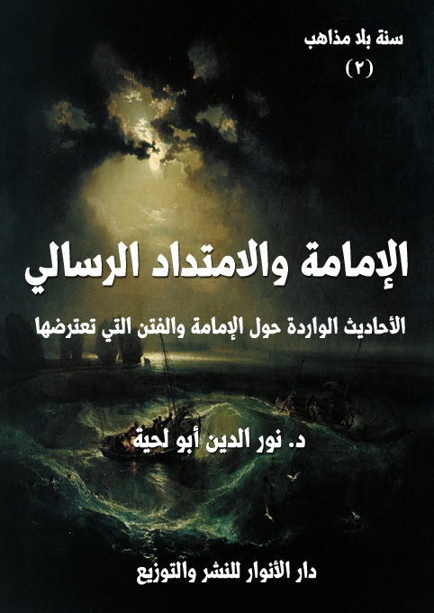

الكتاب: الإمامة والامتداد الرسالي
الوصف: الأحاديث الواردة حول الإمامة والفتن التي تعترضها
السلسلة: سنة بلا مذاهب
المؤلف: أ.د. نور الدين أبو لحية
الناشر: دار الأنوار للنشر والتوزيع
الطبعة: الأولى، 1441 هـ
عدد الصفحات: 517
ISBN: 978-620-3-85880-8
لمطالعة الكتاب من تطبيق مؤلفاتي المجاني وهو أحسن وأيسر: هنا

التعريف بالكتاب
يحاول هذا الكتاب جمع ما ورد من الأحاديث في المصادر السنية والشيعية حول الإمامة والامتداد الرسالي، والتي تتوافق مع ما ورد في القرآن الكريم من:
1 ـ أن من مقتضيات عناية الله تعالى بعباده، باعتباره ربهم وهاديهم، توفير كل أسباب الهداية التي تحميهم من الضلالة، ومن التحريف الذي يلحق الأديان بعد وفاة الأنبياء عليهم السلام، وأن الذين يقومون بذلك يُطلق عليهم [الأئمة]، أو [أئمة الهدى]، أو [الخلفاء]، أو [الورثة]، أو [الهداة]
2 ـ أن أتباع الأنبياء يفترقون في مواقفهم من أولئك الأئمة الهداة الذين استخلفهم أنبياؤهم عليهم، وأوصوهم بهم؛ فبينما يطبق بعضهم تلك الوصايا، ويحرص عليها، بينما يخالف آخرون، تلك الوصايا، ويرتضون لأنفسهم أئمة بدلهم، لكن ذلك لا يعني اندراس الدين الأصيل، لأن في ذلك فتنة كبرى، تجعل البشر محرومين من الهداية الإلهية الصافية.. فلذلك لا يخلوا عصر من العصور من المتمسكين بالدين الحقيقي، وأتباع أئمة الهدى.
3 ـ أن الأصل في إمامة الأئمة ووراثتهم أن تكون شاملة لكل الجوانب التي يرتبط بها الدين سواء تعلقت بالقضايا الدينية البحتة، أو تعلقت بالجوانب الحياتية ابتداء من الجانب السياسي.. ذلك أنهم يمثلون الهداية النبوية ويطبقونها في تلك الجوانب، لكن النصوص الكثيرة تشير إلى أن إمامة الأئمة للجانب السياسي تفتقر للقابلية الشعبية؛ فإن لم تتحقق، أو رغب الناس عن حكم الأئمة لهم؛ فإن ذلك يعفيهم من هذا الجانب، ليبقى الجانب الأساسي، وهو جانب الهداية والتوجيه والبلاغ عن الله وتوضيح حقائق الدين في كل الجوانب بما فيها الجانب السياسي.
الإمامة والامتداد الرسالي (11)
لم تكتف العناية الإلهية بتلك التعاليم المقدسة المنزلة في وحيه لأنبيائه، ولا بتلك الشروح والبيانات التفصيلية التي وضح بها الأنبياء ما نُزل إليهم، وإنما ضم إلى ذلك توفير أسباب الامتداد الرسالي حتى لا يحصل للأديان التغيير والتبديل الذي يحرفها عن مسارها.
وقد أخبر الله تعالى عن ذلك في قوله عن زكريا عليه السلام حينما دعا الله عز وجل في طلب الذرية الصالحة: {فَهَبْ لِي مِنْ لَدُنْكَ وَلِيًّا (5) يَرِثُنِي وَيَرِثُ مِنْ آلِ يَعْقُوبَ وَاجْعَلْهُ رَبِّ رَضِيًّا} [مريم: 5، 6]
فزكريا عليه السلام حسب هذا الدعاء، لم يكن يقصد الولد لذاته، ولا ليتمتع برؤيته، وتقرّ به عينه، وإنما كان لحرصه على بني إسرائيل، خوفا من أن يؤثر فيهم غيابه عنهم، ليتحولوا عن الهداية التي جاء بها.
وهكذا أخبر عن موسى عليه السلام أنه لم يذهب للميعاد إلا بعد أن استخلف أخاه في بني إسرائيل حتى لا يضلوا من بعده، وقد أشار إلى ذلك، بل صرح به قوله تعالى: {وَلَقَدْ قَالَ لَهُمْ هَارُونُ مِنْ قَبْلُ يَاقَوْمِ إِنَّمَا فُتِنْتُمْ بِهِ وَإِنَّ رَبَّكُمُ الرَّحْمَنُ فَاتَّبِعُونِي وَأَطِيعُوا أَمْرِي (90) قَالُوا لَنْ نَبْرَحَ عَلَيْهِ عَاكِفِينَ حَتَّى يَرْجِعَ إِلَيْنَا مُوسَى (91) قَالَ يَاهَارُونُ مَا مَنَعَكَ إِذْ رَأَيْتَهُمْ ضَلُّوا (92) أَلَّا تَتَّبِعَنِ أَفَعَصَيْتَ أَمْرِي (93) قَالَ يَبْنَؤُمَّ لَا تَأْخُذْ بِلِحْيَتِي وَلَا بِرَأْسِي إِنِّي خَشِيتُ أَنْ تَقُولَ فَرَّقْتَ بَيْنَ بَنِي إِسْرَائِيلَ وَلَمْ تَرْقُبْ قَوْلِي (94)} [طه: 90 - 94]
وهكذا أخبر عن إبراهيم عليه السلام أنه دعا الله أن يمد البشر بالأئمة الهداة الذين يحفظون مسيرة الدين من التحريف والتبديل، قال تعالى: {وَإِذِ ابْتَلَى إِبْرَاهِيمَ رَبُّهُ بِكَلِمَاتٍ فَأَتَمَّهُنَّ قَالَ إِنِّي جَاعِلُكَ لِلنَّاسِ إِمَامًا قَالَ وَمِنْ ذُرِّيَّتِي قَالَ لَا يَنَالُ عَهْدِي الظَّالِمِينَ} [البقرة: 124]
الإمامة والامتداد الرسالي (12)
فإبراهيم عليه السلام ـ لحرصه الشديد على هداية الخلق ـ لم يكتف بأهل زمانه، وإنما تطلع لسائر الأزمنة، سائلا الله تعالى أن يرزقهم من أئمة الهدى من يحفظون لهم الهداية الإلهية.
ومن هذه الآية الكريمة اخترنا هذا الاصطلاح [الإمام]، وربطناه بـ[الامتداد الرسالي].. ذلك أن النبوة محدودة في مدتها، وأجلها، وقد انتهت أدوارها بوفاة آخر الرسل عليهم السلام، ولذلك لم يبق إلا الإمام.
وسر ذلك واضح.. ذلك أن النبوة تتضمن إيصال التعاليم الإلهية إلى العباد لتطبيقها في حياتهم، ثم يقوم الإمام بعد ذلك بشرح تلك التعاليم، وخاصة في الزمن الذي يتسلل فيه البغاة للتحريف والتبديل.
وقد أشار إلى هذا قوله تعالى ـ مشيرا إلى منابع الهداية الثلاثة: الكتاب، والنبوة، والإمامة ـ: {وَلَقَدْ آتَيْنَا مُوسَى الْكِتَابَ فَلَا تَكُنْ فِي مِرْيَةٍ مِنْ لِقَائِهِ وَجَعَلْنَاهُ هُدًى لِبَنِي إِسْرَائِيلَ (23) وَجَعَلْنَا مِنْهُمْ أَئِمَّةً يَهْدُونَ بِأَمْرِنَا لَمَّا صَبَرُوا وَكَانُوا بِآيَاتِنَا يُوقِنُونَ} [السجدة: 23، 24]؛ فقد قرن الله تعالى الإمامة بالهداية، أي أن دور الإمام هو حفظ الهداية من أن يتسلل إليها المتسللون عبر استثمار المتشابه، واستعماله وسيلة للفتنة.
وهكذا ورد الإخبار عن هذه السنة الإلهية في قوله تعالى: {ثُمَّ أَوْرَثْنَا الْكِتَابَ الَّذِينَ اصْطَفَيْنَا مِنْ عِبَادِنَا} [فاطر: 32]، ثم بين مواقف الأمم من هؤلاء المصطفين، فقال: {فَمِنْهُمْ ظَالِمٌ لِنَفْسِهِ وَمِنْهُمْ مُقْتَصِدٌ وَمِنْهُمْ سَابِقٌ بِالْخَيْرَاتِ بِإِذْنِ اللَّهِ} [فاطر: 32]
وبذلك؛ فإن القرآن الكريم يشير إلى أن أئمة الهدى يتعرضون ـ مثلما تعرض الأنبياء ـ لمواجهة أصحاب الفتن، ومتبعي الشبهات، والذين لا يكتفون بتحريف الدين، وإنما يضيفون إليه إقصاء الأئمة، وتشويههم، واستبدالهم بأئمة آخرين.
الإمامة والامتداد الرسالي (13)
وقد أشار إلى ذلك قوله تعالى: {كَانَ النَّاسُ أُمَّةً وَاحِدَةً فَبَعَثَ اللَّهُ النَّبِيِّينَ مُبَشِّرِينَ وَمُنْذِرِينَ وَأَنْزَلَ مَعَهُمُ الْكِتَابَ بِالْحَقِّ لِيَحْكُمَ بَيْنَ النَّاسِ فِيمَا اخْتَلَفُوا فِيهِ وَمَا اخْتَلَفَ فِيهِ إِلَّا الَّذِينَ أُوتُوهُ مِنْ بَعْدِ مَا جَاءَتْهُمُ الْبَيِّنَاتُ بَغْيًا بَيْنَهُمْ فَهَدَى اللَّهُ الَّذِينَ آمَنُوا لِمَا اخْتَلَفُوا فِيهِ مِنَ الْحَقِّ بِإِذْنِهِ وَاللَّهُ يَهْدِي مَنْ يَشَاءُ إِلَى صِرَاطٍ مُسْتَقِيمٍ} [البقرة: 213]
ثم عقب الله تعالى على هذه الآية الكريمة بأن سنته في هذه الأمة هي نفس سنته في سائر الأمم، وأن الشيطان الذي أضل سائر الأمم بإبعادها عن سراطها المستقيم، وممثليه الشرعيين، سيفعل ذلك مع هذه الأمة أيضا، قال تعالى: {أَمْ حَسِبْتُمْ أَنْ تَدْخُلُوا الْجَنَّةَ وَلَمَّا يَأْتِكُمْ مَثَلُ الَّذِينَ خَلَوْا مِنْ قَبْلِكُمْ مَسَّتْهُمُ الْبَأْسَاءُ وَالضَّرَّاءُ وَزُلْزِلُوا حَتَّى يَقُولَ الرَّسُولُ وَالَّذِينَ آمَنُوا مَعَهُ مَتَى نَصْرُ اللَّهِ أَلَا إِنَّ نَصْرَ اللَّهِ قَرِيبٌ} [البقرة: 214]
وبذلك يمكن أن نستنبط من الآيات الكريمة ثلاثة معان:
أولها ـ أن من مقتضيات عناية الله تعالى بعباده، باعتباره ربهم وهاديهم، توفير كل أسباب الهداية التي تحميهم من الضلالة، ومن التحريف الذي يلحق الأديان بعد وفاة الأنبياء عليهم السلام، وأن الذين يقومون بذلك يُطلق عليهم [الأئمة]، أو [أئمة الهدى]، أو [الخلفاء]، أو [الورثة]، أو [الهداة]، كما نص على ذلك قوله تعالى: {إِنَّمَا أَنْتَ مُنْذِرٌ وَلِكُلِّ قَوْمٍ هَادٍ} [الرعد: 7]
ثانيها ـ أن أتباع الأنبياء يفترقون في مواقفهم من أولئك الأئمة الهداة الذين استخلفهم أنبياؤهم عليهم، وأوصوهم بهم؛ فبينما يطبق بعضهم تلك الوصايا، ويحرص عليها، بينما يخالف آخرون، وهم كثر، تلك الوصايا، ويرتضون لأنفسهم أئمة بدلهم، كما قال تعالى: {فَخَلَفَ مِنْ بَعْدِهِمْ خَلْفٌ أَضَاعُوا الصَّلَاةَ وَاتَّبَعُوا الشَّهَوَاتِ فَسَوْفَ يَلْقَوْنَ غَيًّا} [مريم: 59]، وقال: {فَخَلَفَ مِنْ بَعْدِهِمْ خَلْفٌ وَرِثُوا الْكِتَابَ يَأْخُذُونَ عَرَضَ هَذَا
الإمامة والامتداد الرسالي (14)
الْأَدْنَى وَيَقُولُونَ سَيُغْفَرُ لَنَا وَإِنْ يَأْتِهِمْ عَرَضٌ مِثْلُهُ يَأْخُذُوهُ أَلَمْ يُؤْخَذْ عَلَيْهِمْ مِيثَاقُ الْكِتَابِ أَنْ لَا يَقُولُوا عَلَى اللَّهِ إِلَّا الْحَقَّ وَدَرَسُوا مَا فِيهِ وَالدَّارُ الْآخِرَةُ خَيْرٌ لِلَّذِينَ يَتَّقُونَ أَفَلَا تَعْقِلُونَ} [الأعراف: 169]
لكن ذلك لا يعني اندراس الدين الأصيل، لأن في ذلك فتنة كبرى، تجعل البشر محرومين من الهداية الإلهية الصافية.. فلذلك لا يخلوا عصر من العصور من المتمسكين بالدين الحقيقي، واتباع أئمة الهدى، كما أشار إلى ذلك قوله تعالى في الآية التي تلت الآية السابقة: {وَالَّذِينَ يُمَسِّكُونَ بِالْكِتَابِ وَأَقَامُوا الصَّلَاةَ إِنَّا لَا نُضِيعُ أَجْرَ الْمُصْلِحِينَ} [الأعراف: 170]
ولهذا يخبر الله تعالى أن الحق لن ينطفئ نوره أبدا، قال تعالى: {يُرِيدُونَ لِيُطْفِئُوا نُورَ اللَّهِ بِأَفْوَاهِهِمْ وَاللَّهُ مُتِمُّ نُورِهِ وَلَوْ كَرِهَ الْكَافِرُونَ} [الصف: 8]، وقال: {وَقُلْ جَاءَ الْحَقُّ وَزَهَقَ الْبَاطِلُ إِنَّ الْبَاطِلَ كَانَ زَهُوقًا} [الإسراء: 81]
وأخبر عن بني إسرائيل أنهم لم يجمعوا على تحريف الدين، بل بقيت منهم طائفة صالحة، إلى أن جاء الإسلام فاتبعته، كما قال تعالى: {وَمِنْ قَوْمِ مُوسَى أُمَّةٌ يَهْدُونَ بِالْحَقِّ وَبِهِ يَعْدِلُونَ} [الأعراف: 159]
وكل ذلك حتى تقوم الحجة على الخلق، ذلك أن وقوع جميع الأمة في الباطل يعني انتصاره على الحق، وهو ما يعني حرمان الأجيال من الهداية الإلهية الصافية التي لم تكدر بالأهواء البشرية.
ثالثها ـ أن الأصل في إمامة الأئمة ووراثتهم أن تكون شاملة لكل الجوانب التي يرتبط بها الدين سواء تعلقت بالقضايا الدينية البحتة، أو تعلقت بالجوانب الحياتية ابتداء من الجانب السياسي.. ذلك أنهم يمثلون الهداية النبوية ويطبقونها في تلك الجوانب.
الإمامة والامتداد الرسالي (15)
لكن النصوص المقدسة الكثيرة تشير إلى أن إمامة الأئمة للجانب السياسي تفتقر للقابلية الشعبية؛ فإن لم تتحقق، أو رغب الناس عن حكم الأئمة لهم؛ فإن ذلك يعفيهم من هذا الجانب، ليبقى الجانب الأساسي، وهو جانب الهداية والتوجيه والبلاغ عن الله وتوضيح حقائق الدين في كل الجوانب بما فيها الجانب السياسي.
وهذا ما يزيل كل الإشكالات التي يطرحها من لم يفهم تلك النصوص المقدسة؛ فيتصور أن إمامة الإمام قاصرة على توليه لمسؤولية الخلافة، ولهذا نجد الصوفية في المدرسة السنية يذكرون هذا الاعتبار؛ فيقسمون الخلافة إلى قسمين: ظاهرة وباطنة.. ويذكرون أن الإمام علي، وغيره من الأئمة، تولوا الخلافة الباطنة.
بناء على هذا سنحاول في هذا الكتاب جمع الأحاديث الموضحة لمصاديق هذه المعاني والمؤكدة لها، والتي تنبع جميعا من حرص رسول الله صلى الله عليه وآله وسلم على هذه الأمة، لا في جيله الذي عايشه فقط، وإنما في جميع الأجيال، وقد رأينا أنه يمكن تقسيمها إلى قسمين:
القسم الأول ما ورد حول الإمامة وأهلها وشروطها
وهي الأحاديث التي يبين فيها رسول الله صلى الله عليه وآله وسلم بالتلميح والإشارة، أو بالتصريح والعبارة، المصاديق الذين ينطبق عليهم ألقاب الأئمة والخلفاء والورثة، حتى تجتمع الأمة عليهم، وتحفظ نفسها من الفرقة والخلاف بسبب التوزع على أئمة كثيرين مختلفين.
وبما أن هذه القضية من أكبر القضايا التي وقع فيها الخلاف في الأمة؛ فقد ورد في القرآن الكريم الإشارة إلى ناحية مهمة جدا، ربما يكون اعتبارها المعيار الأول في تحديد مصاديق الأئمة، فالله تعالى يعطي أهمية خاصة لذرية الأنبياء عليهم الصلاة والسلام، ويبين أن لهم مكانة كبيرة لا من الجانب العاطفي فقط، وإنما من الجانب العملي أيضا، باعتبار أن لهم اصطفاء خاصا، ودورا مهما في الرسالة وحفظها والوفاء بمقتضياتها.
الإمامة والامتداد الرسالي (16)
وقد ذكر الله سبحانه وتعالى سنته في ذلك، فقال: {إِنَّ اللَّهَ اصْطَفَى آدَمَ وَنُوحًا وَآلَ إِبْرَاهِيمَ وَآلَ عِمْرَانَ عَلَى الْعَالَمِينَ (33) ذُرِّيَّةً بَعْضُهَا مِنْ بَعْضٍ وَاللَّهُ سَمِيعٌ عَلِيمٌ} [آل عمران: 33، 34]
ومثلها قوله تعالى عند تسميته للأنبياء عليهم الصلاة والسلام المذكورين في القرآن الكريم: {وَتِلْكَ حُجَّتُنَا آتَيْنَاهَا إِبْرَاهِيمَ عَلَى قَوْمِهِ نَرْفَعُ دَرَجَاتٍ مَنْ نَشَاءُ إِنَّ رَبَّكَ حَكِيمٌ عَلِيمٌ (83) وَوَهَبْنَا لَهُ إِسْحَاقَ وَيَعْقُوبَ كُلًّا هَدَيْنَا وَنُوحًا هَدَيْنَا مِنْ قَبْلُ وَمِنْ ذُرِّيَّتِهِ دَاوُودَ وَسُلَيْمَانَ وَأَيُّوبَ وَيُوسُفَ وَمُوسَى وَهَارُونَ وَكَذَلِكَ نَجْزِي الْمُحْسِنِينَ (84) وَزَكَرِيَّا وَيَحْيَى وَعِيسَى وَإِلْيَاسَ كُلٌّ مِنَ الصَّالِحِينَ (85) وَإِسْمَاعِيلَ وَالْيَسَعَ وَيُونُسَ وَلُوطًا وَكُلًّا فَضَّلْنَا عَلَى الْعَالَمِينَ (86) وَمِنْ آبَائِهِمْ وَذُرِّيَّاتِهِمْ وَإِخْوَانِهِمْ وَاجْتَبَيْنَاهُمْ وَهَدَيْنَاهُمْ إِلَى صِرَاطٍ مُسْتَقِيمٍ (87)} [الأنعام: 83 - 87]
فهذه الآيات الكريمة توضح الصلات النسبية بين الأنبياء جميعا، وتبين أن الاجتباء الإلهي شملهم بهذا الشكل، ولا راد لاجتباء الله.
ولم يكتف القرآن الكريم بهذا التعميم، بل ذكر تفاصيل كثيرة تدل عليه، حتى يترسخ في الأذهان أن اصطفاء الأنبياء فضل إلهي باعتباره استمرارا للنهج الرسالي وتوحيدا لمسيرته حتى لا تنحرف به الطرق والمناهج.
ومن تلك التفاصيل ما ذكره الله تعالى من اصطفائه لآل إبراهيم عليهم السلام في آيات متعددة، كقوله تعالى عن إبراهيم عليه السلام: {وَوَهَبْنَا لَهُ إِسْحَاقَ وَيَعْقُوبَ وَجَعَلْنَا فِي ذُرِّيَّتِهِ النُّبُوَّةَ وَالْكِتَابَ وَآتَيْنَاهُ أَجْرَهُ فِي الدُّنْيَا وَإِنَّهُ فِي الْآخِرَةِ لَمِنَ الصَّالِحِينَ} [العنكبوت: 27]
بل إن القرآن الكريم يذكر أن إبراهيم عليه السلام نفسه دعا الله أن يكون الخط
الإمامة والامتداد الرسالي (17)
الرسالي ممتدا في ذريته، فقال: {وَإِذِ ابْتَلَى إِبْرَاهِيمَ رَبُّهُ بِكَلِمَاتٍ فَأَتَمَّهُنَّ قَالَ إِنِّي جَاعِلُكَ لِلنَّاسِ إِمَامًا قَالَ وَمِنْ ذُرِّيَّتِي قَالَ لَا يَنَالُ عَهْدِي الظَّالِمِينَ} [البقرة: 124]
وقد صرح القرآن الكريم بانقسام ذريته إلى محسن وظالم في قوله تعالى: {وَبَشَّرْنَاهُ بِإِسْحَاقَ نَبِيًّا مِنَ الصَّالِحِينَ (112) وَبَارَكْنَا عَلَيْهِ وَعَلَى إِسْحَاقَ وَمِنْ ذُرِّيَّتِهِمَا مُحْسِنٌ وَظَالِمٌ لِنَفْسِهِ مُبِينٌ} [الصافات: 112، 113]
بل إن الله تعالى صرح بأن الأمر باق في عقبه، فقال: {وَجَعَلَهَا كَلِمَةً بَاقِيَةً فِي عَقِبِهِ لَعَلَّهُمْ يَرْجِعُونَ} [الزخرف: 28]
بل إن الله تعالى ذكر أن إبراهيم عليه السلام ـ كما سأل ربه أن يجعل ذريته أئمة للناس ـ سأله أيضا أن يوفق الناس لمودتهم والاقتداء بهم، فقال على لسان إبراهيم عليه السلام: {رَبَّنَا إِنِّي أَسْكَنْتُ مِنْ ذُرِّيَّتِي بِوَادٍ غَيْرِ ذِي زَرْعٍ عِنْدَ بَيْتِكَ الْمُحَرَّمِ رَبَّنَا لِيُقِيمُوا الصَّلَاةَ فَاجْعَلْ أَفْئِدَةً مِنَ النَّاسِ تَهْوِي إِلَيْهِمْ وَارْزُقْهُمْ مِنَ الثَّمَرَاتِ لَعَلَّهُمْ يَشْكُرُونَ} [إبراهيم: 37]
ومن تلك التفاصيل ما ذكره الله تعالى من اصطفائه لآل موسى وآل هارون عليهم السلام، كما يشير إلى ذلك قوله تعالى في قصة طالوت: {وَقَالَ لَهُمْ نَبِيُّهُمْ إِنَّ آيَةَ مُلْكِهِ أَنْ يَأْتِيَكُمُ التَّابُوتُ فِيهِ سَكِينَةٌ مِنْ رَبِّكُمْ وَبَقِيَّةٌ مِمَّا تَرَكَ آلُ مُوسَى وَآلُ هَارُونَ تَحْمِلُهُ الْمَلَائِكَةُ إِنَّ فِي ذَلِكَ لَآيَةً لَكُمْ إِنْ كُنْتُمْ مُؤْمِنِينَ} [البقرة: 248]
بل إننا نجد أن الله تعالى اختار هارون أخا موسى عليه السلام ليكون معينا له ووزيرا بناء على طلب موسى، فقال: {وَلَقَدْ آتَيْنَا مُوسَى الْكِتَابَ وَجَعَلْنَا مَعَهُ أَخَاهُ هَارُونَ وَزِيرًا} [الفرقان: 35]
ومن تلك التفاصيل ما ذكره الله تعالى من اصطفائه لآل يعقوب عليهم السلام، وهم وإن كانوا جزءا من آل إبراهيم، لكن القرآن خصهم بالذكر عند الحديث عن يوسف بن
الإمامة والامتداد الرسالي (18)
يعقوب عليهما السلام في قوله تعالى: {وَكَذَلِكَ يَجْتَبِيكَ رَبُّكَ وَيُعَلِّمُكَ مِنْ تَأْوِيلِ الْأَحَادِيثِ وَيُتِمُّ نِعْمَتَهُ عَلَيْكَ وَعَلَى آلِ يَعْقُوبَ كَمَا أَتَمَّهَا عَلَى أَبَوَيْكَ مِنْ قَبْلُ إِبْرَاهِيمَ وَإِسْحَاقَ إِنَّ رَبَّكَ عَلِيمٌ حَكِيمٌ} [يوسف: 6]
وذكرهم عند الحديث عن زكريا عليه السلام حينما دعا الله عز وجل وطلب الذرية الصالحة، فقال: {فَهَبْ لِي مِنْ لَدُنْكَ وَلِيًّا (5) يَرِثُنِي وَيَرِثُ مِنْ آلِ يَعْقُوبَ وَاجْعَلْهُ رَبِّ رَضِيًّا} [مريم: 5، 6]
ومن تلك التفاصيل ما ذكره الله تعالى من اصطفائه لآل داود عليهم السلام، والذين ورد ذكرهم في قوله تعالى: {اعْمَلُوا آلَ دَاوُودَ شُكْرًا وَقَلِيلٌ مِنْ عِبَادِيَ الشَّكُورُ} [سبأ: 13]، وقد بين القرآن الكريم أن سليمان ورث داود، فقال: {وَوَرِثَ سُلَيْمَانُ دَاوُودَ} [النمل: 16]
وهكذا نجد حديث الله عن اصطفائه لآل بيت أنبيائه، وإعطائهم مكانة خاصة، وهي سنته فيهم، ورسول الله صلى الله عليه وآله وسلم أولى بذلك منهم، إن لم يكن نظيرا لهم فيه، وقد قال تعالى عنه: {قُلْ مَا كُنْتُ بِدْعًا مِنَ الرُّسُلِ وَمَا أَدْرِي مَا يُفْعَلُ بِي وَلَا بِكُمْ إِنْ أَتَّبِعُ إِلَّا مَا يُوحَى إِلَيَّ وَمَا أَنَا إِلَّا نَذِيرٌ مُبِينٌ} [الأحقاف: 9]
ولذلك؛ فإن وجود أحاديث تدل على هذه المعاني، وأن رسول الله صلى الله عليه وآله وسلم يتحدث عن أهل بيته، أو يوصي بهم، أو يدل على أن لهم وظائف خاصة ترتبط بالهداية ليس مستغربا؛ فالقرآن الكريم يؤكد ذلك، ويصرح به، وسر ذلك يعود لأمرين يدل عليهما العقل والنقل:
أما أولهما: فهو نفس السر الذي بسببه رفض إبليس السجود لآدم عليه السلام، وهو أن الأمم قد تخضع لأنبيائها بدافع المعجزات التي ظهرت على أيديهم، ولكنها ترفض أن تخضع لقرابتهم من بعدهم حسدا وبغيا، كما ذكر القرآن الكريم ذلك، فقال: {أَمْ يَحْسُدُونَ
الإمامة والامتداد الرسالي (19)
النَّاسَ عَلَى مَا آتَاهُمُ اللَّهُ مِنْ فَضْلِهِ فَقَدْ آتَيْنَا آلَ إِبْرَاهِيمَ الْكِتَابَ وَالْحِكْمَةَ وَآتَيْنَاهُمْ مُلْكًا عَظِيمًا (54) فَمِنْهُمْ مَنْ آمَنَ بِهِ وَمِنْهُمْ مَنْ صَدَّ عَنْهُ وَكَفَى بِجَهَنَّمَ سَعِيرًا (55)} [النساء: 54، 55]
وأما الثاني: فهو ما تدل عليه الفطرة السليمة، ذلك أن أقرب الناس تمثيلا للأنبياء واقتداء بهم وعلما بأحوالهم هم أهلوهم الذين عاشوا معهم، وهذا متوفر لأهل بيت النبوة بحكم تربيتهم في بيت النبي صلى الله عليه وآله وسلم، ومن ثم الأخذ عنهم بصفة مباشرة، ومن ثم انتقال العلم بينهم بالتوالي من المصدر تماماً.
وهذا ما يدل عليه الواقع؛ فالصانع الحرفي اليدوي الماهر ينقل سر صنعته ومهارته تلك إلي ابنه وحفيده.. والرياضي البارع هو في الغالب ابن رياضي بارع.. والسياسي الحاذق نجده قد تربي ونقل عن والده نفس المهارة.. حتى الساحر والحاوي ينقل سر مهنته تلك عن أبيه، وبالمثل الطبيب الحاذق والموسقي المبدع والعالم الباحث.
وهذا لا يعني أن الإمامة تنطبق على كل أولاد الرسول أو أقاربه، فقد أخبر الله تعالى أن منهم من يكون ظالما، ولذلك لا يستحق ذلك الشرف.. بل أخبر أن ابن نوح عليه السلام كان كافرا، ولذلك نزل عليه العذاب مثلما نزل على غيره، بناء على ما تقتضيه العدالة الإلهية.
ولهذا يحتاج التعرف على الإمام وصفاته ووظائفه إلى البيان النبوي الذي يحمي الأمة من أن تضع مصاديق الإمامة في غير أهلها؛ فتنحرف عن السراط المستقيم.
القسم الثاني ما ورد في شأن الامتداد الرسالي والفتن التي تعرض له
وهي الأحاديث التي يبين فيها رسول الله صلى الله عليه وآله وسلم مواقف الأمة الواقعية من تلك الوصايا، والفتن التي تحصل لها بسبب ذلك، مما يندرج ضمن النبوءات.. وهي ليست مجرد نبوءات، وإنما هي وصايا تدل على الطريق الذي ينجي من الفتن، ويعيد الأمة إلى مسارها
الإمامة والامتداد الرسالي (20)
الصحيح.
ذلك أن الله تعالى أبلغ نبيه صلى الله عليه وآله وسلم بكل ما تفعله الأمة من بعده.. وهو لذلك ـ بناء على شفقته وحرصه عليهم ـ لا يكتفي بأن يوصيهم بالوصايا التي يعلم أنهم سيقصرون فيها، وإنما يضيف إلى ذلك تحذيرهم من المواقف التي تصيبهم بسبب ذلك التقصير، ويبين لهم كيفية الخروج منه.
وكل ذلك تابع لما تقتضيه الهداية الإلهية للخلق، والتي لم تكتف بتلك الوصايا الداعية إلى مراعاة السراط المستقيم الذي يمثله أئمة الهدى، وعدم الانحراف عنه إلى غيره، وإنما أضافت إلى ذلك وصف الواقع الذي سيؤول إليه حال المسلمين بسبب تفريطهم في الوصايا الإلهية، وبيان كيفية التعامل معه، وهو ما يطلق عليه [الفتن والملاحم]
ونرى أن أصل هذا النوع من الأحاديث مقبول موافق للقرآن الكريم وللعقول والفطر السليمة، ذلك أنها من دلائل الحرص على الهداية، وتوفير كل ما يؤدي إلى إقامة الحجة على الخلق، حتى لا تبقى حجة لمحتج؛ فأحاديث الفتن، ليست مجرد استشراف للمستقبل، ووصف دقيق له، وإنما هي بمثابة التشريعات المرتبطة بالظروف المختلفة، حتى يتعرف المؤمن على وجه الحق فيها؛ فيتبعه.
وبذلك، فإنه يمكن وصفها بأنها امتدادا للنبوة، وامتداد لنصحها وتوجيهها، وكأن رسول الله صلى الله عليه وآله وسلم حاضر عند كل فتنة، ليعلمنا كيفية تجنبها، مثلما كان في حياته الدنيوية تماما، كما قال تعالى في وصفه: {لَقَدْ جَاءَكُمْ رَسُولٌ مِنْ أَنْفُسِكُمْ عَزِيزٌ عَلَيْهِ مَاعَنِتُّمْ حَرِيصٌ عَلَيْكُمْ بِالْمُؤْمِنِينَ رَءُوفٌ رَحِيمٌ} [التوبة: 128]
فالحرص الشديد لرسول الله صلى الله عليه وآله وسلم على نجاة البشرية وخلاصها هو الذي جعله لا يترك مناسبة إلا ويخبر فيها عما يتربصها في جميع مراحل تاريخها المستقبلية من خير أو شر،
الإمامة والامتداد الرسالي (21)
مبينا أسباب ذلك وعوامله، وموجها إلى كيفية التعامل معه.
وهذا ما ينسجم مع ما ورد في النصوص الكثيرة من وضوح أمر الدين، وكل ما يعترض حركته وتطبيقه في التاريخ من عقبات.
وفوق ذلك؛ فإن الواقع أحسن دليل على صحتها، ذلك أن الكثير من تلك الاستشرافات التي أخبر عنها رسول الله صلى الله عليه وآله وسلم تحققت بالفعل، ولذلك لم تبق حجة لمن ينكرها، ولذلك أدرجها العلماء في [دلائل النبوة]
بالإضافة إلى ذلك؛ فقد أخبر الله تعالى عن استعمال الأنبياء عليهم السلام لها لبيان نبوتهم وصدقهم، مثلما فعل يوسف عليه السلام عندما قال مخاطبا صاحبيه في السجن: {لَا يَأْتِيكُمَا طَعَامٌ تُرْزَقَانِهِ إِلَّا نَبَّأْتُكُمَا بِتَأْوِيلِهِ قَبْلَ أَنْ يَأْتِيَكُمَا ذَلِكُمَا مِمَّا عَلَّمَنِي رَبِّي} [يوسف: 37]
ومثله قوله تعالى على لسان المسيح عليه السلام مخاطبا بني إسرائيل: {وَأُنَبِّئُكُمْ بِمَا تَأْكُلُونَ وَمَا تَدَّخِرُونَ فِي بُيُوتِكُمْ إِنَّ فِي ذَلِكَ لَآيَةً لَكُمْ إِنْ كُنْتُمْ مُؤْمِنِينَ} [آل عمران: 49]
ولهذا نرى اليهود والمسيحيين وغيرهم من أصحاب الأديان، يعتمدون على النبوءات في إثبات عقائدهم، ولهذا نجد في كتبهم المقدسة اهتماما كبيرا بالنبوءات الغيبية، ومحاولة تطبيقها على الواقع.
وسر ذلك أن [النبوءات]، وخاصة الدقيقة منها، خارجة عن القدرات العلمية العادية، فالإنسان لا يعرف إلا ماضيه وحاضره، أما المستقبل فهو غيب مطلق، ولذلك لا يعرفه بدقته إلا من يملك الاتصال بعالم الغيب، وذلك لأن النطق بالنبوءة خطير جدا، ذلك أنه يميز الصادق من الكاذب، وفي التاريخ نبوءات كثيرة كذبت أصحابها، وكانت من أسباب ارتفاع ثقة جمهورهم بهم.. ومن ذلك البيان الشيوعي المعروف الذي صدر سنة
الإمامة والامتداد الرسالي (22)
1848، والذي تنبأ بأن أول البلاد التي ستقود الثورة الشيوعية هي (ألمانيا)، لكنه وبعد مضي العقود الكثير من السنين لم تتحقق هذه النبوءة، بل سقطت الشيوعية نفسها قبل أن تتحقق.. وقد كتب كارل ماركس في مايو سنة 1849 قائلا: (إن الجمهورية الحمراء تبزغ في سماء باريس)، ورغم أكثر من قرن على هذه النبوءة إلا أنها لم تتحقق (1).
بناء على هذا لقي هذا النوع من الأحاديث اهتماما كبيرا من المحدثين من المدرستين السنية والشيعية، حيث لا نجد كتابا من كتب الحديث، إلا ويشتمل على أبواب من هذا النوع.
ففي الصحيحين اللذين تعتبرهما المدرسة السنية أصح الكتب بعد كتاب الله نجد هذا النوع من الأحاديث، ففي صحيح البخاري، نرى كتاباً مخصصا لأحاديث الفتن والملاحم، ترجم له البخاري بعنوان (كتاب الفتن)، جمع فيه ما لا يقل عن 87 حديثاً مقسمةً على 28 باباً.. ومثله نجد في صحيح مسلم كتابا تحت عنوان (كتاب الفتن وأشراط الساعة)، جمع فيه مالا يقل عن 143 حديثاً موزعا على 28 باباً، وكان فيه أكثر تفصيلاً ودقة من البخاري.
أماّ في كتب السنن الأربع التي تعتبرها المدرسة السنية تالية للصحيحين، فنجد فيها جميعا كتبا وأبوابا خاصة بهذا النوع من الحديث.. ومن أمثلها سنن أبي داوود السِّجِستاني، الذي جمع مرويات الفتن في مصنفه المشهور في ثلاثة كتب، الأول بعنوان (كتاب الفتن والملاحم)، أورد فيه ما يقارب 88 حديثاً، والثاني بعنوان (كتاب المهدي)، وذكر فيه 21 حديثاً، والثالث بعنوان (كتاب الملاحم)، جمع فيها ما يزيد عن 50 حديثاً.
ومثله فعل الحافظ الترمذي، والذي خصص كتابا لأحاديث الفتن والملاحم،
__________
(1) الاسلام يتحدى مدخل علمي الى الايمان، وحيد الدين خان، ص 128.
الإمامة والامتداد الرسالي (23)
وترجم له بعنوان (أبواب الفتن عن رسول الله صلى الله عليه وآله وسلم)، وقد جمع فيه ما يزيد عن 70 باباً في أحاديث ومرويات الفتن.
ومثلهما فعل الحافظ أبو عبد الرحمن النسائي، لكنه لم يفرد كتاباً خاصاً لأحاديث الفتن، بل بثها في ثنايا سننه على شكل أبواب متفرقة في كتب مختلفة.
ومثلهم فعل الحافظ ابن ماجة محمد القزويني، الذي خرّج أحاديث الفتن في سننه في كتاب ترجم له بـ[كتاب الفتن]، قسمه إلى ما يزيد على 30 باباً جمعت أكثر من 100 حديث للنبي صلى الله عليه وآله وسلم في الموضوع.
بل إنهم خصصوا كتبا خاصة بذلك، وهي كثيرة، ومن أهمها [كتاب الفتن] (1)، لنعيم بن حماد، وهو من المصادر الرئيسية في هذا الباب، لكونه من الكتب المتقدمة التي جمعت أكثر ما يتعلق بهذا الموضوع من أحاديث، بالإضافة إلى كونه لقي اهتماما كبيرا من أئمة الحديث، ذلك أن مؤلف الكتاب (نعيم بن حماد) كان شيخا لكبار أئمة الحديث من أمثال البخاري ومسلم وأبي داوود والترمذي والنسائي، بل إنهم استندوا إليه في تخريج هذا النوع من الحديث.
ومنها كتاب (السنن الواردة في الفتن وغوائلها والأزمنة وفسادها والساعة وأشراطها) (2) لأبي عمرو الداني، وقد قسمه إلى أكثر من مئة باب، جمع فيها الكثير من أحاديث الفتن وتفاصيلها وأزمنتها والأمكنة التي تقع فيها.
وهكذا نجد اهتمام المصادر الحديثية للمدرسة الشيعية بأحاديث الفتن والملاحم والنبوءات، بل إن اهتمامها بها أكبر بكثير، ذلك أنها تعتبرها من المعارف الدينية الضرورية،
__________
(1) ويقال بأن اسمه الصحيح هو (الفتن والملاحم)، ولكنه اشتهر بكتاب [الفتن].
(2) وقد قام بتحقيقه رضاء الله المباركفوري، وطبعته دار العاصمة بالرياض في ستنة مجلدات.
الإمامة والامتداد الرسالي (24)
والتي ترتبط بها الكثير من المواقف والسلوكات بخلاف المدرسة السنية، والتي تكتفي عادة بربطها بالعقائد أو دلائل النبوة.
ولهذا نجد في كتب الحجاج والمناظرات والجدل الذي دار بين المدرستين احتجاج كبار أعلام الشيعة ومتكلميهم بأمثال تلك الروايات والنصوص، والتي ينقلونها في مصادرهم عبر طرق كثيرة متواترة.
ونحب أن ننبه هنا إلى أن الكثير من الروايات التي نجدها في المصادر الشيعية، هي نفسها في المصادر السنية، وربما يكون ذلك لاعتماد كلا المدرستين على ما كتبه نعيم بن حماد في [كتاب الفتن]، بالإضافة لأبي صالح السليلي بن أحمد بن عيسى ابن شيخ الحساني، وأبي يحيى زكريا بن يحيى بن الحارث البزار..
وقد جمعها جميعا علي بن موسى بن طاووس في كتابه [الملاحم والفتن]، والذي ذكر هذه الكتب الثلاثة، وبين مدى مصداقيتها، ثم قال: (وقد اقتضت الاستخارة أن أذكر من هذه الثلاثة المصنفات ما يوفقني الله جل جلاله لذكره وأكون في ثقله متابعا لمقدس أمره وحافظا بجمعه ما تفرق من سره ومستفتحا لأبواب بره ونصره، وتعظيم قدره والتعريف لما يجب على ذلك من حمده وشكره، وأجعله أبوابا وفي كل باب أذكر ما اشتمل عليه الباب من خبره وخبره، وأقيد ذكر الأبواب التي في ذلك الكتاب ليعرف الناظر فيها ما اشتملت عليه فيطلبه من حيث يرشده إليه إن شاء الله تعالى) (1)
ثم بين مدى قيمة كتاب أبي نعيم خصوصا، وذكر أن ذلك بسبب كونه (.. أقرب عهد بالصحابة والتابعين وقد زكاه جماعة من المفسرين) (2)، ثم ذكر بعض الروايات عن
__________
(1) الملاحم والفتن في ظهور الغائب المنتظر عجل الله فرجه الشريف، السيد رضي الدين ابي القاسم علي بن موسى بن جعفر بن محمد بن طاووس، ص 20.
(2) المرجع السابق، ص 19.
الإمامة والامتداد الرسالي (25)
الأعلام الذين وثقوه، والذين ذكروا علاقته الطيبة بأصحاب الإمام علي، وروايته عنهم.
ولذلك؛ فإن معظم الخلاف بين المدرستين ليس في نصوص الأحاديث والروايات، وإنما في تطبيقها على المصاديق اللائقة بها، حيث نجد كل مصنف أو شارح لتلك الأحاديث يطبقها على ما يراه من الواقع الذي عاشه.
ومن الأمثلة على ذلك ما فعله أبو عمرو الداني في كتابه [السنن الواردة في الفتن وغوائلها والأزمنة وفسادها والساعة وأشراطها] حيث طبق أحاديثه على ما وقع في زمانه من أحداث، ولذلك ذكر في كتابه أن الفتنة قد وصلت ذروتها في زمانه ولم يبق إلاّ العلامة الكبرى لقيام الساعة، فقال: (فقد ظهر في وقتنا وفشا في زماننا من الفتن وتغيير الأحوال وفساد الدين، واختلاف القلوب، وإحياء البدع، وإماتة السنن، ما دل على انقراض الدنيا وزوالها، ومجيء الساعة واقترابها، إذ كل ما قد تواتر من ذلك وتتابع وانتشر، وفشا وظهر، قد أعلمنا به نبينا صلى الله عليه وآله وسلم وخوفناه) (1)
بناء على هذا كله، فقد قسمنا الكتاب إلى خمسة فصول، كما يلي:
الفصل الأول: حول الأحاديث المقبولة المرتبطة بتحديد أئمة الهدى وأوصافهم في المصادر السنية.
الفصل الثاني: حول الأحاديث المقبولة المرتبطة بتحديد أئمة الهدى وأوصافهم في المصادر الشيعية.
الفصل الثالث: حول الأحاديث المقبولة المرتبطة بالامتداد الرسالي، والفتن التي تعرض له في المصادر السنية.
الفصل الرابع: حول الأحاديث المقبولة المرتبطة بالامتداد الرسالي، والفتن التي
__________
(1) السنن الواردة في الفتن وغوائلها والأزمنة وفسادها والساعة وأشراطها، 1/ 177.
الإمامة والامتداد الرسالي (26)
تعرض له في المصادر الشيعية.
الفصل الخامس: حول الأحاديث المردودة المرتبطة بالإمامة والامتداد الرسالي.
وقد حاولنا الاكتفاء بإيراد الأحاديث، وبيان مدلولاتها العامة من دون تفصيل كبير، إلا إذا رأينا أن تأويلا لحق بتلك الأحاديث ليحرفها عن معناها؛ فنحتاج حينها لرده.
الإمامة والامتداد الرسالي (27)
أئمة الهدى وأوصافهم في المصادر السنية
وهي أحاديث كثيرة جدا يوصي فيها رسول الله صلى الله عليه وآله وسلم أمته بمنابع الهداية الصافية التي لم تختلط بغيرها، مثلما فعل كل الأنبياء قبله، لعلمه بأن الشيطان لن يترك الإسلام صافيا نقيا، بل سيعمل على تشويهه وملئه بالانحرافات مثلما فعل مع الأديان السابقة.
ولذلك لم يترك الأمر سدى، ولا جعل حبل الأمة في أيدي كل أفرادها؛ فيستحيل أن يستقيم أمر أمة يكون لكل فرد منها الحق في الكلام في الدين، وإدخال ما شاء فيه، لأن ذلك ييسر أمر المندسين الذين قد يلبسون لباس التقوى، ليتحولوا إلى ثقاة عند جمهور الناس، ليضيفوا من خلال ذلك إلى الدين من القيم والتشريعات والعقائد ما يحلو لهم.
ولهذا؛ فإن رسول الله صلى الله عليه وآله وسلم كما كان حريصا في كل المعارك على تحديد القادة، وكما كان يدعو كل ثلاثة من الناس إلى اختيار أمير لهم؛ فإنه دعا الأمة كذلك إلى الالتزام في أمر دينها بأئمة محدودين مثلما تأتم في صلاتها بأئمة محدودين.
وبناء على كثرة الأحاديث الدالة على هذا؛ فقد قسمناها إلى سبعة أصناف، كل صنف منها له دلالته الخاصة، والتي لا تكتمل إلا بضمه إلى غيرها، حتى لا نقع فيما وقع فيه أولئك الذين يروون هذه الأحاديث منفصلة عن بعضها، ولهذا يفهمونها فهما جزئيا لا كليا.
وهذه الأقسام السبعة هي:
1 ـ الوصايا النبوية بالتمسك بالعترة الطاهرة.
2 ـ الوصايا النبوية بمحبة العترة الطاهرة والارتباط بها.
3 ـ تحديد مصاديق العترة الطاهرة.
الإمامة والامتداد الرسالي (28)
4 ـ تحديد عدد الخلفاء المهديين والدعوة إلى الاستنان بسنتهم.
5. اعتبار الإمام علي أول أئمة الهدى.
6 ـ اعتبار الحسن والحسين من أئمة الهدى.
7 ـ أحاديث البشارة بالإمام المهدي.
وهذه الأقسام جميعا، وما ينتج عنها تشكل أرضية للتوافق بين الأحاديث الواردة في المصادر السنية والشيعية، وهي تجعل منها أكثر مقبولية؛ فالأمة لا تجتمع على ضلالة.
أولا ـ الوصايا النبوية بالتمسك بالعترة الطاهرة
وهي أحاديث كثيرة، لكن أشهرها ما يطلق عليه [حديث الثقلين]، ويسمى كذلك لقوله صلى الله عليه وآله وسلم في بعض ألفاظه: (إنِّي تاركٌ فيكم الثَّقَلينِ) ـ كما يذكر المحدثون ـ لأهميتهما، قال القاضي عياض: (قِيل سُمِّيَا بذلك؛ لعِظم أقدارهما، وقيل: لشدَّة الأخْذ بهما) (1)، وقال النوويُّ: (سمِّيَا ثَقلين؛ لعظمهما، وكبير شأنهما) (2)
وقد روي عن جمع من الصحابة، وبصيغ متقاربة، تدل على أن رسول الله صلى الله عليه وآله وسلم كان يكثر من ذكره والتنبيه عليه، وهو بجميع صيغه يدل على كون العترة الطاهرة منبعا من منابع الهداية الصافية، بدليل ذكرها مع القرآن الكريم، والإخبار بعدم افتراقها عنه، ومن تلك الصيغ:
[الحديث: 1] حديثُ الإمام عليِّ عن رسول الله صلى الله عليه وآله وسلم أنه قال: (تركتُ فيكم ما إنْ أخذتُم به لن تضلُّوا: كتابَ الله، سببُه بيده وسببُه بأيديكم، وأهلَ بَيتي) (3)
__________
(1) انظر: (مشارق الأنوار على صحاح الآثار) (1/ 134)
(2) انظر: (شرح صحيح مسلم) (15/ 180)
(3) رواه إسحاق بن راهويه كما في (إتحاف الخيرة المهرة) للبوصيري (7/ 210)، و(المطالب العالية) لابن حجر (4/ 252) والطحاوي في (شرح مشكل الآثار) (1760)، والحديث صحح إسناده الحافظ ابن حجر في (المطالب العالية) (4/ 252)
الإمامة والامتداد الرسالي (29)
[الحديث: 2] حديثُ زَيد بن ثابتٍ عن رسول الله صلى الله عليه وآله وسلم أنه قال: (إني تاركٌ فيكم ما إن تمسَّكتُم به لن تضلُّوا: كتاب الله، وعِترتي أهل بيتي؛ فإنَّهما لن يفترقَا حتى يرِدَا عليَّ الحوضَ) (1)
[الحديث: 3] حديث زَيد بن أرقمَ عن رسول الله صلى الله عليه وآله وسلم أنه قال: (إنِّي تاركٌ فيكم ما إن تمسَّكتُم به لن تضلُّوا بعدي. أحدُهما أعظمُ من الآخَر.:كتاب الله، حبْلٌ ممدودٌ من السَّماء إلى الأرض، وعِترتي أهل بيتي، ولن يتفرَّقَا حتى يرِدَا عليَّ الحوضَ، فانظروا كيف تَخلُفوني فيهما) (2)
وفي لفظ آخر: (أيُّها الناس، إنِّي تاركٌ فيكم أمرينِ لن تضلُّوا إن اتَّبعتموهما، وهما: كتابُ الله، وأهلُ بيتي عِترتي) (3)
[الحديث: 4] حديثُ جابرِ بن عبد الله عن رسول الله صلى الله عليه وآله وسلم أنه قال: (يا أيُّها الناس، إني تركتُ فيكم ما إنْ أخذتُم به لن تضلُّوا: كتاب الله، وعِترتي أهْلَ بَيتي) (4)
[الحديث: 5] حديث أبي سعيدٍ الخُدريِّ عن رسول الله صلى الله عليه وآله وسلم أنه قال: (إنِّي قد تركتُ فيكم ما إنْ أخذتم به، لن تضلُّوا بعدي: الثَّقلَينِ. أحدهما أكبرُ مِن الآخَر. كتاب الله، حبْلٌ ممدود من السَّماء إلى الأرض، وعِترتي أهل بيتي، ألَا وإنهما لن يَفترِقَا حتى يرِدَا عليَّ الحوضَ) (5)
__________
(1) رواه عبد بن حميد في (مسنده) (240)
(2) رواه الترمذي (3788)، والفسوي في (المعرفة والتاريخ) (1/ 536)، والشجري في (ترتيب الأمالي) (738) قال الترمذي: (حسن غريب)
(3) رواه الحاكم (4577)، والشجري في (ترتيب الأمالي) (712)
(4) رواه الترمذي (3786)، والطبراني في (المعجم الكبير) (3/ 66) (2680)
(5) رواه أحمد (11578)، وابن أبي عاصم في (السنة) (1553)، وأبو يعلى (1140)، والطبراني في (المعجم الكبير) (3/ 65) (2678)، والبغوي في (شرح السنة) (3914)
الإمامة والامتداد الرسالي (30)
وفي رواية: (تركتُ فيكم ما إنْ تمسَّكتم به، فلن تضلُّوا: كتابَ الله، وأهلَ بيتي) (1)
وفي رواية: (إني تاركٌ فيكم ما إنْ تمسَّكتم به، لن تضلُّوا بعدي. أحدهما أعظمُ من الآخَر.: كتاب الله، حبلٌ ممدود من السَّماء إلى الأرض، وعِترتي أهْل بيتي، ولن يتفرَّقَا حتى يرِدَا عليَّ الحوض، فانظروا كيف تَخلُفوني فيهما) (2)
ولا تعارض بين هذه الأحاديث وبين ما ورد من الروايات في الجمع بين الوصية بالقرآن الكريم والسنة، على الرغم من كون المحدثين يضعفون الروايات التي استبدل فيها لفظ [العترة] بلفظ [السنة]، ذلك أنه وردت أحاديث أخرى تضع سنة رسول الله صلى الله عليه وآله وسلم، وسنة أئمة الهدى في محل واحد، ولهذا يمكن اعتبارها من الأحاديث المقبولة، والتي يمكن الجمع بينها وبين الأحاديث الواردة بلفظ العترة.
[الحديث: 6] ومن تلك الأحاديث قوله صلى الله عليه وآله وسلم: (تركتُ فيكم أمرين لن تضلُّوا بعدهما: كتابَ الله جلَّ وعزَّ، وسُنَّةَ نبيِّه) (3)، وقوله: (.. وما عطَّلوا كتابَ الله وسُنَّةَ رسولِه، إلَّا جعَل الله بأسَهم بينهم) (4)، وقوله: (تركتُ فيكم أيُّها الناس، ما إنِ اعتصمتم به، فلن تضلُّوا أبدًا: كتاب الله، وسُنَّة نبيِّه) (5)، وقوله: (قد تركتُ فيكم بَعْدي ما إن أخذتُم، لم تضلُّوا: كتاب الله، وسُنَّة نبيِّكم) (6)، وقوله: (إنِّي قد خَلَّفتُ فيكم اثنين، لن تضلُّوا بعدهما أبدًا: كتاب الله،
__________
(1) رواه أحمد في (فضائل الصحابة) (170)
(2) رواه الترمذي (3788) قال الترمذي: حسنٌ غريب.
(3) رواه بحشل في (تاريخ واسط) (ص 50)
(4) رواه البيهقي في (شعب الإيمان) (3315)، والسخاوي في (الأجوبة المرضية) (2/ 546)
(5) رواه الحاكم في (المستدرك)، والمروزي في (السنة) (68)، والعقيلي في (الضعفاء الكبير) (2/ 250)، (318)، والبيهقي في (دلائل النبوة) (5/ 449)
(6) رواه أبو نعيم في (تاريخ أصبهان) (1/ 138)
الإمامة والامتداد الرسالي (31)
وسُنتي، ولن يتفرَّقَا حتى يرِدَا عليَّ الحوض) (1)، وقوله: (يا أيُّها الناس، إنِّي قد تركتُ فيكم الثَّقلين: كتاب الله، وسُنَّتي؛ فاستنطِقوا القرآن بسُنَّتي، ولا تعسفوه؛ فإنَّه لن تعمَى أبصارُكم، ولن تَزِلَّ أقدامكم، ولن تقصرَ أيديكم ما أخذتُم بهما) (2)
ومع ورود الحديث بتلك الصيغ الكثيرة الصحيحة الدالة على وصية رسول الله صلى الله عليه وآله وسلم بالعترة، واعتبارها منبعا من منابع الهداية مثلها مثل القرآن الكريم، وأنه لا تعارض لذلك بينها وبين السنة النبوية، ذلك أنها مكملة ومبينة لها، مثلما تكمل السنة القرآن وتبينه؛ إلا أنه مع ذلك نجد من العلماء الذين أثرت فيهم الفئة الباغية يردون تلك الأحاديث، مع أنهم يسلمون بصحتها.
ومن الأمثلة على ذلك قول ابن قدامة المقدسي: (لا نسلم أن المراد بالثقلين: القرآن، والعترة، وإنما المراد: القرآن والسنة، كما في الرواية الأخرى: (تركت فيكم أمرين لن تضلوا ما تمسكتم بهما: كتاب الله، وسنة رسوله)، وإنما خص صلى الله عليه وآله وسلم العترة بالذكر؛ لأنهم أخبر بحاله صلى الله عليه وآله وسلم) (3)
وهنا نلاحظ مدى التخبط الذي يقع فيه صاحب هذا القول؛ فبينما يسلم للعترة بكونها أخبر بحال رسول الله صلى الله عليه وآله وسلم، وأعرف به من غيرهم، ومع ذلك يرد الروايات الدالة على الوصية بها وبهديها.
ومثل ذلك قول الآمدي: (لا نسلم أن المراد بالثقلين: الكتاب، والعترة، بل الكتاب،
__________
(1) رواه البزار (8993) واللفظ له، والعقيلي في (الضعفاء الكبير) (2/ 250)، وابن عدي في (الكامل في الضعفاء) (4/ 69)، والدارقطني (4/ 245)، والحاكم (4321)
(2) رواه الخطيب في (الفقيه والمتفقه) (1/ 275)، وفيه: سيف بن عمر؛ قال ابن معين: ضعيف الحديث. وقال أبو حاتم: متروك الحديث، يشبه حديثه حديث الواقدي. وقال أبو داود: ليس بشيء. وقال النسائي والدارقطني: ضعيف. ينظر: (تهذيب التهذيب) لابن حجر (4/ 259)
(3) روضة الناظر (1/ 470)
الإمامة والامتداد الرسالي (32)
والسنة، على ما روي أنه قال: (كتاب الله، وسنتي) (1)
مع أنه يقرر في كتبه الأصولية، وفي مباحث التعارض والترجيح، أنه يقدم الحديث الصحيح على الضعيف، وأنه في حال إمكان الجمع بين الأحاديث لا يرفض أي منها.
ومن تلك التأويلات للحديث مع وضوحه قصر الوصية بأهل البيت على التعامل العاطفي المجرد عن اتباع هديهم، مع أن هذا الحديث وغيره يشير إلى ذلك بدليل اقتران العترة بالقرآن الكريم والإخبار بعدم افتراقهما، وهو ما عبر عنه القرطبي بقوله: (وأهل بيتي، أذكركم الله في أهل بيتي. ثلاثا)؛ هذه الوصية، وهذا التأكيد العظيم يقتضي: وجوب احترام آل النبي صلى الله عليه وآله وسلم وأهل بيته، وإبرارهم، وتوقيرهم، ومحبتهم وجوب الفروض المؤكدة، التي لا عذر لأحد في التخلف عنها. هذا مع ما علم من خصوصيتهم بالنبي صلى الله عليه وآله وسلم، وبأنهم جزءٌ منه؛ فإنهم أصوله التي نشأ منها، وفروعه التي تنشأ عنه) (2)
وقال ابن كثير: (ولا تنكر الوصاة بأهل البيت، والأمر بالإحسان إليهم، واحترامهم وإكرامهم؛ فإنهم من ذرية طاهرة، من أشرف بيت وجد على وجه الأرض، فخرا وحسبا ونسبا، ولا سيما إذا كانوا متبعين للسنة النبوية، الصحيحة الواضحة الجلية، كما كان عليه سلفهم، كالعباس وبنيه، وعلي وأهل بيته وذريته) (3)
ومن التأويلات الواردة في الحديث لصرفه عن معناه استعمال كل الوسائل لإدخال كل بني هاشم مع العترة، وكأن رسول الله صلى الله عليه وآله وسلم يجعل الدين ميراثا يقسم بين الأسرة، لا أنه كان حريصا على دلالة الأمة على أفراد محدودين معدودين يتعاقبون على حمل الهدي الصحيح بسبب علاقتهم المتينة برسول الله صلى الله عليه وآله وسلم، كما يشير إلى ذلك ما ذكره الله تعالى عن
__________
(1) الإحكام في أصول الأحكام، (1/ 308)
(2) المفهِم لِمَا أشكل من تلخيص كتاب مسلم، (20/ 51)
(3) تفسير ابن كثير، (7/ 201)
الإمامة والامتداد الرسالي (33)
وراثة يحي لزكريا عليهما السلام، أو ما يصرح به قوله تعالى: {وَوَرِثَ سُلَيْمَانُ دَاوُودَ} [النمل: 16]
ومن الأمثلة على ذلك قول ابن تيمية: (إن النبي صلى الله عليه وآله وسلم قال عن عترته: إنها والكتاب لن يفترقا حتى يردا عليه الحوض، وهو الصادق المصدوق؛ فيدل على أن إجماع العترة حجة، وهذا قول طائفة من أصحابنا، وذكره القاضي في المعتمد، لكن العترة هم بنو هاشم كلهم: ولد العباس، وولد علي، وولد الحارث بن عبد المطلب، وسائر بني أبي طالب وغيرهم، وعليٌ وحده ليس هو العترة، وسيد العترة هو رسول الله صلى الله عليه وآله وسلم وإجماع الأمة حجة بالكتاب والسنة والإجماع، والعترة بعض الأمة، فيلزم من ثبوت إجماع الأمة إجماع العترة) (1)
وهكذا تحول الحديث عنده من الوصية باتباع العترة إلى الوصية باتباع الأمة، وهو في ذلك يشبه الوالد الذي يوصي ولده بأن يتمسك بهدي نفسه.
ومثل ابن تيمية في المتقدمين نجد الألباني يستعمل سلاح الطائفية لضرب الحديث، وعدم الاستفادة منه على الرغم من تصحيحه له ولطرقه الكثيرة؛ فقد قال: (من المعروف أن الحديث مما يحتج به الشيعة، ويلهجون بذلك كثيرا، حنى يتوهم بعض أهل السنة أنهم مصيبون في ذلك، وهم جميعا واهمون في ذلك، وبيانه من وجهين) (2)
أما الوجه الأول الذي ذكره؛ فقد عبر عنه بقوله: (الأول: أن المراد من الحديث في قوله صلى الله عليه وآله وسلم: (عترتي) أكثر مما يريده الشيعة، ولا يرده أهل السنة، بل هم مستمسكون به، ألا وهو أن العترة فيه هم أهل بيته صلى الله عليه وآله وسلم، وقد جاء ذلك موضحا في بعض طرقه كحديث الترجمة: (وعترتي أهل بيتي)، وأهل بيته في الأصل: هم نساؤه صلى الله عليه وآله وسلم، وفيهن الصديقة عائشة..
__________
(1) منهاج السنة النبوية، (7/ 393 - 397)
(2) سلسلة الأحاديث الصحيحة، (4/ 260)
الإمامة والامتداد الرسالي (34)
وتخصيص الشيعة (أهل البيت) في الآية بعلي وفاطمة والحسن والحسين، دون نسائه صلى الله عليه وآله وسلم من تحريفهم لآيات الله تعالى؛ انتصارا لأهوائهم) (1)
وهو وجه يتناقض مع الأحاديث التي صححها حول مصاديق أهل البيت، والذي سنورده مع الأحاديث الدالة عليه بعنوان خاص في هذا المبحث.
وأما الوجه الثاني، فذكر فيه (أن المقصود من (أهل البيت) إنما هم العلماء الصالحون منهم، والمتمسكون بالكتاب والسنة؛ قال الإمام أبو جعفر الطحاوي: (العترة: هم أهل بيته صلى الله عليه وسلم، الذين هم على دينه، وكذلك المتمسكون بأمره)
ومثله ما عبر عنه ابن باز بقوله: (إني تاركٌ فيكم ثقلين: أولهما: كتاب الله، فيه الهدى والنور؛ فخذوا بكتاب الله، واستمسكوا به، ثم قال: وأهل بيتي، أذكركم الله في أهل بيتي)، يعني بهم: زوجاته، وقراباته من بني هاشم، يذكر الناس بالله في أهل بيته، بأن يرفقوا بهم، وأن يحسنوا إليهم، ويكفوا الأذى عنهم، ويوصوهم بالحق، ويعطوهم حقوقهم ما داموا مستقيمين على دينه، متبعين لشريعته عليه الصلاة والسلام) (2)
وهكذا راح الكثير من العلماء يؤولون الحديث عن معناه على الرغم من وجود أحاديث أخرى كثيرة تدل على معناه، بالإضافة لما ورد في القرآن الكريم من ذلك، ومنها قول ابن حجر الهيتمي: (وفي رواية صحيحة: (إني تاركٌ فيكم أمرين، لن تضلوا إن تبعتموهما، وهما: كتاب الله، وأهل بيتي عترتي)... وفي رواية: (كتاب الله، وسنتي) وهي المراد من الأحاديث المقتصرة على الكتاب؛ لأن السنة مبينة له، فأغنى ذكره عن ذكرها، والحاصل: أن الحث وقع على التمسك بالكتاب، وبالسنة، وبالعلماء بهما من أهل البيت) (3)
__________
(1) سلسلة الأحاديث الصحيحة، (4/ 260)
(2) مجموع فتاوى ابن باز، (9/ 34)
(3) الصواعق المحرِقة، (2/ 439)
الإمامة والامتداد الرسالي (35)
ثانيا ـ الوصايا النبوية بمحبة العترة الطاهرة والارتباط بها
وهي أحاديث كثيرة توصي المؤمنين بمحبة العترة الطاهرة، والتعلق بها، والصلاة عليها، باعتبارها سفينة نجاة الأمة من الفتن، وهي تحذر في نفس الوقت من إذيتها أو الوقوف في صف أعدائها.. وهي كلها تحمل إشارات واضحة إلى الوظائف التي أنيطت بتلك العترة؛ فرسول الله صلى الله عليه وآله وسلم أعظم من أن تكون وصاياه متعلقة بالعواطف المجردة عن التفعيل والآثار.
وللأسف؛ فإن الكثير ممن يؤمن بتلك الأحاديث، توهم أنها مرتبطة بكل منتسب لأهل البيت، وليس لتلك العترة التي قاومت الظلم والاستبداد، واستعملت كل الوسائل لمواجهة التحريف، لكنها لم تجد من يقف معها إلا القليل.
بل نجد من يؤمن بتلك الأحاديث، ممن لم يفتن بأن يعيش في تلك العصور، يقف موقفا سلبيا من تلك العترة، بتولي أعدائها، ومن حاربوها، والدفاع عنهم، وفي نفس الوقت يتصور أنه ركب سفينة النجاة بمحبتهم، ولست أدري أي محبة تلك التي تجعل الشخص يقف مع أعداء من يحبه؛ ومن تلك الأحاديث:
1 ـ ما ورد في كون العترة الطاهرة سفينة نجاة الأمة من الفتن
[الحديث: 6] عن ابن عباس قال: قال رسول الله صلى الله عليه وآله وسلم: (النجوم أمان لأهل السماء، وأهل بيتي أمان لأمتي من الاختلاف، فإذا خالفتها قبيلة من العرب اختلفوا فصاروا حزب إبليس) (1)
وهذا الحديث واضح في الدلالة على أهمية وضع الإمامة في محل مضبوط محدد حتى لا تتيه بالمؤمن السبل، ويشتد الخلاف.
__________
(1) رواه الحاكم، سبل الهدي والرشاد (11/ 7)
الإمامة والامتداد الرسالي (36)
[الحديث: 7] عن سلمة بن الأكوع، قال: قال رسول الله صلى الله عليه وآله وسلم: (النجوم أمان لأهل السماء، وأهل بيتي أمان لأمتي) (1)
[الحديث: 8] عن جابر بن عبد الله أن رسول الله صلى الله عليه وآله وسلم قال: (النجوم أمان لأهل السماء، فإذا ذهبت أتاها ما توعدون، وأنا أمان لأصحابي، فإذا ذهبت أتاهم ما يوعدون، وأهل بيتي أمان لأمتي، فإذا ذهب أهل بيتي أتاهم ما يوعدون) (2)
[الحديث: 9] عن الإمام علي قال: قال رسول الله صلى الله عليه وآله وسلم: (النجوم أمان لأهل السماء، فإذا ذهبت النجوم، ذهب أهل السماء، وأهل بيتي أمان لأهل الأرض فإذا ذهب أهل بيتي ذهب أهل الأرض) (3)
[الحديث: 10] عن أبي سعيد الخدري وغيره، قال: قال رسول الله صلى الله عليه وآله وسلم: (مثل أهل بيتي فيكم كسفينة نوح في قوم نوح، من ركبها نجا، ومن تخلف عنها غرق، ومثل حطة بني إسرائيل) (4)
2 ـ ما ورد في الحث على حبها ونصرتها والتحذير من بغضها وإذيتها
[الحديث: 11] عن ابن عباس قال: قال رسول الله صلى الله عليه وآله وسلم: (أحبوا الله لما يغذوكم به من نعمه، وأحبوني بحب الله ـ تعالى ـ وأحبوا أهل بيتي بحبي) (5)
[الحديث: 12] عن الإمام علي قال: قال رسول الله صلى الله عليه وآله وسلم: (من آذاني في أهلي، فقد آذى
__________
(1) رواه ابن أبي شيبة ومسدد وأبو يعلى والحكيم والترمذي والطبراني وابن عساكر، سبل الهدي والرشاد (11/ 6)
(2) رواه الحاكم، سبل الهدي والرشاد (11/ 6)
(3) رواه أحمد في المناقب، سبل الهدي والرشاد (11/ 7)
(4) رواه البزار والطبراني وأبو نعيم والبزار وابن جرير والحاكم والخطيب في (المتفق والمفترق) والطبراني في (الصغير) و(الأوسط)، قال الحافظ أبو الخير السخاوي: وبعض طرق هذا الحديث يقوي بعضها بعضا، سبل الهدي والرشاد (11/ 11)
(5) رواه الترمذي وحسنه والطبراني والحاكم وقال صحيح الإسناد والبيهقي في (الشعب) وابن سعد وابن الجوزي، سبل الهدي والرشاد (11/ 8)
الإمامة والامتداد الرسالي (37)
الله عز وجل) (1)
[الحديث: 13] عن أبي سعيد قال: قال رسول الله صلى الله عليه وآله وسلم: (من أبغض أهل البيت فهو منافق) (2)
[الحديث: 14] عن ابن أبي ليلى قال: قال رسول الله صلى الله عليه وآله وسلم: (لا يؤمن أحد حتى أكون أحب إليه من نفسه وتكون عترتي أحب إليه من عترته وأهلي أحب إليه من أهله، وإني أحب إليه من ذاك) (3)
[الحديث: 15] عن أبي سعيد قال: قال رسول الله صلى الله عليه وآله وسلم: (والذي نفسي بيده، لا يبغض أهل البيت أحد إلا أدخله الله النار) (4)
[الحديث: 16] عن الحسن بن علي أنه قال لمعاوية بن خديج: يا معاوية، إياك وبغضنا، فإن رسول الله صلى الله عليه وآله وسلم قال: (لا يبغضنا، ولا يحسدنا أحد إلا زيد عن الحوض يوم القيامة بسياط من نار) (5)
[الحديث: 17] عن الحسين بن علي أن رسول الله صلى الله عليه وآله وسلم قال: (من سب أهل البيت، فإنما يسب الله ورسوله، ومن والانا فلرسول الله صلى الله عليه وآله وسلم، ومن عادانا فلرسول الله صلى الله عليه وآله وسلم) (6)
[الحديث: 18] قال رسول الله صلى الله عليه وآله وسلم: (حرمت الجنة على من ظلم أهل بيتي، أو قاتلهم أو أعان عليهم أو سبهم) (7)
__________
(1) رواه أبو نعيم، سبل الهدي والرشاد (11/ 8)
(2) رواه أحمد في المناقب، سبل الهدي والرشاد (11/ 8)
(3) رواه الطبراني وأبو الشيخ بن حيان في (الثواب) والبيهقي في (الشعب) والديلمي، سبل الهدي والرشاد (11/ 8)
(4) رواه الحاكم وابن حبان وصححاه، سبل الهدي والرشاد (11/ 8)
(5) رواه الطبراني في الأوسط، سبل الهدي والرشاد (11/ 8)
(6) رواه أبو بكر البزقاني، سبل الهدي والرشاد (11/ 8)
(7) رواه الديلمي، سبل الهدي والرشاد (11/ 9)
الإمامة والامتداد الرسالي (38)
[الحديث: 19] عن درة بنت أبي سهب قالت: خرج رسول الله صلى الله عليه وآله وسلم مغضبا حتى استوى على المنبر، فحمد الله، وأثنى عليه ثم قال: (ما بال الرجال يؤذونني في أهلي؟ والذي نفسي بيده، لا يؤمن عبد حتى يحبني ولا يحبني حتى يحب ذوي) (1)
[الحديث: 20] عن أبي سعيد قال: قال رسول الله صلى الله عليه وآله وسلم: (إن لله ـ عز وجل ـ ثلاث حرمات من حفظهن حفظ الله دينه ودنياه، ومن لم يحفظهن لم يحفظ الله دينه ولا آخرته) قلت: ما هن؟ قال: (حرمة الإسلام وحرمتي وحرمة رحمي) (2)
3 ـ ما ورد في الحث على الصلاة عليهم في الصلاة وغيرها
[الحديث: 21] عن عبد الرحمن ابن أبي ليلى قال: لقيت كعب بن عجرة فقال: ألا أهدي لك هدية سمعتها من رسول الله صلى الله عليه وآله وسلم؟ قلت: بلى، قال: سألنا رسول الله صلى الله عليه وآله وسلم، فقلنا: يا رسول الله، كيف الصلاة عليكم أهل البيت؟ قال (قولوا: اللهم، صل على محمد وعلى آل محمد كما صليت على إبراهيم وعلى آل إبراهيم إنك حميد مجيد، وبارك على محمد وعلى آل محمد كما باركت على إبراهيم وعلى آل إبراهيم إنك حميد مجيد) (3)
[الحديث: 22] عن إبراهيم بن يزيد النخعي قال: قالوا: يا رسول الله، قد علمنا السلام عليك، فكيف الصلاة عليك؟ قال: قولوا (اللهم صل على محمد عبدك ورسولك، وأهل بيته كما صليت على إبراهيم إنك حميد مجيد) (4)
[الحديث: 23] عن أبي مسعود البدري قال: قال رسول الله صلى الله عليه وآله وسلم: (من صلى صلاة لم يصل فيها علي وعلى أهل بيتي لم تقبل منه)، وقال أبو مسعود: (لو صليت صلاة لا أصلي
__________
(1) رواه أبو الشيخ، سبل الهدي والرشاد (11/ 9)
(2) رواه الطبراني وأبو الشيخ، سبل الهدي والرشاد (11/ 9)
(3) رواه البخاري ومسلم، سبل الهدي والرشاد (11/ 10)
(4) رواه إسماعيل القاضي، سبل الهدي والرشاد (11/ 10)
الإمامة والامتداد الرسالي (39)
فيها على آل محمد ما رأيت أن صلاتي تتم) (1)
وقد صاغ بعضهم ذلك شعرا، فقال:
يا أهل بيت رسول الله حبكم... فرض من الله في القرآن أنزله
كفاكم من عظيم القدر أنكم... من لم يصل عليكم لا صلاة له
4 ـ ما ورد في الجزاء المرتبط بمن يساندهم
وهي دعوة غير مباشرة لتشكيل حلف بقيادتهم لمواجهة الاستبداد والظلم والتحريف:
[الحديث: 24] عن الإمام علي قال: قال رسول الله صلى الله عليه وآله وسلم: (من صنع إلى أحد من أهل بيتي يدا كافأته عنه يوم القيامة) (2)
[الحديث: 25] عن الإمام علي قال: أن رسول الله صلى الله عليه وآله وسلم قال: (أربعة أنا لهم شفيع يوم القيامة، المكرم لذريتي، والقاضي لهم حوائجهم، والساعي لهم في أمورهم عند ما اضطروا إليه، والمحب لهم بقلبه ولسانه) (3)
5 ـ ما ورد في حق فاطمة الزهراء والتحذير من مخالفتها وإذيتها
وكأن رسول الله صلى الله عليه وآله وسلم يدعو الأمة بعده إلى البحث عن مواقفها، واتباعها، باعتبارها بضعة منه، لأنها تمثل موقفه، لكن ذلك لم يطبق للأسف؛ فقد عزلت الزهراء عن الساحة تماما إلى أن ماتت ودفنت دون أن يحضر جنازتها إلا القليل، على الرغم أنها بنت رسول الله صلى الله عليه وآله وسلم، ومن تلك الأحاديث:
[الحديث: 26] عن الإمام علي أن رسول الله صلى الله عليه وآله وسلمقال لفاطمة: (إن الله تعالى يغضب
__________
(1) رواه الدارقطني والبيهقي وغيرهما، سبل الهدي والرشاد (11/ 10)
(2) رواه الملا وأبو سعيد النيسابوري، سبل الهدي والرشاد (11/ 11)
(3) رواه الديلمي، سبل الهدي والرشاد (11/ 11)
الإمامة والامتداد الرسالي (40)
لغضبك ويرضى لرضاك) (1)
[الحديث: 27] عن عائشة قالت: كنا أزواج رسول الله صلى الله عليه وآله وسلمعنده لم يغادر منهن واحدة، فأقبلت فاطمة تمشي، كأن مشيتها مشية رسول الله صلى الله عليه وآله وسلمفقال: (مرحبا يا بنتي) فأجلسها عن يمينه أو عن شماله: ثم إنه أسر إليها حديثا فبكت فاطمة، ثم إنه سارها فضحكت أيضا، فقلت لها: ما يبكيك؟ فقالت: ما كنت لأفشي سر رسول الله صلى الله عليه وآله وسلمفقلت: ما رأيت كاليوم فرحا أقرب من حزن فقلت لها حين بكت: أخصك رسول الله صلى الله عليه وآله وسلم بحديثه دوننا ثم تبكين؟ وسألتها عما قال: فقالت: ما كنت لأفشي سر رسول الله صلى الله عليه وآله وسلم حتى إذا قبض سألتها فقالت: أنه كان حدثني (إن جبريل كان يعارضه بالقرآن كل عام مرة، وإنه عارضه به في العام مرتين، ولا أراني إلا قد حضر أجلي، وإنك أول أهلي لحوقا بي، ونعم السلف أنا لك) فبكيت لذلك، ثم إنه سارني فقال: (ألا ترضين أن تكوني سيدة نساء المؤمنين أو سيدة نساء هذه الأمة)؟ فضحكت لذلك) (2)
[الحديث: 28] عن عائشة قالت: ما رأيت أحدا أشبه سمتا ولا هديا، ولا حديثا برسول الله صلى الله عليه وآله وسلم في قيامها وقعودها من فاطمة) (3)
[الحديث: 29] عن عائشة قالت: (ما رأيت أحدا قط أصدق من فاطمة إلا أن يكون أباها صلى الله عليه وآله وسلم) (4)
[الحديث: 30] عن عائشة قالت: (ما رأيت أحدا كان أصدق لهجة من فاطمة ـ
__________
(1) رواه الطبراني بإسناد حسن وابن السني في معجمه وأبو سعيد النيسابوري في (الشرف)، سبل الهدي والرشاد (11/ 44)
(2) رواه مسلم، سبل الهدي والرشاد (11/ 45)
(3) رواه أبو داود والترمذي وحسنه والنسائي، سبل الهدي والرشاد (11/ 45)
(4) رواه أبو يعلى برجال الصحيح، سبل الهدي والرشاد (11/ 47)
الإمامة والامتداد الرسالي (41)
رضي الله تعالى عنها ـ إلا أن يكون الذي والدها صلى الله عليه وآله وسلم) (1)
[الحديث: 31] عن عائشة قالت: توفيت السيدة فاطمة بعد رسول الله صلى الله عليه وآله وسلم بستة أشهر ـ وفي رواية: ليلة الثلاثاء لثلاث خلون من رمضان سنة إحدى عشرة ـ ودفنها علي بن أبي طالب ليلا) (2)
[الحديث: 32] عن جعفر بن محمد قال: (مكثت فاطمة بعد النبي صلى الله عليه وآله وسلم ثلاثة أشهر، وما رؤيت ضاحكة بعد رسول الله صلى الله عليه وآله وسلمإلا أنهم قد امتروا في طرف نابها) (3)
[الحديث: 33] عن عائشة: أن فاطمة بنت النبي صلى الله عليه وآله وسلم أرسلت إلى أبي بكر تسأله ميراثها من رسول الله صلى الله عليه وآله وسلم مما أفاء الله عليه بالمدينة، وفدك وما بقي من خمس خيبر، فقال أبو بكر: إن رسول الله صلى الله عليه وآله وسلم قال: (لا نورث، ما تركنا صدقة، إنما يأكل آل محمد صلى الله عليه وآله وسلم في هذا المال، وإني والله لا أغير شيئا من صدقة رسول الله صلى الله عليه وآله وسلم عن حالها التي كان عليها في عهد رسول الله صلى الله عليه وآله وسلم، ولأعملن فيها بما عمل به رسول الله صلى الله عليه وآله وسلم)، فأبى أبو بكر أن يدفع إلى فاطمة منها شيئا، فوجدت فاطمة على أبي بكر في ذلك، فهجرته فلم تكلمه حتى توفيت، وعاشت بعد النبي صلى الله عليه وآله وسلم ستة أشهر، فلما توفيت دفنها زوجها علي ليلا، ولم يؤذن بها أبا بكر وصلى عليها، وكان لعلي من الناس وجه حياة فاطمة، فلما توفيت استنكر علي وجوه الناس، فالتمس مصالحة أبي بكر ومبايعته، ولم يكن يبايع تلك الأشهر، فأرسل إلى أبي بكر: أن ائتنا ولا يأتنا أحد معك، كراهية لمحضر عمر، فقال عمر: لا والله لا تدخل عليهم وحدك، فقال أبو بكر: وما عسيتهم أن يفعلوا بي، والله لآتينهم، فدخل عليهم أبو بكر، فتشهد علي، فقال: إنا قد عرفنا فضلك وما أعطاك الله، ولم ننفس عليك خيرا ساقه الله إليك، ولكنك استبددت علينا
__________
(1) رواه أبو عمر، سبل الهدي والرشاد (11/ 47)
(2) رواه الطبراني بأسانيد رجال أحدها رجال الصحيح والبخاري، سبل الهدي والرشاد (11/ 49)
(3) رواه الطبراني برجال الصحيح، سبل الهدي والرشاد (11/ 49)
الإمامة والامتداد الرسالي (42)
بالأمر، وكنا نرى لقرابتنا من رسول الله صلى الله عليه وآله وسلم نصيبا، حتى فاضت عينا أبي بكر، فلما تكلم أبو بكر قال: والذي نفسي بيده لقرابة رسول الله صلى الله عليه وآله وسلم أحب إلي أن أصل من قرابتي، وأما الذي شجر بيني وبينكم من هذه الأموال، فلم آل فيها عن الخير، ولم أترك أمرا رأيت رسول الله صلى الله عليه وآله وسلم يصنعه فيها إلا صنعته، فقال علي لأبي بكر: موعدك العشية للبيعة، فلما صلى أبو بكر الظهر رقي على المنبر، فتشهد، وذكر شأن علي وتخلفه عن البيعة، وعذره بالذي اعتذر إليه، ثم استغفر وتشهد علي، فعظم حق أبي بكر، وحدث: أنه لم يحمله على الذي صنع نفاسة على أبي بكر، ولا إنكارا للذي فضله الله به، ولكنا نرى لنا في هذا الأمر نصيبا، فاستبد علينا، فوجدنا في أنفسنا، فسر بذلك المسلمون، وقالوا: أصبت، وكان المسلمون إلى علي قريبا، حين راجع الأمر المعروف (1).
[الحديث: 34] عن عائشة قالت: أرسلت فاطمة بنت رسول الله صلى الله عليه وآله وسلم إلى أبي بكر، تسأله ميراثها من رسول الله صلى الله عليه وآله وسلم مما أفاء الله عليه بالمدينة وفدك، وما بقي من خمس خيبر، فقال أبو بكر: إن رسول الله صلى الله عليه وآله وسلم، قال: لا نورث، ما تركنا صدقة، إنما يأكل آل محمد في هذا المال، وإني والله لا أغير شيئا من صدقة رسول الله صلى الله عليه وآله وسلم عن حالها التي كانت عليها في عهد رسول الله صلى الله عليه وآله وسلم، ولأعملن فيها بما عمل به رسول الله صلى الله عليه وآله وسلم، فأبى أبو بكر أن يدفع إلى فاطمة منها شيئا، فوجدت فاطمة على أبي بكر في ذلك، وقال أبو بكر: والذي نفسي بيده لقرابة رسول الله صلى الله عليه وآله وسلم أحب إلي أن أصل من قرابتي، وأما الذي شجر بيني وبينكم من هذه الأموال فإني لم آل فيها عن الحق، ولم أترك أمرا رأيت رسول الله صلى الله عليه وآله وسلم يصنعه فيها إلا صنعته) (2)
[الحديث: 35] عن عبد الله بن محمد بن عقيل أن فاطمة لما حضرتها الوفاة أمرت
__________
(1) رواه البخاري، 4240.
(2) البخاري (4240) و(4241)، ومسلم (1759)، وأبو داود (2968)، والبيهقي 10/ 142.
الإمامة والامتداد الرسالي (43)
عليا فوضع لها غسلا، فاغتسلت وتطهرت ودعت بثياب أكفانها فأتيت بثياب غلاظ خشن، فلبستها ومست من حنوط ثم أمرت عليا أن لا يكشف عورتها إذا أقبضت وأن تدرج كما هي في ثيابها، فقلت له: هل علمت أحدا فعل ذلك؟ قال: نعم، كثير بن العباس، وكتب في أطراف أكفانه: يشهد كثير أن لا إله إلا الله (1).
[الحديث: 36] عن أم سلمة قالت: اشتكت السيدة فاطمة بنت سيدنا رسول الله صلى الله عليه وآله وسلم شكواها التي قبضت فيه فكنت أمرضها فأصبحت يوما كأمثل ما رأيتها في شكواها تلك، قالت: وخرج علي لبعض حاجته فقالت: يا أمه، اسكبي لي غسلا فسكبت لها غسلا فاغتسلت كأحسن ما رأيتها تغتسل، ثم قالت: يا أمي، أعطني ثيابي الجدد فأعطيتها فلبستها ثم قالت: يا أمه قدمي لي فراشي وسط البيت، ففعلت، واستقبلت واضطجعت القبلة، وجعلت يدها تحت خدها، ثم قالت: يا أمه، إني مقبوضة الآن، وقد تطهرت، فلا يكشفني أحد، فقبضت مكانها، فجاء علي فأخبرته (2).
6 ـ ما ورد في اعتبار رسول الله صلى الله عليه وآله وسلم مثل الأب لأولاد الزهراء
[الحديث: 37] عن عمر قال: قال رسول الله صلى الله عليه وآله وسلم: (كل ولد أب فإن عصبتهم لأبيهم ما خلا ولد فاطمة فإني أنا عصبتهم) (3)
[الحديث: 38] عن عبد الملك بن عمير قال: أرسل الحجاج إلى يحيى بن يعمر، قال: بلغني أنك تزعم أن الحسن والحسين من ذرية النبي صلى الله عليه وآله وسلم قال: تجده في كتاب الله ـ عز وجل ـ وقد قرأته من أوله إلى آخره، فلم أجده، قال يحيى: كذبت، قال الحجاج: لتأتيني على ما قلت ببينة، فقال: أليس تقرأ سورة الأنعام: ومن ذريته داود وسليمان [الأنعام 84] حتى
__________
(1) رواه الطبراني، سبل الهدي والرشاد (11/ 49)
(2) رواه أحمد، سبل الهدي والرشاد (11/ 49)
(3) رواه أحمد في (المناقب)، سبل الهدي والرشاد (11/ 56)
الإمامة والامتداد الرسالي (44)
بلغ (ويحيى وعيسى) قال: بلى، قال: أليس عيسى من ذرية إبراهيم وليس له أب؟) (1)
7 ـ ما ورد في أن العترة لا يقاس بها أحد
[الحديث: 39] عن أنس قال: قال رسول الله صلى الله عليه وآله وسلم: (نحن أهل البيت لا يقاس بنا أحد) (2)
ثالثا ـ تحديد مصاديق العترة الطاهرة
لم يكتف رسول الله صلى الله عليه وآله وسلم بذلك الإجمال الذي دعا فيه إلى الالتزام بأهل البيت، واتباعهم، والحرص على هديهم، وإنما وضح المقصود منهم، حتى لا يصبح مجرد دعاية عاطفية لأسرة؛ فرسول الله صلى الله عليه وآله وسلم أعظم من أن يدعو لأسرة، كما يتصور أولئك الذين أدخلوا في الدين نوعا من أنواع الطبقية، حين توهموا أن كل المنتسبين لأهل بيت النبوة وفي جميع العصور داخلين في مسمى العترة، وأتاحوا لهم الكثير من المراتب التي ينالونها من غير عمل.
مع أن رسول الله صلى الله عليه وآله وسلم كان يخاطب رحمه وقرابته قائلاً: (يا معشر قريش اشتروا أنفسكم لا أغني عنكم من الله شيئا، يا بني عبد مناف لا أغني عنكم من الله شيئا، يا عباس بن عبد المطلب لا أغني عنك من الله شيئاً، ويا صفية بنت عبد المطلب لا أغني عنك من الله شيئاً، ويا فاطمة بنت محمد سليني من مالي ما شئت لا أغني عنك من الله شيئاً) (3)
وقد أخبر صلى الله عليه وآله وسلم ـ محذرا ـ بما كان عليه الأمم السابقة من التفريق بين الناس على أساس أنسابهم، فقال: (إنّما أهلك من كان قبلكم أنّهم كانوا إذا سرق فيهم الشريف تركوه، وإذا سرق فيهم الضعيف أقاموا عليه الحد، وأيمُ الله لو سرقت فاطمة بنت محمد لقطعتُ
__________
(1) رواه ابن أبي حاتم والديلمي وأبو الشيخ والحاكم والبيهقي، سبل الهدي والرشاد (11/ 56)
(2) رواه الديلمي وعمر الملا، سبل الهدي والرشاد (11/ 7)
(3) البخاري 2753 و4771 ومسلم 424.
الإمامة والامتداد الرسالي (45)
يدها) (1)
لكن هذا التحذير لم يجد مفعوله للأسف في الكثير من أفراد الأمة بسبب تلك الأوهام حول المرادين من أهل البيت، والذين أوصى رسول الله صلى الله عليه وآله وسلم بهم.. حيث تحول من أفراد معدودين إلى أجيال من البشر، يختلط الصالح فيهم بالفاسد، والصادق من المدعي، حتى أصبح الانتساب لأهل البيت تجارة للكسالى والمنتهزين والمنحرفين.
وكيف لا يتحول إلى ذلك، وقد قال بعضهم يبين المزايا التي أتيحت لكل من ينتسب لهم: (فدخل الشرفاء أولاد فاطمة كلهم، ومن هو من أهل البيت مثل سلمان الفارسي إلى يوم القيامة في حكم هذه الآية من الغفران، فهم المطهرون اختصاصا من الله تعالى، وعناية بهم لشرف محمد صلى الله عليه وآله وسلم وعناية الله به، ولا يظهر حكم هذا الشرف لأهل البيت إلا في الدار الآخرة، فإنهم يحشرون مغفورا لهم، وأما في الدنيا فمن أتى منهم حدا أقيم عليه، كالتائب إذا بلغ الحاكم أمره وقد زنى أو سرق أو شرب أقيم عليه الحد مع تحقق المغفرة كما عز وأمثاله ولا يجوز ذمه) (2)
وهذا حكم خطير جدا، فمن أين علم أن الله سيغفر لهم.. وما حال من وقع منهم في ذنوب متعدية تفتقر لمسامحة الخصوم؟
لكن كل ذلك لم يهتم به، ولا فهم دلالة النص من خلال تفسير رسول الله صلى الله عليه وآله وسلم.. فالرسول صلى الله عليه وآله وسلم أخبر أن آية التطهير تخص أفرادا محدودين معدودين علم الله صدقهم وإخلاصهم وتفانيهم في خدمة الرسالة.. وأنهم ـ فوق ذلك ـ سيتعرضون لأنواع من البلاء تمحصهم.. وأنهم سيكلفون بمهام كبيرة في هذه الأمة، فلذلك أخبر بطهارتهم، وبالعناية
__________
(1) البخاري 4/ 213 و5/ 29 وفي 5/ 2 ومسلم 5/ 114.
(2) الفتوحات المكية، ج 1، ص: 196.
الإمامة والامتداد الرسالي (46)
الخاصة بهم.. لا عناية الجزاء، وإنما عناية التربية والتكليف.. فالله لا يحابي أحدا في الجزاء.
وبناء على هذا تأتي أهمية هذه الأحاديث، وما يفسرها من أحاديث أخرى سنعرض لها في العناوين التالية.
وخلاصة هذه الأحاديث أنها تذكر أن المراد بأهل البيت هم علي وفاطمة والحسن والحسين، وهي متوافقة تماما مع قوله تعالى: {فَمَنْ حَاجَّكَ فِيهِ مِنْ بَعْدِ مَا جَاءَكَ مِنَ الْعِلْمِ فَقُلْ تَعَالَوْا نَدْعُ أَبْنَاءَنَا وَأَبْنَاءَكُمْ وَنِسَاءَنَا وَنِسَاءَكُمْ وَأَنْفُسَنَا وَأَنْفُسَكُمْ ثُمَّ نَبْتَهِلْ فَنَجْعَلْ لَعْنَتَ اللَّهِ عَلَى الْكَاذِبِينَ} [آل عمران: 61]، والتي اتّفق المفسّرون أنّها نزلت في أهل البيت بسبب الروايات الواردة في ذلك، والتي تعتبر (أَبْنَاءَنَا) إشارة إلى الحسَنَين، (وَنِسَاءَنَا) إشارة إلى فاطمة، (وَأَنْفُسَنَا) إشارة إلى الإمام علي (1).
وهذه روايات الحديث أو صيغه المختلفة الدالة على ذلك:
[الحديث: 40] ما حدثت به عائشة قالت: خرج النَّبِيُّ غداةً وعليه مِرْطٌ مُرَحَّل مِن شَعر أسود، فجاء الحسن بن علي فأدخله، ثمَّ جاء الحُسين فدخل معه، ثمَّ جاءت فاطمةُ فأدخلَها، ثمَّ جاء عليٌّ فأدخله، ثمَّ قال: {إِنَّمَا يُرِيدُ اللَّهُ لِيُذْهِبَ عَنْكُمُ الرِّجْسَ أَهْلَ الْبَيْتِ وَيُطَهِّرَكُمْ تَطْهِيرًا} [الأحزاب: 33] (2)
[الحديث: 41] ما حدث به سَعد بن أبي وقَّاص قال: (لَمَّا نزلت هذه الآيةُ {فَقُلْ تَعَالَوْا نَدْعُ أَبْنَاءَنَا وَأَبْنَاءَكُمْ وَنِسَاءَنَا وَنِسَاءَكُمْ وَأَنْفُسَنَا وَأَنْفُسَكُمْ} [آل عمران: 61] دعا
__________
(1) قد ذكر ذلك كل المفسرين والمحدثين، وهو محل اتفاق بينهم، ومن الأمثلة على ذلك: تفسير الرازي 2/ 699، تفسير البيضاوي / 76)، تفسير الكشاف 1/ 49، تفسير روح البيان 1/ 457، تفسير الجلالين 1/ 35، صحيح الترمذي 2/ 166، سنن البيهقي 7/ 63، صحيح مسلم ـ كتاب فضائل الصحابة، مسند أحمد بن حنبل 1/ 185، مصابيح السنّة للبغوي 2/ 201، سير أعلام النبلاء 3/ 193.
(2) مسلمٌ (2424)
الإمامة والامتداد الرسالي (47)
رسولُ الله صلى الله عليه وآله وسلم عليًّا وفاطمةَ وحَسناً وحُسيناً، فقال: اللَّهمَّ هؤلاء أهل بيتِي) (1)
[الحديث: 42] ما حدث به يزيد بن حيَّان قال: (انطلقتُ أنا وحُصين بن سَبْرة وعمر بنُ مسلم إلى زيد بنِ أرقم، فلمَّا جلسنا إليه، قال له حُصين: لقد لقيتَ ـ يا زيد! ـ خيراً كثيراً؛ رأيتَ رسولَ الله، وسمعتَ حديثَه، وغزوتَ معه، وصلَّيتَ خلفه، لقد لقيتَ ـ يا زيد! ـ خيراً كثيراً، حدِّثْنا ـ يا زيد! ـ ما سَمعتَ من رسولِ الله، قال: يا ابنَ أخي! والله! لقد كَبِرَتْ سِنِّي، وقَدُم عهدِي، ونسيتُ بعضَ الذي كنتُ أعِي من رسول الله، فما حدَّثتُكم فاقبلوا، وما لا فلا تُكَلِّفونيه، ثمَّ قال: قام رسولُ الله يوماً فينا خطيباً بماءٍ يُدعى خُمًّا، بين مكة والمدينة، فحمِد اللهَ وأثنى عليه، ووعظ وذكَّر، ثم قال: أمَّا بعد، ألا أيُّها الناس! فإنَّما أنا بشرٌ يوشك أن يأتي رسولُ ربِّي فأُجيب، وأنا تاركٌ فيكم ثَقَلَيْن؛ أوَّلُهما كتاب الله، فيه الهُدى والنُّور، فخذوا بكتاب الله، واستمسكوا به، فحثَّ على كتاب الله ورغَّب فيه، ثم قال: وأهلُ بَيتِي، أُذكِّرُكم اللهَ في أهل بيتِي، أُذكِّرُكم اللهَ في أهل بيتِي، أُذكِّرُكم اللهَ في أهل بيتِي، فقال له حُصين: ومَن أهلُ بيتِه يا زيد؟ أليس نساؤه من أهل بيتِه؟ قال: (لا، وايمُ الله! إنَّ المرأةَ تكون مع الرَّجل العصرَ من الدَّهر، ثم يُطلِّقها، فترجع إلى أبيها وقومها، أهل بيتِه أصلُه وعَصَبتُه الذين حُرِموا الصَّدقة بعده) (2)
[الحديث: 43] عن عمر بن أبي سلمة، ربيب النبي صلى الله عليه وآله وسلم، قال: نزلت هذه الآية على النبي صلى الله عليه وآله وسلم: {إِنَّمَا يُرِيدُ الله لِيُذْهِبَ عَنكُمُ الرِّجْسَ أَهْلَ الْبَيْتِ وَيُطَهِّرَكُمْ تَطْهِيرًا} [الأحزاب:33] في بيت أم سلمة، فدعا النبي صلى الله عليه وآله وسلم فاطمة، وحسنا، وحسينا، فجللهم بكساء، وعلي خلف ظهره، فجلله بكساء، ثم قال: اللهم هؤلاء أهل بيتي، فأذهب عنهم
__________
(1) مسلمٌ (2404)
(2) رواه مسلم (2408)
الإمامة والامتداد الرسالي (48)
الرجس، وطهرهم تطهيرا، قالت أم سلمة: وأنا معهم يا نبي الله؟ قال: أنت على مكانك، وأنت إلى خير) (1)
[الحديث: 44] ما حدث به شداد أبي عمار، قال: دخلت على واثلة بن الأسقع وعنده قوم، فذكروا عليا، فلما قاموا، قال لي: ألا أخبرك بما رأيت من رسول الله صلى الله عليه وآله وسلم؟ قلت: بلى، قال: أتيت فاطمة، رضي الله عنها، أسألها عن علي، قالت: توجه إلى رسول الله صلى الله عليه وآله وسلم، فجلست أنتظره، حتى جاء رسول الله صلى الله عليه وآله وسلم، ومعه علي وحسن وحسين، رضي الله عنهم، آخذ كل واحد منهما بيده، حتى دخل، فأدنى عليا وفاطمة، فأجلسهما بين يديه، وأجلس حسنا وحسينا كل واحد منهما على فخذه، ثم لف عليهم ثوبه، أو قال: كساء، ثم تلا هذه الآية: {إِنَّمَا يُرِيدُ الله لِيُذْهِبَ عَنكُمُ الرِّجْسَ أَهْلَ الْبَيْتِ وَيُطَهِّرَكُمْ تَطْهِيرًا} [الأحزاب:33]، وقال: (اللهم هؤلاء أهل بيتي، وأهل بيتي أحق) (2)
[الحديث: 45] ما حدثت به أم سلمة، قالت: جاءت فاطمة إلى رسول الله صلى الله عليه وآله وسلم ببرمة لها قد صنعت فيها عصيدة تحلها على طبق، فوضعته بين يديه، فقال: أين ابن عمك وابناك؟ فقالت: في البيت، فقال: ادعيهم؛ فجاءت إلى علي، فقالت: أجب النبي صلى الله عليه وآله وسلم أنت وابناك.. قالت أم سلمة: فلما رآهم مقبلين مد يده إلى كساء كان على المنامة، فمده وبسطه وأجلسهم عليه، ثم أخذ بأطراف الكساء الأربعة بشماله، فضمه فوق رؤوسهم وأومأ بيده اليمنى إلى ربه، فقال: (هؤلاء أهل البيت، فأذهب عنهم الرجس وطهرهم تطهيرا) (3)
[الحديث: 46] ما حدثت به أم سلمة، قالت: جاء النبي صلى الله عليه وآله وسلم إلى بيتي، فقال: لا تأذني لأحد، فجاءت فاطمة، فلم أستطع أن أحجبها عن أبيها، ثم جاء الحسن، فلم أستطع أن
__________
(1) رواه الترمذي (3205 و3787)
(2) رواه أحمد 4/ 107 (17113)
(3) تفسير الطبريّ: 22/ 12.
الإمامة والامتداد الرسالي (49)
أمنعه أن يدخل على جده وأمه، وجاء الحسين، فلم أستطع أن أحجبه، فاجتمعوا حول النبي صلى الله عليه وآله وسلم على بساط، فجللهم نبي الله بكساء كان عليه، ثم قال: هؤلاء أهل بيتي، فأذهب عنهم الرجس وطهرهم تطهيرا، فنزلت هذه الآية حين اجتمعوا على البساط.. قالت: فقلت: يا رسول الله، وأنا؟ قالت: فوالله ما أنعم، وقال: إنك إلى خير (1).
[الحديث: 47] ما حدثت به أم سلمة، قالت: إن النبي صلى الله عليه وآله وسلم جلل على علي وحسن وحسين وفاطمة كساء، ثم قال: (اللهم هؤلاء أهل بيتي وخاصتي، اللهم أذهب عنهم الرجس وطهرهم تطهيرا)، فقالت أم سلمة: وأنا منهم؟ قال: إنك إلى خير (2).
[الحديث: 48] ما حدثت به أم سلمة، قالت: جاءت فاطمة بنت النبي صلى الله عليه وآله وسلم إلى رسول الله صلى الله عليه وآله وسلم متوركة الحسن والحسين، في يدها برمةٌ للحسن فيها سخينٌ، حتى أتت بها النبي صلى الله عليه وآله وسلم، فلما وضعتها قدامه قال لها: أين أبو الحسن؟ قالت: في البيت، فدعاه فجلس النبي صلى الله عليه وآله وسلم وعليٌ وفاطمة والحسن والحسين يأكلون، قالت أم سلمة: وما سامني النبي صلى الله عليه وآله وسلم وما أكل طعاما قط إلا وأنا عنده إلا سامنيه قبل ذلك اليوم ـ تعني بـ (سامني): دعاني إليه ـ فلما فرغ التف عليهم بثوبه، ثم قال: (اللهم عاد من عاداهم، ووال من والاهم) (3)
[الحديث: 49] ما حدثت به أم سلمة، قالت: إن رسول الله صلى الله عليه وآله وسلم قال لفاطمة: ائتيني بزوجك وابنيك، فجاءت بهم، فألقى عليهم كساء فدكيا، ثم وضع يده عليهم ثم قال: (اللهم إن هؤلاء آل محمد فاجعل صلواتك وبركاتك على محمد وعلى آل محمد إنك حميدٌ مجيدٌ)، قالت أم سلمة: فرفعت الكساء لأدخل معهم، فجذبه من يدي وقال: إنك على
__________
(1) تفسير الطبريّ: 22/ 12.
(2) رواه أحمد: 10/ 197 / 26659، سنن الترمذيّ: 5/ 699 / 3871، مسند أبي يعلى: 6/ 290 / 6985.
(3) مسند أبي يعلى: 6/ 264 / 6915.
الإمامة والامتداد الرسالي (50)
خير (1).
[الحديث: 50] ما حدثت به أم سلمة، قالت: كان النبي صلى الله عليه وآله وسلم عندي وعليٌ وفاطمة والحسن والحسين، فجعلت لهم خزيرةٌ، فأكلوا وناموا، وغطى عليهم عباء ة أو قطيفة، ثم قال: (اللهم هؤلاء أهل بيتي، أذهب عنهم الرجس وطهرهم تطهيرا) (2)
[الحديث: 51] عن أبي سعيد قال: قال رسول الله صلى الله عليه وآله وسلم: (نزلت هذه الآية: في خمسة في وفي علي وفاطمة وحسن وحسين: {إِنَّمَا يُرِيدُ الله لِيُذْهِبَ عَنكُمُ الرِّجْسَ أَهْلَ الْبَيْتِ وَيُطَهِّرَكُمْ تَطْهِيرًا} [الأحزاب:33]) (3)
[الحديث: 52] عن أبي سعيد قال: لما دخل علي بفاطمة جاء رسول الله صلى الله عليه وآله وسلم أربعين صباحا إلى بابها يقول: (السلام عليكم أهل البيت ورحمة الله وبركاته، الصلاة رحمكم الله، {إِنَّمَا يُرِيدُ الله لِيُذْهِبَ عَنكُمُ الرِّجْسَ أَهْلَ الْبَيْتِ وَيُطَهِّرَكُمْ تَطْهِيرًا} [الأحزاب:33]) (4)
[الحديث: 53] عن أبي الحمراء قال: رأيت رسول الله صلى الله عليه وآله وسلم بالمدينة ليس من مرة يخرج إلى صلاة الغداة إلا أتى باب علي فرفع يده على جنبي الباب، ثم قال: الصلاة الصلاة {إِنَّمَا يُرِيدُ الله لِيُذْهِبَ عَنكُمُ الرِّجْسَ أَهْلَ الْبَيْتِ وَيُطَهِّرَكُمْ تَطْهِيرًا} [الأحزاب:33]) (5)
[الحديث: 54] عن ابن عباس قال: شهدنا رسول الله صلى الله عليه وآله وسلم سبعة أشهر يأتي كل يوم باب علي (ابن أبي طالب) عند وقت كل صلاة فيقول: (السلام عليكم ورحمة الله وبركاته أهل البيت) {إِنَّمَا يُرِيدُ الله لِيُذْهِبَ عَنكُمُ الرِّجْسَ أَهْلَ الْبَيْتِ وَيُطَهِّرَكُمْ تَطْهِيرًا}
__________
(1) رواه أحمد: 10/ 228/26808، المعجم الكبير: 3/ 53/2664، وذكره أيضًا في: 23/ 336 / 779.
(2) تفسير الطبريّ: 22/ 12.
(3) رواه ابن جرير وابن أبي حاتم والطبراني، سبل الهدي والرشاد (11/ 13)
(4) رواه ابن سعد وابن أبي حاتم والطبراني وابن مردويه، سبل الهدي والرشاد (11/ 13)
(5) رواه ابن جرير وابن المنذر والطبراني، سبل الهدي والرشاد (11/ 13)
الإمامة والامتداد الرسالي (51)
[الأحزاب:33]) (1)
[الحديث: 55] عن أنس أن رسول الله صلى الله عليه وآله وسلمكان يمر بباب فاطمة إذا خرج إلى صلاة الفجر يقول: (الصلاة يا أهل {إِنَّمَا يُرِيدُ الله لِيُذْهِبَ عَنكُمُ الرِّجْسَ أَهْلَ الْبَيْتِ وَيُطَهِّرَكُمْ تَطْهِيرًا} [الأحزاب:33]) (2)
وقد أقر كبار العلماء من المذاهب المختلفة بمضمون هذه الأحاديث، فقد قال الطحاوي ـ وهو من كبار علماء الحنفية في [شرح مشكل الآثار] تحت عنوان: [باب بيان مشكل ما روي عنه صلى الله عليه وآله وسلم في المراد بقول الله: {إِنَّمَا يُرِيدُ اللهُ لِيُذْهِبَ عَنْكُمُ الرِّجْسَ أَهْلَ الْبَيْتِ وَيُطَهِّرَكُمْ تَطْهِيراً} من هم؟]ـ: (لما نزلت هذه الآية دعا رسول الله صلى الله عليه وآله وسلم علياً وفاطمة وحسناً وحسيناً فقال: (اللهم هؤلاء أهلي).. ففي هذا الحديث أنّ المرادين بما في هذه الآية هم رسول الله صلى الله عليه وآله وسلم وعلي وفاطمة وحسن وحسن) (3)
ثم أورد مجموعة من الرّوايات لحديث الكساء من طريق أم المؤمنين أم سلمة، وعقب عليها بقوله: (فدل ما رويناه في هذه الآثار مما كان من رسول الله صلى الله عليه وآله وسلم إلى أم سلمة، مما ذكر فيها لم يرد به أنّها كانت ممن أريد به ما في الآية المتلوة في هذا الباب، وأنّ المرادين فيها رسول الله صلى الله عليه وآله وسلم وعلي وفاطمة وحسن وحسين دون من سواهم) (4)
ومثله قال العلامة أبو المحاسن يوسف بن موسى الحنفي: (روي أن رسول الله صلى الله عليه وآله وسلم لما نزلت هذه الآية {إِنَّمَا يُرِيدُ اللهُ لِيُذْهِبَ عَنْكُمُ الرِّجْسَ أَهْلَ الْبَيْتِ وَيُطَهِّرَكُمْ تَطْهِيراً} دعا
__________
(1) رواه ابن مردويه، سبل الهدي والرشاد (11/ 14)
(2) رواه ابن أبي شيبة والإمام أحمد والترمذي وحسنه وابن جرير وابن المنذر والحاكم والطبراني وصححه، سبل الهدي والرشاد (11/ 14)
(3) شرح مشكل الآثار 2/235- 237.
(4) شرح مشكل الآثار 2/244- 245.
الإمامة والامتداد الرسالي (52)
عليّاً وفاطمة وحسناً وحسيناً فقال: اللهم هؤلاء أهلي. وروي أنّه جمع عليّاً وفاطمة والحسن والحسين، ثم أدخلهم تحت ثوبه ثم جأر إلى الله تعالى: رب هؤلاء أهلي، قالت أم سلمة: يا رسول الله فتدخلني معهم؟ قال: أنت من أهلي، يعني من أزواجه كما في حديث الإفك: من يعذرني من رجل بلغني أذاه في أهلي، لا أنها أهل الآية المتلوة في هذا الباب، ويؤيده ما روي عن أم سلمة أن هذه الآية نزلت في بيتي فقلت: يا رسول الله ألست من أهل البيت؟ قال: أنت على خير، إنّك من أزواج النبي، وفي البيت علي وفاطمة والحسن والحسين.. فكان قوله صلى الله عليه وآله وسلم لواثلة: أنت من أهلي لإتباعك إيّاي وإيمانك بي، وأهل الأنبياء متّبعوهم، يؤيده قوله تعالى لنوح: {إِنَّهُ لَيْسَ مِنْ أَهْلِكَ إِنَّهُ عَمَلٌ غَيْرُ صَالِحٍ}، فكما خرج ابنه بالخلاف من أهله، فكذلك يدخل المرء في أهله بالموافقة على دينه وإن لم يكن من ذوي نسبته) (1)
ثم فسر سر وجود الآية عند الحديث عن أزواج رسول الله صلى الله عليه وآله وسلم بقوله: (والكلام لخطاب أزواج النبي صلى الله عليه وآله وسلم تمّ عند قوله: {وَأَقِمْنَ الصَّلاةَ وَآتِينَ الزَّكَاةَ... }، وقوله تعالى: {إِنَّمَا يُرِيدُ اللهُ لِيُذْهِبَ عَنْكُمُ الرِّجْسَ أَهْلَ الْبَيْتِ وَيُطَهِّرَكُمْ تَطْهِيراً} استئناف تشريفاً لأهل البيت وترفيعاً لمقدارهم، ألا ترى أنه جاء على خطاب المذكر فقال: {عَنْكُمُ} ولم يقل (عنكن)، فلا حجة لأحد في إدخال الأزواج في هذه الآية، ويدل عليه ما روي أن رسول الله صلى الله عليه وآله وسلم كان إذا أصبح أتى باب فاطمة فقال: السلام عليكم أهل البيت {إِنَّمَا يُرِيدُ اللهُ لِيُذْهِبَ عَنْكُمُ الرِّجْسَ أَهْلَ الْبَيْتِ وَيُطَهِّرَكُمْ تَطْهِيراً}) (2)
وقال العلامة حسن بن علي السقاف الشافعي: (وأهل البيت هم سيدنا علي والسيدة فاطمة، وسيدنا الحسن، وسيدنا الحسين، وذريتهم من بعدهم ومن تناسل منهم للحديث
__________
(1) معتصر المختصر 2/266-267.
(2) معتصر المختصر 2/266-267.
الإمامة والامتداد الرسالي (53)
الصحيح الذي نص النبي صلى الله عليه وآله وسلم فيه على ذلك، ففي الحديث الصحيح: نزلت هذه الآية على النبي صلى الله عليه وآله وسلم: {إِنَّمَا يُرِيدُ اللهُ لِيُذْهِبَ عَنْكُمُ الرِّجْسَ أَهْلَ الْبَيْتِ وَيُطَهِّرَكُمْ تَطْهِيراً} في بيت أم سلمة فدعا النبي صلى الله عليه وآله وسلم فاطمة وحسناً وحسيناً فجللهم بكساء وعلي خلف ظهره فجلله بكساء ثم قال: اللهم هؤلاء أهل بيتي فأذهب عنهم الرجس وطهرهم تطهيرا، قالت أم سلمة: وأنا معهم يا نبي الله؟ قال: أنت مكانك، وأنت إلى خير) (1)
وقال ـ ردا على الألباني في تخصيصه أهل البيت بأزواج رسول الله صلى الله عليه وآله وسلم: (وهذا من تلبيساته وتمحله في رد السنة الثابتة في تفسيره لأهل البيت، وهو بهذا أراد أن يلبس على القارئ بأن من قال أنّ أهل البيت هم أهل الكساء أنهم الشيعة، والحق أن من قال ذلك جميع أهل السنة والجماعة، وقبلهم الذي لا ينطق عن الهوى (صلى الله عليه وآله وسلم، ولكن هذا هو النصب الذي يفضي بصاحبه إلى ما ترى كما شرحنا في موضعه) (2)
وقال العلامة أبو بكر الحضرمي في (رشفة الصادي من بحر فضائل النبي الهادي): (والذي قال به الجماهير من العلماء وقطع به أكابر الأئمة، وقامت به البراهين وتظافرت به الأدلة أن أهل البيت المرادين في الآية هم: سيدنا علي وفاطمة وابناهما، إذ المصير إلى تفسير من أنزلت عليه الآية متعيّن؛ فإنّه صلى الله عليه وآله وسلم هو الذي فسّرها بأنّ أهل بيته المذكورين في الآية الكريمة هم: علي وفاطمة وابناهما؛ بنص أحاديثه الصحيحة الواردة عن أئمة الحديث المعتد بهم رواية ودراية) (3)
وقال: (والأحاديث في هذا الباب كثيرة، وبما أوردته منها يعلم قطعاً أن المراد بأهل البيت هم علي وفاطمة وابناهما (رضوان الله عليهم)، ولا التفات إلى ما ذكره صاحب (روح
__________
(1) صحيح شرح العقيدة الطحاوية ص 655.
(2) صحيح شرح العقيدة الطحاوية، 657.
(3) رشفة الصادي، ص 23-24.
الإمامة والامتداد الرسالي (54)
البيان) من أن تخصيص الخمسة المذكورين بكونهم أهل البيت هو من أقوال الشيعة لأنّ ذلك محض تهوّر يقتضي بالعجب!، وبما سبق من الأحاديث وما في كتب أهل السنة السنية يسفر الصبح لذي عينين) (1)
وقال الشوكاني ـ ردا على من قال بأن الآية في نساء النبي صلى الله عليه وآله وسلم ـ: (وأجيب بأن سياق الآية يفيد أنّه في نسائه، ويجاب عن هذا بأنه ورد بالدليل الصحيح أنها نزلت في علي وفاطمة والحسنين) (2)
وقال ابن الصباغ المالكي: (أهل البيت على ما ذكر المفسّرون في تفسير آية المباهلة وعلى ما روي عن أم سلمة هم: النبي صلى الله عليه وآله وسلم وعلي وفاطمة والحسن والحسين) (3)
وقال الحافظ محمد بن يوسف الكنجي الشافعي: (بل الصحيح أنّ أهل البيت علي وفاطمة والحسنان كما رواه مسلم بإسناده عن عائشة أن رسول الله صلى الله عليه وآله وسلم خرج ذات غداة وعليه مرط مرحل من شعر أسود، فجاء الحسن بن علي فأدخله، ثم جاء الحسين فأدخله معه، ثم جاءت فاطمة فأدخلها، ثم جاء علي فأدخله، ثم قال: {إِنَّمَا يُرِيدُ اللهُ لِيُذْهِبَ عَنْكُمُ الرِّجْسَ أَهْلَ الْبَيْتِ وَيُطَهِّرَكُمْ تَطْهِيراً}، وهذا دليل على أن أهل البيت هم الذين ناداهم بقوله أهل البيت وأدخلهم رسول الله صلى الله عليه وآله وسلم في المرط) (4)
وقال الآجري: (باب ذكر قول الله عزّ وجل: {إِنَّمَا يُرِيدُ اللهُ لِيُذْهِبَ عَنْكُمُ الرِّجْسَ أَهْلَ الْبَيْتِ وَيُطَهِّرَكُمْ تَطْهِيراً}، قال محمد بن الحسين: هم الأربعة الذين حووا جميع الشرف
__________
(1) رشفة الصادي، ص 35.
(2) إرشاد الفحول 83،.
(3) الفصول المهمة، ص 23.
(4) كفاية الطالب في مناقب علي بن أبي طالب، ص 49.
الإمامة والامتداد الرسالي (55)
وهم: علي بن أبي طالب وفاطمة والحسن والحسين) (1)
وقال ابن حجر: (وفي ذكر (البيت) معنى آخر، لأنّ مرجع أهل بيت النبي صلى الله عليه وآله وسلم إليها، لما ثبت في تفسير قوله تعالى: {إِنَّمَا يُرِيدُ اللهُ لِيُذْهِبَ عَنْكُمُ الرِّجْسَ أَهْلَ الْبَيْتِ... } قالت أم سلمة: لما نزلت دعا النبي صلى الله عليه وآله وسلم فاطمة وعليّاً والحسن والحسين فجللهم بكساء فقال: اللهم هؤلاء أهل بيتي... الحديث، أخرجه الترمذي وغيره ومرجع أهل البيت هؤلاء إلى خديجة، لأنّ الحسنين من فاطمة، وفاطمة بنتها وعلي نشأ في بيت خديجة وهو صغير، ثم تزوج بنتها بعدها فظهر رجوع أهل البيت النبوي إلى خديجة دون غيرها) (2)
وقال الذهبي: (وفي فاطمة وزوجها وبنيها نزلت: {إِنَّمَا يُرِيدُ اللهُ لِيُذْهِبَ عَنْكُمُ الرِّجْسَ أَهْلَ الْبَيْتِ وَيُطَهِّرَكُمْ تَطْهِيراً} فجللهم رسول الله صلى الله عليه وآله وسلم بكساء وقال: اللهم هؤلاء أهل بيتي) (3)
وقال القرطبي: (وقراءة النبي صلى الله عليه وآله وسلم هذه الآية {إِنَّمَا يُرِيدُ اللهُ لِيُذْهِبَ عَنْكُمُ الرِّجْسَ أَهْلَ الْبَيْتِ وَيُطَهِّرَكُمْ تَطْهِيراً} دليل على أنّ أهل البيت المعنيون في الآية هم المغطون بذلك المرط في ذلك الوقت) (4)
رابعا ـ تحديد عدد الخلفاء المهديين والدعوة إلى الاستنان بسنتهم
وهو ما أخبر عنه صلى الله عليه وآله وسلم من وجود اثني عشر خليفة من الصالحين الذين يقوم عليهم أمر الأمة وهدايتها، ويبدو أن الحديث قد روي ـ كالكثير من الأحاديث ـ بالمعنى، ولهذا اختلفت رواياته، وإن اتفقت على عدد الخلفاء المهديين وفضلهم.
__________
(1) الشريعة للآجري 4/378.
(2) فتح الباري 7/138.
(3) تاريخ الإسلام 3/44.
(4) المفهم لما أشكل من تلخيص كتاب مسلم 6/302-303.
الإمامة والامتداد الرسالي (56)
أما ما يدل على كونهم من الصالحين، وليسوا مجرد خلفاء عاديين ـ كما يذكر بعض من أول تلك الأحاديث؛ فهو:
[الحديث: 56] ما روي عن أبي نجيح العرباض بن سارية قال: وعظنا رسول الله صلى الله عليه وآله وسلم موعظة وجلت منها القلوب، وذرفت منها العيون، فقلنا: يا رسول الله كأنها موعظة مودع فأوصنا، قال: (أوصيكم بتقوى الله، والسمع والطاعة وإن تأمر عليكم عبدٌ، فإنه من يعش منكم فسيرى اختلافا كثيرا، فعليكم بسنتي وسنة الخلفاء الراشدين المهديين، عضوا عليها بالنواجذ، وإياكم ومحدثات الأمور؛ فإن كل بدعة ضلالةٌ) (1)
ولا يصح تطبيق الاصطلاح التاريخي لـ[الخلفاء الراشدين] هنا، لأن الخلافة المقصودة هنا مشترطة بما ورد في الأحاديث الأخرى من شروط، وأولها كونهم من العترة التي أوصى بها رسول الله صلى الله عليه وآله وسلم.
بالإضافة إلى ذلك، فقد ورد في الحديث قوله صلى الله عليه وآله وسلم: (فإنه من يعش منكم فسيرى اختلافا كثيرا، فعليكم بسنتي وسنة الخلفاء الراشدين المهديين)؛ وذلك يدل على أن هؤلاء الخلفاء الراشدين سيظهرون عند الاختلاف والفرقة والفتنة، وهو يشير إلى إعراض الناس عنهم، ولذلك دعا إلى التمسك بهم، وهو على خلاف ما كان عليه الخلفاء التاريخيين الثلاثة الذين كان الأمر بأيديهم.
أما الأحاديث الواردة في عددهم، فمن رواياتها:
[الحديث: 57] ما رواه جابر بن سمرة، قال: دخلت مع أبي على النبي صلى الله عليه وآله وسلم، فسمعته يقول: (إنّ هذا الأمر لا ينقضي حتى يمضي فيهم اثنا عشر خليفة)، ثمّ تكلم بكلام خفي
__________
(1) رواه أبو داود [رقم:4607]، والترمذي [رقم: 266]
الإمامة والامتداد الرسالي (57)
عليّ، فقلت لأبي: ماذا قال؟ قال: (كلهم من قريش) (1)
[الحديث: 58] ما ذكره المفسرون في قوله تعالى (وَلَقَدْ أَخَذَ اللَّهُ مِيثَاقَ بَنِي إِسْرائيلَ وبَعَثْنَا مِنْهُمُ اثْنَيْ عَشَرَ نَقِيباً...) (المائدة:12) عن الشعبي عن مسروق قال: كنا جلوسا عند عبد الله بن مسعود وهو يقرئنا القرآن، فقال له رجل: يا أبا عبد الرحمن هل سألتم رسول الله صلى الله عليه وآله وسلم كم يملك هذه الأمة من خليفة؟ فقال عبد الله: ما سألني عنها أحد منذ قدمت العراق قبلك ثم قال: نعم ولقد سألنا رسول الله صلى الله عليه وآله وسلمفقال: (إثنا عشر كعدة نقباء بني إسرائيل) (2)
ويبدو أن هناك تصرفا في الحديث، باستبدال عترة رسول الله صلى الله عليه وآله وسلم بقريش، مع أن كل أحاديث الخلافة والوصية ترتبط بأهل بيت النبوة، ولهذا بدل أن تُطبق تلك الأحاديث على هذا الحديث، صار يستدل به على كون الخلافة أو الإمامة في قريش، كما عنون لذلك مسلم في صحيحه بقوله: (باب الناس تبع لقريش والخلافة في قريش)، ثم أورد الحديث.
بل الطامة الأعظم من ذلك هو تطبيق الحديث على الواقع السياسي للأمة، مع أن رسول الله صلى الله عليه وآله وسلم لم يكن يؤرخ للواقع السياسي، وإنما كان يؤرخ لواقع الهداية في الأمة.
وقد حصلت تناقضات كثيرة نتيجة ذلك التطبيق؛ فبينما ترد الأحاديث الكثيرة المتفق عليها في تخلخل الواقع السياسي، وبعده عن مسار الهداية النبوية، وتحوله إلى الملك العضوض، ومع ذلك نجد أولئك الذين يؤمنون بتلك الأحاديث يستدلون بهذا الحديث على فضل الخلفاء السياسيين الذين انحرفوا بالأمة عن منهاج نبوتها.
ومن الأمثلة على ذلك قول ابن كثير: (ومعنى هذا الحديث البشارة بوجود اثني عشر
__________
(1) رواه البخاري (رقم/7222) ومسلم (رقم/1821)
(2) رواه أحمد (1398) وذكره الحافظ ابن كثير في تفسيره، (2/ 33)
الإمامة والامتداد الرسالي (58)
خليفة صالحا، يقيم الحق ويعدل فيهم، ولا يلزم من هذا تواليهم وتتابع أيامهم، بل قد وجد منهم أربعة على نسق، وهم الخلفاء الأربعة: أبو بكر، وعمر، وعثمان، وعلي، ومنهم عمر بن عبد العزيز بلا شك عند الأئمة، وبعض بني العباس.. ولا تقوم الساعة حتى تكون ولايتهم لا محالة، والظاهر أن منهم المهدي المبشر به في الأحاديث الواردة بذكره) (1)
وقال القرطبي عند ذكره للأقوال في الحديث: (إن هذا إخبارٌ عن الولايات الواقعة بعده وبعد أصحابه، وكأنه أشار بذلك إلى مدة ولاية بني أمية، ويعني بالدين: الملك والولاية، وهو شرح الحال في استقامة السلطنة لهم، لا على طريق المدح.. ثم عدد هذا القائل ملوكهم فقال: أولهم يزيد بن معاوية، ثم ابنه معاوية بن يزيد.. ثم عبد الملك، ثم الوليد، ثم سليمان، ثم عمر بن عبد العزيز، ثم يزيد بن عبد الملك، ثم هشام بن عبد الملك، ثم الوليد بن يزيد، ثم يزيد بن الوليد، ثم إبراهيم بن الوليد، ثم مروان بن محمد. فهؤلاء اثنا عشر. ثم خرجت الخلافة منهم إلى بني العباس) (2)
وقال ابن تيمية: (وهكذا كان فكان الخلفاء أبو بكر وعمر وعثمان وعلي، ثم تولى من اجتمع الناس عليه وصار له عز ومنعة: معاوية، وابنه يزيد، ثم عبد الملك، وأولاده الأربعة، وبينهم عمر بن عبد العزيز، وبعد ذلك حصل في دولة الإسلام من النقص ما هو باق إلى الآن، فإن بني أمية تولوا على جميع أرض الإسلام، وكانت الدولة في زمنهم عزيزة، والخليفة يدعى باسمه عبد الملك وسليمان، لا يعرفون عضد الدولة، ولا عز الدين، وبهاء الدين، وفلان الدين، وكان أحدهم هو الذي يصلي بالناس الصلوات الخمس، وفي المسجد يعقد الرايات، ويؤمر الأمراء، وإنما يسكن داره، لا يسكنون الحصون، ولا يحتجبون عن
__________
(1) تفسير القرآن العظيم (3/ 65)
(2) المفهم (4/ 8 - 9)
الإمامة والامتداد الرسالي (59)
الرعية) (1)
وقال ابن حجر في معرض الترجيح بين الأقوال الكثيرة: (أرجحها الثالث؛ لتأييده بقوله في بعض طرق الحديث الصحيحة: (كلهم يجتمع عليه الناس)، وإيضاح ذلك أن المراد بالاجتماع انقيادهم لبيعته، والذي وقع أن الناس اجتمعوا على أبي بكر، ثم عمر، ثم عثمان، ثم علي، إلى أن وقع أمر الحكمين في صفين، فسمي معاوية يومئذ بالخلافة، ثم اجتمع الناس على معاوية عند صلح الحسن، ثم اجتمعوا على ولده يزيد، ولم ينتظم للحسين أمر بل قتل قبل ذلك، ثم لما مات يزيد وقع الاختلاف، إلى أن اجتمعوا على عبد الملك بن مروان بعد قتل ابن الزبير، ثم اجتمعوا على أولاده الأربعة: الوليد، ثم سليمان، ثم يزيد، ثم هشام، وتخلل بين سليمان ويزيد عمر بن عبد العزيز، فهؤلاء سبعة بعد الخلفاء الراشدين، والثاني عشر هو الوليد بن يزيد بن عبد الملك، اجتمع الناس عليه لما مات عمه هشام، فولي نحو أربع سنين، ثم قاموا عليه فقتلوه، وانتشرت الفتن وتغيرت الأحوال من يومئذ، ولم يتفق أن يجتمع الناس على خليفة بعد ذلك؛ لأن يزيد بن الوليد الذي قام على ابن عمه الوليد بن يزيد لم تطل مدته، بل ثار عليه قبل أن يموت ابن عم أبيه مروان بن محمد بن مروان، ولما مات يزيد ولي أخوه إبراهيم، فغلبه مروان، ثم ثار على مروان بنو العباس إلى أن قتل، ثم كان أول خلفاء بني العباس أبو العباس السفاح ولم تطل مدته مع كثرة من ثار عليه، ثم ولي أخوه المنصور فطالت مدته، لكن خرج عنهم المغرب الأقصى باستيلاء المروانيين على الأندلس، واستمرت في أيديهم متغلبين عليها إلى أن تسموا بالخلافة بعد ذلك، وانفرط الأمر في جميع أقطار الأرض، إلى أن لم يبق من الخلافة إلا الاسم في بعض البلاد، بعد أن كانوا في أيام بني عبد الملك بن مروان يخطب للخليفة في جميع أقطار الأرض شرقا وغربا
__________
(1) منهاج السنة (8/ 170)
الإمامة والامتداد الرسالي (60)
وشمالا ويمينا مما غلب عليه المسلمون، ولا يتولى أحد في بلد من البلاد كلها الإمارة على شيء منها الا بأمر الخليفة، ومن نظر في أخبارهم عرف صحة ذلك، فعلى هذا يكون المراد بقوله: (ثم يكون الهرج) يعني: القتل الناشئ عن الفتن وقوعا فاشيا، يفشو ويستمر ويزداد على مدى الأيام، وكذا كان) (1)
والملاحظة التي ذكرها ابن حجر مهمة جدا، وهي ما ورد في الأحاديث من الإشارة إلى إجماع الأمة عليهم، وهو قوله: (كلهم يجتمع عليه الناس).. ولكن تأويله لذلك بعيد جدا، ذلك أن أولئك الخلفاء الذين ذكرهم لم يجمع عليهم الناس، وإنما فرضت بيعتهم قهرا وتسلطا، بخلاف أئمة الهدى، والذين اجتمعت الأمة جميعا على مكانتهم وفضلهم، وإن اختلفت في التبعية لهم.
ولم يكتف الفارون من الحديث ومقتضياته بهذه التأويلات البعيدة، بل إن بعضهم ذهب إلى أن المراد منه تفاصيل الهيئة الحاكمة: الخليفة، والوزراء، والنواب، والحكام، وغيرها، كما عبر عن ذلك ابن تيمية بقوله: (وقد تأول ابن هبيرة الحديث على أن المراد أن قوانين المملكة باثني عشر، مثل الوزير، والقاضي، ونحو ذلك) (2)
خامسا. اعتبار الإمام علي أول أئمة الهدى
والكثير منها صحيح بحسب شروط الصحة في المصادر السنية، وعند أكثر المحدثين تشددا، بل إن بعضها بلغ مبلغ التواتر، وفوق ذلك لا تعارض بينها وبين القرآن الكريم، ولا العقل السليم، ولا الفطرة الصافية.
فالقرآن الكريم يشير إلى أن الوظائف الكبرى قد تستدعي تدخلا إلهيا حتى لا يقع
__________
(1) فتح الباري: (13/ 214)
(2) منهاج السنة (8/ 173)
الإمامة والامتداد الرسالي (61)
البشر في سوء الاختيار، ومن الأمثلة على ذلك ما قصه الله تعالى علينا من قصة بني إسرائيل ولجوئهم إلى نبيهم ليحدد لهم الملك الذي يخرجهم من الذلة والهوان الذي ارتكسوا فيه بسبب سوء اختيارهم، كما نص على ذلك قوله تعالى: {أَلَمْ تَرَ إِلَى الْمَلَإِ مِنْ بَنِي إِسْرَائِيلَ مِنْ بَعْدِ مُوسَى إِذْ قَالُوا لِنَبِيٍّ لَهُمُ ابْعَثْ لَنَا مَلِكًا نُقَاتِلْ فِي سَبِيلِ اللَّهِ} [البقرة: 246]
ومثل ذلك أخبر عن عناية الله تعالى بإخراج المستضعفين من نير المستكبرين، وذلك بتوفير أئمة الهدى الذين يؤدون ذلك الدور، كما قال تعالى: {وَنُرِيدُ أَنْ نَمُنَّ عَلَى الَّذِينَ اسْتُضْعِفُوا فِي الْأَرْضِ وَنَجْعَلَهُمْ أَئِمَّةً وَنَجْعَلَهُمُ الْوَارِثِينَ (5) وَنُمَكِّنَ لَهُمْ فِي الْأَرْضِ وَنُرِيَ فِرْعَوْنَ وَهَامَانَ وَجُنُودَهُمَا مِنْهُمْ مَا كَانُوا يَحْذَرُونَ (6)} [القصص: 5 ـ 6]
وهكذا أخبر عن إبراهيم عليه السلام أنه سأل الله تعالى أن يكون في ذريته من الأئمة ما يحفظون به الدين من التحريف والتبديل، قال تعالى: {وَإِذِ ابْتَلَى إِبْرَاهِيمَ رَبُّهُ بِكَلِمَاتٍ فَأَتَمَّهُنَّ قَالَ إِنِّي جَاعِلُكَ لِلنَّاسِ إِمَامًا قَالَ وَمِنْ ذُرِّيَّتِي قَالَ لَا يَنَالُ عَهْدِي الظَّالِمِينَ} [البقرة: 124]
أما العقل والفطرة السليمة؛ فيدلان على ذلك أيضا، ذلك أن من مقتضيات الحرص والعناية ألا يترك العاقل من كُلف برعايتهم من دون أن يوفر لهم من النصائح ما يسد عليهم كل أبواب الفتنة والتنازع والاختلاف.
ولهذا كان رسول الله صلى الله عليه وآله وسلم حريصا على تعيين القادة في كل معركة من المعارك، مثلما حصل في غزوة مؤتة، والتي يعلم خطرها؛ فلذلك لم يكتف بتعيين قائد واحد، وإنما عين ثلاثة قادة، بحيث إذا استشهد أحدهم لم يختلف المسلمون فيمن يولونه عليهم.
ولهذا؛ فإن الأحاديث التي تدل على اعتبار الإمام علي أول أئمة الهدى، وسيدهم، أدلة مقبولة عقلا ونقلا، وهي وحدها كافية في تحديد سائر الأئمة بعده، ذلك أن كل إمام
الإمامة والامتداد الرسالي (62)
يمكنه أن يختار من يخلفه من بعده.. ولو أن الأحاديث الصحيحة أشارت إلى إمامة الحسنين كما سنرى.
بناء على هذا سنذكر في هذا المبحث أمرين:
1. الأحاديث التي تشير إلى اهتمام رسول الله صلى الله عليه وآله وسلم بالإمام علي، ودلالة الأمة عليه، إما عبر الوصية المباشرة باستخلافه وولايته، أو عبر ذكر مناقبه، والتي تشير إلى كونه الأولى بإمامة الأمة بعده.
2. الأحاديث التي تشير إلى أهليته للإمامة والقيادة، بحسب الرؤية القرآنية لذلك.
وهي أحاديث كثيرة، وواضحة الدلالة في كون المقصود منها تنبيه الأمة إلى ضرورة اعتبار الإمام علي هو أول أئمة الأمة الهداة، وأنه خليفة رسول الله صلى الله عليه وآله وسلم في ذلك، وأن عليها الرجوع إليه في كل شؤونها، ومن تلك الأحاديث:
[الحديث: 59] وهو ما يعرف بـ[حديث الغدير]، والذي ورد بطرق كثيرة جدا، ومما اتفقت على روايته المدارس الإسلامية، وخلاصة ما ورد في المصادر السنية أنه بعد أن قضى رسول الله صلى الله عليه وآله وسلم مناسكه وقفل راجعا إلى المدينة، فلمّا انتهى إلى غدير خم، في اليوم الثامن عشر من ذي الحجة نزل عليه قوله تعالى: {يَاأَيُّهَا الرَّسُولُ بَلِّغْ مَا أُنزِلَ إِلَيْكَ مِن رَّبِّكَ وَإِن لَّمْ تَفْعَلْ فَمَا بَلَّغْتَ رِسَالَتَهُ وَاللّهُ يَعْصِمُكَ مِنَ النَّاسِ إِنَّ الله لاَ يَهْدِي الْقَوْمَ الْكَافِرِين} [المائدة:67]
حينها طلب رسول الله صلى الله عليه وآله وسلم أن يقام له من حدائج الإبل، فصعد عليه، ثم قال: (إنّي أوشك أن أدعى فأجيب، وإنّي مسئول، وأنتم مسئولون، فما ذا أنتم قائلون؟)، فقالوا: نشهد
الإمامة والامتداد الرسالي (63)
أنّك قد بلّغت، ونصحت وجهدت فجزاك الله خيرا.
ثم قال لهم رسول الله صلى الله عليه وآله وسلم: (ألستم تشهدون أن لا إله إلاّ الله، وأنّ محمّدا عبده ورسوله، وأنّ جنّته حقّ، وأنّ ناره حقّ، وأنّ الموت حقّ، وأنّ السّاعة آتية لا ريب فيها، وأنّ الله يبعث من في القبور...)، فقالوا: بلى نشهد بذلك، فقال صلى الله عليه وآله وسلم: (اللهمّ اشهد)
ثم قال صلى الله عليه وآله وسلم: (إنّي فرط على الحوض، وأنتم واردون عليّ الحوض، وإنّ عرضه ما بين صنعاء وبصرى، فيه أقداح عدد النّجوم من فضّة، فانظروا كيف تخلّفوني في الثّقلين؟.. الثّقل الأكبر كتاب الله، طرف بيد الله عزّ وجلّ، وطرف بأيديكم فتمسّكوا به لا تضلّوا، والآخر الأصغر عترتي، وإنّ اللّطيف الخبير نبّأني أنّهما لن يتفرّقا حتّى يردا عليّ الحوض، فسألت ذلك لهما ربّي، فلا تقدّموهما فتهلكوا، ولا تقصروا عنهما فتهلكوا) (1)
ثمّ وضع صلى الله عليه وآله وسلم يده في يد الإمام علي، ثم رفعها، حتى بان بياض إبطيهما، ثم قال مخاطبا الجموع الكثيرة قائلا: (أيّها النّاس، من أولى النّاس بالمؤمنين من أنفسهم؟)، فأجابوا: الله ورسوله أعلم.
فقال صلى الله عليه وآله وسلم: (إنّ الله مولاي، وأنا مولى المؤمنين، وأنا أولى بالمؤمنين من أنفسهم، فمن كنت مولاه فعليّ مولاه)
وكرر ذلك وأكده، ثم ختمه بقوله: (اللهمّ وال من والاه، وعاد من عاداه، وأحبّ من أحبّه، وأبغض من أبغضه، وانصر من نصره، واخذل من خذله، وأدر الحقّ معه حيث دار، ألا فليبلّغ الشّاهد الغائب) (2)
__________
(1) صحيح مسلم (2408) والترمذي (3788) واللفظ له. وغيرهما كثير.
(2) الشطر الأول من الحديث ـ كما ينص المحدثون ـ: متواتر، نص على تواتره عدد من الحفاظ، وأما الزيادة الواردة في الحديث، وهي قوله (: (اللهم وال من والاه، وعاد من عاداه) فهي صحيحة، وقد وردت عن عدد من الصحابة، وصححها عدد من الحفاظ من رواية أنس بن مالك، وأبي سعيد الخدري، وزيد بن أرقم، وسعد بن أبي وقاص. وقد خصص الحافظ ابن عقدة لها مصنفا مستقل، استوعب فيه طرقها، ومثله السيد أحمد بن الصديق الغماري في: (الإعلام بطرق المتواتر من حديثه عليه السلام)، بل إن الإمام أحمد نفسه ذكر في (الفضائل)، والنسائي في (الخصائص)، وابن الجزري في (المناقب)، والهيثمي في (المجمع) روايات كثيرة في الدلالة عليه وعلى معناه.
الإمامة والامتداد الرسالي (64)
وهذا الحديث واضح لكل عاقل، ذلك أن رسول الله صلى الله عليه وآله وسلم لم يوقف تلك الجموع الكثيرة، وفي ذلك الحر الشديد، إلا ليخبرهم خبرا مهما، أو يوصيهم وصية بليغة ترتبط بحياتهم ودينهم، وتلك الوصية هي ما عبر عنه بولاية الإمام علي، وهي تشمل كل ما تدل عليه كلمة الولاية من معان، وأولها التبعية والطاعة والنصرة، والمحبة والمودة.
أي أنه صلى الله عليه وآله وسلم دعاهم إلى التعامل مع الإمام علي، بنفس المنهج الذي يتعاملون معه، أي أنهم يأخذون الدين عنه، ويكتفون بما يذكره لهم، ويستندون إليه في كل شيء.
لكن الحديث مع صحته ووضوحه تعرض للكثير من التأويلات التي تصرفه عن معناه، وتحول منه إلى كلام عام عاطفي لا جدوى له في الحياة، ولا مبرر لتجميع كل تلك الجموع لأجل دعوتهم للاستماع إليه.
ومن تلك التبريرات ما عبر عنه ابن تيمية بقوله: (وليس في الكلام ما يدل دلالة بينة على أن المراد به الخلافة، وذلك أن المولى كالولي، والله تعالى قال: {إِنَّمَا وَلِيُّكُمُ اللَّهُ وَرَسُولُهُ وَالَّذِينَ آمَنُوا} [المائدة: 55]، فبيَّن أن الرسول ولي المؤمنين، وأنهم مواليه أيضًا، كما بيَّن أن الله ولي المؤمنين وأنهم أولياؤهم، وأن المؤمنين بعضهم أولياء بعض.. فالموالاة ضد المعاداة، وهي تثبت من الطرفين، وإن كان أحد المتواليين أعظم قدرًا وولايته إحسان وتفضل، وولاية الآخر طاعة وعبادة، كما أن الله يحب المؤمنين، والمؤمنون يحبونه، فإن الموالاة ضد المعاداة والمحاربة والمخادعة، والكفار لا يحبون الله ورسوله، ويحادون الله ورسوله ويعادونه.. وهو ولي المؤمنين وهو مولاهم يخرجهم من الظلمات إلى النور، وإذا كان كذلك فمعنى كون الله ولي المؤمنين ومولاهم، وكون الرسول وليهم ومولاهم، وكون عليّ
الإمامة والامتداد الرسالي (65)
مولاهم، هي الموالاة التي هي ضد المعاداة) (1)
وهكذا راح آخرون يضعون الذرائع المختلفة، ليصرفوا الكلام النبوي المقدس عن حقيقته، ليقصروه على المحل الذي ورد فيه، مع أنهم يعرفون أنه لا يوجد موقف في الدنيا إلا ويرتبط بسبب من الأسباب، ومع ذلك تهمل الأسباب، ويظل الموقف؛ فكيف إذا كان الموقف لنبي، وبعد نزول آيات تحثه على البلاغ.
ومن تلك الأقوال ما عبر عنه ابن حجر الهيتمي بقوله: (وسبب ذلك كما نقله الحافظ شمس الدين الجزري عن ابن إسحاق أن عليًّا تكلم فيه بعض من كان معه في اليمن، فلما قضى صلى الله عليه وآله وسلم حجّه خطبها تنبيهًا على قدره، وردًّا على من تكلم فيه: كبريدة؛ لما في البخاري أنه كان يبغضه) (2)
وقال البيهقي: (وأما حديث الموالاة فليس فيه نص على ولاية عليٍّ بعده، فقد ذكرنا من طرقه في كتاب الفضائل ما دل على مقصود النبي صلى الله عليه وآله وسلم من ذلك، وهو أنه لما بعثه إلى اليمن كثُرت الشكاة عنه وأظهروا بغضه، فأراد النبي صلى الله عليه وآله وسلم أن يذكر اختصاصه به ومحبته إياه، ويحثهم بذلك على محبته وموالاته وترك معاداته) (3)
وقال ابن كثير: (فصل في إيراد الحديث الدال على أنه صلى الله عليه وآله وسلم خطب بمكان بين مكة والمدينة مرجعه من حجة الوداع قريب من الجحفة، يقال له: غدير خُمّ، فبيَّن فيها فضل علي بن أبي طالب وبراءة عِرضه مما كان تكلم فيه بعض من كان معه بأرض اليمن، بسبب ما كان صدر منه إليهم من المعدلة التي ظنها بعضهم جورًا وتضييقًا وبخلًا، والصواب كان معه في ذلك، ولهذا لما تفرغ صلى الله عليه وآله وسلم من بيان المناسك ورجع إلى المدينة بيَّن ذلك في أثناء الطريق،
__________
(1) منهاج السنة 7/ 229.
(2) الصواعق المحرقة على أهل الرفض والضلال والزندقة (1/ 109)
(3) الاعتقاد (ص 354)
الإمامة والامتداد الرسالي (66)
فخطب خطبة عظيمة في اليوم الثامن عشر من ذي الحجة عامئذ، وكان يوم الأحد بغدير خُمّ تحت شجرة هناك، فبين فيها أشياء. وذكر من فضل عليٍّ وأمانته وعدله وقربه إليه ما أزاح به ما كان في نفوس كثير من الناس منه) (1)
وكان يمكنهم أن يتجاوزوا هذه النظرة القاصرة لحديث رسول الله صلى الله عليه وآله وسلم لو أنهم تخلوا عن الطائفية والصراع؛ فلو أن صاحب الفضل كان غير الإمام علي، لفسروه بما يتناسب معه، لكن لكونه خاصا به، راحوا يتلاعبون بتأويله، كما يشتهون، غير ناظرين للأحاديث الكثيرة الأخرى التي تؤيده، وتبين معناه.
[الحديث: 60] ما ورد من الدلالة على اختياره للتبليغ عن رسول الله صلى الله عليه وآله وسلم، وهو صريح في كونه أولى الناس بالهداية والبيان بعد رسول الله صلى الله عليه وآله وسلم، ونص الحديث هو ما روي عن الإمام علي أنه قال: لما نزلت عشر آيات من براءة على النبى صلى الله عليه وآله وسلم دعا النبى صلى الله عليه وآله وسلم أبا بكر فبعثه بها ليقرأها على أهل مكة، ثم دعانى النبى صلى الله عليه وآله وسلم فقال: أدرك أبا بكر فحيثما لحقته، فخذ الكتاب منه، فاذهب إلى أهل مكة فاقرأه عليهم، فلحقته بالجحفة، فأخذت الكتاب منه، ورجع أبو بكر إلى النبى صلى الله عليه وآله وسلم، فقال: يا رسول الله نزل فى شيء، قال: (لا، ولكن جبريل جاءنى، فقال: لن يؤدى عنك إلا أنت أو رجل منك) (2)
وقد روي أن الإمام علي قال حينها لرسول الله صلى الله عليه وآله وسلم، يعتذر له: (يا نبي الله إني لست باللسن ولا بالخطيب)، فقال: (ما بد أن أذهب بها أنا، أو تذهب بها أنت)، فقال الإمام علي: (فإن كان ولا بد، فسأذهب أنا)، فقال صلى الله عليه وآله وسلم: (فانطلق، فإن الله يثبت لسانك ويهدي قلبك)، ثم وضع يده على فمه (3).
__________
(1) البداية والنهاية 5/ 227.
(2) رواه أحمد (1/ 151، رقم 1296)، وعبد الله فى زوائده على المسند، وأبو الشيخ، وابن مردويه، [كنز العمال 4400]
(3) انظر الحديث في: مسند أحمد 1 ص 150.
الإمامة والامتداد الرسالي (67)
[الحديث: 61] ما يطلق عليه [حديث المنزلة]، وهو ما ورد في الحديث المتفق عليه بين المدارس الإسلامية من اعتباره بمنزلة هارون من موسى، وأنه لا فارق بينهما إلا في النبوة، لأن النبوة ختمت برسول الله صلى الله عليه وآله وسلم، ونص الحديث هو ما روي عن سعيد بن المسيب، قال: قلت لسعد بن مالك: إني أريد أن أسألك عن حديث، وأنا أهابك أن أسألك عنه، فقال: لا تفعل يا ابن أخي، إذا علمت أن عندي علما فسلني عنه، ولا تهبني، قال: فقلت: قول رسول الله صلى الله عليه وآله وسلم لعلي حين خلفه بالمدينة في غزوة تبوك، فقال سعد: خلف النبي صلى الله عليه وآله وسلم عليا بالمدينة في غزوة تبوك، فقال: يا رسول الله، أتخلفني في الخالفة في النساء والصبيان؟ فقال: أما ترضى أن تكون مني بمنزلة هارون من موسى؟ قال: بلى يا رسول الله، قال: فأدبر علي مسرعا كأني أنظر إلى غبار قدميه يسطع (1).
ومع وضوح الحديث في الدلالة على المكانة الخاصة للإمام علي، والتي تدل عليها سائر أحاديث المناقب إلا أن النظرة الطائفية القاصرة حالت دون تفعيل الحديث في الواقع، بل توهمته مجرد خطاب عاطفي من رسول الله صلى الله عليه وآله وسلم لا علاقة له بالوحي الإلهي، وكأن ذلك التشبيه لا يختلف عن تشابيه الشعراء والأدباء.. لا كلام الأنبياء الذي لا يعتريه الباطل من بين يديه ولا من خلفه.
ومن تلك الأقوال التي صرف بها الحديث عن مفهومه الذي أراده رسول الله صلى الله عليه وآله وسلم، والذي تدل عليه غيره من الأحاديث ما عبر عنه ابن حزم بقوله: (وهذا لا يوجب له فضلاً على من سواه، ولا استحقاق الإمامة بعده، لأن هارون لم يل أمر بني إسرائيل بعد موسى عليهما السلام، وإنما ولي الأمر بعد موسى يوشع بن نون فتى موسى وصاحبه الذي سافر معه في طلب الخضر عليهما السلام، كما ولي الأمر بعد رسول الله صلى الله عليه وآله وسلم صاحبه في الغار الذي
__________
(1) رواه البخاري، فتح الباري 7/ 71، ح 3706، ومسلم، 4/ 1870، ح 2404، وأحمد 6/ 438، 6/ 369.
الإمامة والامتداد الرسالي (68)
سافر معه إلى المدينة، وإذا لم يكن على نبياً كما كان هارون نبياً، ولا كان هارون خليفة بعد موت موسى على بني إسرائيل فصح أن كونه من رسول الله بمنزلة هارون من موسى إنما هو في القرابة فقط، وأيضا فإنما قال له رسول الله هذا القول إذ استخلفه على المدينة في غزوة تبوك، ثم قد استخلف قبل تبوك، وبعد تبوك في أسفاره رجالاً سوى علي، فصح أن هذا الاستخلاف لا يوجب لعلي فضلاً على غيره، ولا ولاية الأمر بعده، كما لم يوجب ذلك لغيره من المستخلفين) (1)
أما ابن تيمية، فقد قلبه رأسا على عقب، حيث حوله من المنقبة إلى المذمة، ومن أقواله فيه: (وقول القائل هذا بمنزلة هذا، وهذا مثل هذا، هو كتشبيه الشيء بالشيء يكون بحسب ما دل عليه السياق، لا يقتضي المساواة في كل شيء.. وكذلك هنا هو بمنزلة هارون، فيما دل عليه السياق، وهو استخلافه في مغيبه كما استخلف موسى هارون، وهذا الاستخلاف ليس من خصائص علي، بل ولا هو مثل استخلافاته، فضلاً أن يكون أفضل منها، وقد استخلف مَنْ علي أفضل منه في كثير من الغزوات، ولم تكن تلك الاستخلافات توجب تقديم المُسْتخلَف على عليّ إذا قعد معه، فكيف يكون موجباً لتفضيله على عليّ.. بل قد استخلف على المدينة غير واحد، وأولئك المستخلفون منه بمنزلة هارون من موسى من جنس استخلاف عليّ، بل كان ذلك الاستخلاف يكون على أكثر وأفضل ممن استخلف عليه عام تبوك وكانت الحاجة إلى الاستخلاف أكثر، فإنه كان يخاف من الأعداء على المدينة، فأما عام تبوك فإنه كان قد أسلمت العرب بالحجاز، وفتحت مكة وظهر الإسلام وعزّ، ولهذا أمر الله نبيه أن يغزو أهل الكتاب بالشام، ولم تكن المدينة تحتاج إلى من يقاتل بها العدو، ولهذا لم يدع النبي عند عليّ أحداً من المقاتلة، كما كان يدع بها في سائر الغزوات بل أخذ المقاتلة كلهم
__________
(1) الفصل 4/ 159 - 160.
الإمامة والامتداد الرسالي (69)
معه) (1)
وهكذا راح هؤلاء ينظرون إلى ظاهر الفعل، وهو الاستخلاف، لا إلى تلك الكلمات التي قالها رسول الله صلى الله عليه وآله وسلم، والتي لها مدلولها العميق، وخاصة عندما تصدر من مشكاة النبوة، فرسول الله صلى الله عليه وآله وسلم مع كثرة من استخلفهم لم يقل لأحد منهم ما قاله للإمام علي.
[الحديث: 62] ما يطلق عليه [حديث الطير]، والذي حاول بعضهم إنكاره على الرغم من أسانيده الكثيرة (2).. ولو أن أحدها فقط كان في غيره، لطاروا به فرحا، ولحفظوه كما يحفظون السورة من القرآن، ونص الحديث هو ما حدث به أنس بن مالك قال: كنت أخدم رسول الله صلى الله عليه وآله وسلم، فقدم لرسول الله صلى الله عليه وآله وسلم فرخ مشوي، فقال: (اللهم ائتني بأحب خلقك إليك يأكل معي من هذا الطير) قال: فقلت: اللهم اجعله رجلا من الأنصار فجاء علي، فقلت: إن رسول الله صلى الله عليه وآله وسلم على حاجة، ثم جاء، فقلت: إن رسول الله صلى الله عليه وآله وسلم على حاجة ثم جاء، فقال رسول الله صلى الله عليه وآله وسلم: (افتح) فدخل، فقال رسول الله صلى الله عليه وآله وسلم: (ما حبسك علي) فقال: (إن هذه آخر ثلاث كرات يردني أنس يزعم إنك على حاجة)، فقال: (ما حملك على ما صنعت؟) فقلت: يا رسول الله، سمعت دعاءك، فأحببت أن يكون رجلا من قومي، فقال رسول الله: (إن الرجل قد يحب قومه) (3)
وفي هذا الحديث إشارة واضحة إلى الإمامة، ذلك أن المحبة الإلهية لا تكون إلا للأصلح والأعلم والأتقى، والذي تتوفر فيه كل كمالات الهداية، وبذلك يكون أهلا
__________
(1) منهاج السنة 7/ 330 - 332، وانظر: أيضاً 5/ 34 من الكتاب نفسه، ومجموع الفتاوى 4/ 416.
(2) رواه من الصحابة: أنس بن مالك، وعلي، وابن عباس، وجابر بن عبد الله، وأبي رافع، ويعلى بن مرة، وسفينة. ولذلك فإنه يكاد يصير من الأحاديث من المتواترة، بل هناك من صرح بتواتره. قد ذكر ابن كثير: أنّ الحافظ الذهبي ألف جزءا في طرق الحديث، فبلغ عدد من رواه عن أنس: بضعة وتسعين نفسا [البداية والنهاية (4/ 416)]، وقال الذهبي: (له طرق كثيرة جدا قد أفردتُها بمصنَّف، ومجموعها يوجب أن يكون الحديث له أصل) [تذكرة الحفاظ (3/ 1043)]
(3) المستدرك على الصحيحين للحاكم (3/ 141)،وقال: هذا حديث صحيح على شرط الشيخين، ولم يخرجاه.
الإمامة والامتداد الرسالي (70)
للإمامة فيها.
[الحديث: 63] ما يطلق عليه حديث الدار، ونصه أنه بعد أن نزل قوله تعالى: {وَأَنذِرْ عَشِيرَتَكَ الأَقْرَبِينَ} (الشعراء: ??4) دعا رسول الله صلى الله عليه وآله وسلم بني عبد المطلب، وبعد أن أطعمهم، قال: (يا بني عبد المطلب، والله ما اعلم شاباً في العرب جاء قومه بأفضل ممّا قد جئتكم به، انّي جئتكم بخير الدنيا والآخرة، وقد أمرني الله تعالى أن أدعوكم إليه، فأيّكم يؤازرني على هذا الأمر على أن يكون أخي، ووصيي وخليفتي فيكم)، قال الإمام علي: فأحجم القوم عنها جميعاً، وقلت ـ وإنّي لأحدثهم سناً ـ أنا يا نبي الله أكون وزيرك عليه؛ فاخذ برقبتي ثمّ قال: (إنّ هذا أخي ووصيي وخليفتي فيكم، فاسمعوا له واطيعوا) فقام القوم يضحكون ويقولون لأبي طالب: (قد أمرك أن تسمع لابنك وتطيع) (1)
ونحن لم نورد هذا الحديث لصحته المطلقة، وإنما لموافقته لغيره من النصوص، وتوافقه مع القرآن الكريم، وكونه يدل على السبب الذي شُرف به الإمام علي في ذلك الاختيار، وكونه صغيرا في ذلك الوقت لا يتنافى مع المهمة التي أخبر رسول الله صلى الله عليه وآله وسلم عنها، ذلك أن الله تعالى قال عن يحي عليه السلام: {يَا يَحْيَى خُذِ الْكِتَابَ بِقُوَّةٍ وَآتَيْنَاهُ الْحُكْمَ صَبِيًّا} [مريم: 12]
بالإضافة إلى أن ذلك من مقتضيات الاختبار الإلهي، ذلك أنه ينصرف إلى من يحتقرهم الناس، ويتعجبون من كونهم أهلا لتلك المناصب، وهو ما حصل للإمام علي عند استبعاده بسبب صغر سنه.
[الحديث: 64] ما روي عن عمران بن حصين أن رسول الله صلى الله عليه وآله وسلم قال: (إن عليا مني
__________
(1) تاريخ الطبري ?/ ???، الكامل في التاريخ ?/ 6? ـ 64، السيرة الحلبية ?: 46? وغيرها.
الإمامة والامتداد الرسالي (71)
وأنا منه، وهو ولي كل مؤمن) (1)
[الحديث: 65] ما روي عن أبي سعيد وسليمان أن رسول الله صلى الله عليه وآله وسلم قال: (إن وصيي، وموضع سري، وخير من أترك بعدي، وينجز عدتي، ويقضي ديني علي بن أبي طالب) (2)
[الحديث: 66] ما روي عن ابن عباس أن رسول الله صلى الله عليه وآله وسلم قال: (يا أم سلمة إن عليا لحمه من لحمي، ودمه من دمي وهو مني بمنزلة هارون من موسى غير أنه لا نبي بعدي) (3)
[الحديث: 67] ما روي أن عمر قال: كفوا عن علي فإني سمعت رسول الله صلى الله عليه وآله وسلم يقول: (في علي ثلاث خصال لا يكون لي واحدة منهن: أحب إلي مما طلعت عليه الشمس، كنت أنا وأبو بكر وأبو عبيدة نفد والنبي صلى الله عليه وآله وسلم متكئ على علي حتى ضرب بيده على منكبه، ثم قال: يا علي، أنت أول المؤمنين إيمانا، وأولهم إسلاما، ثم قال: أنت مني بمنزلة هارون من موسى) (4)
[الحديث: 68] ما روي عن زيد بن أرقم، والبراء بن عازب أن رسول الله صلى الله عليه وآله وسلم قال: (ألا إن الله وليي وأنا ولي كل مؤمن، من كنت مولاه فعلي مولاه) (5)
[الحديث: 69] ما روي عن الإمام علي أن رسول الله صلى الله عليه وآله وسلم قال لبريدة (يا بريدة، إن عليا وليكم بعدي، فأحب عليا، فإنه يفعل ما يؤمر) (6)
[الحديث: 70] ما روي عن أنس أن رسول الله صلى الله عليه وآله وسلم قال لعلي: أنت تبين للناس ما
__________
(1) رواه أبو داود الطيالسي والحسن بن سفيان وأبو نعيم في فضائل الصحابة، سبل الهدى والرشاد، (11/ 291)
(2) رواه الطبراني في الكبير، سبل الهدى والرشاد، (11/ 291)
(3) رواه العقيلي، سبل الهدى والرشاد، (11/ 291)
(4) رواه الحاكم، سبل الهدى والرشاد، (11/ 291)
(5) رواه أبو نعيم في فضائل الصحابة، سبل الهدى والرشاد، (11/ 292)
(6) رواه الديلمي، سبل الهدى والرشاد، (11/ 295)
الإمامة والامتداد الرسالي (72)
اختلفوا فيه من بعدي) (1)
[الحديث: 71] ما روي عن معاذ أن رسول الله صلى الله عليه وآله وسلم قال: (أخصمك بالنبوة ولا نبوة بعدي وتخصم الناس بسبع ولا يحاجك فيها أحد من قريش أنت أول المؤمنين إيمانا بالله، وأوفاهم بعهد الله، وأقومهم بأمر الله، وأرأفهم وأعدلهم بالرعية، وأقسمهم بالسوية، وأبصرهم وأعلمهم بالقضية، وأعظمهم مزية يوم القيامة)، وفي رواية (سبع خصال لا يحاجك فيهن أحد..) (2)
[الحديث: 72] ما روي عن عمار بن ياسر قال: قال رسول الله صلى الله عليه وآله وسلم: (يا علي إن الله قد زينك بزينة لم تزين العباد بزينة أحب إلى الله تعالى منها، هي زينة الأبرار عند الله عز وجل. الزهد في الدنيا فجعلك لا ترزأ من الدنيا شيئا ولا ترزأ الدنيا منك شيئا، ووهب لك حب المساكين فجعلك ترضى بهم أتباعا ويرضون بك إماما) (3)
[الحديث: 73] ما روي عن الإمام علي أن رسول الله صلى الله عليه وآله وسلم قال له: (سألت الله فيك خمسا فأعطاني أربعا ومنعني واحدة سألته فأعطاني فيك أنك أول من تنشق الأرض عنه يوم القيامة وأنت معي معك لواء الحمد وأنت تحمله وأعطاني أنك ولي المؤمنين من بعدي) (4)
[الحديث: 74] ما روي عن زيد بن الأرقم والبراء بن عازب أن رسول الله صلى الله عليه وآله وسلم قال: (ألا إن الله وليي وأنا ولي كل مؤمن، ومن كنت مولاه فعلي مولاه) (5)
[الحديث: 75] ما روي عن عمر قال: قال رسول الله صلى الله عليه وآله وسلم: (علي مني وأنا منه، وعلي
__________
(1) رواه الديلمي، سبل الهدى والرشاد، (11/ 295)
(2) رواه أبو نعيم في الحلية، سبل الهدى والرشاد، (11/ 296)
(3) رواه أبو نعيم في الحلية،، سبل الهدى والرشاد، (11/ 296)
(4) رواه الخطيب والرافعي، سبل الهدى والرشاد، (11/ 296)
(5) رواه أبو نعيم في فضائل الصحابة، سبل الهدى والرشاد، (11/ 296)
الإمامة والامتداد الرسالي (73)
ولي كل مؤمن من بعدي) (1)
[الحديث: 76] ما روي عن عبد الله بن بريدة عن أبيه أن رسول الله صلى الله عليه وآله وسلم قال: (لا تقع في علي فإنه مني وأنا منه، وهو وليكم من بعدي) (2)
ب ـ ما ورد في الإشارة إلى إمامته
وهي الأحاديث الكثيرة التي تشير إلى مزاياه وخصوصياته، وتدعو إلى رعايتها، واعتبارها، وذلك ما يشير إلى إمامته، وقد اتفق كل المحدثين على أنه لا يوجد أحد من الصحابة نال من المزايا والمناقب والخصائص ما ناله الإمام علي، كما عبر عن ذلك أحمد بن حنبل بقوله: (ما جاء لأحد من أصحاب رسول الله صلى الله عليه وآله وسلممن الفضائل ما جاء لعلي) (3)
وحدث محمد بن منصور الطوسي قال: كنّا عند أحمد بن حنبل فقال له رجل: يا أبا عبد الله، ما تقول في هذا الحديث الذي يروى أنّ علياً قال: (أنا قسيم النار)؟ فقال: وما تنكرون من ذا؟ أليس روينا أنّ النبي صلى الله عليه وآله وسلم قال لعلي: (لايحبّك إلاّ مؤمن ولا يبغضك إلاّ منافق)؟ قلنا: بلى. قال: فأين المؤمن؟ قلنا: في الجنة. قال: وأين المنافق؟ قلنا: في النار، قال: فعليٌّ قسيم النار) (4)
ومن الإشارات الواردة في هذا المجال:
ما ورد في بيان دوره في محاربة المحرفين للدين
وهي من أكبر الأدلة على إمامة الإمام علي، ذلك أن أول وظائف الإمام حفظ رسالة الرسول من التغيير والتبديل، وقد خص الإمام علي من بين سائر الأئمة بقيامه بحرب
__________
(1) رواه ابن أبي شيبة، سبل الهدى والرشاد، (11/ 296)
(2) رواه أحمد، سبل الهدى والرشاد، (11/ 297)
(3) البزار (كشف الأستار 3/ 169)، وعبد الله في زيادات الفضائل (1086)
(4) طبقات الحنابلة:1/ 320.
الإمامة والامتداد الرسالي (74)
المؤولة والمحرفة الذين لم يكتفوا بتحريف عقائد الدين وقيمه، وإنما راحوا يحرفون نظامه السياسي ليحولوه إلى كسروية وقيصرية، ومن تلك الأحاديث:
[الحديث: 77] ما روي عن أبي سعيد قال: سمعت رسول الله صلى الله عليه وآله وسلم يقول: (إن منكم من يقاتل على تأويل القرآن كما قاتلت على تنزيله)، فقال أبو بكر: أنا هو يا رسول الله، قال: لا، قال عمر: أنا هو يا رسول الله، قال: (لا، ولكنه خاصف النعل، وكان قد أعطى عليا نعله يخصفها) (1)
[الحديث: 78] ما روي عن علي بن ربيعة قال: سمعت عليا يقول على منبركم هذا: (عهد إلي رسول الله صلى الله عليه وآله وسلم أن أقاتل الناكثين والقاسطين والمارقين) (2)
ما ورد في علاقته الشديدة برسول الله صلى الله عليه وآله وسلم
وهي أحاديث كثيرة، تدل على الإمامة، ذلك أن أولى الناس برسول الله صلى الله عليه وآله وسلم أقربهم منه، لأن علاقته به دائمة، وصحبته له متواصلة، وهي تتيح له بذلك من معرفة الدين ما لا يتوفر لغيره، ومن تلك الأحاديث:
[الحديث: 79] ما روي عن جابر قال: قال رسول الله صلى الله عليه وآله وسلم: (يا علي، الناس من شجر شتى، وأنا وأنت من شجرة واحدة) (3)
[الحديث: 80] ما روي عن عمران بن حصين أن رسول الله صلى الله عليه وآله وسلم قال: (ما تريدون من علي؟ ما تريدون من علي؟ ما تريدون من علي؟ إن عليا مني وأنا من علي، وعلي ولي كل مؤمن) (4)
__________
(1) رواه أبو يعلى برجال الصحيح،، سبل الهدى والرشاد، (11/ 290)
(2) رواه أبو يعلى، سبل الهدى والرشاد، (11/ 290)
(3) رواه الحاكم، سبل الهدى والرشاد، (11/ 296)
(4) رواه الترمذي وقال: حسن غريب والطبراني في الكبير والحاكم، سبل الهدى والرشاد، (11/ 297)
الإمامة والامتداد الرسالي (75)
[الحديث: 81] ما روي عن حبشي بن جنادة السلولي أن رسول الله صلى الله عليه وآله وسلم قال: (أنا من علي، وعلي مني، ولا يؤدي عني إلا أنا أو علي) (1)
[الحديث: 82] ما روي عن سلمان قال: قال رسول الله صلى الله عليه وآله وسلم: (علي بن أبي طالب ينجز بوعدي ويقضي ديني) (2)
[الحديث: 83] ما روي أن رسول الله صلى الله عليه وآله وسلم قال: (علي أصلي وجعفر فرعي) (3)
[الحديث: 84] ما روي عن ابن عباس أن رسول الله صلى الله عليه وآله وسلم قال: (علي مني بمنزلة رأسي من بدني) (4)
[الحديث: 85] ما روي عن ابن عمر أن رسول الله صلى الله عليه وآله وسلم قال: (علي أخي في الدنيا والآخرة) (5)
[الحديث: 86] ما روي عن أم سلمة قالت: قال رسول الله صلى الله عليه وآله وسلم: (علي مع القرآن، والقرآن مع علي لن يفترقا حتى يردا على الحوض) (6)
[الحديث: 87] ما روي عن الإمام علي أن رسول الله صلى الله عليه وآله وسلم قال له: (قم يا علي، فقد برئت وما سألت الله شيئا إلا سألت لك مثله) (7)
[الحديث: 88] ما روي عن أم سلمة قالت: قال رسول الله صلى الله عليه وآله وسلم: (لا ينبغي لأحد أن
__________
(1) رواه ابن أبي شيبة وأحمد والترمذي وقال: حسن صحيح غريب والنسائي وابن ماجة وابن أبي عامر في السنة والبغوي والباوردي وابن قانع والطبراني في الكبير والضياء، سبل الهدى والرشاد، (11/ 297)
(2) رواه ابن مردويه والديلمي، سبل الهدى والرشاد، (11/ 297)
(3) رواه الطبراني في الكبير وابن عساكر والضياء، سبل الهدى والرشاد، (11/ 297)
(4) رواه الخطيب وابن مردويه والديلمي، سبل الهدى والرشاد، (11/ 297)
(5) رواه الطبراني في الكبير، سبل الهدى والرشاد، (11/ 297)
(6) رواه الحاكم، سبل الهدى والرشاد، (11/ 297)
(7) رواه أبو نعيم في فضائل الصحابة، سبل الهدى والرشاد، (11/ 298)
الإمامة والامتداد الرسالي (76)
يبات في المسجد إلا أنا وعلي) (1)
[الحديث: 89] ما روي عن عمار بن ياسر أن رسول الله صلى الله عليه وآله وسلم قال: (يا علي ستقاتلك الفئة الباغية، وأنت على الحق، فمن لم ينصرك يومئذ فليس مني) (2)
[الحديث: 90] ما روي عن زيد بن أرقم، وغيره من الصحابة قال: (كانت لنفر من أصحاب رسول الله صلى الله عليه وآله وسلم أبواب شارعة في المسجد، فقال صلى الله عليه وآله وسلم يوماً: سدّوا هذه الأبواب الاّ باب عليّ قال: فتكلّم في ذلك ناس، فقام رسول الله صلى الله عليه وآله وسلم فحمد الله وأثنى عليه، ثم قال: (أما بعد، فاني أمرت بسدّ هذه الأبواب غير باب علي، فقال فيه قائلكم، والله ما سددت شيئاً ولا فتحته، ولكن أمرت بشيء فاتبعته) (3)
[الحديث: 91] وروى الحرث بن مالك، قال: (أتيت مكة فلقيت سعد بن أبي وقاص، فقلت له: هل سمعت لعلّي منقبة؟ قال: كنا مع رسول الله صلى الله عليه وآله وسلم في المسجد فنودي فينا لسدّه ليخرج من في المسجد الا آل رسول الله صلى الله عليه وآله وسلم، قال: فخرجنا، فلما أصبح أتاه عمّه، فقال: يا رسول الله، أخرجت أصحابك وأعمامك وأسكنت هذا الغلام؟ فقال رسول الله صلى الله عليه وآله وسلم: ما أنا أمرت بإخراجكم ولا بإسكان هذا الغلام، ان الله هو أمر به) (4)
__________
(1) رواه الطبراني في الكبير، سبل الهدى والرشاد، (11/ 298)
(2) رواه ابن عساكر، سبل الهدى والرشاد، (11/ 296)
(3) رواه الترمذي، وقال عقبه: هذا حديث حسن غريب لا نعرفه إلا من هذا الوجه، وقد سمع مني محمد بن إسماعيل ـ يعني البخاري ـ هذا الحديث، سنن الترمذي ج 5 ص 305، ورواه ابن المغازلي في المناقب ص 260 الحديث 308 وابن عساكر في ترجمة الإمام علي بن أبي طالب من تاريخ مدينة دمشق ج 1 ص 258.
ومثلهم رواه أحمد في المسند (2/ 26)، وفي الفضائل (955)، وقال الحافظ ابن حجر: (هو حديث مشهور له طرق متعددة كل طريق منها على انفراده لا تقصر عن رتبة الحسن، ومجموعه مما يقطع بصحته على طريق كثير من أهل الحديث) [القول المسدد (20)]
(4) خصائص أميرالمؤمنين للنسائي، ص 13.
الإمامة والامتداد الرسالي (77)
ما ورد في اعتباره موضع اختبار للأمة
وهو يتناسب مع الآيات التي تدل على أن الله تعالى سيختبر هذه الأمة مثلما اختبر غيرها من الأمم، والاختبار عادة لا يكون بالتكاليف، لأن الدين اكتمل، والنعمة به تمت.
لكن الاختبار يكون عبر أشخاص يمنع الحسد من اتباعهم، وأولى الناس بذلك هو الإمام علي، لكونه من بني هاشم، وقريش لا ترضى أن تكون النبوة والإمامة في بني هاشم دون غيرها من القبائل، ومن الأحاديث الواردة في هذا ما ورد من الأحاديث حول اعتبار محبته من الإيمان وبغضه من النفاق، ومنها:
[الحديث: 92] ما روي عن ابن عباس أن رسول الله صلى الله عليه وآله وسلم قال: (علي بن أبي طالب باب حطة من دخل منه كان مؤمنا ومن خرج منه كان كافرا) (1)
[الحديث: 93] ما روي عن الإمام علي أن رسول الله صلى الله عليه وآله وسلم قال له: (يا علي، إن فيك من عيسى مثلا أبغضته اليهود حتى بهتوا أمه، وأحبته النصارى حتى أنزلوه بالمنزلة التي ليس بها) (2)
[الحديث: 94] ما روي أن رجلا قال لسلمان: ما أشد حبك لعلي؟ فقال: سمعت رسول الله صلى الله عليه وآله وسلم يقول: (من أحب عليا ً فقد أحبني، ومن أحبني فقد أحب الله عز وجل، ومن أبغض عليا ً فقد أبغضني، ومن أبغضني فقد أبغض الله عز وجل) (3)
[الحديث: 95] ما روي عن سلمان أن رسول الله صلى الله عليه وآله وسلم قال: (يا علي محبك محبي،
__________
(1) رواه الدارقطني في الإفراد رواه ابن عدي، سبل الهدى والرشاد، (11/ 297)
(2) رواه عبد الله بن أحمد وأبو نعيم في فضائل الصحابة والحاكم، سبل الهدى والرشاد، (11/ 298)
(3) المستدرك (3/ 130) الطبراني في المعجم الكبير (23/ 380/901) عن أم سلمة، وقال الهيثمي في المجمع (9/ 132): (وإسناده حسن)، وقد علق عليه الشيخ ممدوح بقوله: (فهذا طريقان للحديث كلاهما حسن لذاته، فالحديث: صحيح بهما)
الإمامة والامتداد الرسالي (78)
ومبغضك مبغضي) (1)
[الحديث: 96] ما روي عن عمرو بن شاش أن رسول الله صلى الله عليه وآله وسلم قال: (من آذى عليا فقد آذاني) (2)
[الحديث: 97] ما روي عن أم سلمة أن رسول الله صلى الله عليه وآله وسلم قال: (من أحب عليا فقد أحبني، ومن أحبني فقد أحب الله، ومن أبغض عليا فقد أبغضني، ومن أبغضني فقد أبغض الله) (3)
[الحديث: 98] عن سلمان أن رسول الله صلى الله عليه وآله وسلم قال: (من أحب عليا فقد أحبني) وفي لفظ (ومن أحبني فقد أحب الله، ومن أبغض عليا فقد أبغضني) وفي لفظ (ومن أبغضني فقد أبغض الله) (4)
[الحديث: 99] ما روي أن رسول الله صلى الله عليه وآله وسلم قال: (يا علي، من أحبك فبحبي أحبك، فإن العبد لا ينال ولايتي إلا بحبك) (5)
[الحديث: 100] ما روي عن سلمان أن رسول الله صلى الله عليه وآله وسلم قال لعلي: (محبك محبي، ومبغضك مبغضي) (6)
[الحديث: 101] ما روي عن ابن عمر أن رسول الله صلى الله عليه وآله وسلم قال: (من فارق عليا
__________
(1) رواه الطبراني في الكبير، سبل الهدى والرشاد، (11/ 293)
(2) رواه الصدفي وأبو يعلى والضياء وأحمد والبخاري في تاريخه وابن سعد والطبراني والحاكم، سبل الهدى والرشاد، (11/ 293)
(3) رواه الطبراني في الكبير، سبل الهدى والرشاد، (11/ 293)
(4) رواه الطبراني في الكبير والحاكم، سبل الهدى والرشاد، (11/ 293)
(5) رواه الديلمي، سبل الهدى والرشاد، (11/ 293)
(6) رواه الطبراني في الكبير، سبل الهدى والرشاد، (11/ 293)
الإمامة والامتداد الرسالي (79)
فارقني، ومن فارقني فارق الله) (1)
[الحديث: 102] ما روي عن أبي ذر أن رسول الله صلى الله عليه وآله وسلم قال: (يا علي، من فارقك فقد فارق الله ومن فارقك فقد فارقني) (2)
[الحديث: 103] ما روي عن أم سلمة أن رسول الله صلى الله عليه وآله وسلم قال: (من سب عليا فقد سبني، ومن سبني فقد سب الله) (3)
[الحديث: 104] ما روي عن عمرو بن شراحيل قال: قال رسول الله صلى الله عليه وآله وسلم: (اللهم، انصر من نصر عليا، اللهم أكرم من أكرم عليا، اللهم، اخذل من خذل عليا) وفي لفظ (اللهم، أعنه، وأعن به، وارحمه وارحم به، وانصره وانصر به) (4)
[الحديث: 105] ما روي عن كعب بن عجرة قال: قال رسول الله صلى الله عليه وآله وسلم: (لا تسبوا عليا فإنه كان ممسوسا في ذات الله (5))
[الحديث: 106] ما روي عن الإمام علي أن رسول الله صلى الله عليه وآله وسلم قال: (لا يحبك إلا مؤمن، ولا يبغضك إلا منافق) (6)
[الحديث: 107] ما روي أن رسول الله صلى الله عليه وآله وسلم قال: (لا يحب عليا منافق، ولا يبغضه مؤمن) (7)
[الحديث: 108] ما روي عن أم سلمة قالت: (لا يحب عليا إلا مؤمن، ولا يبغضه
__________
(1) رواه الطبراني في الكبير، سبل الهدى والرشاد، (11/ 293)
(2) رواه الحاكم، سبل الهدى والرشاد، (11/ 294)
(3) رواه أحمد والطيالسي وابن عساكر، سبل الهدى والرشاد، (11/ 294)
(4) رواه الطبراني في الكبير، سبل الهدى والرشاد، (11/ 295)
(5) رواه الطبراني في الكبير وأبو نعيم في الحلية، سبل الهدى والرشاد، (11/ 295)
(6) رواه مسلم، سبل الهدى والرشاد، (11/ 295)
(7) رواه الترمذي وقال: حسن غريب، والطبراني في الكبير، سبل الهدى والرشاد، (11/ 295).
الإمامة والامتداد الرسالي (80)
إلا منافق) (1)
[الحديث: 109] ما روي عن الحسن بن علي أن رسول الله صلى الله عليه وآله وسلم قال: (أن الله تعالى يحب من أصحابك ثلاثة فأحبهم: علي بن أبي طالب، وأبو ذر، والمقداد بن الأسود) (2)
[الحديث: 110] ما روي عن عبد الله بن بريدة عن أبيه أن رسول الله صلى الله عليه وآله وسلم قال: (إن الله عز وجل يحب من أصحابي أربعة: وأخبرني أنه يحبهم علي منهم، وأبو ذر منهم، ومقداد وسلمان) (3)
[الحديث: 111] ما روي عن الإمام علي أنه قال: (والذي فلق الحبة وبرأ النسمة إنه لعهد النبي الأمي صلى الله عليه وآله وسلم إِليَّ، أن لا يحبني إلا مؤمن، ولا يبغضني إلا منافق) (4)
[الحديث: 112] ما روي عن أبي سعيد الخدري في قوله تعالى: {وَلَتَعْرِفَنَّهُمْ فِي لَحْنِ الْقَوْلِ} [محمد: 30]، قال: (ببغضهم علي بن أبي طالب) (5)
[الحديث: 113] ما روي عن ابن مسعود قال: ما كنا نعرف المنافقين على عهد رسول الله صلى الله عليه وآله وسلم (إلا ببغضهم علي بن أبي طالب) (6)
[الحديث: 114] ما روي عن محمد بن عبيد الله بن أبي رافع عن أبيه عن جده أن رسول الله صلى الله عليه وآله وسلم بعث عليا مبعثا، فلما قدم، قال: (الله ورسوله وجبريل عنك راضون) (7)
__________
(1) رواه الطبراني في الكبير، سبل الهدى والرشاد، (11/ 295)
(2) رواه أبو يعلى، سبل الهدى والرشاد، (11/ 290)
(3) رواه ابن ماجه والحاكم وأبو نعيم في الحلية، والترمذي، وقال: حسن غريب والروياني والحاكم في المستدرك والضياء، سبل الهدى والرشاد، (11/ 291).
(4) رواه مسلم 1/ 86.
(5) رواه ابن مردويه وابن عساكر، سبل الهدى والرشاد، (11/ 290)
(6) رواه ابن مردويه، سبل الهدى والرشاد، (11/ 290)
(7) رواه الطبراني في الكبير، سبل الهدى والرشاد، (11/ 292)
الإمامة والامتداد الرسالي (81)
وهي تدل على أن إمامته في الآخرة، تعني كونه إماما في الدنيا، ذلك أن مناصب الآخرة ومكارمها مرتبطة بمناصب الدنيا ومكارمها، ومن تلك الأحاديث:
[الحديث: 115] ما روي عن أنس أن رسول الله صلى الله عليه وآله وسلم رأى عليا فقال: (أنا وهذا حجة على أمتي يوم القيامة) (1)
[الحديث: 116] ما روي أن رسول الله صلى الله عليه وآله وسلم (علي بن أبي طالب صاحب حوضي يوم القيامة) (2)
[الحديث: 117] عن أنس عن رسول الله صلى الله عليه وآله وسلم قال: (الجنة تشتاق إلى ثلاثة، علي وعمار وأبو ذر) (3)
ما ورد في الدعوة إلى ذكره والاهتمام به
وهو من دلائل الإمامة، لأن الإمام مبلغ عن الله بكلامه وسلوكه، ولذلك كان ذكره والتعرف عليه والدعوة إليه مرتبطة بالدين، ومن تلك الأحاديث:
[الحديث: 118] ما روي عن عائشة أن رسول الله صلى الله عليه وآله وسلم قال: (النظر إلى وجه علي عبادة) (4)
[الحديث: 119] ما روي عن عائشة قالت: قال رسول الله صلى الله عليه وآله وسلم: (ذكر علي عبادة) (5)
__________
(1) رواه الخطيب، سبل الهدى والرشاد، (11/ 292)
(2) رواه الطبراني في الأوسط،، سبل الهدى والرشاد، (11/ 290)
(3) رواه البزار بسند حسن والترمذي وقال حسن غريب، وأبو يعلى والحاكم والطبراني، سبل الهدى والرشاد، (11/ 290)
(4) رواه ابن عساكر، سبل الهدى والرشاد، (11/ 292)
(5) رواه الخطيب والديلمي، سبل الهدى والرشاد، (11/ 293)
الإمامة والامتداد الرسالي (82)
ونقصد بالأهلية ما نص عليه قوله تعالى في حق الرسالة: {اللَّهُ أَعْلَمُ حَيْثُ يَجْعَلُ رِسَالَتَهُ} [الأنعام: 124]، والتي تدل على أن المناصب الإلهية الرفيعة التي ترتبط بها هداية الأمم مبنية على العدالة والرحمة الإلهية التي تراعي المؤهلات، لا الأمزجة.
ولذلك فإن اختيار الإمام علي لذلك المنصب الرفيع، ليس بسبب قرابته من رسول الله صلى الله عليه وآله وسلم، وإنما لأهليته لذلك، والتي مكنته منها تربيته منذ صغره الباكر في بيت رسول الله صلى الله عليه وآله وسلم، كما عبر عن ذلك بقوله: (وقد علمتم موضعي من رسول الله صلى الله عليه وآله وسلم بالقرابة القريبة، والمنزلة الخصيصة. وضعني في حجره وأنا وليد، يضمّني إلى صدره، ويكنفني في فراشه، ويمسّني جسده، ويشمّني عرفه. وكان يمضغ الشّيء ثمّ يلقمنيه، وما وجد لي كذبة في قول، ولا خطلة في فعل. وكنت أتّبعه اتّباع الفصيل أثر أمّه، يرفع لي في كلّ يوم من أخلاقه علما، ويأمرني بالاقتداء به) (1)
وهو ما يشير إليه قوله تعالى في تهيئة أصحاب المناصب الإلهية الرفيعة: {فَتَقَبَّلَهَا رَبُّهَا بِقَبُولٍ حَسَنٍ وَأَنْبَتَهَا نَبَاتًا حَسَنًا وَكَفَّلَهَا زَكَرِيَّا} [آل عمران: 37]
ولذلك؛ فإن الإمام علي كان في علاقته مع رسول الله صلى الله عليه وآله وسلم لا يختلف عن علاقة البنوة والأخوة، وهو ما يتيح له فرصا كبيرة من التربية والتعليم والتهذيب لا تتاح لغيره.
ولهذا ورد في الأحاديث الكثيرة الإشارة إلى تلك المؤهلات التي تجعله أهلا للإمامة، والتي أشار إلى مجامعها قوله تعالى: {قَالَ اجْعَلْنِي عَلَى خَزَائِنِ الْأَرْضِ إِنِّي حَفِيظٌ عَلِيمٌ} [يوسف: 55]، وقوله: {إِنَّ اللَّهَ اصْطَفَاهُ عَلَيْكُمْ وَزَادَهُ بَسْطَةً فِي الْعِلْمِ وَالْجِسْمِ} [البقرة: 247]، فالله تعالى أخبر أن أهلية طالوت ويوسف لتلك المناصب لم تكن إلا بسبب العلم الذي كان لهما، ولم يكن لغيرهما.
__________
(1) نهج البلاغة، الخطبة 192.
الإمامة والامتداد الرسالي (83)
بل إن الله تعالى عندما أراد أن ينصب آدم عليه السلام للخلافة ذكر علمه، واختبر به الملائكة، فقال: {وَعَلَّمَ آدَمَ الْأَسْمَاءَ كُلَّهَا ثُمَّ عَرَضَهُمْ عَلَى الْمَلَائِكَةِ فَقَالَ أَنْبِئُونِي بِأَسْمَاءِ هَؤُلَاءِ إِنْ كُنْتُمْ صَادِقِينَ (31) قَالُوا سُبْحَانَكَ لَا عِلْمَ لَنَا إِلَّا مَا عَلَّمْتَنَا إِنَّكَ أَنْتَ الْعَلِيمُ الْحَكِيمُ (32) قَالَ يَاآدَمُ أَنْبِئْهُمْ بِأَسْمَائِهِمْ فَلَمَّا أَنْبَأَهُمْ بِأَسْمَائِهِمْ قَالَ أَلَمْ أَقُلْ لَكُمْ إِنِّي أَعْلَمُ غَيْبَ السَّمَاوَاتِ وَالْأَرْضِ وَأَعْلَمُ مَا تُبْدُونَ وَمَا كُنْتُمْ تَكْتُمُونَ} [البقرة: 31 - 33]
وبعدها أمر الله تعالى الملائكة بالسجود لآدم عليه السلام، كعلامة على خضوعهم لذلك المنصب الذي أتيح له، مما يدل على أن فضله في العلم هو الذي جعل له أهلية الخلافة.
وهذه المعايير القرآنية مما تتوافق عليه العقول، ذلك أن الأمة الإسلامية بعد رسول الله صلى الله عليه وآله وسلم وهي في مهدها والذي على أساسه تكون انطلاقتها في الريادة والشهادة على الأمم، تحتاج إلى من تتوفر فيه الأهلية العلمية الكافية لأداء ذلك الدور الخطير الذي تتوقف عليه مسيرة الأمة جميعا.
وقبل أن نذكر الأحاديث الواردة في هذا الجانب، نذكر أن كل الصحابة والتابعين متفقون على كون الإمام علي هو أعلم الأمة بعد نبيها صلى الله عليه وآله وسلم، فقد قال سعيد بن المسيب: (ما كان أحد من الناس يقول سلوني غير علي بن أبي طالب) (1)
وعن عبدالملك بن سليمان قال: (قلت لعطاء: أكان في أصحاب محمد أعلم من علي؟ قال: لا والله! لا أعلمه) (2)
وقال مسروق: (شاممت أصحاب رسول الله صلى الله عليه وآله وسلم فوجدت علمهم انتهى إلى ستة: إلى عمر وعلي وعبد الله ومعاذ وأبي الدرداء وزيد بن ثابت، فشاممت هؤلاء الستة فوجدت
__________
(1) رواه أحمد في فضائل الصحابة، 2/ 646، والحاكم في المستدرك 2/ 352.
(2) ابن الأثير، أسد الغابة 4/ 22.
الإمامة والامتداد الرسالي (84)
علمهم انتهى إلى علي وعبدالله) (1)
وهكذا شهد له بذلك كل من درس حياته، مثل العقاد الذي ذكر ريادته لكل المجالات العلمية من التوحيد والقضاء والفقه وعلم النحو وفن الكتابة وغيرها، ثم قال عنه: (مما يجوز لنا أن نسميه أساساً صالحاً لموسوعة المعارف الإسلامية في جميع العصور، أو يجوز لنا أن نسميه موسوعة المعارف الإسلامية كلها في الصدر الأول من الإسلام) (2)
وقال عنه: (وليس الإمام علي أول من كتب الرسائل، وألقى العظات، وأطال الخطب على المنابر، في الأمة الإسلامية.. ولكنه ولا ريب أول من عالج هذه الفنون معالجة أديب، وأول من أضفى عليها صبغة الإنشاء الذي يقتدى به في الأساليب) (3)
ومن الأحاديث التي تدل على هذا الجانب وغيره من جوانب أهليته:
[الحديث: 120] ما روي عن الإمام علي في قوله تعالى: {وَتَعِيَهَا أُذُنٌ وَاعِيَةٌ} [الحاقة: 12] قال رسول الله صلى الله عليه وآله وسلم: (يا علي، أن الله تعالى أمرني أن أدنيك ولا أقصيك، وأن أعلمك، وأن تعي وحق لك أن تعي، سألت ربي أن يجعلها أذنك)، قال مكحول: وكان علي يقول: ما سمعت من رسول الله صلى الله عليه وآله وسلم شيئا فنسيته، زاد بريدة فنزلت هذه الآية {وَتَعِيَهَا أُذُنٌ وَاعِيَةٌ} [الحاقة: 12] (4)
[الحديث: 121] ما روي عن أنس أن رسول الله صلى الله عليه وآله وسلم قال: (أعلم الناس بعدي علي بن أبي طالب) (5)
__________
(1) رواه ابن سعد، الطبقات الكبرى 2/ 351.
(2) عبقرية الإمام علي، ص 141.
(3) عبقرية الإمام علي، ص 144.
(4) رواه سعيد بن منصور وابن جرير وابن المنذر وابن أبي حاتم وابن مردويه، سبل الهدى والرشاد، (11/ 289)
(5) رواه الديلمي، سبل الهدى والرشاد، (11/ 291)
الإمامة والامتداد الرسالي (85)
[الحديث: 122] ما روي عن معقل بن يسار أن رسول الله صلى الله عليه وآله وسلم قال لفاطمة: (أما ترضين أن زوجتك أقدم أمتي إسلاما، وأكثرهم علما، وأعظمهم حلما) (1)
[الحديث: 123] ما روي عن فاطمة أن رسول الله صلى الله عليه وآله وسلم قال لها: (أما ترضين أني زوجتك أول المسلمين إسلاما، وأعلمهم علما، فإنك سيدة نساء أمتي، كما أن مريم سيدة نساء قومها) (2)
[الحديث: 124] ما روي عن ابن عباس أن رسول الله صلى الله عليه وآله وسلم قال: (أنا دار الحكمة) وفي لفظ (مدينة العلم، وعلي بابها، فمن أراد العلم فليأت الباب) وفي لفظ (فليأته من بابه) (3)
[الحديث: 125] ما روي عن أبي ذر قال: قال رسول الله صلى الله عليه وآله وسلم: (علي باب علمي ومبين لأمتي ما أرسلت به من بعدي، حبه إيمان، وبغضه نفاق، والنظر إليه رأفة ومودته عبادة) (4)
[الحديث: 126] ما روي عن الإمام علي قال: قال رسول الله صلى الله عليه وآله وسلم: (علي أعلم الناس بالله وأكثر الناس حبا وتعظيما لأهل لا إله إلا الله) (5)
[الحديث: 127] ما روي عن أبي سعيد الخدري أن رسول الله صلى الله عليه وآله وسلم قال: (أيها الناس لا تشكوا عليا، فوالله، إنه لأخشن في ذات الله عز وجل وفي سبيل الله) (6)
__________
(1) رواه أحمد والطبراني، سبل الهدى والرشاد، (11/ 291)
(2) رواه الطبراني، سبل الهدى والرشاد، (11/ 291)
(3) رواه الترمذي، وأبو نعيم في الحلية، وفي المعرفة والحاكم والخطيب والطبراني في الكبير، سبل الهدى والرشاد، (11/ 292)
(4) رواه الديلمي، سبل الهدى والرشاد، (11/ 293)
(5) رواه أبو نعيم، سبل الهدى والرشاد، (11/ 298)
(6) رواه أحمد وأبو داود الطيالسي والضياء والحاكم، سبل الهدى والرشاد، (11/ 292)
الإمامة والامتداد الرسالي (86)
[الحديث: 128] عن عامر بن واثلة، قال: سمعت علياً قام، فقال: سلوني قبل أن تفقدوني، ولن تسألوا بعدي مثلي، فقام ابن الكواء فقال: من الذين بدلوانعمة الله كفراً وأحلوا قومهم دار البوار؟، قال: منافقو قريش، قال: فمن الذين ضل سعيهم في الحياة الدنيا وهم يحسبون أنهم يحسنون صنعا؟، قال: منهم أهل حروراء) (1)
[الحديث: 129] ما روي من الأحاديث الدالة على ارتباط النصر به، وذلك لإخلاصه وقوته وشجاعته، ومنها ما روي عن جمع من الصحابة أنهم قالوا: كان رسول الله صلى الله عليه وآله وسلم تأخذه الشّقيقة فيمكث اليوم واليومين لا يخرج، فلما نزل خيبر أخذته الشّقيقة فلم يخرج إلى الناس، فأرسل أبا بكر فأخذ راية رسول الله صلى الله عليه وآله وسلم، ثم نهض فقاتل قتالاً شديداً، ثم رجع، ولم يكن فتح، وقد جهد، ثم أرسل عمر فأخذ راية رسول الله صلى الله عليه وآله وسلم فقاتل قتالا شديدا هو أشد من القتال الأول، ثم رجع، ولم يكن فتح؛ فأخبر رسول الله صلى الله عليه وآله وسلم بذلك فقال: (لأعطين الراية غدا رجلا يفتح الله عليه، ليس بفرار، يحب الله ورسوله، يأخذها عنوة) وفي لفظ (يفتح الله علي يديه)
قال بريدة: فبتّنا طيّبة أنفسنا أن يفتح غدا، وبات النّاس يدوكون ليلتهم أيّهم يعطاها، فلما أصبح الناس غدوا على رسول الله صلى الله عليه وآله وسلم كلهم يرجو أن يعطاها، قال أبو هريرة قال عمر: فما أحببت الإمارة قطّ حتى كان يومئذ.
قال بريدة: فما منّا رجل له من رسول الله صلى الله عليه وآله وسلم منزلة إلا وهو يرجو أن يكون ذلك الرّجل، حتى تطاولت أنالها، ورفعت رأسي لمنزلة كانت لي منه، وليس منّة.
وكان عليّ تخلف عن رسول الله صلى الله عليه وآله وسلم لرمد شديد كان به لا يبصر، فلما سار رسول الله صلى الله عليه وآله وسلم قال: لا، أنا أتخلف عن رسول الله صلى الله عليه وآله وسلم فخرج، فلحق برسول الله صلى الله عليه وآله وسلم.. فما أصبح رسول
__________
(1) رواه الحاكم: (3394)، وقال: هذا حديث صحيح عال.
الإمامة والامتداد الرسالي (87)
الله صلى الله عليه وآله وسلم صلّى الغداة، ثمّ دعا باللّواء، وقام قائما، فوعظ الناس، ثم قال: (أين على)؟ قالوا: يشتكي عينيه، قال: (فأرسلوا إليه) قال سلمة: فجئت به أقوده، فأتى به رسول الله صلى الله عليه وآله وسلم فقال له رسول الله صلى الله عليه وآله وسلم: (مالك؟) قال: رمدت حتى لا أبصر ما قدّامي. قال: (ادن مني)، فوضع رأسه عند حجره، ثم بزق في ألية يده فدلك بها عينيه، فبرأ كأن لم يكن به وجع قط، ودعا له وأعطاه الراية (1).
سادسا ـ اعتبار الحسن والحسين من أئمة الهدى
وهي أحاديث كثيرة يوصي فيها رسول الله صلى الله عليه وآله وسلم باتباع سبطيه الحسن والحسين، باعتبارهما إمامين من أئمة الهدى، تتعلق بهما نجاة الأمة من الفتن التي تنتظرها.
وقد حصل ذلك بالفعل، فقد كانا أول من قاوم الاستبداد والتحريف الذي سنه بنو أمية، وحولوه دينا، ولكن للأسف لم يجدا من الأنصار والأعوان من يساندهما في أداء ما كلفا به، لأن الجماهير كانت تتصور أن تلك الأحاديث مرتبطة بالعاطفة المجردة، لا بالوظائف الدينية والحياتية المرتبطة بهما، ومن تلك الأحاديث:
1 ـ ما ورد من الأحاديث الدالة على كونهما منه، أو كونه منهما
وهي تشير إلى العلاقة التي تجمع رسول الله صلى الله عليه وآله وسلم بهما، وهي أنهما يمثلان رسول الله صلى الله عليه وآله وسلم أصدق تمثيل لأنهما منه، وبكل أجزائه وجوانبه، وبلاغة رسول الله صلى الله عليه وآله وسلم أعظم من أن تريد بذلك النسبة الطينية، فهي نسبة معروفة، لا يحتاج رسول الله صلى الله عليه وآله وسلم أن يذكرها أو يؤكدها.
وبما أن رسول الله صلى الله عليه وآله وسلم هو الممثل الحقيقي للدين، وهو القرآن الناطق، وهو الذي لا ينطق عن الهوى، وهو الذي لا يتحرك حركة إلا وفق مرضاة الله؛ فإن من ضرورات تلك النسبة أن يكون لهما كل تلك الأوصاف، لأنه يستحيل أن يكونا منه، ثم يكونان بعد ذلك
__________
(1) البخاري 7/ 544 (4209، (4210) والبيهقي في الدلائل 4/ 205.
الإمامة والامتداد الرسالي (88)
مخالفين له، وإلا لم يصدق ذلك الوصف عليهما.
وبذلك فإن رسول الله صلى الله عليه وآله وسلم في هذه الأحاديث لم يكن يخاطبهما، وإنما كان يخاطب الأمة جميعا، ويخبرها أنهما يحملان نسخة أصلية من الدين الأقوم، وأنه في حال غيابه، أو في حال الحاجة، أو في حال اختلاط الملل والنحل، يمكن العودة إليهما لتجنب الدين المزيف الأعوج الذي يريد الشيطان أن يجر إليه هذه الأمة، مثلما فعل مع سائر الأمم.
وأما الجزء الثاني من هذه الأحاديث، وهو اعتبار رسول الله صلى الله عليه وآله وسلم نفسه منهما؛ فيحمل دلالات كثيرة وعميقة، منها أنهما امتداد لرسول الله صلى الله عليه وآله وسلم، فالإمامة امتداد للنبوة، وللقيم التي تحملها، وهذا يعني أن ما أصابهما من كل أنواع البلاء أصاب رسول الله صلى الله عليه وآله وسلم نفسه، بل إن القتل الذي حصل في كربلاء، والذبح الذي حصل بعده، لم يكن للإمام الحسين فقط، وإنما كان لرسول الله صلى الله عليه وآله وسلم أيضا.. ولذلك عظمت المصيبة، واشتدت الرزية، وكان المصاب أعظم من أن يُعبر عنه، ومن تلك الأحاديث:
[الحديث: 130] عن المقدام بن معدي كرب أن رسول الله صلى الله عليه وآله وسلمقال: (الحسن مني، والحسين مني) (1)
[الحديث: 131] عن يعلى بن مرة العامري قال: قال رسول الله صلى الله عليه وآله وسلم: (حسين مني، وأنا من حسين، أحب الله من أحب حسينا، وحسين سبط من الأسباط) (2)
2 ـ ما ورد من الأحاديث الداعية إلى حبهما والتحذير من بغضهما وإذيتهما
وهي لا تشير إلى تلك المشاعر العاطفية المجردة فقط، وإنما تدعو إلى الانسياق التام وراء المحبوب، وتبعية مطلقة له، كما وضح ذلك قوله تعالى: {قُلْ إِنْ كُنْتُمْ تُحِبُّونَ الله
__________
(1) رواه أحمد والطبراني في (الكبير) وابن عساكر، سبل الهدي والرشاد (11/ 57)
(2) رواه سعيد بن منصور والترمذي وحسنه، سبل الهدي والرشاد (11/ 73)
الإمامة والامتداد الرسالي (89)
فَاتَّبِعُونِي يُحْبِبْكُمُ الله} [آل عمران: 31]، وبذلك فإنها تدعو إلى ضرورة التبعية المطلقة لهما، لأنه لا يصح في عالم الحب أن يجادل المحب محبوبه.
ولذلك فإن الذين يتحدثون عنهما بتلك النبرة الاستعلائية، والتي تجعلهم يناقشون حركاتهما، ويزنونها بما يتوهمونه من أوهام، وما يضعونه من موازين، لم تغب عنهم الحقائق الشرعية فقط، إنما غاب عنهم قبل ذلك وبعده تلك المشاعر العاطفية الجياشة التي دعا رسول الله صلى الله عليه وآله وسلم أن يُعاملا بها، لا لكونهما حفيدين لرسول الله صلى الله عليه وآله وسلم، وإنما لكونهما يمثلان الحقيقة والقيم التي أرادها الله، ولا يصح أن نناقش الله فيما أراد.
ذلك أن الحب في حقيقته ـ كما ينص على ذلك علماء النفس المسلمون وغيرهم ـ هو اعتقاد كمال المحبوب من كل النواحي، ولذلك يستحيل على من يحب شخصا أن يرى عيبا من عيوبه، بل إنه يرى العيوب نفسها كمالا، هذا بالنسبة للأشخاص العاديين؛ فكيف بمن حظي بتلك النسبة الشريفة، فكان من رسول الله صلى الله عليه وآله وسلم، وكان رسول الله صلى الله عليه وآله وسلم منه.
وبذلك فإن هذا الجانب العملي من هذه الأحاديث لا يدعو فقط إلى البحث عن القيم التي ارتبطت بهما لالتزامها والعمل بها، وإنما يدعو قبل ذلك إلى التعامل معهما بالعاطفة المشحونة بمشاعر الحب، ذلك أن تلك المشاعر هي الكفيلة بغرس كل القيم الرفيعة؛ فالحب أعظم مدرسة تربوية، ذلك أن صفات المحبوب تنتقل بسلاسة وسهولة إلى المحب، وبقدر المحبة التي امتلأ بها قلبه، ومن تلك الأحاديث:
[الحديث: 132] عن أبي هريرة قال: قال رسول الله صلى الله عليه وآله وسلم: (من أحب الحسن والحسين فقد أحبني ومن أبغضهما فقد أبغضني) (1)
[الحديث: 133] عن زيد بن ثابت قال: قال رسول الله صلى الله عليه وآله وسلم: (من أحب هؤلاء فقد
__________
(1) رواه احمد وابن ماجة وابن سعد وأبو يعلى والطبراني في الكبير والحاكم والبيهقي، سبل الهدي والرشاد (11/ 57)
الإمامة والامتداد الرسالي (90)
أحبني ومن أبغضهم فقد أبغضني)، يعني الحسن والحسين وفاطمة وعليا (1).
[الحديث: 134] عن سلمان أن رسول الله صلى الله عليه وآله وسلم قال: (الحسن والحسين من أحبهما أحببته، ومن أحببته أحبه الله ومن أحب الله تعالى أدخله الله جنات النعيم، ومن أبغضهما أو بغى عليهما أبغضته ومن أبغضته أبغضه الله، ومن أبغضه الله أدخله نار جهنم، وله عذاب مقيم) (2)
[الحديث: 135] عن الإمام علي قال: قال رسول الله صلى الله عليه وآله وسلم: (من أحب هذين، يعني الحسن والحسين وأباهما وأمهما كان معي في درجتي يوم القيامة) (3)
[الحديث: 136] عن سلمان قال: قال رسول الله صلى الله عليه وآله وسلم: (من أحب الحسن والحسين أحببته ومن أحببته أحبه الله ومن أحبه الله أدخله جنات النعيم، ومن أبغضهما أو بغى عليهما أبغضته، ومن أبغضته أبغضه الله، ومن أبغضه الله أدخله نار جهنم وله عذاب مقيم) (4)
[الحديث: 137] عن ابن مسعود أن رسول الله صلى الله عليه وآله وسلمقال: (من أحبني فليحب هذين)، يعني الحسن والحسين (5).
[الحديث: 138] عن الإمام علي قال: قال رسول الله صلى الله عليه وآله وسلم: (من أحبني وأحب هذين وأباهما وأمهما كان معي في درجتي يوم القيامة) (6)
[الحديث: 139] عن أسامة بن زيد وأبي هريرة أن رسول الله صلى الله عليه وآله وسلم قال: (اللهم، إني
__________
(1) رواه ابن عساكر، سبل الهدي والرشاد (11/ 57)
(2) رواه ابن عساكر وأبو نعيم، سبل الهدي والرشاد (11/ 57)
(3) رواه الطبراني، سبل الهدي والرشاد (11/ 57)
(4) رواه الطبراني في (الكبير)، سبل الهدي والرشاد (11/ 57)
(5) رواه الطبراني في الكبير، سبل الهدي والرشاد (11/ 57)
(6) رواه أحمد والترمذي، سبل الهدي والرشاد (11/ 57)
الإمامة والامتداد الرسالي (91)
أحبهما فأحبهما، وأبغض من أبغضهما) يعني الحسن والحسين (1).
[الحديث: 140] عن الحسين بن علي قال: (من أحبنا للدنيا، فإن صاحب الدنيا يحبه البر والفاجر، ومن أحبنا لله، كنا نحن وهو يوم القيامة كهاتين وأشار بإصبعيه السبابة والوسطى) (2)
[الحديث: 141] عن أنس قال: سئل رسول الله صلى الله عليه وآله وسلم أي أهل بيتك أحب إليك؟ قال: (الحسن والحسين) وكان رسول الله صلى الله عليه وآله وسلميقول لفاطمة: (ادعي لي ابني)، فيشمهما ويضمهما إليه (3).
[الحديث: 142] عن الإمام علي أن رسول الله صلى الله عليه وآله وسلمأخذ بيد حسن وحسين، وقال (من أحبني وأحب هذين وأباهما وأمهما كان معي في درجتي يوم القيامة، وكان معي في الجنة) (4)
[الحديث: 143] عن الإمام علي قال: (أنا وفاطمة والحسن والحسين مجتمعون، ومن أحبنا يوم القيامة نأكل ونشرب حتى يفرق الله بين العباد)، فبلغ ذلك رجلا من الناس فسألت عنه فأخبر به فقال: كيف بالعرض والحساب؟ فقلت له: كيف لصاحب ياسين بذلك حين أدخله الجنة من ساعته؟ (5).
[الحديث: 144] عن أبي هريرة أن رسول الله صلى الله عليه وآله وسلم قال: (اللهم، إني أحبهما فأحبهما، وأبغض من أبغضهما)، يعني: الحسن والحسين (6).
__________
(1) رواه الترمذي وقال حسن صحيح، سبل الهدي والرشاد (11/ 58)
(2) رواه الطبراني، سبل الهدي والرشاد (11/ 58)
(3) رواه العقيلي والترمذي وقال حسن غريب، سبل الهدي والرشاد (11/ 58)
(4) رواه أحمد في (المناقب)، سبل الهدي والرشاد (11/ 58)
(5) رواه الطبراني وابن عساكر، سبل الهدي والرشاد (11/ 58)
(6) رواه ابن أبي شيبة والطبراني، سبل الهدي والرشاد (11/ 56)
الإمامة والامتداد الرسالي (92)
[الحديث: 145] عن أسامة بن زيد قال: إن رسول الله صلى الله عليه وآله وسلم كان يأخذني والحسن، ويقول: (اللهم، إني أحبهما فأحبهما) (1)
[الحديث: 146] عن ابن عباس قال: كان رسول الله صلى الله عليه وآله وسلم حامل الحسين بن علي على عاتقه، فقال رجل: نعم المركب ركبت يا غلام، فقال رسول الله صلى الله عليه وآله وسلم: (نعم الراكب هو) (2)
[الحديث: 147] عن زهير بن الأقمر رجل من الأزد قال: سمعت رسول الله صلى الله عليه وآله وسلم يقول للحسن بن علي: (من أحبني فليحبه، فليبلغ الشاهد الغائب، ولولا عزمة رسول الله صلى الله عليه وآله وسلم ما حدثتكم) (3)
[الحديث: 148] عن أنس أن رسول الله صلى الله عليه وآله وسلم قال: (أن الحسن والحسين هما ريحنتاي من الدنيا) (4)
[الحديث: 149] عن أبي أيوب قال: دخلت على رسول الله صلى الله عليه وآله وسلم والحسن والحسين يلعبان بين يديه أو في حجره فقلت: يا رسول الله أتحبهما؟ فقال: (وكيف لا أحبهما وهما ريحانتاي من الدنيا أشمهما)، يعني الحسن والحسين (5).
3 ـ ما ورد من الأحاديث الدالة على كونهما من الأسباط
وهي تشير إلى أن الأمة ستنقسم إلى أسباط وفرق ونحل كثيرة، كما أشار إلى ذلك قوله صلى الله عليه وآله وسلم: (تفرقت اليهود على إحدى وسبعين فرقة، أو اثنتين وسبعين، والنصارى مثل ذلك، وستفترق أمتي على ثلاث وسبعين فرقة) (6)، ويشير في نفس الوقت إلى أنهما سيكونان
__________
(1) رواه البخاري، سبل الهدي والرشاد (11/ 65)
(2) رواه الترمذي، سبل الهدي والرشاد (11/ 65)
(3) رواه أحمد في (المناقب)، سبل الهدي والرشاد (11/ 65)
(4) رواه الترمذي والنسائي، سبل الهدي والرشاد (11/ 58)
(5) رواه الطبراني في (الكبير) والضياء، سبل الهدي والرشاد (11/ 59)
(6) رواه أحمد (2/ 332)، وأبو داود، (4596)، وابن ماجه، (3991)، والترمذي (2640)
الإمامة والامتداد الرسالي (93)
سبطا من الأسباط، وفرقة من الفرق، ولذلك من أراد الدين الأصيل، وقيمه الرفيعة؛ فعليه باتباعهما، وسلوك سبيلهما.
وهي في ذلك تشبه قوله تعالى في حق إبراهيم: {إِنَّ إِبْرَاهِيمَ كَانَ أُمَّةً قَانِتًا لله حَنِيفًا وَلَمْ يَكُ مِنَ الْمُشْرِكِينَ} [النحل: 120]؛ فلم يكن رسول الله صلى الله عليه وآله وسلم يقصد تلك النظرة السطحية التي فسر بها الحديث، والتي تقصره على كونهما سبطا نسبيا، ذلك أن هذا النوع من السبطية لا يحوي أي ثناء أو مدح، لأنه متحقق لكل الناس، فالكثير منهم يمكن أن يصير سبطا، وليس عليه لأجل تحقيق ذلك سوى الإكثار من الذرية.
وربما يكون رسول الله صلى الله عليه وآله وسلم ذكر السبطية بدل الأمة، لأنهما تابعان لرسول الله صلى الله عليه وآله وسلم، ومتمثلان بالهدي الذي جاء به، وهما بذلك يكونان كالمرآة الصافية التي تعكس هديه صلى الله عليه وآله وسلم، أو كالصراط المستقيم الذي يوضح منهجه النظري، ليحوله إلى واقع عملي، ومن تلك الأحاديث:
[الحديث: 150] عن يعلى بن مرة أن رسول الله صلى الله عليه وآله وسلمقال: (الحسن والحسين سبطان من الأسباط) (1)
[الحديث: 151] عن يعلى العامري أنه خرج مع رسول الله صلى الله عليه وآله وسلم إلى طعام دعي إليه، فإذا حسين مع غلمان يلعب في طريق فاستهوى رسول الله صلى الله عليه وآله وسلم أمام القوم، ثم بسط يده، وانطلق الصبي بعدها هنا مرة، وها هنا مرة، وجعل رسول الله صلى الله عليه وآله وسلم يضاحكه، حتى أخذه رسول الله صلى الله عليه وآله وسلمفجعل إحدى يديه تحت ذقنه، والأخرى تحت قفاه، ثم أقام رأسه فقبله فقال: (حسين مني وأنا من حسين، رحم الله من أحب حسينا، حسين سبط من الأسباط) (2)
__________
(1) رواه الطبراني في (الكبير) وأبو نعيم وابن عساكر، سبل الهدي والرشاد (11/ 57)
(2) رواه أبو بكر بن أبي شيبة، سبل الهدي والرشاد (11/ 71)
الإمامة والامتداد الرسالي (94)
4 ـ ما ورد من الأحاديث الدالة على كونهما سيدي شباب أهل الجنة
وهي تتجاوز البشارة الغيبية المرتبطة بالآخرة، لتدل على بشارة أخرى ترتبط بالدنيا، وهي مضمنة في كلمة [السيد] والتي تعني في اللغة العربية الاتباع (1)، أي أنهما سيدان أي مُتبعان، يتبعهما شباب أهل الجنة.. وهو بشارة من رسول الله صلى الله عليه وآله وسلم لمن يتخذ هذين الإمامين الجليلين سيدين له بالجنة، وهو يدل على صوابية ذلك الاتباع، وكونه أشرف وأرقى أنواع الاتباع، ومن تلك الأحاديث:
[الحديث: 152] عن ابن عباس أن رسول الله صلى الله عليه وآله وسلمقال: (الحسن والحسين سيدا شباب أهل الجنة من أحبهما فقد أحبني ومن أبغضهما فقد أبغضني) (2)
[الحديث: 153] عن أسامة بن زيد أن رسول الله صلى الله عليه وآله وسلمقال: (الحسن والحسين سيدا شباب أهل الجنة، اللهم، إني أحبهما فأحبهما) (3)
[الحديث: 154] عن حذيفة أن رسول الله صلى الله عليه وآله وسلم قال: (أتاني جبريل، فبشرني أن الحسن والحسين سيدا شباب أهل الجنة) (4)
[الحديث: 155] عن حذيفة أن رسول الله صلى الله عليه وآله وسلم قال: (أتاني ملك فسلم علي نزل من السماء نزلة لم ينزل قبلها فبشرني أن الحسن والحسين سيدا شباب أهل الجنة، وأن فاطمة سيدة نساء أهل الجنة) (5)
[الحديث: 156] عن حذيفة قال: رأينا في وجه رسول الله صلى الله عليه وآله وسلمالسرور يوما من الأيام
__________
(1) انظر في معنى كلمة السيد: لسان العرب، (3/ 228)
(2) رواه ابن عساكر، سبل الهدي والرشاد (11/ 57)
(3) رواه الطبراني في (الكبير)، سبل الهدي والرشاد (11/ 57)
(4) رواه ابن سعد والحاكم، سبل الهدي والرشاد (11/ 60)
(5) رواه ابن عساكر، سبل الهدي والرشاد (11/ 60)
الإمامة والامتداد الرسالي (95)
فقلنا: يا رسول الله، لقد رأينا في وجهك تباشير السرور، فقال رسول الله صلى الله عليه وآله وسلم: (وكيف لا أسر وقد أتاني جبريل فبشرني أن حسنا وحسينا سيدا شباب أهل الجنة، وأبو هما أفضل منهما) (1)
[الحديث: 157] عن أبي سعيد الخدري قال: قال رسول الله صلى الله عليه وآله وسلم: (الحسن والحسين سيدا شباب أهل الجنة) (2)
[الحديث: 158] عن حذيفة أن أمه بعثته يستغفر لها رسول الله صلى الله عليه وآله وسلم فصليت معه المغرب فصلى حتى صلى العشاء ثم انفتل صلى الله عليه وآله وسلم فتبعته فسمع صوتي فقال: (من هذا، حذيفة؟) قلت نعم، قال: (ما حاجتك، غفر الله لك ولأمك؟ إن هذا ملك لم ينزل الأرض قط قبل هذه الليلة، استأذن ربه ـ عز وجل ـ أن يسلم علي ويبشرني بأن فاطمة سيدة نساء أهل الجنة. وأن الحسن والحسين سيدا شباب أهل الجنة) (3)
5 ـ ما ورد من الأحاديث الدالة على وظائف كل منهما
وهي تشير إلى أن الإمام يتصرف بما تقتضيه الحكمة؛ وأن لكل ظرف أحكامه الخاصة به، ولذلك، فإن من يرجح ما فعله الإمام الحسن من الهدنة التي اضطر إليها على ما فعله الإمام الحسين من الخروج لا يعرف الإمامة، وحاله في ذلك حال من يرجع ما فعله رسول الله صلى الله عليه وآله وسلم في صلح الحديبية على ما فعله في غزوة بدر، مع أن لكل وقت أحكامه الخاصة به، ومن تلك الأحاديث:
[الحديث: 159] قوله صلى الله عليه وآله وسلم في حق الإمام الحسن: (إن ابني هذا سيد، ولعل الله أن
__________
(1) رواه الطبراني في الكبير، سبل الهدي والرشاد (11/ 61)
(2) رواه الترمذي وقال حسن صحيح، سبل الهدي والرشاد (11/ 61)
(3) رواه الترمذي وحسنه والنسائي، سبل الهدي والرشاد (11/ 61)
الإمامة والامتداد الرسالي (96)
يصلح به بين فئتين عظيمتين من المسلمين) (1)
[الحديث: 160] عن عائشة أن رسول الله صلى الله عليه وآله وسلمقال: (أخبرني جبريل أن ابني الحسين يقتل بأرض الطف، وجاءني بهذه التربة وأخبرني أن فيها مضجعه) (2)
[الحديث: 161] عن ثابت عن أنس قال: استأذن ملك المطر أن يأتي النبي صلى الله عليه وآله وسلم فأذن له، فقال لأم سلمة: (احفظي علينا الباب لا يدخل أحد) فجاء حسين فوثب حتى دخل فجعل يصعد على منكب رسول الله صلى الله عليه وآله وسلم فقال الملك: أتحبه، فقال النبي صلى الله عليه وآله وسلم: (نعم) قال: إن أمتك تقتله وإن شئت أريتك المكان الذي يقتل فيه قال: فضرب بيده، فأراه ترابا أحمر، فأخذت أم سلمه ذلك التراب فصرته في طرف ثوبها قال: فكنا نسمع بقتله بكربلاء (3).
[الحديث: 162] عن وهب بن ربيعة قال: أخبرتني أم سلمة أن رسول الله صلى الله عليه وآله وسلم اضطجع ذات يوم فاستيقظ وهو خاثر ثم اضطجع فرقد، ثم استيقظ وهو خاثر، دون ما رأيت منه في المرة الأولى، ثم اضطجع فاستيقظ وفي يده تربة حمراء وهو يقبلها فقلت: ما هذه التربة يا رسول الله؟ قال: (أخبرني جبريل أن ابني هذا يقتل بأرض العراق)، قال: قلت له: يا جبريل، أرني تربة الأرض، فقال: هذه تربتها (4).
[الحديث: 163] عن ابن عباس قال: كان الحسين جالسا في حجر النبي صلى الله عليه وآله وسلمفقال له جبريل: أتحبه؟ فقال: (وكيف لا أحبه، وهو ثمرة فؤادي؟)، فقال: أما إن أمتك ستقتله، ألا أريك من موضع قبره، فقبض قبضة، فإذا تربة حمراء (5).
__________
(1) البخاري، 2704.
(2) رواه الطبراني في (الكبير) وابن سعد، سبل الهدي والرشاد (11/ 73)
(3) رواه أحمد، سبل الهدي والرشاد (11/ 74)
(4) رواه البيهقي، سبل الهدي والرشاد (11/ 74)
(5) رواه البزار، سبل الهدي والرشاد (11/ 74)
الإمامة والامتداد الرسالي (97)
[الحديث: 164] عن عبد الله بن يحيى عن أبيه أنه سار مع أمير المؤمنين علي بن أبي طالب فلما حاذى شط الفرات قال: خيرا يا عبد الله، قلت: وما ذاك يا أمير المؤمنين؟ قال: دخلت على النبي صلى الله عليه وآله وسلم وعيناه تفيضان، فقلت: مم ذاك يا رسول الله؟ قال: (قام من عندي جبريل وأخبرني أن الحسين يقتل بشط الفرات)، وقال: هل لك أن أشمك من تربته؟ فقلت: نعم، فقبض قبضة من تراب فأعطانيها فلم أملك عيني أن فاضتا (1).
[الحديث: 165] عن أبي أمامة الباهلي قال: قال رسول الله صلى الله عليه وآله وسلم: (لا تبكوا هذا الصبي) يعني حسينا فكان يوم أم سلمة فنزل جبريل فقال رسول الله صلى الله عليه وآله وسلم لأم سلمة: (لا تدعي أحدا يدخل)، فجاء الحسين فأخذته واحتضنته، فبكى فخلته يدخل حتى قعد في حجر النبي صلى الله عليه وآله وسلم فقال جبريل: إن أمتك ستقتله، قال (يقتلونه وهم مؤمنون؟) قال: نعم، وأراه من تربته (2).
[الحديث: 166] عن عائشة أو أم سلمة أن رسول الله صلى الله عليه وآله وسلم قال: (لقد دخل على البيت ملك لم يدخل علي قبلها)، فقال: إن ابنك هذا حسين مقتول، وإن شئت أريتك الأرض التي يقتل بها، قال: فأخرج تربة حمراء (3).
[الحديث: 167] عن أنس بن الحارث قال: سمعت رسول الله صلى الله عليه وآله وسلم يقول: (إن ابني هذا يعني الحسين، يقتل بأرض يقال لها كربلاء، فمن شهد ذلك فلينصره) قال: فخرج أنس بن الحارث إلى كربلاء، فقاتل مع الحسين فقتل (4).
[الحديث: 168] عن الإمام علي أنه مر بكربلاء، وهو ذاهب إلى صفين، فسأل عن
__________
(1) رواه أحمد، سبل الهدي والرشاد (11/ 74)
(2) رواه أحمد، سبل الهدي والرشاد (11/ 74)
(3) رواه أحمد، سبل الهدي والرشاد (11/ 74)
(4) رواه البغوي، سبل الهدي والرشاد (11/ 75)
الإمامة والامتداد الرسالي (98)
اسمها، فقيل: كربلاء، فنزل فصلى عند شجرة هنالك، فقال: يقتل ها هنا شهداء وهم خير الشهداء، يدخلون الجنة بغير حساب، وأشار إلى مكان فعلموه بشيء، فقتل فيه الحسين (1).
[الحديث: 169] عن الإمام علي بن زيد بن جدعان، قال: استيقظ ابن عباس من نومه، فاسترجع، فقال: قتل الحسين، والله، فقال له أصحابه: كلا يا ابن عباس، قال: رأيت رسول الله صلى الله عليه وآله وسلم ومعه زجاجة من دم، فقال: ألا ترى ما صنعت أمتي من بعدي قتلوا ابني الحسين، وهذا دمه ودم أصحابه، أرفعه إلى الله ـ عز وجل ـ فكتب ذلك اليوم الذي قال فيه، وتلك الساعة، فجاء الخبر بعد أيام أنه قتل في ذلك اليوم وتلك الساعة (2).
[الحديث: 170] عن سلمى، قالت: دخلت على أم سلمة وهي تبكي فقلت: ما يبكيك؟ قالت: رأيت رسول الله صلى الله عليه وآله وسلمفي المنام، وعلى رأسه ولحيته التراب، قلت: ما لك يا رسول الله عليك؟ قال: شهدت قتل الحسين آنفا (3).
[الحديث: 171] عن شهر بن حوشب قال: إنا لعند أم سلمة فسمعتها صارخة فأقبلت حتى انتهيت إلى أم سلمة، فقالت: قتل الحسين، فقالت: قد فعلوها، ملأ الله قبورهم أو بيوتهم نارا، ووقعت مغشيا عليها وقمنا (4).
سابعا ـ أحاديث البشارة بالإمام المهدي
وهي أحاديث لا يمكن رفضها، كما فعل بعض المتجرئين على السنة المطهرة، لسببين:
أولهما ـ دلالة القرآن الكريم عليها، وتبشيره بها، ذلك أن كل النصوص التي تدل على انتصار المشروع الإلهي على المشروع الشيطاني، وأن دولة الحق ستقوم، وأن نور الله لن
__________
(1) رواه ابن سعد وغيره، سبل الهدي والرشاد (11/ 75)
(2) رواه ابن أبي الدنيا، سبل الهدي والرشاد (11/ 75)
(3) رواه الترمذي، سبل الهدي والرشاد (11/ 75)
(4) رواه ابن سعد، سبل الهدي والرشاد (11/ 75)
الإمامة والامتداد الرسالي (99)
ينطفئ كلها تدل عليها.
ومن الأمثلة على ذلك قوله تعالى: {وَلَقَدْ كَتَبْنَا فِي الزَّبُورِ مِنْ بَعْدِ الذِّكْرِ أَنَّ الْأَرْضَ يَرِثُهَا عِبَادِيَ الصَّالِحُونَ (105) إِنَّ فِي هَذَا لَبَلَاغًا لِقَوْمٍ عَابِدِينَ} [الأنبياء: 105، 106]، وهو صريح ينطبق تماما على الإمام المهدي ومن بعده من الصالحين الذين يرثون الأرض بعد أن ينهار مشروع الشيطان، ويقوم مشروع الرحمن.
وفي إخباره تعالى عن كون هذه القضية مذكورة في الزبور إشارة صريحة إلى أن البشارة بالإمام المهدي ليست خاصة بهذه الأمة فقط، بل هو مبشر به في سائر الديانات.. فكلها يذكر وجود مخلص في آخر الزمان، وإن كانوا يختلفون في اسمه.
وثانيهما ـ اتفاق الأحاديث في المصادر الحديثية للأمة جميعا عليها، بل إنها وردت بطرق كثيرة متواترة، وألفت فيها الكتب والرسائل التي تدل على أن الأحاديث المرتبطة بها بلغت مبلغا لا يمكن للعاقل أن يرفضه، خاصة مع عدم ما يدعو إلى ذلك من العقل والنقل.
فمن المؤلفات التي ألفت في ذلك قديما وحديثا من علماء المدرسة السنية:
1. كتاب (ذكر المهدي ونعوته وحقيقة مخرجه وثبوته)، للحافظ أبى نعيم الأصبهاني المتوفى سنة 430 هـ.
2. كتاب (الأربعون حديثا في المهدي) للحافظ أبي نعيم الاصبهاني، وهو الذي لخصه الحافظ السيوطي في كتابه (العرف الوردي في أخبار المهدي)
3. كتاب: (جزء في المهدي) للحافظ أبى الحسين ابن المنادى الحنبلي المتوفى سنة 336 هـ.
4. كتاب (البيان في أخبار صاحب الزمان) للشيخ أبى عبد الله محمد بن يوسف الكنجي الشافعي المتوفى سنة 658 هـ.
5. كتاب (عقد الدرر في أخبار المهدي المنتظر) لبدر الدين يوسف بن يحيى الشافعي
6.
الإمامة والامتداد الرسالي (100)
7. المشهور بالزكي أو ابن الزكي المتوفى سنة 685 هـ.
8. كتاب (في أخبار المهدي) للشيخ بدر الدين الحسن بن محمد القرشي المطلبي النابلسي الحنبلي المتوفى سنة 772 هـ.
9. كتاب (جزء في ذكر المهدي) للحافظ عماد الدين ابن كثير الدمشقي المتوفى سنة 774 هـ، أشار إليه في كتابه (النهاية في الفتن والملاحم)
10. كتاب (العرف الوردي في أخبار المهدي) للحافظ جلال الدين السيوطي، وقد طبع ضمن (الحاوي للفتاوي)
11. كتاب (تلخيص البيان في علامات مهدي آخر الزمان) للشيخ أحمد بن سليمان الرومي الحنفي المشهور بابن كمال باشا المتوفى سنة 940 هـ.
12. كتاب (القول المختصر في علامات المهدي المنتظر) للفقيه ابن حجر الهيثمي الشافعي المكي المتوفى سنة 973 هـ واختصره حفيده رضي الدين بن عبدالرحمن بن أحمد الهيثمي المتوفى سنة 1014 هـ.
13. كتاب (تلخيص البيان في أخبار مهدي الزمان) للشيخ علي بن حسام المتقي الهندي صاحب كتاب (كنز العمال) المتوفى سنة 975 هـ، وله أيضا كتاب (البرهان في علامات مهدي آخر الزمان)
14. كتاب (الرد على من حكم وقضى بأن المهدي الموعود جاء ومضى) للشيخ علي بن سلطان القاري الحنفي المتوفى 1014 هـ، وله كتاب (المشرب الوردي في مذهب المهدي)، وقد ألفها ردا على بعض الحنفية الذين زعموا أن (المهدي) سيقلد مذهب أبي حنيفة.
15. كتاب (مرآة الفكر في المهدي المنتظر)، و(فرائد الفكر في المهدي المنتظر) كلاهما للشيخ
16.
الإمامة والامتداد الرسالي (101)
17. مرعي بن يوسف الكرمي الحنبلي المتوفى سنة 1033 هـ.
18. كتاب (تنبيه الوسنان إلى أخبار مهدي أخر الزمان) لأحمد النوبي المتوفى سنة 1037 هـ.
19. كتاب (جواب عن سؤال في المهدي) لمحمد بن إسماعيل الأمير الصنعاني اليماني المتوفى سنة 1182 هـ.
20. كتاب (العرف الوردي في دلائل المهدي) للشيخ وجيه الدين أبى الفضل عبدالرحمن بن مصطفى العيدروس الحضرمي اليمني نزيل مصر 1192 هـ.
21. كتاب (التوضيح في تواتر ما جاء في المنتظر والدجال والمسيح) لمحمد بن علي الشوكاني اليماني المتوفى سنة 1250 هـ.
22. كتاب (الدر المنضود في ذكر المهدي الموعود) للعلامة صديق حسن خان القنوجي الهندي المتوفى سنة 1307 هـ.
23. كتاب (القطر الشهدي في أوصاف المهدي) لشهاب الدين احمد بن احمد الحلواني المصري المتوفى سنة 1308 هـ وهي (منظومة)، شرحت في كتاب (العطر الوردي)
24. كتاب (الهداية الندية للامة المحمدية في فضل الذات المهدية) للشيخ مصطفى البكري.
25. كتاب (إبراز الوهم المكنون من كلام ابن خلدون) أو (المرشد المبدي لفساد طعن ابن خلدون في أحاديث المهدي) للشيخ أحمد بن محمد بن الصديق الغماري المغربي المتوفى سنة 1380 هـ، وقد تعقب فيه كلام المؤرخ ابن خلدون الذي ضعف فيه أحاديث (المهدي)
26. كتاب (الجواب المقنع المحرر في الرد على متن طغى وتجبر بدعوى أنه عيسى أو المهدي المنتظر) للشيخ محمد حبيب الله الشنقيطي المتوفى سنة 1363 هـ.
27.
28.
الإمامة والامتداد الرسالي (102)
29. كتاب (تنوير الرجال في ظهور المهدي والدجال) لرشيد الرشيد.
30. كتاب (المهدي المنتظر) للشيخ أبى الفضل عبد الله بن محمد بن الصديق الغماري المغربي.
31. كتاب (تحديق النظر في أخبار المهدي المنتظر) لمحمد بن عبدالعزيز بن مانع النجدي.
32. كتاب (الرد على من كذب بالأحاديث الصحيحة الواردة في المهدي)، و(عقيدة أهل السنة والأثر في المهدي المنتظر) كلاهما للشيخ عبد المحسن بن حمد العباد.
33. كتاب (الاحتجاج بالأثر على من أنكر المهدي المنتظر)، و(إقامة البرهان في الرد على من أنكر خروج المهدي والدجال ونزول المسيح آخر الزمان) وهو رد على مقال لعبد الكريم الخطيب، وكلاهما للشيخ حمود بن عبدالله التويجري المتوفى سنة 1413 هـ.
34. كتاب (مختصر الأخبار المشاعة في أشراط الساعة وأخبار المهدي) للشيخ عبدالله بن سليمان المشعل.
وغيرها كثير، وقد ذكرناها ردا على أولئك الذين ينشرون بين الناس، ومن خلال ما أتيح لهم من وسائل إعلام أن التبشير بالإمام المهدي خاص بالشيعة، مع أن كل المصادر الحديثية لكبار علماء المدرسة السنية يذكرونه، بل يؤلفون فيه الكتب والرسائل.
بناء على هذا سنحاول في هذا المبحث ذكر ما ورد من أحاديث مقبولة في المصادر الحديثية، والتي نجدها بألفاظها تقريبا في المصادر الشيعية، وبذلك تكون هذه المسألة من المسائل المتفق عليها بين الأمة جميعا، وإن اختلفوا في بعض مصاديقها.
وقد رأينا أنه يمكن تقسيمها إلى قسمين:
1. أحاديث تبشر بالإمام المهدي، وتشير إلى كونه من آل بيت النبوة، وفي ذلك تأكيد لما سبق ذكره من الأدلة على اعتبار العترة الطاهرة هي محل الإمامة والهداية.
الإمامة والامتداد الرسالي (103)
2. أحاديث تنبئ بتلك التمهيدات والتمحيصات التي تحصل للأمة حتى تصبح أهلا لظهوره وخروجه لأداء دوره الإصلاحي الكبير.
وننبه إلى أن الغرض من ذكر الروايات الكثيرة هنا ليس تصديق كل ما فيها من أوصاف أو أخبار، وإنما بيان تواتر ما ورد في ذلك من الروايات، واستخلاص الكثير من الأوصاف والأحداث المشتركة، والتي نرى مثلها في المصادر الشيعية.
1 ـ الأحاديث الواردة في التبشير به وذكر صفاته
وقد تعمدنا ذكر ما ورد في تخريجها بتفصيل من خلال المصادر السابقة، خاصة ما ورد في كتاب (العرف الوردي في أخبار المهدي) للحافظ جلال الدين السيوطي، مع تحقيقه، باعتباره من أكثر الكتب التي جمعت هذه الأحاديث.
[الحديث: 172] عن الإمام علي عن رسول الله صلى الله عليه وآله وسلم أنه قال: (المهدي منا أهل البيت، يصلحه الله في ليلة) (1)
[الحديث: 173] عن أبي سعيد الخدري قال: قال رسول الله صلى الله عليه وآله وسلم: (المهدي مني أجلى الجبهة، أقنى الأنف، يملأ الأرض قسطا وعدلا، كما ملئت جورا وظلما، يملك سبع سنين) (2)
[الحديث: 174] عن أبى سعيد عن النبي صلى الله عليه وآله وسلم قال: (المهدي منا أهل البيت، رجل من أمتي أشم الأنف، يملأ الأرض عدلا كما ملئت جورا) (3)
[الحديث: 175] عن أم سلمة أنها سمعت النبي صلى الله عليه وآله وسلم يقول: (المهدي من عترتي، من
__________
(1) رواه أحمد (1/ 84/645)، وابن أبى شيبة (37644)، وابن ماجة (4085)، ونعيم بن حماد في (الفتن) (1053)
(2) رواه أبو داود (4285)، ونعيم بن حماد (1065)، والحاكم (4/ 558/8714)
(3) رواه أبو نعيم (11)
الإمامة والامتداد الرسالي (104)
ولد فاطمة) (1)
[الحديث: 176] عن أنس بن مالك قال سمعت رسول الله صلى الله عليه وآله وسلم يقول: (نحن ولد عبد المطلب سادة أهل الجنة، أنا، وحمزة، وعلي، وجعفر، والحسن، والحسين، والمهدي) (2)
[الحديث: 177] عن أبي سعيد الخدري قال: قال رسول الله صلى الله عليه وآله وسلم: (أبشركم بالمهدي، رجل من قريش من عترتي، يبعث في أمتي على اختلاف من الناس وزلازل، فيملأ الأرض قسطا وعدلا كما ملئت جورا وظلما، ويرضى عنه ساكن السماء وساكن الأرض، ويقسم المال صحاحا)، فقال له رجل: ما صحاحا؟، قال: بالسوية بين الناس، قال: ويملأ الله قلوب أمة محمد صلى الله عليه وآله وسلم غنى، ويسعهم عدله، حتى يأمر مناديا فينادي فيقول: من له حاجة إلي؟ فما يأتيه أحد، إلا رجل واحد، فيقول: ائت السادن حتى يعطيك، فيأتيه فيقول: أنا رسول المهدي إليك لتعطيني مالا، فيقول: أحث فيحثى ولا يستطيع أن يحمله، فيلقي حتى يكون قدر ما يستطيع أن يحمله، فيخرج به فيندم فيقول: أنا كنت أجشع أمة محمد نفسا، كلهم دعي على هذا المال فتركه غيري فيرده عليه، فيقول: إنا لا نقبل شيئا أعطيناه، فيلبث في ذلك ستا، أو سبعا، أو ثمانيا، أو تسع سنين، ولا خير في العيش بعده) (3)
__________
(1) رواه أبو داود (4284)، وابن ماجة (4086)، والحاكم (4/ 600/8714 و8715)، وقال الألباني: صحيح، (صحيح أبى داود) (3603)، وقال في (الضعيفة) (1/ 108/80): هذا إسناد جيد رجاله كلهم ثقات وله شواهد كثيرة، وقال في (المشكاة، (5453): إسناده جيد، وقال الشيخ أحمد الغماري في (إبراز الوهم المكنون) (ص 70): هو حديث صحيح أو حسن كما حكم به الحفاظ، رجاله كلهم عدول أثبات.
(2) رواه ابن ماجة (4087)، وأبو نعيم (30)، وأبو نعيم في (تاريخ أصفهان) (2/ 130)، والخطيب في (تاريخ بغداد) (9/ 434)
(3) رواه أحمد (3/ 37 و52/ 11346/11504/ 11505)، والباوردي في (المعرفة)، وأبو نعيم (18)، قال الهيثمي في (المجمع) (7/ 314/12393): رواه الترمذي وغيره باختصار كثير، ورواه أحمد بأسانيد وأبو يعلى باختصار كثير ورجالهما ثقات.
الإمامة والامتداد الرسالي (105)
[الحديث: 178] عن عبد الله بن مسعود عن النبي صلى الله عليه وآله وسلم قال: (لو لم يبق من الدنيا إلا يوم، لطول الله ذلك اليوم، حتى يبعث فيه رجلا من أهل بيتي يواطئ اسمه اسمي (1).. فيملأ الأرض قسطا وعدلا، كما ملئت ظلما وجورا) (2)
[الحديث: 179] عن ابن مسعود عن النبي صلى الله عليه وآله وسلم: (لا تذهب الدنيا حتى يملك العرب رجل من أهل بيتي، اسمه يواطي اسمي) (3)
[الحديث: 180] عن ابن مسعود قال: قال رسول الله صلى الله عليه وآله وسلم: (لا تذهب الدنيا حتى يبعث الله رجلا من أهل بيتي، يواطئ اسمه اسمي.. فيملأ الأرض عدلا وقسطا، كما ملئت ظلما وجورا) (4)
[الحديث: 181] عن ابن مسعود عن النبي صلى الله عليه وآله وسلم قال: (لو لم يبق من الدنيا إلا ليلة لملك فيها رجل من أهل بيتي) (5)
[الحديث: 182] عن الإمام علي عن النبي صلى الله عليه وآله وسلم قال: (لو لم يبق من الدهر إلا يوم، لبعث الله رجلا من أهل بيتي، يملاها عدلا كما ملئت جورا) (6)
[الحديث: 183] عن أبى سعيد الخدري قال: (خشينا أن يكون بعد نبينا حدث
__________
(1) حذفنا ما ورد من كون اسم أبيه مشابها لاسم أبي رسول الله (لعدم وروده في أكثر الأحاديث الصحيحة.
(2) رواه أبو داود (4282)، قال الألباني: حسن صحيح، (صحيح أبى داود) (3601، (صحيح الجامع) (5304)
(3) رواه أحمد (1/ 376/3572)، وأبو داود (4282)، والترمذي (3230)، وقال: حسن صحيح.
(4) رواه ابن أبى شيبة (37648)، والدراقطني في (الأفراد) (3643 ترتيب ابن طاهر)، وأبو نعيم (19)، والحاكم (4/ 442/8413)
(5) رواه الطبراني [في الكبير] (10/ 133/10216)
(6) رواه أحمد (1/ 99/773)، وابن أبى شيبة (37648)، وأبو داود (4283)، قال الألباني: صحيح، (صحيح ابي داود) (3603) وقال الشيخ أحمد الغماري في (إبراز الوهم المكنون) (ص 60): صحيح على شرط البخاري ومسلم ولا علة له ولا مطعن في رجاله وقال أيضا (ص 65): الحديث ليس فيه ما بنزل رتبته إلى درجة الحسن فضلا عن أن يحط قدره إلى مرتبة الضعيف بل هو صحيح بلا شك ولا شبهة وقال أخوه عبد الله في كتابه (29): إسناده صحيح.
الإمامة والامتداد الرسالي (106)
فسألنا نبي الله صلى الله عليه وآله وسلم فقال: (إن في أمتي المهدي، يخرج، يعيش خمسا أو سبعا أو تسعا ـ الشك من الراوي ـ)، قلنا: وما ذاك، قال: سنين قال: فيجيء إليه الرجل فيقول: يا مهدي، أعطني، أعطني، قال: فيحثي له في ثوبه ما استطاع أن يحمله) (1)
[الحديث: 184] عن أبي سعيد الخدري أن النبي صلى الله عليه وآله وسلم قال: (يكون في أمتي المهدي، إن قصر فسبع وإلا فتسع، فتنعم فيه أمتي نعمة لم ينعموا مثلها قط، تؤتى أكلها ولا تدخر منهم شيئا، والمال يومئذ كدوس، فيقوم الرجل فيقول: يا مهدي أعطني، فيقول: خذ) (2)
[الحديث: 185] عن جابر قال: قال رسول الله: (سيكون في أمتي خليفة يحثو المال في الناس حثيا، لا يعده عدا)، ثم قال: (والذي نفسي بيده لتعدون) (3)
[الحديث: 186] عن ابن عمرو قال رسول الله صلى الله عليه وآله وسلم: (يخرج المهدي وعلى رأسه غمامة، فيأتي مناد ينادي: هذا المهدي خليفة الله، فاتبعوه) (4)
[الحديث: 187] عن ابن عمرو قال: قال رسول الله صلى الله عليه وآله وسلم: (يخرج المهدي وعلى رأسه ملك ينادي: إن هذا المهدي فاتبعوه) (5)
[الحديث: 188] عن عاصم بن عمرو البجلي أن أبا أمامة قال: (لينادين باسم رجل من السماء، لا ينكره الذليل، ولا يمتنع منها العزيز) (6)
__________
(1) رواه الترمذي (2239)
(2) رواه نعيم بن حماد (1127)، وابن ماجة (4083)، قال الألباني: حسن، (صحيح ابن ماجة) (3299)
(3) رواه البزار (3327)، قال في (المجمع، (7/ 316/12407): رجاله رجال الصحيح، وقال الحافظ في (مختصر زوائد البزار) (1652): صحيح.
(4) رواه أبو نعيم (16) والطبراني في (مسند الشاميين، (937) وابن عدي في (الكامل) (5/ 295/1933) والكنجي في (البيان) (ص 92 رقم 37)، قال الشيخ عبدالله الغماري في كتابه (60): إسناده حسن.
(5) رواه أبو نعيم (17)، والخطيب في (تلخيص المتشابه) (1/ 417)، والكنجي في (البيان، (ص 93 رقم 38)
(6) رواه ابن أبى شيبة (37755)
الإمامة والامتداد الرسالي (107)
[الحديث: 189] عن علي: أنه قال للنبي صلى الله عليه وآله وسلم: أمنا المهدي أم من غيرنا يا رسول الله؟ قال: بل منا، بنا يختم الله كما بنا فتح، وبنا يستنقذون من الشرك، وبنا يؤلف الله بين قلوبهم بعد عداوة بينة، كما بنا ألف بين قلوبهم بعد عداوة الشرك، قال علي: أمؤمنون أم كافرون؟، قال: (مفتون وكافر) (1)
[الحديث: 190] عن الإمام علي بن أبي طالب قال: قلت: يا رسول الله أمنا آل محمد المهدي، أم من غيرنا؟ قال: (لا بل منا، يختم الله به الدين كما فتح بنا، وبنا ينقذون من الفتنة، كما أنقذوا من الشرك، وبنا يؤلف الله بين قلوبهم بعد عداوة الفتنة، كما ألف بين قلوبهم بعد عداوة الشرك، وبنا يصبحون بعد عداوة الفتنة إخوانا، كما أصبحوا بعد عداوة الشرك إخوانا في دينهم) (2)
[الحديث: 191] عن أبي سعيد الخدري قال سمعت رسول الله صلى الله عليه وآله وسلم يقول: (يخرج رجل من أمتي يقول بسنتي، ينزل الله عز وجل له القطر من السماء، وتخرج له الأرض من بركتها تملأ الأرض منه قسطا وعدلا، كما ملئت جورا وظلما، يعمل على هذه الأمة سبع سنين، وينزل بيت المقدس) (3)
[الحديث: 192] عن أبي هريرة عن النبي صلى الله عليه وآله وسلم قال: (يكون في أمتي المهدي، إن قصر فسبع وإلا فثمان وإلا فتسع، تنعم أمتي فيها نعمة لم ينعموا مثلها، يرسل الله عليهم السماء مدرارا، ولا تدخر الأرض بشيء من النبات، والمال كدوس، يقوم الرجل فيقول: يا مهدي أعطني فيقول: خذ) (4)
__________
(1) رواه الطبراني [في الأوسط] (157)
(2) رواه نعيم بن حماد (1089)، وأبو نعيم (34)، وأخرجه الكنجي في (البيان، (ص 86 رقم 32)
(3) رواه الطبراني في (الأوسط) (1079)، وأبو نعيم (25)
(4) رواه الدراقطني في (الأفراد، (5312) والطبراني في (الأوسط) (5406)
الإمامة والامتداد الرسالي (108)
[الحديث: 193] عن أبى سعيد قال: قال رسول الله صلى الله عليه وآله وسلم: (يكون في آخر الزمان عند تظاهر من الفتن وانقطاع من الزمن أمير أول ما يكون عطاؤه للناس أن يأتيه الرجل فيحثي له في حجره، يهمه من يقبل منه صدقة ذلك المال، لما يصيب الناس من الفرج) (1)
[الحديث: 194] عن أبى سعيد عن رسول الله صلى الله عليه وآله وسلم قال: (يكون في آخر أمتي خليفة، يحثي المال حثيا ولا يعده عدا) (2)
[الحديث: 195] عن أبي سعيد وجابر عن رسول الله صلى الله عليه وآله وسلم قال: (يكون في آخر الزمان خليفة، يقسم المال ولا يعده) (3)
[الحديث: 196] عن أبى سعيد عن النبي صلى الله عليه وآله وسلم قال: (يكون في أمتي المهدي، إن قصر عمره فسبع سنين، وإلا فثمان، وإلا فتسع سنين، تنعم أمتي في زمانه نعيما لم يتنعموا مثله قط، البر والفاجر، يرسل الله السماء عليهم مدرارا، ولا تدخر الأرض شيئا من نباتها) (4)
[الحديث: 197] عن أبى سعيد عن النبي صلى الله عليه وآله وسلم: (تملأ الأرض ظلما وجورا، فيقوم رجل من عترتي، فيملؤها قسطا وعدلا، يملك سبعا، أو تسعا) (5)
[الحديث: 198] عن أبى سعيد قال: قال النبي صلى الله عليه وآله وسلم: (لا تنقضي الدنيا حتى يملك الأرض رجل من أهل بيتي، يملا الأرض عدلا، كما ملئت قبله جورا، يملك سبع سنين) (6)
[الحديث: 199] عن أبي سعيد أن رسول الله صلى الله عليه وآله وسلم قال: (يخرج المهدي في أمتي، يبعثه
__________
(1) رواه أبو يعلى (1100)، وابن عساكر (64/ 267)
(2) رواه أحمد (3/ 317/14459)، ومسلم (2913/ 67)
(3) رواه أحمد (3/ 38/11359)، ومسلم (2913 و2914/ 69)
(4) رواه أبو نعيم (1)
(5) رواه أبو نعيم (2)
(6) رواه أحمد (1/ 377/3573) وأبو نعيم (3)
الإمامة والامتداد الرسالي (109)
الله غياثا للناس، تنعم الأمة، وتعيش الماشية، وتخرج الأرض نباتها، ويعطى المال صحاحا) (1)
[الحديث: 222] عن عبدالرحمن بن عوف قال: قال رسول الله صلى الله عليه وآله وسلم: (ليبعثن الله من عترتي رجلا أفرق الثنايا، أعلى الجبهة، يملأ الأرض عدلا، يفيض المال فيضا) (2)
[الحديث: 201] عن حذيفة قال: قال رسول الله صلى الله عليه وآله وسلم: (لو لم يبق من الدنيا إلا يوم واحد، لبعث الله رجلا اسمه اسمي، وخلقه خلقي، يكنى أبا عبدالله، يبايع له الناس بين الركن والمقام، يرد الله به الدين، ويفتح له فتوحا، فلا يبقى على ظهر الأرض إلا من يقول لا اله إلا الله)، فقام سلمان فقال: يا رسول الله من أي ولدك هو؟ قال: (من ولد ابني هذا)، وضرب بيده على الحسين (3).
[الحديث: 202] عن أبى سعيد الخدري قال قال رسول الله صلى الله عليه وآله وسلم: (لتملأن الأرض ظلما وعدوانا، ثم ليخرجن رجل من أهل بيتي حتى يملاها قسطا وعدلا، كما ملئت ظلما وعدوانا) (4)
[الحديث: 203] عن ابن مسعود قال: قال رسول الله صلى الله عليه وآله وسلم: (يخرج رجل من أهل بيتي يواطئ اسمه اسمي، وخلقه خلقي، يملؤها قسطا وعدلا كما ملئت ظلما وجورا) (5)
[الحديث: 204] عن أبى سعيد قال: قال رسول الله صلى الله عليه وآله وسلم: (يكون عند انقطاع من
__________
(1) رواه أبو نعيم (15)، والحاكم (4/ 556/8716)، قال الحاكم: هذا حديث صحيح الإسناد ولم يخرجاه، وأقره الذهبي، وقال الشيخ أحمد الغماري في (إبراز الوهم) (ص 87):وهو كما قال لأن رجاله كلهم ثقات على شرط مسلم، وقال الشيخ الألباني: هو إسناد صحيح، (الصحيحة) (1529)
(2) رواه أبو نعيم (13)، والكنجي في (البيان) من طريق أبي نعيم (ص 96 رقم 42)
(3) رواه أبو نعيم (20)، والكنجي في (البيان) (ص 90 رقم 35)
(4) رواه أبو نعيم (21)
(5) رواه الطبراني في (الكبير) (10/ 136/10229) وأبو نعيم (23)
الإمامة والامتداد الرسالي (110)
الزمان، وظهور من الفتن، رجل يقال له: المهدي، يكون عطاؤه هنيئا) (1)
[الحديث: 205] عن ابن مسعود قال: قال رسول الله صلى الله عليه وآله وسلم: (لو لم يبق من الدنيا إلا ليلة لطول الله تلك الليلة، حتى يملك رجل من أهل بيتي، يواطئ اسمه اسمي.. يملؤها قسطا وعدلا، كما ملئت ظلما وجورا، ويقسم المال بالسوية، ويجعل الله الغنى في قلوب هذه الأمة، فيمكث سبعا أو تسعا، ثم لا خير في الحياة بعد المهدي) (2)
[الحديث: 206] عن أبى هريرة عن النبي صلى الله عليه وآله وسلم قال: (لو لم يبق من الدنيا إلا يوم، لطوله الله حتى يملك رجل من أهل بيتي، يفتح القسطنطينية وجبل الديلم، ولو لم يبق إلا يوم لطول الله ذلك اليوم حتى يفتحها) (3)
[الحديث: 207] عن قيس بن جابر عن أبيه عن جده أن رسول الله صلى الله عليه وآله وسلم قال: (سيكون بعدي خلفاء، ومن بعد الخلفاء أمراء، ومن بعد الأمراء ملوك، ومن بعد الملوك جبابرة، ثم يخرج رجل من أهل بيتي، يملأ الأرض عدلا كما ملئت جورا) (4)
[الحديث: 208] عن أبى سعيد قال: قال رسول الله صلى الله عليه وآله وسلم: (منا الذي يصلي عيسى بن مريم خلفه) (5)
[الحديث: 209] عن أبى سعيد قال: قال رسول الله صلى الله عليه وآله وسلم: (ينزل عيسى بن مريم صلى الله عليه وآله وسلم، فيقول أميرهم المهدي: تعال صل بنا، فيقول: ألا وإن بعضكم على بعض أمراء، تكرمة لهذه الأمة) (6)
__________
(1) رواه نعيم (1056 و1213 و1213)، وأبو نعيم (24)
(2) رواه أبو نعيم (35)
(3) رواه ابن ماجة (2779)، وأبو نعيم (36)
(4) رواه الطبراني في (الكبير) (22/ 374/936) وأبو نعيم (37)، وابن عساكر (14/ 282)
(5) رواه أبو نعيم (38)، قال الألباني: صحيح، (الصحيحة) (2293)، قلت: ويشهد له الحديث رقم (71) و(188)
(6) رواه أبو نعيم (39)، وعزاه ابن القيم في (المنار المنيف) (ص 134) لابن أبي أسامة في (مسنده)، وساق سنده ثم قال: هذا إسناد جيد، قال الألباني في (الصحيحة) (2236): وهو كما قال ابن القيم فإن رجاله كلهم ثقات من رجال أبي داود.
الإمامة والامتداد الرسالي (111)
[الحديث: 210] وهو يدل على طول مدة مكوث المهدي، عن ابن عباس قال: قال رسول الله صلى الله عليه وآله وسلم: (لن تهلك أمة أنا في أولها، وعيسى في آخرها، والمهدي في وسطها) (1)
[الحديث: 211] عن أبي سعيد عن النبي صلى الله عليه وآله وسلم قال: (يخرج في آخر الزمان خليفة، يعطي الحق بغير عدد) (2)
[الحديث: 212] عن أبي سعيد قال: قال رسول الله صلى الله عليه وآله وسلم: (يخرج رجل من أهل بيتي عند انقطاع من الزمان وظهور من الفتن، يكون عطاؤه حثيا) (3)
[الحديث: 213] عن حذيفة قال: قال رسول الله صلى الله عليه وآله وسلم: (المهدي رجل من ولدي، وجهه كالكوكب الدري) (4)
[الحديث: 214] عن الحسين: (أن رسول الله صلى الله عليه وآله وسلم قال لفاطمة: المهدي من ولدك) (5)
[الحديث: 215] عن الوليد بن محمد الموقري قال: كنا على باب الزهري، إذ سمع جلبة، فقال: ما هذا يا وليد؟، فنظرت فإذا رأس زيد بن علي يطاف به بيد اللعابين، فأخبرته، فبكى الزهري ثم قال: أهلك أهل هذا البيت العجلة، قلت: ويملكون قال: نعم حدثني علي بن الحسين عن أبيه الحسين أن رسول الله صلى الله عليه وآله وسلم قال: (أبشري يا فاطمة المهدي منك) (6)
[الحديث: 216] عن علي بن علي الهلالي، عن أبيه قال: دخلت على رسول الله صلى الله عليه وآله وسلم
__________
(1) رواه أبو نعيم (40)
(2) رواه ابن أبى شيبة (37640)
(3) رواه ابن أبى شيبة (37639)
(4) رواه الروياني في مسنده، وأبو نعيم (8)
(5) رواه أبو نعيم (7)
(6) رواه ابن عساكر (19/ 457)
الإمامة والامتداد الرسالي (112)
في شكاته التي قبض فيها، فإذا فاطمة عند رأسه، قال: فبكت حتى ارتفع صوتها، فرفع رسول الله صلى الله عليه وآله وسلم طرفه إليها، فقال: حبيبتي فاطمة ما الذي يبكيك؟ فقالت: أخشى الضيعة بعدك، فقال، يا حبيبتي أما علمت أن الله عز وجل اطلع إلى الأرض إطلاعة، فاختار منها أباك فبعثه برسالته، ثم اطلع إلى الأرض إطلاعة فاختار منها بعلك، ونحن أهل بيت قد أعطانا الله سبع خصال، لم تعط لأحد قبلنا، ولا تعطى أحدا بعدنا، أنا خاتم النبيين، وأكرم النبيين على الله، وأحب المخلوقين إلى الله عز وجل، وأنا أبوك، ووصيي خير الأوصياء وأحبهم إلى الله، وهو بعلك، وشهيدنا خير الشهداء وأحبهم إلى الله، وهو عمك حمزة بن عبدالمطلب، وعم بعلك، ومنا من له جناحان أخضران يطير مع الملائكة في الجنة حيث شاء وهو ابن عم أبيك وأخو بعلك، ومنا سبطا هذا الأمة، وهما ابناك الحسن والحسين، وهما سيدا شباب أهل الجنة، وأبوهما والذي بعثني بالحق خير منهما، يا فاطمة، والذي بعثني بالحق إن منهما ـ يعني من الحسن والحسين ـ مهدي هذه الأمة، إذا صارت الدنيا هرجا ومرجا وتظاهرت الفتن وتقطعت السبل، وأغار بعضهم على بعض، فلا كبير يرحم صغيرا، ولا صغير يوقر كبيرا، بعث الله عند ذلك منهما من يفتح حصون الضلالة وقلوبا غلفا، يقوم بالدين آخر الزمان كما قمت به في أول الزمان، ويملأ الدنيا عدلا كما ملئت جورا.. يا فاطمة لا تحزني ولا تبكي فإن الله عز جل أرحم بك، وأرأف عليك مني، وذلك لمكانك من قلبي، وزوجك الله زوجا وهو أشرف أهل بيتك حسبا، وأكرمهم منصبا، وأرحمهم بالرعية، وأعدلهم بالسوية، وأبصرهم بالقضية، وقد سألت ربي عز وجل أن تكوني أول من يلحقني من أهل بيتي)، قال علي: فلما قبض النبيصلى الله عليه وآله وسلم لم تبق فاطمة بعده إلا خمسة وسبعين يوما حتى ألحقها الله عز وجل به صلى الله عليه وآله وسلم) (1)
__________
(1) رواه الطبراني في (الكبير) (3/ 57/2675)، وفي (الأوسط) (6540) ومن طريقه الكنجي (ص 55 رقم 1)، وأبو نعيم (5)
الإمامة والامتداد الرسالي (113)
[الحديث: 217] عن الحسن أن رسول الله صلى الله عليه وآله وسلم ذكر بلاء يلقاه أهل بيته، حتى يبعث الله راية من المشرق سوداء، من نصرها نصره الله، ومن خذلها خذله الله، حتى يأتوا رجلا اسمه كاسمي، فيوليه أمرهم، فيؤيده الله وينصره) (1)
[الحديث: 218] عن عائشة عن النبي صلى الله عليه وآله وسلم قال: (هو رجل من عترتي، يقاتل على سنتي، كما قاتلت أنا على الوحي) (2)
[الحديث: 219] عن جابر بن عبدالله قال رسول الله صلى الله عليه وآله وسلم: (لا تزال طائفة من أمتي تقاتل عن الحق، حتى ينزل عيسى بن مريم عند طلوع الفجر ببيت المقدس، ينزل على المهدي، فيقال له: تقدم يا نبي الله فصل لنا، فيقول: إن هذه الأمة أمين بعضهم على بعض، لكرامتهم على الله عز وجل) (3)
2 ـ الأحاديث الواردة في التمهيد والتمحيص المرتبط بظهوره
وهي أحاديث كثيرة، تشابه نظيراتها في المصادر الشيعية، وكلها تشير إلى أن الإمام المهدي لا يظهر إلا بعد أن يتم تهيئة وتوطئة القابلية لأداء دوره الرسالي، وتشير كذلك إلى حركة المعارضة التي يجدها، ومن المسلمين أنفسهم، كما وجدها قبل ذلك أجداده من العترة الطاهرة، وقد ذكرنا بعض الأحاديث الموقوفة هنا، باعتبارها مما لا يمكن الاجتهاد فيه، بالإضافة إلى موافقتها لما ورد في الأحاديث المرفوعة، وبناء على ذلك قسمنا هذا المبحث إلى قسمين: أولهما يحوي الأحاديث المرفوعة، والثاني الأحاديث الموقوفة.
أ ـ الأحاديث المرفوعة إلى رسول الله صلى الله عليه وآله وسلم
__________
(1) رواه نعيم (904)
(2) رواه نعيم (1092)
(3) رواه الداني (686)
الإمامة والامتداد الرسالي (114)
وهي كثيرة حاولنا جمع أكثرها، مع التنبيه إلى أنا لا نجزم بكل التفاصيل الواردة فيها، لأن الغرض هو بيان اهتمام رسول الله صلى الله عليه وآله وسلم بدعوة أمته للحرص على اتباع الإمام المهدي، وعدم الوقوع في فخ أعدائه:
[الحديث: 220] عن أم سلمة عن النبي صلى الله عليه وآله وسلم قال: (يكون اختلاف عند موت خليفة، فيخرج رجل من أهل المدينة هاربا إلى مكة، فيأتيه ناس من أهل مكة، فيخرجونه وهو كاره، فيبايعونه بين الركن والمقام، ويبعث إليه بعث من الشام، فيخسف بهم بالبيداء بين مكة والمدينة، فإذا رأى الناس ذلك أتاه أبدال الشام وعصائب أهل العراق، فيبايعونه بين الركن والمقام، ثم ينشأ رجل من قريش أخواله كلب، فيبعث إليهم بعثنا، فيظهرون عليهم وذلك بعث كلب، والخيبة لمن لم يشهد غنيمة كلب، فيقسم المال، ويعمل في الناس بسنة نبيهم صلى الله عليه وآله وسلم ويلقي الإسلام بجرانه إلى الأرض، فيلبث سبع سنين (1)، ثم يتوفى ويصلي عليه المسلمون) (2)
[الحديث: 221] عن الإمام علي قال: قال النبي صلى الله عليه وآله وسلم: (يخرج رجل من وراء النهر، يقال له الحارث بن حراث، على مقدمته رجل يقال له منصور، يوطئ ـ أو يمكن ـ لآل محمد كما مكنت قريش لرسول الله صلى الله عليه وآله وسلم، وجب على كل مؤمن نصره وإجابته) (3)
[الحديث: 222] عن ابن مسعود قال: بينما نحن عند رسول الله صلى الله عليه وآله وسلم، إذ أقبل فتية من بني هاشم، فلما رآهم النبي صلى الله عليه وآله وسلم اغرورقت عيناه وتغير لونه، قال: فقلت: ما نزال نرى
__________
(1) قال أبو داود قال: بعضهم عن هشام تسع سنين وقال بعضهم سبع سنين.
(2) رواه ابن أبى شيبة (37223)، وأحمد (6/ 316/27224)، وأبو داود (4286)، وأبو يعلى (6901)، والطبراني [في الكبير] (23/ 390/931) و(1153 الأوسط)، قال ابن القيم في (المنار المنيف) (ص 132): الحديث حسن ومثله مما يجوز أن يقال فيه: صحيح.
(3) رواه أبو داود (4290)
الإمامة والامتداد الرسالي (115)
في وجهك شيئا نكرهه، فقال: (إنا أهل بيت اختار الله لنا الآخرة على الدنيا، وإن أهل بيتي سيلقون بعدي بلاء وتشريدا وتطريدا، حتى يأتي قوم من قبل المشرق معهم رايات سود فيسألون الحق، فلا يعطونه، فيقاتلون فينصرون فيعطون ما سألوا، فلا يقبلونه حتى يدفعوها إلى رجل من أهل بيتي، فيملؤها قسطا كما ملؤها جورا، فمن أدرك ذلك منكم فليأتهم، ولو حبوا على الثلج، فإنه المهدي) (1)
[الحديث: 223] عن ثوبان قال: قال رسول الله صلى الله عليه وآله وسلم: (يقتتل عند كنزكم ثلاثة، كلهم ابن خليفة، ثم لا يصير إلى واحد منهم، ثم تطلع الرايات السود من قبل المشرق، فيقتلونكم قتلا لم يقتله قوم، ثم يجيء خليفة الله المهدي، فإذا سمعتم به فأتوه، فبايعوه، ولو حبوا على الثلج، فإنه خليفة الله المهدي) (2)
[الحديث: 224] عن عبدالله بن الحارث بن جزء الزبيدي قال: قال رسول اللهصلى الله عليه وآله وسلم: (يخرج ناس من المشرق، فيوطئون للمهدي سلطانه) (3)
[الحديث: 225] عن أبي هريرة قال: قال رسول الله صلى الله عليه وآله وسلم: (تخرج من خراسان رايات سود، لا يردها شيء حتى تنصب بإيلياء) (4)
[الحديث: 226] عن قرة بن إياس المزني قال: قال رسول الله صلى الله عليه وآله وسلم: (لتملأن الأرض جورا وظلما، فإذا ملئت جورا وظلما بعث الله رجلا مني، اسمه اسمي واسم أبيه اسم أبي، فيملؤها عدلا وقسطا كما ملئت جورا وظلما، فلا تمنع السماء شيئا من قطرها، ولا الأرض
__________
(1) رواه ابن أبى شيبة (37727) ونعيم بن حماد في الفتن (895) وابن ماجة (4082) وأبو نعيم (27)
(2) رواه ابن ماجة (4184) والحاكم (1/ 463/4882) وأبو نعيم (32)، قال ابن كثير في (النهاية، ص 26): تفرد به ابن ماجة وهذا إسناد قوي صحيح، وقال البوصيري في (زوائده) (1442): هذا إسناد صحيح رجاله ثقات
(3) رواه ابن ماجة (4088)، والطبراني (287 الأوسط)
(4) رواه أحمد (2/ 365/8760) والترمذي (2276) ونعيم بن حماد (569)
الإمامة والامتداد الرسالي (116)
شيئا من نباتها، يمكث سبعا أو ثمانيا، فإن أكثر فتسعا) (1)
[الحديث: 227] عن أنس: أن رسول الله صلى الله عليه وآله وسلم كان نائما في بيت أم سلمة، فانتبه وهو يسترجع، فقلت: يا رسول الله مم تسترجع؟ قال: من قبل جيش يجيء من قبل العراق في طلب رجل من المدينة، يمنعه الله منهم، فإذا علوا البيداء من ذي الحليفة خسف بهم، فلا يدرك أعلاهم أسفلهم، ولا يدرك أسفلهم أعلاهم إلى يوم القيامة، قيل: يارسول الله يخسف بهم ومصادرهم شتى؟ قال: إن منهم أو فيهم من جبر) (2)
[الحديث: 228] عن طلحة بن عبيد الله عن النبي صلى الله عليه وآله وسلم قال: (ستكون فتنة لا يهدأ منها جانب، إلا جاش منها جانب، حتى ينادي مناد من السماء: أن أميركم فلان) (3)
[الحديث: 229] عن أم سلمة قالت: قال رسول الله صلى الله عليه وآله وسلم: (يبايع لرجل بين الركن والمقام عدة أهل بدر، فيأتيه عصائب أهل العراق وأبدال أهل الشام، فيغزوهم جيش من أهل الشام، حتى إذا كانوا بالبيداء خسف بهم، فيغزوهم رجل من قريش، أخواله من كلب، فيلتقون فيهزمهم الله، فالخائب من خاب من غنيمة كلب) (4)
[الحديث: 230] عن أم سلمة قالت: قال رسول الله صلى الله عليه وآله وسلم: (يسير ملك المغرب إلى ملك المشرق فيقتله، فيبعث جيشا إلى المدينة فيخسف بهم، ثم يبعث جيشا فينشأ ناس من أهل المدينة فيعود عائد بالحرم، فيجتمع الناس إليه كالطير الواردة المتفرقة، حتى يجتمع إليه ثلثمائة وأربعة عشر رجلا منهم نسوة، فيظهر على كل جبار وابن جبار، ويظهر من العدل ما
__________
(1) رواه البزار (3325 كشف)، والحارث بن أبى أسامة (789)، والطبراني (19/ 32/ 68)
(2) رواه البزار (3338 كشف)
(3) رواه الطبراني في (الأوسط) (4666)
(4) رواه الطبراني في (الأوسط) (9459)، والحاكم (4/ 430/8377)
الإمامة والامتداد الرسالي (117)
يتمنى له الأحياء أمواتهم فيحيا سبع سنين، ثم ما تحت الأرض خير مما فوقها) (1)
[الحديث: 231] عن ابن عمر: كان رسول الله صلى الله عليه وآله وسلم جالسا في نفر من المهاجرين والأنصار، وعلي بن أبي طالب عن يساره والعباس عن يمينه، إذ تلاحى العباس ورجل من الأنصار، فأغلظ الأنصاري للعباس، فأخذ النبي صلى الله عليه وآله وسلم بيد العباس ويد علي، فقال: (سيخرج من صلب هذا حي يملأ الأرض جورا وظلما، وسيخرج من صلب هذا حي يملا الأرض قسطا وعدلا، فإذا رأيتم ذلك فعليكم بالفتى التميمي، فإنه يقبل من قبل المشرق، وهو صاحب راية المهدي) (2)
[الحديث: 232] عن أم حبيبة قالت: سمعت رسول الله صلى الله عليه وآله وسلم يقول: (يأتي ناس من قبل المشرق، يريدون رجلا عند البيت، حتى إذا كانوا ببيداء من الأرض خسف بهم، فيلحق بهم من تخلف فيصيبهم ما أصابهم)، قلت: يا رسول الله كيف بمن كان أخرج مستكرها؟ قال: (يصيبهم ما أصاب الناس، ثم يبعث الله كل امرئ على نيته) (3)
[الحديث: 233] عن الإمام علي بن أبي طالب أن رسول الله صلى الله عليه وآله وسلم قال: (يكون في آخر الزمان فتنة، تحصل الناس كما يحصل الذهب في المعدن، فلا تسبوا أهل الشام، ولكن سبوا أشرارهم، فإن فيهم الأبدال، يوشك أن يرسل على أهل الشام سيب فيفرق جماعتهم، حتى لو قاتلتهم الثعالب غلبتهم، فعند ذلك يخرج خارج من أهل بيتي، في ثلاث رايات، المكثر يقول: هم خمسة عشر ألفا والمقل يقول: هم اثنا عشر ألفا، أماراتهم (أمت أمت)، يلقون سبع رايات، تحت كل راية منها رجل يطلب الملك، فيقتلهم الله جميعا، ويرد الله إلى المسلمين
__________
(1) رواه الطبراني في (الأوسط) (5473)
(2) رواه الطبراني في (الأوسط) (4130)
(3) رواه الطبراني في (الأوسط) (4030)
الإمامة والامتداد الرسالي (118)
ألفتهم ونعمتهم وقاصيهم ودانيهم) (1)
[الحديث: 234] عن ثوبان قال: قال رسول الله صلى الله عليه وآله وسلم: (إذا رأيتم الرايات السود قد أقبلت من خراسان، فائتوها ولو حبوا على الثلج، فإن فيها خليفة الله المهدي) (2)
[الحديث: 235] عن حذيفة، قال: سمعت رسول الله صلى الله عليه وآله وسلم يقول: (ويح هذه الأمة من ملوك جبابرة، كيف يقتلون ويخيفون المطيعين، إلا من أظهر طاعتهم، فالمؤمن التقي يصانعهم بلسانه، ويقومهم بقلبه، فإذا أراد الله أن يعيد الإسلام عزيزا قصم كل جبار عنيد، وهو القادر على ما يشاء أن يصلح أمة بعد فسادها، يا حذيفة لو لم يبق من الدنيا إلا يوم واحد لطول الله ذلك اليوم، حتى يملك رجل من أهل بيتي، تجري الملاحم على يديه، ويظهر الإسلام، لا يخلف وعده وهو سريع الحساب) (3)
[الحديث: 236] عن ثوبان قال: قال رسول الله صلى الله عليه وآله وسلم: (تجئ الرايات السود من قبل المشرق، كأن قلوبهم زبر الحديد، فمن سمع بهم، فليأتهم فليبايعهم، ولو حبوا على الثلج) (4)
[الحديث: 237] عن أبي هريرة قال: قال رسول الله صلى الله عليه وآله وسلم: (يخرج رجل يقال له السفياني في عمق دمشق، وعامة من يتبعه من كلب، فيقتل حتى يبقر بطون النساء ويقتل الصبيان، فتجمع لهم قيس فيقتلها، حتى لا يمنع ذنب تلعة، ويخرج رجل من أهل بيتي في الحرة، فيبلغ السفياني فيبعث إليه جندا من جنده فيهزمهم، فيسير إليه السفياني بمن معه، حتى إذا صار ببيداء من الأرض خسف بهم، فلا ينجو منهم إلا المخبر عنهم) (5)
__________
(1) رواه الطبراني في (الأوسط، (3905) ونعيم (94) وابن عساكر (1/ 335)
(2) رواه أحمد (5/ 277/22746)، ونعيم بن حماد (896)، والحاكم (4/ 502/8578)، وأبو نعيم (26)
(3) رواه أبو نعيم (28)
(4) رواه أبو نعيم (33)
(5) رواه الحاكم (4/ 520/8633)، وقال: هذا حديث صحيح الإسناد على شرط الشيخين ولم يخرجاه وأقره الذهبي.
الإمامة والامتداد الرسالي (119)
[الحديث: 238] عن أبي سعيد الخدري قال: قال رسول الله صلى الله عليه وآله وسلم: (ينزل بأمتي في آخر الزمان بلاء شديد من سلطانهم، لم يسمع بلاء أشد منه، حتى تضيق عنهم الأرض الرحبة، وحتى يملأ الأرض جورا وظلما، لا يجد المؤمن ملجأ يلتجئ إليه من الظلم، فيبعث الله عز وجل رجلا من عترتي، فيملأ الأرض قسطا وعدلا، كما ملئت ظلما وجورا، يرضى عنه ساكن السماء وساكن الأرض، لا تدخر الأرض من بذرها شيئا إلا أخرجته، ولا السماء من قطرها شيئا إلا صبه الله عليهم مدرارا، يعيش فيهم سبع سنين أو ثمان أو تسعا، تتمنى الأحياء الأموات، مما صنع الله عز وجل بأهل الأرض من خيره) (1)
[الحديث: 239] عن أبي أمامة الباهلي قال: خطبنا رسول الله صلى الله عليه وآله وسلم ـ وذكر الدجال ـ وقال: فتنفي المدينة الخبث منها كما ينفي الكير خبث الحديد، ويدعي ذلك اليوم يوم الخلاص، فقالت أم شريك: يا رسول الله فأين العرب يومئذ؟ قال: هم يومئذ قليل، وجلهم ببيت المقدس، وإمامهم المهدي رجل صالح، فبينما إمامهم قد تقدم يصلي بهم الصبح، إذ نزل عليهم عيسى بن مريم، فرجع ذلك الإمام ينكص يمشي القهقري ليتقدم عيسى، فيضع عيسى يده بين كتفيه، ثم يقول له: تقدم فصل، فإنها لك أقيمت، فيصلي بهم إمامهم) (2)
[الحديث: 240] مجاهد قال حدثني فلان رجل من أصحاب النبي صلى الله عليه وآله وسلم: (أن المهدي لا يخرج حتى تقتل النفس الزكية، فإذا قتلت النفس الزكية غضب عليهم من في السماء، ومن في الأرض، فأتى الناس المهدي فزفوه، كما تزف العروس إلى زوجها ليلة عرسها، وهو
__________
(1) رواه الحاكم (4/ 465/8486)، وقال: هذا حديث صحيح الإسناد ولم يخرجاه، وقال الشيخ عبدالله الغماري في كتابه (المهدي المنتظر) (ص 20):وذكر تصحيح الحاكم ثم قال: كذا قال مع أن إسناده ضعيف ولكن الحاكم صححه بالنظر إلى كثرة الطرق وهو كذلك والزيادات في المتن من المستدرك.
(2) رواه ابن ماجة (4077)، والروياني (1269)، والحاكم (4/ 536/8664) وأبو نعيم (14) ونعيم بن حماد في (الفتن، (1446 و1516 و1589) والطبراني في (الكبير) (8/ 146/7844) وابن أبى عاصم في (السنة) (391) والكنجي في (البيان) (ص 99 رقم 47)
الإمامة والامتداد الرسالي (120)
يملأ الأرض قسطا وعدلا، وتخرج الأرض نباتها، وتمطر السماء مطرها، وتنعم أمتي في ولايته نعمة لم تنعمها قط) (1)
[الحديث: 241] عن أبى أمامة قال: قال رسول الله صلى الله عليه وآله وسلم: (سيكون بينكم وبين الروم أربع هدن، يوم الرابعة على يدي رجل من أهل هرقل، يدوم سبع سنين، فقال له رجل من عبد القيس يقال له المستورد بن خيلان: يا رسول الله من إمام المسلمين يومئذ؟ قال: المهدي من ولدي، كأن وجهه كوكب دري، في خده الأيمن خال أسود، عليه عباءتان قطوانيتان، يملك عشرين سنة، يستخرج الكنوز، ويفتح مدائن الشرك) (2)
[الحديث: 242] عن عمرو بن شعيب عن أبيه عن جده قال: قال رسول الله صلى الله عليه وآله وسلم: (في ذي القعدة تجادب القبائل، وعامئذ ينهب الحاج فتكون ملحمة بمنى، فيكثر فيها القتلى، وتسفك فيها الدماء، حتى تسيل دماؤهم على عقبة الجمرة، حتى يهرب صاحبهم، فيؤتى به، بين الركن والمقام، فيبايع وهو كاره، ويقال له: إن أبيت ضربنا عنقك، فيبايعه مثل عدة أهل بدر، يرضى عنه ساكن السماء وساكن الأرض) (3)
[الحديث: 243] عن عوف بن مالك أن النبي صلى الله عليه وآله وسلم قال: (كيف أنت يا عوف إذا افترقت هذه الأمة على ثلاث وسبعين فرقة، واحدة في الجنة، وسائرهن في النار؟)، قلت: ومتى ذاك يا رسول الله؟ قال: (إذا الغرماء الشرط، وملكت الإماء، وقعدت الحملان على المنابر، واتخذوا القرآن مزامير، وزخرفت المساجد، ورفعت المنابر، واتخذ الفيء دولا،
__________
(1) رواه ابن أبى شيبة (37653)
(2) رواه أبو نعيم (12)، والطبراني في الكبير (8/ 101/7495) ومسند الشاميين (1600) ومن طريقه الكنجي في البيان (ص 95 رقم 41)
(3) رواه نعيم بن حماد (986)، والحاكم (4/ 503/8584)، قال الشيخ عبد الله الغماري في كتابه (ص 55):إسناد حسن.
الإمامة والامتداد الرسالي (121)
والزكاة مغرما، والأمانة مغنما، وتفقه في الدين لغير الله، وأطاع الرجل امرأته، وعق أمه، وأقصى أباه، ولعن آخر هذه الأمة أولها، وساد القبيلة فاسقهم وكان زعيم القوم أرذلهم، وأكرم الرجل اتقاء شره، فيومئذ يكون ذلك ويفزع الناس يومئذ إلى الشام، نعصمهم من عدوهم)، قلت: وهل يفتح الشام؟ قال: نعم وشيكا، ثم تقع الفتن بعد فتحها، ثم تجيء فتنة غبراء مظلمة، ثم يتبع الفتن بعضها بعضا، حتى يخرج رجل من أهل بيتي، يقال له المهدي، فإن أدركته فاتبعه، وكن من المهتدين) (1)
ب ـ الأحاديث الموقوفة على غيره
وقد اعتبرنا أن لها حكم الأحاديث المرفوعة، لأنه لا يمكن أن تقال بالرأي المجرد، وقد ذكرناها بناء على كونها وردت في المصادر السنية، ولها نظيراتها في المصادر الشيعية:
[الحديث: 244] عن الإمام علي بن أبي طالب قال: (ستكون فتنة يحصل الناس منها كما يحصل الذهب في المعدن، فلا تسبوا أهل الشام، وسبوا ظلمتهم، فإن فيهم الأبدال، وسيرسل الله إليهم سيبا من السماء فيغرقهم، حتى لو قاتلهم الثعالب غلبتهم، ثم يبعث الله عند ذلك رجلا من عترة الرسول صلى الله عليه وآله وسلم، في اثني عشر ألفا إن قلوا، وخمسة عشرة ألفا إن كثروا، إمارتهم أي علامتهم (أمت أمت)، على ثلاث رايات، يقاتلهم أهل سبع رايات، ليس من صاحب راية إلا وهو يطمع بالملك، فيقتتلون ويهزمون، ثم يظهر الهاشمي فيرد الله إلى الناس ألفتهم ونعمتهم، فيكونون على ذلك حتى يخرج الدجال) (2)
[الحديث: 245] عن الإمام علي قال: (الفتن أربع فتنة، السراء وفتنة الضراء وفتنة
__________
(1) رواه الطبراني (18/ 51/91)، قال الهيثمي في (المجمع، (7/ 323/12435): روى ابن ماجة (3992) طرفا من أوله، وفيه عبدالحميد بن إبراهيم وثقه ابن حبان.
(2) رواه نعيم بن حماد (1013)، والحاكم (4/ 553/ 8701)، قال الحاكم: هذا حديث صحيح الإسناد ولم يخرجاه، وأقره الذهبي، وقال الشيخ أحمد الغماري في (إبراز الوهم المكنون) (ص 108): هو إسناد صحيح
الإمامة والامتداد الرسالي (122)
كذا - فذكر معدن الذهب- ثم يخرج رجل من عترة النبي صلى الله عليه وآله وسلم يصلح الله على يديه أمرهم) (1)
[الحديث: 246] عن الإمام علي قال: (لا يخرج المهدي حتى يبصق بعضكم في وجه بعض) (2)
[الحديث: 247] عن الإمام علي قال: (إذا نادى مناد من السماء إن الحق في آل محمد، فعند ذلك يظهر المهدي على أفواه الناس، ويشربون حبه، ولا يكون لهم ذكر غيره) (3)
[الحديث: 248] عن أبي الجلد قال: (تكون فتنة بعدها فتنة، الأولى في الآخرة كثمرة السوط يتبعها ذباب السيف، ثم تكون بعد ذلك فتنة تستحل فيها المحارم كلها، ثم تأتي الخلافة خير أهل الأرض، وهو قاعد في بيته) (4)
[الحديث: 249] عن عبد الله بن عمرو قال: (يا أهل الكوفة، أنتم أسعد الناس بالمهدي) (5)، وفي رواية عن سالم بن أبى الجعد قال: خرجنا حجاجا فجئت إلى عبدالله بن عمرو بن العاص فقال: ممن أنت يا رجل؟ قال: قلت: من أهل العراق، قال: فكن إذا من أهل الكوفة، قال: قلت: أنا منهم قال: (فإنهم أسعد الناس بالمهدي) (6)
[الحديث: 250] عن أرطاة قال: يدخل السفياني الكوفة، فيستبيحها ثلاثة أيام، ويقتل من أهلها ستين ألفا، ثم يمكث فيها ثمانية عشر ليلة يقسم أموالها، ودخوله مكة بعدما يقاتل الترك والروم بقرقيسيا، ثم ينفتق عليهم من خلفهم فتق، فترجع طائفة منهم إلى
__________
(1) رواه نعيم بن حماد (94)
(2) رواه نعيم (960)
(3) رواه نعيم (965)
(4) رواه ابن أبى شيبة (37754)
(5) رواه ابن سعد (6/ 10)، وابن أبى شيبة (37643)
(6) ابن سعد في (طبقاته) (6/ 10) والداني في (سننه) (578)
الإمامة والامتداد الرسالي (123)
خراسان، فيقتل خيل السفياني ويهدم الحصون، حتى يدخل الكوفة ويطلب أهل خراسان، ويظهر بخراسان قوم يدعون إلى المهدي، ثم يبعث السفياني إلى المدينة، فيأخذ قوما من آل محمد صلى الله عليه وآله وسلم حتى يرد بهم الكوفة، ثم يخرج المهدي ومنصور من الكوفة هاربين، ويبعث السفياني في طلبهما، فإذا بلغ المهدي ومنصور مكة نزل جيش السفياني البيداء فيخسف بهم، ثم يخرج المهدي حتى يمر بالمدينة، فيستنقذ من كان فيها من بني هاشم، وتقبل الرايات السود حتى تنزل على الماء، فيبلغ من بالكوفة من أصحاب السفياني نزولهم، فيهربون، ثم ينزل الكوفة حتى يستنقذ من فيها من بني هاشم، ويخرج قوم من سواد الكوفة، يقال لهم العصب ليس معهم سلاح إلا قليل، وفيهم نفر من أهل البصرة، فيدركون أصحاب السفياني، فيستنفذون ما في أيديهم من سبي الكوفة، وتبعث الرايات السود بالبيعة إلى المهدي) (1)
[الحديث: 251] عن أبي جعفر قال: (ثم يظهر المهدي بمكة عند العشاء، ومعه راية رسول الله صلى الله عليه وآله وسلم وقميصه وسيفه وعلامات ونور وبيان، فإذا صلى العشاء نادى بأعلى صوته، يقول: أذكركم الله أيها الناس ومقامكم بين يدي ربكم فقد اتخذ الحجة وبعث الأنبياء وأنزل الكتاب وأمركم أن لا تشركوا به شيئا وأن تحافظوا على طاعته وطاعة رسوله صلى الله عليه وآله وسلم، وأن تحيوا ما أحيا القرآن، وتميتوا ما أمات، وتكونوا أعوانا على الهدى، ووزراء على التقوى، فإن الدنيا قد دنا فناؤها وزوالها وأذنت بالوداع، فإني أدعوكم إلى الله وإلى رسوله والعمل بكتابه وإماتة الباطل وإحياء سنته، فيظهر في ثلاثمائة وثلاثة عشر رجلا، عدة أهل بدر على غير ميعاد، قزعا كقزع الخريف، رهبان بالليل أسد بالنهار، فيفتح الله للمهدي أرض الحجاز، ويستخرج من كان في السجن من بني هاشم، وتنزل الرايات السود الكوفة فيبعث بالبيعة
__________
(1) رواه نعيم بن حماد (893)
الإمامة والامتداد الرسالي (124)
إلى المهدي، ويبعث المهدي جنوده في الآفاق، ويميت الجور وأهله، وتستقيم له البلدان) (1)
[الحديث: 252] عن عبد الله بن مسعود قال: (إذا انقطعت التجارات والطرق، وكثرت الفتن، خرج سبعة رجال علماء من أفق شتى على غير ميعاد، يبايع لكل رجل منهم ثلاثمائة وبضعة عشر رجلا، حتى يجتمعوا بمكة فيلتقي السبعة، فيقول بعضهم لبعض: ما جاء بكم؟ فيقولون: جئنا في طلب هذا الرجل الذي ينبغي أن تهدأ على يديه هذه الفتن، قد عرفناه باسمه واسم أبيه وأمه وحليته، فيتفق السبعة على ذلك، فيطلبونه فيصيبونه بمكة فيقولون له: أنت فلان بن فلان؟ فيقول: لا بل أنا رجل من الأنصار، حتى يفلت منهم فيصفونه لأهل الخبرة والمعرفة به، فيقال: هو صاحبكم الذي تطلبونه وقد لحق بالمدينة، فيطلبونه بالمدينة فيخالفهم إلى مكة، فيطلبونه بمكة فيصيبونه، فيقولون: أنت فلان بن فلان وأمك فلانة بنت فلان وفيك آية كذا وكذا وقد أفلت منا مرة فمد يدك نبايعك فيقول: لست بصاحبكم أنا فلان بن فلان الأنصاري مروا بنا أدلكم على صاحبكم، حتى يفلت منهم، فيطلبونه بالمدينة فيخالفهم إلى مكة، فيصيبونه بمكة عند الركن فيقولون: إثمنا عليك، ودماؤنا في عنقك إن لم تمد يدك نبايعك، هذا عسكر السفياني قد توجه في طلبنا، عليهم رجل من جرم، فيجلس بين الركن والمقام، فيمد يده، فيبايع له، ويلقي الله محبته في صدور الناس، فيسير مع قوم أسد بالنهار، رهبان بالليل) (2)
__________
(1) رواه نعيم (999).
(2) رواه نعيم (1000)
الإمامة والامتداد الرسالي (125)
أئمة الهدى وأوصافهم في المصادر الشيعية
وهي أحاديث كثيرة جدا يوضح فيها أئمة الهدى المعاني والمصاديق المرتبطة بما ورد في المصادر السنية من الحديث عن العترة الطاهرة وأدوارها في حفظ دين الأمة ووحدتها، وسلامتها من الفتن والتحريف، والمستقبل المشرق الذي ينتظرها، والأدوار التي عليها القيام بها تمهيدا لذلك.
ويمكننا أن نقول جازمين، أن هذه الأحاديث التي سنوردها، والتي لا نرى مثلها في تراث أي مذهب من المذاهب هي وحدها من يعطي التفسير الواقعي لتلك الأحاديث النبوية، وإلا كانت مجرد نبوءات ووصايا ليس لها أي سند واقعي.
فكل هذه الأحاديث التي سنوردها تؤكد أن أئمة الهدى من العترة النبوية الطاهرة، وكلهم يدعون إلى تحكيم الإسلام في كل شؤون الحياة، ابتداء من الجانب السياسي، وكلهم قدموا التضحيات في سبيل ذلك، وكلهم واجهوا التحريف بمختلف أشكاله، وكلهم واجهوا ما واجهه الأنبياء من التشويه والمنحرفين والغلاة.
وهم بذلك ينطبق عليهم قوله تعالى: {وَجَعَلْنَا مِنْهُمْ أَئِمَّةً يَهْدُونَ بِأَمْرِنَا لَمَّا صَبَرُوا وَكَانُوا بِآيَاتِنَا يُوقِنُونَ} [السجدة: 24]؛ والتي تجمع بين العلم والتضحية التي تدعو إلى الصبر.
وعندما نطبق تلك المقاييس على أئمة الفقه والعقائد والتفسير والحديث وغيرها، والذين كان لهم أتباع كثيرون، لا نجد تلك المصاديق تنطبق عليهم، وبأي صورة من الصور، لأن أكثرهم، أو كلهم كانوا مداهنين لحكامهم، ولم يكونوا يفكرون أبدا في حاكمية
الإمامة والامتداد الرسالي (126)
الإسلام على جميع شؤون الحياة، بالإضافة إلى أنهم كانوا منشغلين بتلاميذهم عن أداء الأدوار الدعوية التي قام بها الأئمة، والتي وفرت لهم عداوة الحكام، حتى حصل لهم ما عبر عنه الإمام الحسن بقوله عند استشهاد والده الإمام علي: (والله لقد عهد إلينا رسول الله صلى الله عليه وآله وسلم أنّ هذا الأمر يملكه اثنا عشر إماماً من ولد علي وفاطمة، ما منا إلا مسمومٌ أو مقتولٌ (1)) (2)
وفي الحديث عن رسول الله صلى الله عليه وآله وسلم أنه قال: (مازلت أنا ومن كان قبلي من النبيين والمؤمنين مبتلين بمن يؤذينا، ولو كان المؤمن على رأس جبل لقيّض الله عزّ وجلّ له مَن يؤذيه ليأجره على ذلك) (3)
بناء على هذا نحاول في هذا المبحث جمع ما نراه مقبولا من الأحاديث المرفوعة إلى رسول الله صلى الله عليه وآله وسلم أو الموقوفة على أئمة الهدى، والتي تشير إلى النواحي التالية:
الأولى: الأدلة النقلية والعقلية على كون أئمة الهدى هم المصاديق الذين أوصى بهم رسول الله صلى الله عليه وآله وسلم.
الثانية: وظائف الأئمة وأدوارهم في الأمة.
الثالثة: صفات الأئمة التي أتاحت لهم أن يكونوا أهلا للإمامة.
__________
(1) قال الصدوق في اعتقاداته: (اعتقادنا في النبي (أنه سُمّ في غزاة خيبر، فما زالت هذه الأكلة تعاوده حتى قطّعت أبهره فمات منها، والإمام علي قتله عبد الرحمن بن ملجم لعنه الله، ودفن بالغري، والحسن بن علي سمّته امرأته جعدة بنت، والحسين بن علي قُتل بكربلاء، وعلي بن الحسين سيد العابدين (ع) سمّه الوليد بن عبد الملك فقتله، والباقر محمد بن الإمام علي سمّه إبراهيم بن الوليد فقتله، والصادق جعفر بن محمد سمّه أبو جعفر المنصور فقتله، وموسى بن جعفر سمّه هارون الرشيد فقتله، والرضا علي بن موسى قتله المأمون بالسمّ، وأبو جعفر محمد بن علي الثاني قتله المعتصم بالسمّ، وعلي بن محمد قتله المتوكّل بالسمّ، والحسن بن الإمام علي قتله المعتضد بالسمّ)، نقلا عن: بحار الأنوار: 27/ 215.
(2) بحار الأنوار: 27/ 217، والكفاية.
(3) بحار الأنوار: 27/ 209، والعلل.
الإمامة والامتداد الرسالي (127)
الرابعة: الإمام المهدي ووظائفه في تصحيح مسار الأمة، وسر تأخر ظهوره.
أولا ـ الأدلة النقلية والعقلية على إمامة أئمة الهدى
من خلال استقراء ما ورد في الأحاديث المنقولة عن أئمة الهدى، نجد استعمالهم لنوعين من الأدلة:
الأول: الأدلة النقلية، باعتبار الإمامة أمرا دينيا محضا، لا يمكن التعرف عليه من دون وروده في النصوص المقدسة القرآنية أو النبوية؛ ولهذا نرى اهتمام أئمة الهدى ببيان أدلتها وبراهينها من خلال الرجوع إلى القرآن الكريم، أو ما روي عن رسول الله صلى الله عليه وآله وسلم إما مباشرة، أو موقوفا عليهم.
الثاني: الأدلة العقلية، وهي محاولة تقريب معاني الإمامة من خلال ما تقر به الفطرة السليمة، أو ما تسلم له العقول، وقد استعملوا هذا النوع من الأدلة خصوصا في الوقت الذي ابتدأ فيه علم الكلام، وأساليب المتكلمين في طرح القضايا العقدية.
بناء على هذا سنورد هنا ما روي عنهم من ذلك:
ويمكن تصنيفها إلى صنفين: القرآن الكريم، وما ورد في الأحاديث النبوية، والروايات الواردة عن أئمة الهدى، وسنورد ما ورد فيهما من الأحاديث فيما يلي:
أ ـ الأدلة المستنبطة من القرآن الكريم.
اهتم أئمة الهدى بالاستدلال بالقرآن الكريم بناء على ما يذكرونه من أن المصاديق القرآنية أعظم من أن تنحصر في بيئة محددة، أو زمان محدد، وأنها شاملة لكل زمان ومكان، ولهذا نراهم يستخرجون من القصص القرآني وغيره المعاني الواقعية الكثيرة.
ومن هذا الباب ما روي عنهم من الأحاديث التي تبرهن على الإمامة من خلال
الإمامة والامتداد الرسالي (128)
القرآن الكريم، سواء كانت مرفوعة إلى رسول الله صلى الله عليه وآله وسلم، أو كانت موقوفة عليهم، وهو ما لم يفهمه المخالفون لهم، حيث أنهم يتوهمون أن الأدلة القرآنية للإمامة تعني أن ينص القرآن الكريم على أسماء الأئمة، ووظائفهم، وهذا ما لا يمكن أن يكون، ولو أنه حصل لما وقع الخلاف في الإمامة، ولا في مصاديقها.
ذلك أن الاختبار الإلهي للبشر إنما يكون في تقرير الحقائق، وبيان أدلتها وحججها، دون التفاصيل المرتبطة بها، لأن ذلك مجال البيان النبوي، فمن أقر به، وسلم له، وصل إلى تلك التفاصيل، ومن جحده، أو نفر منه، لم يصل إليها.
ومثال ذلك الصلاة وكل الشعائر التعبدية؛ فمن طلب علمها وكيفيتها من خلال القرآن الكريم لم يصل إلى شيء، ولم يصل في حياته ركعة واحدة، لكنه إن سلم للنبوة، وعاد إليها في معرفة كيفية الصلاة استطاع أن يطبق ذلك الأمر الإلهي بشأنها.
ولهذا؛ فإن أخطر مقولة وقعت في الإسلام تلك المقولة التي تقول: (حسبنا كتاب الله)، والتي حذر منها رسول الله صلى الله عليه وآله وسلم، وبين عواقب المعرضين عنه وعن سنته، كما أوردنا أدلة ذلك في الفصل الثاني من هذا الكتاب.
بناء على هذا سنذكر هنا بعض الأحاديث الدالة على ما يمكن استنباطه من القرآن الكريم بشأن الإمامة، فمنها:
[الحديث: 253] ما روي أنه لما نزلت هذه الآية: {قُلْ هُوَ الْقَادِرُ عَلَى أَنْ يَبْعَثَ عَلَيْكُمْ عَذَابًا مِنْ فَوْقِكُمْ أَوْ مِنْ تَحْتِ أَرْجُلِكُمْ أَوْ يَلْبِسَكُمْ شِيَعًا وَيُذِيقَ بَعْضَكُمْ بَأْسَ بَعْضٍ انْظُرْ كَيْفَ نُصَرِّفُ الْآيَاتِ لَعَلَّهُمْ يَفْقَهُونَ} [الأنعام: 65]، قام النبي صلى الله عليه وآله وسلم فتوضأ وضوءه، ثم قام وصلّى فأحسن صلاته، ثم سأل الله سبحانه أن لا يبعث على أمته عذاباً من فوقهم ولا من تحت أرجلهم، ولا يلبسهم شيعا ولا يذيق بعضهم بأس بعض، فنزل جبرائيل عليه
الإمامة والامتداد الرسالي (129)
السلام، فقال: (يا محمد، إنّ الله تعالى سمع مقالتك، وأنه قد أجارهم من خصلتين، ولم يجرهم من خصلتين: أجارهم من أن يبعث عليهم عذاباً من فوقهم أو من تحت أرجلهم، ولم يجرهم من الخصلتين الأخريين، فقال صلى الله عليه وآله وسلم: يا جبريل، فما بقاء أمتي مع قتل بعضهم بعضا؟، فقام وعاد إلى الدعاء، فنزل: {الم (1) أَحَسِبَ النَّاسُ أَنْ يُتْرَكُوا أَنْ يَقُولُوا آمَنَّا وَهُمْ لَا يُفْتَنُونَ (2) وَلَقَدْ فَتَنَّا الَّذِينَ مِنْ قَبْلِهِمْ فَلَيَعْلَمَنَّ اللَّهُ الَّذِينَ صَدَقُوا وَلَيَعْلَمَنَّ الْكَاذِبِينَ} [العنكبوت: 1 - 3]، فقال: (لا بدّ من فتنة تبتلي بها الأمة بعد نبيها، ليتبين الصادق من الكاذب، لأنّ الوحي انقطع، وبقي السيف وافتراق الكلمة إلى يوم القيامة) (1)
[الحديث: 254] قال الإمام الباقر: دعا رسول الله صلى الله عليه وآله وسلم بطهور، فلما فرغ أخذ بيد الإمام علي فألزمها يده ثم قال: {إِنَّمَا أَنْتَ مُنْذِرٌ}، ثم ضمّ يده إلى صدره وقال: {وَلِكُلِّ قَوْمٍ هَادٍ}، ثم قال: (يا علي، أنت أصل الدين، ومنار الإيمان، وغاية الهدى، وقائد الغرّ المحجّلين، أشهدُ لك بذلك) (2)
[الحديث: 255] عن الإمام الباقر عن رسول الله صلى الله عليه وآله وسلم في قول الله تعالى: {إِنَّمَا أَنْتَ مُنْذِرٌ وَلِكُلِّ قَوْمٍ هَادٍ} [الرعد: 7]: (رسول الله صلى الله عليه وآله وسلم المنذر، وعلي الهادي)، قال الإمام الباقر: (والله ما ذهبت منا وما زالت فينا إلى الساعة) (3)
[الحديث: 256] قال النبي صلى الله عليه وآله وسلم: (في كلّ خلف من أمتي عدلٌ من أهل بيتي، ينفي عن هذا الدين تحريف الغالين، وانتحال المبطلين، وتأويل الجاهلين، وإنّ أئمتكم وفدكم إلى الله، فانظروا من توفدون في دينكم وصلاتكم) (4)، قال الإمام الصادق بعد روايته الحديث:
__________
(1) بحار الأنوار: 9/ 88، وتفسير الكلبي.
(2) بحار الأنوار: 23/ 3، وبصائر الدرجات ص 10.
(3) بصائر الدرجات: 10.
(4) بحار الأنوار: 23/ 30، وقرب الإسناد ص 37.
الإمامة والامتداد الرسالي (130)
(وإنّ أئمتكم قادتكم إلى الله، فانظروا بمن تقتدون في دينكم وصلاتكم) (1)
[الحديث: 257] قال الإمام الباقر في قول الله تعالى: {إِنَّمَا أَنْتَ مُنْذِرٌ وَلِكُلِّ قَوْمٍ هَادٍ} [الرعد: 7]: (المنذر في كل زمان منا هاد يهديهم إلى ما جاء به نبي الله، ثم الهداة من بعده علي، ثم الأوصياء واحدا بعد واحد) (2)
[الحديث: 258] سئل الإمام الصادق عن قول الله تبارك وتعالى: {إِنَّمَا أَنْتَ مُنْذِرٌ وَلِكُلِّ قَوْمٍ هَادٍ} [الرعد: 7]، فقال: (كل إمام هاد للقرن الذي هو فيهم) (3)
[الحديث: 259] سئل الإمام الصادق عن قول الله تبارك وتعالى: {إِنَّمَا أَنْتَ مُنْذِرٌ وَلِكُلِّ قَوْمٍ هَادٍ} [الرعد: 7]، فقال: (رسول الله المنذر، وعلي الهادي، يا أبا محمد فهل منا هاد اليوم؟ قلت: بلى جعلت فداك، ما زال فيكم هاد من بعد هاد حتى رفعت إليك، فقال: (رحمك الله يا أبا محمد، ولو كانت إذا نزلت آية على رجل ثم مات ذلك الرجل ماتت الآية مات الكتاب، ولكنه حي يجري فيمن بقي كما جرى فيمن مضى) (4)
[الحديث: 260] قال الإمام الباقر في قول الله تعالى: {وَمِمَّنْ خَلَقْنَا أُمَّةٌ يَهْدُونَ بِالْحَقِّ وَبِهِ يَعْدِلُونَ} [الأعراف: 181]: (هم الائمة عليهم السلام) (5)
[الحديث: 261] قال الإمام الصادق: (لم تخلو الارض منذ كانت من حجة عالم يحيي فيها ما يميتون من الحق) ثم تلا هذه الآية: {يُرِيدُونَ لِيُطْفِئُوا نُورَ اللَّهِ بِأَفْوَاهِهِمْ وَاللَّهُ مُتِمُّ نُورِهِ وَلَوْ كَرِهَ الْكَافِرُونَ} [الصف: 8]) (6)
__________
(1) بحار الأنوار: 23/ 30، وإكمال الدين ص 128.
(2) بصائر الدرجات: 9 و10.
(3) بصائر الدرجات: 10.
(4) بصائر الدرجات: 10.
(5) بصائر الدرجات: 11.
(6) اكمال الدين: 128.
الإمامة والامتداد الرسالي (131)
[الحديث: 262] سئل الإمام الباقر: لاي شئ يحتاج الناس إلى النبي والامام؟ فقال: (لبقاء العالم على صلاحه، وذلك أن الله عز وجل يرفع العذاب عن أهل الارض إذا كان فيها نبي أو إمام، قال الله عزوجل: {مَا كَانَ اللَّهُ لِيُعَذِّبَهُمْ وَأَنْتَ فِيهِمْ} [الأنفال: 33]، وقال النبي صلى الله عليه وآله وسلم: (النجوم أمان لاهل السماء، وأهل بيتي أمان لاهل الارض، فإذا ذهبت النجوم أتى أهل السمآء ما يكرهون وإذا ذهب أهل بيتى أتى أهل الارض ما يكرهون)، يعني بأهل بيته الأئمة الذين قرن الله عزوجل طاعتهم بطاعته فقال: {يَاأَيُّهَا الَّذِينَ آمَنُوا أَطِيعُوا اللَّهَ وَأَطِيعُوا الرَّسُولَ وَأُولِي الْأَمْرِ مِنْكُمْ} [النساء: 59]، وهم المعصومون المطهرون الذين لا يذنبون ولا يعصون، وهم المؤيدون الموفقون المسددون، بهم يرزق الله عباده، وبهم يعمر بلاده، وبهم ينزل القطر من السماء، وبهم تخرج بركات الارض، وبهم يمهل أهل المعاصي ولا يعجل عليهم بالعقوبة والعذاب، لا يفارقهم روح القدس ولا يفارقونه، ولا يفارقون القرآن ولا يفارقهم صلوات الله عليهم أجمعين) (1)
[الحديث: 263] سأل الإمام علي رسول الله صلى الله عليه وآله وسلم: يا رسول الله أمنا الهداة أم من غيرنا؟ قال: (لا، بل منا الهداة إلى يوم القيامة بنا استنقذهم الله من ضلالة الشرك، وبنا يستنقذهم الله من ضلالة الفتنة، وبنا يصبحون إخوانا بعد الضلالة، كما بنا اصبحوا اخوانا بعد ضلالة الشرك، وبنا يختم الله كما بنا يفتح) (2)
[الحديث: 264] قال الإمام الصادق: (إن جبرئيل نزل على محمد صلى الله عليه وآله وسلم يخبر عن ربه عزوجل فقال له: (يا محمد لم أترك الارض إلا وفيها عالم يعرف طاعتي وهداي، ويكون نجاة فيما بين قبض النبي إلى خروج النبي الآخر، ولم أكن أترك إبليس يضل الناس، وليس
__________
(1) علل الشرائع: 52.
(2) اكمال الدين: 134.
الإمامة والامتداد الرسالي (132)
في الارض حجة وداع إلي، وهاد إلى سبيلي، وعارف بأمري، وإني قد قضيت لكل قوم هاديا أهدي به السعداء، ويكون حجة على الاشقياء) (1)
[الحديث: 265] قيل للإمام الصادق: يا ابن رسول الله.. كيف صارت الإمامة في ولد الحسين دون الحسن، وهما جميعاً ولدا رسول الله صلى الله عليه وآله وسلم وسبطاه، وسيدا شباب أهل الجنة؟.. فقال: (إنّ موسى وهارون عليهما السلام كانا نبيين مرسلين أخوين، فجعل الله النبوة في صلب هارون دون صلب موسى، ولم يكن لأحد أن يقول: لِمَ فعل الله ذلك؟.. وإنّ الإمامة خلافة الله عزّ وجلّ، ليس لأحد أن يقول: لِمَ جعلها الله في صلب الحسين دون صلب الحسن، لأنّ الله هو الحكيم في أفعاله، لا يُسأل عما يفعل وهم يُسألون) (2)
ب ـ الأدلة من الحديث والروايات
وهي كثيرة، وكلها تدل على ضرورة وجود الأئمة، وفي كل العصور، سواء كانوا من الظاهرين الذين يمكن التواصل الحسي معهم، أو من الغائبين، والذين يكتفى بالتواصل الروحي، ومن تلك الأحاديث:
[الحديث: 266] ما يدل على أن الإمامة بالنص، ونص الحديث هو أنه لما كان النبي صلى الله عليه وآله وسلم يعرض نفسه على القبائل، جاء إلى بني كلاب فقالوا: (نبايعك على أن يكون لنا الأمر بعدك، فقال: (الأمر لله فإن شاء كان فيكم، وكان في غيركم، فمضوا ولم يبايعوه وقالوا: (لا نضرب لحربك بأسيافنا، ثم تحكّم علينا غيرنا!.) (3)
[الحديث: 267] قال النبي صلى الله عليه وآله وسلم: (مَن استعمل غلاماً في عصابة فيها من هو أرضى
__________
(1) علل الشرايع: 76.
(2) بحار الأنوار: 23/ 70، والخصال 1/ 146.
(3) بحار الأنوار: 23/ 75، والمناقب 1/ 221.
الإمامة والامتداد الرسالي (133)
لله منه فقد خان الله) (1)
[الحديث: 268] قال رسول الله صلى الله عليه وآله وسلم: (إنما مثل أهل بيتي في هذه الامة كمثل نجوم السماء، كلما غاب نجم طلع نجم) (2)
[الحديث: 269] قال الإمام علي: (اللهم إنك لا تخلي الارض من قائم بحجة، إما ظاهر، أو خائف مغمور، لئلا تبطل حججك وبيناتك) (3)
[الحديث: 270] قال الإمام علي في خطبة له على منبر الكوفة: (اللهم إنه لابد لارضك من حجة لك على خلقك، يهديهم إلى دينك، ويعلمهم علمك، لئلا تبطل حجتك ولا يضل تبع أولياءك بعد إذ هديتهم به إما ظاهر ليس بالمطاع، أو مكتتم، أو مترقب إن غاب من الناس شخصه في حال هدنتم فإن علمه وآدابه في قلوب المؤمنين مثبتة، فهم بها عاملون) (4)
[الحديث: 271] قال الإمام علي في خطبة خطبها بالكوفة: (اللهم لابد لك من حجج في أرضك، حجة بعد حجة على خلقك يهدونهم إلى دينك، ويعلمونهم علمك، لئلا يتفرق أتباع أوليائك، ظاهر غير مطاع، أو مكتتم خائف يترقب. إن غاب عن الناس شخصهم في حال هدنتهم في دولة الباطل فلن يغيب عنهم مبثوث علمهم وآدابهم في قلوب المؤمنين مثبتة وهم بها عاملون، يأنسون بما يستوحش منه المكذبون، ويأباه المسرفون بالله، كلام يكال بلا ثمن، من كان يسمعه يعقله فيعرفه ويؤمن به ويتبعه وينهج نهجه فيصلح به)، ثم قال: (فمن هذا ولهذا يأرز العلم إذ لم يوجد حملة يحفظونه ويؤدونه كما يسمعونه من
__________
(1) بحار الأنوار: 23/ 75، والمناقب 1/ 221.
(2) اكمال الدين: 164.
(3) اكمال الدين: 171.
(4) اكمال الدين: 176.
الإمامة والامتداد الرسالي (134)
العالم)، ثم قال بعد كلام طويل في هذه الخطبة: (اللهم وإني لأعلم أن العلم لا يأرز كله ولا ينقطع مواده، فإنك لا تخلي أرضك من حجة على خلقك، إما ظاهر مطاع أو خائف مغمور ليس بمطاع، لكيلا تبطل حجتك، ويضل أولياؤك بعد إذ هديتهم) (1)
[الحديث: 272] قال الإمام الصادق: (إن الله عزوجل أجل وأعظم من أن يترك الارض بغير إمام) (2)
[الحديث: 273] عن نعمان الرازي قال: كنت أنا وبشير الدهان عند الإمام الصادق، فقال: (لما انقضت نبوة آدم وانقطع أكله أوحى الله عزوجل إليه: أن يا آدم قد انقضت نبوتك، وانقطع أكلك فانظر إلى ما عندك من العلم والايمان وميراث النبوة وأثرة العلم والاسم الاعظم فاجعله في العقب من ذريتك عند هبة الله، فإني لم أدع الارض بغير عالم يعرف به طاعتي وديني، ويكون نجاة لمن أطاعه) (3)
[الحديث: 274] قال الإمام الصادق: (المنذر رسول الله صلى الله عليه وآله وسلم، والهادي أمير المؤمنين بعده والائمة عليهم السلام، وهو قوله: {وَلِكُلِّ قَوْمٍ هَادٍ} [الرعد: 7] في كل زمان إمام هاد مبين، وهو رد على من ينكر أن في كل عصر وزمان إماما، وأنه لا يخلو الارض من حجة، كما قال أمير المؤمنين: لا يخلو الارض من قائم بحجة الله، إما ظاهر مشهور، وإما خائف مغمور، لئلا تبطل حجج الله وبيناته) (4)
[الحديث: 275] قال الإمام علي: (اللهم لا تخلو الارض من حجة لك على خلقك
__________
(1) غيبة النعمانى، 67 و68.
(2) بصائر الدرجات: 143.
(3) المحاسن: 235.
(4) تفسير القمى: 336.
الإمامة والامتداد الرسالي (135)
ظاهر أو خافي مغمور لئلا تبطل حججك وبيناتك) (1)
[الحديث: 276] سئل الإمام الصادق: تبقى الارض بلا عالم حي ظاهر يفرغ إليه الناس في حلالهم وحرامهم؟ فقال: (إذا لا يعبد الله) (2)
[الحديث: 277] سئل الإمام الصادق: تبقى الارض بغير إمام؟ قال: (لو بقيت الارض بغير إمام ساعة لساخت) (3)
[الحديث: 278] قال الإمام الصادق: (إن الله لا يدع الارض إلا وفيها عالم يعلم الزيادة والنقصان؛ فإذا زاد المؤمنون شيئا ردهم، وإذا نقصوا أكمله لهم، فقال: خذوه كاملا، ولولا ذلك لالتبس على المؤمنين أمرهم ولم يفرق بين الحق والباطل) (4)
[الحديث: 279] قال الإمام الصادق: (لو كان الناس رجلين لكان أحدهما الإمام)، وقال: (إن آخر من يموت الإمام لئلا يحتج أحدهم على الله عزوجل تركه بغير حجة) (5)
[الحديث: 280] قال الإمام الباقر: (والله ما ترك الارض منذ قبض الله آدم إلا وفيها إمام يهتدى له إلى الله، وهو حجة الله على عباده، ولا تبقى الارض بغير حجة لله على عباده) (6)
[الحديث: 281] قال الإمام الباقر: (لا تبقى الارض بغير إمام ظاهر أو باطن) (7)
[الحديث: 282] قال الإمام الصادق: (والله ما ترك الله الارض منذ قبض آدم إلا
__________
(1) علل الشرائع: 76.
(2) علل الشرايع، 76.
(3) علل الشرايع، 76.
(4) علل الشرايع، 76.
(5) علل الشرايع، 76.
(6) علل الشرايع: 76.
(7) علل الشرايع: 76.
الإمامة والامتداد الرسالي (136)
وفيها إمام يهتدى به إلى الله عزوجل وهو حجة الله عزوجل على العباد، من تركه هلك، ومن لزمه نجا حقا على الله عزوجل) (1)
[الحديث: 283] قال الإمام الصادق: (إن الله عزوجل لم يدع الارض إلا وفيها عالم يعلم الزيادة والنقصان في الارض، وإذا زاد المؤمنون شيئا ردهم، وإذا نقصوا أكمله لهم، فقال: خذوه كاملا، ولولا ذلك لالتبس على المؤمنين امورهم، ولم يفرقوا بين الحق والباطل) (2)
[الحديث: 284] قال الإمام الباقر: (إن عليا عالم هذه الامة، والعلم يتوارث وليس يهلك منا أحد إلا ترك من أهل بيتي من يعلم مثل علمه. أو ما شاء الله) (3)
[الحديث: 285] قال الإمام الباقر: (إن العلم الذي اهبط مع آدم لم يرفع، والعلم يتوارث، وكل شئ من العلم وآثار الرسل والانبياء لم يكن من أهل هذا البيت وهو باطل، وإن عليا عالم هذه الامة وإنه لن يموت منا عالم إلا خلف من بعده من يعلم مثل علمه، أو ما شاء الله) (4)
[الحديث: 286] قال الإمام الصادق: (إن العلم الذي انزل مع آدم لم يرفع، وما مات منا عالم إلا ورث علمه إن الارض لا تبقى بغير عالم) (5)
[الحديث: 287] عن أبي عبيدة قال: قلت للإمام الصادق: جعلت فداك إن سالم بن أبي حفصة يلقاني فيقول لي: ألستم تروون أنه من مات وليس له إمام فموتته موتة جاهلية؟
__________
(1) علل الشرايع: 76 و77، اكمال الدين: 133.
(2) علل الشرايع: 77.
(3) اكمال الدين: 129.
(4) اكمال الدين: 129.
(5) اكمال الدين: 129.
الإمامة والامتداد الرسالي (137)
فأقول له: بلى، فيقول" قد مضى الإمام الباقر، فمن إمامكم اليوم؟ فأكره ـ جعلت فداك ـ أن أقول له: جعفر، فأقول: أئمتي آل محمد صلى الله عليه وآله وسلم، فيقول لي: ما أراك صنعت شيئا، فقال: ويح سالم بن أبي حفصة، لعنه الله، وهل يدري سالم ما منزلة الامام؟ إن منزلة الامام أعظم مما يذهب إليه سالم والناس أجمعون، فانه لن يهلك منا إمام قط إلا ترك من بعده من يعلم مثل علمه، ويسير مثل سيرته، ويدعو إلى مثل الذي دعا إليه فإنه لم يمنع الله ما أعطى داود أن أعطى سليمان أفضل منه) (1)
[الحديث: 288] قال الإمام الصادق: (ما زالت الارض إلا ولله تعالى ذكره فيها حجة يعرف الحلال والحرام، ويدعو إلى سبيل الله، ولا تنقطع الحجة من الارض إلا أربعين يوما قبل يوم القيامة، فإذا رفعت الحجة أغلق باب التوبة ولا ينفع نفسا إيمانها لم تكن آمنت من قبل أن ترفع الحجة، اولئك شرار من خلق الله، وهم الذين يقوم عليهم القيامة) (2)
[الحديث: 289] قال الإمام السجاد: (نحن أئمة المسلمين، وحجج الله على العالمين، وسادة المؤمنين وقادة الغر المحجلين، وموالي المؤمنين، ونحن أمان أهل الارض كما أن النجوم أمان لاهل السماء، ونحن الذين بنا يمسك الله السماء أن تقع على الارض إلا باذنه، وبنا يمسك الارض أن تميد بأهلها، وبنا ينزل الغيث، وبنا ينشر الرحمة، ويخرج بركات الارض، ولولا ما في الارض منا لساخت بأهلها)، ثم قال: (ولم تخل الارض منذ خلق الله آدم من حجة الله فيها ظاهر مشهور أو غائب مستور، ولا تخلو إلى أن تقوم الساعة من حجة الله فيها، ولولا ذلك لم يعبد الله)، قال سليمان: فقلت للصادق: فكيف ينتفع الناس بالحجة الغائب المستور؟ قال: (كما يتفعون بالشمس إذا سترها السحاب) (3)
__________
(1) اكمال الدين: 129.
(2) اكمال الدين: 129.
(3) اكمال الدين: 119 و120، أمالى الصدوق: 112.
الإمامة والامتداد الرسالي (138)
مع إن الإمامة قضية دينية محضة، والأدلة عليها نصية نقلية إلا أن أئمة الهدى، كانوا يدعون أتباعهم إلى استعمال الأساليب العقلية والكلامية لتقريبها للعقول، خاصة في الأزمنة التي وجد فيها هذا النوع من البراهين، ومن الأحاديث الواردة في هذا:
[الحديث: 290] سئل الإمام الرضا: لم جعل اولي الامر، وأمر بطاعتهم؟ فقال: (لعلل كثيرة، منها أن الخلق مما وقفوا على حد محدود، وأمروا أن لا يتعدوا ذلك الحد لما فيه من فسادهم لم يكن يثبت ذلك ولا يقوم إلا بأن يجعل عليهم فيه أمينا، يأخذهم بالوقف عندما أبيح لهم ويمنعهم من التعدى والدخول فيما خطر عليهم، لأنه لو لم يكن ذلك كذلك لكان أحد لا يترك لذته ومنفعته لفساد غيره، فجعل عليه قيما يمنعهم من الفساد، ويقيم فيهم الحدود والاحكام.. ومنها أنا لا نجد فرقة من الفرق ولا ملة من الملل بقوا وعاشوا إلا بقيم ورئيس لما لابد لهم منه في أمر الدين والدنيا، فلم يجز في حكمة الحكيم أن يترك الخلق مما يعلم أنه لابد لهم منه، ولا قوام لهم إلا به، فيقاتلون به عدوهم ويقسمون به فيئهم، ويقيم لهم جمعتهم وجماعتهم، ويمنع ظالمهم من مظلومهم.. ومنها أنه لو لم يجعل لهم إماما قيما أمينا حافظا مستودعا لدرست الملة، وذهب الدين وغيرت السنة والاحكام، ولزاد فيه المبتدعون، ونقص منه الملحدون، وشبهوا ذلك على المسلمين، لانا قد وجدنا الخلق منقوصين محتاجين غير كاملين مع اختلافهم واختلاف أهوائهم، وتشتت أنحائهم، فلو لم يجعل لهم قيما حافظا لما جاء به الرسول فسدوا على ما بينا، وغيرت الشرائع والسنن والاحكام والايمان، وكان في ذلك فساد الخلق أجمعين) (1)
[الحديث: 291] وهو حديث طويل يدل على ضرورة الإمامة من الناحية العقلية
__________
(1) عيون الاخبار: 249: علل الشرائع 95.
الإمامة والامتداد الرسالي (139)
الواقعية، ونص الحديث هو أنه كان عند الإمام الصادق جماعة من أصحابه فيهم هشام بن الحكم، وحمران بن أعين، ومؤمن الطاق، وهشام بن سالم، والطيار وجماعة من أصحابه فيهم هشام بن الحكم، وهو شاب، فقال الإمام الصادق: يا هشام، قال: لبيك يا بن رسول الله، قال: ألا تحدّثني كيف صنعت بعمرو بن عبيد؟، وكيف سألته؟، قال هشام: جعلت فداك يا بن رسول الله، إني أُجلّك وأستحييك ولا يعمل لساني بين يديك، فقال الإمام الصادق: يا هشام، إذا أمرتكم بشيء فافعلوه، قال هشام: بلغني ما كان فيه عمرو بن عبيد وجلوسه في مسجد البصرة، وعظُم ذلك عليّ فخرجت إليه ودخلت البصرة في يوم الجمعة، فأتيت مسجد البصرة، فإذا أنا بحلقة كبيرة، وإذا أنا بعمرو بن عبيد عليه شملةٌ سوداء متّزرٌ بها من صوف وشملةٌ مرتد بها والناس يسألونه، فاستفرجت الناس فافرجوا لي، ثم قعدت في آخر القوم على ركبتي ثم قلت: أيها العالم، أنا رجلٌ غريبٌ تأذن لي فأسألك عن مسألة؟، فقال: نعم، قلت له: ألك عين؟، قال: يا بني، أي شيء هذا من السؤال؟، فقلت: هكذا مسألتي.
فقال: يا بني، سل وإن كانت مسألتك حمقا، فقلت: أجبني فيها، فقال لي: سل.
فقلت: ألك عين؟، قال: نعم، قلت: فما ترى بها؟، قال: الألوان والأشخاص.
فقلت: ألك أنف؟، قال: نعم، قلت: فما تصنع بها؟، قال: أتشمم بها الرائحة.
قلت: ألك فم؟، قال: نعم، قلت: وما تصنع به؟، قال: أعرف به طعم الأشياء.
قلت: ألك لسان؟، قال: نعم، قلت: وما تصنع به؟، قال: أتكلّم به. قلت: ألك أذن؟، قال: نعم، قلت: وما تصنع بها؟، قال: أسمع بها الأصوات.
قلت: ألك يد؟، قال: نعم، قلت: وما تصنع بها؟، قال: أبطش بها، وأعرف بها اللين من الخشن.
الإمامة والامتداد الرسالي (140)
قلت: ألك رجلان؟، قال: نعم، قلت: ما تصنع بهما؟، قال: أنتقل بهما من مكان إلى مكان.
قلت: ألك قلب؟، قال: نعم، قلت: وما تصنع به؟، قال: أميّز به كلّ ما ورد على هذه الجوارح.
قلت: أفليس في هذه الجوارح غنىً عن القلب؟، قال: لا، قلت: وكيف ذلك وهي صحيحة سليمة؟
قال: يا بني إنّ الجوارح إذا شكّت في شيء شمّته أو رأته أو ذاقته أو سمعته أو لمسته ردته إلى القلب، فيستيقن اليقين ويبطل الشك، فقلت: إنما أقام الله القلب لشكّ الجوارح؟، قال: نعم، قلت: فلابدّ من القلب وإلا لم يستقم الجوارح؟، قال: نعم.
فقلت: يا أبا مروان، إنّ الله تعالى ذكره لم يترك جوارحك حتى جعل لها إماماً يصحّح لها الصحيح، وينفي ما شككت فيه، ويترك هذا الخلق كلهم في حيرتهم وشكّهم واختلافهم، لا يقيم لهم إماماً يردّون إليهم شكّهم وحيرتهم، ويقيم لك إماما لجوارحك تردّ إليه حيرتك وشكك؟، فسكت ولم يقل شيئاً.
ثم التفت إليّ فقال: أنت هشام؟، فقلت: لا، فقال لي: أجالسته؟، فقلت: لا، فقال: فمن أين أنت؟، قلت: من أهل الكوفة، قال: فأنت إذاً هو، ثم ضمّني إليه وأقعدني في مجلسه، وما نطق حتى قمت.
فضحك الإمام الصادق ثم قال: يا هشام، مَن علّمك هذا؟، فقلت: يا بن رسول الله، جرى على لساني، قال: يا هشام، هذا والله مكتوب في صحف إبراهيم وموسى (1)
[الحديث: 292] عن يونس بن يعقوب قال: كنت عند الإمام الصادق فورد عليه
__________
(1) بحار الأنوار: 23/ 8، وإكمال الدين ص 120، العلل ص 75، أمالي الصدوق ص 351.
الإمامة والامتداد الرسالي (141)
رجلٌ من الشام فقال: إني صاحب كلامٍ وفقهٍ وفرائضٍ، وقد جئت لمناظرة أصحابك، فقال له الإمام الصادق: كلامك هذا من كلام رسول الله صلى الله عليه وآله وسلم أو من عندك؟، فقال: من كلام رسول الله بعضه، ومن عندي بعضه، فقال له الإمام الصادق: فأنت إذاً شريك رسول الله صلى الله عليه وآله وسلم؟، قال: لا.
قال: فسمعتَ الوحي عن الله؟، قال: لا.
قال: فتجب طاعتك كما تجب طاعة رسول الله صلى الله عليه وآله وسلم؟، قال: لا.
فالتفت إليّ الإمام الصادق فقال: يا يونس، هذا خَصَم نفسه قبل أن يتكلم.
ثم قال: يا يونس، لو كنت تحسن الكلام كلمته.
قال يونس: فيا لها من حسرة، فقلت: جعلت فداك، سمعتك تنهى عن الكلام وتقول: ويلٌ لأصحاب الكلام يقولون: هذا ينقاد وهذا لا ينقاد، وهذا ينساق وهذا لا ينساق، وهذا نعقله وهذا لا نعقله، فقال الإمام الصادق: إنما قُلت: ويلٌ لقوم تركوا قولي بالكلام وذهبوا إلى ما يريدون به، ثم قال: اخرج إلى الباب من ترى من المتكلمين فأدخْله.
فخرجت فوجدت [جماعة من المتكلمين سماهم]، فأدخلتهم عليه، فلما استقرّ بنا المجلس، أخرج الإمام الصادق رأسه من الخيمة فإذا هو ببعير يخبّ، قال: هشام وربّ الكعبة، وكنا ظننا أنّ هشاما رجل من ولد عقيل كان شديد المحبة للإمام الصادق، فإذا هشام بن الحكم قد ورد وهو أول ما اختطت لحيته، وليس فينا إلا من هو أكبر سنا منه، فوسّع له الإمام الصادق وقال له: ناصرنا بقلبه ويده ولسانه.
ثم قال الشامي لهشام: يا غلام، سلني في إمامة هذا ـ يعني الإمام الصادق ـ فغضب هشام حتى ارتعد، ثم قال له: أخبرني يا هذا، أربُّك أنظر لخلقه أم خلُقه لأنفسهم؟، فقال الشامي: بل ربي أنظر لخلقه.
الإمامة والامتداد الرسالي (142)
قال: ففعل بنظره لهم في دينهم ماذا؟، قال: كلّفهم وأقام لهم حجةً ودليلاً على ما كلّفهم، وأزاح في ذلك عللهم، فقال له هشام: فما هذا الدليل الذي نصبه لهم؟
قال الشامي: هو رسول الله، قال هشام: فبعد رسول الله صلى الله عليه وآله وسلم مَن؟
قال: الكتاب والسنّة، فقال هشام: فهل نفعنا اليوم الكتاب والسنة فيما اختلفنا فيه، حتى رفَع عنا الاختلاف ومكنّنا من الاتفاق؟، فقال الشامي: نعم، قال هشام: فلِمَ اختلفنا نحن وأنت، جئتنا من الشام فخالفتنا وتزعم أنّ الرأي طريق الدين، وأنت مقرٌّ بأن الرأي لا يجمع على القول الواحد المختلفين؟، فسكت الشامي كالمفكّر.
فقال الإمام الصادق: ما لك لا تتكلم؟، قال: إن قلتَ: إنا ما اختلفنا كابرت، وإن قلتَ: إنّ الكتاب والسنّة يرفعان عنا الاختلاف أبطلتَ، لأنهما يحتملان الوجوه، وإن قلتَ: قد اختلفنا وكلّ واحد منا يدّعي الحقّ، فلمْ ينفعنا إذاً الكتاب والسنّة، ولكن لي عليه مثل ذلك.
فقال له الإمام الصادق: سله تجده مليّاً، فقال الشامي لهشام: مَن أنظر للخلق ربهم أم أنفسهم؟، فقال: بل ربهم أنظرُ لهم، فقال الشامي: فهل أقام لهم من يجمع كلمتهم، ويرفع اختلافهم، ويبيّن لهم حقهم من باطلهم؟، فقال هشام: نعم.
قال الشامي: مَن هو؟، قال هشام: أما في ابتداء الشريعة فرسول الله صلى الله عليه وآله وسلم، وأما بعد النبي صلى الله عليه وآله وسلم فغيره، قال الشامي: مَن هو غير النبي القائم مقامه في حجّته؟، قال هشام: في وقتنا هذا أم قبله؟
قال الشامي: بل في وقتنا هذا، قال هشام: هذا الجالس يعني الإمام الصادق الذي نشدّ إليه الرحال، ويخبرنا بأخبار السماء وراثة عن أبّ عن جدّ.
قال الشامي: وكيف لي بعلم ذلك؟
الإمامة والامتداد الرسالي (143)
فقال هشام: سله ما بدا لك، قال: قطعت عذري، فعليّ السؤال.
فقال الإمام الصادق: أنا أكفيك المسألة يا شامي، أُخبركَ عن مسيرك وسفرك خرجت يوم كذا، وكان طريقك كذا، ومررت على كذا، ومرّ بك كذا، فأقبل الشامي كلما وصف له شيئاً من أمره يقول: صدقت والله (1).
[الحديث: 293] عن ابن حازم قال: قلت للإمام الصادق: إني ناظرت قوما فقلت: ألستم تعلمون أن رسول الله صلى الله عليه وآله وسلم هو الحجة من الله على الخلق؟ فحين ذهب رسول الله صلى الله عليه وآله وسلم من كان الحجة من بعده؟ فقالوا: القرآن، فنظرت في القرآن فإذا هو يخاصم فيه المرجى والحروري والزنذيق الذي لا يؤمن حتى يغلب الرجل خصمه، فعرفت أن القرآن لا يكون حجة إلا بقيم، ما قال فيه من شئ كان حقا، قلت: فمن قيم القرآن؟ قالوا: قد كان عبدالله بن مسعود وفلان وفلان وفلان يعلم، قلت: كله؟ قالوا: لا فلم أجد أحدا يقال: إنه يعرف ذلك كله إلا علي بن أبي طالب، وإذا كان الشئ بين القوم وقال هذا: لا أدري، وقال هذا: لا أدري، وقال هذا: لا أدري، وقال هذا: لا أدري؛ فأشهد أن علي بن أبي طالب كان قيم القرآن، وكانت طاعته مفروضة، وكان حجة بعد رسول الله صلى الله عليه وآله وسلم على الناس كلهم، وإنه ما قال في القرآن فهو حق، فقال: رحمك الله، فقبلت رأسه، وقلت: إن علي بن أبي طالب لم يذهب حيث ترك حجة من بعده كما ترك رسول الله صلى الله عليه وآله وسلم حجة من بعده، وإن الحجة من بعد علي الحسن بن علي، وأشهد على الحسن بن علي أنه كان الحجة وأن طاعته مفترضة، فقال: رحمك الله فقبلت رأسه وقلت: أشهد على الحسن بن علي انه لم يذهب حتى ترك حجة من بعده كما ترك رسول الله صلى الله عليه وآله وسلم وأبوه، وأن الحجة بعد الحسن الحسين بن علي، وكانت طاعته مفترضة، فقال: رحمك الله، فقبلت رأسه، وقلت، وأشهد على الحسين بن علي أنه لم يذهب
__________
(1) بحار الأنوار: 23/ 13، والاحتجاج ص 198.
الإمامة والامتداد الرسالي (144)
حتى ترك حجة من بعده وأن الحجة من بعده علي بن الحسين، وكانت طاعته مفترضة، فقال: رحمك الله فقبلت رأسه وقلت: وأشهد على علي بن الحسين أنه لم يذهب حتى ترك حجة من بعده، وأن الحجة من بعده محمد بن علي أبوجعفر، وكانت طاعته مفترضة فقال: رحمك الله، قلت: أصلحك الله أعطني رأسك، فقبلت رأسه، فضحك، فقلت: أصلحك الله قد علمت أن أباك لم يذهب حتى ترك حجة من بعده كما ترك أبوه، فأشهد بالله أنك أنت الحجة من بعده، وأن طاعتك مفترضة، فقال: كف رحمك الله، قلت: أعطني رأسك أقبله، فضحك قال: سلني عما شئت فلا أنكرك بعد اليوم أبدا) (1)
[الحديث: 294] قال الإمام الباقر: (إنّ مَن دان الله بعبادة يجهد فيها نفسه بلا إمام عادل من الله ضالٌّ متحير، ومَثَله كمَثَل شاة ضلّت عن راعيها وقطيعها فتاهت ذاهبة وجائية يومها، فلما أن جنّها الليل بصرت بقطيع غنم مع راعيها فجاءت إليها، فباتت معها في ربضها.. فلما أن ساق الراعي قطيعه أنكرت راعيها وقطيعها، فهجمت متحيرة تطلب راعيها وقطيعها، فبصرت بسرح قطيع غنم آخر فعمدت نحوها وحنّت إليها، فصاح بها الراعي: إلحقي بقطيعكِ، فإنك تائهة متحيرة، قد ضللتِ عن راعيك وقطيعك، فهجمت ذعرةً متحيرةً، لا راعي لها يرشدها إلى مرعاها أو يردّها.. فبينا هي كذلك إذا اغتنم الذئب ضيعتها فأكلها، وهكذا يا محمد بن مسلم.. مَن أصبح من هذه الأمة لا إمام له من الله عادل، أصبح تائهاً متحيراً) (2)
مع كثرة النصوص الواردة في المصادر الحديثية عن ضرورة الإمامة، وأدوارها
__________
(1) علل الشرايع: 75.
(2) بحار الأنوار: 23/ 87، والمحاسن ص 92.
الإمامة والامتداد الرسالي (145)
المختلفة إلا أن التدليس والتأويل الذي مارسته الفئة الباغية، حول منها إلى مجرد أحاديث عاطفية، لا جدوى ولا أثر لها في الواقع؛ بل ربما كان أثرها فيه سلبيا باستغلال بعض أدعياء الانتساب إلى رسول الله صلى الله عليه وآله وسلم تلك النسبة الشريفة لأجل مصالحه الشخصية في الجاه والمال.
ولهذا اضطر أئمة الهدى إلى توضيح معاني تلك النصوص، وأن المراد منها أعمق من أن يكون محصورا في تلك الجوانب، بل إن رسول الله صلى الله عليه وآله وسلم يدعو من خلالها إلى حفظ الدين والأمة، وذلك عبر اتباع الهداة الذين يرثونه ويخلفونه، لا لانتسابهم لرسول الله صلى الله عليه وآله وسلم فقط، وإنما لتوفرهم على كل ما تقتضيه الإمامة لذلك.
ومن خلال استقراء ما ورد حول وظائف الأئمة من أدوار، نجد ثلاثة أدوار كبرى مهمة، هي:
أولا ـ حفظ الدين من التحريف والتبديل والتغيير، حتى لا يقع له ما وقع لسائر الأديان، وهو ما سنختصر الحديث عنه هنا، لأن كل أجزاء السلسلة تحاول أن تبين أدوار أئمة الهدى في ذلك.
ثانيا ـ حفظ وحدة الأمة من التصدع، لأن الإمام يتولى كل شؤون الأمة، ويمثل وحدتها السياسية كأمة واحدة، مثلما كان في عهد رسول الله صلى الله عليه وآله وسلم.
ثالثا ـ تحقيق الحاكمية الإلهية.. فأئمة الهدى لا يكتفون ببيان حقائق الدين، وإنما يسعون إلى تنفيذها في الواقع، عبر تحقيق الحاكمية الإلهية في جميع الشؤون.
وسنذكر في هذا المبحث ما يتعلق بالأحاديث الواردة في هذه الجوانب:
وهو أول الأدوار وأهمها، ذلك أن الدين هو الأساس الذي تقوم عليه الحياة بكل جوانبها، وتحريفه يعني تحريف كل شيء، ابتداء من المعارف العقدية، وانتهاء بالقيم
الإمامة والامتداد الرسالي (146)
السلوكية التي لا ترتبط بحياة الفرد فقط، وإنما ترتبط بحياة المجتمعات والأمة جميعا.
ولذلك ورد التعبير في القرآن الكريم عن الدين المحفوظ من التغيير والتبديل بكونه الصراط المستقيم، والذي أخبر رسول الله صلى الله عليه وآله وسلم أنه سراط واحد، وتمثله فئة واحدة، وهي التي نص عليها قوله تعالى: {اهْدِنَا الصِّرَاطَ الْمُسْتَقِيمَ (6) صِرَاطَ الَّذِينَ أَنْعَمْتَ عَلَيْهِمْ غَيْرِ الْمَغْضُوبِ عَلَيْهِمْ وَلَا الضَّالِّينَ} [الفاتحة: 6، 7]
وهي تشير إلى أن من انحرف عن ذلك السراط المستقيم سيقع في سراط المغضوب عليهم أو الضالين.. أما المغضوب عليهم؛ فأولئك الذين عرفوا وصايا رسول الله صلى الله عليه وآله وسلم لكنهم أعرضوا عنها بالكتمان والتأويل، وأما الضالون؛ فأولئك الذين تاهوا عنها بسبب الشغب الذي قام به المغضوب عليهم ليحرموا الأمة من الهداية في صورتها الناصعة الجميلة.
وقد فسر الإمام الصادق {اهْدِنَا الصِّرَاطَ الْمُسْتَقِيمَ} [الفاتحة: 6] بقوله: (أرشدنا للصراط المستقيم، للزوم الطريق المؤدي إلى محبتك، والمبلغ إلى جنتك، والمانع أن نتبع أهواء نا فنعطب، ونأخذ بآرائنا فنهلك)، ثم قال: (طوبى للذين هم كما قال رسول الله صلى الله عليه وآله وسلم: (يحمل هذا العلم من كل خلف عدول ينفون عنه تحريف الغالين، وانتحال المبطلين، وتأويل الجاهلين) (1)
بناء على هذا شاءت حكمة الله تعالى أن يخلف أئمة الهدى الرسل عليهم السلام، ذلك أن التحريف يعرض ويستشري بعد النبوة، مثلما حصل لبني إسرائيل عند غياب موسى عليه السلام عنهم، ولذلك كان دور الإمامة هو حفظ الدين من التحريف الذي أشار إليه قوله تعالى: {وَمَا مُحَمَّدٌ إِلَّا رَسُولٌ قَدْ خَلَتْ مِنْ قَبْلِهِ الرُّسُلُ أَفَإِنْ مَاتَ أَوْ قُتِلَ انْقَلَبْتُمْ عَلَى أَعْقَابِكُمْ وَمَنْ يَنْقَلِبْ عَلَى عَقِبَيْهِ فَلَنْ يَضُرَّ اللَّهَ شَيْئًا} [آل عمران: 144]
__________
(1) بحار الأنوار (92/ 254)
الإمامة والامتداد الرسالي (147)
ولذلك أيضا كان من نعم الله تعالى على هذه الأمة ـ كما أخبر رسول الله صلى الله عليه وآله وسلم ـ أن تمتد أجيال هؤلاء الهداة إلى اثني عشر إماما، حتى تواجه كل أصناف التحريفات، والتي يتأسس من خلالها الدين على أسس صحيحة قوية، لا يؤثر فيه بعدها أي تحريف.
بناء على هذا، وبناء على أننا سنعرض لأصناف ردود الأئمة على التحريفات المختلفة في الجوانب العقدية والسلوكية وغيرها في سائر الأجزاء؛ فسنكتفي هنا بذكر ردودهم ومواجهتهم لأخطر الظواهر التي حاولت تشويه الإمامة، وتحويلها عن مقاصدها في الهداية، إلى مقاصد أخرى لا علاقة لها بالدين، ولا بالدنيا، بل إنها قد تصب في الشرك والضلالة التي حذر منها القرآن الكريم، وأخبر عن وقوع أصحاب الملل والنحل فيها.
وذلك الانحراف الخطير هو ظاهرة [الغلو في الأئمة]، والتي لجأ إليها أصحاب الفئة الباغية، ليشوهوا الأئمة، ويبعدوا جماهير المؤمنين عنهم، مثلما يفعلون مع أعدائهم لتشويههم، ولتنفير النفوس عنهم.
ومن الأحاديث الواردة في هذا المعنى:
[الحديث: 295] قوله صلى الله عليه وآله وسلم: (يا علي، مَثَلك في أمتي مَثَل المسيح عيسى بن مريم، افترق قومه ثلاث فرق: فرقةٌ مؤمنون وهم الحواريون، وفرقةٌ عادوه وهم اليهود، وفرقةٌ غَلَوا فيه فخرجوا عن الإيمان، وإنّ أمتي ستفترق فيك ثلاث فرق: ففرقةٌ شيعتك وهم المؤمنون، وفرقةٌ عدوك وهم الشاكّون، وفرقةٌ تغلو فيك وهم الجاحدون، وأنت في الجنة يا علي، وشيعتك ومحبّ شيعتك، وعدوك والغالي في النار) (1)
[الحديث: 296] قوله صلى الله عليه وآله وسلم: (لا ترفعوني فوق حقي، فإنّ الله تعالى اتخذني عبداً قبل
__________
(1) بحار الأنوار: 25/ 265، وإيضاح دفائن النواصب ص 33.
الإمامة والامتداد الرسالي (148)
أن يتخذني نبياً) (1)
[الحديث: 297] قال الإمام علي في قوله تعالى: {غَيْرِ الْمَغْضُوبِ عَلَيْهِمْ وَلَا الضَّالِّينَ} [الفاتحة: 7]: (أمر الله عزوجل عباده أن يسألوه طريق المنعم عليهم وهم النبيون والصديقون والشهداء والصالحون، وأن يستعيذوا من طريق المغضوب عليهم، وهم اليهود الذين قال الله فيهم: {قُلْ هَلْ أُنَبِّئُكُمْ بِشَرٍّ مِنْ ذَلِكَ مَثُوبَةً عِنْدَ اللَّهِ مَنْ لَعَنَهُ اللَّهُ وَغَضِبَ عَلَيْهِ وَجَعَلَ مِنْهُمُ الْقِرَدَةَ وَالْخَنَازِيرَ وَعَبَدَ الطَّاغُوتَ أُولَئِكَ شَرٌّ مَكَانًا وَأَضَلُّ عَنْ سَوَاءِ السَّبِيلِ} [المائدة: 60]، وأن يستعيذوا من طريق الضالين، وهم الذين قال الله فيهم: {قُلْ يَاأَهْلَ الْكِتَابِ لَا تَغْلُوا فِي دِينِكُمْ غَيْرَ الْحَقِّ وَلَا تَتَّبِعُوا أَهْوَاءَ قَوْمٍ قَدْ ضَلُّوا مِنْ قَبْلُ وَأَضَلُّوا كَثِيرًا وَضَلُّوا عَنْ سَوَاءِ السَّبِيلِ} [المائدة: 77]، وهم النصارى)، ثم قال: (كل من كفر بالله فهو مغضوب عليه وضال عن سبيل الله)، ثم قال: (لا تتجاوزوا بنا العبودية، ثم قولوا ما شئتم ولن تبلغوا، وإياكم والغلو كغلو النصارى، فاني برئ من الغالين) (2)
[الحديث: 298] قال الإمام السجاد: (لعن الله مَن كذب علينا، إني ذكرت عبد الله بن سبأ فقامت كلّ شعرة في جسدي، لقد ادّعى أمراً عظيماً، ما له لعنه الله؟، كان الإمام علي والله عبداً لله صالحاً، أخو رسول الله صلى الله عليه وآله وسلم، ما نال الكرامة من الله إلا بطاعته لله ولرسوله، وما نال رسول الله صلى الله عليه وآله وسلم الكرامة من الله إلا بطاعته لله) (3)
[الحديث: 299] قال الإمام الصادق: (اتقوا الله وعظّموا الله وعظّموا رسوله صلى الله عليه وآله وسلم، ولا تفضّلوا على رسول الله صلى الله عليه وآله وسلم أحداً، فإنّ الله تبارك وتعالى قد فضّله، وأحبّوا أهل بيت نبيكم حبّاً مقتصداً، ولا تغلوا ولا تفرّقوا ولا تقولوا ما لا نقول، فإنكم إن قلتم وقلنا متّم
__________
(1) بحار الأنوار: 25/ 265، ونوادر الراوندي ص 16.
(2) بحار الأنوار (25/ 274)
(3) بحار الأنوار: 25/ 287، والكشي ص 71.
الإمامة والامتداد الرسالي (149)
ومتّنا، ثم بعثكم الله وبعثنا فكنا حيث يشاء الله وكنتم) (1)
[الحديث: 300] عن إسماعيل بن عبد العزيز قال: قال لي الإمام الصادق: يا إسماعيل ضع لي في المتوضأ ماء، فقمت له، قال: فدخل، فقلت في نفسي أنا أقول فيه كذا وكذا ويدخل المتوضأ يتوضأ، فلم يلبث أن خرج فقال: (يا إسماعيل لا ترفع البناء فوق طاقته فينهدم، اجعلونا مخلوقين وقولوا فينا ما شئتم فلن تبلغوا) (2)
[الحديث: 301] قال الإمام الصادق عن بغض الغلاة: (لعن الله أبا الخطاب ولعن الله من قتل معه ولعن الله من بقي منهم ولعن الله من دخل قلبه رحمة لهم) (3)
[الحديث: 302] قيل للإمام الصادق: جعلت فداك عجبت لقوم كانوا يأتون معنا إلى هذا الموضع فانقطعت آثارهم وفنيت آجالهم، قال: ومن هم؟ قيل: أبوالخطاب وأصحابه، وكان متكئا فجلس فرفع أصبعه إلى السماء ثم قال: (على أبي الخطاب لعنة الله والملائكة والناس أجمعين، فأشهد بالله أنه كافر فاسق مشرك، وأنه يحشر مع فرعون في أشد العذاب غدوا وعشيا)، ثم قال: (أما والله إني لأنفس على أجساد صليت معه النار) (4)
[الحديث: 303] عن زرارة قال: قال الإمام الصادق: أخبرني عن حمزة أيزعم أن أبي آتيه؟!، قلت: نعم، قال: (كذب والله ما يأتيه إلا المتكوّن، إنّ إبليس سلّط شيطاناً يقال له المتكوّن يأتي الناس في أي صورة شاء، إنْ شاء في صورة كبيرة، وإن شاء في صورة صغيرة، ولا والله ما يستطيع أن يجيء في صورة أبي) (5)
__________
(1) بحار الأنوار: 25/ 269، وقرب الإسناد ص 61.
(2) بصائر الدرجات: 64 ـ و65.
(3) رجال الكشى: 190 ـ 191.
(4) رجال الكشى: 190 ـ 191.
(5) بحار الأنوار: 25/ 281، والكشي ص 193.
الإمامة والامتداد الرسالي (150)
[الحديث: 304] قال الإمام الصادق: (تراءى والله إبليس لأبي الخطاب على سور المدينة أو المسجد، فكأني أنظر إليه وهو يقول: إيهاً تظفر الآن، إيهاً تظفر الآن) (1)
[الحديث: 305] عن حفص بن عمرو النخعي قال: كنت جالساً عند الإمام الصادق فقال له رجل: جعلت فداك، إنّ أبا منصور حدّثني أنه رُفع إلى ربه وتمسح على رأسه، وقال له بالفارسية يا بسر، فقال له الإمام الصادق: (حدثني أبي عن جدي أنّ رسول الله صلى الله عليه وآله وسلم قال: إنّ إبليس اتخذ عرشاً فيما بين السماء والأرض، واتخذ زبانية بعدد الملائكة، فإذا دعا رجلاً فأجابه وُطئ عقبُه وتخطت إليه الأقدام، تراءى له إبليس ورُفع إليه، وإنّ أبا منصور كان رسول إبليس، لعن الله أبا منصور، لعن الله أبا منصور، ثلاثاً) (2)
[الحديث: 306] قال الإمام الصادق: (إنا أهل بيت صدّيقون، لا نخلو من كذّاب يكذب علينا ويُسقط صدقنا بكذبه علينا عند الناس.. كان رسول الله صلى الله عليه وآله وسلم أصدق الناس لهجةً وأصدق البرية كلها، وكان مسيلمة يكذب عليه، وكان الإمام علي أصدق مَن برأ الله بعد رسول الله، وكان الذي يكذب عليه ويعمل في تكذيب صدقه ويفتري على الله الكذب عبدُ الله بن سبأ) (3)
[الحديث: 307] عن مصادف قال: لما لبّى القوم الذين لبّوا بالكوفة، دخلت على الإمام الصادق فأخبرته بذلك، فخرّ ساجداً وألزق جؤجؤه بالأرض، وبكى وأقبل يلوذ بإصبعه ويقول: بل عبدٌ لله قنّ داخر ـ مراراً كثيرةً ـ ثم رفع رأسه ودموعه تسيل على لحيته، فندمت ُعلى إخباري إياه فقلت: جعلت فداك، وما عليك أنت من ذا؟، فقال: يا مصادف، إنّ عيسى لو سكتَ عمّا قالت النصارى فيه، لكان حقّاً على الله أن يُصمّ سمعه ويُعمي بصره،
__________
(1) بحار الأنوار: 25/ 281، والكشي ص 195.
(2) بحار الأنوار: 25/ 282، والكشي ص 195.
(3) بحار الأنوار: 25/ 287، والكشي ص 71.
الإمامة والامتداد الرسالي (151)
ولو سكتُّ عمّا قال أبو الخطاب، لكان حقّاً على الله أن يُصمّ سمعي ويُعمي بصري) (1)
[الحديث: 308] قال الإمام الصادق: (إنّ بنانا والسريّ وبزيعا ـ لعنهم الله ـ تراءى لهم الشيطان في أحسن ما يكون صورة آدمي من قرنه إلى سرّته)، فقيل له: إنّ بنانا يتأول هذه الآية: {وَهُوَ الَّذِي فِي السَّمَاءِ إِلَهٌ وَفِي الْأَرْضِ إِلَهٌ} [الزخرف: 84]، أن الذي في الأرض غير إله السماء وإله السماء غير إله الأرض، وأنّ إله السماء أعظم من إله الأرض، وأنّ أهل الأرض يعرفون فضل إله السماء ويعظّمونه، فقال: (والله ما هو إلا الله وحده لا شريك له، إلهٌ في السماوات وإلهٌ في الأرضين، كذب بنان ـ عليه لعنة الله ـ صغّر الله جلّ جلاله، وصغّر عظمته) (2)
[الحديث: 309] عن أبي بصير قال: قلت للإمام الصادق: إنهم يقولون، قال: وما يقولون؟ قلت: يقولون: يعلم قطر المطر وعدد النجوم وورق الشجر ووزن ما في البحر وعدد التراب، فرفع يده إلى السماء وقال: (سبحان الله سبحان الله لا والله ما يعلم هذا إلا الله) (3)
[الحديث: 310] ذكر الإمام الصادق أصحاب أبي الخطاب والغلاة فقال: يا مفضّل، لا تقاعدوهم، ولا تؤاكلوهم، ولا تشاربوهم، ولا تصافحوهم، ولا توارثوهم) (4)
[الحديث: 311] ذكر الإمام الصادق الغلاة وقال: إنّ فيهم مَن يكذب حتى أنّ الشيطان ليحتاج إلى كذبه) (5)
__________
(1) بحار الأنوار: 25/ 293، والكشي ص 192.
(2) بحار الأنوار: 25/ 296، والكشي ص 196.
(3) بحار الأنوار (25/ 294)، رجال الكشى: 193.
(4) بحار الأنوار: 25/ 296، والكشي.
(5) بحار الأنوار: 25/ 296، والكشي ص 191.
الإمامة والامتداد الرسالي (152)
[الحديث: 312] قيل للإمام الصادق: جُعلنا فداك، إنّ المفضّل بن عمر يقول إنكم تقدّرون أرزاق العباد، فقال: (والله ما يقدّر أرزاقنا إلا الله، ولقد احتجت إلى طعامٍ لعيالي فضاق صدري، وأبلغت إليّ الفكرة في ذلك حتى أحرزت قوتهم، فعندها طابت نفسي، لعنه الله وبرئ منه)، قيل: أفنلعنه ونتبرأ منه؟، قال: نعم، فلعناه وبرئنا منه، برئ الله ورسوله منه (1).
[الحديث: 313] قال بعضهم: خرج إلينا الإمام الصادق وهو مغضب، فقال: (إني خرجت آنفاً في حاجة فتعرّض لي بعض سودان المدينة فهتف بي: لبيك جعفر بن محمد لبيك، فرجعت عَودي على بدئي إلى منزلي، خائفاً ذعراً مما قال، حتى سجدت في مسجدي لربي، وعفّرت له وجهي، وذلّلت له نفسي، وبرئت إليه مما هتف بي،، ولو أن عيسى بن مريم عليه السلام جاوز ما قال الله فيه لصم صمما لا يسمع بعده أبدا وعمي عمى لا يبصر بعده أبدا، وخرس خرسا لا يتكلم بعده أبدا) (2)
[الحديث: 314] عن أبي هاشم الجعفري قال: سألت الإمام الرضا عن الغلاة والمفوضة، فقال: (الغلاة كفار، والمفوضة مشركون، من جالسهم أو خالطهم أو واكلهم أو شاربهم أو واصلهم أوزوجهم أو تزوج إليهم أو أمنهم أو ائتمنهم على أمانة أو صدق حديثهم أو أعانهم بشطر كلمة خرج من ولاية الله عزوجل وولاية الرسول صلى الله عليه وآله وسلم وولايتنا أهل البيت) (3)
[الحديث: 315] عن أبي الصلت أنه قال للإمام الرضا: يا ابن رسول الله، ما شيء يحكيه عنكم الناس؟، قال: وما هو؟، قلت: يقولون: إنكم تدّعون أنّ الناس لكم عبيد،
__________
(1) بحار الأنوار: 25/ 301، والكشي ص 207.
(2) بحار الأنوار: 25/ 321، وروضة الكافي ص 225.
(3) بحار الأنوار (25/ 273)، عيون الاخبار: 326.
الإمامة والامتداد الرسالي (153)
فقال: (اللهم فاطر السماوات والأرض عالم الغيب والشهادة، أنت شاهدٌ بأني لم أقل ذلك قطّ، ولا سمعت أحداً من آبائي قال قطّ، وأنت العالم بما لنا من المظالم عند هذه الأمة، وإنّ هذه منها)، ثم أقبل عليّ فقال: (يا عبد السلام، إذا كان الناس كلّهم عبيدنا على ما حكوه عنا فممّن نبيعهم؟)، فقلت: يا بن رسول الله صدقتَ، ثم قال: (يا عبد السلام، أمنكرٌ أنت لما أوجب الله عزّ وجلّ لنا من الولاية كما ينكره غيرك؟)، قلت: معاذ الله بل أنا مقرٌّ بولايتكم (1).
[الحديث: 316] عن محمد بن زيد الطبري قال: كنت قائما على رأس الإمام الرضا بخراسان وعنده جماعة من بنى هاشم منهم إسحاق بن العباس بن موسى فقال له: (يا إسحاق بلغني أنكم تقولون: إن الناس عبيد لنا، لا وقرابتي من رسول الله صلى الله عليه وآله وسلم ما قلته قط ولا سمعته من أحد من آبائي ولا بلغني عن أحد منهم قاله، لكنا نقول: الناس عبيد لنا في الطاعة، موال لنا في الدين، فليبلغ الشاهد الغائب) (2)
[الحديث: 317] كان الإمام الرضا يقول في دعائه: (اللهم، إني بريءٌ من الحول والقوة، ولا حول ولا قوة إلا بك.. اللهم، إني أعوذ بك، وأبرأ إليك من الذين ادّعوا لنا ما ليس لنا بحق.. اللهم، إني أبرأ إليك من الذين قالوا فينا ما لم نقله في أنفسنا.. اللهم، لك الخلق ومنك الرزق، وإياك نعبد وإياك نستعين.. اللهم، أنت خالقنا وخالق آبائنا الأولين وآبائنا الآخرين.. اللهم، لا تليق الربوبية إلا بك ولا تصلح الإلهية إلا لك، فالعن النصارى الذين صغّروا عظمتك، والعن المضاهئين لقولهم من بريّتك.. اللهم، إنا عبيدك وأبناء عبيدك، لا نملك لأنفسنا نفعاً ولا ضراً ولا موتاً ولا حياةً ولا نشوراً.. اللهم، مَن زعم أنّا
__________
(1) بحار الأنوار: 25/ 268، والعيون ص 311.
(2) امالى المفيد: 148، امالى ابن الشيخ: 14.
الإمامة والامتداد الرسالي (154)
أرباب فنحن منه براءٌ، ومَن زعم أنّ إلينا الخلق وعلينا الرزق فنحن براءٌ منه، كبراءة عيسى بن مريم عليه السلام من النصارى.. اللهم، إنّا لم ندعُهُم إلى ما يزعمون، فلا تؤاخذنا بما يقولون، واغفر لنا ما يدّعون، ولا تدع على الأرض منهم ديارا، إنك إن تذرهم يضلّوا عبادك ولا يلدوا إلا فاجرا كفّاراً) (1)
[الحديث: 318] وهو حديث طويل (2) للإمام الرضا مع بعض أصحابه ردا على الغلو والمغالين، ومما جاء فيه قوله: (ومن تجاوز بالإمام علي العبودية، فهو من المغضوب عليهم ومن الضالين، وقال الإمام علي: لا تتجاوزوا بنا العبودية ثم قولوا ما شئتم ولن تبلغوا، وإياكم والغلو كغلو النصارى، فإني بريءٌ من الغالين)
فقام إليه رجل فقال له: يابن رسول الله صف لنا ربك فإن من قبلنا قد اختلفوا علينا، فقال الإمام الرضا: (إنه من يصف ربه بالقياس فانه لا يزال الدهر في الالتباس، مائلا عن المنهاج طاعنا في الاعوجاج ضالا عن السبيل قائلا غير الجميل) ثم قال: (اعرفه بما عرف به نفسه، اعرفه من غير رؤية، وأصفه بما وصف به نفسه أصفه من غير صورة، لا يدرك بالحواس ولا يقاس بالناس، معروف بالايات، بعيد بغير تشبيه، ومتدان في بعده بلا نظير، لا يتوهم ديمومته، ولا يمثل بخليقته ولا يجور في قضيته، الخلق إلى ما علم منهم منقادون، وعلى ما سطر في المكنون من كتابه ماضون، لا يعملون بخلاف ما علم منهم، ولا غيره يريدون، فهو قريب غير ملتزق، وبعيد غير متقص، يحقق ولا يمثل، ويوحد ولا يبعض، يعرف بالآيات، ويثبت بالعلامات ولا إله غيره الكبير المتعال)
__________
(1) بحار الأنوار: 25/ 343، واعتقادات الصدوق ص 109.
(2) بحار الأنوار: 25/ 278، والاحتجاج ص 242، تفسير الإمام ص 18.
الإمامة والامتداد الرسالي (155)
فقال الرجل: بأبي أنت وأمي يا ابن رسول الله فإن معي من ينتحل موالاتكم ويزعم أن هذه كلها صفات الإمام علي، وأنه هو الله رب العالمين؛ فلما سمعها الإمام الرضا ارتعدت فرائصه وتصبب عرقا، وقال: (سبحان الله سبحان الله عما يقول الظالمون والكافرون علوا كبيرا، أو ليس كان الإمام علي آكلا في الاكلين، وشاربا في الشاربين، وناكحا في الناكحين، ومحدثا في المحدثين؟ وكان مع ذلك مصليا خاضعا بين يدي الله ذليلا، وإليه أواها منيبا، أفمن كان هذه صفته يكون إلهاء؟ فإن كان هذا إلها فليس منكم أحد إلا وهو إله لمشاركته له في هذه الصفات الدالات على حدث كل موصوف بها)
فقال الرجل: يابن رسول الله إنهم يزعمون أن عليا لما أظهر من نفسه المعجزات التي لا يقدر عليها غير الله دل على أنه إله، ولما ظهر لهم بصفات المحدثين العاجزين لبس ذلك عليهم وامتحنهم ليعرفوه وليكون إيمانهم به اختيارا من أنفسهم.
فقال الإمام الرضا: (أول ما ههنا أنهم لا ينفصلون ممن قلب هذا عليهم.. لما ظهر منه الفقر والفاقة دل على أن من هذه صفاته وشاركه فيها الضعفاء المحتاجون لا تكون المعجزات فعله فعلم بهذا أن الذي ظهر منه من المعجزات إنما كانت فعل القادر الذي لا يشبه المخلوقين، لا فعل المحدث المحتاج المشارك للضعفاء في صفات الضعف)
ثم قال: (إن هؤلاء الضلال الكفرة ما أتوا إلا من قبل جهلهم بمقدار أنفسهم حتى اشتد إعجابهم وكثر تعظيمهم لما يكون منها فاستبدوا بآرائهم الفاسدة واقتصروا على عقولهم المسلوك بها غير سبيل الواجب حتى استصغروا قدر الله واحتقروا أمره وتهاونوا بعظيم شأنه، إذ لم يعلموا أنه القادر بنفسه الغني بذاته التي ليست قدرته مستعارة ولا غناه مستفادا، والذي من شاء أفقره، ومن شاء أغناه، ومن شاء أعجزه بعد القدرة، وأفقره بعد الغنى؛ فنظروا إلى عبد قد اختصه الله بقدرته ليبين بها فضله عنده، وآثره بكرامته ليوجب
الإمامة والامتداد الرسالي (156)
بها حجته على خلقه، وليجعل ما آتاه من ذلك ثوابا على طاعته، وباعثا على اتباع أمره، ومؤمنا عباده المكلفين من غلط من نصبه عليهم حجة، ولهم قدوة، وكانوا كطلاب ملك من ملوك الدنيا ينتجعون فضله، ويأملون نائله، ويرجون التفيؤ بظله والانتعاش بمعروفه، والانقلاب إلى أهلهم بجزيل عطائه الذي يعينهم على كلب الدنيا، وينقذهم من التعرض لدني المكاسب وخسيس المطالب، فبينا هم يسألون عن طريق الملك ليترصدوه وقد وجهوا الرغبة نحوه وتعلقت قلوبهم برؤيته إذ قيل: سيطلع عليكم في جيوشه ومواكبه وخيله ورجله، فإذا رأيتموه فأعطوه من التعظيم حقه، ومن الاقرار بالمملكة واجبه، وإياكم أن تسموا باسمه غيره، وتعظموا سواه كتعظيمه فتكونوا قد بخستم الملك حقه، وأزريتم عليه واستحققتم بذلك منه عظيم عقوبته، فقالوا: نحن كذلك فاعلون جهدنا وطاقتنا، فما لبثوا أن طلع عليهم بعض عبيد الملك في خيل قد ضمها إليه سيده ورجل قد جعلهم في جملته وأموال قد حباه بها فنظر هؤلاء وهم للملك طالبون، واستكبروا ما رأوه بهذا العبد من نعم سيده ورفعوه عن أن يكون من هو المنعم عليه بما وجدوا معه عبدا فأقبلوا يحيونه تحية الملك ويسمونه باسمه، ويجحدون أن يكون فوقه ملك أو له مالك؛ فأقبل عليهم العبد المنعم عليه وسائر جنوده بالزجر والنهي عن ذلك والبراءة مما يسمونه به ويخبرونهم بأن الملك هو الذي أنعم عليه بهذا واختصه به، وإن قولكم ما تقولون يوجب عليكم سخط الملك وعذابه ويفيتكم كل ما أملتموه من جهته وأقبل هؤلاء القوم يكذبونهم ويردون عليهم قولهم؛ فما زال كذلك حتى غضب عليهم الملك لما وجد هؤلاء قد ساووا به عبده وأزروا عليه في مملكته وبخسوه حق تعظيمه، فحشرهم أجمعين إلى حبسه ووكل بهم من يسومهم سوء العذاب.. فكذلك هؤلاء وجدوا أمير المؤمنين عبدا أكرمه الله ليبين فضله ويقيم حجته فصغر عندهم خالقهم أن يكون جعل عليا له عبدا، وأكبروا عليا عن أن يكون الله عز وجل
الإمامة والامتداد الرسالي (157)
له ربا، فسموه بغير اسمه، فنهاهم هو وأتباعه من أهل ملته وشيعته، وقالوا لهم: ياهؤلاء إن عليا وولده عباد مكرمون مخلوقون مدبرون لا يقدرون إلا على ما أقدرهم عليه الله رب العالمين، ولا يملكون إلا ما ملكهم، لا يملكون موتا ولا حياة ولا نشورا ولا قبضا ولا بسطا ولا حركة ولا سكونا إلا ما أقدرهم عليه وطوقهم وإن ربهم وخالقهم يجل عن صفات المحدثين، ويتعالى عن نعوت المحدودين، فإن من اتخذهم أو واحدا منهم أربابا من دون الله فهو من الكافرين وقد ضل سواء السبيل. فأبى القوم إلا جماحا وامتدوا في طغيانهم يعمهون، فبطلت أمانيهم وخابت مطالبهم وبقوا في العذاب الأليم) (1)
[الحديث: 319] عن إبراهيم بن أبي محمود أنه قال للإمام الرضا: يا بن رسول الله، إنّ عندنا أخباراً في فضائل الإمام علي، وفضلكم أهل البيت، وهي من رواية مخالفيكم ولا نعرف مثلها عنكم، أفندين بها؟، فقال: (يا ابن أبي محمود، لقد أخبرني أبي عن أبيه عن جده أنّ رسول الله صلى الله عليه وآله وسلم قال: من أصغى إلى ناطق فقد عبده، فإن كان الناطق عن الله عزّ وجلّ فقد عبدَ الله، وإن كان الناطق عن إبليس فقد عبد إبليس)، ثم قال: (يا ابن أبي محمود، إنّ مخالفينا وضعوا أخباراً في فضائلنا وجعلوها على أقسام ثلاثة: أحدها: الغلو، وثانيها: التقصير في أمرنا، وثالثها: التصريح بمثالب أعدائنا، فإذا سمع الناس الغلو فينا كفّروا شيعتنا ونسبوهم إلى القول بربوبيتنا، وإذا سمعوا التقصير اعتقدوه فينا، وإذا سمعوا مثالب أعدائنا بأسمائهم ثلبونا بأسمائنا، وقد قال الله عزّ وجلّ: {وَلَا تَسُبُّوا الَّذِينَ يَدْعُونَ مِنْ دُونِ اللَّهِ فَيَسُبُّوا اللَّهَ عَدْوًا بِغَيْرِ عِلْمٍ} [الأنعام: 108].. يا بن أبي محمود، إذا أخذ الناس يميناً وشمالاً فالزم طريقتنا، فإنه من لزمَنا لزمْناه، ومن فارقَنا فارقْناه، إنّ أدنى ما يُخرج الرجل من الإيمان أن يقول للحصاة هذه نواة، ثم يدين بذلك ويبرأ ممن خالفه.. يا بن أبي محمود، احفظ ما
__________
(1) بحار الأنوار (25/ 274)
الإمامة والامتداد الرسالي (158)
حدثتك به فقد جمعت لك فيه خير الدنيا والآخرة) (1)
[الحديث: 320] قال الإمام الحسن العسكري: (لعن الله القاسم اليقطيني، ولعن الله علي بن حسكة القمي، إنّ شيطاناً تراءى للقاسم، فيوحي إليه زخرف القول غرورا) (2)
[الحديث: 321] ما روي عن الإمام الحجة ردّاً على الغلاة جواباً لكتاب كُتب إليه من طرف محمد بن علي بن هلال الكرخي: (يا محمد بن علي، تعالى الله عزّ وجلّ عمّا يصفون، سبحانه وبحمده، ليس نحن شركاءه في علمه، ولا في قدرته، بل لا يعلم الغيب غيره، كما قال في محكم كتابه تبارك وتعالى: {قُلْ لَا يَعْلَمُ مَنْ فِي السَّمَاوَاتِ وَالْأَرْضِ الْغَيْبَ إِلَّا اللَّهُ} [النمل: 65]، وأنا وجميع آبائي من الأولين: آدم ونوح وإبراهيم وموسى وغيرهم من النبيين، ومن الآخرين: محمد رسول الله وعلي بن أبي طالب والحسن والحسين وغيرهم ممن مضى من الأئمة، إلى مبْلغ أيامي ومنتهى عصري عبيدُ الله عزّ وجلّ، يقول الله عزّ وجلّ: {وَمَنْ أَعْرَضَ عَنْ ذِكْرِي فَإِنَّ لَهُ مَعِيشَةً ضَنْكًا وَنَحْشُرُهُ يَوْمَ الْقِيَامَةِ أَعْمَى (124) قَالَ رَبِّ لِمَ حَشَرْتَنِي أَعْمَى وَقَدْ كُنْتُ بَصِيرًا (125) قَالَ كَذَلِكَ أَتَتْكَ آيَاتُنَا فَنَسِيتَهَا وَكَذَلِكَ الْيَوْمَ تُنْسَى} [طه: 124 ـ 126].. يا محمد بن علي، قد آذانا جهلاء الشيعة وحمقاؤهم، ومن دينه جناحُ البعوضة أرجحُ منه، وأُشهد الله الذي لا إله إلا هو وكفى به شهيداً، ومحمداً رسوله وملائكته وأنبياءه وأولياءه، وأُشهِدك وأُشهِد كل مَن سمع كتابي هذا، أني بريءٌ إلى الله وإلى رسوله ممن يقول إنا نعلم الغيب، أو نشارك الله في مُلكه، أو يُحلّنا محلاً سوى المحل الذي نصبه الله لنا وخلقنا له، أو يتعدّى بنا عمّا قد فسرتُه لك وبينتهُ في صدر كتابي.. وأُشهدكم أنّ كل من نتبرأ منه، فإنّ الله يبرأ منه وملائكته ورسله وأولياؤه، وجعلتُ هذا التوقيع الذي
__________
(1) بحار الأنوار: 25/ 278، والاحتجاج ص 242، تفسير الإمام ص 18.
(2) بحار الأنوار: 25/ 316، والكشي ص 321.
الإمامة والامتداد الرسالي (159)
في هذا الكتاب أمانةً في عنقك وعنق مَن سمعه، أن لا يكتمه من أحد من مواليّ وشيعتي حتى يظهر على هذا التوقيع الكل من الموالي، لعلّ الله عزّ وجلّ يتلافاهم فيرجعون إلى دين الله الحقّ، وينتهوا عمّا لا يعلمون منتهى أمره ولا يبلغ منتهاه، فكلّ مَن فهم كتابي ولم يرجع إلى ما قد أمرته ونهيته، فلقد حلّت عليه اللعنة من الله، وممن ذكرت من عباده الصالحين) (1)
وهو مما يقر به أصحاب المدرسة السنية أنفسهم؛ فهم يذكرون من أدلة اعتبار الخلافة في قريش اجتماع كلمة المسلمين على أفراد محدودين، بخلاف ما لو وزعت على كل القبائل العربية أو العجمية، ذلك أن الأمة تتفرق بسبب ذلك.
وقد كان يمكنهم استخدام هذا الدليل مع العترة الطاهرة، لأنه حينها سيكون أكثر مقبولية؛ فالعترة أقل عددا من القرشيين، وهي مقبولة عند كل المسلمين عربهم وعجمهم، تعظيما لرسول الله صلى الله عليه وآله وسلم.
ولهذا نجد أحاديث أئمة الهدى تذكر الأمة بهذا ا لجانب، حتى تتوحد عليها، ويمكن تقسيم ما ورد في ذلك إلى قسمين:
ومن الأحاديث التي يمكن الاستدلال بها لهذا الجانب:
[الحديث: 322] ما روي أنه لما انتهت إلى الإمام علي أنباء السقيفة بعد وفاة رسول الله صلى الله عليه وآله وسلم، قال: ما قالت الأنصار؟ قالوا: قالت: منا أمير ومنكم أمير، فقال الإمام علي: (فهلا احتججتم عليهم بأن رسول الله صلى الله عليه وآله وسلم وصى بأن يحسن إلى محسنهم ويتجاوز عن مسيئهم؟) قالوا: وما في هذا من الحجة عليهم؟ قال: (لو كانت الإمارة فيهم لم تكن الوصية بهم)، ثم
__________
(1) بحار الأنوار: 25/ 268، والاحتجاج ص 265.
الإمامة والامتداد الرسالي (160)
قال: فما ذا قالت قريش؟!. قالوا: احتجت بأنها شجرة الرسول صلى الله عليه وآله وسلم، فقال: (احتجوا بالشجرة وأضاعوا الثمرة!) (1)
[الحديث: 323] ما روي عن الإمام علي، وأنه قال لمن احتج للخلافة بالصحبة: (وا عجباه أتكون الخلافة بالصحابة ولا تكون بالصحابة والقرابة؟!) (2)
[الحديث: 324] ويروى عنه في هذا المعنى قوله (3):
فإن كنت بالشورى ملكت أمورهم... فكيف بهذا والمشيرون غيب
وإن كنت بالقربى حججت خصيمهم... فغيرك أولى بالنبي وأقرب
[الحديث: 325] قال الإمام الصادق: (كان علي بن أبي طالب عالم هذه الامة، والعلم يتوارث، وليس يمضي منا أحد حتى يرى من ولده من يعلم علمه ولا تبقى الارض يوما بغير إمام منا تفزع إليه الامة)، قيل له: يكون إمامان؟ قال: (لا إلا وأحدهما صامت لا يتكلم حتى يمضي الأول) (4)
فالأمة التي لم تستطع أن توفر لنفسها وحدة سياسية يمكنها أن توفرها عبر وحدة الولاء، ولهذا ذكر أئمة الهدى أن من أدوار الإمام حفظ وحدتها عبر بيعة ومعاهدة الإمام إما أثناء حضوره وتواجده، أو عند غيابه.
ولذلك؛ فإن غيبة الإمام مع بقاء الولاء والبيعة والتمهيد، تجعله حاضرا، يؤدي دوره كاملا في الأمة، لأنها تشعر بأنه هو المحرك الروحي لها، ومن خلال ذلك الولاء
__________
(1) بحار الأنوار (29/ 611)
(2) نهج البلاغة ـ محمد عبده ـ 4 ـ 179.
(3) بحار الأنوار (29/ 609)
(4) بصائر الدرجات: 150.
الإمامة والامتداد الرسالي (161)
يمكنها أن تمارس دورها التصحيحي والإصلاحي.
ولعل أقرب الأمثلة الدالة على هذا وأحسنها ما يذكره المؤرخون من أن قائد الدعوة العباسية السرية للثورة على الدولة الأموية، وهو محمد بن علي بن عبد الله بن عباس، صاحب (الحميمة)، كان يطلب من مبعوثه السري إلى النقباء في العراق وخراسان عدم ذكر اسمه الصريح في الدعوة، وكان يستعمل بدل ذلك اسم [الرضا من آل محمد]، وقد استطاع من خلال هذا الاسم الوهمي أن يجمع أنصاره، ويقضي على الدولة الأموية.. وبذلك كان للاسم المرتبط بآل بيت النبوة وحده تأثيره الكبير في تهديم دولة، وإنشاء دولة أخرى.
ولهذا نرى الأحاديث تدعو إلى البحث عن الإمام والتعرف عليه وبيعته والارتباط الروحي به، سواء كان حاضرا أو غائبا، لأن أثره في كلا الحالين متحقق، ومن تلك الأحاديث:
[الحديث: 326] قال رسول الله صلى الله عليه وآله وسلم: (في الجنة ثلاث درجات، وفي النار ثلاث دركات: فأعلى درجات الجنة: لمن أحبنا بقلبه، ونصرنا بلسانه ويده، وفي الدرجة الثانية: مَن أحبنا بقلبه، ونصرنا بلسانه، وفي الدرجة الثالثة: من أحبنا بقلبه، وفي أسفل الدرك من النار: مَن أبغضنا بقلبه، وأعان علينا بلسانه ويده، وفي الدرك الثانية من النار: مَن أبغضنا بقلبه، وأعان علينا بلسانه، وفي الدرك الثالثة من النار: مَن أبغضنا بقلبه) (1)
[الحديث: 327] قام ثوبان مولى رسول الله صلى الله عليه وآله وسلم قال: (بأبي أنت وأمي يا رسول الله، متى قيام الساعة؟، فقال رسول الله صلى الله عليه وآله وسلم: (ما أعددتَ لها إذ تسأل عنها؟)، قال: (يا رسول الله، ما أعددتُ لها كثير عمل إلا أني أحبّ الله ورسوله، فقال رسول الله صلى الله عليه وآله وسلم: (وإلى ماذا بلغ حبك لرسول الله صلى الله عليه وآله وسلم؟)، قال: والذي بعثك بالحقّ نبياً، إنّ في قلبي من محبتك ما لو قُطّعتُ
__________
(1) بحار الأنوار: 27/ 93، والمحاسن ص 153.
الإمامة والامتداد الرسالي (162)
بالسيوف، ونُشرتُ بالمناشير، وقُرّضتُ بالمقاريض، وأُحرقتُ بالنيران، وطُحنتُ بأرحاء الحجارة، كان أحبّ إليّ وأسهل عليّ من أن أجد لك في قلبي غشّاً أو غلاً أو بغضاً لأحد من أهل بيتك وأصحابك، وأحبّ الخلق إليّ بعدك أحبّهم لك، وأبغضهم إليّ من لا يحبك ويبغضك أو يبغض أحداً من أصحابك، يا رسول الله، هذا ما عندي من حبّك، وحبّ مَن يحبّك، وبغض مَن يبغضك، أو يبغض أحداً ممن تحبّه، فإن قُبل هذا مني فقد سعدتُ، وإن أُريدَ مني عمل غيره فما أعلم لي عملاً أعتمده وأعتدّ به غير هذا، أحبكم جميعاً أنت وأصحابك وإن كنت لا أطيقهم في أعمالهم)، فقال صلى الله عليه وآله وسلم: (أبشر فإنّ المرء يوم القيامة مع مَن أحبه، يا ثوبان، لو كان عليك من الذنوب ملء ما بين الثرى إلى العرش، لانحسرت وزالت عنك بهذه الموالاة، أسرع من انحدار الظلّ عن الصخرة الملساء المستوية إذا طلعت عليه الشمس، ومن انحسار الشمس إذا غابت عنها الشمس) (1)
[الحديث: 328] قال بعضهم: كنت أرى رأي الخوارج لا رأي لي غيره، حتى جلست إلى أبي سعيد الخدري فسمعته يقول: (أُمر الناس بخمس فعملوا بأربع وتركوا واحدة)، فقال له رجل: يا أبا سعيد، ما هذه الأربع التي عملوا بها؟، قال: (الصلاة والزكاة والحجّ وصوم شهر رمضان)، قال: فما الواحدة التي تركوها؟، قال: (ولاية علي بن أبي طالب)، قال الرجل: وإنها المفترضة معهن؟، قال أبو سعيد: (نعم وربّ الكعبة) (2)
[الحديث: 329] قال بعضهم: كنا مع النبي صلى الله عليه وآله وسلم في بعض أسفاره، إذ هتف بنا أعرابي بصوت جهوري فقال: يا محمد، فقال له النبي صلى الله عليه وآله وسلم: (ما تشاء؟)، فقال: المرء يحبّ القوم ولا يعمل بأعمالهم، فقال النبي صلى الله عليه وآله وسلم: (المرء مع مَن أحبّ)، فقال: يا محمد، اعرض عليّ الإسلام،
__________
(1) بحار الأنوار: 27/ 101، وتفسير الإمام العسكري.
(2) بحار الأنوار: 27/ 102، ومجالس المفيد ص 89.
الإمامة والامتداد الرسالي (163)
فقال: (اشهد أن لا إله إلا الله، وأني رسول الله، وتقيم الصلاة وتؤتي الزكاة وتصوم شهر رمضان وتحجّ البيت)، فقال: يا محمد، تأخذ على هذا أجراً؟، فقال: (لا، إلا المودة في القربى قال: قرباي أو قرباك؟، قال: (بل قرباي، قال: (هلمّ يدك حتى أبايعك، لا خير فيمن يودّك ولا يودّ قرباك) (1)
[الحديث: 330] قال رسول الله صلى الله عليه وآله وسلم لبعض أصحابه ذات يوم: (يا عبد الله.. أحبّ في الله، وأبغضْ في الله، ووال في الله، وعادِ في الله، فإنه لا تُنال ولاية الله إلا بذلك.. ولا يجد رجلٌ طعم الإيمان ـ وإن كثُرت صلاته وصيامه ـ حتى يكون كذلك، وقد صارت مواخاة الناس يومكم هذا أكثرها في الدنيا، عليها يتوادّون وعليها يتباغضون، وذلك لا يغني عنهم من الله شيئاً)، فقال له: وكيف لي أن أعلم أني قد واليت وعاديت في الله عزّ وجل؟.. ومَن وليّ الله عزّ وجلّ حتى أواليه؟.. ومَن عدوّه حتى أُعاديه؟.. فأشار له رسول الله صلى الله عليه وآله وسلم إلى الإمام علي، فقال: (أترى هذا؟).. فقال: بلى، قال: (وليّ هذا ولي الله فواله، وعدوّ هذا عدوّ الله فعاده)، ثم قال: (والِ وليّ هذا ولو أنه قاتل أبيك وولدك، وعادِ عدوّ هذا ولو أنه أبوك أو ولدك) (2)
[الحديث: 331] قال رسول الله صلى الله عليه وآله وسلم: (لا يؤمن عبدٌ حتى أكون أحبّ إليه من نفسه، وأهلي أحبّ إليه من أهله، وعترتي أحبّ إليه من عترته، وذاتي أحبّ إليه من ذاته، فقال رجلٌ من القوم: (يا أبا عبد الرحمن.. ما تزال تجيئ بالحديث يحيي الله به القلوب) (3)
[الحديث: 332] قال رسول الله صلى الله عليه وآله وسلم: (أحبّوا الله لما يغذوكم به من نعمه، وأحبّوني
__________
(1) بحار الأنوار: 27/ 103، ومجالس المفيد ص 89.
(2) بحار الأنوار: 27/ 55، وتفسير الإمام العسكري ص 18، معاني الأخبار ص 113، العيون ص 161.
(3) بحار الأنوار: 27/ 76، وأمالي الصدوق ص 201.
الإمامة والامتداد الرسالي (164)
لحبّ الله عزّ وجلّ، وأحبّوا أهل بيتي لحبّي) (1)
[الحديث: 333] قال رسول الله صلى الله عليه وآله وسلم للإمام علي: (يا عليّ.. ما ثبت حبّك في قلب امرئ مؤمنٍ فزلّت به قدمٌ على الصراط، إلا ثبتت له قدمٌ حتى يُدخله الله عزّ وجلّ بحبك الجنة) (2)
[الحديث: 334] قال رسول الله صلى الله عليه وآله وسلم: (مَن رزقه الله حبّ الأئمة من أهل بيتي فقد أصاب خير الدنيا والآخرة، فلا يشكّنّ أحدٌ أنه في الجنة، فإنّ في حبّ أهل بيتي عشرين خصلة، عشر منها في الدنيا، وعشر في الآخرة: أما في الدنيا: فالزهد، والحرص على العمل، والورع في الدين، والرغبة في العبادة، والتوبة قبل الموت، والنشاط في قيام الليل، واليأس مما في أيدي الناس، والحفظ لأمر الله ونهيه عزّ وجلّ، والتاسعة بغض الدنيا، والعاشرة السخاء.. وأما في الآخرة: فلا يُنشر له ديوانٌ، ولا يُنصب له ميزانٌ، ويُعطى كتابه بيمينه، ويُكتب له براءةٌ من النار، ويبيض وجهه، ويُكسى من حلل الجنة، ويُشفّع في مائة من أهل بيته، وينظر الله عزّ وجلّ إليه بالرحمة، ويُتوّج من تيجان الجنة، والعاشرة يدخل الجنة بغير حساب، فطوبى لمحبّي أهل بيتي) (3)، فقال الإمام علي: يا رسول الله.. ما لنا ولقريش، إذا تلاقوا تلاقوا بوجوه مستبشرة، وإذا لقونا لقونا بغير ذلك، فغضب النبي صلى الله عليه وآله وسلم ثم قال: (والذي نفسي بيده لا يدخل قلب رجل الإيمان حتى يحبكم لله ولرسوله) (4)
[الحديث: 335] قال رسول الله صلى الله عليه وآله وسلم: (قال الله عزّ وجلّ: {إِنَّ الَّذِينَ آمَنُوا وَعَمِلُوا الصَّالِحَاتِ أُولَئِكَ هُمْ خَيْرُ الْبَرِيَّةِ} [البينة: 7]، ثم التفت إلى الإمام علي فقال: (نعم أنت يا
__________
(1) بحار الأنوار: 27/ 76، وأمالي الصدوق ص 219.
(2) بحار الأنوار: 27/ 77، وأمالي الصدوق ص 348.
(3) بحار الأنوار: 27/ 79، والخصال 2/ 99.
(4) بحار الأنوار: 27/ 81، وأمالي الطوسي ص 30.
الإمامة والامتداد الرسالي (165)
علي وشيعتك، وميعادك وميعادهم الحوض غرّاً محجّلين مكحّلين متوَّجين) (1)
[الحديث: 336] قال رسول الله صلى الله عليه وآله وسلم: (أثبتكم على الصراط أشدّكم حبّاً لأهل بيتي ولأصحابي) (2)
[الحديث: 337] قال رسول الله صلى الله عليه وآله وسلم: (لا يزول قدم عبد يوم القيامة حتى يُسأل عن أربع: (عن جسده فيما أبلاه، وعن عمره فيما أفناه، وعن ماله مما اكتسبه وفيما أنفقه، وعن حبنا أهل البيت) (3)
[الحديث: 338] قال رسول الله صلى الله عليه وآله وسلم: (عنوان صحيفة المؤمن: (حبّ علي بن أبي طالب) (4)
[الحديث: 339] عن أنس بن مالك قال: رجعنا مع رسول الله صلى الله عليه وآله وسلم قافلين من تبوك، فقال لي في بعض الطريق: (ألقوا لي الأحلاس والأقتاب، ففعلوا)، فصعد رسول الله صلى الله عليه وآله وسلم فخطب فحمد الله وأثنى عليه بما هو أهله، ثم قال: (معاشر الناس، ما لي إذا ذُكر آل إبراهيم عليه السلام تهلّلت وجوهكم، وإذا ذُكر آل محمد كأنما يُفقأ في وجوهكم حبّ الرمان؟.. فو الذي بعثني بالحقّ نبياً، لو جاء أحدكم يوم القيامة بأعمال كأمثال الجبال، ولم يجيء بولاية علي بن أبي طالب لأكبّه الله عزّ وجلّ في النار) (5)
[الحديث: 340] قال رسول الله صلى الله عليه وآله وسلم: (حُرّمت الجنة على مَن ظلم أهل بيتي وآذاني في عترتي، ومن صنع صنيعةً إلى أحد من ولد عبد المطلب ولم يجازه عليها، فإني أجازيه غدا
__________
(1) بحار الأنوار: 27/ 131، والمحتضر ص 126.
(2) بحار الأنوار: 27/ 133، ونوادر الراوندي.
(3) بحار الأنوار: 27/ 135، وأمالي الطوسي ص 25.
(4) بحار الأنوار: 27/ 142، والعمدة ص 193.
(5) بحار الأنوار: 27/ 171، وأمالي الطوسي ص 17.
الإمامة والامتداد الرسالي (166)
إذا لقيني يوم القيامة) (1)
[الحديث: 341] قال رسول الله صلى الله عليه وآله وسلم: (مَن أراد التوسل إليّ، وأن يكون له عندي يدٌ أشفع له بها يوم القيامة، فليصلْ أهل بيتي، ويدخل السرور عليهم) (2)
[الحديث: 342] قال رسول الله صلى الله عليه وآله وسلم: (يا سلمان.. مَن أحبّ فاطمة ابنتي فهو في الجنة معي، ومَن أبغضها فهو في النار.. يا سلمان.. حبّ فاطمة ينفع في مائة موطن، أيسر تلك المواطن: (الموت والقبر والميزان والمحشر والصراط والمحاسبة، فمَن رضيتْ عنه ابنتي فاطمة رضيت عنه، ومَن رضيت عنه رضي الله عنه، ومَن غضبتْ عليه فاطمة غضبت عليه، ومَن غضبتُ عليه غضبَ الله عليه.. يا سلمان.. ويلٌ لمن يظلمها ويظلم ذريتها وشيعتها) (3)
[الحديث: 343] كان النبي صلى الله عليه وآله وسلم كلما أصبح أقبل على أصحابه بوجهه فقال: (هل رأى أحدٌ منكم رؤيا؟.. وإن النبي صلى الله عليه وآله وسلم أصبح ذات يوم فقال: (رأيت في المنام عمي حمزة وابن عمي جعفراً جالسَين، وبين يديهما طبق تين وهما يأكلان منه، فما لبثا أن تحوّل رطباً فأكلا منه، فقلت لهما: (فما وجدتما أفضل الأعمال في الآخرة؟).. قالا: (الصلاة، وحبّ علي بن أبي طالب، وإخفاء الصدقة) (4)
[الحديث: 344] روي أنّ رجلاً قدم على الإمام علي فقال: يا أمير المؤمنين.. إني أحبّك وأحبّ فلاناً، وسمّى بعض أعدائه، فقال: (أما الآن فأنت أعور، فإما أن تَعمى وإما
__________
(1) بحار الأنوار: 26/ 229، والعمدة ص 26.
(2) بحار الأنوار: 26/ 227، وأمالي الصدوق ص 228.
(3) بحار الأنوار: 27/ 117، وإيضاح دفائن النواصب ص 39.
(4) بحار الأنوار: 27/ 117، ومدينة المعاجز 3/ 43.
الإمامة والامتداد الرسالي (167)
أن تُبصر) (1)
[الحديث: 345] قال الإمام علي: (مازلت مظلوماً منذ ولدتني أمي، حتى أنّ عقيلاً كان يصيبه رمدٌ فقال: (لا تذّروني حتى تذرّوا علياً، فيذرّوني وما بي رمد) (2)
[الحديث: 346] قال الإمام علي: (ذكرنا أهل البيت شفاءٌ من الوعك والأسقام ووسواس الريب، وحبنا رضى الرب تبارك وتعالى) (3)
[الحديث: 347] قال الإمام علي: (ما خلق الله عزّ وجلّ شيئاً أشرّ من الكلب، والناصب أشرّ منه) (4)
[الحديث: 348] عن عمرو بن قيس المشرقي قال: دخلت على الإمام الحسين أنا وابن عم لي وهو في قصر بني مقاتل، فسلّمنا عليه فقال له ابن عمي: يا أبا عبد الله.. هذا الذي أرى خضابٌ أو شعرك؟.. فقال: (خضابٌ والشيب إلينا بني هاشم يعجل)، ثم أقبل علينا فقال: (جئتما لنصرتي؟.. فقلت: (إني رجلٌ كبير السن، كثير الدَّين، كثير العيال، وفي يدي بضايع للناس ولا أدري ما يكون، وأكره أن أضيّع أمانتي، وقال له ابن عمي مثل ذلك، قال لنا: (فانطلقا فلا تسمعا لي واعية ولا تريا لي سواداً، فإنه مَن سمع واعيتنا أو رأى سوادنا فلم يجبنا ولم يغثنا، كان حقّاً على الله عزّ وجلّ أن يكبّه على منخريه في النار) (5)
[الحديث: 349] قال الإمام الباقر عن آبائه: لما قضى رسول الله صلى الله عليه وآله وسلم مناسكه من حجة الوداع ركب راحلته وأنشأ يقول: (لا يدخل الجنة إلا من كان مسلماً)، فقام إليه أبو
__________
(1) بحار الأنوار: 27/ 58، والسرائر.
(2) بحار الأنوار: 27/ 62، واعتقادات الصدوق ص 111.
(3) بحار الأنوار: 26/ 227، والمحاسن ص 62.
(4) بحار الأنوار: 27/ 221، وأمالي الطوسي ص 171.
(5) بحار الأنوار: 27/ 204، وثواب الأعمال ص 250.
الإمامة والامتداد الرسالي (168)
ذر الغفاري فقال: يا رسول الله وما الإسلام؟!.. فقال: (الإسلام عريان: ولباسه التقوى، وزينته الحياء، وملاكه الورع، وكماله الدين وثمرته العمل.. ولكل شيء أساس وأساس الإسلام حبنا أهل البيت) (1)
[الحديث: 350] دخل بعضهم على الإمام الباقر فقال: (بأبي أنت.. ربما خلا بي الشيطان فخبثتْ نفسي، ثم ذكرت حبي إياكم وانقطاعي إليكم فطابتْ نفسي، فقال: (يا زياد ويحك.. وما الدين إلا الحبّ، ألا ترى إلى قول الله تعالى: {قُلْ إِنْ كُنْتُمْ تُحِبُّونَ اللَّهَ فَاتَّبِعُونِي يُحْبِبْكُمُ اللَّهُ وَيَغْفِرْ لَكُمْ ذُنُوبَكُمْ وَاللَّهُ غَفُورٌ رَحِيمٌ} [آل عمران: 31]) (2)
[الحديث: 351] قال بعضهم: كنت عند الإمام الباقر وعنده في الفسطاط نحو من خمسين رجلاً، فجلس بعد سكوت منا طويل فقال: (ما لكم؟.. لعلكم ترون أني نبي الله؟.. والله ما أنا كذلك، ولكن لي قرابة من رسول الله صلى الله عليه وآله وسلم وولادة، فمَن وصلنا وصله الله، ومن أحبّنا أحبّه الله عزّ وجلّ، ومَن حرمنا حرمه الله.. أفتدرون أي البقاع أفضل عند الله منزلةً؟).. فلم يتكلّم أحدٌ منا، فكان هو الرادّ على نفسه قال: (ذلك مكة الحرام التي رضيها الله لنفسه حرماً وجعل بيته فيها)، ثم قال: (أتدرون أي البقاع أفضل فيها عند الله حرمةً؟).. فلم يتكلّم أحدٌ منا فكان هو الرادّ على نفسه فقال: (ذلك المسجد الحرام)، ثم قال: (أتدرون أي بقعة في المسجد الحرام أفضل عند الله حرمةً؟).. فلم يتكلّم أحدٌ منا فكان هو الرادّ على نفسه فقال: (ذاك بين الركن والمقام وباب الكعبة، وذلك حطيم إسماعيل عليه السلام ذاك الذي كان يزوّد فيه غنيماته ويصلّي فيه، ووالله لو أنّ عبداً صفّ قدميه في ذلك المكان، قام الليل مصليّاً حتى يجيئه النهار، وصام النهار حتى يجيئه الليل، ولم يعرف حقّنا
__________
(1) بحار الأنوار: 27/ 82، وأمالي الطوسي ص 52.
(2) بحار الأنوار: 27/ 94، وتفسير العياشي 167/ 1.
الإمامة والامتداد الرسالي (169)
وحرمتنا أهل البيت لم يقبل الله منه شيئاً أبداً) (1)
[الحديث: 352] قال الإمام الباقر: (إنّ أحبّ أصحابي إليّ أفقههم وأورعهم وأكتمهم لحديثنا، وإنّ أسوأهم عندي حالاً، وأمقتهم إليّ الذي إذا سمع الحديث يُنسب إلينا ويُروى عنا، فلم يحتمله قلبُه واشمأزّ منه، جحده وأكفر مَن دان به، ولا يدري لعلّ الحديث من عندنا خرج وإلينا أُسند) (2)
[الحديث: 353] قال الإمام الباقر: (إذا كان يوم القيامة جمع الله الأولين والآخرين فينادي منادٍ: (مَن كانت له عند رسول الله صلى الله عليه وآله وسلم يدٌ فليقم، فيقوم عنقٌ من الناس فيقول: ما كانت أياديكم عند رسول الله صلى الله عليه وآله وسلم؟.. فيقولون: كنا نفضّل أهل بيته من بعده، فيُقال لهم: (اذهبوا فطوفوا في الناس، فمن كانت له عندكم يدٌ فخذوا بيده فأدخلوه الجنة) (3)
[الحديث: 354] قيل للإمام الصادق: إنّ فلاناً يواليكم إلا أنه يضعف عن البراءة من عدوكم، فقال: (هيهات.. كذب مَن ادّعى محبتنا، ولم يتبرأ من عدونا) (4)
[الحديث: 355] قال الإمام الصادق: (من قال فينا بيتَ شعر، بنى الله له بيتا في الجنة) (5)
[الحديث: 356] قال الإمام الصادق: (ما قال فينا قائلٌ بيت شعر حتى يُؤيَّد بروح القدس) (6)
[الحديث: 357] قال الإمام الصادق لشاعر: (إنّ ملَكا يُلقي عليه الشعر، وإني
__________
(1) بحار الأنوار: 27/ 178، وثواب الأعمال ص 197.
(2) بحار الأنوار: 25/ 366، ومختصر بصائر الدرجات ص 98.
(3) بحار الأنوار: 26/ 228، وتفسير القمي.
(4) بحار الأنوار: 27/ 58، والسرائر 3/ 640.
(5) بحار الأنوار: 26/ 231، والعيون ص 5.
(6) بحار الأنوار: 26/ 231، والعيون ص 5.
الإمامة والامتداد الرسالي (170)
لأعرف ذلك الملك) (1)
[الحديث: 358] قلت للإمام الصادق: (إنّ لنا خادمةً لا تعرف ما نحن عليه، فإن أذنبتْ ذنباً وأرادت أن تحلف بيمين قالت: لا وحقّ الذي إذا ذكرتموه بكيتم، فقال: (رحمكم الله من أهل بيت) (2)
[الحديث: 359] قيل للإمام الصادق: (إني ألمّ بالذنوب فأخاف الهلكة، ثم أذكر حبكم فأرجو النجاة، فقال: (وهل الدين إلا الحبّ؟).. قال الله تعالى: {وَلَكِنَّ اللَّهَ حَبَّبَ إِلَيْكُمُ الْإِيمَانَ وَزَيَّنَهُ فِي قُلُوبِكُمْ} [الحجرات: 7]، وقال: {قُلْ إِنْ كُنْتُمْ تُحِبُّونَ اللَّهَ فَاتَّبِعُونِي يُحْبِبْكُمُ اللَّهُ} [آل عمران: 31] وقال رجل لرسول الله صلى الله عليه وآله وسلم: إني أحبّك، فقال: (إنك لتحبني؟).. فقال الرجل: إي والله، فقال النبي صلى الله عليه وآله وسلم: (أنت مع مَن أحببت) (3)
[الحديث: 360] قال بعضهم: دخلنا على الإمام الصادق فقال: (مرحباً بكم وأهلاً وسهلاً، والله إنا لنستأنس برؤيتكم، إنكم ما أحببتمونا لقرابة بيننا وبينكم، ولكن لقرابتنا من رسول الله صلى الله عليه وآله وسلم، فالحبّ لرسول الله صلى الله عليه وآله وسلم، على غير دنيا أصبتموها منا، ولا مالٍ أُعطيتم عليه، أجبتمونا في توحيد الله وحده لا شريك له، إنّ الله قضى على أهل السماوات وأهل الأرض فقال: {كُلُّ شَيْءٍ هَالِكٌ إِلَّا وَجْهَهُ} [القصص: 88]، وليس يبقى إلا الله وحده لا شريك له.. اللهم كما كانوا مع آل محمد في الدنيا، فاجعلهم معهم في الآخرة.. اللهم كما كان سرّهم على سرّهم وعلانيتهم على علانيتهم، فاجعلهم في ثقل محمد يوم القيامة) (4)
[الحديث: 361] قال بعضهم: كنا عند الإمام الصادق أنا وابن أبي يعفور وعبد الله
__________
(1) بحار الأنوار: 26/ 232، والكشي ص 217.
(2) بحار الأنوار: 27/ 104، والكشي ص 220.
(3) بحار الأنوار: 27/ 122، ودعائم الإسلام 1/ 71 باختلاف.
(4) بحار الأنوار: 27/ 126، وبحار الانوارج 27/ص 126.
الإمامة والامتداد الرسالي (171)
بن طلحة فقال ابتداء منه: (يا بن أبي يعفور.. ستّ خصال مَن كنّ فيه كان بين يدي الله عزّ وجلّ وعن يمين الله)، قال ابن أبي يعفور: وما هي جعلت فداك؟!.. قال: (يحبّ المرء المسلم لأخيه ما يحبّ لأعزّ أهله، ويكره المرء المسلم لأخيه ما يكره لأعزّ أهله عليه، ويناصحه الولاية)، فبكى ابن أبي يعفور وقال: كيف يناصحه الولاية؟.. قال: (يا بن أبي يعفور.. إذا كان منه بتلك المنزلة فهمّه همّه، وفرحه فرحه إن هو فرح، حزنه لحزنه إن هو حزن، فإن كان عنده ما يفرّج عنه فرّج عنه وإلا دعا له)، ثم قال الإمام الصادق: (ثلاث لكم وثلاث لنا: أن تعرفوا فضلنا، وأن تطأوا أعقابنا، وتنتظروا عاقبتنا) (1)
[الحديث: 362] قال بعضهم: قلت للإمام الصادق: جعلت فداك.. قد كبر سني ودقّ عظمي واقترب أجلي، وقد خفت أن يدركني قبل هذا الأمر الموت، فقال لي: (يا أبا حمزة.. أوَ ما ترى الشهيد إلا من قُتل؟).. قلت: نعم، جعلت فداك.. فقال لي: (يا أبا حمزة.. مَن آمن بنا وصدّق حديثنا وانتظرنا، كان كمن قُتل تحت راية القائم، بل والله تحت راية رسول الله صلى الله عليه وآله وسلم) (2)
[الحديث: 363] قيل للإمام الصادق: إنّ أبا الخطاب يذكر عنك أنك قلت له: إذا عرفت الحقّ فاعمل ما شئت، فقال: (لعن الله أبا الخطاب والله ما قلت له هكذا، ولكني قلت له: إذا عرفت الحقّ، فاعمل ما شئت من خير يُقبل منك، إنّ الله عزّ وجلّ يقول: {وَمَنْ يَعْمَلْ مِنَ الصَّالِحَاتِ مِنْ ذَكَرٍ أَوْ أُنْثَى وَهُوَ مُؤْمِنٌ فَأُولَئِكَ يَدْخُلُونَ الْجَنَّةَ وَلَا يُظْلَمُونَ نَقِيرًا} [النساء: 124]، ويقول تبارك وتعالى: {مَنْ عَمِلَ صَالِحًا مِنْ ذَكَرٍ أَوْ أُنْثَى وَهُوَ مُؤْمِنٌ فَلَنُحْيِيَنَّهُ حَيَاةً طَيِّبَةً} [النحل: 97]) (3)
__________
(1) بحار الأنوار: 27/ 133، والمحتضر.
(2) بحار الأنوار: 27/ 138، وكنز جامع الفوائد ص 332.
(3) بحار الأنوار: 27/ 174، ومعاني الأخبار ص 388.
الإمامة والامتداد الرسالي (172)
[الحديث: 364] قال الإمام الصادق: (إنّ الله تبارك وتعالى انتجبنا لنفسه، فجعلنا صفوته من خلقه، وأمناءه على وحيه، وخزّانه في أرضه، وموضع سرّه، وعيبة علمه، ثم أعطانا الشفاعة فنحن أذنهُ السامعة، وعينه الناظرة، ولسانه الناطق بإذنه، وأمناؤه على ما نزل من عذر ونُذُر وحجة) (1)
[الحديث: 365] قال الإمام الصادق: (نحن باب الله وحجته وأمناؤه على خلقه، وخزّانه في سمائه وأرضه، حلّلنا عن الله وحرّمنا عن الله، لا نحتجب عن الله إذا شئنا، وهو قوله صلى الله عليه وآله وسلم: (إنّ الله جعل قلب وليّه وكراً لإرادته، فإذا شاء الله شئنا) (2)
[الحديث: 366] قال الإمام الرضا: (ما قال فينا مؤمنٌ شعراً يمدحنا به، إلا بنى الله تعالى له مدينة في الجنة أوسع من الدنيا سبع مرات، يزوره فيها كل ملَك مقرّب، وكلّ نبي مرسل) (3)
[الحديث: 367] قال بعضهم: كنت مع الإمام الرضا لما دخل نيسابور، وهو راكبٌ بغلة شهباء وقد خرج علماء نيسابور في استقباله، فلما سار إلى المربعة تعلّقوا بلجام بغلته وقالوا: يا بن رسول الله.. حدثنا بحقّ آبائك الطاهرين حديثاً عن آبائك صلوات الله عليهم أجمعين.. فأخرج رأسه من الهودج وعليه مطرف خز فقال: (حدّثني أبي موسى بن جعفر عن أبيه جعفر بن محمد عن أبيه محمد بن علي عن أبيه علي بن الحسين عن أبيه الحسين سيد شباب أهل الجنة عن أمير المؤمنين عن رسول الله صلى الله عليه وآله وسلم قال: (أخبرني جبرائيل الروح الأمين عن الله تقدّست أسماؤه وجلّ وجهه قال: (إني أنا الله لا إله إلا أنا وحدي عبادي فاعبدوني، وليعلم من لقيني منكم بشهادة أن لا إله إلا الله مخلصاً بها أنه قد دخل حصني، ومن دخل
__________
(1) بحار الأنوار: 26/ 247، وبصائر الدرجات.
(2) بحار الأنوار: 26/ 256، وتفسير الفرات ص 201.
(3) بحار الأنوار: 26/ 231، والعيون ص 5.
الإمامة والامتداد الرسالي (173)
حصني أمن عذابي)، قالوا: يا بن رسول الله.. وما إخلاص الشهادة لله؟.. قال: (طاعة الله ورسوله وولاية أهل بيته) (1)
وهي الغاية التي سعى إليها كل الأئمة، والتي أخبر رسول الله صلى الله عليه وآله وسلم أنها ستتحقق عبر الإمام المهدي الذي تتشكل على يديه الحكومة الإلهية على منهاج النبوة، والتي تنقذ البشر جميعا من حكومات الأهواء والضلالة.
أما غيره من الأئمة، ابتداء من الإمام علي؛ فقد سعوا إلى تحقيق ذلك، لكن الظروف لم تسمح لهم، وهذا لا يعني فشلهم، وإنما يعني عدم توفر القابلية الكافية في الأمة لتنال ذلك الشرف.
ومن الأحاديث الدالة على اعتبار أئمة الهدى كل حكم بغير شريعة الله ضلالة، ودعوتهم إلى السعي لتغييره، لتحقيق الحاكمية الإلهية:
[الحديث: 368] خطبة الامام الحسين في منى حول وظائف الفقيه ومسؤولياته، وأسباب جهاده وثورته الداخلية ضد الحكم الأموي، فقد ورد فيها: (اعتبروا أيّها الناس بما وعظ الله به أولياءه من سوء ثنائه على الأحبار إذ يقول: {لَوْلَا يَنْهَاهُمُ الرَّبَّانِيُّونَ وَالْأَحْبَارُ عَنْ قَوْلِهِمُ الْإِثْمَ وَأَكْلِهِمُ السُّحْتَ لَبِئْسَ مَا كَانُوا يَصْنَعُونَ} [المائدة: 63]، وقال: {لُعِنَ الَّذِينَ كَفَرُوا مِنْ بَنِي إِسْرَائِيلَ عَلَى لِسَانِ دَاوُودَ وَعِيسَى ابْنِ مَرْيَمَ ذَلِكَ بِمَا عَصَوْا وَكَانُوا يَعْتَدُونَ} [المائدة: 78]، وإنّما عاب الله ذلك عليهم لأنّهم كانوا يرون من الظلَمة الّذين بين أظهرهم المنكر والفساد فلا ينهونهم عن ذلك رغبة فيما كانوا ينالون منهم، ورهبة ممّا يحذرون والله يقول: {فَلَا تَخْشَوُا النَّاسَ وَاخْشَوْنِ} [المائدة: 44]، وقال: {وَالْمُؤْمِنُونَ
__________
(1) بحار الأنوار: 27/ 134، وأمالي الطوسي ص 24.
الإمامة والامتداد الرسالي (174)
وَالْمُؤْمِنَاتُ بَعْضُهُمْ أَوْلِيَاءُ بَعْضٍ يَأْمُرُونَ بِالْمَعْرُوفِ وَيَنْهَوْنَ عَنِ الْمُنْكَرِ} [التوبة: 71]؛ فبدأ الله بالأمر بالمعروف والنهي عن المنكر فريضةً منه لعلمه بأنّها إذا أُدّيت وأُقيمت، استقامت الفرائض كلّها هيّنها وصعبها. وذلك أنّ الأمر بالمعروف والنهي عن المنكر دعاء إلى الإسلام مع ردّ المظالم، ومخالفة الظالم، وقسمة الفيء والغنائم، وأخذ الصدقات من مواضعها ووضعها في حقّها. ثُمّ أنتم أيّتها العصابة، عصابة بالعِلم مشهورة، وبالخير مذكورة، وبالنصيحة معروفة، وبالله في أنفس الناس مُهابة، يهابكم الشريف، ويُكرمكم الضعيف، ويُؤثركم من لا فضل لكم عليه، ولا يد لكم عنده، تشفعون في الحوائج إذا امتنعت من طلّابها، وتمشون في الطريق بهيبة الملوك وكرامة الأكابر. أليس كلّ ذلك إنّما نلتموه بما يُرجى عندكم من القيام بحقّ الله، وإن كنتم عن أكثر حقّه تُقصِّرون؟ فاستخففتم بحقّ الأمّة، فأمّا حقّ الضعفاء فضيّعتم، وأمّا حقّكم بزعمكم فطلبتم، فلا مالاً بذلتم، ولا نفساً خاطرتم بها للّذي خلقها، ولا عشيرة عاديتم في ذات الله. أنتم تتمنّون على الله جنّته ومجاورة رسله وأماناً من عذابه، لقد خشيت عليكم أيّها المتمنّون على الله أن تحلّ نقمة من نقماته لأنّكم بلغتم من كرامة الله منزلةً فضّلتم بها، ومن يعرف بالله لا تُكرمون، وأنتم بالله في عباده تُكرمون. وقد ترون عهود الله منقوضة فلا تفزعون، وأنتم لبعض ذمم آبائكم تفزعون، وذمّة رسول الله صلى الله عليه وآله وسلم محقورة، والعمي والبكم والزمن في المدائن مهملة لا ترحمون، ولا في منزلتكم تعملون، ولا من فيها تُعينون، وبالإدهان والمصانعة عند الظلمة تأمنون. كلّ ذلك ممّا أمركم الله به من النهي والتناهي وأنتم عنه غافلون. وأنتم أعظم الناس مصيبة لما غلبتم عليه من منازل العلماء لو كنتم تسمعون. ذلك بأنّ مجاري الأمور والأحكام على أيدي العلماء بالله الأمناء على حلاله وحرامه. فأنتم المسلوبون تلك المنزلة، ما سُلبتم ذلك إلّا بتفرّقكم عن الحقّ واختلافكم في السنّة بعد البيّنة الواضحة. ولو صبرتم على الأذى،
الإمامة والامتداد الرسالي (175)
وتحمّلتم المؤونة في ذات الله كانت أمور الله عليكم ترد وعنكم تصدر وإليكم ترجع ولكنّكم مكّنتم الظّلمة من منزلتكم وأسلمتم أمور الله في أيديهم، يعملون بالشبهات ويسيرون في الشهوات. سلّطهم على ذلك فراركم من الموت وإعجابكم بالحياة الّتي هي مفارقتكم، فأسلمتم الضعفاء في أيديهم، فمن بين مستعبد مقهور وبين مستضعَف على معيشته مغلوب، يتقلّبون في الملك بآرائهم، ويستشعرون الخزي بأهوائهم اقتداءً بالأشرار وجرأةً على الجبّار، في كلّ بلدٍ منهم على منبره خطيب يصقع، فالأرض شاغرة وأيديهم فيها مبسوطة، والناس لهم خول، لا يدفعون يد لامس، فمن بين جبّارٍ عنيد وذي سطوةٍ على الضعفة شديد مطاع لا يعرف المبدئ والمعيد، فيا عجباً ومالي لا أعجب والأرض من غاش غشوم ومتصدّق ظلوم، وعامل على المؤمنين بهم غير رحيم. فالله الحاكم فيما فيه تنازعنا، والقاضي بحكمه فيما شجر بيننا.. اللّهمّ إنّك تعلم أنّه لم يكن ما كان منّا تنافساً في سلطان ولا التماساً من فُضول الحطام، ولكن لنُري المعالم من دينك ونُظهر الإصلاح في بلادك ويأمن المظلومون من عبادك، ويُعمل بفرائضك وسننك وأحكامك. فإن لم تنصرونا وتُنصفونا، قوي الظلمة عليكم وعملوا في إطفاء نور نبيّكم، وحسبنا الله وعليه توكّلنا وإليه أنبنا وإليه المصير) (1)
ومما ذكره الخميني من استدلالات بالحديث (2):
1 ـ من البديهي أن هذا الذم والتقبيح الذي ذكره الإمام الحسين لا يختص بعلماء اليهود، ولا بعلماء النصارى، بل يشمل علماء المجتمع الإسلامي أيضاً، وجميع علماء الدين بشكل عام؛ وبناءاً عليه، فعلماء الدين الإسلامي مشمولون للذم والتقبيح الإلهي أيضاً فيما
__________
(1) تحف العقول، ص 237.
(2) الحكومة الإسلامية، ص 105، فما بعدها.
الإمامة والامتداد الرسالي (176)
لو ظلوا ساكتين أمام سياسة الظلمة ونهجهم، وهذا الامر لا يخص السلف والاجيال الماضية، بل تتساوى فيه الاجيال الماضية مع أجيال المستقبل.
2 ـ أن تساهل العلماء في وظائفهم ضرره أكثر من تقصير الآخرين في القيام بنفس تلك الوظائف المشتركة، إذ عندما يرتكب التاجر مخالفة ما، فإن ضررها يعود عليه، لكن إذا قصر العلماء في وظائفهم، فسكتوا مثلا أمام الظلمة، فإن الضرر يعود على الإسلام. وإذا عملوا بوظيفتهم، وتكلموا حيث يجب أن يتكلموا، فإن النفع سيعود على الإسلام أيضاً.
3 ـ لقد ذكر قول الاثم وأكل السحت مع أنه يجب النهي عن جميع الأمور التي تخالف الشرع، وذلك من أجل بيان أن هذين المنكرين أخطر من جميع المنكرات، ويجب أن يعمل على إنكارهما ومحاربتهما بشكل أكثر جدية، إذ أنه أحيانا يكون لأقاويل الأنظمة الظالمة ودعاياتهم ضرر على الإسلام والمسلمين أكثر من عملهم في سياستهم، وغالبا ما يعرّضون كرامة واعتبار الإسلام والمسلمين للهتك؛ فالله تعالى يؤاخذهم على عدم التصدي لأقاويل الباطل، ودعايات السوء للظلمة، وعلى عدم تكذيبهم لمن يدعي أنه خليفة الله، وأن الأحكام الإلهية هي تلك التي يطبقها هو، والعدالة الإسلامية هي ما يقوله وينفذه مع كونه لا يخضع للعدالة أصلا.
4 ـ لو قام شخص ما بتفسير الأحكام بنحو لا يرضي الله، أو بإحداث بدعة بذريعة أن العدل الإسلامي يقتضي ذلك، أو بتنفيذ أحكام مخالفة للإسلام، فيجب على العلماء أن يبدوا معارضتهم له؛ فإذا لم يفعلوا، فإنهم ملعونون من الله تعالى، وهذا واضح من خلال الآية التي استدل بها الإمام الحسين، وفي الحديث: (إذا ظهرت البدع، فللعالم أن يظهر علمه، وإلا فعليه لعنة الله) (1)، فإبداء المعارضة، وبيان الأحكام والتعاليم الإلهية المخالفة
__________
(1) اصول الكافي، ج 1، ص 54.
الإمامة والامتداد الرسالي (177)
للبدع والظلم والمعاصي مفيد في حد ذاته، لأنه يؤدي إلى إطلاع الناس على الفساد الاجتماعي، ومظالم الحكام الخونة والفسقة، أو الذين لا دين لهم؛ فإبداء المعارضة من قبل علماء الدين في موارد كهذه هو نهي عن المنكر من قبل القادة الدينيين للمجتمع، ويستتبع موجة من النهي عن المنكر، ونهضة معارضة وناهية عن المنكر، يشارك فيها جميع أبناء الشعب المتدينين والغيورين.
5 ـ حاول الخميني أن يعيد صياغة الخطبة السابقة، بشكل يتناسب مع العصر، ومن ذلك قوله مخاطبا العلماء والمراجع: (إذا لم تكونوا قادرين حاليا على منع بدع الحكام، وإزالة هذه المفاسد، فعلى الاقل لا تبقوا ساكتين. إنهم يحاربونكم، فضجوا واصرخوا واعترضوا، ولا تستسلموا للظلم. فالاستسلام للظلم أسوأ من الظلم. استنكروا واعترضوا واصرخوا، وانفوا اكاذيبهم، يجب عليكم أن تؤسسوا أجهزة اعلامية مقابل أجهزتهم، لتفضح وتنفي جميع أكاذيبهم، وتظهر للملأ أنهم يكذبون، وأن العدالة الإسلامية ليست ما يدّعون، ويجب أن تُعلَن هذه الأمور لينتبه الناس، ولا تجعل الاجيال القادمة سكوت هذه الجماعة حجة، وتحسب أن أعمال ومناهج الظلمة كانت مطابقة للشرع، وأن الدين الإسلامي المبين قد اقتضى أن يقوم بأكل السحت وسرقة اموال الشعب) (1)
وقال: (لقد أحرقوا المسجد الاقصى، ونحن نصرخ: دعوا المسجد الاقصى على حاله نصف المحترق هذا ولا تزيلوا آثار الجرم بينما نظام الشاه يفتتح الحسابات ويجمع المال من الناس باسم بناء المسجد الاقصى، ليتمكن من جني الفوائد، وملأ جيوبه عبر هذا السبيل، ومن خلال ذلك يزيل آثار جرم إسرائيل) (2)
__________
(1) الحكومة الإسلامية، ص 107.
(2) المرجع السابق، ص 108.
الإمامة والامتداد الرسالي (178)
وقال: (إن الاسباب الأساسية لوجوب الأمر بالمعروف والنهي عن المنكر هي هذه الأمور. بينما نحن قد جعلنا الأمر بالمعروف والنهي عن المنكر ضمن دائرة صغيرة وحصرنا ذلك في الموارد التي يترتب فيها الضرر على الفاعل للمنكر، أو التارك للمعروف، وقد غرس في أذهاننا أن المنكرات هي تلك الأمور التي نراها ونسمع بها بشكل يومي في حياتنا الاعتيادية فحسب، كسماع الموسيقى في الباصات، أو ارتكاب بعض المخالفات في المقاهي، أو تجاهر بعض الناس بالافطار، وأن هذه الأمور هي التي يجب أن ننهي عنها فقط، ولا نلتفت إلى تلك المنكرات الكبيرة، إلى أولئك الذين يقومون بضرب الإسلام معنوياً، وسحق حقوق الضعفاء وما شابه من الموارد التي يجب أن ينهى فيها عن المنكر. لو صير إلى الاعتراض بشكل جماعي على الظلمة، وعلى المخالفات التي يقومون بها، أو الجرائم التي يرتكبونها، ولو أرسلت اليهم آلاف برقيات الاستنكار من جميع البلاد الإسلامية، فمن المتيقن أنهم سوف يتخلون عما يقومون به) (1)
وقال: (إني أستوضحكم الآن: هل الأمور التي ذكرها الإمام في هذا الحديث كانت خاصة بأصحابه المحيطين به، والذين يستمعون إلى كلامه؟ أليس خطاب [اعتبروا أيها الناس] موجَّهاً لنا؟ ألسنا مصداق الناس وجزءً منهم؟ ألا يجب أن نأخذ العبرة من هذا الخطاب؟ وكما ذكرت في أول البحث، فإن هذه المطالب ليست مختصة بجماعة معينة، وانما هي إعلان من الإمام إلى كل أمير ووزير وحاكم وفقيه، وإلى كل الدنيا، وجميع البشر. فوصاياه قرينة للقرآن ومثله، إذ وجوب اتباعها مستمرة إلى يوم القيامة. والآية التي استدل بها أيضاً {لولا ينهاهم الربانيون} وإن كانت خطاباً للربانيين والأحبار، لكن الخطاب موجَّه للجميع. ولقد ذمَّ الله تعالى الربانيين والأحبار، واستنكر عليهم لسكوتهم أمام ظلم
__________
(1) المرجع السابق، ص 111.
الإمامة والامتداد الرسالي (179)
الظلمة خوفاً أو طمعاً، مع كونهم قادرين على القيام بما يمنع الظلم من خلال المعارضة ورفع الصوت والكلام، فعلماء الإسلام أيضاً إذا سكتوا، ولم يقوموا بوجه الظالمين؛ فإنهم سوف يقعون محلاً لاستنكار الله عز وجل) (1)
[الحديث: 369] ما روي عن عمر بن حنظلة، أنه سأل الإمام الصادق عن رجلين حصلت بينهما منازعة في دين أو ميراث، فتحاكما إلى السلطان وإلى القضاة؛ فقال له الإمام الصادق: من تحاكم إليهم في حقٍّ أو باطل فإنّما تحاكم إلى الطاغوت، وما يُحكم له فإنّما يأخذه سحتاً وإن كان حقّاً ثابتاً له، لأنّه أخذه بحكم الطاغوت وما أمر الله أن يُكفر به، قال الله تعالى: {يُرِيدُونَ أَنْ يَتَحَاكَمُوا إِلَى الطَّاغُوتِ وَقَدْ أُمِرُوا أَنْ يَكْفُرُوا بِهِ} [النساء: 60]، فقال له عمر: فكيف يصنعان؟ فأجابه الإمام الصادق: (ينظران من كان منكم قد روى حديثنا، ونظر في حلالنا وحرامنا، وعرف أحكامنا؛ فليرضوا به حكماً، فإني قد جعلته عليكم حاكماً؛ فإذا حكم بحكمنا فلم يقبل منه، فإنما استخف بحكم الله، وعلينا ردّ، والرادّ علينا الرادّ على الله، وهو على حد الشرك بالله) (2)
وقد اهتم الخميني بهذه الرواية، وأشار إليها كثيرا عند استدلالاته على ولاية الفقيه، وقد قال عنها: (هذه الرواية من الواضحات، وليس ثمة وسوسة في سندها ودلالتها، فلا ترديد في أن الإمام الصادق قد عين الفقهاء لأجل الحكومة والقضاء، وعلى جميع المسلمين طاعة أمر الإمام) (3)
ومع كون الرواية واضحة في الدعوة لتحكيم الفقهاء والعلماء، بدل القضاة
__________
(1) المرجع السابق، ص 113.
(2) الكافي، ج 7، ص 412، رقم 5.
(3) الحكومة الإسلامية، ص 88.
الإمامة والامتداد الرسالي (180)
والسلاطين، إلا أننا سنقتبس بعض ما ذكره الخميني من وجوه الاستدلال بها (1):
1 ـ كما يتحصل من صدر وذيل هذه الرواية، ومن استشهاد الإمام الصادق بالآية الشريفة، فإن موضوع السؤال كان حكماً عاماً، كما أن الإمام قد بين التكليف العام، وقد ذكرت الرجوع في الدعاوى الحقوقية والجزائية إلى القضاة، وإلى المسؤولين التنفيذيين والحكوميين بشكل عام، فالرجوع إلى القضاة يكون لأجل اثبات الحق، وفصل الخصومات، وتعيين العقوبة، والرجوع إلى السلطة لأجل إلزام الطرف الآخر في الدعوى بقبول النتيجة، أو لتنفيذ الحكم الحقوقي أو الجزائي.
2 ـ في هذه الرواية يُسأل الإمام عن جواز الرجوع إلى سلاطين الجور وقضاتهم، ويجيب الإمام بالنهي عن الرجوع إلى دوائر الحكومات غير الشرعية، سواء التنفيذية أو القضائية، ويقول بأنه على الشعب المسلم ألا يرجع في أموره إلى سلاطين وحكام الجور والقضاة العاملين لديهم، حتى لو كان حق الشخص المراجع ثابتاً، ويريد الرجوع لإحقاقه وتحصيله.. ومن رجع إليهم في موارد كهذه فقد رجع إلى الطاغوت، أي السلطات غير الشرعية، وما يأخذه من حق بواسطتهم فإنما يأخذه سحتاً، وإن كان حقاً ثابتاً له، فهو حرام، ولا حق له في التصرف فيه.
3 ـ بين الخميني بعض الأسرار الثورية التي يحملها قول الإمام الصادق؛ فقال: (هذا حكم سياسي للإسلام، حكم يبعث على امتناع المسلمين عن الرجوع إلى السلطات غير الشرعية والقضاة التابعين لهم، وذلك لكي تتوقف الأجهزة الحكومية الجائرة وغير الإسلامية، وتتعطل هذه المحاكم الطويلة العريضة التي لا يعود للناس منها سوى التعب والمشقة، وتفتح الطريق إلى أئمة الهدى وإلى الأشخاص الموكل اليهم حق الحكم والقضاة
__________
(1) المرجع السابق، ص 86.
الإمامة والامتداد الرسالي (181)
من قبلهم، والهدف الأساسي هو عدم السماح للسلاطين والقضاة التابعين لهم بأن يكونوا مرجعاً للأمور، وبأن يتبعهم الناس في ذلك. فقد أعلن الأئمة للأمة الإسلامية أن هؤلاء ليسوا بمرجع، والله تعالى أمر الناس بالكفر بهم وعصيانهم، والرجوع اليهم يتنافى مع الكفر بهم، فإذا كنت كافراً بهم وتراهم ظالمين وغير لائقين، فيجب ألا ترجع إليهم) (1)
4 ـ بناء على هذا، وبناء على حاجة الناس للقضاة والحكام؛ فإن قول الإمام الصادق، ليس سوى دعوة لتحقيق ولاية الفقيه في الواقع، كما ينص الخميني على ذلك بقوله: (بناءاً على هذا، فما هو تكليف الأمة؟ وما الذي يجب عليهم عمله في الحوادث والمنازعات؟ وإلى من يرجعون؟.. فالإمام لم يترك شيئاً مبهماً ليقول البعض إذن فرواة الحديث هم المرجع والحاكم، بل ذكر كل الجهات وقيد (الرواة) بكونهم ممن نظر في الحلال والحرام وفقا للقواعد، وله معرفة بالأحكام، ويمتلك الموازين لتمييز الروايات الصادرة على خلاف الواقع.. ومن الواضح أن معرفة الأحكام ومعرفة الحديث أمر آخر غير نقل الحديث) (2)
5 ـ يقول تعليقا على قول الإمام الصادق: (فإني قد جعلته عليكم حاكماً): (أي منصباً من قبلي للحكم والامارة، وللقضاء بين المسلمين. ولا يحق للمسلمين أن يرجعوا إلى غيره، وبناءاً عليه، فلو اعتدى أحدهم على مال لكم، فالمرجع في الشكوى هي السلطة التي عينها الإمام، وإذا تنازعتم مع أحد على دَين، واحتجتم إلى اثبات ذلك، فالمرجع هو ذلك القاضي الذي عينه أيضاً، ولا حق لكم في الرجوع إلى غيره. وهذه وظيفة جميع المسلمين، وليس تكليفاً خاصاً بعمر بن حنظلة حين يواجه تلك المشكلة، فأمر الإمام هذا عام وكلي، فكما كان أمير المؤمنين في زمان حكومته يعين الحكام والولاة والقضاة، وكان على جميع المسلمين
__________
(1) المرجع السابق، ص 87.
(2) المرجع السابق، ص 87.
الإمامة والامتداد الرسالي (182)
أن يطيعوهم، فالإمام الصادق أيضاً بما أنه ولي الامر المطلق، وله الولاية على جميع العلماء والفقهاء والناس، فهو يستطيع أن يعيّن الحكام والقضاة لزمان حياته، ولما بعد مماته. وقد قام بذلك وجعل هذا المنصب للفقهاء، وإنما قال [حاكماً] لكيلا يتوهم البعض أن الأمر مختص بالمسائل القضائية، ولا يشمل سائر أمور الحكم والدولة) (1)
[الحديث: 370] ما روي عن سالم بن مكرم المكنى بأبي خديجة (2)، أنه قال: (بعثني أبو عبد الله إلى أحد أصحابنا، فقال: قل لهم: إيّاكم إذا وقعت بينكم خصومة أو تدارى في شيء من الأخذ والعطاء، أن تُحاكموا إلى أحدٍ من هؤلاء الفسّاق، اجعلوا بينكم رجلاً قد عرف حلالنا وحرامنا فإنّي قد جعلته عليكم قاضياً، وإيّاكم أن يُخاصم بعضكم بعضاً إلى السلطان الجائر) (3)
وقد ذكرها الخميني في كتابه [الحكومة الإسلامية]، وذكر وجوه الاستدلال بها بتفصيل نختصره فيما يلي (4):
1. المراد من التداري المذكور في الرواية هو الاختلاف الحقوقي؛ فالمعنى أن لا ترجعوا إلى هؤلاء الفساق في الاختلافات الحقوقية والمنازعات والدعاوي. ومن قوله بعد ذلك: (إني قد جعلته عليكم قاضياً) يتضح أن المقصود من [الفساق] هم القضاة المعينون من قبل سلاطين ذلك الوقت، والحكام غير الشرعيين. ويقول في ذيل الحديث: (وإياكم أن يخاصم بعضكم بعضاً إلى السلطان الجائر)، أي لا ترجعوا في الأمور ذات العلاقة بالسلطة
__________
(1) المرجع السابق، ص 88.
(2) كان من أصحاب الإمامين الصادق والكاظم وروى عن كليهما، وثَّقه ابن قولويه، وعليّ بن فضّال، وعبَّر عنه الرجاليّ الكبير النجاشيّ بالثقة.
(3) وسائل الشيعة، ج 18، ص 100.
(4) الحكومة الإسلامية، ص 89.
الإمامة والامتداد الرسالي (183)
التنفيذية هؤلاء الحكام غير الشرعيين.
2. أن السلطان الجائر هو كل حاكم جائر وغير شرعي بشكل عام، ويشمل جميع الحكام غير الإسلاميين، والسلطات الثلاث القضائية والتشريعية والتنفيذية جميعاً، لكن بالالتفات إلى أنه قد نهى قبل ذلك عن الرجوع إلى قضاة الجور، يتضح أن المراد بهذا النهي فريق آخر، وهم السلطة التنفيذية.
3 ـ أن قوله: (إيّاكم أن يُخاصم بعضكم بعضاً إلى السلطان الجائر) ليست تكراراً للكلام السابق، أي النهي عن الرجوع إلى الفساق، وذلك لأنه قد نهى أولاً عن الرجوع إلى القاضي الفاسق في الأمور المتعلقة به من التحقيق، وإقامة البيّنة، وأمثال ذلك، وأوضح وظيفة اتباع القاضي الذي عينه، ثم منع بعد ذلك من الرجوع إلى السلاطين أيضاً، مما يدل على أن باب القضاء غير باب الرجوع إلى السلاطين، وأنهما صنفان. وفي رواية عمر بن حنظلة حيث نهى عن التحاكم إلى السلاطين والقضاة أشار إلى كلا الصنفين، غاية الأمر أنه هنا إنما عين القاضي فقط، بينما في رواية عمر بن حنظلة عين الحاكم المنفذ والقاضي كلاهما.
4 ـ أن الإمام الصادق جعل منصب القضاء في حياته للفقهاء ـ وفقاً لهذه الرواية ـ بينما جعل لهم منصب القضاء والرئاسة وفقاً لرواية عمر بن حنظلة.
5 ـ لا يمكن لأحد أن يقول باعتزال الفقهاء عن هذه المناصب بموت الإمام؛ ففي انظمة الدنيا جميعا لا تلغي المناصب والمراكز العسكرية والتنظيمية بمجرد وفاة رئيس الجمهورية أو السلطان، أو تبديل الأوضاع وتغيير النظام.
6 ـ بناء على ما سبق؛ فإن مناصب العلماء باقية مستمرة، وكذلك مقام الرئاسة والقضاء الذي عيَّنه الائمة لفقهاء الإسلام، فهو مستمر وباق؛ فالإمام يعرف أنه في حكومات الدنيا تبقى المناصب مستمرة حتى لو مات الرئيس؛ فلو كان يريد سلب حق
الإمامة والامتداد الرسالي (184)
الرئاسة والقضاء من الفقهاء بعد وفاته لكان يجب أن يعلن أن ذلك المنصب للفقهاء إنما كان فترة حياته فحسب، وأنهم بعد رحيله معزولون؛ فظهر إذن أن الفقهاء منصوبون من قبل الإمام لمنصب الحكومة والقضاء، وأن هذا المنصب لهم باق دائماً، واحتمال كون الإمام المتأخر قد نقض هذا الحكم، وعزلهم عن ذلك المنصب، احتمال باطل. إذ عندما ينهى الإمام عن الرجوع إلى سلاطين الجور وقضاتهم، ويقول أن الرجوع اليهم رجوع إلى الطاغوت، ويتمسك بالآية الشريفة التي تأمر بالكفر بالطاغوت، ومن ثمَّ ينصب (الفقهاء) قضاة وحكاماً للناس، فلو ألغي الإمام المتأخر هذا الحكم، ولم ينصب حاكماً وقاضياً آخر، فما هو تكليف المسلمين؟ ولمن يجب عليهم الرجوع في الاختلافات والمنازعات؟ هل يرجعون إلى الفساق والظلمة، والذي هو رجوع إلى الطاغوت، ومخالف لأمر الله؟ أم يبقون دون مرجع وملجأ، وتعمّ الفوضى؟ وليفعل كل امرئ ما يريد من اكل حق، أو سرقة أو سواها؟
بناء على العدالة والحكمة الإلهية التي تضع كل شيء في موضعه المناسب، وتوفر له من المزايا والخصائص والكمالات ما يحتاجه لأداء وظيفته، كما قال تعالى: {رَبُّنَا الَّذِي أَعْطَى كُلَّ شَيْءٍ خَلْقَهُ ثُمَّ هَدَى} [طه: 50]؛ فقد شاءت حكمة الله تعالى أن يتوفر أئمة الهدى على الكثير من الصفات التي تؤهلهم لأداء تلك الوظائف الخطيرة المناطة بهم في هداية الخلق، وحفظ الدين.
وقد جمع الله تعالى تلك الصفات في قوله: {وَجَعَلْنَا مِنْهُمْ أَئِمَّةً يَهْدُونَ بِأَمْرِنَا لَمَّا صَبَرُوا وَكَانُوا بِآيَاتِنَا يُوقِنُونَ} [السجدة: 24]، وهي تعني توفر وصفين كبيرين تجتمع فيهما الكثير من الصفات والخصائص:
أولهما: القدرة على الصبر والتضحية، وذلك يعني أن هؤلاء الأئمة يبذلون جهودا
الإمامة والامتداد الرسالي (185)
مضاعفة في أداء تكاليفهم الشرعية، وبصورتها الكاملة، خلافا لسائر الناس.
ثانيهما: اليقين بآيات الله، وذلك يعني أن معارفهم الإيمانية ليست مجرد معارف مكتسبة، وإنما هي ثمرة لليقين الذي رزقهم الله تعالى إياه بسبب إخلاصهم وصدقهم، كما قال تعالى عن إبراهيم عليه السلام: {وَكَذَلِكَ نُرِي إِبْرَاهِيمَ مَلَكُوتَ السَّمَاوَاتِ وَالْأَرْضِ وَلِيَكُونَ مِنَ الْمُوقِنِينَ} [الأنعام: 75]
وهذا يعني أن العلوم التي يتحدث بها أئمة الهدى ليست تلك العلوم الموروثة عن جدهم صلى الله عليه وآله وسلم فقط، وإنما هي علوم وهبية، اكتسبوها بناء على صدقهم وإخلاصهم وتجردهم وصحبتهم الدائمة لكلام ربهم، وبعدهم عن الفتن وكل أسبابها، وعدم خلط دينهم باليهودية أو غيرها، مثلما حصل لكثير من علماء الأمة.
بناء على هذا سنذكر هنا نوعين من الصفات الواردة في الأحاديث: أولها يرتبط بالعلم وثانيها يرتبط بالمجاهدات والتضحيات والسلوك.
بما أن أئمة الهدى يعتبرون كالأساتذة بالنسبة لسائر الأمة، وذلك لأنهم يوضحون لها ما جاء به الرسل عليهم السلام، بعيدا عن كل التأثيرات؛ فقد اقتضى ذلك أن تكون لهم علومهم الخاصة، والتي عبر عنها القرآن الكريم بكونها عميقة، لا تتعلق بالقشور، وإنما تتعلق باللباب.
فقد قال تعالى في وصف الذين يعلمون تأويل القرآن الكريم، ويبتعدون عن الفتن التي تجرها المتشابهات، ويحذرون منها: {وَمَا يَعْلَمُ تَأْوِيلَهُ إِلَّا اللَّهُ وَالرَّاسِخُونَ فِي الْعِلْمِ يَقُولُونَ آمَنَّا بِهِ كُلٌّ مِنْ عِنْدِ رَبِّنَا وَمَا يَذَّكَّرُ إِلَّا أُولُو الْأَلْبَابِ} [آل عمران: 7]
فقد جمع الله تعالى في هذه الآية الكريمة بين الرسوخ في العلم، والذي يعني التعمق
الإمامة والامتداد الرسالي (186)
فيه، وبين كونهم أولي الألباب، أي أصحاب العقول الخالصة التي لم تكدر بالاهتمام بالقشور والشوائب.
بناء على هذا سنذكر هنا ما ورد من أحاديث حول رسوخ أئمة الهدى في العلم، ومصادر علومهم، وأنواعها:
[الحديث: 371] قال الإمام علي: (سلوني قبل أن تفقدوني، فوالذي فلق الحبة وبرأ النسمة إني لاعلم بالتوراة من أهل التوراة وإني لاعلم بالانجيل من أهل الانجيل وإني لاعلم بالقرآن من أهل القرآن، والذي فلق الحبة وبرأ النسمة ما من فئة تبلغ مائة رجل إلى يوم القيامة إلا وأنا عارف بقائدها وسائقها.. وسلوني عن القرآن فإن في القرآن بيان كل شئ فيه علم الاولين والآخرين وإن القرآن لم يدع لقائل مقالا، وما يعلم تأويله إلا الله والراسخون في العلم، ليس بواحد، رسول الله صلى الله عليه وآله وسلم منهم، أعلمه الله إياه فعلمنيه رسول الله صلى الله عليه وآله وسلم ثم لا تزال في عقبنا إلى يوم القيامة)، ثم قرأ {وَبَقِيَّةٌ مِمَّا تَرَكَ آلُ مُوسَى وَآلُ هَارُونَ} [البقرة: 248]، وأنا من رسول الله بمنزلة هارون من موسى والعلم في عقبنا إلى أن تقوم الساعة) (1)
[الحديث: 372] قال الإمام علي: (يا طلحة إن كل آية أنزلها الله على محمد صلى الله عليه وآله وسلم عندي باملاء رسول الله صلى الله عليه وآله وسلم وخطي بيدي، وتأويل كل آية أنزلها الله على محمد صلى الله عليه وآله وسلم وكل حلال وحرام أو حد أو حكم تحتاج إليه الامة إلى يوم القيامة عندي مكتوب باملاء رسول الله صلى الله عليه وآله وسلم وخطي بيدي حتى أرش الخدش)، قال طلحة: كل شئ من صغير أو كبير أو خاص أو عام أو كان أو يكون إلى يوم القيامة فهو مكتوب عندك؟ قال: (نعم وسوى ذلك أن رسول الله صلى الله عليه وآله وسلم أسر إلي في مرضه مفتاح ألف باب في العلم يفتح كل باب ألف باب، ولوأن الامة بعد
__________
(1) بحار الأنوار (26/ 64)، تفسير فرات: 47.
الإمامة والامتداد الرسالي (187)
قبض رسول الله صلى الله عليه وآله وسلم اتبعوني وأطاعوني لاكلوا من فوقهم ومن تحت أرجلهم) (1)
[الحديث: 373] قال الإمام الباقر: (ما بعث الله نبيا إلا أعطاه من العلم بعضه ما خلا النبي صلى الله عليه وآله وسلم فانه أعطاه من العلم كله فقال: {وَنَزَّلْنَا عَلَيْكَ الْكِتَابَ تِبْيَانًا لِكُلِّ شَيْءٍ} [النحل: 89]، وقال: {وَكَتَبْنَا لَهُ فِي الْأَلْوَاحِ مِنْ كُلِّ شَيْءٍ} [الأعراف: 145]، وقال: {قَالَ الَّذِي عِنْدَهُ عِلْمٌ مِنَ الْكِتَابِ} [النمل: 40]، ولم يخبر أن عنده علم الكتاب، ومن لا يقع من الله على الجميع، وقال لمحمد صلى الله عليه وآله وسلم: {ثُمَّ أَوْرَثْنَا الْكِتَابَ الَّذِينَ اصْطَفَيْنَا مِنْ عِبَادِنَا} [فاطر: 32]، فهذا الكل ونحن المصطفون، وقال النبي صلى الله عليه وآله وسلم فيما سأل ربه {وَقُلْ رَبِّ زِدْنِي عِلْمًا} [طه: 114]، فهي الزيادة التي عندنا من العلم الذي لم يكن عند أحد من أوصياء الانبياء ولا ذرية الانبياء غيرنا، فبهذا العلم علمنا البلايا والمنايا وفصل الخطاب) (2)
[الحديث: 374] قال أبو بصير للإمام الباقر: بما يعلم عالمُكم جعلت فداك؟!.. قال: (يا أبا محمد.. إنّ عالمنا لا يعلم الغيب، ولو وكل الله عالمنا إلى نفسه كان كبعضكم، ولكن يُحدّث إليه ساعة بعد ساعة) (3)
[الحديث: 375] قال الإمام الباقر: (فلما قضى محمد صلى الله عليه وآله وسلم نبوته، واستكملت أيامه، أوحى الله إليه: (يا محمد.. قد قضيتَ نبوتك واستكملتَ أيامك، فاجعل العلم الذي عندك، والإيمان، والاسم الأكبر، وميراث العلم، وآثار النبوة في العقب من ذريتك، كما لم أقطعها من بيوتات الأنبياء) (4)
[الحديث: 376] قيل للإمام الباقر: لو تعلمون الغيب.. فقال: (يُبسط لنا فنعلم،
__________
(1) كتاب سليم: 109.
(2) بحار الأنوار (26/ 64)
(3) بحار الأنوار: 26/ 60، وبصائر الدرجات ص 94.
(4) بحار الأنوار: 26/ 63، وبصائر الدرجات ص 138.
الإمامة والامتداد الرسالي (188)
ويُقبض عنا فلا نعلم) (1)
[الحديث: 377] قيل للإمام الباقر: {وَكَذَلِكَ نُرِي إِبْرَاهِيمَ مَلَكُوتَ السَّمَاوَاتِ وَالْأَرْضِ وَلِيَكُونَ مِنَ الْمُوقِنِينَ} [الأنعام: 75]، قال: (كُشفتْ له السماوات والأرض حتى رآها، ورأى ما فيها، قيل: (فأوتي محمد صلى الله عليه وآله وسلم مثل ما أوتي إبراهيم عليه السلام؟)، قال: (نعم، وصاحبكم هذا أيضاً) (2)
[الحديث: 378] قال الإمام الباقر: (إنّ لله علماً خاصّاً وعلماً عامّاً: فأما العلم الخاصّ فالعلم الذي لم يطّلع عليه ملائكته المقرّبين وأنبياءه المرسلين، وأمّا علمه العام فإنه علمه الذي أطّلع عليه ملائكته المقرّبين وأنبياءه المرسلين، وقد وقع إلينا من رسول الله صلى الله عليه وآله وسلم) (3)
[الحديث: 379] سئل الإمام الصادق عن الإمام يعلم الغيب؟.. قال: (لا، ولكن إذا أراد أن يعلم الشيء أعلَمه الله ذلك) (4)
[الحديث: 380] قيل للإمام الصادق: (إنا نسألك أحياناً فتسرع في الجواب، وأحياناً تطرق ثم تجيبنا، قال: (نعم، إنه يُنكت في آذاننا وقلوبنا، فإذا نُكت نطقنا وإذا أمسك عنا أمسكنا) (5)
[الحديث: 381] قيل للإمام الصادق: (هذا العلم الذي يعلمه عالمُكم: أشيء يُلقى في قلبه أو يُنكت في أذنه؟.. فسكت حتى غفل القوم ثم قال: (ذاك وذاك) (6)
__________
(1) بحار الأنوار: 26/ 96، وبصائر الدرجات ص 151.
(2) بحار الأنوار: 26/ 115، وبصائر الدرجات ص 30.
(3) بحار الأنوار: 26/ 160، والتوحيد ص 128.
(4) بحار الأنوار: 26/ 57، والاختصاص ص 285، بصائر الدرجات ص 91.
(5) بحار الأنوار: 26/ 57، وبصائر الدرجات ص 91.
(6) بحار الأنوار: 26/ 58، وبصائر الدرجات ص 91.
الإمامة والامتداد الرسالي (189)
[الحديث: 382] قال زرارة للإمام الصادق: كيف يُعلم أنه كان الملَك ولا يخاف أن يكون من الشيطان إذا كان لا يرى الشخص؟.. قال: (إنه يُلقى عليه السكينة فيعلم أنه من الملَك، ولو كان من الشيطان اعتراه فزعٌ، وإن كان الشيطان ـ يا زرارة ـ لا يتعرض لصاحب هذا الأمر) (1)
[الحديث: 383] قيل للإمام الصادق: (جعلت فداك.. يفرض الله طاعة عبدٍ على العباد، ثم يحجب عنه خبر السماء؟).. قال: (الله أكرم وأرأف بعباده من أن يفرض عليهم طاعة عبدٍ يحجب عنه خبر السماء صباحاً أو مساءً) (2)
[الحديث: 384] خرج الإمام الصادق وهو مغضب، فلما أخذ مجلسه قال: (يا عجباً لأقوام يزعمون أنّا نعلم الغيب، وما يعلم الغيب إلا الله، لقد كنت أبحث عن خادمتي فلانة، فما عرفتها في أي البيوت من الدار هي)، فقيل له: (جعلنا فداك، سمعناك تقول كذا وكذا في أمر خادمتك، ونحن نعلم أنك تعلم علماً كثيراً لا يُنسب إلى علم الغيب، فقال: (يا سدير.. ما تقرأ القرآن؟)، قال: قرأناه جعلت فداك.. قال: (فهل وجدتَ فيما قرأت من كتاب الله: {قَالَ الَّذِي عِنْدَهُ عِلْمٌ مِنَ الْكِتَابِ أَنَا آتِيكَ بِهِ قَبْلَ أَنْ يَرْتَدَّ إِلَيْكَ طَرْفُكَ} [النمل: 40]، قال: جعلت فداك.. قد قرأته، قال: (فهل عرفت َالرجل، وعلمت ما كان عنده من علم الكتاب؟)، قال: فأخبرني حتى أعلم، قال: (قدر قطرة من المطر الجود، في البحر الأخضر ما يكون ذلك من علم الكتاب؟) قال: جعلت فداك ما أقلّ هذا!.. قال: (يا سدير.. ما أكثره لمن لم ينسبه إلى العلم الذي أُخبرك به.. يا سدير.. فهل وجدت فيما قرأت من كتاب الله: {قُلْ كَفَى بِاللَّهِ شَهِيدًا بَيْنِي وَبَيْنَكُمْ وَمَنْ عِنْدَهُ عِلْمُ الْكِتَابِ} [الرعد:
__________
(1) بحار الأنوار: 26/ 60، وبصائر الدرجات ص 92.
(2) بحار الأنوار: 26/ 109، وبصائر الدرجات ص 34.
الإمامة والامتداد الرسالي (190)
43] كله؟.. وأومأ بيده إلى صدره فقال: (علم الكتاب كلّه والله عندنا، ثلاثاً) (1)
2 ـ أئمة الهدى والمواقف العملية
من الأخطاء التي يقع فيها بعض الدارسين لتاريخ أئمة الهدى ومواقفهم هو إجراء المقارنات بينها بغية تفضيل بعضها على بعض، مثلما يقارنون بين موقف الإمامين الحسن والحسين؛ فيتصورون أن الإمام الحسن كان مسالما صابرا، والإمام الحسين كان ثائرا محاربا.
وهذا وهم كبير؛ فكلا الإمامين إمامي هدى، وهذا يعني أنهما لا يتصرفان بمزاجهما، ولا بهواهما، وإنما بما يرينه مناسبا للوقت والبيئة والظروف، ولذلك لو أن الإمام الحسن عاش إلى أن رأى معاوية يترك الحكم ليزيد لقام ثائرا عليه، مثلما فعل أخوه تماما.
وهكذا كان لكل إمام ظروفه الخاصة به، والتي تجعل منه مدرسة قائمة بذاتها يمكن أن تستفيد منها في ظروفها المختلفة، وذلك ما يتيح لها البعد عن الفتن مهما كان نوعها، لأن لديها من الهدي المرتبط بها ما يحفظها منها.
ومن الأحاديث الدالة على هذا:
[الحديث: 385] قيل للإمام الصادق: أيما أفضل الحسن أم الحسين؟ فقال: (إنّ فضل أولنا يُلحق بفضل آخرنا، وفضل آخرنا يُلحق بفضل أولنا، وكلٌّ له فضل)، قيل له: جعلت فداك، وسّع عليّ في الجواب، فإني والله ما سألتك إلا مرتادا، فقال: (نحن من شجرة طيبّة، برأنا الله من طينة واحدة، فضلنا من الله وعلمنا من عند الله، ونحن أمناؤه على خلقه والدعاة إلى دينه، أزيدك يا زيد؟!)، قيل: نعم، فقال: (خلْقنا واحدٌ وعلمنا واحدٌ وفضلنا واحدٌ وكلنا واحدٌ عند الله تعالى)، فقال: أخبرني بعدتكم، فقال: (نحن اثنا عشر هكذا حول
__________
(1) بحار الأنوار: 26/ 171، وبصائر الدرجات ص 58.
الإمامة والامتداد الرسالي (191)
عرش ربنا عزّ وجلّ في مبتدأ خلقنا، أولنا محمد وأوسطنا محمد وآخرنا محمد) (1)
[الحديث: 386] قال الإمام الباقر: (لا يستكمل عبدٌ الإيمان، حتى يعرف أنه يجري لآخرهم ما يجري لأولهم في الحجّة والطاعة، والحلال والحرام سواء، ولمحمد صلى الله عليه وآله وسلم والإمام علي فضلهما) (2)
[الحديث: 387] قال الإمام الكاظم: (نحن في العلم والشجاعة سواء، وفي العطايا على قدر ما نؤمر) (3)
[الحديث: 388] قال الإمام الصادق: (اعلم أنّ أمير المؤمنين الإمام علي أفضل عند الله من الأئمة كلهم، وله ثواب أعمالهم، وعلى قدر أعمالهم فُضّلوا) (4)، وهذا التفضيل الخاص للإمام علي، بناء على ورود النص بذلك، وليس من باب المقارنة بين أعماله وأعمال غيره من الأئمة؛ فلو كانوا في عهده لفعلوا ما فعل.
رابعا ـ الإمام المهدي ووظائفه في تصحيح مسار الأمة، وسر تأخر ظهوره
وهي أحاديث كثيرة جدا، وكلها تتوافق مع ما ورد في المصادر السنية، وتختلف عنها في أمرين:
أولهما: في تحديد الإمام المهدي، وكونه الإمام الثاني عشر من العترة الطاهرة.
ثانيهما: ذكر غيابه الطويل، وتفسير سبب ذلك، ودعوة الأمة إلى الارتباط الروحي به، في تلك الفترة باعتباره إمام المسلمين، مع الدعوة لتهيئة الأجواء لظهوره.
ولا نرى في كلا الأمرين أي حرج، لا من الناحية العقلية، ولا من الناحية الشرعية،
__________
(1) بحار الأنوار: 25/ 363، والمحتضر ص 159.
(2) بحار الأنوار: 25/ 353، وقرب الإسناد ص 152.
(3) بحار الأنوار: 25/ 357، وبصائر الدرجات ص 141.
(4) بحار الأنوار: 25/ 361، والمحتضر ص 89.
الإمامة والامتداد الرسالي (192)
بل نرى في ذلك الكثير من المصالح التي لا تتحقق من دون ذلك.
وأولها قطع الطريق على أولئك الذين يدعون المهدوية كل حين، ويغرون السذج من الناس، ويستعملون البشارات النبوية مطية لذلك.
والثاني التخلص من التبعية المطلقة للحكام المستبدين الذين يحكمون بغير شريعة الله؛ فالمؤمن يعتقد بأن حاكمه الحقيقي هو الإمام المهدي، وأن غيره من المستبدين أخذوا حق غيرهم، واستولوا عليه ظلما؛ وأما العادلون منهم؛ فإنه يعتبرهم نواب مؤقتين له إلى حين ظهوره.
والثالث الارتباط الروحي به، والذي يحدث آثارا كثيرة في النفس، لا تختلف عن آثار الحاضرين لعصره، مثلما حصل لأويس القرني والذي لم يتشرف بجلوسه مع رسول الله صلى الله عليه وآله وسلم، ولكن أشواقه الروحية أوصلته إلى المحال التي لم يصل إليها الذين تشرفوا بذلك.
والرابع، ما يطلق عليه إيجابية الانتظار، وذلك بتحضير النفس والمجتمع لظهوره، وهو ما يجعل كل فرد من المنتظرين جنديا لإمامه الغائب.
وغيرها من المصالح التي أشارت إليها أحاديث أئمة الهدى، أما توافق ذلك مع العقل؛ فنحن لا نتحدث مع عقل غير المسلم، أو غير المؤمن بالله، ذلك أنه عقل ينكر النبوة نفسها، بل ينكر كل الخوارق، ولذلك لا يستطيع أن يعقل هذا، حتى يتعرف أولا على قدرة الله المطلقة، والتي لا تعجز عن شيء.
وأما عقل المسلم؛ فإنه لا يسأل مثل هذه الأسئلة، لتوفر إجابتها في القرآن الكريم؛ فالله تعالى حدثنا عن أهل الكهف وأعمارهم الطويلة، وحدثنا عن عزيز، وحدثنا عن المسيح عليه السلام، والأحاديث تذكر طول عمره، وأنه سيظهر مع الإمام المهدي في وقت واحد على الرغم من أنه رفع قبل ذلك بقرون كثيرة.
الإمامة والامتداد الرسالي (193)
وهكذا؛ فإن الذي يستغرب مثل هذا، ويرده باسم العقل، لا علاقة له بعقل المؤمن، وإنما بعقل الملحد والكافر الذي لا يؤمن بالمعجزات والخوارق، ولا بقدرة الله المطلقة.
ولهذا، فإن عقل المؤمن الذي ينطلق من ثقته في تلك الأخبار الكثيرة التي تذكر ذلك، وهي متواترة عن أئمة أهل البيت، ابتداء من الإمام علي.. لا حرج عليه في ذلك الإيمان، ولا يستطيع أحد من الناس أن ينكر عليه، باسم العقل إلا إذا كان ملحدا أو كافرا..
ولذلك نرى أن تلك النصوص وحدها كافية لمن يريد أن يسلم لها من دون حاجة للبحث في ميلاده، أو عدم ميلاده.. فيكفيه أن يعلم أنه لا تخلو الأرض من إمام إما ظاهر، أو غائب.. وما دام لا يوجد إمام ظاهر؛ فإن ذلك يعني أنه غائب.
انطلاقا من هذا نورد هنا الأحاديث الدالة على ذلك، وفق الشروط التي ذكرناها في مقدمة السلسلة:
[الحديث: 389] وهو قوله صلى الله عليه وآله وسلم: (لا تقوم الساعة حتى يقوم القائم الحقّ منا، وذلك حين يأذن الله عزّ وجلّ له، ومَن تبعه نجا ومَن تخلّف عنه هلك، الله الله عباد الله!، فأتوه ولو على الثلج، فإنه خليفة الله عزّ وجلّ وخليفتي) (1)
[الحديث: 390] وهو قوله صلى الله عليه وآله وسلم: (والذي بعثني بالحق بشيراً، ليغيبنّ القائم من ولدي بعهدٍ معهودٍ إليه مني، حتى يقول أكثر الناس: ما لله في آل محمد حاجة، ويشكّ آخرون في ولادته، فمن أدرك زمانه فليتمسك بدينه، ولا يجعل للشيطان إليه سبيلاً بشكّه، فيزيله عن ملتي ويخرجه من ديني، فقد أخرج أبويكم من الجنة من قبل، وإن الله عزّ وجلّ جعل الشياطين أولياء الذين لا يؤمنون) (2)
__________
(1) بحار الأنوار: 51/ 65، والعيون.
(2) بحار الأنوار: 51/ 68، وإكمال الدين.
الإمامة والامتداد الرسالي (194)
[الحديث: 391] قوله صلى الله عليه وآله وسلم: (إن خلفائي وأوصيائي وحجج الله على الخلق بعدي اثنا عشر أولهم أخي وآخرهم ولدي)، قيل: يارسول الله ومن أخوك؟ قال: علي بن أبي طالب، قيل فمن ولدك؟ قال: (المهدي يملاها قسطا وعدلا كما ملئت جورا وظلما والذي بعثني بالحق نبيا لو لم يبق من الدنيا إلا يوم واحد لاطال الله ذلك اليوم حتى يخرج فيه ولدي المهدي فينزل روح الله عيسى بن مريم عليه السلام فيصلي خلفه وتشرق الارض بنور ربها ويبلغ سلطانه المشرق والمغرب) (1)
[الحديث: 392] قوله صلى الله عليه وآله وسلم: (طوبى لمن أدرك قائم أهل بيتي وهو يأتم به في غيبته قبل قيامه ويتولى أولياءه ويعادي أعداءه ذاك من رفقائي وذوي مودتي وأكرم امتي علي يوم القيامة) (2)
[الحديث: 393] قوله صلى الله عليه وآله وسلم: (المهدي من ولدي اسمه اسمي وكنيته كنيتي أشبه الناس بي خلقا وخلقا تكونه له غيبة وحيرة حتى يضل الخلق عن أديانهم فعند ذلك يقبل كالشهاب الثاقب فيملاها عدلا وقسطا كما ملئت ظلما وجورا) (3)
[الحديث: 394] قوله صلى الله عليه وآله وسلم: (المهدي من ولدي تكون له غيبة وحيرة تضل فيها الامم يأتي بذخيرة الانبياء فيملاها عدلا وقسطا كما ملئت جورا وظلما) (4)
[الحديث: 395] قوله صلى الله عليه وآله وسلم: (علي بن أبي طالب إمام امتي وخليفتي عليهم بعدي ومن ولده القائم المنتظر الذي يملا الله عزوجل به الارض عدلا وقسطا كما ملئت جورا وظلما والذي بعثني بالحق بشيرا إن الثابتين على القول به في زمان غيبته لاعز من الكبريت
__________
(1) بحار الأنوار (51/ 71)
(2) بحار الأنوار (51/ 71)
(3) بحار الأنوار (51/ 71)
(4) بحار الأنوار (51/ 71)
الإمامة والامتداد الرسالي (195)
الأحمر)، فقام إليه جابر بن عبدالله الانصاري فقال: يارسول الله وللقائم من ولدك غيبة؟ فقال: (إي وربي {وَلِيُمَحِّصَ اللَّهُ الَّذِينَ آمَنُوا وَيَمْحَقَ الْكَافِرِينَ} [آل عمران: 141]، يا جابر إن هذا لامر من أمر الله وسر من سر الله، مطوي عن عباده، فاياك والشك في أمر الله فهو كفر) (1)
[الحديث: 396] قوله صلى الله عليه وآله وسلم: (القائم من ولدي اسمه اسمي وكنيته كنيتي وشمائله شمائلي وسنته سنتي يقيم الناس على ملتي وشريعتي ويدعوهم إلى كتاب الله عزوجل من أطاعه أطاعني ومن عصاه عصاني ومن أنكره في غيبته فقد أنكرني ومن كذبه فقد كذبني ومن صدقه فقد صدقني إلى الله أشكو المكذبين لي في أمره والجاحدين لقولي في شأنه والمضلين لامتي عن طريقته) وسيعلم الذين ظلموا أي منقلب ينقلبون) (2)
[الحديث: 397] عن جبير بن نوف أبي الوداك قال: قلت لأبي سعيد الخدري: والله مايأتي علينا عام إلا وهو شر من الماضي ولا أمير إلا وهو شر ممن كان قبله، فقال أبوسعيد: سمعته من رسول الله صلى الله عليه وآله وسلم يقول ما تقول، ولكن سمعت رسول الله صلى الله عليه وآله وسلم يقول: (لا يزال بكم الامر حتى يولد في الفتنة والجور من لايعرف غيرها حتى تملأ الارض جورا فلا يقدر أحد يقول: الله، ثم يبعث الله عزوجل رجلا مني ومن عترتي فيملا الارض عدلا كما ملاها من كان قبله جورا، ويخرج له الارض أفلاذ كبدها ويحثو المال حثوا ولا يعده عدا وذلك حتى يضرب الاسلام بجرانه) (3)
[الحديث: 398] عن عبدالرحمان بن أبي ليلى عن أبيه، قال: بكى النبي صلى الله عليه وآله وسلم فقيل: مم بكاؤك يارسول الله قال: أخبرني جبريل عليه السلام أنهم يظلمونه ويمنعونه حقه ويقاتلونه
__________
(1) بحار الأنوار (51/ 73)
(2) بحار الأنوار (51/ 73)
(3) بحار الأنوار (51/ 68)
الإمامة والامتداد الرسالي (196)
ويقتلون ولده ويظلمونهم بعده، وأخبرني عن ربه عز وجل أن ذلك يزول إذا قام قائمهم وعلت كلمتهم وأجمعت الامة على محبتهم، وكان الشانئ لهم قليلا والكاره لهم ذليلا وكثر المادح لهم وذلك حين تغير البلاد وتضعف العباد والاياس من الفرج وعند ذلك يظهر القائم فيهم.. اسمه كاسمي واسم أبيه كاسم ابني وهو من ولد ابنتي يظهر الله الحق بهم ويخمد الباطل بأسيافهم ويتبعهم الناس بين راغب إليهم وخائف لهم)، ثم قال: (معاشر المؤمنين ابشروا بالفرج فإن وعد الله لايخلف وقضاؤه لايرد، وهو الحكيم الخبير فان فتح الله قريب اللهم إنهم أهلي فأذهب عنهم الرجس وطهرهم تطهيرا اللهم اكلأهم واحفظهم وارعهم وكن لهم وانصرهم وأعنهم وأعزهم ولا تذلهم واخلفني فيهم إنك على كل شئ قدير) (1)
[الحديث: 399] عن جابر أنه سأل رسول الله صلى الله عليه وآله وسلم: فهل يقع لشيعته الانتفاع به في غيبته؟. فقال صلى الله عليه وآله وسلم: (إي والذي بعثني بالنبوّة إنهم يستضيئون بنوره، وينتفعون بولايته في غيبته كا´نتفاع النّاس بالشمس وإن جلّلها سحاب) (2)
[الحديث: 400] وهو ما روي عن أصبغ بن نباتة، قال: أتيت أمير المؤمنين علي بن أبي طالب، فوجدته مفكّراً ينكت في الأرض، فقلت: يا أمير المؤمنين، ما لي أراك مفكّراً تنكت في الأرض أرغبة فيها؟، قال: لا والله ما رغبت فيها ولا في الدنيا يوماً قطّ، ولكني فكّرتُ في مولودٍ يكون من ظهري الحادي عشر من ولدي هو المهدي، يملأها عدلاً كما مُلئت ظلماً وجوراً، تكون له حيرة وغيبة، يضلّ فيها أقوامٌ ويهتدي فيها آخرون، فقلت: يا أمير المؤمنين، وإن هذا لكائنٌ؟، فقال: نعم، كما أنه مخلوقٌ، وأنى لك بالعلم بهذا الأمر يا
__________
(1) بحار الأنوار (51/ 67)
(2) بحار الأنوار (36/ 250)
الإمامة والامتداد الرسالي (197)
أصبغ؟!، أولئك خيار هذه الأمة مع أبرار هذه العترة، قلت: وما يكون بعد ذلك؟، قال: ثم يفعل الله ما يشاء، فإنّ له إراداتٍ وغاياتٍ ونهاياتٍ) (1)
[الحديث: 401] قال الإمام علي: (صاحب هذا الأمر الشريد الطريد الفريد الوحيد) (2)
[الحديث: 402] قال الإمام علي يصف حكومة الإمام المهدي: (يعطف الهوى على الهدى إذا عطفوا الهدى على الهوى، ويعطف الرّأي على القرآن إذا عطفوا القرآن على الرّأي، حتّى تقوم الحرب بكم على ساق، باديا نواجذها، مملوءة أخلافها، حلوا رضاعها، علقما عاقبتها، ألا وفي غد ـ وسيأتي غد بما لا تعرفون ـ يأخذ الوالي من غيرها عمّالها على مساوئ أعمالها، وتخرج له الأرض أفاليذ كبدها، وتلقي إليه سلما مقاليدها، فيريكم كيف عدل السّيرة، ويحيي ميّت الكتاب والسّنّة)
ثم قال: (كأنّي به قد نعق بالشّام، وفحص براياته في ضواحي كوفان، فعطف عليها عطف الضّروس، وفرش الأرض بالرّؤوس، قد فغرت فاغرته، وثقلت في الأرض وطأته، بعيد الجولة، عظيم الصّولة، والله ليشرّدنّكم في أطراف الأرض، حتّى لا يبقى منكم إلّا قليل كالكحل في العين، فلا تزالون كذلك حتّى تؤوب إلى العرب عوازب أحلامها.. فالزموا السّنن القائمة، والآثار البيّنة، والعهد القريب الّذي عليه باقي النّبوّة، واعلموا أنّ الشّيطان إنّما يسنّي لكم طرقه لتتّبعوا عقبه) (3)
[الحديث: 403] روي أنه لما صالح الإمام الحسن معاوية، دخل عليه الناس فلامه بعضهم على بيعته، فقال: (ويحكم، ما تدرون ما عملت؟، والله الذي عملت خير لشيعتي
__________
(1) بحار الأنوار: 51/ 118، وإكمال الدين.
(2) بحار الأنوار: 51/ 120، وإكمال الدين.
(3) نهج البلاغة: الخطبة رقم (138)
الإمامة والامتداد الرسالي (198)
مما طلعت عليه الشمس أو غربت، ألا تعلمون أنني إمامكم مفترَض الطاعة عليكم، وأحد سيدي شباب أهل الجنة بنص من رسول الله صلى الله عليه وآله وسلم؟)، قالوا: بلى، قال: (أما علمتم أنّ الخضر لما خرق السفينة، وقتل الغلام، وأقام الجدار، كان ذلك سخطاً لموسى بن عمران، إذ خفي عليه وجه الحكمة فيه، وكان ذلك عند الله حكمةً وصواباً، أما علمتم أنه ما منا أحدٌ إلا ويقع في عنقه بيعةٌ لطاغية زمانه، إلا القائم الذي يصلي روح الله عيسى بن مريم خلفه، فإنّ الله عزّ وجلّ يُخفي ولادته ويُغيّب شخصه، لئلا يكون لأحد في عنقه بيعةٌ، إذا خرج ذاك التاسع من ولد أخي الحسين ابن سيدة الإماء، يطيل الله عمره في غيبته، ثم يظهره بقدرته في صورة شاب ابن دون أربعين سنة، ذلك ليعلم أنّ الله على كل شيء قدير) (1)
[الحديث: 404] روي أن بعضهم دخل على الإمام الكاظم فقال له: يا ابن رسول الله، أنت القائم بالحق؟، فقال: (أنا القائم بالحق، ولكن القائم الذي يطهّر الأرض من أعداء الله ويملأها عدلاً كما مُلئت جوراً، هو الخامس من ولدي، له غيبةٌ يطول أمدها خوفاً على نفسه، يرتد فيها أقوام ويثبت فيها آخرون)، ثم قال: (طوبى لشيعتنا المتمسكين بحبنا في غيبة قائمنا، الثابتين على موالاتنا والبراءة من أعدائنا، أولئك منّا ونحن منهم، قد رضوا بنا أئمة ورضينا بهم شيعة وطوبى لهم، هم والله معنا في درجتنا يوم القيامة) (2)
[الحديث: 405] قول الإمام الصادق في بعض مصاديق قوله تعالى: {أَمَّنْ يُجِيبُ الْمُضْطَرَّ إِذَا دَعَاهُ وَيَكْشِفُ السُّوءَ وَيَجْعَلُكُمْ خُلَفَاءَ الْأَرْضِ} [النمل: 62]: (نزلت في القائم، هو والله المضطر إذا صلّى في المقام ركعتين ودعا الله فأجابه، ويكشف السوء ويجعله خليفةً في الأرض) (3)
__________
(1) بحار الأنوار: 51/ 132، وإكمال الدين.
(2) بحار الأنوار: 51/ 151، وإكمال الدين.
(3) بحار الأنوار: 51/ 48، وتفسير القمي.
الإمامة والامتداد الرسالي (199)
[الحديث: 406] قول الإمام الباقر في بعض مصاديق قوله تعالى: {قُلْ أَرَأَيْتُمْ إِنْ أَصْبَحَ مَاؤُكُمْ غَوْرًا فَمَنْ يَأْتِيكُمْ بِمَاءٍ مَعِينٍ} [الملك: 30]: (هذه نزلت في القائم، يقول: إن أصبح إمامكم غائباً عنكم لا تدرون أين هو، فمن يأتيكم بإمام ظاهر يأتيكم بأخبار السماء والأرض، وحلال الله عزّ وجلّ وحرامه؟، ثم قال: والله ما جاء تأويل الآية، ولا بدّ أن يجيء تأويلها) (1)
[الحديث: 407] قول الإمام الصادق في بعض مصاديق قوله تعالى: {وَتِلْكَ الْأَيَّامُ نُدَاوِلُهَا بَيْنَ النَّاسِ} [آل عمران: 140]: (ما زال منذ خلق الله آدم دولة لله ودولة لإبليس، فأين دولة الله؟، أما هو قائمٌ واحد) (2)
[الحديث: 408] قول الإمام الصادق في بعض مصاديق قوله تعالى: {وَلَئِنْ أَخَّرْنَا عَنْهُمُ الْعَذَابَ إِلَى أُمَّةٍ مَعْدُودَةٍ لَيَقُولُنَّ مَا يَحْبِسُهُ أَلَا يَوْمَ يَأْتِيهِمْ لَيْسَ مَصْرُوفًا عَنْهُمْ وَحَاقَ بِهِمْ مَا كَانُوا بِهِ يَسْتَهْزِئُونَ} [هود: 8]: (يعني عدة كعدة بدر، يُجمعون له في ساعة واحدة قزعاً كقزع الخريف) (3)
[الحديث: 409] قول الإمام الباقر في بعض مصاديق قوله تعالى: {يُرِيدُونَ لِيُطْفِئُوا نُورَ اللَّهِ بِأَفْوَاهِهِمْ وَاللَّهُ مُتِمُّ نُورِهِ وَلَوْ كَرِهَ الْكَافِرُونَ} [الصف: 8]: (لو تركتم هذا الأمر، ما تركه الله) (4)
[الحديث: 410] قول الإمام علي: (لتعطفن الدنيا علينا بعد شماسها عطف الضروس على ولدها)، ثم تلا قوله تعالى: {وَنُرِيدُ أَنْ نَمُنَّ عَلَى الَّذِينَ اسْتُضْعِفُوا فِي الْأَرْضِ
__________
(1) بحار الأنوار: 51/ 52، وإكمال الدين.
(2) بحار الأنوار: 51/ 54، وتفسير العياشي.
(3) بحار الأنوار: 51/ 55.
(4) بحار الأنوار: 51/ 59.
الإمامة والامتداد الرسالي (200)
وَنَجْعَلَهُمْ أَئِمَّةً وَنَجْعَلَهُمُ الْوَارِثِينَ} [القصص: 5]) (1)
[الحديث: 411] قال الإمام السجاد: (تمتدُّ الغيبة بوليّ الله الثاني عشر من أوصياء رسول الله صلى الله عليه وآله وسلم، والأئمة بعده. يا أبا خالد: إنّ أهل زمان غيبته القائلون بإمامته المنتظرون لظهوره أفضل أهل كلِّ زمان، لأنّ الله تعالى ذكره أعطاهم من العقول والأفهام والمعرفة ما صارت به الغيبة عندهم بمنزلة المشاهدة، وجعلهم في ذلك الزمان بمنزلة المجاهدين بين يدي رسول الله صلى الله عليه وآله وسلم بالسيف؛ أولئك المخلصون حقاً، وشيعتنا صدقاً، والدّعاة إلى دين الله سرّاً، وجهراً) (2)
[الحديث: 412] قيل للإمام الرضا: إنا نرجو أن تكون صاحب هذا الأمر، وأن يسوقه الله إليك عفوا بغير سيف، فقد بويع لك وضُربت الدراهم باسمك، فقال: (ما منا أحدٌ اختلف الكتب إليه، وأُشير إليه بالأصابع، وسُئل عن المسائل، وحُملت إليه الأموال، إلا اغتيل أو مات على فراشه، حتى يبعث الله لهذا الأمر غلاماً منا خفي المولد والمنشأ غير خفي في نفسه) (3)
[الحديث: 413] قيل للإمام الصادق: جعلت فداك، قد طال هذا الأمر علينا حتى ضاقت قلوبنا ومتنا كمداً، فقال: (إنّ هذا الأمر آيس ما يكون وأشدّ غمّاً، ينادي مناد من السماء باسم القائم واسم أبيه)، قيل: ما اسمه؟!، قال: (اسمه اسم نبي، واسم أبيه اسم وصي) (4)
[الحديث: 414] عن سدير الصيرفي قال: دخلت أنا والمفضل بن عمر وأبو بصير
__________
(1) بحار الأنوار: 51/ 64.
(2) بحار الأنوار (52/ 122)
(3) بحار الأنوار: 51/ 37، وغيبة النعماني.
(4) بحار الأنوار: 51/ 38، وغيبة النعماني.
الإمامة والامتداد الرسالي (201)
وأبان بن تغلب، على مولانا الإمام الصادق، فرأيناه جالساً على التراب، وعليه مسحٌ خيبريٌّ مطوّقٌ بلا جيب، مقصّر الكمين، وهو يبكي بكاء الواله الثكلى، ذات الكبد الحرّى، قد نال الحزن من وجنتيه، وشاع التغير في عارضيه، وأبلى الدموع محجريه، وهو يقول: (سيدي، غيبتك نفت رقادي، وضيّقت عليّ مهادي، وأسرت مني راحة فؤادي.. سيدي، غيبتك أوصلت مصابي بفجائع الأبد، وفقد الواحد بعد الواحد، يفني الجمع والعدد، فما أحسّ بدمعةٍ ترقى من عيني، وأنين يفتر من صدري عن دوارج الرزايا، وسوالف البلايا، إلا مُثّل لعيني عن مصائب أعظمها وأفظعها، وتراقي أشدّها وأنكرها، ونوائب مخلوطة بغضبك، ونوازل معجونة بسخطك)، قال سدير: فاستطارت عقولنا ولهاً، وتصدّعت قلوبنا جزعاً من ذلك الخطب الهائل والحادث الغائل، وظننا أنه سمة لمكروهة قارعة، أو حلّت به من الدهر بائقةٌ، فقلنا: لا أبكى الله يا بن خير الورى عينيك، من أي حادثة تستنزف دمعتك، وتستمطر عبرتك؟، وأية حالة حتمت عليك هذا المأتم؟، فزفر الإمام الصادق زفرةً انتفخ منها جوفه، واشتدّ منها خوفه، وقال: (ويحكم، إني نظرت في كتاب الجفر صبيحة هذا اليوم ـ وهو الكتاب المشتمل على علم المنايا والبلايا والرزايا، وعلم ما كان وما يكون إلى يوم القيامة، الذي خصّ الله به محمداً صلى الله عليه وآله وسلم والأئمة من بعده ـ وتأملت فيه مولد قائمنا وغيبته، وإبطاؤه وطول عمره، وبلوى المؤمنين به من بعده في ذلك الزمان، وتولّد الشكوك في قلوبهم من طول غيبته، وارتداد أكثرهم عن دينهم، وخلعهم ربقة الإسلام من أعناقهم، التي قال الله تقدّس ذكره: {وَكُلَّ إِنْسَانٍ أَلْزَمْنَاهُ طَائِرَهُ فِي عُنُقِهِ} [الإسراء: 13] يعني الولاية، فأخذتني الرقة، واستولت عليّ الأحزان) (1)
[الحديث: 415] عن عبد الله بن الفضل الهاشمي قال: سمعت الصادق جعفر بن
__________
(1) بحار الأنوار: 51/ 220، وإكمال الدين.
الإمامة والامتداد الرسالي (202)
محمد يقول: إنّ لصاحب هذا الأمر غيبة لابدّ منها يرتاب فيها كل مبطل. فقلت ولِمَ، جعلت فداك؟ قال: لأمرٍ لم يؤذن لنا في كشفه لكم. قلت: فما وجه الحكمة في غيبته؟ قال: (وجه الحكمة في غيبته وجه الحكمة في غياب من تقدمه من حجج الله تعالى ذكره، إن وجه الحكمة في ذلك لا ينكشف إلاّ بعد ظهوره كما لو لم ينكشف وجه الحكمة فيما أتاه الخضر عليه السلام من خرق السفينة، وقتل الغلام، وإقامة الجدار لموسى عليه السلام إلى وقت افتراقهما.. يا ابن الفضل: إنّ هذا الأمر أمر من (أمر) الله تعالى، وسرٌّ من سرِّ الله، وغيب من غيب الله، ومتى علمنا أنه عز وجل حكيم صدقنا بأن أفعاله كلها حكمة وإن كان وجهها غير منكشف) (1)
[الحديث: 416] قول الإمام الصادق: (وكذلك القائم تمتد أيام غيبته ليصرِّح الحقُّ عن محضه، ويصفو الإيمان من الكدر، بارتداد كلّ من كانت طينته خبيثة من الشيعة الذين يخشى عليهم النفاق إذا أحسوا بالاستخلاف، والتمكين والأمن المنتشر في عهد القائم)، فقيل له: يا ابن رسول الله، إنّ النواصب تزعم أن هذه الآية {وَعَدَ اللَّهُ الَّذِينَ آمَنُوا مِنْكُمْ وَعَمِلُوا الصَّالِحَاتِ لَيَسْتَخْلِفَنَّهُمْ فِي الْأَرْضِ كَمَا اسْتَخْلَفَ الَّذِينَ مِنْ قَبْلِهِمْ وَلَيُمَكِّنَنَّ لَهُمْ دِينَهُمُ الَّذِي ارْتَضَى لَهُمْ وَلَيُبَدِّلَنَّهُمْ مِنْ بَعْدِ خَوْفِهِمْ أَمْنًا} [النور: 55]، نزلت في أبي بكر وعمر وعثمان وعلي قال: لا يهدي الله قلوب الناصبة، متى كان الدين الذي ارتضاه الله ورسوله متمكناً بانتشار الأمن في الأمة وذهاب الخوف من قلوبها، وارتفاع الشكّ من صدورها في عهد أحد من هؤلاء؟، وفي عهد الإمام علي مع ارتداد المسلمين والفتن التي كانت تثور في أيامهم، والحروب التي كانت تنشب بين الكفار وبينهم، ثم تلا الإمام الصادق: {حَتَّى إِذَا اسْتَيْأَسَ الرُّسُلُ وَظَنُّوا أَنَّهُمْ قَدْ كُذِبُوا جَاءَهُمْ نَصْرُنَا فَنُجِّيَ مَنْ نَشَاءُ
__________
(1) بحار الأنوار (52/ 91)
الإمامة والامتداد الرسالي (203)
وَلَا يُرَدُّ بَأْسُنَا عَنِ الْقَوْمِ الْمُجْرِمِينَ} [يوسف: 110]، وأما العبد الصالح الخضر فإنّ الله تبارك وتعالى ما طوّل عمره لنبوةٍ قدّرها له، ولا لكتابٍ ينزله عليه، ولا لشريعةٍ ينسخ بها شريعة من كان قبلها من الأنبياء، ولا لإمامةٍ يلزم عباده الاقتداء بها، ولا لطاعةٍ يفرضها له، بلى، إنّ الله تبارك وتعالى لما كان في سابق علمه أن يقدّر من عمر القائم في أيام غيبته ما يقدّر، وعلم ما يكون من إنكار عباده بمقدار ذلك العمر في الطول، طوّل عمر العبد الصالح من غير سببٍ أوجب ذلك، إلا لعلة الاستدلال به على عمر القائم، وليقطع بذلك حجة المعاندين لئلا يكون للناس على الله حجة) (1)
[الحديث: 417] وعن المفضّل بن عمر أنه قال: سألت سيدي الصادق عليه السلام هل المأمول المنتظر المهدي عليه السلام مِنْ وقت موقّت يعلمه الناس؟ فقال: حاشا لله أن يوقّت ظهوره بوقت يعلمه شيعتنا. فقلت: يا سيدي! ولم ذاك؟ قال: لأنه هو الساعة التي قال الله تعالى: {يَسْأَلُونَكَ عَنِ السَّاعَةِ أَيَّانَ مُرْسَاهَا قُلْ إِنَّمَا عِلْمُهَا عِنْدَ رَبِّي لَا يُجَلِّيهَا لِوَقْتِهَا إِلَّا هُوَ ثَقُلَتْ فِي السَّمَاوَاتِ وَالْأَرْضِ لَا تَأْتِيكُمْ إِلَّا بَغْتَةً} [الأعراف: 187]، وهو الساعة التي قال الله تعالى: {يَسْأَلُونَكَ عَنِ السَّاعَةِ أَيَّانَ مُرْسَاهَا} [النازعات: 42]، وقال عنده علم الساعة ولم يقل أنها عند أحد، وقال: {فَهَلْ يَنْظُرُونَ إِلَّا السَّاعَةَ أَنْ تَأْتِيَهُمْ بَغْتَةً فَقَدْ جَاءَ أَشْرَاطُهَا فَأَنَّى لَهُمْ إِذَا جَاءَتْهُمْ ذِكْرَاهُمْ} [محمد: 18]، وقال: {اقْتَرَبَتِ السَّاعَةُ وَانْشَقَّ الْقَمَرُ} [القمر: 1]، وقال: {وَمَا يُدْرِيكَ لَعَلَّ السَّاعَةَ قَرِيبٌ (17) يَسْتَعْجِلُ بِهَا الَّذِينَ لَا يُؤْمِنُونَ بِهَا وَالَّذِينَ آمَنُوا مُشْفِقُونَ مِنْهَا وَيَعْلَمُونَ أَنَّهَا الْحَقُّ أَلَا إِنَّ الَّذِينَ يُمَارُونَ فِي السَّاعَةِ لَفِي ضَلَالٍ بَعِيدٍ} [الشورى: 17، 18]، قلت فما معنى يمارون؟ قال: يقولون متى ولد، ومن رآه، وأين يكون، ومتى يظهر؛ وكلُّ ذلك استعجالاً لأمر الله، وشكّاً في قضائه،
__________
(1) بحار الأنوار: 51/ 223، وإكمال الدين.
الإمامة والامتداد الرسالي (204)
ودخولاً في قدرته، أولئك الذين خسروا الدنيا، وان للكافرين لشر مآب.. قلت: أفلا يوقّت له وقت؟ فقال: (يا مفضّل! لا أوقِّت له وقتاً، ولا يوقّت له وقت؛ إنّ مَنْ وقّت لمهدينا وقتاً فقد شارك الله تعالى في علمه، وادعى إنّه ظهر على سرِّه، وما لله من سرٍّ إلاّ وقد وقع إلى هذا الخلق المعكوس، الضال عن الله، الراغب عن أولياء الله، وما لله من خبر إلاّ وهم أخص به لسرِّه وهو عندهم، وقد أصين من جهلهم، وإنّما ألقى الله إليهم ليكون حجة عليهم) (1)
[الحديث: 418] سئل الإمام محمد التقي عن الحجّة الإمام المهدي، فقيل له: يا بن رسول الله لِمَ سمّي القائم؟ قال: (لأنّه يقوم بعد موت ذكره، وارتداد أكثر القائلين بإمامته)، قيل: ولِم سمّي المنتظر؟ فقال: (لأنّ له غيبة يكثر أيامها، ويطول أمدها فينتظر خروجه المخلصون، وينكره المرتابون، ويستهزئ بذكره الجاحدون، ويكذب فيها الوقّاتون، ويهلك فيها المستعجلون، وينجو فيها المسلمون) (2)
[الحديث: 419] سئل الإمام العسكري: يا ابن رسول الله! فمَنْ الحجة، والإمام بعدك؟ قال: (ابني هو الإمام، والحجّة من بعدي؛ مَنْ مات ولم يعرف إمام زمانه مات ميتة جاهلية، أما إنّ له غيبةً يحار فيها الجاهلون، ويهلك المبطلون ويكذب فيها الوقّاتون، ثمّ يخرج كأنّي أنظر إلى الأعلام التي تخفق فوق رأسه بنجف الكوفة) (3)
[الحديث: 420] ما روي عن الإمام الحجة أنه قال: (وأمّا علّة ما وقع من الغيبة فإنّ الله عز وجل يقول: (يَا أَيُّهَا الَّذِينَ آمَنُوا لا تَسْأَلوا عَنْ أَشْيَاءَ إِنْ تُبْدَ لَكُمْ تَسُؤْكُمْ)؛ إنه لم يكن لأحد من آبائي عليهم السلام إلاّ وقد وقعت في عنقه بيعة لطاغية زمانه، وإنّي أخرج حين أخرج ولا بيعة لأحدٍ من الطواغيت في عنقي.. وأمّا وجه الإنتفاع بي في غيبتي فكالانتفاع
__________
(1) بحار الأنوار (53/ 1)
(2) بحار الأنوار (51/ 30)
(3) بحار الأنوار (51/ 160)
الإمامة والامتداد الرسالي (205)
بالشمس إذا غيّبتها عن الأبصار السُّحاب، وإنّي لأمان لأهل الأرض كما أن النجوم أمان لأهل السماء؛ فأغلقوا باب السؤال عمّا لا يعنيكم، ولا تتكلفوا علم ما قد كفيتم، وأكثروا الدّعاء بتعجيل الفرج، فإنّ في ذلك فرجكم، والسلام عليك يا اسحاق بن يعقوب، وعلى مَن اتّبع الهدى) (1)
__________
(1) بحار الأنوار (52/ 92)
الإمامة والامتداد الرسالي (206)
الامتداد الرسالي والفتن التي تعرض له في المصادر السنية
من خلال استقرائنا للمضامين الواردة في المصادر السنية يمكننا تقسيمها إلى قسمين، هما:
1. ما ورد في بيان مدى أهمية هذا النوع من الأحاديث، وكونها امتدادا للرسالة، وليست مجرد أحاديث للتسلية، أو لإقامة الحجة على النبوة، وقد نذكر هنا من أحاديث الصحابة ما يدل على فهمهم لذلك.
2. ما ورد في بيان أنواع الفتن، وكيفية التعامل معها.
وسنورد هذه الأحاديث في هذا المبحث بحسب أصنافها، مع بيان صعوبة التصنيف الدقيق، ذلك أن الحديث الواحد قد ترد فيه جميع أنواع التصنيف أو بعضها.
أولا ـ أحاديث الفتن وعلاقتها بالامتداد الرسالي
ورد في الكثير من أحاديث الفتن والملاحم ما يدل دلالة صريحة على أن المقصد منها ليس مجرد التنبؤ بالواقع، مما يدخل في دلائل النبوة، وإنما المقصد الأكبر هو استعمالها والاستفادة منها في مواجهة الفتن، وذلك ما يعني امتداد النبوة ونصحها لكل الأجيال.
وسنورد هنا ما ورد في ذلك من الأحاديث مقسمين لها بحسب وجوه الاستدلال لها على هذا المعنى:
1. ما ورد صريحا في الدلالة على الامتداد الرسالي
وهي الأحاديث التي يصرح فيها رسول الله صلى الله عليه وآله وسلم أو الصحابي الراوي للحديث بأن المقصد من تلك الأحاديث، ليس مجرد التنبؤ بما سيحصل في المستقبل، وإنما الاستفادة منه
الإمامة والامتداد الرسالي (207)
في الحذر والحيطة واتخاذ الموقف المناسب، ومن تلك الأحاديث:
[الحديث: 421] قوله صلى الله عليه وآله وسلم: (إنه لم يكن قبلي نبي إلا كان حقا عليه أن يدل أمته على خير ما يعلمه لهم، وينذرهم شر ما يعلمه لهم، وإن أمتكم هذه جعل عافيتها في أولها، وسيصيب آخرها بلاء وأمورٌ تنكرونها، وتجيء فتنةٌ فيزلق بعضها بعضا، وتجيء الفتنة فيقول المؤمن هذه مهلكتي، ثم تنكشف وتجيء الفتنة فيقول المؤمن هذه هذه، فمن أحب أن يزحزح عن النار ويدخل الجنة، فلتأته منيته وهو يؤمن بالله واليوم الآخر، وليأت إلى الناس الذي يحب أن يؤتي إليه، ومن بايع إماما فأعطاه صفقة يده وثمرة قلبه فليطعه إن استطاع، فإن جاء آخر ينازعه فاضربوا عنق الآخر) (1)
[الحديث: 422] قوله صلى الله عليه وآله وسلم: (إنها ستكون بعدي أثرة، وأمور تنكرونها)، قالوا: يا رسول الله، كيف تأمر من أدرك منا ذلك؟ قال: (تؤدون الحق الذي عليكم، وتسألون الله الذي لكم) (2)
[الحديث: 423] قول حذيفة: كان الناس يسألون النبي صلى الله عليه وآله وسلم عن الخير، وكنت أسأله عن الشر مخافة أن يدركني، فقلت: يا رسول الله! إنا كنا في جاهلية وشر، فجاءنا الله بهذا الخير، فهل بعد هذا الخير من شر؟ قال: (نعم)، قلت: وهل بعد ذلك الشر من خير؟ قال: (نعم وفيه دخنٌ)، قلت: وما دخنه؟ قال: (قومٌ يستنون بغير سنتي ويهدون بغير هديي، تعرف منهم وتنكر)، فقلت: فهل بعد ذلك الخير من شر؟ قال: (نعم، دعاةٌ على أبواب جهنم، من أجابهم قذفوه فيها)، فقلت يا رسول الله: فما ترى إن أدركني ذلك؟ قال: (تلزم جماعة المسلمين وإمامهم)، قلت: فإن لم يكن لهم جماعةٌ ولا إمامٌ؟ قال: (فاعتزل تلك الفرق
__________
(1) مسلم (1844) والنسائي (4191)
(2) رواه البخاري ومسلم، سبل الهدى والرشاد (10/ 141)
الإمامة والامتداد الرسالي (208)
كلها، ولو أن تعض بأصل شجرة حتى يدركك الموت وأنت على ذلك) (1)
[الحديث: 424] سئل رسول الله صلى الله عليه وآله وسلم عن قوله تعالى: {يَاأَيُّهَا الَّذِينَ آمَنُوا عَلَيْكُمْ أَنْفُسَكُمْ لَا يَضُرُّكُمْ مَنْ ضَلَّ إِذَا اهْتَدَيْتُمْ إِلَى اللَّهِ مَرْجِعُكُمْ جَمِيعًا فَيُنَبِّئُكُمْ بِمَا كُنْتُمْ تَعْمَلُونَ} [المائدة: 105] فقال: (ائتمروا بالمعروف، وانتهوا عن المنكر، حتى إذا رأيتم شحا مطاعا وهوى متبعا ودنيا مؤثرة وإعجاب كل ذي رأي برأيه، فعليك بنفسك ودع عنك العوام، فإن من ورائكم أياما الصبر فيهن مثل القبض على الجمر، للعامل فيهن مثل أجر خمسين رجلا يعملون مثل عملكم)، قيل: يا رسول الله، أجر خمسين منا أو منهم؟ قال: (بل أجر خمسين منكم) (2)
وهو يشير إلى الامتداد الرسالي، حيث أن النبي صلى الله عليه وآله وسلم ذكر أن تطبيق الآية الكريمة مرتبط بالزمن التي تنتشر فيه تلك القيم التي وصفها.
[الحديث: 425] قوله صلى الله عليه وآله وسلم: (إنكم في زمان من ترك فيه عشر ما أمر هلك، ثم يأتي زمانٌ من عمل فيه بعشر ما أمر به نجا) (3)
[الحديث: 426] قوله صلى الله عليه وآله وسلم: (ستكون فتنٌ القاعد فيها خيرٌ من القائم، والقائم فيها خيرٌ من الماشي، والماشي فيها خيرٌ من الساعي، من تشرف إليها تستشرفه، ومن وجد ملجأ أو معاذا فليعذ به) (4)
[الحديث: 427] قوله صلى الله عليه وآله وسلم: (يوشك أن يكون خير مال المسلم غنمٌ يتبع بها شعف
__________
(1) البخاري (3606) ومسلم (1847) وأبو داود (4244)
(2) أبو داود (4341)، والترمذي (3058)، وقال: حديث حسن غريب.
(3) الترمذي (2267)
(4) البخاري (3601) ومسلم (2886)
الإمامة والامتداد الرسالي (209)
الجبال ومواقع القطر، يفر بدينه من الفتن) (1)
2. ما ذكره الصحابة من اشتمال النبوءات النبوية لكل الوقائع
وهي الأحاديث التي يصرح فيها الصحابة بأن رسول الله صلى الله عليه وآله وسلم كان يهتم بهذا النوع من الحديث، ويبينه لهم مفصلا، وأنهم كانوا يرون كل ما ذكره محققا في الواقع، إلا أن منهم من نسي بعض ذلك، أو كله، ولهذا وقع التقصير في التعامل مع تلك التنبيهات النبوية بسبب نسيانها، ومن تلك الأحاديث:
[الحديث: 428] قول حذيفة: (قام فينا رسول الله صلى الله عليه وآله وسلم مقاما فما ترك شيئا يكون بين يدي الساعة إلا ذكره في مقامه ذلك، حفظه من حفظه، ونسيه من نسيه، وقد علمه أصحابي هؤلاء، وإنه ليكون منه الشيء قد نسيته، فأراه فأذكره كما يذكر الرجل وجه الرجل إذا غاب عنه، ثم إذا رآه عرفه) (2)
[الحديث: 429] قول حذيفة: (أخبرني رسول الله صلى الله عليه وآله وسلم بما هو كائن إلا أن تقوم الساعة، فما منه شيء، إلا وقد سألته إلا أني لم أسأله ما يخرج أهل المدينة من المدينة؟) (3)
[الحديث: 430] قول حذيفة: (والله ما أدري أنسي أصحابي أم تناسوا، والله ما ترك رسول الله صلى الله عليه وآله وسلم من قائد فتنة إلى انقضاء الدنيا، يبلغ من معه ثلاثمائة فصاعدا إلا قد سماه لنا باسمه واسم أبيه واسم قبيلته) (4)
[الحديث: 431] قول المغيرة: (قام فينا رسول الله صلى الله عليه وآله وسلم مقاما فأخبرنا بما هو كائن في
__________
(1) البخاري (19)
(2) رواه أحمد والبخاري ومسلم وأبو داود والنسائي، سبل الهدى والرشاد (10/ 139)
(3) رواه أحمد ومسلم، سبل الهدى والرشاد (10/ 139)
(4) أبو داود (4243) وقال الألباني: ضعيف (913)
الإمامة والامتداد الرسالي (210)
أمته إلى يوم القيامة، وعاه من وعاه ونسيه من نسيه) (1)
[الحديث: 432] قول عمرو بن أخطب الأنصاري: (صلى بنا رسول الله صلى الله عليه وآله وسلم يوما الفجر، وصعد المنبر، فخطبنا حتى حضرت الظهر، فنزل، فصلى، ثم صعد المنبر، فخطبنا حتى حضرت العصر ثم نزل فصلى، ثم صعد المنبر، فخطب حتى غربت الشمس فأخبرنا بما كان وبما هو كائن إلى يوم القيامة فما علمنا احتفظناه فأعلمنا أحفظنا) (2)
[الحديث: 433] قول أبي ذر: (لقد تركنا رسول الله صلى الله عليه وآله وسلم وما يقلب طائر جناحين في السماء إلا ذكر لنا منه علما) (3)
[الحديث: 434] قول أبي سعيد: (قام فينا رسول الله صلى الله عليه وآله وسلم مقاما فحدثنا بما هو كائن إلى يوم القيامة) (4)
3 ـ ما ورد في بيان دور الفتن في تمحيص الأمة
وهو ما يتوافق مع الآيات القرآنية الكثيرة التي تخبر بأن كل الأمم تتعرض للفتن والابتلاء والاختبار، حتي يميز طيبها من خبيثها، وصالحها من فاسدها، كقوله تعالى: {أَمْ حَسِبْتُمْ أَنْ تَدْخُلُوا الْجَنةَ وَلَمَّا يَعْلَمِ الله الَّذِينَ جَاهَدُوا مِنْكُمْ وَيَعْلَمَ الصَّابِرِينَ} [آل عمران: 142]
وأخبر عن الفتن التي ستحصل للأمة، واعتبرها من الاختبارات اللازمة للأمم، فقال: {وَمَا أَرْسَلْنَا فِي قَرْيَةٍ مِنْ نَبِيٍّ إِلَّا أَخَذْنَا أَهْلَهَا بِالْبَأْسَاءِ وَالضَّرَّاءِ لَعَلَّهُمْ يَضَّرَّعُونَ (94) ثُمَّ بَدَّلْنَا مَكَانَ السَّيِّئَةِ الْحَسَنَةَ حَتَّى عَفَوْا وَقَالُوا قَدْ مَسَّ آبَاءَنَا الضَّرَّاءُ وَالسَّرَّاءُ
__________
(1) رواه أحمد، سبل الهدى والرشاد (10/ 139)
(2) رواه أحمد ومسلم، سبل الهدى والرشاد (10/ 139)
(3) رواه أحمد وابن سعد، سبل الهدى والرشاد (10/ 140)
(4) رواه عبد بن حميد، سبل الهدى والرشاد (10/ 140)
الإمامة والامتداد الرسالي (211)
فَأَخَذْنَاهُمْ بَغْتَةً وَهُمْ لَا يَشْعُرُونَ} [الأعراف: 94، 95]
ومن الأحاديث الواردة في هذا المعنى:
[الحديث: 435] عن عبد الله بن عمرو أن رسول الله صلى الله عليه وآله وسلم قال: (يوشك أن يأتي زمان يغربل الناس فيه غربلة، وتبقى حثالة من الناس، قد مرجت عهودهم وأماناتهم واختلفوا هكذا وهكذا، وشبك بين أصابعه)، قالوا: يا رسول الله، فكيف تأمرنا؟ قال: (تأخذون ما تعرفون وتدعون ما تنكرون، وتقبلون على الأمر خاصتكم، وتدعون أمر عامتكم) (1)
[الحديث: 436] عن عمر قال: قال رسول الله صلى الله عليه وآله وسلم: (ستغربلون حتى تصيروا في حثالة من الناس، قد مرجت عهودهم، وخرجت أماناتهم)، فقال قائل: فكيف بنا يا رسول الله؟ قال: (تعملون بما تعرفون، وتنكرون ما تنكرونه بقلوبكم) (2)
[الحديث: 437] عن عمر قال: قال رسول الله صلى الله عليه وآله وسلم: (ستغربلون حتى تصيروا في حثالة من الناس قد مرجت عهودهم وخربت أماناتهم)، فقال قائل: فكيف بنا يا رسول الله؟ فقال: (تقولون بما تعرفون، وتتركون ما تنكرونه بقلوبكم) (3)
[الحديث: 438] عن النعمان بن بشير أن رسول الله صلى الله عليه وآله وسلم قال: بادروا بالأعمال فتنا كقطع الليل المظلم، يصبح الرجل فيها مؤمنا ويمسي كافرا، ويمسي مؤمنا، ويصبح كافرا، يبيع دينه بعرض من الدنيا) (4)
ومما يدل على حصول ذلك في ذلك الجيل ما علق به راوي الحديث عليه، فقد قال: (ولقد رأيناهم صورا ولا عقولا، جسام ولا أحلام، فراش بار وذباب يغدون بدرهمين
__________
(1) رواه الحاكم واللفظ له والحارث وأحمد وأبو داود وابن ماجه، سبل الهدى والرشاد (10/ 160)
(2) رواه أبو نعيم في الحلية، سبل الهدى والرشاد (10/ 160)
(3) رواه الدارقطني في الإفراد والطبراني في الأوسط وأبو نعيم في الحلية، سبل الهدى والرشاد (10/ 160)
(4) رواه مسلم والترمذي، سبل الهدى والرشاد (10/ 142)
الإمامة والامتداد الرسالي (212)
ويروحون بدرهمين، يبيع أحدهم دينه بثمن العير)
[الحديث: 439] عن ابن عمر قال: قال رسول الله صلى الله عليه وآله وسلم: (لتفتنن أمتي بعدي فتنا كقطع الليل المظلم، يصبح الرجل فيها مؤمنا ويمسي كافرا، ويمسي مؤمنا ويصبح كافرا، يبيع أقوام دينهم لعرض من الدنيا قليل) (1)
[الحديث: 440] قال ابن مسعود: (لا يقول أحدكم (اللهم إني أعوذ بك من الفتنة، فإنه ليس منكم أحدٌ إلا يشتمل على فتنة، ولكن من استعاذ فليستعذ من مضلاتها)، فإن الله تعالى يقول: {وَاعْلَمُوا أَنَّمَا أَمْوَالُكُمْ وَأَوْلَادُكُمْ فِتْنَةٌ وَأَنَّ اللَّهَ عِنْدَهُ أَجْرٌ عَظِيمٌ} [الأنفال: 28]) (2)
[الحديث: 441] ما روي أنه لما صار طلحة والزبير وعائشة إلى البصرة، بعث علي عمار بن ياسر وحسنا، فقدما علينا الكوفة، فصعدا المنبر وكان حسن بن علي في أعلاه وعمار أسفل منه، فاجتمعنا إليهما، فقال عمار: (إن عائشة قد صارت إلى البصرة، والله إنها لزوجة نبيكم، ولكن الله ابتلاكم ليعلم إياه تطيعون أم هي) (3)
[الحديث: 442] ما روي أنه دخل أبو موسى وأبو مسعود على عمار حيث أتى الكوفة ليستنفر الناس، فقالا: ما رأينا منك أمرا منذ أسلمت أكره عندنا من إسراعك في هذا الأمر، فقال: (ما رأيت منكما أمرا منذ أسلمتما أكره عندي من إبطائكما عن هذا الأمر) (4)
ثانيا ـ ما ورد في بيان أنواع الفتن، وكيفية التعامل معها
__________
(1) رواه الطبراني في الكبير، سبل الهدى والرشاد (10/ 142)
(2) الطبراني (8931) وقال الهيثمي (7/ 223) وإسناده منقطع وفيه المسعودي وقد اختلط.
(3) البخاري (7100)
(4) البخاري (7104)
الإمامة والامتداد الرسالي (213)
لم يكتف رسول الله صلى الله عليه وآله وسلم بالإشارة إلى الفتن والتحذير منها، ومن أسبابها، وإنما كان يذكر أنواعها، وكيفية التعامل مع كل نوع منها، ويخبر عن أسبابه ومواطنه ومن تكون له اليد الطولى فيه.
ومن التصنيفات التي وردت حولها ما ورد في الأحاديث التالية:
[الحديث: 443] قوله صلى الله عليه وآله وسلم: (أربع فتن تكون بعدي: الأولى تسفك فيها الدماء، والثانية تستحل فيها الدماء والأموال، والثالثة تستحل فيها الدماء والأموال والفروج، والرابعة صماء عمياء مطبقة تمور مور الموج في البحر حتى لا يجد أحد من الناس منها ملجأ تطيف بالشام، وتغشى العراق، وتخبط الجزيرة بيدها ورجلها، تعدل الأمة فيها بالبلاء عدل الأديم، ثم لا يستطيع أحد من الناس أن يقول فيها: مه مه، لا يدفعونها من ناحية إلا انفقعت من ناحية أخرى) (1)
[الحديث: 444] قول حذيفة: (والله إني لأعلم الناس بكل فتنة هي كائنةٌ فيما بيني وبين الساعة، وما بي إلا أن يكون رسول الله صلى الله عليه وآله وسلم أسر إلي في ذلك شيئا ما لم يحدثه غيري، ولكنه قال يوما وهو في مجلس يتحدث فيه عن الفتن ويعدهن: منهن ثلاثٌ لا يكدن يذرن شيئا، ومنهن فتنٌ كرياح الصيف، ومنها صغارٌ، ومنها كبارٌ، فذهب أولئك الرهط الذين سمعوه معي كلهم غيري (2)
[الحديث: 445] قول حذيفة: كنا عند عمر، فقال: أيكم يحفظ من حديث النبي صلى الله عليه وآله وسلم في الفتنة؟ فقلت: أنا أحفظه، فقال: هات إنك لجريءٌ، وكيف قال؟ قلت: سمعته يقول: (فتنة الرجل في أهله وماله ونفسه وولده وجاره، يكفرها الصيام والصلاة والصدقة والأمر
__________
(1) رواه نعيم بن حماد في الفتن بسند جيد رجاله ثقات، سبل الهدى والرشاد (10/ 164)
(2) مسلم (2891)
الإمامة والامتداد الرسالي (214)
بالمعروف والنهي عن المنكر)، فقال عمر: ليس هذا أريد، إنما أريد التي تموج كموج البحر، قلت: مالك ولها يا أمير المؤمنين؟ إن بينك وبينها بابا مغلقا، قال: فيكسر الباب أو يفتح؟ قال: قلت: بل يكسر، قال: ذلك أحرى أن لا يغلق أبدا، قال فقلنا لحذيفة: هل كان عمر يعلم من الباب؟ قال: نعم، كما يعلم أن دون غد ليلة، إني حدثته حديثا ليس بالأغاليط، قال: فهبنا أن نسأل حذيفة من الباب؟ فقلنا لمسروق سله، فسأله فقال: عمر (1).
وقد أسيء فهم هذا الحديث؛ حيث توهم البعض أن الجيل الذي نشأ في عهد الخليفة الأول والثاني كانا بمنجاة من الفتن، وهذا غير صحيح، ذلك أن الأحاديث تشير إلى أن الفتن والاختبارات الإلهية لا تعفي أي جيل من الأجيال، حتى الجيل الذي كان فيه رسول الله صلى الله عليه وآله وسلم، وعاش معه؛ فقد ذكر الله تعالى تلك الاختبارات الكثيرة التي سقط فيها من زعموا اتباعهم لرسول الله صلى الله عليه وآله وسلم، لكنهم تخلفوا عنه أحوج ما يكون إليهم، كما ذكر ذلك في سورة التوبة.
ولهذا؛ فإن هذا الحديث يخبر فيه حذيفة بأن الفتنة الثانية، والتي هي أشد من الأولى، ستبدأ بعد عمر، ولا يعني ذلك أن عمر ومن قبله لم يكونوا يعيشون في ظلال فتنة أخرى.
[الحديث: 446] قول حذيفة: سمعت النبي صلى الله عليه وآله وسلم يقول: (تعرض الفتن على القلوب كالحصير عودا عودا، فأي قلب أشربها نكتت فيه نكتة سوداء، وأي قلب أنكرها نكتت فيه نكتة بيضاء، حتى تصير على قلبين على أبيض مثل الصفا فلا تضره فتنةٌ ما دامت السموات والأرض، والآخر أسود مربادٌ كالكوز مجخيا لا يعرف معروفا ولا ينكر منكرا إلا ما أشرب من هواه)، وحدثته أن بينك وبينها بابا مغلقا يوشك أن يكسر، قال عمر: أكسرا لا أبا لك، فلو أنه فتح لعله كان يعاد، قال: لا بل يكسر، وحدثته أن ذلك الباب رجلٌ يقتل أو يموت
__________
(1) البخاري (1435) واللفظ له، ومسلم (144)،والترمذي (2258)
الإمامة والامتداد الرسالي (215)
حديثا ليس بالأغاليط، قال أبو خالد: فقلت لسعد: يا أبا مالك! ما أسود مربادٌ؟ قال: شدة البياض في سواد، قلت: فما الكوز مجخيا؟ قال: منكوسا (1)
[الحديث: 447] وهو ما يشير إلى أنواع الفتن التي ستمر بها الأمة ونص الحديث هو ما حدث به ابن عمر قال: كنا قعودا عند النبي صلى الله عليه وآله وسلم، فذكر الفتن فأكثر في ذكرها، حتى ذكر فتنة الأحلاس، قال: (هي هربٌ وحربٌ، ثم فتنة السراء دخنها من تحت قدمي رجل من أهل بيتي يزعم أنه مني وليس مني، وإنما أوليائي المتقون، ثم يصطلح الناس على رجل كورك على ضلع، ثم فتنة الدهيماء لا تدع أحدا من هذه الأمة إلا لطمته لطمة، فإذا قيل انقضت تمادت، يصبح الرجل فيها مؤمنا ويمسي كافرا، حتى يصير الناس إلى فسطاطين، فسطاط إيمان لا نفاق فيه، وفسطاط نفاق لا إيمان فيه، فإذا كان ذاكم فانتظروا الدجال من يومه أو غده) (2)
[الحديث: 448] ما روي عن الإمام علي قال: قال لي رسول الله صلى الله عليه وآله وسلم: (ستكون فتن وستحاج قومك) قلت فما تأمرني؟ قال: (أحكم بالكتاب) (3)
[الحديث: 449] ما روي عن ابن مسعود قال: قال لنا رسول الله صلى الله عليه وآله وسلم: (أحذركم سبع فتن فتنة تقبل من المدينة، وفتنة بمكة، وفتنة من اليمن، وفتنة تقبل من الشام، وفتنة تقبل من المشرق، وفتنة تقبل من المغرب، وفتنة من بطن الشام وهي السفياني)، قال ابن مسعود منكم من يدرك أولها ومن هذه الأمة من يدرك آخرها. قال الوليد بن عياش: فكانت فتنة المدينة من قبل طلحة والزبير، وفتنة مكة فتنة ابن الزبير وفتنة الشام من قبل بني
__________
(1) أخرجها مسلم (144)
(2) أبو داود (4242) وأحمد (2/ 133) وقال الألباني: صحيح (3568)
(3) رواه أبو نعيم، سبل الهدى والرشاد (10/ 151)
الإمامة والامتداد الرسالي (216)
أمية، وفتنة المشرق من قبل هؤلاء (1).
بناء على هذه الأحاديث وغيرها، رأينا أنه يمكن تقسيم الفتن إلى خمسة أنواع كبرى، وذلك بحسب الموقف من وصايا رسول الله صلى الله عليه وآله وسلم المرتبطة بالعترة، ذلك أنه صلى الله عليه وآله وسلم أخبر أن الأمة لو تمسكت بهم، لأمنت من الفتن، وهو ما يدل على أن كثرة الفتن وأنواعها مرتبطة بمدى ذلك التمسك؛ فكلما كان العزل لهم أكثر، والتفريط فيهم أعظم، كانت الفتن أشد، وهذه الأنواع هي:
الفتنة الأولى: وهي التي يمكن تسميتها فتنة [عزل العترة]، وهي مع كونها أخف الفتن من حيث مظاهرها، لكنها كانت الأساس الذي قامت عليه كل الفتن بعدها.
الفتنة الثانية: وهي تطورت فيها المواجهة مع العترة إلى إعلان الحرب عليها، وقد حصل بسبب ذلك تسلط المستبدين الظلمة، لينحرفوا بقيم الدين إلى ما يتناسب مع طبيعتهم.
الفتنة الثالثة: وهي التي استعملها أصحاب الملك العضوض في قتل العترة والموالين لها، وعدم الاكتفاء بالتضييق الحسي عليها.
الفتنة الرابعة: وهي الفتن المرتبطة بوهن الأمة وضعفها وارتدادها عن قيم دينها.
الفتنة الخامسة: وهي الفتن الكثيرة المرتبطة بآخر الزمان، والتي تنتهي بقيام الساعة.
وسنذكر في هذا المبحث ما ورد من أحاديث حول الفتن الأربعة الأولى، أما ما يرتبط بعلامات الساعة؛ فسنذكرها في محلها من هذه السلسلة.
وهي الفتنة التي أشار إليها قوله تعالى: {وَمَا مُحَمَّدٌ إِلَّا رَسُولٌ قَدْ خَلَتْ مِنْ قَبْلِهِ
__________
(1) رواه الحاكم، سبل الهدى والرشاد (10/ 151)
الإمامة والامتداد الرسالي (217)
الرُّسُلُ أَفَإِنْ مَاتَ أَوْ قُتِلَ انْقَلَبْتُمْ عَلَى أَعْقَابِكُمْ وَمَنْ يَنْقَلِبْ عَلَى عَقِبَيْهِ فَلَنْ يَضُرَّ اللَّهَ شَيْئًا وَسَيَجْزِي اللَّهُ الشَّاكِرِينَ} [آل عمران: 144]
ويشير إليها من قصص الأنبياء عليهم السلام ما حصل من قوم موسى عليه السلام، والذين تركوا وصيته بمجرد أن غاب عنهم، كما قال تعالى: {وَمَا أَعْجَلَكَ عَنْ قَوْمِكَ يَامُوسَى (83) قَالَ هُمْ أُولَاءِ عَلَى أَثَرِي وَعَجِلْتُ إِلَيْكَ رَبِّ لِتَرْضَى (84) قَالَ فَإِنَّا قَدْ فَتَنَّا قَوْمَكَ مِنْ بَعْدِكَ وَأَضَلَّهُمُ السَّامِرِيُّ} [طه: 83 - 85]
ولهذا كان رسول الله صلى الله عليه وآله وسلم يشير إلى هذه الفتنة، ويحذر منها في الكثير من الأحاديث، والتي يمكن تصنيفها إلى:
أ ـ ما ورد في بيان قرب الفتن وكثرتها
وهي أحاديث يخاطب فيها رسول الله صلى الله عليه وآله وسلم أصحابه، ليحذرهم من الفتن التي تنتظرهم، ومن تلك الأحاديث:
[الحديث: 450] عن أسامة أن النبي صلى الله عليه وآله وسلم أشرف على أطم من آطام المدينة، فقال: (هل تدرون ما أرى؟) قال: لا، قال: (فإني أرى مواقع الفتن خلال بيوتكم كمواقع المطر) (1)
[الحديث: 451] عن ابن عمر، قال رسول الله صلى الله عليه وآله وسلم: (لا ترجعوا بعدي كفارا يضرب بعضكم رقاب بعض) (2)
[الحديث: 452] عن أم سلمة أن رسول الله صلى الله عليه وآله وسلم استيقظ ليلة فزعا، يقول: (سبحان الله! ماذا فتح الله من الخزائن، وماذا أنزل من الفتن) (3)
__________
(1) البخاري (2467) ومسلم (2885)
(2) البخاري (7077) ومسلم (66) وأبو داود (4686) والنسائي (7/ 126 - 127)
(3) رواه مسلم، سبل الهدى والرشاد (10/ 143)
الإمامة والامتداد الرسالي (218)
[الحديث: 453] عن كرز بن علقمة الخزاعي أن رجلا سأل رسول الله صلى الله عليه وآله وسلم هل للإسلام منتهى؟ فقال رسول الله صلى الله عليه وآله وسلم: (أيما أهل بيت من العرب أو العجم أراد الله بهم خيرا أدخل عليهم الإسلام)، قال: ثم ماذا؟ قال: (ثم تقع الفتن كالظلل)، فقال الرجل كلا، والله إن شاء الله قال: (بلى والذي نفسي بيده ثم تعودون فيها أساود صبا يضرب بعضكم رقاب بعض) (1)
[الحديث: 454] عن حذيفة، قال: قال رسول الله صلى الله عليه وآله وسلم: (أحصوا لي كم يلفظ الإسلام؟) فقلنا يا رسول الله: أتخاف علينا ونحن ما بين الستمائة إلى السبعمائة؟ قال: (إنكم لا تدرون لعلكم أن تبتلوا)، فابتلينا حتى جعل الرجل منا لا يصلي إلا سرا (2).
ب ـ ما ورد من تحذير المبدلين والمغيرين
وهي أحاديث كثيرة، يحذر فيها رسول الله صلى الله عليه وآله وسلم أصحابه المقربين من التبديل والتغيير وترك ما أمروا به من وصايا، ومن تلك الأحاديث:
[الحديث: 455] عن ابن عباس، قال: قال رسول الله صلى الله عليه وآله وسلم: (إلا إنه يجاء برجال من أمتي، فيؤخذ بهم ذات الشمال فأقول: أصيحابي، فيقال: إنك لا تدري ما أحدثوا بعدك، فأقول كما قال العبد الصالح: {وَكُنْتُ عَلَيْهِمْ شَهِيدًا مَا دُمْتُ فِيهِمْ فَلَمَّا تَوَفَّيْتَنِي كُنْتَ أَنْتَ الرَّقِيبَ عَلَيْهِمْ وَأَنْتَ عَلَى كُلِّ شَيْءٍ شَهِيدٌ} [المائدة: 117]، فيقال: (إنهم لم يزالوا مرتدين على أعقابهم منذ فارقتهم) (3)
[الحديث: 456] عن أبي هريرة قال: قال رسول الله صلى الله عليه وآله وسلم: (ألا ليذادن رجال من حوضي كما يذاد البعير الضال، فأناديهم، ألا هلم، فيقال: إنهم قد بدلوا فأقول: فسحقا
__________
(1) رواه الطيالسي والبيهقي وأحمد والطبراني في الكبير والحاكم، سبل الهدى والرشاد (10/ 142)
(2) البخاري (3060) ومسلم (149)
(3) رواه البخاري 6/ 69، مسلم 4/ 2195.
الإمامة والامتداد الرسالي (219)
فسحقا) (1)
ج ـ ما ورد في بيان الموقف من الوصايا النبوية
وهو ما يعرف بحديث [رزية الخميس]، والذي كان يذكره ابن عباس متأسفا متألما، لكونه السبب في كل ما حصل للأمة من فتن.
[الحديث: 457] ونص الحديث هو ما روي عن ابن عباس أنه قال: لما حضر رسول الله صلى الله عليه وآله وسلم، وفي البيت رجال منهم عمر بن الخطاب، قال النبي صلى الله عليه وآله وسلم: (هلم أكتب لكم كتاباً لا تضلوا بعده)، فقال عمر: إن النبي صلى الله عليه وآله وسلم قد غلب عليه الوجع، وعندكم القرآن، حسبنا كتاب الله؛ فاختلف أهل البيت فاختصموا، منهم من يقول: قربوا يكتب لكم النبي صلى الله عليه وآله وسلم كتاباً لن تضلوا بعده، ومنهم من يقول ما قال عمر، فلما أكثروا اللغو، والاختلاف عند النبي صلى الله عليه وآله وسلم، قال رسول الله صلى الله عليه وآله وسلم: (قوموا)، قال عبيد الله: (راوي الحديث عن ابن عباس، وهو ابنه): فكان ابن عباس يقول: (إن الرزية كل الرزية، ما حال بين رسول الله صلى الله عليه وآله وسلم وبين أن يكتب لهم ذلك الكتاب من اختلافهم، ولغطهم) (2)
ولا يعنينا هنا البحث عمن رمى رسول الله صلى الله عليه وآله وسلم بالهجر الذي يعني الخرف والهذيان وعدم العقل، وإنما يعنينا البحث عن الوصية التي كان رسول الله صلى الله عليه وآله وسلم يود أن يبلغها أمته، لأن ذلك في كل الأحوال يبقى غيبا مخزونا نتأسف عليه ونحزن حزنا شديدا، لأن رسول الله صلى الله عليه وآله وسلم أخبر أنهم لو طبقوا ما في ذلك الكتاب لم يضلوا أبدا.
وقد كان سببها هو النظر إلى رسول الله صلى الله عليه وآله وسلم باعتباره بشرا عاديا يمكنه أن يهجر ويصيبه الخرف، وبذلك لا يُترك له المجال، ليذكر وصيته الأخيرة للأمة، والتي تحفظها من
__________
(1) رواه مسلم، سبل الهدى والرشاد (10/ 95)
(2) رواه البخاري (6932) ومسلم (1637)
الإمامة والامتداد الرسالي (220)
كل انحراف قد يقع لها.
بل إن الهجر ليس خاصا بالسنة المطهرة، والاكتفاء بدلها بالكتاب عبر تلك المقولة الخطيرة (حسبنا كتاب الله)، والتي تعني الاكتفاء بالكتاب عن السنة، وهو ما أشار إليه صلى الله عليه وآله وسلم في قوله: (ألا هل عسى رجلٌ يبلغه الحديث عني وهو متكئٌ على أريكته فيقول: بيننا وبينكم كتاب الله، فما وجدنا فيه حلالا استحللناه وما وجدنا فيه حراما حرمناه وإن ما حرم رسول الله كما حرم الله) (1)
وإنما كان الهجر للقرآن الكريم نفسه، ذلك أنه يذكر وصية الأنبياء عليهم السلام، وهو ما يدل على أنه من سنن الأنبياء، كما قال تعالى: {وَوَصَّى بِهَا إِبْرَاهِيمُ بَنِيهِ وَيَعْقُوبُ يَابَنِيَّ إِنَّ اللَّهَ اصْطَفَى لَكُمُ الدِّينَ فَلَا تَمُوتُنَّ إِلَّا وَأَنْتُمْ مُسْلِمُونَ (132) أَمْ كُنْتُمْ شُهَدَاءَ إِذْ حَضَرَ يَعْقُوبَ الْمَوْتُ إِذْ قَالَ لِبَنِيهِ مَا تَعْبُدُونَ مِنْ بَعْدِي قَالُوا نَعْبُدُ إِلَهَكَ وَإِلَهَ آبَائِكَ إِبْرَاهِيمَ وَإِسْمَاعِيلَ وَإِسْحَاقَ إِلَهًا وَاحِدًا وَنَحْنُ لَهُ مُسْلِمُونَ} [البقرة: 132، 133]
وللأسف؛ فإن الأمة في أجبال كثيرة بدل أن تبحث في الأحاديث الأخرى عن تلك الوصية في مظان أخرى ـ لأنه يستحيل على رسول الله صلى الله عليه وآله وسلم ألا يذكر ما يريده إلا في لحظات موته ـ بدل ذلك راحت تبرر ما فعله الصحابة الذين حالوا بين رسول الله صلى الله عليه وآله وسلم والإدلاء بوصيته.
ومن أمثلة ذلك ما قاله المازري عن هذه الحادثة؛ فقد قال: (إنما جاز للصحابة الاختلاف في هذا الكتاب مع صريح أمره لهم بذلك، لأن الأوامر قد يقارنها ما ينقلها من الوجوب، فكأنه ظهرت منه أي من كلام الرسول صلى الله عليه وآله وسلم قرينة دلت على أن الأمر ليس على التحتم، بل على الاختيار، فاختلف اجتهادهم، وصمم عمر على الامتناع لما قام عنده من
__________
(1) رواه الترمذي (2664) وقال: هذا الحديث حسن غريب من هذا الوجه، وابن ماجة (12)، والدارمي (586)
الإمامة والامتداد الرسالي (221)
القرائن بأنه صلى الله عليه وآله وسلم قال ذلك عن غير قصد جازم، وعزمه صلى الله عليه وآله وسلم كان إما بالوحي وإما بالاجتهاد، وكذلك تركه إن كان بالوحي فبالوحي وإلا فبالاجتهاد أيضاً..) (1)
وما قاله عجيب جدا، فكيف يقال لأمر رسول الله صلى الله عليه وآله وسلم أنه لم يكن على سبيل الحتم واللزوم، وقد ورد في القرآن الكريم التشديد على إجابة رسول الله صلى الله عليه وآله وسلم مطلقا، قال تعالى: {يَاأَيُّهَا الَّذِينَ آمَنُوا اسْتَجِيبُوا لِلَّهِ وَلِلرَّسُولِ إِذَا دَعَاكُمْ لِمَا يُحْيِيكُمْ} [الأنفال: 24]، بل حذر بعدها من الفتنة التي قد تنجر من عدم إجابته، فقال: {وَاتَّقُوا فِتْنَةً لَا تُصِيبَنَّ الَّذِينَ ظَلَمُوا مِنْكُمْ خَاصَّةً وَاعْلَمُوا أَنَّ اللَّهَ شَدِيدُ الْعِقَابِ} [الأنفال: 25]
ثم كيف يقال بأن ذلك الأمر لم يكن على سبيل الحتم واللزوم، وقد قال صلى الله عليه وآله وسلم مبينا أهميته وخطره: (هلم أكتب لكم كتاباً لا تضلوا بعده)، فهل هناك شيء أهم من عدم الضلال.. بل عدم الضلال الأبدي؟
وقريب مما ذكره المازري ما ذكره البيهقي في (دلائل النبوة) عندما قال: (إنما قصد عمر التخفيف على رسول الله صلى الله عليه وآله وسلم حين غلبه الوجع، ولو كان مراده صلى الله عليه وآله وسلم أن يكتب ما لا يستغنون عنه لم يتركه لاختلافهم ولا لغيره لقوله تعالى {بَلِّغْ مَا أُنْزِلَ إِلَيْكَ} [المائدة: 67] كما لم يترك تبليغ غير ذلك لمخالفة من خالفه ومعاداة من عاداه، وكما أمر في ذلك الحال بإخراج اليهود من جزيرة العرب وغير ذلك مما ذكره في الحديث) (2)
وما ذكره البيهقي لا يقل غرابة عما ذكره المازري، لأنه يتنافى مع ما ورد في الحديث من الاهتمام بالوصية، أما ترك رسول الله صلى الله عليه وآله وسلم للكتابة، فليس تقصيرا منه صلى الله عليه وآله وسلم، وإنما يفسر الأمر فيها كما يفسر سكوته عن تحديد ليلة القدر بعدما حصل التنازع.
__________
(1) كما نقله ابن حجر في الفتح (7/ 740)
(2) نقله عنه النووي في شرح مسلم (11/ 132)
الإمامة والامتداد الرسالي (222)
فعن عبادة بن الصامت قال: خرج النبي صلى الله عليه وآله وسلم ليخبرنا ليلة القدر فتلاحى (أي تخاصم وتنازع) رجلان من المسلمين، فقال: (خرجت لأخبركم بليلة القدر، فتلاحى فلان وفلان فرُفعت، وعسى أن يكون خيراً لكم، فالتمسوها في التاسعة والسابعة والخامسة) (1)
وهكذا كان التنازع سببا في الحرمان من تحديد ليلة القدر.. لأنها نعمة كبرى.. فلما لم يقدروها حق قدرها حرموا من ذلك.. وهكذا كان حرمانهم من تلك الوصية العظيمة بسبب التنازع.. لأنه حصل له علم صلى الله عليه وآله وسلم بأن هؤلاء الذين اجترأوا على التنازع بين يديه لن يصعب عليهم أن يمزقوا وصيته أو يؤولوها أو يفعلوا بها أي شيء.
ولا يقل عما ذكره المازري والبيهقي من التأويل ما ذكره القرطبي حين قال: (ائتوني أمر، وكان حق المأمور أن يبادر للامتثال، لكن ظهر لعمر مع طائفة أنه ليس على الوجوب، وأنه من باب الإرشاد للأصلح، فكرهوا أن يكلفوه من ذلك ما يشق عليه في تلك الحالة مع استحضارهم لقوله تعالى: {مَا فَرَّطْنَا فِي الْكِتَابِ مِنْ شَيْءٍ} [الأنعام: 38]، وقوله تعالى: {وَنَزَّلْنَا عَلَيْكَ الْكِتَابَ تِبْيَانًا لِكُلِّ شَيْءٍ} [النحل: 89]، ولهذا قال عمر: حسبنا كتاب الله، وظهر لطائفة أخرى أن الأولى أن يكتب لما فيه من زيادة الإيضاح، ودل أمره لهم بالقيام على أن أمره الأول كان على الاختيار، ولهذا عاش صلى الله عليه وآله وسلم بعد ذلك أياماً ولم يعاود أمرهم بذلك، ولو كان واجباً لم يتركه لاختلافهم، لأنه لم يترك التبليغ لمخالفة من خالف، وقد كان الصحابة يراجعونه في بعض الأمور ما لم يجزم بالأمر فإذا عزم امتثلوا) (2)
أما النووي فقد نقل إجماع الشراح على أن الحكمة كانت مع عمر وغيره من الصحابة الذين منعوا النبي صلى الله عليه وآله وسلم من الكتابة، فقال: (أما كلام عمر فقد اتفق العلماء المتكلمون في شرح
__________
(1) رواه البخاري [2/ 64]
(2) نقله ابن حجر في الفتح 1/ 252)
الإمامة والامتداد الرسالي (223)
الحديث على أنه من دلائل فقه عمر وفضائله ودقيق نظره، لأنه خشي أن يكتب صلى الله عليه وآله وسلم أموراً ربما عجزوا عنها واستحقوا العقوبة عليها لأنها منصوصة لا محالة للاجتهاد فيها، فقال عمر: حسبنا كتاب الله لقوله تعالى: {مَا فَرَّطْنَا فِي الْكِتَابِ مِنْ شَيْءٍ} [الأنعام: 38] وقوله تعالى: {الْيَوْمَ أَكْمَلْتُ لَكُمْ دِينَكُمْ} [المائدة: 3]، فعلم أن الله تعالى أكمل دينه فأمن الضلالة على الأمة وأراد الترفيه على رسول الله صلى الله عليه وآله وسلم، فكان عمر أفقه من ابن عباس وموافقيه) (1)
أما ابن تيمية، فقد استطاع بذكائه اللامحدود، وبحكمته اللانهائية أن يكتشف ما في ذلك الكتاب الذي لم يمله صلى الله عليه وآله وسلم، فقال ـ بكل جرأة ـ: (الذي وقع في مرضه كان من أهون الأشياء وأبينها، وقد ثبت في الصحيح أنّه قال لعائشة في مرضه: (ادعي لي أباك وأخاك حتّى أكتب لأبي بكر كتاباً لا يختلف عليه الناس من بعدي)، ثم قال: يأبى الله والمؤمنون إلّا أبا بكر، فلمّا كان يوم الخميس همَّ أن يكتب كتاباً فقال عمر: ماله أهجر؟ فشّك عمر هل هذا القول من هجر الحمى؟ أو هو ممّا يقول على عادته؟ فخاف عمر أن يكون من هجر الحمى، فكان هذا ممّا خفى على عمر، كما خفى عليه موت النبي صلى الله عليه وآله وسلم بل أنكره، ثمّ قال بعضهم: هاتوا كتاباً، وقال بعضهم: لا تأتوا بكتاب، فرأى النبي صلى الله عليه وآله وسلم أنّ الكتاب في هذا الوقت لم يبق فيه فائدة؛ لأنّهم يشكون هل أملاه مع تغيره بالمرض أم مع سلامته من ذلك، فلا يرفع النزاع، فتركه، ولم تكن كتابة الكتاب ممّا أوجبه الله عليه أن يكتبه أو يبلغه في ذلك الوقت؛ إذ لو كان كذلك لما ترك صلى الله عليه وآله وسلم ما أمره الله به، لكن ذلك ممّا رآه مصلحة لدفع النزاع في خلافة أبي بكر، ورأى أن الخلاف لا بدّ أن يقع، وقد سأل ربّه لأمّته ثلاثاً فأعطاه اثنتين، ومنعه واحدة، سأله أن لا يهلكهم بسنة عامة، فأعطاه إياها، وسأله أن لا يسلط عليهم عدواً من غيرهم، فأعطاه
__________
(1) النووي في شرح مسلم (11/ 132)
الإمامة والامتداد الرسالي (224)
إياها، وسأله أن لا يجعل بأسهم بينهم، فمنعه إياها، وهذا ثبت في الصحيح) (1)
ثم قال معقبا على قول ابن عباس: (الرزية كلّ الرزية ما حال بين رسول الله صلى الله عليه وآله وسلم وبين أن يكتب الكتاب): (فإنّها رزية أي مصيبة في حقّ الذين شكوا في خلافة أبي بكر، وطعنوا فيها، وابن عباس قال ذلك لمّا ظهر أهل الأهواء من الخوارج والروافض ونحوهم، وإلّا فابن عباس كان يفتي بما في كتاب الله، فإن لم يجد في كتاب الله فبما في سنّة رسول الله، فإن لم يجد في سنّة رسول الله صلى الله عليه وآله وسلم فبما أفتى أبو بكر وعمر، ثمّ إنّ النبي صلى الله عليه وآله وسلم ترك كتابة الكتاب باختياره، فلم يكن في ذلك نزاع، ولو استّمر على إرادة الكتاب ما قدر أحد أن يمنعه) (2)
وللأسف؛ فإن هؤلاء الذين وقفوا هذا الموقف من كتابة رسول الله صلى الله عليه وآله وسلم لوصيته في مرض موته، اختلف موقفهم تماما مع أصحابه الذين أحلوهم من المنزلة ما لم يحلوا رسول الله صلى الله عليه وآله وسلم، بل أجازوا لهم ما لم يجيزوا له، ولهذا نراهم يذكرون بإعجاب شديد موقف أبي بكر في مرض موته عند وصيته لعمر، ويعتبرون ذلك من حرص أبي بكر على الأمة من بعده، ورحمته بها، مع أن الحالة التي أملى فيها أبو بكر وصيته أخطر من الحالة التي كان فيها رسول الله صلى الله عليه وآله وسلم.
فقد روى الطبري في تاريخه، وابن عساكر في تاريخ دمشق، وابن سعد في الطبقات، وابن حبّان في الثقات: (دعا أبو بكر عثمان خالياً فقال له: أكتب بسم الله الرحمن الرحيم هذا ما عهد أبو بكر بن أبي قحافة إلى المسلمين: أمّا بعد.. قال: ثمّ أغمي عليه، فذهب عنه، فكتب عثمان: أمّا بعد: فإنّي قد استخلفت عليكم عمر بن الخطاب، ولم آلكم خيراً منه. ثمّ أفاق أبو بكر فقال: أقرأ عليًَّ. فقرأ عليه، فكبّر أبو بكر وقال: أراك خفت أن يختلف الناس
__________
(1) منهاج السنة (6/ 315 - 318)
(2) منهاج السنة (6/ 315 - 318)
الإمامة والامتداد الرسالي (225)
إن أفتتلت نفسي في غشيتي! قال: نعم! قال: جزاك الله خيراً عن الإسلام وأهله. وأقرها أبو بكر رضي الله عنه من هذا الموضع) (1)
وهكذا نجدهم يروون عن أم المؤمنين عائشة قولها مخاطبه عبدالله بن عمر: (يا بني أبلغ عمر سلامي وقل له: لا تدع أمة محمد بلا راع، استخلف عليهم، ولا تدعهم بعدك هملاً، فإني أخشى عليهم الفتنة) (2)
د ـ ما ورد في شأن أبي ذر والبلاء الذي يقع له
والذي أخبر رسول الله صلى الله عليه وآله وسلم أنه يمثل الهدى والصدق، وأخبر في نفس الوقت أنه من الناجين من الفتنة الأولى، وأنه سيتعرض بسبب ذلك للبلاء والنفي، حتى يموت وحيدا، وفي كل ذلك يدعو رسول الله صلى الله عليه وآله وسلم إلى البحث عن أسباب ما حصل لأبي ذر، ولماذا حل به ذلك البلاء، حتى تفرق بين أئمة الهدى وغيرهم.
ومن الأحاديث الواردة في هذا:
[الحديث: 458] ما ورد عن رسول الله صلى الله عليه وآله وسلم من اعتباره لسانا من ألسنة الحق، التي إن اختلفنا عدنا إليها (3).. فقد قال في حقه: (ما أقلت الغبراء، ولا أظلت الخضراء، من
__________
(1) تاريخ الطبري 2: 618. تاريخ مدينة دمشق 3: 411. الطبقات الكبرى 3: 200. الثقات 2: 192.
(2) الاِمامة والسياسة: 1/ 28.
(3) يمكن اعتبار حديث صدق أبي ذر وزهده من أظهر مصاديق التواتر المعنوي، إذ أخرجه جملة الحفاظ على اختلاف ألفاظه كابن سعد والترمذي وابن ماجة وأحمد وابن أبي شيبة وابن جرير وأبي عمر وأبي نعيم والبغوي والحاكم وابن عساكر والطبراني وابن الجوزي وغيرهم. انظر: الطبقات 4 ـ 167 و168، سنن ابن ماجة 1 ـ 68، مسند أحمد 2 ـ 163 و175 و223، و5 ـ 197، و6 ـ 442، مستدرك الحاكم 3 ـ 342، و4 ـ 480 وقد صححه وأقره عليه الذهبي، مصابيح السنة 2 ـ 228، صفة الصفوة 1 ـ 340، الاستيعاب 1 ـ 84، مجمع الزوائد 9 ـ 329، الإصابة لابن حجر 3 ـ 622 و4 ـ 62، كنز العمال 6 ـ 169 و8 ـ 15 ـ 17، وجملة كتب الحديث والرجال والتراجم.
الإمامة والامتداد الرسالي (226)
رجل أصدق لهجة من أبي ذر) (1)، وقال: (ما أظلت الخضراء ولا أقلت الغبراء من ذي لهجة أصدق من أبي ذر، شبيه عيسى ابن مريم)، فقال عمر: يا رسول الله، أفنعرف ذلك له؟. قال: (نعم، فاعرفوه) (2)
[الحديث: 459] ما ورد من الدلالة على كون بلائه كان جهادا في سبيل الله، فقد روي عنه قوله: بينا أنا واقف مع رسول الله صلى الله عليه وآله وسلم، فقال لي: (يا أبا ذر أنت رجل صالح، وسيصيبك بلاء بعدي)، قلت: في الله؟ قال: (في الله)، قلت: مرحبا بأمر الله (3).
[الحديث: 460] ما ورد في تشبيهه بالمسيح عليه السلام ووقوفه في وجه التحريف، فقد قال صلى الله عليه وآله وسلم: (أبو ذر يمشي في الأرض بزهد عيسى ابن مريم) (4)، وقد روي عنه قوله: (أوصاني خليلي صلى الله عليه وآله وسلم بست: حب المساكين، وأن أنظر إلى من هو تحتي، ولا أنظر إلى من هو فوقي، وأن أقول الحق وإن كان مرا، وأن لا تأخذني في الله لومة لائم) (5)
[الحديث: 461] ما ورد في نفيه بسبب مواجهته للفتنة الأولى، فعن أبي ذر أن رسول الله صلى الله عليه وآله وسلم قال: (يا أبا ذر، كيف تصنع، إن أخرجت من المدينة؟) قال: للسعة والدعة إلى مكة فأكون حمامة من حمام مكة، قال: (فكيف تصنع إذا أخرجت من مكة؟) قال: للسعة والدعة، إلى الشام والأرض المقدسة، قال: (فكيف تصنع إذا أخرجت من الشام؟) قال: قلت: والذي بعثك بالحق أضع سيفي على عاتقي وأقاتل حتى أموت قال: (أو خير من ذلك؟ تسمع وتطيع وإن كان عبدا حبشيا) (6)
__________
(1) رواه الترمذي وابن ماجة (156)
(2) الترمذي 2 ـ 221.
(3) حلية الأولياء وطبقات الأصفياء (1/ 162)
(4) الاستيعاب 1 ـ 83، وأسد الغابة 5 ـ 188، والإصابة 4 ـ 164.
(5) حلية الأولياء وطبقات الأصفياء (1/ 159)
(6) رواه أحمد بن منيع وابن حبان، والنسائي في الكبرى وابن ماجه مختصرا، سبل الهدى والرشاد (10/ 102)
الإمامة والامتداد الرسالي (227)
[الحديث: 462] وعن أبي ذر قال: بينا أنا نائم في المسجد خرج رسول الله صلى الله عليه وآله وسلم فضربني برجله وقال: (ألا أراك نائما فيه؟) قلت: يا نبي الله، غلبتني عيني. قال: (كيف تصنع إذا أخرجت منه)، قال: آتي الشام والأرض المقدسة. قال: (فكيف تصنع إذا أخرجت منه) قال: ما أصنع يا نبي الله أضرب بسيفي. فقال النبي صلى الله عليه وآله وسلم: (ألا أدلك على ما هو خير لك من ذلك وأقرب رشدا تسمع وتطيع وتنساق لهم حيث ساقوك) قال أبو ذر: والله، لألقين الله، وأنا سامع مطيع لعثمان (1).
[الحديث: 463] وعن القرظي قال: خرج أبو ذر إلى الربذة فأصابه قدره، فأوصاهم أن غسلوني وكفنوني، ثم ضعوني على قارعة الطريق، فأول ركب يمرون بكم فقولوا: هذا أبو ذر صاحب رسول الله صلى الله عليه وآله وسلم فأعينونا على غسله ودفنه ففعلوا، فأقبل عبد الله بن مسعود في ركب من العراق، وقد وضعت الجنازة على قارعة الطريق، فقام عليه غلام، فقال: هذا أبو ذر صاحب رسول الله صلى الله عليه وآله وسلم قال: فبكى عبد الله بن مسعود قال: سمعت رسول الله صلى الله عليه وآله وسلم يقول: (تمشي وحدك، وتموت وحدك وتبعث وحدك) (2)
[الحديث: 464] وعن إبراهيم بن الأشتر عن أبيه قال: أن أبا ذر حضره الموت، وهو بالربذة، فبكت امرأته، قال: ما يبكيك؟ قالت: وما لي لا أبكي وأنت تموت بفلاة من الأرض وليس عندي ثوب يسع لك كفنا فقال: لا تبكي، فإني سمعت رسول الله صلى الله عليه وآله وسلم يقول: (ليموتن رجل منكم بفلاة من الأرض فيشهده عصابة من المؤمنين)، فكل من كان معي في المجلس مات في جماعة وقرية فلم يبق منهم غيري، وقد أصبحت بفلاة أموت فراقبي الطريق، فإنك سوف ترين ما أقول، فإني والله ما كذبت، ولا كذبت، قالت: أنى وقد انقطع
__________
(1) رواه أحمد، سبل الهدى والرشاد (10/ 102)
(2) رواه أحمد وإسحاق، سبل الهدى والرشاد (10/ 102)
الإمامة والامتداد الرسالي (228)
الحاج، قال: راقبي الطريق، قال: فبينا هي كذلك، إذا هي بقوم تخب بهم رواحلهم كأنهم الرخم على رحالهم، فأقبل القوم حتى وقفوا عليها، فقالوا: مالك؟ قالت: امرؤ من المسلمين تكفنونه وتؤجرون فيه قالوا: ومن هو؟ قالت: أبو ذر، فغدوه بإبلهم ووضعوا السياط في نحورها يبتدرونه، قال: أبشروا، فأنتم الذين قال رسول الله صلى الله عليه وآله وسلم فيكم ما قال: ثم أصبحت اليوم حيث ترون، ولو أن لي ثوبا من ثيابي يسعني لم أكفن إلا فيه، فأنشدكم الله لا يكفنني رجل منكم كان عريفا أو أميرا أو بريدا، فكل القوم قد نال من ذلك إلا فتى من الأنصار، وكان مع القوم، قال: أنا أكفنك في ردائي هذا الذي علي وفي ثوبين في عيبتي من غزل أمي، قال: أنت فكفني (1).
[الحديث: 465] عن أبي ذر قال: قال رسول الله صلى الله عليه وآله وسلم: (يا أبا ذر، إني أراك منفيا، وإني أحب لك ما أحب لنفسي، لا تأمرن على اثنين ولا تولين مال يتيم) (2)
[الحديث: 466] عن أبي ذر قال: قال رسول الله صلى الله عليه وآله وسلم: (يا أبا ذر، إنك ضعيف، وإنها أمانة، وإنها يوم القيامة خزي وندامة إلا من أخذها بحقها وأدى الذي عليه فيها) (3)
[الحديث: 467] ما روي عنه من أن كل ما كان يدعو إليه هو نفس ما كان يدعو إليه رسول الله صلى الله عليه وآله وسلم، وهو ما يدل على كون أحاديثه في حكم المرفوع، فقد روي عنه قوله: (ما قلت إلا شيئا قد سمعته من نبيهم صلى الله عليه وآله وسلم) (4)
[الحديث: 468] من قوله في بعض خطبة في مواجهة الفتنة الأولى: (أمّا بعد، فإنّا
__________
(1) رواه أحمد، سبل الهدى والرشاد (10/ 102)
(2) رواه أحمد وأبو داود والنسائي وابن حبان والحاكم، سبل الهدى والرشاد (10/ 103)
(3) رواه أبو داود والطيالسي وابن أبي شيبة ومسلم وابن سعد وابن خزيمة وأبو عوانة والحاكم، سبل الهدى والرشاد (10/ 103)
(4) رواه مسلم: 34 - (992)
الإمامة والامتداد الرسالي (229)
كنّا في جاهليّتنا، قبل أن ينزل علينا الكتاب، ويبعث فينا الرسول، ونحن نوفي بالعهد، ونصدق الحديث، ونحسن الجوار، ونقري الضيف، ونواسي الفقير. فلمّا بعث الله تعالى فينا رسول الله، وأنزل علينا كتابه، كانت تلك الأخلاق يرضاها الله ورسوله، وكان أحقّ بها أهل الإسلام، وأولى أن يحفظوها، فلبثوا بذلك ما شاء الله أن يلبثوا.. ثمّ إن الولاة، قد أحدثوا أعمالاً قِباحاً لا نعرفها. من سنَّة تطفى! وبدعة تحيى! وقائل بحق مكذَّب، وأثرة لغير تقى، وأمين ـ مُستأثر عليه ـ من الصالحين) (1)
[الحديث: 469] من أقواله في ذكر التهديدات التي كان يتعرض لها بسبب مواقفه من الفتنة: (إن بني أمية تهددني بالفقر والقتل، ولبطن الأرض أحب إلي من ظهرها، وللفقر أحب إلي من الغنى)، فسأله بعضهم عن سر تلك التهديدات، وقال له: يا أبا ذر ما لك إذا جلست إلى قوم قاموا وتركوك؟ فقال: (إني أنهاهم عن الكنوز) (2)
[الحديث: 470] وروي أن رجلا أتاه فقال: إن مصدقي عثمان ازدادوا علينا، أنغيب عنهم بقدر ما ازدادوا علينا؟ فقال: (لا، قف مالك، وقل ما كان لكم من حق فخذوه، وما كان باطلا فذروه، فما تعدوا عليك جعل في ميزانك يوم القيامة)، فسمعه بعض القرشيين، فقال: (أما نهاك أمير المؤمنين عن الفتيا؟)، فقال: (أرقيب أنت علي؟ فوالذي نفسي بيده لو وضعتم الصمصامة ههنا، ثم ظننت أني منفذ كلمة سمعتها من رسول الله صلى الله عليه وآله وسلم قبل أن تحتزوا لأنفذتها) (3)
[الحديث: 471] وروي أنه دخل مجلسا، فوجدهم يقتسمون مالا لبعض الأثرياء، وكان في المجلس كعب الأحبار، وبدل أن يسألوا أبا ذر، وهو صاحب رسول الله صلى الله عليه وآله وسلم،
__________
(1) أعيان الشيعة: 16 / 355 ـ 356.
(2) حلية الأولياء وطبقات الأصفياء (1/ 163)
(3) المرجع السابق (1/ 160)
الإمامة والامتداد الرسالي (230)
وتلميذه، راحوا يسألون كعبا، فقالوا: ما تقول فيمن جمع هذا المال فكان يتصدق منه ويعطي في السبل ويفعل ويفعل؟ فقال كعب: إني لأرجو له خيرا، فغضب أبو ذر ورفع العصا على كعب، وقال: (وما يدريك يا ابن اليهودية؟ ليودن صاحب هذا المال يوم القيامة لو كانت عقارب تلسع السويداء من قلبه) (1)
[الحديث: 472] وروى الأحنف بن قيس بعض مواقفه في مواجهة الفتنة الأولى، فقال: جلست إلى ملإ من قريش، فجاء رجل خشن الشعر والثياب والهيئة، حتى قام عليهم فسلم، ثم قال: بشر الكانزين برضف يحمى عليه في نار جهنم، ثم يوضع على حلمة ثدي أحدهم حتى يخرج من نغض كتفه، ويوضع على نغض كتفه حتى يخرج من حلمة ثديه، يتزلزل، ثم ولى، فجلس إلى سارية، وتبعته وجلست إليه وأنا لا أدري من هو؟ فقلت له: لا أرى القوم إلا قد كرهوا الذي قلت، قال: إنهم لا يعقلون شيئا، قال لي خليلي، قال: قلت: من خليلك؟ قال النبي صلى الله عليه وآله وسلم: (يا أبا ذر أتبصر أحدا؟) قال: فنظرت إلى الشمس ما بقي من النهار، وأنا أرى أن رسول الله صلى الله عليه وآله وسلم يرسلني في حاجة له، قلت: نعم، قال: (ما أحب أن لي مثل أحد ذهبا، أنفقه كله، إلا ثلاثة دنانير) وإن هؤلاء لا يعقلون، إنما يجمعون الدنيا، لا والله، لا أسألهم دنيا، ولا أستفتيهم عن دين، حتى ألقى الله) (2)
[الحديث: 473] وروي أن بعضهم قال له: (ما لك ولإخوتك من قريش، لا تعتريهم وتصيب منهم)، قلت له بكل قوة: (لا، وربك، لا أسألهم عن دنيا، ولا أستفتيهم عن دين، حتى ألحق بالله ورسوله) (3)
[الحديث: 474] قال فيه الإمام علي يثني عليه، ويعتبره من صحابة رسول الله صلى الله عليه وآله وسلم
__________
(1) حلية الأولياء وطبقات الأصفياء (1/ 160)
(2) رواه البخاري، 1407، 1408.
(3) رواه مسلم: 34 - (992)
الإمامة والامتداد الرسالي (231)
المنتجبين الصادقين: (وعى علما، شحيحا حريصا؛ شحيحا على دينه، حريصا على العلم، وكان يكثر السؤال، فيعطى ويمنع، أما أن قد ملئ له في وعائه حتى امتلأ) (1)، وذكر نصرته للحق، فقال: (لم يبق اليوم أحد لا يبالي في الله لومة لائم غير أبي ذر) ثم ضرب بيده إلى صدره (2).
الفتنة الثانية فتنة حرب العترة
وهي الفتنة التي لم يكتف الواقعون فيها بعزل الإمام علي عن اعتباره إمام الهدى الذي ترجع إليه الأمة في كل شؤونها، مثلما كانت ترجع إلى رسول الله صلى الله عليه وآله وسلم، وإنما راحوا يعلنون الحرب عليه، مع أنهم كانوا من أكثر المسالمين لمن سبقه من الخلفاء.
ولم تكن تلك الحرب خاصة بشخصه، وإنما كانت مرتبطة بالدين نفسه، ولهذا أخبر رسول الله صلى الله عليه وآله وسلم أن حرب الإمام علي ليست حربا لأجل مناصب سياسية، وإنما هي حرب في مواجهة تأويل القرآن وتحريفه عن القيم النبيلة التي جاء بها.
ولهذا ورد في الأحاديث الكثيرة ما يدعو الأمة إلى الوقوف في صفه حين تُعلن عليه تلك الحرب، مع ذكر العلامات الدالة على ذلك، وسنذكر هنا ما ورد من إشارات إلى ذلك من خلال المصادر السنية:
أ. ما ورد في الدلالة على دور الإمام علي في مقاتلة المبدلين للدين
وهي أحاديث كثيرة سبق ذكرها في فضل الإمام علي، ومنها:
[الحديث: 475] ما روي عن أبي سعيد قال: سمعت رسول الله صلى الله عليه وآله وسلم يقول: (إن منكم من يقاتل على تأويل القرآن كما قاتلت على تنزيله)، فقال أبو بكر: أنا هو يا رسول
__________
(1) رواه الضياء في المختارة (2/ 123)
(2) رواه ابن سعد الطبقات الكبرى، (4/ 231)
الإمامة والامتداد الرسالي (232)
الله، قال: لا، قال عمر: أنا هو يا رسول الله، قال: (لا، ولكنه خاصف النعل، وكان قد أعطى عليا نعله يخصفها) (1)
[الحديث: 476] ومنها ما روي عن علي بن ربيعة قال: سمعت عليا يقول على منبركم هذا: (عهد إلي رسول الله صلى الله عليه وآله وسلم أن أقاتل الناكثين والقاسطين والمارقين) (2)
ب. ما ورد في مناقب أصحاب الإمام علي
وهي إشارات واضحة من رسول الله صلى الله عليه وآله وسلم على أن هؤلاء الأصحاب الصادقين الذين لم يغيروا ولم يبدلوا عبارة عن رايات تمثل الحقيقة والهدى؛ فمن اتبعهم اهتدى، ومن خالفهم ضل، وسنذكر بعض ما ورد في ذلك فيما يلي:
وهي أحاديث كثيرة بلغت مبلغ التواتر، ولهذا كان الكثير من الصحابة يتبعون عمارا أيام الفتنة، ليروا الجهة التي يكون فيها، ليكونوا معه فيها.
وما ذكره رسول الله صلى الله عليه وآله وسلم في هذا الشأن ليس خاصا بذلك الجيل، بل هو لكل الأجيال؛ فلذلك كان على الأمة أن تبحث في مواقف عمار بن ياسر، وتعتبرها ممثلة لموقف رسول الله صلى الله عليه وآله وسلم، ذلك أن كل الأحاديث تشير إلى ذلك.
وقبل أن نذكر أحاديث رسول الله صلى الله عليه وآله وسلم الصحيحة الصريحة حول دور عمار في بيان الموقف من تلك الفتنة، نذكر بعض أحاديثه فيها، فقد روي عنه أنه كان يقول: (يا أهل الإسلام أتريدون أن تنظروا إلى من عادى الله ورسوله وجاهدهما، فلما أراد الله أن ينصر دينه وينصر رسوله أتى النبي صلى الله عليه وآله وسلم فأسلم، وهو والله فيما يُرى راهب غير راغب، وقبض
__________
(1) رواه أبو يعلى برجال الصحيح،، سبل الهدى والرشاد، (11/ 290)
(2) رواه أبو يعلى، سبل الهدى والرشاد، (11/ 290)
الإمامة والامتداد الرسالي (233)
رسول الله صلى الله عليه وآله وسلم وإنا والله لنعرفه بعداوة المسلم ومودة المجرم! ألا وإنه معاوية فالعنوه لعنه الله، وقاتلوه فإنه ممن يطفئ نور الله ويظاهر أعداء الله) (1)
وكان يقول: (اللهم إنك تعلم أني لو أعلم أن رضاك في أن أقذف بنفسي في هذا البحر لفعلته، اللهم إنك تعلم أني لو أعلم أن رضاك في أن أضع ظبة سيفي في صدري ثم أنحني عليها حتى تخرج من ظهري لفعلت، وإني لا أعلم اليوم عملاً هو أرضى لك من جهاد هؤلاء الفاسقين، ولو أعلم أن عملاً من الأعمال هو أرضى لك منه لفعلته) (2)
وحدث عبد الله بن سلمة عنه، قال: كنا عند عمار بصفين وعنده شاعر ينشده هجاء في معاوية وعمرو؛ وعمار يقول له: الصق بالعجوزين، فقال له رجل: أيقال الشعر عندكم ويسب أصحاب رسول الله صلى الله عليه وآله وسلم ويسب أصحاب بدر؟! فقال: (إن شئت فاسمع، وإن شئت فاذهب، فإن معاوية وعمراً قعدا بسبيل الله يصدان عنه، فالله سابهما وكل مسلم، وإنه لما هجانا المشركون شكونا ذلك إلى رسول الله صلى الله عليه وآله وسلم فقال: (قولوا لهم كما يقولون لكم فإن كنا لنعلمه الإماء بالمدينة) (3)
وعنه قال: رأيت عماراً يوم صفين شيخاً كبيراً آدم طوالاً أخذ الحربة بيده ويده ترعد فقال: (والذي نفسي بيده لقد قاتلت صاحب هذه الراية مع رسول الله صلى الله عليه وآله وسلم ثلاث مرات وهذه الرابعة، والذي نفسي بيده لو ضربونا حتى يبلغونا سعفات هجر لعرفت أن مصلحينا على الحق وأنهم على الضلالة) (4)
__________
(1) وقعة صفين (ص 213)، تاريخ الطبري: 3/ 82.
(2) تاريخ الطبري: ج 3 / ص 96.
(3) أنساب الأشراف: 1/ 328.
(4) قال الهيثمي في مجمع الزوائد (ج 7 / ص 175): رواه أحمد والطبراني ورجال أحمد رجال الصحيح غير عبد الله بن سلمة وهو ثقة، وقال البوصيري في كتابه: (إتحاف الخيرة المهرة بزوائد المسانيد العشرة، (ج 8 / ص 5): رواه أبوداود الطيالسي وأبو يعلى وأحمد بن حنبل بسند صحيح.
الإمامة والامتداد الرسالي (234)
ومن تلك الأحاديث المرتبطة بدور عمار في تحديد الفئة الباغية:
[الحديث: 477] ما روي عن حذيفة بن اليمان ـ مع أنه لم يحضر تلك الفتنة، ولكن رسول الله صلى الله عليه وآله وسلم أخبره عنها كما أخبر الأمة جميعا ـ فقد روي أنه جاءه نفر يسألونه عن الفتنة وكيفية التعامل معها، وقالوا له: يا أبا عبد الله، إن رسول الله صلى الله عليه وآله وسلم استجار من أن تصطلم أمته، فأجير من ذلك، واستجار من أن يذوق بعضها بأس بعض فمنع من ذلك، فقال حذيفة: إنى سمعت رسول الله صلى الله عليه وآله وسلم يقول: (إن ابن سمية لم يخير بين أمرين قط إلا اختار أرشدهما ـ يعنى عمارا فالزموا ـ سمته) (1)
[الحديث: 478] روي أن بني عبس قالوا لحذيفة: إن أمير المؤمنين عثمان قد قتل فما تأمرنا؟ قال: آمركم أن تلزموا عمارا، قالوا: إن عمارا لا يفارق عليا، قال: إن الحسد هو أهلك الجسد، وإنما ينفركم من عمار قربه من علي، فوالله لعليٌ أفضل من عمار أبعد ما بين التراب والسحاب، وإن عمارا لمن الأخيار، وهو يعلم أنهم إن لزموا عمارا كانوا مع علي. (2) للكبير بمبهم.
[الحديث: 479] روي عن عبد الله بن عمرو أنه قال لرجلين اختصما في رأس عمار، يقول: كل واحد منهما أنا قتلته، فقال عبد الله: ليطب به أحدكما نفسا لصاحبه فإني سمعت رسول الله صلى الله عليه وآله وسلم، يقول: (تقتله الفئة الباغية)، فقال معاوية: فما بالك معنا؟ قال: إن أبي شكاني إلى النبي صلى الله عليه وآله وسلم، فقال: (أطع أباك ما دام حيا ولا تعصه، فأنا معكم ولست أقاتل أحدا) (3).
__________
(1) وقعة صفين (ص: 342)
(2) قال الهيثمي (7/ 243) الطبراني رجاله ثقات إلا أني لم أعرف الرجل المبهم.
ويقصد بالرجل المبهم هو (سيار أبي الحكم) الراوي عن حذيفة)
(3) أحمد (2/ 164 - 165) وقال الهيثمي (7/ 244): رجاله ثقات.
الإمامة والامتداد الرسالي (235)
[الحديث: 480] قوله صلى الله عليه وآله وسلم: (إني لا أدري ما قدر بقائي فيكم.. فاهتدوا بهدي عمار) (1)
[الحديث: 481] عن علقمة، قال: (قدمت الشام، فقلت: من ها هنا؟، قالوا أبو الدرداء، قال: أفيكم الذي أجاره الله من الشيطان على لسان نبيه صلى الله عليه وآله وسلم؟) (2)، وهو يقصد عمار بن ياسر.
[الحديث: 482] عن مولاة لعمار بن ياسر قالت: اشتكى عمار بن ياسر شكوى ثقل منها، فغشي عليه فأفاق، ونحن نبكي حوله قال: ما يبكيكم؟ أتحسبون أني أموت على فراشي، أخبرني حبيبي رسول الله صلى الله عليه وآله وسلم أنه تقتلني الفئة الباغية، وأنا آخر زادي مذقة من لبن، وفي رواية ضياح لبن وفي لفظ: (أن آخر زادك من الدنيا ضياح من لبن) (3)
[الحديث: 483] عن أم سلمة وعمار بن ياسر وغيرهما أن رسول الله صلى الله عليه وآله وسلم قال، وهو يبني المسجد لعمار بن ياسر: (تقتلك الفئة الباغية) (4)
[الحديث: 484] عن إسماعيل بن عبد الرحمن الأنصاري أن رسول الله صلى الله عليه وآله وسلم قال لعمار: (أبشر، عمار، تقتلك الفئة الباغية) (5)
[الحديث: 485] قوله صلى الله عليه وآله وسلم في الحديث الذي روي بطرق متواترة كثيرة (6): (ويح عمار
__________
(1) رواه الترمذي (3799)
(2) رواه البخاري (3287)
(3) رواه الطبراني والبزار بإسناد حسن، سبل الهدى والرشاد (10/ 151)
(4) رواه مسلم وابن عساكر وابن أبي شيبة، سبل الهدى والرشاد (10/ 152)
(5) رواه الترمذي، سبل الهدى والرشاد (10/ 152)
(6) فقد رواه مسلم وابن عساكر وابن أبي شيبة عن أم سلمة، والإمام أحمد وابن عساكر والطبراني في الكبير، وأبو يعلى، والخطيب عن عثمان، والإمام أحمد وابن سعد وابن أبي شيبة وأبو يعلى والطبراني في الكبير والحاكم عن عمرو بن العاص، وابن عساكر وابن أبي شيبة وأبو يعلى وأبو عوانة والطبراني في الكبير عن أبي رافع، وأبو يعلى وابن سعد في كتاب الموالاة والطبراني في الكبير والدار قطني في الأفراد عن عمار بن ياسر وابن عساكر عن ابن عباس وعن حذيفة وعن أبي هريرة وعن جابر بن عبد الله وعن جابر بن سمرة وعن أنس عن أبي أمامة وعن عبد الله بن كعب بن مالك عن أبيه وعن عمرو بن العاص، وابن أبي شيبة، والإمام احمد وابن سعد والبغوي وأبو نعيم والطبراني في الكبير، والحاكم عن عمرو بن حرام، والإمام احمد وأبو يعلى والطبراني في الكبير وابن عساكر عن ابن عمرو وأبو يعلى والطبراني في الكبير عن معاوية بن عتبة، والطبراني عن أبي رافع والطبراني عن أبي أيوب، والطبراني في الكبير، والباوردي وابن قانع، والدار قطني في الأفراد عن أبي البشير بن عمرو عن زياد بن الجرد، والبزار برجال الصحيح عن أبي سعيد الخدري، وأبو يعلى برجال الصحيح عن أبي هريرة والطبراني برجال ثقات عن عبد الله بن عمرو وأبيه عمرو ومعاوية والبزار عن أبي مسعود، وحذيفة والطبراني بإسناد حسن. انظر: معجزات حسية (ص: 240)
الإمامة والامتداد الرسالي (236)
تقتله الفئة الباغية، عمار يدعوهم إلى الله، ويدعونه إلى النار) (1)
وقد تعرض هذا الحديث وغيره للتلاعب والتأويل من المدافعين عن الفئة الباغية، بل إنهم حولوه إلى مدح معاوية بدل ثلبه.
ومن الأمثلة على ذلك قول ابن كثير في شرحه للحديث: (وهذا الحديث من دلائل النبوة حيث أخبر صلى الله عليه وآله وسلم عن عمار أنه تقتله الفئة الباغية، وقد قتله أهل الشام في وقعة صفين، وعمار مع علي وأهل العراق.. وقد كان علي أحق بالأمر من معاوية.. ولا يلزم من تسمية أصحاب معاوية بغاة تكفيرهم، كما يحاوله جهلة الفرقة الضالة من الشيعة وغيرهم، لأنهم، وإن كانوا بغاة في نفس الأمر، فإنهم كانوا مجتهدين فيما تعاطوه من القتال، وليس كل مجتهد مصيبا، بل المصيب له أجران، والمخطئ له أجر) (2)
وقال في تأويل قوله صلى الله عليه وآله وسلم: (يدعوهم إلى الجنة، ويدعونه إلى النار): (فإن عمارا وأصحابه يدعون أهل الشام إلى الألفة واجتماع الكلمة، وأهل الشام يريدون أن يستأثروا بالأمر دون من هو أحق به، وأن يكون الناس أوزاعا على كل قطر إمام برأسه، وهذا يؤدي
__________
(1) رواه أحمد [5/ 306]، والبخاري (2812)، ومسلم [9/ 226]، [70/ 71/ 2915]، والنسائي في الكبرى [5/ 156]، كتاب الخصائص: حديث [8548]، وابن سعد [3/ 191] وغيرهم
(2) البداية والنهاية، (4/ 538)
الإمامة والامتداد الرسالي (237)
إلى افتراق الكلمة، واختلاف الأمة، فهو لازم مذهبهم وناشئ عن مسلكهم، وإن كانوا لا يقصدونه) (1)
ولست أدري كيف عرف أنهم لا يقصدونه، وأن كل تلك الدماء التي سالت والتحريف الذي حصل كان مجرد اجتهاد مأجور عليه، يؤدي إلى الجنة بدل أدائه إلى النار.
[الحديث: 486] ما روي في صدقه وإيمانه وتبشيره بالجنة، ومنها قوله صلى الله عليه وآله وسلم: (ملئ عمار إيمانا إلى مشاشه) (2)، وقوله: (دم عمار ولحمه؛ حرام على النار أن تأكله أو تمسه) (3)، وقوله: (إن الجنة تشتاق إلى ثلاثة: علي وعمار وأبي ذر) (4)
[الحديث: 487] عن جابر بن عبد الله: (مر رسول الله صلى الله عليه وآله وسلم بعمار وأهله وهم يعذبون، فقال: (أبشروا آل عمار، وآل ياسر، فإن موعدكم الجنة) (5) وفي رواية: (عذب المشركون عمارا بالنار، فكان النبي صلى الله عليه وآله وسلم يمر به فيمر يده على رأسه ويقول: (يا نار كوني بردا وسلاما على عمار كما كنت على إبراهيم، تقتلك الفئة الباغية) (6)
ما ورد في شأن المقداد بن الأسود
وهو من أصحاب الإمام علي المخلصين، والذين ورد في حقهم من الأحاديث ما يدل على اعتبارهم من العلامات التي يُميز بها بين الحق والباطل عندما تختلط الأمور، فهو أحد الأربعة الذين أخبر رسول الله صلى الله عليه وآله وسلم عن شوق الجنة لهم، وهو أحد الذين أمر رسول الله
__________
(1) البداية والنهاية، (4/ 538)
(2) رواه النسائي (5007)
(3) رواه البزار (3/ 51)، وابن عساكر (12/ 314/ 1)
(4) الهيثمي في مجمع الزوائد 9 ـ 39
(5) رواه الحاكم (5666)، وقال: (صحيح على شرط مسلم، ولم يخرجاه) ووافقه الذهبي.
(6) سير أعلام النبلاء (3/ 247)
الإمامة والامتداد الرسالي (238)
صلى الله عليه وآله وسلم بحبهم، والتأسي به في ذلك.
ففي الحديث، قال رسول الله صلى الله عليه وآله وسلم: (إن الجنة تشتاق إلى أربعة: إلى عمار، وعلي وسلمان، والمقداد) (1)، وقال: (إن الله تعالى أمرني بحب أربعة، وأخبرني أنه يحبهم، وإنك يا علي منهم، والمقداد وأبو ذر وسلمان) (2)
وهو صاحب ذلك المشهد الذي تمنى عبد الله بن مسعود ـ على جلالة قدره ـ أن يكون صاحبه، فقال: (لقد شهدت من المقداد مشهدا لأن أكون أنا صاحبه أحب إلي مما في الأرض من شيء، وكان رجلا فارسا، وكان رسول الله صلى الله عليه وآله وسلم إذا غضب احمرت وجنتاه، فأتاه المقداد على تلك الحال فقال: (أبشر يا رسول الله، فوالله لا نقول لك كما قالت بنو إسرائيل لموسى عليه السلام: اذهب أنت وربك فقاتلا إنا هاهنا قاعدون، ولكن والذي بعثك بالحق لنكونن من بين يديك، ومن خلفك، وعن يمينك، وعن شمالك، أو يفتح الله عز وجل لك) (3)
وهو من الذين آتاهم الله البصيرة؛ الذين ميزوا بين الجاهلية والإسلام، والقيم التي تمثلهما، ولم يغتر بالصحبة المجردة عن القيم، وقد رد على من قال له: (طوبى لهاتين العينين اللتين رأتا رسول الله صلى الله عليه وآله وسلم، والله لوددنا أنا رأينا ما رأيت، وشهدنا ما شهدت)، بقوله: (ما يحمل الرجل أن يتمنى محضرا غيبة الله عنه لا يدري كيف يكون فيه، والله لقد حضر رسول الله صلى الله عليه وآله وسلم أقوام كبهم الله على مناخرهم في جهنم لم يجيبوه ولم يصدقوه، ألا يحمد الله تعالى أحدكم أن لا تعرفوا إلا ربكم مصدقين بما جاء به نبيكم، فقد كفيتم البلاء بغيركم، والله لقد بعث النبي صلى الله عليه وآله وسلم على أشد حال بعث عليها نبي من الأنبياء في فترة وجاهلية لم يروا أن
__________
(1) حلية الأولياء وطبقات الأصفياء (1/ 142)
(2) حلية الأولياء وطبقات الأصفياء (1/ 172)
(3) حلية الأولياء وطبقات الأصفياء (1/ 172)
الإمامة والامتداد الرسالي (239)
دينا أفضل من عبادة الأوثان، فجاء بفرقان فرق بين الحق والباطل، وفرق بين الوالد وولده، حتى إن كان الرجل ليرى والده أو ولده أو أخاه كافرا، وقد فتح الله تعالى قفل قلبه للإيمان ليعلم أنه قد هلك من دخل النار، فلا تقر عينه وهو يعلم أن حميمه في النار، وأنها التي قال الله تعالى: {رَبَّنَا هَبْ لَنَا مِنْ أَزْوَاجِنَا وَذُرِّيَّاتِنَا قُرَّةَ أَعْيُنٍ وَاجْعَلْنَا لِلْمُتَّقِينَ إِمَامًا} [الفرقان: 74]) (1)
وهو من رواة أحاديث الفتن، والمخبر بوقوعها، الذين أدركوا بأن الاختبارات الإلهية ليست متوقفة على فترة دون فترة، وأن ادعاء الإسلام والصحبة ليسا كافيين، وقد قال في ذلك: (العجب من قوم مررت بهم آنفا، يتمنون الفتنة، ويزعمون ليبتلينهم الله فيها بما ابتلى به رسول الله صلى الله عليه وآله وسلم وأصحابه، وأيم الله لقد سمعت رسول الله صلى الله عليه وآله وسلم يقول: (إن السعيد لمن جنب الفتن ـ يرددها ثلاثا ـ وإن ابتلي فصبر)، وأيم الله لا أشهد لأحد أنه من أهل الجنة حتى أعلم بما يموت عليه بعد حديث سمعته من رسول الله صلى الله عليه وآله وسلم، سمعت رسول الله صلى الله عليه وآله وسلم يقول: (لقلب ابن آدم أسرع انقلابا من القدر إذا استجمعت غليا) (2)
وروي من دفاعه عن آل بيت النبوة، وتنفيذه لوصايا رسول الله صلى الله عليه وآله وسلم في ذلك أنه قال: (ما رأيت مثل ما أوذي به أهل هذا البيت بعد نبيهم)، فقال له عبد الرحمن بن عوف: وما أنت وذاك يا مقداد، فقال: (إني والله لأحبهم لحب رسول الله صلى الله عليه وآله وسلم إياهم، وإن الحق معهم وفيهم، يا عبد الرحمن أعجب من قريش وإنما تطولهم على الناس بفضل أهل هذا البيت، قد اجتمعوا على نزع سلطان رسول الله صلى الله عليه وآله وسلم بعده من أيديهم، أما وأيم الله يا عبد الرحمن لو أجد على قريش أنصارا لقاتلتهم كقتالي إياهم مع النبي صلى الله عليه وآله وسلم يوم بدر) (3)
__________
(1) رواه مسلم (4/ 3154) 250
(2) حلية الأولياء وطبقات الأصفياء (1/ 175)
(3) مروج الذهب ج 2، ص 352.
الإمامة والامتداد الرسالي (240)
ويدل لهذا ما ورد في المصادر الشيعية من أن الإمام الصادق ذكره في جملة الذين طالبوا بعد وفاة رسول الله صلى الله عليه وآله وسلم بتطبيق وصيته، وحكم الإمام علي، ولم يرجعوا عن ذلك إلا خشية من تفرق صف المسلمين، فقد قال: (كان الذي أنكر على أبي بكر اثنى عشر رجلا من المهاجرين: خالد بن سعيد بن العاص، وكان من بني أمية وسلمان الفارسي وأبو ذر الغفاري والمقداد بن الأسود وعمار بن ياسر وبريدة الأسلمي ومن الأنصار أبو الهشيم بن التيهان وسهل وعثمان ابنا حنيف وخزيمة بن ثابت ذو الشهادتين وأبي بن كعب وأبو أيوب الأنصاري)، وقال: (إنما منزلة المقداد في هذه الأُمة كمنزلة ألف في القرآن، لا يلزق بها شيء) (1)
ومما كتبه الإمام الرضا للمأمون في محض الإسلام، وشرائع الدين قوله: (والذين مضوا على منهاج نبيهم صلى الله عليه وآله وسلم ولم يغيروا، ولم يبدِّلوا، مثل: سلمان الفارسي، وأبي ذر الغفاري، والمِقداد بن الأسود) (2)
وقد روي من نصائحه التي أسداها للخليفة الأول منكرا عليه قوله: (يا أبا بكر تب إلى ربك والزم بيتك، وابك على خطيئتك، وسلم الأمر لصاحبه الذي هو أولى به منك، فقد علمت ما عقده رسول الله صلى الله عليه وآله وسلم في عنقك من بيعته، وألزمك من النفوذ تحت راية أسامة بن زيد وهو مولاه، ونبه على بطلان وجوب هذا الأمر لك ولمن عضدك عليه بضمه لكما إلى علم النفاق ومعدن الشنان والشقاق عمرو بن العاص الذي أنزل الله فيه على نبيه صلى الله عليه وآله وسلم: {إِنَّ شَانِئَكَ هُوَ الْأَبْتَرُ} [الكوثر: 3]، فلا اختلاف بين أهل العلم أنها نزلت في عمرو، وهو كان أميرا عليكما في الوقت الذي أنفذه رسول الله صلى الله عليه وآله وسلم في غزاة ذات السلاسل، وأن عمرا قلد كما
__________
(1) الاختصاص:10.
(2) عيون أخبار الرضا عليه السلام للشيخ الصدوق 134:2
الإمامة والامتداد الرسالي (241)
حرس عسكره، فأين الحرس إلى الخلافة، اتق الله وبادر بالاستقالة قبل فوتها، فإن ذلك أسلم لك في حياتك وبعد وفاتك، ولا تركن إلى دنياك ولا تغرنك قريش وغيرها، فعن قليل تضمحل عنك دنياك ثم تصير إلى ربك فيجزيك بعملك، وقد علمت وتيقنت أن علي ابن أبي طالب هو صاحب الأمر بعد رسول الله صلى الله عليه وآله وسلم، فسلمه إليه بما جعله الله له فإنه أتم لسترك واخف لوزرك، فقد والله نصحت لك إن قبلت نصحي وإلى الله ترجع الأمور) (1)
وهو من أصحاب الإمام علي المخلصين الذين استشهدوا معه في صفين، وهو من الذين اتفقت الأمة على كونه من الذين أثنى عليهم رسول الله صلى الله عليه وآله وسلم مع كونه من التابعين، ولم يكتف رسول الله صلى الله عليه وآله وسلم بالثناء عليه، وإنما دعا إلى البحث عنه، وطلب الاستغفار منه، وفي ذلك إشارة إلى كونه علما من أعلام الهداية عندما تتنزل الفتن، ومما ورد في حقه من الأحاديث في المصادر السنية:
[الحديث: 488] عن عبد الرحمن بن أبي ليلى قال: نادى رجل من أهل الشام يوم صفين، فقال: فيكم أويس القرني؟ قالوا: نعم، قال: إني سمعت رسول الله صلى الله عليه وآله وسلم يقول: (إن من خير التابعين أويس القرني)، ثم ضرب دابته فدخل فيهم (2).
[الحديث: 489] عن الإمام علي أن رسول الله صلى الله عليه وآله وسلم قال: (خير التابعين أويس القرني) (3)
[الحديث: 490] عن عمر أن رسول الله صلى الله عليه وآله وسلم قال: (يأتي عليكم أويس بن عامر مع أمداد أهل اليمن من مراد ثم من قرن، وكان به برص فبرأ منه إلا موضع درهم، له والدة،
__________
(1) الاحتجاج، ص 102.
(2) رواه ابن سعد والحاكم، سبل الهدى والرشاد (10/ 101)
(3) رواه الحاكم والبيهقي وابن عساكر، سبل الهدى والرشاد (10/ 101)
الإمامة والامتداد الرسالي (242)
وهو بها بر، لو أقسم على الله لأبره، فإن استطعت أن يستغفر لك فافعل) (1)
وفي رواية: (إن رجلا من أهل اليمن يقدم عليكم، ولا يدع باليمن غير أم له قد كان به بياض فدعا الله أن يذهبه عنه فأذهبه عنه إلا موضع الدينار أو الدرهم فمن لقيه منكم فليستغفر لكم)
وفي رواية: (إن خير التابعين رجل يقال له: أويس، وله والدة هو بها بر، لو أقسم على الله لأبره، وكان به بياض فمروه فليستغفر لكم)
[الحديث: 491] عن عمر قال: قال رسول الله صلى الله عليه وآله وسلم: (إنه سيكون في التابعين رجل من قرن يقال له: أويس بن عامر يخرج به وضح فيدعو الله أن يذهبه عنه، فيذهب، فيقول: اللهم دع لي في جسدي منه ما أذكر به نعمتك علي، فيدع له منه ما يذكر به نعمته عليه، فمن أدركه منكم فاستطاع أن يستغفر له فليستغفر له) (2)
[الحديث: 492] عن ابن عباس أن رسول الله صلى الله عليه وآله وسلم قال: (سيكون في أمتي رجل يقال له أويس بن عبد الله القرني وإن شفاعته في أمتي مثل ربيعة ومضر) (3)
[الحديث: 493] عن أسيد بن جابر عن عمر أنه قال لأويس القرني: استغفر لي، قال: كيف أستغفر لك وأنت صاحب رسول الله صلى الله عليه وآله وسلم؟ قال: سمعت رسول الله صلى الله عليه وآله وسلم يقول: (إن خير التابعين رجل يقال له أويس القرني) (4)
ومما ورد في حقه في المصادر الشيعية:
[الحديث: 494] قال الإمام علي: (أخبرني حبيبي رسول الله صلى الله عليه وآله وسلم أنّي أدرك رجلاً من
__________
(1) رواه أحمد ومسلم والحاكم، سبل الهدى والرشاد (10/ 101)
(2) رواه أبو يعلى والبيهقي، سبل الهدى والرشاد (10/ 101)
(3) رواه ابن عدي، وابن عساكر، سبل الهدى والرشاد (10/ 101)
(4) رواه ابن سعد والحاكم، سبل الهدى والرشاد (10/ 101)
الإمامة والامتداد الرسالي (243)
أُمّته يُقال له أُويس القَرني، يكون من حزب الله ورسوله، يموت على الشهادة، يدخل في شفاعته مثل ربيعة ومضر) (1)
[الحديث: 495] وقال الإمام الباقر: (شهد مع علي بن أبي طالب من التابعين ثلاثة نفر بصفّين شهد لهم رسول الله صلى الله عليه وآله وسلم بالجنّة ولم يرهم: أويس القَرني وزيد بن صوحان العبدي وجُندب الخير الأزدي رحمة الله عليهم) (2)
[الحديث: 496] وقال الإمام الكاظم: (إذا كان يوم القيامة نادى منادٍ: أين حواري محمّد بن عبد الله رسول الله صلى الله عليه وآله وسلم، الذين لم ينقضوا العهد ومضوا عليه؟ فيقوم سلمان والمقداد وأبو ذر.. ثمّ ينادي مناد: أين حواري علي بن أبي طالب، وصيّ محمّد بن عبد الله رسول الله؟ فيقوم... وأُويس القَرني... فهؤلاء المتحوّرة أوّل السابقين، وأوّل المقرّبين، وأوّل المتحوّرين من التابعين) (3)
ج. ما ورد في مثالب أعداء الإمام علي
وهي إشارات واضحة من رسول الله صلى الله عليه وآله وسلم إلى أئمة الفتنة ورؤوسها، والذين تنحرف بسببهم الأمة عن سراطها المستقيم إلى تلك المسالك التي وقعت فيها الأمم الأخرى.
وللأسف؛ فإن الأحاديث الواردة في ذلك، مع وضوحها الشديد، وصحتها، واتفاق الأمة عليها، ودلالة الواقع والتاريخ على مقتضياتها إلا أن هناك من لا يزال يكتمها أو يؤولها أو يحاول التلاعب بها، كما شرحنا ذلك بتفصيل في كتاب (معاوية بن أبي سفيان في الميزان)
وسنذكر هنا ما ورد في شأن معاوية خصوصا، باعتباره رأس الفتنة الأكبر، ومثله ما ورد في شأن يزيد وبني أمية، والذين حولوا الإسلام إلى كسروية وقيصرية، ومكنوا لليهود
__________
(1) الإرشاد ? /??4.
(2) الاختصاص: ??.
(3) رجال الكشّي? /43.
الإمامة والامتداد الرسالي (244)
وتلاميذ اليهود من تحريف الدين وتفسير القرآن وتأسيس الكثير من القيم البعيدة عن الدين الأصيل.
وقبل أن نذكر ذلك ننبه إلى الآيات القرآنية المشيرة إليها، وهي تلك الآيات التي تشير إلى النفاق الذي لجأ إليه أئمة الفتنة بعد أن انتصر رسول الله صلى الله عليه وآله وسلم عليهم بفتح مكة، ولهذا تظاهروا بالإسلام، وانتظروا الفرص للانقضاض عليه من جديد.
كما أشار إلى ذلك عمار بن ياسر يوم صفين، عندما ذكر أمرهم وأمر الصلح فقال: (والله ما أسلموا، ولكن استسلموا وأسروا الكفر فلما رأوا عليه أعواناً أظهروه) (1)
وقال في حديث آخر: (يا أهل الإسلام أتريدون أن تنظروا إلى من عادى الله ورسوله وجاهدهما فلما أراد الله أن ينصر دينه وينصر رسوله أتى النبي صلى الله عليه وآله وسلم فأسلم وهو الله فيما يُرى راهب غير راغب وقبض رسول الله صلى الله عليه وآله وسلم وإنا والله لنعرفه بعداوة المسلم ومودة المجرم! ألا وإنه معاوية فالعنوه لعنه الله وقاتلوه فإنه ممن يطفي نور الله ويظاهر أعداء الله) (2)
وعن عبد الله بن سلمة قال: رأيت عماراً يوم صفين شيخاً كبيراً آدم طوالاً أخذ الحربة بيده ويده ترعد فقال: (والذي نفسي بيده لقد قاتلت صاحب هذه الراية مع رسول الله صلى الله عليه وآله وسلم
__________
(1) رواه الطبراني في الكبير، ورواه ابن أبي خيثمة في تاريخه المسمى تاريخ ابن أبي خيثمة: 2/ 991)، وانظر: الهيثمي في مجمع الزوائد (1/ 118)
وقد علق الشيخ حسن بن فرحان على هذا الحديث الخطير بقوله: (السند صحيح على شرط الشيخين إلا سعد بن حذيفة بن اليمان وهو تابعي كبير ثقة، بل يحتمل أن له صحبة. فالسند صحيح ورجاله كلهم ثقات سمع بعضهم من بعض. وعنعنة الأعمش في الصحيحين، وهذا القول قاله عمار بن ياسر يوم صفين، ومعناه واضح؛ فعمار بن ياسر ميزان تلك الحروب يقسم بالله أن معاوية وأمثاله من رموز أهل الشام لم يسلموا يوم فتح مكة، وإنما استسلموا وخضعوا حتى يجدوا على الحق أعواناً، وله شاهد من حديث ابن عمر في قصة التحكيم: (أولى بهذا الأمر من ضربك وأباك على الإسلام حتى دخلتم فيه كرهاً) واصله في صحيح البخاري) [بحث في إسلام معاوية، ص 67]
(2) نصر (ص 213)، تاريخ الطبري: 3/ 82)
الإمامة والامتداد الرسالي (245)
ثلاث مرات وهذه الرابعة، والذي نفسي بيده لو ضربونا حتى يبلغونا سعفات هجر لعرفت أن مصلحينا على الحق وأنهم على الضلالة) (1)
وعن عبد الله بن سلمة، قال: كنا عند عمار بصفين وعنده شاعر ينشده هجاء في معاوية وعمرو؛ وعمار يقول له: الصق بالعجوزين فقال له رجل: أيقال الشعر عندكم ويسب أصحاب رسول الله صلى الله عليه وآله وسلم ويسب أصحاب بدر؟! فقال: (إن شئت فاسمع، وإن شئت فاذهب، فإن معاوية وعمراً قعدا بسبيل الله يصدان عنه، فالله سابهما وكل مسلم، وإنه لما هجانا المشركون شكونا ذلك إلى رسول الله صلى الله عليه وآله وسلم فقال: قولوا لهم كما يقولون لكم فإن كنا لنعلمه الإماء بالمدينة) (2)
ومن الآيات التي تشير إلى هذا، بل تكاد تصرح به قوله تعالى: {لَقَدْ حَقَّ الْقَوْلُ عَلَى أَكْثَرِهِمْ فَهُمْ لَا يُؤْمِنُونَ (7) إِنَّا جَعَلْنَا فِي أَعْنَاقِهِمْ أَغْلَالًا فَهِيَ إِلَى الْأَذْقَانِ فَهُمْ مُقْمَحُونَ (8) وَجَعَلْنَا مِنْ بَيْنِ أَيْدِيهِمْ سَدًّا وَمِنْ خَلْفِهِمْ سَدًّا فَأَغْشَيْنَاهُمْ فَهُمْ لَا يُبْصِرُونَ (9) وَسَوَاءٌ عَلَيْهِمْ أَأَنْذَرْتَهُمْ أَمْ لَمْ تُنْذِرْهُمْ لَا يُؤْمِنُونَ} [يس: 7 - 10]
فهذه الآيات ـ باتفاق جميع المفسرين ـ نزلت في كفار قريش، وهي تقصد ـ أول ما تقصد ـ رؤساءهم الكبار الذين حولهم السلفية إلى مؤمنين صادقين، بل صحابة أجلاء، مع أن القرآن الكريم أخبر أنه سواء أنذروا أولم ينذروا، فإنهم لا يؤمنون..
ونحن في ذلك بين أن نصدق القرآن الكريم، وإخباراته الغيبية، وإما أن نصدق تلك المقولات التي خالفت القرآن مخالفة شديدة حين لم تكتف بإثبات الإيمان لأولئك الذين
__________
(1) قال الهيثمي في مجمع الزوائد (ج 7 / ص 175): رواه أحمد والطبراني ورجال أحمد رجال الصحيح غير عبد الله بن سلمة وهو ثقة، وقال البوصيري في كتابه: (إتحاف الخيرة المهرة بزوائد المسانيد العشرة، (ج 8 / ص 5): رواه أبوداود الطيالسي وأبو يعلى وأحمد بن حنبل بسند صحيح.
(2) أنساب الأشراف: 1/ 328)
الإمامة والامتداد الرسالي (246)
أخبر الله تعالى أنهم لن يؤمنوا، وإنما أضافت إليه الدفاع عنهم، واعتبارهم من أركان الدين وأعمدته، بل أخرجت من الملة من لم يؤمن بذلك.
ومن الآيات الكريمة الدالة على هذا المعنى قوله تعالى: {وَيَقُولُونَ مَتَى هَذَا الْفَتْحُ إِنْ كُنْتُمْ صَادِقِينَ (28) قُلْ يَوْمَ الْفَتْحِ لَا يَنْفَعُ الَّذِينَ كَفَرُوا إِيمَانُهُمْ وَلَا هُمْ يُنْظَرُونَ (29) فَأَعْرِضْ عَنْهُمْ وَانْتَظِرْ إِنَّهُمْ مُنْتَظِرُونَ} [السجدة: 28 - 30]
فمن مصاديق الفتح في هذه الآية ـ وبحسب التفسير القرآني الذي هو أهم التفاسير وأدقها وأصحها ـ فتح مكة، أو الفتح الذي حصل بعد صلح الحديبية، حيت أسرع الكثير إلى الإسلام لا قناعة به، وإنما بسبب انتصاراته، فأسلموا رغبة أو رهبة، ولم يسلموا قناعة وإذعانا.
وللأسف فإن الكثير من الأمة تبنى أولئك الذين أسلموا بعد الفتح، أو بعد صلح الحديبية أكثر مما تتبنى غيرهم من السابقين، مع أن الله تعالى أشار في القرآن الكريم إلى الفرق الكبير بينهما.
وبناء على هذا يجتهدون في نفي ارتباط الآيات الكريمة بفتح مكة مع ورود الكثير من الروايات عن السلف الذين يعتمدونهم في الدلالة على ذلك، وقد قال ابن كثير معبرا عن هذا: (.. ومن زعم أن المراد من هذا الفتح فتح مكة فقد أبعد النجعة، وأخطأ فأفحش، فإن يوم الفتح قد قبل رسول الله صلى الله عليه وآله وسلم إسلام الطلقاء، وقد كانوا قريبا من ألفين، ولو كان المراد فتح مكة لما قبل إسلامهم) (1)
وهذا تبرير عجيب، فرسول الله صلى الله عليه وآله وسلم كان يقبل إسلام أي كان من غير بحث في باطنه، ولذلك قبل إسلام المنافقين، وتعامل معهم كما يتعامل مع المسلمين أنفسهم، مع علمه
__________
(1) تفسير ابن كثير: ج 6 / ص 374.
الإمامة والامتداد الرسالي (247)
بباطنهم، وبكفرهم، بل بكونهم أشد كفرا من الكفار الصرحاء أنفسهم.
ومشكلة هؤلاء هي أنهم يتصورون أن قريشا لا يمكن أن تنافق.. وأن النفاق خاص بالأوس والخزرج، فلذلك يذكرون أن عبد الله بن أبي بن سلول نافق عندما دخل رسول الله صلى الله عليه وآله وسلم المدينة حرصا على نفسه ومصالحه.. ولا يتصورون أن أبا سفيان أو معاوية أو غيرهما من صناديد قريش نافقوا بعد دخول رسول الله صلى الله عليه وآله وسلم مكة.. ولست أدري الدليل الذي خصوا به النفاق في أهل المدينة، وعصموا منه أهل مكة، مع أن الأدلة الواقعية الكثيرة تدل على أن صناديد قريش كانوا أكثر عتوا وطغيانا من صناديد المدينة.
ومن الآيات القرآنية الواضحة والصريحة في شدة كفر كبار كفار قريش، وأنهم لا يختلفون عن كبار قوم عاد وثمود، تلك الآيات التي تذكر شروطهم للإيمان، باعتبارها شروطا تعجيزية لا يمكن تحققها، ومنها قوله تعالى: {وَلَقَدْ صَرَّفْنَا لِلنَّاسِ فِي هَذَا الْقُرْآنِ مِنْ كُلِّ مَثَلٍ فَأَبَى أَكْثَرُ النَّاسِ إِلَّا كُفُورًا (89) وَقَالُوا لَنْ نُؤْمِنَ لَكَ حَتَّى تَفْجُرَ لَنَا مِنَ الْأَرْضِ يَنْبُوعًا (90) أَوْ تَكُونَ لَكَ جَنَّةٌ مِنْ نَخِيلٍ وَعِنَبٍ فَتُفَجِّرَ الْأَنْهَارَ خِلَالَهَا تَفْجِيرًا (91) أَوْ تُسْقِطَ السَّمَاءَ كَمَا زَعَمْتَ عَلَيْنَا كِسَفًا أَوْ تَأْتِيَ بِاللَّهِ وَالْمَلَائِكَةِ قَبِيلًا (92) أَوْ يَكُونَ لَكَ بَيْتٌ مِنْ زُخْرُفٍ أَوْ تَرْقَى فِي السَّمَاءِ وَلَنْ نُؤْمِنَ لِرُقِيِّكَ حَتَّى تُنَزِّلَ عَلَيْنَا كِتَابًا نَقْرَؤُهُ قُلْ سُبْحَانَ رَبِّي هَلْ كُنْتُ إِلَّا بَشَرًا رَسُولًا (93) وَمَا مَنَعَ النَّاسَ أَنْ يُؤْمِنُوا إِذْ جَاءَهُمُ الْهُدَى إِلَّا أَنْ قَالُوا أَبَعَثَ اللَّهُ بَشَرًا رَسُولًا} [الإسراء: 89 - 94]
ويؤيد هذا تلك الوقائع التاريخية المسجلة في كتب الحديث والسيرة، والتي تبين تعنت رؤوس الشرك ـ بمن فيهم البيت السفياني نفسه ـ أمام المعجزات والخوارق التي كان يظهرها الله على يدي نبيه صلى الله عليه وآله وسلم.
فهل يمكن لمن رأى القمر منشقا في السماء ـ كما دلت على ذلك الروايات الكثيرة ـ ثم
الإمامة والامتداد الرسالي (248)
لا يؤمن، بل يزداد كفرا وعتوا، بل يضيف إلى ذلك كل أنواع الصد عن سبيل الله.. هل يمكن لمن كان هذا حاله أن يؤمن، ويحسن إيمانه عندما يرى جيش المسلمين داخلا إلى بلده، وليس له أي حيلة في صده؟
ومن الآيات القرآنية المخبرة عن مستقبل كفار قريش الذين واجهوا رسول الله صلى الله عليه وآله وسلم بالمحاربة والصد قوله تعالى: {وَلَا يَزَالُ الَّذِينَ كَفَرُوا فِي مِرْيَةٍ مِنْهُ حَتَّى تَأْتِيَهُمُ السَّاعَةُ بَغْتَةً أَوْ يَأْتِيَهُمْ عَذَابُ يَوْمٍ عَقِيمٍ} [الحج: 55]
وهي إخبار من الله تعالى بأن أولئك المشركين ختم على قلوبهم، وأنهم لا يؤمنون حتى تأتيهم الساعة.
ومن الآيات القرآنية المخبرة عن موقف كفار قريش من القرآن الكريم، وسعيهم الدؤوب لمعارضته ومحاربته قوله تعالى: {وَقَالَ الَّذِينَ كَفَرُوا لَا تَسْمَعُوا لِهَذَا الْقُرْآنِ وَالْغَوْا فِيهِ لَعَلَّكُمْ تَغْلِبُونَ (26) فَلَنُذِيقَنَّ الَّذِينَ كَفَرُوا عَذَابًا شَدِيدًا وَلَنَجْزِيَنَّهُمْ أَسْوَأَ الَّذِي كَانُوا يَعْمَلُونَ (27) ذَلِكَ جَزَاءُ أَعْدَاءِ اللَّهِ النَّارُ لَهُمْ فِيهَا دَارُ الْخُلْدِ جَزَاءً بِمَا كَانُوا بِآيَاتِنَا يَجْحَدُونَ} [فصلت: 26 - 28]
وهي في تطبيقها التاريخي لا تنحصر في مكة المكرمة، ولا في أولئك الصناديد من المشركين، وإنما تمتد إلى الفترة التي قام فيها أولئك الصناديد وأبناؤهم بالانقلاب على الإسلام المحمدي الأصيل، فقد استمر معاوية في صد المسلمين عن كتاب الله وشغلهم بالإسرائيليات وغيرها، ولا يزال تأثير ذلك إلى اليوم.
ومن الآيات القرآنية المخبرة عن طبع الله على قلوب المحاربين لرسول الله صلى الله عليه وآله وسلم من كفار قريش، قوله تعالى: {ذَلِكَ بِأَنَّهُمُ اسْتَحَبُّوا الْحَيَاةَ الدُّنْيَا عَلَى الْآخِرَةِ وَأَنَّ اللَّهَ لَا يَهْدِي الْقَوْمَ الْكَافِرِينَ (107) أُولَئِكَ الَّذِينَ طَبَعَ اللَّهُ عَلَى قُلُوبِهِمْ وَسَمْعِهِمْ وَأَبْصَارِهِمْ وَأُولَئِكَ
الإمامة والامتداد الرسالي (249)
هُمُ الْغَافِلُونَ (108) لَا جَرَمَ أَنَّهُمْ فِي الْآخِرَةِ هُمُ الْخَاسِرُونَ (109) ثُمَّ إِنَّ رَبَّكَ لِلَّذِينَ هَاجَرُوا مِنْ بَعْدِ مَا فُتِنُوا ثُمَّ جَاهَدُوا وَصَبَرُوا إِنَّ رَبَّكَ مِنْ بَعْدِهَا لَغَفُورٌ رَحِيمٌ (110)} [النحل: 107 - 110]
فهذه الآيات لم تستثن إلا المهاجرين، وبذلك فإن الطلقاء قسم ثالث، ليسوا مهاجرين ولا أنصارا، وهم واقعون بذلك تحت الوعيد وخاصة رؤساؤهم وكبارهم.
ومن الآيات القرآنية المخبرة عن طبع الله على قلوب المحاربين لرسول الله صلى الله عليه وآله وسلم من كفار قريش، قوله تعالى: {إِنَّ الَّذِينَ كَفَرُوا سَوَاءٌ عَلَيْهِمْ أَأَنْذَرْتَهُمْ أَمْ لَمْ تُنْذِرْهُمْ لَا يُؤْمِنُونَ (6) خَتَمَ اللَّهُ عَلَى قُلُوبِهِمْ وَعَلَى سَمْعِهِمْ وَعَلَى أَبْصَارِهِمْ غِشَاوَةٌ وَلَهُمْ عَذَابٌ عَظِيمٌ} [البقرة: 6، 7]
وأول المقصودين بالآية ـ باعتبارها من أوائل ما نزل بالمدينة المنورة ـ هم كفار قريش الذين أخرجوا رسول الله صلى الله عليه وآله وسلم والمؤمنين معه من مكة المكرمة، والآيات واضحة في كون الله طبع على قلوبهم، وختم عليها، فلذلك يستحيل أن يؤمنوا.
ومن الآيات القرآنية المخبرة عن مستقبل المحاربين لرسول الله صلى الله عليه وآله وسلم من كفار قريش، الآيات الكريمة التي تشبههم بكفار الأمم من قبلهم، لأن سنة الله فيهم جميعا واحدة، ومنها قوله تعالى: {إِنَّ الَّذِينَ كَفَرُوا لَنْ تُغْنِيَ عَنْهُمْ أَمْوَالُهُمْ وَلَا أَوْلَادُهُمْ مِنَ اللَّهِ شَيْئًا وَأُولَئِكَ هُمْ وَقُودُ النَّارِ (10) كَدَأْبِ آلِ فِرْعَوْنَ وَالَّذِينَ مِنْ قَبْلِهِمْ كَذَّبُوا بِآيَاتِنَا فَأَخَذَهُمُ اللَّهُ بِذُنُوبِهِمْ وَاللَّهُ شَدِيدُ الْعِقَابِ (11) قُلْ لِلَّذِينَ كَفَرُوا سَتُغْلَبُونَ وَتُحْشَرُونَ إِلَى جَهَنَّمَ وَبِئْسَ الْمِهَادُ} [آل عمران: 10 - 12]
والآية الأخيرة واضحة الدلالة في بيان مستقبل أولئك المشركين، سواء في الدنيا أو في الآخرة.
الإمامة والامتداد الرسالي (250)
هذه مجرد نماذج عن الآيات القرآنية الكثيرة الدالة على موقف قريش من الإسلام، والتي لم تكتف باستعمال كل الوسائل لحربه، وإنما امتد ذلك بعد وفاة رسول الله صلى الله عليه وآله وسلم بعد أن مكن الطلقاء من المناصب بحجة كونهم قرشيين، وعُزل الأنصار وغيرهم إلى أن تم لهم ما يريدون؛ فأعادوا الكسروية والقيصرية إلى الأمة.
بناء على هذا سنذكر هنا ما ورد من الأحاديث في ذلك، والتي لا تزال محل ريبة عند الكثيرين من أبناء المدرسة السنية رغم وجودها في مصادرهم.
ما ورد في شأن معاوية بن أبي سفيان
وهي أحاديث كثيرة جدا، يدعمها الواقع والصحابة الكبار الذين أثنى عليهم رسول الله صلى الله عليه وآله وسلم، وسنذكر هنا ما ورد من تلك الأحاديث، وما يدعمها من مواقف الصحابة المتفق على جلالتهم، والذين أثنت الأحاديث الصحيحة على مواقفهم ودينهم.
وننبه إلى أن النواصب لم يكتفوا بكتمان تلك الأحاديث، أو تكذيبها، وإنما راحوا يضعون الأحاديث التي تعظم معاوية وتذكر فضله، والتي سنتعرض لها عند الحديث عن الأحاديث المردودة.
[الحديث: 497] عن أبي عبيدة بن الجراح قال: قال رسول الله صلى الله عليه وآله وسلم: (لا يزال أمر هذه الأمة قائما بالقسط، حتى يكون أول من يثلمه رجل من بني أمية) (1)
[الحديث: 498] قال صلى الله عليه وآله وسلم: (أول من يبدل سنتي رجل من بني أمية) (2)
وقد صححه الألباني، ولا شك في انطباقه على معاوية.. لأن يزيد كان تابعا لأبيه، ولم يأت بجديد، وأوليات معاوية في تغيير السنن كثيرة جدا، وأولها وأعظمها تغيير نظام
__________
(1) رواه الحارث وابن منيع ونعيم بن حماد في الفتن وابن عساكر وأبو يعلى، سبل الهدى والرشاد (10/ 89)
(2) رواه ابن أبي شيبة في المصنف (35866)، وابن أبي عاصم (63)، وأبو نعيم في تاريخ أصبهان (1/ 132)، وابن عدي في الكامل (3/ 164)، وابن عساكر في تاريخ دمشق (18/ 160)
الإمامة والامتداد الرسالي (251)
الحكم الإسلامي.
[الحديث: 499] قوله صلى الله عليه وآله وسلم: (الخلافة ثلاثون عاماً، ثم يكون الملك العضوض) (1)
وقد تلاعب بعضهم بهذا الحديث بما شاءت لهم أهواؤهم، فرووا في نقضه أحاديث أخرى أقل منه درجة، لكنهم قدموها عليه، كما هو شأنهم في التلاعب بالنصوص، منها هذه الرواية العجيبة التي تنطق ألفاظها بكذبها: (أول هذا الأمر نبوة ورحمة، ثم يكون خلافة ورحمة، ثم يكون ملكًا ورحمة، ثم يتكادمون عليها تكادم الحمير، فعليكم بالجهاد، وإن أفضل جهادكم الرباط، وإن أفضل رباطكم عسقلان) (2)
[الحديث: 500] ما حدث به عبد الله بن عمرو بن العاص قال: كنت جالسا عند رسول الله صلى الله عليه وآله وسلم فقال: (يطلع عليكم من هذا الفج رجل يموت على غير ملتى)، قال: وكنت تركت أبي قد وضع له وضوءا، فكنت كحابس البول مخافة أن يجئ، قال: فطلع معاوية، فقال النبي صلى الله عليه وآله وسلم: (هذا هو) (3)
قال الشيخ حسن بن فرحان معلقا عليه: (وهو صحيح الإسناد وفق منهج أهل الحديث، إلا أن بعضهم إذا لم يلتزم بمنهجه الذي ارتضاه فهذا شأنه، كأي جماعة أو دولة، فإذا وضعت دولة لها قانوناً فيه معايير الفساد، ثم لا تطبقه على الفاسدين فهذا شأنها، ولا يعني أنهم غير فاسدين، والحديث قد روي بأسانيد على شرط الصحيح، في قوة الرجال والاتصال في السند، ورجاله كلهم رجال الشيخين، وأشهر طرقه طريق عبد الله بن عمرو بن العاص (وأرجح أنه أذاعه بعد موت معاوية وبعد توبته على يد الحسين بن علي بمكة في
__________
(1) سنن الترمذي: 4/ 436 ــ سنن أبي داوود: 5/ 36، فضائل الصحابة- للامام أحمد بن حنبل ص 17، مسند احمد ج 5 ص 221.
(2) رواه الطبراني
(3) البلاذري في كتابه جمل من أنساب الأشراف (5/ 1978) وغيره.
الإمامة والامتداد الرسالي (252)
أواخر عهد معاوية)، وقد روي بأسانيد أقل صحة عن جابر بن عبد الله وعبد الله بن عمر، وله شواهد من طريق آخر عن ابن عمر (وبسبب ذلك هدد معاوية بقتل عمر)، ولو كان هناك إنصاف لكان من علامات النبوة) (1)
[الحديث: 501] عن البراء بن عازب، قال: أقبل أبو سفيان ومعه معاوية، فقال رسول الله صلى الله عليه وآله وسلم: (اللهم العن التابع والمتبوع اللهم عليك بالأقيعس)، فقال ابن البراء لأبيه: من الأقيعس؟ قال: معاوية (2).
قال الشيخ حسن بن فرحان المالكي تعليقا عليه: (ورد في معاوية وأبيه وأخيه، وله طرق كثيرة جداً، أغلبها صحيح لذاته، وفق منهج أهل الحديث، بل قد يصل هذا الحديث للتواتر، فهو مروي من طرق سفينة والحسن بن علي والبراء بن عازب وعاصم الليثي وابن عمر والمهاجر بن قنفذ، وكل هذه الطرق صحيحة الأسانيد مع أقرار بعض أصحاب معاوية كعمرو بن العاص والمغيرة بن شعبة، فالحديث يقترب من التواتر لأن الطرق كلها بين الصحيح والحسن، وسيتفاجأ هؤلاء الغلاة قطعاً بصحة الأسانيد، وإذا ضعفوها فأنا معهم بشرط أن نطرد ذلك، ثم ينظرون هل يبقى لنا حديث كثير بعد هذا التشدد) (3)
[الحديث: 502] عن أبي نضرة عن قيس قال: قلتُ لعمار أرأيتم صنيعكم هذا الذي صنعتم في أمر علي: أرأياً رأيتموه أو شيئاً عهده إليكم رسول الله صلى الله عليه وآله وسلم؟ فقال: ما عهد إلينا رسول الله صلى الله عليه وآله وسلم شيئاً لم يعهده إلى الناس كافة ولكن حذيفة أخبرني عن النبي صلى الله عليه وآله وسلم قال: قال النبي صلى الله عليه وآله وسلم: (في أصحابي اثنا عشر منافقاً فيهم ثمانية لا يدخلون الجنة حتى يلج الجمل في سم
__________
(1) مثالب معاوية في الأحاديث الصحيحة: 1/ 17.
(2) وقعة صفين:217.
(3) مثالب معاوية في الأحاديث الصحيحة: 1/ 18.
الإمامة والامتداد الرسالي (253)
الخياط، ثمانية منهم تكفيكهم: الدبيلة، وأربعة لم أحفظ ما قال شعبة فيهم) (1)
وفي رواية أخرى في صحيح مسلم، قال رسول الله صلى الله عليه وآله وسلم: (في أمتي اثنا عشر منافقاً لا يدخلون الجنة ولا يجدون ريحها حتى يلج الجمل في سم الخياط ثمانية منهم تكفيكهم: الدبيلة سراج من النار يظهر في أكتافهم حتى ينجم من صدورهم)
وقد روي بروايات أخرى سبب ورود الحديث، وكون معاوية من المنافقين الذين هموا بقتل رسول الله صلى الله عليه وآله وسلم، فعن حذيفة قال: كنت آخذاً بزمام ناقة رسول الله صلى الله عليه وآله وسلم أقود وعمار يسوق أو عمار يقود وأنا أسوق به إذ استقبلنا اثنا عشر رجلاً متلثمين قال: هؤلاء المنافقون إلى يوم القيامة، قلتُ: يا رسول الله ألا تبعث إلى كل رجل منهم فتقتله؟ فقال: أكره أن يتحدث الناس أن محمداً يقتل أصحابه وعسى يكفينيهم الدبيلة، قلنا: وما الدبيلة؟ قال: شهاب من نار يوضع على نياط قلب أحدهم فيقتله) (2)
وقد ثبت تاريخيا ومن خلال مصادر السنة أن معاوية أصيب بالدبيلة، ومات بها، ومن تلك الروايات ما روي عن أبي بردة بن أبي موسى قال: دخلت على معاوية بن أبي سفيان وبه قرحة بظهره وهو يتأوه منها تأوهاً شديدا ً فقلت: أكل هذا من هذه؟ فقال: ما يسرني أن هذا التأوه لم يكن سمعت رسول الله صلى الله عليه وآله وسلم يقول: (ما من مسلم يصيبه أذى في جسده إلا كان كفارة لخطاياه) وهذا أشد الأذى) (3)
والمحدثون يذكرون بفخر عظيم ما ذكره معاوية من الأجر المرتبط بالمرض، وينسون حديث حذيفة وعمار، وأصحاب الدبلية الذين أخبر رسول الله صلى الله عليه وآله وسلم بنفاقهم.
بالإضافة إلى ذلك كله فإن في الحديث (إشارة واضحة لنفاق معاوية، ولا يعرف هذا
__________
(1) صحيح مسلم) 4/ 2143
(2) رواه الطبراني في (الأوسط)، (مجمع الزوائد) 1/ 109 - 111
(3) المعجم الأوسط) للطبراني 6/ 78
الإمامة والامتداد الرسالي (254)
إلا من تدبر الحديث بهدوء، فقد قاله عمار وهو متجه إلى قتال أهل الشام جواباً على قيس بن عباد، والحديث يفيد التخليد في النار، لأن فيه (لا يدخلون الجنة حتى يلج الجمل في سم الخياط).. وهو رأي راوي الحديث عمار بن ياسر، وبه احتج وهو منطلق لقتال معاوية) (1)
[الحديث: 503] ما روي أن عبادة بن الصامت، قام قائما في وسط دار أمير المؤمنين عثمان بن عفان فقال: إني سمعت رسول الله صلى الله عليه وآله وسلم محمدا أبا القاسم يقول: (سيلي أموركم من بعدي رجال يعرفونكم ما تنكرون، وينكرون عليكم ما تعرفون، فلا طاعة لمن عصى الله، فلا تعتبوا أنفسكم، فوالذي نفسي بيده، إن معاوية من أولئك)، فما راجعه عثمان حرفا) (2)
وقد علق عليه الشيخ حسن المالكي بقوله: (وسنده حسن، وعبادة بن الصامت بدري كبير، ليس من الطلقاء ولا الأعراب ولا المنافقين حتى نتهمه في روايته أو تفسيره للحديث، وعلى كل حال فإذا لم يكن فهمه لهذا الحديث من فهم السلف الصالح فأين سنجد فهم السلف الصالح؟ والحديث رواه الشاشي في مسنده والحاكم في المستدرك كاملاً ورواه أحمد مبتوراً) (3)
[الحديث: 504] عن ابن عمر قال: قال رسول الله صلى الله عليه وآله وسلم: (لكل أمة فرعون، وفرعون
__________
(1) مثالب معاوية في الأحاديث الصحيحة: 1/ 18.
(2) رواه الحاكم (3/ 401، 402) والشاشي (3/ 172) والبزار (7/ 164) ثم أحمد في المسند (8/ 415) – مع بتره- قال الشيخ حسن: (قد تبرع بعض المحدثين كأحمد فحذف أول الحديث –قصة بقر روايا الخمر- وحذف آخره (قول عبادة: والله إن معاوية لمنهم)!! وهذه من أخطاء أحمد – وعلى منهجه شيخه سفيان بن عيينة وتلميذه البخاري لكن أهل الجرح والتعديل لا يتكلمون! - وهؤلاء المحدثون يحذفون من الحديث مايخالف عقيدتهم! فكل ما يخشون أنه قدح في فلان أو فلان! أو ما يخشون أن يحتج به عليهم المخالفون، حذفوه أو بتروه وهم يعترفون بهذا ولا يرون في ذلك ضرراً، فمن يجرؤ على تضعيفهم؟ وقد صرح أحمد في هذا الحديث بالحذف –حذف قصة الخمر- عندما قال) فذكر الحديث) -!! فهو يلمح إلى أن الحديث معروف عند أهل الحديث لكنه تحرج من إيراد هذا) [مثالب معاوية في الأحاديث الصحيحة: 1/ 146.]
(3) مثالب معاوية في الأحاديث الصحيحة: 1/ 20.
الإمامة والامتداد الرسالي (255)
هذه الأمة معاوية بن أبي سفيان) (1)
[الحديث: 505] عن عبد الله بن عمر قال: (ما بين تابوت معاوية وتابوت فرعون إلا درجة، وما انخفضت تلك الدرجة إلا أنه قال: (أنا ربكم الأعلى) (2)
[الحديث: 506] عن أبي ذر قال: قلت لمعاوية، أما انا فأشهد إني سمعت رسول الله صلى الله عليه وآله وسلم يقول: إن أحدنا فرعون هذه الأمة، فقال معاوية: أما أنا فلا (3).
وقد خصص الشيخ حسن المالكي هذا الحديث برواياته المختلفة بدراسة مهمة ذكر فيها طرق الحديث وأسانيده، وكيف تلاعب المحدثون في القديم والحديث به، ومما جاء في مقدمته قوله: (هل لهذه الأمة فرعون؟ أتت الأحاديث السنية برجلين، وردت في كل منهما أحاديث بأنه فرعون هذه الأمة، وهما أبو جهل ومعاوية، إلا أن الحديث في أبي جهل ضعيف منقطع ولا واقع له من حيث السلطة والجنود والسحرة، والحديث في معاوية صحيح الإسناد ويدعمه الواقع من حيث الملك والجنود والسحرة والاضطهاد وتفريق الأمة شيعاً.. وكان حديث معاوية متداولاً يعرفه خواص أهل العلم في الوسط السني إلا شهرته تذبل مع الزمن حتى كانت النكبة الثقافية الأخيرة في عهد المتوكل العباسي، فأضاعت كثيراً من الأحاديث والأحداث المتداولة قبلها، حتى أصبح مشهورها غريباً، فالمرحلة المتوكلية نصرت الشق الناصبي في أهل السنة وكان قليلاً إلى أبلغ حد ممكن، وكانت نتيجة هذه المرحلة المتوكلية أن قادت السلفيةُ المحدثةُ أهلَ السنة إلى الانغلاق والتقوقع والتعصب الشديد والتكفير والتصنيف، مع عمليات هائلة من العبث بالحديث من الإخفاء
__________
(1) المنتخب من علل الخلال: 1/ 32.
(2) وقعة صفين: ج 1 / ص 211.
(3) أخبار أصبهان (ج 7/ص 40)، وهذا تعريض من أبي ذر بمعاوية، وقد كذب معاوية عندما قلب الحديث إلى ابي ذر، فهو يعلم أن ابى ذر أبعد عن أن يكون فرعون هذه الأمة.
الإمامة والامتداد الرسالي (256)
للأحاديث غير المرغوب فيها والبتر لها وتحريفها وتقوية ما يضادها ولو كان موضوعاً) (1)
وقال في موضع آخر ذاكرا مدى قوته، وكيف حاول المحدثون تحريفه وتجاهله: (وهو من حديث أبي ذر، وله شاهد من حديث ابن عمر من ثلاث طرق عنه، وأسانيده صحيحة في الجملة، وهي أصح من تلك التي في أبي جهل على الأقل، مع توفر الدواعي على كتم الأولى ونشر الثانية، ثم له شواهد كحديث التابوت والموت على غير الملة والدعوة إلى النار.. وكل مثالب معاوية تشهد لبعضها، كلها نفاق وبغي ونار وظلم وفرعنة.. وقد حاول بعض أهل الحديث زحلقة هذا الحديث إلى أبي جهل والسند في ذلك منقطع، وأبو جهل لا يشبه فرعون لا في سلطانه ولا سحرته! وليس له أثر في الأمة، إنما ذلك معاوية، خاصة مع صحة الأسانيد في ذلك، ويمكن للتحقق من ذلك استعراض الآيات التي تحدثت عن فرعون، ثم النظر في سيرة معاوية، وسيندهش المتدبر، ولا يمنع السلفية من التصحيح إلا ألفتهم للمألوف ووحشتهم من الغريب، مع اعترافهم بأن الحق سيعود غريباً مع غربة الإسلام نفسه، فالغربة قد تكون من معايير الصحة وليس العكس، وقد فهم النواصب هذا الحديث في معاوية، فلذلك حاول بعضهم معارضته وتشبيه علي بفرعون بدلاً من معاوية؛ كما فعل ابن تيمية (2) وهذه طريقة ابن تيمية، فكل الأوصاف التي عاب بها علياً في منهاج السنة إنما وجدها وتحقق أنها في معاوية، فلذلك أراد قطع الطريق على من تسول له نفسه اتهام معاوية، بتهديده بأن هذا الوصف أو ذاك أقرب إلى علي بن أبي طالب، فآذن الله بالمحاربة كمعاوية، حاربه معاوية بالسيف بدعوى دم عثمان وحاربه ابن تيمية بالقلم بدعوى السلفية، والاثنان من الدهاة، أخذ الأول أكثر الأمة في القرون الأولى، وأخذ
__________
(1) دراسة حديثية موسعة لحديث (معاوية فرعون هذه الأمة)، ص 5.
(2) منهاج السنة (4/ 292)
الإمامة والامتداد الرسالي (257)
الثاني نصف الأمة في القرون الأخيرة! فإذا كان هذا دهاء الفقيه - الذي ليس معه دولة - وهو ابن تيمية في محاربة الإمام علي، وقد أخذ نصف الأمة معه، فكيف بدهاء المنافق الذي بيده الدولة وعلمائها وقصاصها وجيوشها؟ لا بد أن يكون أثره كبيراً جداً عند أكثر الأمة ولو بمستويات متفاوتة) (1)
ما ورد في شأن بني أمية ومن ساندهم من القرشيين
وهي أحاديث صريحة متفق عليها بين المدارس الإسلامية، وموافقة للقرآن الكريم تبين الثورة المضادة، أو الانقلاب الذي يقوم به القرشيون، وخاصة أعدى أعداء رسول الله صلى الله عليه وآله وسلم بني أمية من جرائم في تبديل الدين وقيمه النبيلة، ومن تلك الأحاديث:
[الحديث: 507] عن حذيفة أن رسول الله صلى الله عليه وآله وسلم قال: (إن هذا الحي من مضر لا يدع عبدا لله صالحا في الأرض إلا فتنته وأهلكته حتى يدركها الله عز وجل بجنود من عنده أو من السماء، فيذلها حتى لا تمنع ذنب تلعة) (2)
[الحديث: 508] عن صخرة بن حبيب قال: أتى رسول الله صلى الله عليه وآله وسلم بمروان بن الحكم، وهو مولود، ليحنكه فلم يفعل وقال: (ويل لأمتي من هذا وولد هذا) (3)
[الحديث: 509] عن جبير بن مطعم قال: كنا مع النبي صلى الله عليه وآله وسلم: فمر الحكم بن أبي العاص فقال: (ويل لأمتي مما في صلب هذا) (4)
[الحديث: 510] عن أبي ذر وغيره أن رسول الله صلى الله عليه وآله وسلم قال: (إذا بلغ بنو الحكم ـ أو
__________
(1) مثالب معاوية في الأحاديث الصحيحة: 1/ 20.
(2) رواه ابن أبي شيبة وأحمد والطيالسي وابن أبي شيبة وأحمدوالطبراني والحاكم والضياء، سبل الهدى والرشاد (10/ 155)
(3) رواه ابن عساكر، سبل الهدى والرشاد (10/ 90)
(4) رواه ابن عساكر، سبل الهدى والرشاد (10/ 90)
الإمامة والامتداد الرسالي (258)
بنو أبي العاص أو بنو أمية ـ ثلاثين رجلا، اتخذوا عباد الله خولا، ومال الله دولا، وكتاب الله دغلا) (1)
[الحديث: 511] عن أبي هريرة أن رسول الله صلى الله عليه وآله وسلم قال: (رأيت في منامي كأن بني الحكم بن أبي العاص ينزون على منبري كما تنزو القردة) (2)
[الحديث: 512] روي أن رسول الله صلى الله عليه وآله وسلم رأى بني الحكم ينزون على منبره، فأصبح كالمتغيظ، فما رؤي رسول الله صلى الله عليه وآله وسلم مستجمعا ضاحكا حتى مات (3)
[الحديث: 513] عن ثوبان قال: قال رسول الله صلى الله عليه وآله وسلم: (رأيت بني مروان يتعاورون منبري، فساءني ذلك، ورأيت بني العباس يتعاورون منبري، فسرني ذلك)، وفي لفظ: (بني هاشم مكان بني العباس) (4)
[الحديث: 514] عن ابن عمر قال: قال رسول الله صلى الله عليه وآله وسلم للحكم: (إن هذا سيخالف كتاب الله، وسنة نبيه، ويخرج من صلبه فتن يبلغ دخانها السماء، وبعضكم يومئذ شيعته) (5)
[الحديث: 515] عن محمد بن يزيد بن أبي زياد الثقفي قال: قدم قيس بن خرشة على النبي صلى الله عليه وآله وسلم، فقال: أبايعك على ما جاء من الله تعالى وعلى أن أقول بالحق، فقال النبي صلى الله عليه وآله وسلم: (يا قيس، عسى أن يمدك الدهر، أن يلقاك بعدي من لا تستطيع أن تقول بالحق معهم)، قال قيس: والله لا أبايعك على شيء إلا وفيت لك به، فقال النبي صلى الله عليه وآله وسلم: (إذا لا يضرك بشر)، وكان قيس يعيب زياد بن أبي سفيان، وابنه عبيد الله، فبلغ ذلك عبيد الله، فأرسل إليه فقال:
__________
(1) رواه الطبراني في الكبير، والبيهقي وأبو يعلى وأحمد وأبو يعلى والطبراني في الكبير، والحاكم والدارقطني ونعيم بن حماد في الفتن، وابن عساكر، سبل الهدى والرشاد (10/ 90)
(2) رواه الحاكم، سبل الهدى والرشاد (10/ 90)
(3) رواه البيهقي في الدلائل، سبل الهدى والرشاد (10/ 90)
(4) رواه الطبراني، سبل الهدى والرشاد (10/ 90)
(5) رواه الطبراني في الكبير، سبل الهدى والرشاد (10/ 90)
الإمامة والامتداد الرسالي (259)
أنت الذي تفتري على الله تعالى وعلى رسوله؟ قال: لا، ولكن إن شئت أخبرتك بمن يفتري على الله وعلى رسوله؟ قال: من ذاك؟ قال: أنت وأبوك الذي أمركما، قال قيس: وما الذي افتريت على الله ورسوله؟ فقال: تزعم أنه لا يضرك بشر، قال: نعم، قال: لتعلمن اليوم أنك قد كذبت، ائتوني بصاحب العذاب وبالعذاب، قال: فمال قيس عند ذلك، فمات (1).
[الحديث: 516] عن ثوبان قال: قال رسول الله صلى الله عليه وآله وسلم: (لا تزال الخلافة في بني أمية يتلقفونها تلقف الكرة) (2)
[الحديث: 517] ما رواه سعيد بن عمرو بن العاص قال: كنت مع مروان وأبي هريرة في مسجد النبي صلى الله عليه وآله وسلم، فسمعت أبا هريرة يقول: سمعت الصادق المصدوق يقول: (هلاك أمتي على يدي أغيلمة من قريش، فقال مروان: غلمة، قال أبو هريرة: (إن شئت أن أسميهم بني فلان وبني فلان) (3)
وقد علق الشيخ حسن بن فرحان على الحديث بقوله: (والسؤال: يا ترى من هم هؤلاء الذين يكون هلاك الأمة على أيديهم، سواء الهلاك المادي أو المعنوي؟ فهل نقبت عنهم السلفية المحدثة لتعرف سبب بلاء هذه الأمة وهلاكها؟ هل اهتموا بهذا الحديث كما اهتموا بأسطورة عبد الله بن سبأ والفرق الضالة وذم العقل والرأي وغيرها من الأمور التي لم يحذر منها لا كتاب ولا سنة؟ كلا.. إذن فهذا نبي الله صلى الله عليه وآله وسلم يخبرنا بأصل الضلال والهلاك والبدعة والفتنة الذي أصاب هذه الأمة، وقال لنا بصراحة ووضوح ونصيحة تامة: إن سبب ذلك سفهاء من قريش يكون فساد وهلاك الأمة برمتها على أيديهم، ومع ذلك تجد السلفية المحدثة تذهب إلى أن الخطر الذي أدى إلى فساد الأمة هو عبد الله بن سبأ والعقل
__________
(1) رواه الطبراني والبيهقي، سبل الهدى والرشاد (10/ 118)
(2) رواه الطبراني في الأوسط، وابن عساكر، سبل الهدى والرشاد (10/ 91)
(3) أحمد (2/ 324) والبخاري (4/ 242)
الإمامة والامتداد الرسالي (260)
والمنطق والفلسفة والفرق الضالة وأهل الرأي والصوفية والشيعة والمعتزلة والجهمية... الخ! ولا يأتون على ذكر سفهاء قريش بحرف واحد) (1)
[الحديث: 518] عن أبي هريرة قال: قال رسول الله صلى الله عليه وآله وسلم: (يهلك الناس هذا الحى من قريش)، قالوا: فما تأمرنا؟ قال: (لو أن الناس اعتزلوهم؟) (2)
وهذا الحديث مع أحاديث أخرى دلاله منه صلى الله عليه وآله وسلم على كيفية التعامل مع الفئة الباغية بعد أن يتحقق نصرها على الفئة المؤمنة الصادقة، وهي القيام بنوع من العصيان المدني تجاهها حتى لا يمتد تأثيرها لباقي شؤون الحياة، بعد أن امتد للسياسة والاقتصاد.
لكن الكثير للأسف لم يلقوا لهذا الحديث بالا، بل راحوا ينشرون فضائل تلك الفئة، ويدافعون عنها، ويتقربون إليها.
يقول الشيخ حسن المالكي تعليقا على الحديث: (لكن أكثر الأمة لم يعتزلوهم، بل أعانوهم وسوغوا لهم، ووضعوا في فضائلهم الأحاديث ودخل هذا الذم الصحيح مع ذلك الوضع القبيح في كتب الصحيح! وهنا يتم إفساد حديث بحديث! واضطربت معالم الدين وأوامر الشريعة، وهذا نتيجة طبيعية للحلف بين الغفلة والظلم، فلو أن سلفكم اعتزل الظالمين من سفهاء قريش (الأمراء) كما أوصى هذا الحديث لأمكن الإبقاء على الدين صافياً عند العلماء والفقهاء والصالحين، بلا خشية من تأثير السلطة ولا انتقاء ولا بتر ولا تحريف فضلاً عن الوضع الذي يشهد الدين والعقل والواقع ببطلانه، أنتم يجب أن تعترفوا بأن عقولكم صغار، ولذلك رحمكم الشرع وأمركم بأمر كالاعتزال لأن الشرع يعرف أن الإنسان خلق ضعيفاً، لكنكم قلتم: لا.. لن نخشى في الله لومة لائم، ولن يستطيعوا
__________
(1) مثالب معاوية في الأحاديث الصحيحة: 1/ 18.
(2) صحيح البخاري: 4/ 242)
الإمامة والامتداد الرسالي (261)
إضلالنا، فوكلكم الله إلى أنفسكم فضللتم بضلالهم وظلمتهم بظلمهم وأفسدتم بإفسادهم وأهلكتم بهلاكم، ومن ترك التوكل على الله وتنفيذ أوامره حرفياً وكله الله إلى نفسه، فكان الهوى إليه أقرب والضعف به ألصق) (1)
وقد رد الشيخ حسن على كل الاحتمالات التي قد يؤول بها الحديث، فقال: (وهذا الحل النبوي لاعتزال سفهاء قريش وظلمتهم لم يكن المقصود به منافقي الأنصار قطعاً، لأن نص الحديث ينص على قريش، ولا يراد به كفار قريش المقتولين ببدر قطعاً لأن التحذير مستقبلي، وعن سفهاء قريش لا كفارها، فإذا قلنا بعدالة الخلفاء الأربعة في الجملة – مع أن الحاكم الفعلي أيام عثمان كان معاوية- فلم يبق إلا سفهاء بني أمية ومعاوية أولهم، فالبلاء من هنا يبدأ، من سفهاء قريش الذين يهلكون الأمة ديناً ودنيا، من تبديل السنن وتعطيل معالم الدين وأحكام الشريعة وسن الملك العضوض، فهل جاء التحذير الخاص منهم على لسان أحرص الأمة وأدلها على أبواب السلامة؟ الجواب نعم، ولكن أهل الرواية بعد أن هجروا كتاب الله حملوا الأحاديث على ظهورهم كبني إسرائيل.. فلا يمعنون في معنى الحديث الصحيح، ولا يهتدون لعلل الحديث الضعيف، وهذا مرجعه إلى هجر الكتاب وضعف العقل وألفة السائد من المعايير والأفكار) (2)
[الحديث: 519] عن سعيد بن المسيب قال: ولد لأخي أم سلمة غلام فسموه الوليد، فقال رسول الله صلى الله عليه وآله وسلم: (تسمون باسم فراعنتكم؟ سيكون في هذه الأمة رجل يقال له الوليد هو شر لأمتي من فرعون لقومه) (3)
[الحديث: 520] عن عمر، قال: ولد لأخي أم سلمة زوج النبي صلى الله عليه وآله وسلم غلامٌ، فسموه
__________
(1) مثالب معاوية في الأحاديث الصحيحة: 2/ 81.
(2) مثالب معاوية في الأحاديث الصحيحة: 2/ 83.
(3) رواه البيهقي وقال: مرسل حسن، وأبو نعيم، سبل الهدى والرشاد (10/ 104)
الإمامة والامتداد الرسالي (262)
الوليد، فقال صلى الله عليه وآله وسلم: (سميتموه بأسماء فراعنتكم، ليكونن في هذه الأمة رجلٌ يقال له الوليد، لهو أشد على هذه الأمة من فرعون لقومه) (1)
[الحديث: 521] ما ورد حول يزيد بن معاوية وجرائمه، ومنها ما روي عن امرأة بني المغيرة أنها سألت عبد الله بن عمرو: هل تجد يزيد بن معاوية في الكتاب؟ قال: (لا أجده باسمه، ولكن أجد رجلا من شجرة معاوية، يسفك الدماء ويستحل الأموال، وينقض هذا البيت حجرا حجرا، فإن كان ذلك وأنا حي وإلا فذكريني)، قال ابن الحويرث: وكان منزلها على أبي قبيس، فلما كان زمن الحجاج وابن الزبير، ورأيت البيت ينقض قالت: رحم الله ابن عمرو، قد كان يحدثنا بهذا) (2)
[الحديث: 522] عن أيوب بن بشير المعاوي أن رسول الله صلى الله عليه وآله وسلم خرج في سفر فلما مر بحرة زهرة وقف، فاسترجع فسألوه فقال: (يقتل بهذه الحرة خيار أمتي بعد أصحابي) (3)
وقد وقع ذلك في عهد يزيد وبأمر منه، وقد قال ابن عباس: جاء تأويل هذه الآية على رأس ستين سنة: {وَلَوْ دُخِلَتْ عَلَيْهِمْ مِنْ أَقْطَارِهَا ثُمَّ سُئِلُوا الْفِتْنَةَ لَآتَوْهَا وَمَا تَلَبَّثُوا بِهَا إِلَّا يَسِيرًا} [الأحزاب: 14] قال: لأعطوها يعني إدخال بني حارثة أهل الشام على المدينة) (4)
وعن الحسن قال: (لما كان يوم الحرة قتل أهل المدينة حتى كاد لا ينفلت منهم أحد) (5)
__________
(1) أحمد (1/ 18) وقال ابن حبان في المجروحين (1/ 125: هذا خبر باطل ما قال رسول الله (هذا ولا عمر ولا سعيد حدث به ولا الزهري رواه.
(2) رواه الحاكم بسند جيد، سبل الهدى والرشاد (10/ 90)
(3) رواه البيهقي، سبل الهدى والرشاد (10/ 155)
(4) رواه البيهقي، سبل الهدى والرشاد (10/ 155)
(5) رواه البيهقي، سبل الهدى والرشاد (10/ 155)
الإمامة والامتداد الرسالي (263)
وعن مالك بن أنس قال: (قتل يوم الحرة سبعمائة رجل من حملة القرآن منهم ثلاثمائة من الصحابة، وذلك في خلافة يزيد) (1)
[الحديث: 523] عن عبد الله بن عمرو قال: قال رسول الله صلى الله عليه وآله وسلم: (يزيد، لا بارك الله في يزيد الطعان اللعان أما إنه نعي إلي حبيبي حسين، أتيت بتربته، ورأيت قاتله، أما إنه لا يقتل بين ظهراني قوم، فلا ينصرونه إلا عمهم الله بعقاب) (2)
[الحديث: 524] ما ورد في شأن الوليد بن عقبة، وقد روي عنه أنه قال: لما فتح رسول الله صلى الله عليه وآله وسلم مكة جعل أهل مكة يأتون بصبيانهم، فيمسح على رؤوسهم ويدعو لهم، فخرجت بي أمي إليه وأنا مطيب بالخلوق، فلم يمسح على رأسي ولم يمسني) (3)
وقد علق البيهقي على الحديث بقوله: (هذا السابق علم الله تعالى في الوليد، فمنع بركة رسول الله صلى الله عليه وآله وسلم وأخبار الوليد حين استعمله عثمان معروفة، من شربه الخمر وتأخيره الصلاة، وهو من جملة الأسباب التي نقموا بها على عثمان حتى قتلوه) (4)
د. ما ورد في التحذير من حرب الإمام علي
ونريد بها تلك الأحاديث التي حذر فيها رسول الله صلى الله عليه وآله وسلم تصريحا أو تلميحا من حرب الإمام علي، أو الإساءة إليه، وهي أحاديث متفق عليها من طرف الأمة جميعا، لكنها للأسف لقيت الكثير من الإعراض والتأويل والتهوين من شأنها على الرغم من كونها وصايا نبوية ترتبط بمصير الأمة جميعا؛ فلكل خطأ يحدث في ذلك الوقت تأثيره في صياغة الدين وعلى جميع العصور، وقد صنفنا تلك الأحاديث بحسب مواردها ومن تتعلق به إلى
__________
(1) رواه البيهقي، سبل الهدى والرشاد (10/ 155)
(2) رواه ابن عساكر في تاريخه، سبل الهدى والرشاد (10/ 90)
(3) رواه الحاكم والبيهقي، سبل الهدى والرشاد (10/ 111)
(4) رواه الحاكم والبيهقي، سبل الهدى والرشاد (10/ 111)
الإمامة والامتداد الرسالي (264)
قسمين:
1. الأحاديث التي وجهها رسول الله صلى الله عليه وآله وسلم إلى الصحابة جميعا، محذرا لهم من الوقوع في فتنة حرب الإمام علي، أو المشاركة فيها بأي وجه من الوجوه.
2.الأحاديث التي وجهها رسول الله صلى الله عليه وآله وسلم إلى آحاد الصحابة وتحذيرهم من المشاركة في الفتنة.
1 ـ ما ورد في تحذير الصحابة جمعيا من محاربة الإمام علي
وهي أحاديث واضحة صريحة، تتناسب مع تلك الأحاديث الكثيرة التي تخبر عن البغض الذي كان يكنه البعض للإمام علي، والذي تحول بعد ذلك إلى حرب له، وهي حرب لا ترتبط بشخصه فقط، وإنما بالصراط المستقيم الذي كان يمثله، ويمكن تقسيم تلك الأحاديث إلى قسمين:
ما ورد في شأن الفتنة ودور الإمام علي فيها
ومن تلك الأحاديث:
[الحديث: 525] عن الإمام علي قال: (إن مما عهد إلي النبي صلى الله عليه وآله وسلم أن الأمة ستغدر بي بعده) (1)
[الحديث: 526] عن ابن عباس أن النبي صلى الله عليه وآله وسلم قال لعلي: (أما إنك ستلقى بعدي جهدا) قال في سلامة من ديني؟ قال: (نعم) (2)
[الحديث: 527] عن أبي أيوب قال: (أمر رسول الله صلى الله عليه وآله وسلم عليا بقتال الناكثين والقاسطين والمارقين) (3)
__________
(1) رواه أبو يعلى والحاكم وصححه والبيهقي وأبو نعيم، سبل الهدى والرشاد (10/ 149)
(2) رواه أبو يعلى والحاكم وصححه، سبل الهدى والرشاد (10/ 149)
(3) رواه الحاكم، سبل الهدى والرشاد (10/ 149)
الإمامة والامتداد الرسالي (265)
[الحديث: 528] عن أبي الأسود الديلي أن عبد الله بن سلام أتى عليا وقد وضع رجله في الغرز، فقال: لا تأتي العراق، فإنك إن أتيته أصابك به ذباب السيف، فقال علي: (وأيم الله لقد قالها لي رسول الله صلى الله عليه وآله وسلم قبلك) (1)
وللأسف فإن المغرضين والمؤولة يغفلون عن القائم بالحروب التي ووجه بها الإمام علي، والتي يشير إليها هذا الحديث، ويقصرون اهتمامهم بالعراق وأهله، مع أن أكثر الذين حاربوا الإمام علي من الشام والحجاز.
وهي أحاديث كثيرة واضحة في الدلالة على ما سينتج عن حرب صفين من الأذى لا للمقتولين فقط، والذين بلغ عددهم ـ حسبما تذكر بعض المصادر ـ سبعين ألفا، بل إلى الدين نفسه، فآثار حرب صفين لا تزال ممتدة طول التاريخ إلى اليوم، ومن تلك الأحاديث:
[الحديث: 529] عن أبي هريرة قال: قال رسول الله صلى الله عليه وآله وسلم: (لا تقوم الساعة حتى يقتتل فئتان عظيمتان تكون بينهما مقتلة عظيمة) (2)
وقد أضاف بعض الرواة إلى الحديث عبارة [دعواهما واحدة]، وهي مخالفة لما ورد في الأحاديث الكثيرة المتواترة التي تخبر عن اختلاف دعوى كل منهما، ومنها قوله صلى الله عليه وآله وسلم عن عمار بن ياسر: (ويح عمار تقتله الفئة الباغية، عمار يدعوهم إلى الله، ويدعونه إلى النار) (3)، وفي رواية (يدعوهم إلى الجنة ويدعونه إلى النار)
وقد تعلق بذلك الذين يهونون من شأن حرب صفين، ويعتبرون أنها مجرد اجتهاد
__________
(1) رواه الحميدي وابن أبي عمرو البزار وأبو يعلى وابن حبان والحاكم وأبو نعيم، سبل الهدى والرشاد (10/ 149)
(2) رواه البخاري ومسلم، سبل الهدى والرشاد (10/ 149)
(3) رواه أحمد [5/ 306]، والبخاري (2812)، ومسلم [9/ 226]، [70/ 71/ 2915]، والنسائي في الكبرى [5/ 156]، كتاب الخصائص: حديث [8548]، وابن سعد [3/ 191] وغيرهم
الإمامة والامتداد الرسالي (266)
من أصحابها، وأنهم لذلك معذورون، بل مأجورون على الرغم من المقتلة العظيمة التي حصلت فيها، وآثارها السلبية الكبرى على الدين، وفي جميع مراحل التاريخ.
[الحديث: 530] عن الإمام علي قال قال رسول الله صلى الله عليه وآله وسلم: (أن بني إسرائيل اختلفوا فلم يزل اختلافهم بينهم حتى بعثوا حكمين فضلا وأضلا وأن هذه الأمة ستختلف، فلا يزال اختلافهم بينهم حتى يبعثوا حكمين ضلا وضل من اتبعهما) (1)
[الحديث: 531] عن أبي موسى الأشعري قال: قال رسول الله صلى الله عليه وآله وسلم: (يكون في هذه الأمة حكمان ضالان ضال من تبعهما) قال سويد بن غفلة، فقلت: يا أبا موسى أنشدك الله أليس إنما عناك رسول الله صلى الله عليه وآله وسلم، فقال: (إنها ستكون فتنة في أمتي أنت فيها يا أبا موسى نائما خير منك قاعدا وقاعدا خير منك قائما وقائما خير منك ماشيا فخصك رسول الله صلى الله عليه وآله وسلم ولم يعم الناس) (2)
[الحديث: 532] عن الحارث قال: كنت مع علي بصفين، فرأيت بعيرا من إبل الشام جاء عليه راكبه ونقله، فألقى ما عليه وجعل يتخلل الصفوف إلى علي، فجعل مشفره فيما بين رأس علي ومنكبه وجعل يحركها بجرانه فقال علي: (والله إنها للعلامة التي بيني وبين رسول الله صلى الله عليه وآله وسلم) (3)
[الحديث: 533] عن حذيفة، قال: (كيف أنتم وقد خرج أهل بيت نبيكم صلى الله عليه وآله وسلم فرقتين يضرب بعضكم وجوه بعض بالسيف، فقيل: يا أبا عبد الله: فكيف نصنع إن أدركنا ذلك الزمان؟ قال: انظروا الفرقة التي تدعو إلى أمر علي فالزموها فإنها على الهدى (4).
__________
(1) رواه البيهقي، سبل الهدى والرشاد (10/ 150)
(2) رواه الطبراني، سبل الهدى والرشاد (10/ 149)
(3) رواه أبو نعيم، سبل الهدى والرشاد (10/ 149)
(4) قال الهيثمي (7/ 236): البزار ورجاله ثقات (3283)
الإمامة والامتداد الرسالي (267)
وهي أحاديث كثيرة واضحة في تحذير المارقين الذين خرجوا على الإمام علي بسبب التحكيم، وهم أحد أصناف المؤولة الذين أخبر رسول الله صلى الله عليه وآله وسلم عنهم، وحذر منهم، ومن تلك الأحاديث:
[الحديث: 534] عن زيد بن وهب: أنه كان في الجيش الذين كانوا مع علي الذين ساروا إلى الخوارج، فقال عليٌ: أيها الناس! إني سمعت رسول الله صلى الله عليه وآله وسلم يقول: (يخرج قومٌ من أمتي يقرؤون القرآن ليست قراءتكم إلى قراءتهم بشيء ولا صلاتكم إلى صلاتهم بشيء ولا صيامكم إلى صيامهم بشيء، يقرؤون القرآن يحسبون أنه لهم وهو عليهم، لا تجاوز صلاتهم تراقيهم، يمرقون من الإسلام كما يمرق السهم من الرمية، لو يعلم الجيش الذين يصيبونهم ما قضى لهم على لسان نبيهم لنكلوا عن العمل وآية ذلك أن فيهم رجلا له عضٌ ليس له ذراع، على عضده مثل حلمة الثدي، عليه شعراتٌ بيضٌ، فتذهبون إلى معاوية وأهل الشام وتتركون هؤلاء القوم يخلفونكم في ذراريكم وأموالكم، والله إني لأرجو أن يكونوا هؤلاء القوم، فإنهم قد سفكوا الدم الحرام، وأغاروا في سرح الناس فسيروا)، قال سلمة بن كهيل: فنزلني زيد بن وهب منزلا منزلا، حتى قال: مررنا على قنظرة فلما التقينا وعلى الخوارج يومئذ عبد الله بن وهب الراسبي، فقال لهم: ألقوا الرماح وسلوا سيوفكم من جفونها، فإني أخاف أن يناشدوكم كما ناشدوكم يوم حروراء، فرجعوا فوحشوا برماحهم وسلوا السيوف، وشجرهم الناس برماحهم، وقتل بعضهم على بعض، وما أصيب يومئذ من الناس إلا رجلان، فقال عليٌ: التمسوا فيهم المخدج، فالتمسوه فلم يجدوه، فقام عليٌ بنفسه حتى أتى ناسا قد قتل بعضهم على بعض، قال: أخرجوهم فوجدوه مما يلي الأرض، فكبر ثم قال: صدق الله وبلغ رسوله، فقام إليه عبيدة السلماني فقال: يا أمير المؤمنين! الله الذي لا
الإمامة والامتداد الرسالي (268)
إله إلا هو أسمعت هذا الحديث من رسول الله صلى الله عليه وآله وسلم؟ قال: أي، والله الذي لا إله إلا هو، حتى استحلفه ثلاثا وهو يحلف له (1).
وفي رواية: (واستخرجوه من تحت قتلى في الطين، قال أبو الوضيء: فكأني أنظر إليه حبشيٌ عليه قريطقٌ، له إحدى يديه مثل ثدي المرأة عليها شعيرات مثل الشعيرات التي تكون على ذنب اليربوع) (2)
قال أبو مريم: إن كان ذلك المخدج لمعنا يومئذ في المسجد نجالسه بالليل والنهار، وكان فقيرا ورأيته مع المساكين يشهد طعام علي مع الناس، وقد كسوته برنسا، وكان يسمى نافعا ذا الثدية، وكان في يده مثل ثدي المرأة، على رأسه حلمة مثل حلمة الثدي، عليه شعيراتٌ مثل سبالة السنور (3).
[الحديث: 535] عن عبد الله بن أبي رافع: أن الحرورية لما خرجوا على علي، فقالوا لا حكم إلا لله، قال علي: كلمة حق أريد بها باطلٌ، إن رسول الله صلى الله عليه وآله وسلم وصف لنا ناسا إني لأعرف صفتهم في هؤلاء، يقولون الحق بألسنتهم لا يجاوز هذا منهم، وأشار إلى حلقه، ومن أبغض خلق الله إليه، منهم أسود إحدى يديه طبى (4) شاة أو حلمة ثدي، فلما قتلهم عليٌ، قال: انظروا فنظروا فلم يجدوا شيئا، فقال: ارجعوا فوالله ما كذبت ولا كذبت مرتين أو ثلاثا ثم وجدوه في خربة فأتوا به حتى وضعوه بين يديه (5).
ما ورد في تحذير بعض الصحابة من المشاركة في الفتنة
__________
(1) مسلم (1066) وأبو داود (4768)
(2) أبو داود (4769)
(3) أبو داود (4770)
(4) طُبْىُ شاه أش ضرع شاة. النهاية.
(5) مسلم (1066)
الإمامة والامتداد الرسالي (269)
وهي تشمل تلك الأحاديث التي يأمر فيها رسول الله صلى الله عليه وآله وسلم باعتزال الفتنة، وكسر السيوف، ولزوم البيوت، والتي توهم البعض عمومها، ولو كان الأمر ذلك لكانت متناقضة مع الأحاديث الكثيرة التي يأمر فيها رسول الله صلى الله عليه وآله وسلم بمتابعة الإمام علي، ونصره، واعتبار ذلك حفظا للدين من التأويل والتحريف.
ولذلك نحن بين أمرين: إما أن نرجح إحدي النوعين من الروايات، ونلقي الأخرى على الرغم من كثرة الأحاديث الواردة فيها، والمتفق عليها بين الأمة جميعا، أو نفعّلهما جميعا، وذلك باعتبار الروايات التي يدعو فيها رسول الله صلى الله عليه وآله وسلم إلى اعتزال الفتنة خاصة بأولئك الصحابة الذين شاركوا فيها، وكأن رسول الله صلى الله عليه وآله وسلم يقول لهم: إن ابتليتم بالفتنة، ولم تستطيعوا نصر الإمام علي، فاكتفوا بهذه الخطيئة، ولا تتجاوزوها إلى حربه..
ويدل لهذا ما روي عن أبي موسى الأشعري قال: قال رسول الله صلى الله عليه وآله وسلم: (يكون في هذه الأمة حكمان ضالان ضال من تبعهما)، قال سويد بن غفلة، فقلت: يا أبا موسى أنشدك الله أليس إنما عناك رسول الله صلى الله عليه وآله وسلم، فقال: (إنها ستكون فتنة في أمتي أنت فيها يا أبا موسى نائما خير منك قاعدا، وقاعدا خير منك قائما، وقائما خير منك ماشيا؛ فخصك رسول الله صلى الله عليه وآله وسلم ولم يعم الناس) (1)
وهذا ليس خاصا بذلك الزمان، بل هو مرتبط بجميع الفتن، ذلك أن الصالحين لا يعتزلون الفتن، وإنما يشاركون في مواجهتها وإظهار الحق، وعدم الوقوف موقف الحياد، أما غيرهم من الضعفاء؛ فالأحاديث تدعوهم إلى عدم الانغماس فيها حتى لا يقعوا في مضلاتها.
ومن الأحاديث الواردة في هذا الباب، والتي فيها ما يشير إلى أن سوء الفهم المرتبط
__________
(1) رواه الطبراني، سبل الهدى والرشاد (10/ 149)
الإمامة والامتداد الرسالي (270)
بها كان من العصر الاول نتيجة عدم تطبيق وصايا رسول الله صلى الله عليه وآله وسلم في الفتنة، وخاصة في الدعوة لمتابعة عمار بن ياسر وكونه علما على الطائفة التي يجب نصرتها:
[الحديث: 536] عن الأحنف بن قيس، قال: خرجت وأنا أريد هذا الرجل ـ يقصد الإمام علي ـ فلقيني أبو بكرة فقال: أين تريد يا أحنف؟ قلت: أريد نصر ابن عم رسول الله صلى الله عليه وآله وسلم، فقال: يا أحنف! ارجع فإني سمعته صلى الله عليه وآله وسلم يقول: (إذا تواجه المسلمان بسيفيهما، فالقاتل والمقتول في النار)، فقلت أو قيل يا رسول الله: هذا القاتل فما بال المقتول؟ قال: (إنه قد أراد قتل صاحبه) (1)
فأبو بكرة أساء فهم الحديث، ولو أنه فهمه على ضوء الأحاديث الأخرى، لعرف المقصودين من اعتزال الفتنة.
[الحديث: 537] ما روي عن ابن عمرو، أنه قال: شبك النبي صلى الله عليه وآله وسلم أصابعه وقال: (كيف أنت يا عبد الله بن عمرو إذا بقيت في حثالة قد مرجت عهودهم وأماناتهم، واختلفوا فصاروا هكذا؟) قال: فكيف يا رسول الله؟ قال: (تأخذ ما تعرف وتدع ما تنكر، وتقبل على خاصتك، وتدعهم وعوامهم) (2)
[الحديث: 538] ما روي عن أبي ذر، أنه قال: قال رسول الله صلى الله عليه وآله وسلم: (يا أبا ذر) قلت: لبيك يا رسول الله وسعديك، قال: (كيف أنت إذا رأيت أحجار الزيت قد غرقت بالدم؟) قلت: ما خار الله لي ورسوله، قال: (عليك بمن أنت منه) قلت: يا رسول الله، أفلا آخذ سيفي فأضعه على عاتقي؟ قال: (شاركت القوم إذا) قلت: فما تأمرني؟ قال: (تلزم بيتك)
__________
(1) البخاري (7083) ومسلم (2888)، وأبو داود (4268) والنسائي (7/ 125)
(2) البخاري (380) مختصرًا، وذكر الزيادة ابن حجر في الفتح (8/ 566)
الإمامة والامتداد الرسالي (271)
قلت: فإن دخل علي بيتي؟ قال: (فإن خشيت أن يبهرك شعاع السيف فألق ثوبك على وجهك يبوء بإثمك وإثمه) (1)
[الحديث: 539] عن عديسة بنت أهبان، قالت: جاء علي إلى أبي فدعاه إلى الخروج معه، فقال له: إن خليلي وابن عمك عهد إلي إذا اختلف الناس أن أتخذ سيفا من خشب فقد اتخذته، فإن شئت خرجت به معك، فتركه (2).
[الحديث: 540] عن أبي موسى، قال: قال رسول الله صلى الله عليه وآله وسلم: (إن بين يدي الساعة فتنا كقطع الليل المظلم، يصبح الرجل فيها مؤمنا ويمسي كافرا، ويمسي مؤمنا ويصبح كافرا، القاعد فيها خيرٌ من القائم، والماشي فيها خير من الساعي، فكسروا قسيكم، وقطعوا أوتاركم واضربوا سيوفكم بالحجارة، فإن دخل على أحد منكم فليكن كخير ابني آدم) (3)
وفي رواية: قالوا: فما تأمرنا؟ قال: (كونوا أحلاس بيوتكم) (4)
[الحديث: 541] عن أم مالك البهزية، قالت: ذكر النبي صلى الله عليه وآله وسلم فتنة فقربها، فقلت: يا رسول الله، من خير الناس فيها؟ قال: (رجلٌ في ماشية يؤدي حقها ويعبد ربه، ورجلٌ آخذ برأس فرسه يخيف العدو ويخوفونه) (5)..
والمقصود بالخيرية هنا هي كون المعتزل في الفتنة خير من الذي كان موقفه سلبيا فيها، أما الذي كان موقفه إيجابيا فهو أفضل بكثير، بل لا يمكن المقارنة بين المحايد وصاحب الدور الإيجابي كما سنرى ذلك في سائر الأحاديث.
__________
(1) أبو داود (4261)
(2) الترمذي (2203) وقال: حديث حسن غريب.
(3) أبو داود (4259) والترمذي (2204) وقال: هذا حديث حسن غريب صحيح.
(4) أبو داود (2262)
(5) الترمذي (2177) وقال: حديث حسن غريب. وأحمد (6/ 419)
الإمامة والامتداد الرسالي (272)
[الحديث: 542] عن محمد بن علي، أن حرملة مولى أسامة أخبره، قال: أرسلني أسامة إلى علي ليعطيني، وقال: إنه سيسألك الآن فيقول: ما خلف صاحبك؟ فقل له: يقول لك لو كنت في شدق الأسد لأحببت أن أكون معك، ولكن هذا أمرٌ لم أره، قال حرملة: فسألني فأخبرته فلم يعطني شيئا فذهبت إلى حسن وحسين وابن جعفر فأوقروا لي راحلتي (1).
[الحديث: 543] عن حذيفة قال: (ما أحدٌ من الناس تدركه الفتنة إلا وأنا أخافها عليه، إلا محمد بن مسلمة فإني سمعت رسول الله صلى الله عليه وآله وسلم يقول: (لا تضرك الفتنة) (2).
وهذا الحديث أسيء فهمه بناء على عدم تطبيق ما ذكرنا من معايير.. فرسول الله صلى الله عليه وآله وسلم أثنى على عمار بن ياسر أكثر مما أثنى على محمد بن مسلمة، وهو يدل على أن موقف عمار هو الموقف الشرعي السليم.. أما موقف ابن مسلمة فهو موقف الضعفاء، وهو أفضل من الذين ارتكسوا في الفتنة وسلوا سيوفهم فيها.
[الحديث: 544] عن أبي بردة قال: مررت بالربذة فإذا فسطاط، فقلت لمن هذا؟ فقيل لمحمد بن مسلمة فاستأذنت عليه، فدخلت عليه فقلت رحمك الله، إنك من هذا الأمر بمكان فلو خرجت إلى الناس فأمرت ونهيت فقال: إن رسول الله صلى الله عليه وآله وسلم قال: (إنه ستكون فتنة وفرقة واختلاف فإذا كان ذلك فأت بسيفك أحدا فاضرب به عرضه واكسر نبلك، واقطع وترك، واجلس في بيتك، فقد كان ذلك، ثم استنزل سيفا كان معلقا بعمود الفسطاط فاخترطه فإذا سيف من خشب)، قال: قد فعلت ما أمرني به رسول الله صلى الله عليه وآله وسلم واتخذت هذا أرهب به الناس) (3)
__________
(1) البخاري (7110)
(2) أبو داود (4663)
(3) رواه أحمد بن منيع والبيهقي في الكبرى وابن أبي شيبة وابن ماجة، سبل الهدى والرشاد (10/ 128)
الإمامة والامتداد الرسالي (273)
[الحديث: 545] عن معقل بن يسار قال: قال رسول الله صلى الله عليه وآله وسلم: (العبادة في الهرج كهجرة إلي) (1)
[الحديث: 546] عن المقداد قال رسول الله صلى الله عليه وآله وسلم: (إن السعيد لمن جنب الفتن، إن السعيد لمن جنب الفتن، إن السعيد لمن جنب الفتن، ولمن ابتلي فصبر فواها) (2)
وهذا الحديث صريح في أن الذي يبتلى بها ويكون إيجابيا فيها، درجته أعظم.
[الحديث: 547] عن يزيد بن أبي عبيد قال: لما قتل عثمان خرج سلمة بن الأكوع إلى الربذة وتزوج هناك امرأة وولدت له أولادا، فلم يزل بها حتى قبل أن يموت بليال، فنزل المدينة فمات بها (3).
وفي رواية: أن سلمة دخل على الحجاج فقال: يا ابن الأكوع، ارتددت على عقبيك تعربت؟ قال: لا، ولكن رسول الله صلى الله عليه وآله وسلم أذن لي في البدو.
وهو يدل على أن ذلك خاصا به، وليس عاما لجميع المسلمين.
[الحديث: 548] عن ابن عباس قال: قال رسول الله صلى الله عليه وآله وسلم: (ويلٌ للعرب من شر قد اقترب، أفلح من كف يديه) (4)
[الحديث: 549] عن سعيد بن زيد قال: كنا عند النبي صلى الله عليه وآله وسلم فذكر فتنة عظم أمرها فقلنا أو قالوا: يا رسول الله، لئن أدركتنا هذه لتهلكنا؟ فقال: (كلا، إن بحسبكم القتل) قال سعيد: فرأيت إخواني قتلوا (5).
__________
(1) مسلم (2948)، والترمذي (2201)
(2) أبو داود (4263)
(3) البخاري (7087) ومسلم (1862)
(4) أبو داود (4249)
(5) أبو داود (4277)
الإمامة والامتداد الرسالي (274)
[الحديث: 550] عن ابن عمر، قال: دخلت على حفصة ونوساتها (1) تنطف، قلت: قد كان من الناس ما ترين فلم يجعل من الأمر شيءٌ، فقالت: الحق فإنهم ينتظرونك وأخشى أن يكون في احتباسك عنهم فرقةٌ، فلم تدعه حتى تذهب، فلما تفرق الناس خطب معاوية، وقال: من كان يريد أن يتكلم في هذا الأمر فليطلع لنا قرنه فلنحن أحق به منه ومن أبيه، قال حبيب بن مسلمة: فهلا أجبته؟ قال عبد الله: فحللت حبوتي وهممت أن أقول: أحق بهذا الأمر منك من قاتلك وأباك على الإسلام، فخشيت أن أقول كلمة تفرق بين الجمع وتسفك الدم وتحمل عني غير ذلك، فذكرت ما أعد الله في الجنان، قال حبيب: حفظت وعصمت (2).
وقد روي ندمه على ذلك، حيث قال: (لم أجدني آسي على شيء إلا أني لم أقاتل الفئة الباغية مع علي) (3)
2 ـ ما ورد في تحذير آحاد الصحابة من محاربة الإمام علي
وقد ورد فيها روايات كثيرة في مصادر السنة والشيعة، وأهمها ما ورد في شأن تحذير أم المؤمنين عائشة والزبير بن العوام، ومن تلك الأحاديث:
ما ورد في تحذير عائشة من محاربة الإمام علي
وهي أحاديث متفق عليها بين المدارس الإسلامية، وهي مع كونها وردت بصيغة النبوءات إلا أنها تحمل في طياتها تحذيرا شديدا، ولكن للأسف هوّن شأنه، واعتبر وكأنه مجرد وصف لما سيقع للأمة بعد رسول الله صلى الله عليه وآله وسلم على الرغم من أنه قتل في تلك الحرب ما بين
__________
(1) نوساتها: بفتح النون أي ذوائبها ومعنى تنطف أي تقطر كأنها قد اغتسلت.
(2) البخاري (4108)
(3) قال الهيثمي (7/ 242) الطبراني بأسانيد وأحدها رجاله رجال الصحيح.
الإمامة والامتداد الرسالي (275)
ستة آلاف إلى خمس وعشرين ألف قتيل (1)، وعلى الرغم من أن آثارها لا تزال ممتدة إلى الآن، وكان يمكن تفاديها لو طبقت وصايا رسول الله صلى الله عليه وآله وسلم بمجرد تذكرها.
وأحب أن أنبه أن نقطة الخلاف الفارقة بين السنة والشيعة في الموقف من عائشة، هو في موقفها من حرب الجمل، أو موقفها من الإمام علي خصوصا، وهو موقف متفق عليه في تخطئتها بسبب ذلك، وقد نقل الزيلعي الإجماع على ذلك، فقال: (وأجمعوا على أن عليا كان مصيبا في قتال أهل الجمل، وهم طلحة، والزبير، وعائشة، ومن معهم، وأهل صفين، وهم معاوية، وعسكره، وقد أظهرت عائشة الندم، كما أخرجه ابن عبد البر في كتاب الاستيعاب عن ابن أبي عتيق، وهو عبد الله بن محمد بن عبد الرحمن بن أبي بكر الصديق، قال: قالت عائشة لابن عمر: يا أبا عبد الرحمن، ما منعك أن تنهاني عن مسيري؟! قال: رأيت رجلا غلب عليك - يعني ابن الزبير- فقالت: أما والله لو نهيتني ما خرجت) (2)
وعلق الألباني على بعض الأحاديث التي تذكر نبوءة رسول الله صلى الله عليه وآله وسلم بخروج عائشة في حرب الجمل، فقال: (وجملة القول أن الحديث صحيح الإسناد، ولا إشكال في متنه.. فإن غاية ما فيه أن عائشة لما علمت بالحوأب كان عليها أن ترجع، والحديث يدل أنها لم ترجع! وهذا مما لا يليق أن ينسب لأم المؤمنين. وجوابنا على ذلك أنه ليس كل ما يقع من الكمل يكون لائقا بهم، إذ لا عصمة إلا لله وحده. والسني لا ينبغي له أن يغالي فيمن يحترمه حتى يرفعه إلى مصاف الأئمة الشيعة المعصومين! ولا نشك أن خروج أم المؤمنين كان خطأ من أصله، ولذلك همت بالرجوع حين علمت بتحقق نبوءة النبي صلى الله عليه وآله وسلمعند الحوأب، ولكن الزبير أقنعها بترك الرجوع بقوله: (عسى الله أن يصلح بك بين الناس) ولا نشك أنه كان
__________
(1) خليفة بن خياط، ج 1، ص 112؛ الطبري، تاريخ الطبري، ج 4، ص 539؛ ابن أعثم الكوفي، كتاب الفتوح، ج 2، ص 487 - 488؛ المسعودي، مروج الذهب، ج 3، ص 95 - 96.
(2) نصب الراية (4/ 69)
الإمامة والامتداد الرسالي (276)
مخطئا في ذلك أيضا. والعقل يقطع بأنه لا مناص من القول بتخطئة إحدى الطائفتين المتقاتلتين اللتين وقع فيهما مئات القتلى. ولا شك أن عائشة المخطئة لأسباب كثيرة، وأدلة واضحة، ومنها ندمها على خروجها، وذلك هو اللائق بفضلها وكمالها، وذلك مما يدل على أن خطأها من الخطأ المغفور بل المأجور) (1)
بالإضافة لهذا؛ فإن كل مراجع الشيعة الكبار، وعلى مدار التاريخ، احترموا عرض رسول الله صلى الله عليه وآله وسلم، بل احترموا عرض جميع الأنبياء، بل اعتبروا من عصمة النبي عصمة عرضه، ولذلك لم يسيئوا لرسول الله صلى الله عليه وآله وسلم في عرضه، حتى لو اختلفوا مع بعض أمهات المؤمنين بسبب حربهم للإمام علي.. لأن أمهات المؤمنين وإن عصموا في أعراضهم بسبب ارتباطهم بالمعصوم إلا أنهم ليسوا معصومين فيما عدا ذلك، وقد نص القرآن الكريم على ذلك، بل ذكر أن من نساء الأنبياء من وقع في الكفر ذاته.. وفرق كبير بين الكفر والفاحشة.. فالفاحشة ترتبط بعرض النبي، بخلاف الكفر وغيره، فلا علاقة لذلك بعرض النبي.. بل إن القرآن الكريم ذكر أن أبناء الأنبياء أنفسهم ليسوا معصومين من الكفر، وقد قص علينا من قصة ابن نوح عليه السلام ما يثبت ذلك، وقص علينا من أمر امرأة نوح ولوط ما يدل على ذلك أيضا.
ومن الأمثلة على ذلك ما قاله العلامة السيد شرف الدين الموسوي، وهو من أعلام الشيعة الكبار في هذا العصر، فقد قال في أجوبة مسائل جار الله: (من الوجوه التي اعتمد عليها الناصب موسى جار الله في تكفير الشيعة الإمامية أنهم يطولون ألسنتهم على عائشة، ويتكلمون في حقها من أمر الافك والعياذ بالله ما لا يليق بشأنها.. إلى آخر افكه وبهتانه.. والجواب أنها عند الامامية، وفي نفس الأمر والواقع أنقى جيبا، وأطهر ثوبا وأعلى نفسا
__________
(1) نصب الراية (4/ 69 - 70)
الإمامة والامتداد الرسالي (277)
وأغلى عرضا وامنع صوتا وارفع جنابا وأعز خدرا واسمى مقاما من أن يجوز عليها غير النزاهة أو يمكن في حقها الا العفة والصيانة، وكتب الامامية قديمها وحديثها شاهد عدل بما أقول، على أن أصولهم في عصمة الانبياء تحيل ما بهتها به أهل الافك بتاتا، وقواعدهم تمنع وقوعه عقلا ولذا صرح فقيه الطائفة وثقتها أستاذنا المقدس الشيخ محمد طه النجفي أعلى الله مقامه بما يستقل بحكمه العقل من وجوب نزاهة الأنبياء عن أقل عائبة ولزوم طهارة أعراضهم عن أدنى وصمة، فنحن والله لا نحتاج في براءتها الى دليل، ولا نجوز عليها ولا على غيرها من أزواج الأنبياء والأوصياء كل ما كان من هذا القبيل)
ثم نقل عن الشريف المرتضى علم الهدى ردا على من نسب الخنا الى امرأة نوح ـ كما يقول بذلك ابن تيمية نفسه ـ: (إن الأنبياء عليهم الصلاة والسلام يجب عقلا ان ينزهوا عن مثل هذه الحال لأنها تعر وتشين وتغض من القدر، وقد جنب الله تعالى أنبياءه عليهم الصلاة والسلام ما هو دون ذلك تعظيما لهم وتوقيرا لكل ما ينفر عن القبول منهم)
ثم نقل الإجماع على ذلك، فقال: (وعلى ذلك اجماع مفسري الشيعة ومتكلميهم وسائر علمائهم)
ثم بين موضع انتقاد الشيعة لها، وهو مما يتفقون فيه مع السنة، فقال: (نعم ننتقد من أفعال أم المؤمنين خروجها من بيتها بعد قوله تعالى: {وَقَرْنَ فِي بُيُوتِكُنَّ} [الأحزاب: 33] وركوبها الجمل بعد تحذيرها من ذلك ومجيئها الى البصرة تقود جيشا عرمرما تطلب على زعمها بدم عثمان، وهي التي أمالت حربه وألبت عليه وقالت فيه ما قالت، ونلومها على أفعالها في البصرة يوم الجمل الأصغر مع عثمان بن حنيف وحكيم بن جبلة ونستنكر أعمالها يوم الجمل الأكبر مع أمير المؤمنين ويوم البغل حيث ظنت أن بني هاشم يريدون دفن الحسن المجتبى عند جده صلى الله عليه وآله وسلم فكان ما كان منها ومن مروان، بل نعتب عليها في سائر سيرتها
الإمامة والامتداد الرسالي (278)
مع سائر أهل البيت عليهم السلام)
وهذا الذي قاله شرف الدين الموسوي هو نفسه الذي تنص عليه كل المراجع الشيعية المعتمدة.. أما الروايات الباطلة التي اعتمدها عليها المغرضون فهي مرفوضة من جميع المراجع لمعارضتها العقل والفطرة والقرآن الكريم.
وأحب أن أنبه هنا أيضا إلى أن الروايات الواردة عن الشيعة في حادثة الإفك، وكونها مرتبطة بمارية القبطية لا علاقة له باتهام عائشة، بل لو أننا تمعنا في الأمر، وتدبرناه بعقولنا لا بأهوائنا لوجدنا القول بذلك أكرم لعائشة، لأن هؤلاء الذين يتصورون أنهم يدافعون عن عرض رسول الله صلى الله عليه وآله وسلم يذكرون في رواياتهم التي يعتقدون صحتها أن رسول الله صلى الله عليه وآله وسلم راوده الشك في كون الأمر كما يذكر الأفاكون.. وفي ذلك تجويز لوقوع مثل هذا الأمر المستحيل في حق أزواج الأنبياء عليهم الصلاة والسلام.
بناء على هذه التنبيهات نذكر الأحاديث الواردة في هذا في المصادر السنية:
[الحديث: 551] عن أم سلمة قال: ذكر النبي صلى الله عليه وآله وسلم خروج بعض أمهات المؤمنين، فضحكت عائشة، فقال: (أنظري يا حميراء أن لا تكوني أنت)، ثم التفت إلى علي فقال: (إن وليت من أمرها شيئا فارفق بها) (1)
وقد روي في المصادر المعتبرة عند الشيعة أن عليا بعد انتصاره في معركة الجمل لم يسئ إليها ولم يؤذها، بل ردها مكرمة إلى بيتها، بعد أن عاتبها على خروجها الذي سبب فتنة للمسلمين.
[الحديث: 552] عن قيس قال: لما بلغت عائشة بعض ديار بني عامر نبحت عليها الكلاب، فقالت: أي ماء هذا؟ قالوا الحوأب قالت: ما أظنني إلا راجعة، قال الزبير: لا بعد
__________
(1) رواه الحاكم وصححه والبيهقي، سبل الهدى والرشاد (10/ 148)
الإمامة والامتداد الرسالي (279)
تقدمي فيراك الناس ويصلح الله ذات بينهم. قالت ما أظنني إلا راجعة، سمعت رسول الله صلى الله عليه وآله وسلم يقول: (كيف بإحداكن إذا نبحتها كلاب الحوأب) (1)
[الحديث: 553] عن ابن عباس قال، قال رسول الله صلى الله عليه وآله وسلم: (أيتكن صاحبة الجمل الأحمر الأدبب تخرج حتى تنبحها كلاب الحوأب يقتل حولها قتلى كثير) (2)
[الحديث: 554] عن حذيفة أنه قيل له: حدثنا ما سمعت من رسول الله صلى الله عليه وآله وسلم قال: (لو فعلت لرجمتموني) قلنا: سبحان الله! قال: (لو حدثتكم أن بعض أمهاتكم تغزوكم في كتيبة تضربكم بالسيف ما صدقتموني) قالوا: سبحان الله، ومن يصدقك بهذا قال: (أتتكم الحمراء في كتيبة تسوق بها أعلاجها)، قال البيهقي، أخبر بهذا حذيفة ومات قبل مسير عائشة (3).
[الحديث: 555] عن أبي بكرة سمعت رسول الله صلى الله عليه وآله وسلم يقول: (يخرج قوم هلكى لا يفلحون قائدهم امرأة) (4)
[الحديث: 556] عن أبي رافع أن رسول الله صلى الله عليه وآله وسلم قال لعلي: (إنه سيكون بينك وبين عائشة أمر فإذا كان ذلك فارددها إلى مأمنها) (5)
ما ورد في تحذير الزبير من محاربة الإمام علي
وهو من قادة فتنة حرب الجمل، وقد حذره رسول الله صلى الله عليه وآله وسلم من ذلك، لكنه أخبر عن نسيانه لوصية الرسول صلى الله عليه وآله وسلم مع أهميتها الشديدة، ومع ما انجر عن نسيانها من الآثار الخطيرة،
__________
(1) رواه أحمد وأبو يعلى والبزار والحاكم والبيهقي وأبو نعيم، سبل الهدى والرشاد (10/ 148)
(2) رواه البزار وأبو نعيم، سبل الهدى والرشاد (10/ 148)
(3) رواه الحاكم وصححه والبيهقي وأبو نعيم، سبل الهدى والرشاد (10/ 149)
(4) رواه البزار والبيهقي، سبل الهدى والرشاد (10/ 149)
(5) رواه أحمد والبزار والطبراني، سبل الهدى والرشاد (10/ 149)
الإمامة والامتداد الرسالي (280)
ومن تلك الأحاديث:
[الحديث: 557] عن أبي الأسود قال: شهدت الزبير خرج يريد عليا، فقال له علي: أنشدك الله هل سمعت رسول الله صلى الله عليه وآله وسلم يقول: (تقاتله وأنت له ظالم)، فقال: لم أذكر، ثم مضى الزبير منصرفا (1).
[الحديث: 558] عن أبي جروة المازني قال: سمعت عليا يقول للزبير: نشدتك بالله أما سمعت رسول الله صلى الله عليه وآله وسلم يقول إنك تقاتلني وأنت ظالم لي؟ قال: بلى، ولكن نسيت (2).
[الحديث: 559] قال علي للزبير: أما تذكر يوم كنت أنا وأنت، فقال لك رسول الله صلى الله عليه وآله وسلم: (أتحبه) فقلت وما يمنعني، فقال: (أما إنك ستخرج عليه وتقاتله وأنت ظالم)، قال: فرجع الزبير (3).
[الحديث: 560] عن عبد السلام قال: قال علي للزبير يوم الجمل: أنشدك الله هل سمعت رسول الله صلى الله عليه وآله وسلم يقول: (لتقاتلنه وأنت ظالم له ثم لينصرن عليك)، قال: قد سمعته لا جرم لا أقاتلك (4).
الفتنة الثالثة فتنة محاولات القضاء على العترة
وهي الفتنة التي حاولت أن تقضي على العترة وذكرها وكل أنواع التعلق بها، ولم تكتف بذلك، بل قامت بتلك المجزرة العظيمة في حقها، وحق الموالين لها.
وقد ذكرنا سابقا ما ورد من الأحاديث في حق الإمام الحسين وما حصل في كربلاء، ولهذا سنكتفي هنا بذكر غيرها من الأحاديث:
__________
(1) رواه الحاكم وصححه والبيهقي، سبل الهدى والرشاد (10/ 149)
(2) رواه أبو يعلى والحاكم والبيهقي وأبو نعيم، سبل الهدى والرشاد (10/ 149)
(3) رواه الحاكم، عن قيس، سبل الهدى والرشاد (10/ 149)
(4) رواه أبو نعيم، سبل الهدى والرشاد (10/ 149)
الإمامة والامتداد الرسالي (281)
أ ـ ما ورد في شأن الأذى الذي تتعرض له العترة
وهي تشير إلى أن كل ما حصل للأمة من فتن كان بسبب إعراضها عن وصايا رسول الله صلى الله عليه وآله وسلم بأهل بيته، باعتبارهم اختبار الله تعالى للأمة، وهي في ذلك تشبه ما حصل لبني إسرائيل بسبب إعراضهم عن هارون، وتشبه ما حصل لثمود وموقفهم من الناقة، بعد أن أوصاهم نبيهم بمراعاتها وعدم إذيتها، ولهذا نزل عليهم العذاب بمجرد ذبحهم لها، كما قال تعالى: {وَإِلَى ثَمُودَ أَخَاهُمْ صَالِحًا قَالَ يَاقَوْمِ اعْبُدُوا اللَّهَ مَا لَكُمْ مِنْ إِلَهٍ غَيْرُهُ قَدْ جَاءَتْكُمْ بَيِّنَةٌ مِنْ رَبِّكُمْ هَذِهِ نَاقَةُ اللَّهِ لَكُمْ آيَةً فَذَرُوهَا تَأْكُلْ فِي أَرْضِ اللَّهِ وَلَا تَمَسُّوهَا بِسُوءٍ فَيَأْخُذَكُمْ عَذَابٌ أَلِيمٌ} [الأعراف: 73]، ثم ذكر ما حصل لهم، فقال: {فَعَقَرُوا النَّاقَةَ وَعَتَوْا عَنْ أَمْرِ رَبِّهِمْ وَقَالُوا يَاصَالِحُ ائْتِنَا بِمَا تَعِدُنَا إِنْ كُنْتَ مِنَ الْمُرْسَلِينَ (77) فَأَخَذَتْهُمُ الرَّجْفَةُ فَأَصْبَحُوا فِي دَارِهِمْ جَاثِمِينَ} [الأعراف: 77، 78]
وقال في موضع آخر: {وَيَاقَوْمِ هَذِهِ نَاقَةُ اللَّهِ لَكُمْ آيَةً فَذَرُوهَا تَأْكُلْ فِي أَرْضِ اللَّهِ وَلَا تَمَسُّوهَا بِسُوءٍ فَيَأْخُذَكُمْ عَذَابٌ قَرِيبٌ (64) فَعَقَرُوهَا فَقَالَ تَمَتَّعُوا فِي دَارِكُمْ ثَلَاثَةَ أَيَّامٍ ذَلِكَ وَعْدٌ غَيْرُ مَكْذُوبٍ} [هود: 64، 65]
ولا يستغرب هذا؛ فالله تعالى اختبر الملائكة وإبليس بالسجود لآدم، ومن خلاله تحدد مصيرهم، أما الملائكة فبقوا على كرامتهم، وأما إبليس فانحدر ذلك الانحدار السحيق.
ومن الأحاديث الواردة في هذا:
[الحديث: 561] عن أبي سعيد قال: قال رسول الله صلى الله عليه وآله وسلم: (أن أهل بيتي سيلقون من بعدي من أمتي قتلا وتشريدا، وإن أشد قومنا لنا بغضا بنو أمية وبنو المغيرة وبنو مخزوم) (1)
__________
(1) رواه ابن عساكر ونعيم بن حماد في الفتن، والحاكم، سبل الهدى والرشاد (10/ 152)
الإمامة والامتداد الرسالي (282)
[الحديث: 562] عن ابن مسعود قال: (بينا نحن عند رسول الله صلى الله عليه وآله وسلم إذا أقبل فئة من بني هاشم، فلما رآهم رسول الله صلى الله عليه وآله وسلم اغرورقت عينه) (1)
[الحديث: 563] أنه صلى الله عليه وآله وسلم قال لعلي: (أتدري من أشقى الآخرين؟) قال: الله ورسوله أعلم، قال: (قاتلك) (2)
وهذا الحديث يشير إلى الفتنة التي تعرضت لها ثمود بقتلها الناقة، كما قال تعالى: {كَذَّبَتْ ثَمُودُ بِطَغْوَاهَا (11) إِذِ انْبَعَثَ أَشْقَاهَا (12) فَقَالَ لَهُمْ رَسُولُ اللَّهِ نَاقَةَ اللَّهِ وَسُقْيَاهَا (13) فَكَذَّبُوهُ فَعَقَرُوهَا فَدَمْدَمَ عَلَيْهِمْ رَبُّهُمْ بِذَنْبِهِمْ فَسَوَّاهَا (14) وَلَا يَخَافُ عُقْبَاهَا} [الشمس: 11 - 15]
[الحديث: 564] قال رسول الله صلى الله عليه وآله وسلم: (إنك امرؤ مستخلف وإنك مقتول، وإن هذه مخضوبة من هذه) لحيته من رأسه) (3)
ب ـ ما ورد في شأن الأذى الذي يتعرض له الموالون للعترة
وذلك بعد أن سن معاوية سنة سب الإمام علي، والتي رفضها الموالون له؛ فتعرضوا بسبب ذلك لكل أنواع الأذى، ومن الأحاديث الواردة في هذا:
[الحديث: 565] ما ورد في حق عمرو بن الحمق والأذى الذي تعرض له بسبب صحبته وولائه ووفائه للإمام علي، فقد روي عنه أنه قال: بعث رسول الله صلى الله عليه وآله وسلم سرية، فقالوا: يا رسول الله، إنك تبعثنا، ولا لنا زاد ولا طعام، ولا علم لنا بالطريق، فقال: (إنكم ستمرون برجل صبيح الوجه يطعمكم من الطعام ويسقيكم من الشراب، ويدلكم على الطريق، وهو من أهل الجنة)، فلم يزل القوم على جعل يشير بعضهم إلى بعض، وينظرون إلي فقلت: يشير
__________
(1) رواه البيهقي، سبل الهدى والرشاد (10/ 152)
(2) رواه أحمد في المناقب، سبل الهدى والرشاد (10/ 153)
(3) رواه الطبراني وأبو نعيم، سبل الهدى والرشاد (10/ 153)
الإمامة والامتداد الرسالي (283)
بعضكم إلى بعض وينظرون إلي؟ فقلت: ما لكم يشير بعضكم إلى بعض وتنظرون إلي فقالوا: أبشر ببشرى الله ورسوله صلى الله عليه وآله وسلم فإنا نعرف فيك نعت رسول الله صلى الله عليه وآله وسلم، فأخبروني بما قال لهم، فأطعمتهم وسقيتهم وزودتهم وخرجت معهم حتى دللتهم على الطريق، ثم رجعت إلى أهلي وأوصيتهم بإبلي ثم خرجت إلى رسول الله صلى الله عليه وآله وسلم فقلت: ما الذي تدعو إليه؟ قال: (أدعو إلى شهادة أن لا إله إلا الله، وأني رسول الله وإقام الصلاة، وإيتاء الزكاة، وحج البيت، وصوم رمضان) فقلت: إذا أجبناك إلى هذا فنحن آمنون على أهلنا ودمائنا وأموالنا؟ قال: (نعم)، فأسلمت ثم رجعت إلى أهلي، فأعلمتهم بإسلامي، فأسلم على يدي بشر كثير منهم، ثم هاجرت إلى رسول الله صلى الله عليه وآله وسلم فبينا أنا عنده ذات يوم فقال: (يا عمرو، هل لك أن أريك آية الجنة، تأكل الطعام، وتشرب الشراب وتمشي في الأسواق؟) قلت: بلى، بأبي أنت وأمي، قال: (هذا وقومه، وأشار إلى علي بن أبي طالب) وقال لي: (يا عمرو، هل لك أن أريك آية النار تأكل الطعام، وتشرب الشراب، وتمشي في الأسواق؟) قلت: بلى، بأبي أنت وأمي، قال: (هذا)، وأشار إلى رجل، فلما وقعت الفتنة ذكرت قول رسول الله صلى الله عليه وآله وسلم ففررت من آية النار إلى آية الجنة، ويرى بني أمية قاتلي بعد هذا، قلت: الله ورسوله أعلم، قال: والله، لو كنت حجرا في جوف حجر لاستخرجني بنو أمية حتى يقتلوني، حدثني به حبيبي رسول الله صلى الله عليه وآله وسلم أن رأسي أول رأس تجز ويحتز في الإسلام وينقل من بلد إلى بلد (1).
وقد حصل ما أخبر عنه رسول الله صلى الله عليه وآله وسلم فقد كان عمرو بن الحمق أيام الفتنة من أعظم الموالين للإمام علي، وقد قال له في وقعة صفّين: (والله، ما جئتك لمال من الدنيا تعطينيها، ولا لالتماس السلطان ترفع به ذكري، إلّا لأنّك ابن عمّ رسول الله صلى الله عليه وآله وسلم، وأولى الناس بالناس، وزوج فاطمة سيّدة نساء العالمين، وأبو الذرّية التي بقيت لرسول الله صلى الله عليه وآله وسلم، وأعظم سهماً
__________
(1) رواه الطبراني، سبل الهدى والرشاد (10/ 113)
الإمامة والامتداد الرسالي (284)
للإسلام من المهاجرين والأنصار، والله، لو كلّفتني نقل الجبال الرواسي، ونزح البحور الطوامي أبداً حتّى يأتي علي يومي، وفي يدي سيفي أهزّ به عدوّك، وأقوي به وليّك، ويعلو به الله كعبك، ويفلج به حجّتك، ما ظننت أنّي أدّيت من حقّك كلّ الحقّ الذي يجب لك عليّ)، فقال له الإمام علي: (اللّهم نوّر قلبه باليقين، واهده إلى الصراط المستقيم، ليت في شيعتي مائة مثلك) (1)
وقد استُشهد عام 50 هـ، بالموصل في شمال العراق، وأُرسل برأسه إلى معاوية هدية، وهو (أوّل رأس أُهدي في الإسلام) (2)
وقد قال الإمام الحسين في رسالته إلى معاوية يذكر جرائمة: (أو لست قاتل عمرو بن الحمق صاحب رسول الله صلى الله عليه وآله وسلم، العبد الصالح الذي أبلته العبادة، فنحل جسمه وصفرّت لونه؟ بعدما آمنته وأعطيته من عهود الله ومواثيقه ما لو أعطيته طائراً لنزل إليك من رأس الجبل، ثمّ قتلته جرأة على ربّك واستخفافاً بذلك العهد) (3)
وقال الإمام الكاظم يثني عليه: (إذا كان يوم القيامة نادى منادٍ: أين حواري محمّد بن عبد الله رسول الله صلى الله عليه وآله وسلم، الذين لم ينقضوا العهد ومضوا عليه؟ فيقوم سلمان والمقداد وأبو ذر.. ثمّ ينادي مناد: أين حواري علي بن أبي طالب، وصيّ محمّد بن عبد الله رسول الله صلى الله عليه وآله وسلم؟ فيقوم عمرو بن الحمق؛ فهؤلاء المتحوّرة أوّل السابقين، وأوّل المقرّبين، وأوّل المتحوّرين من التابعين) (4)
[الحديث: 566] عن رفاعة بن شداد البجلي أنه خرج مع عمرو بن الحمق حين
__________
(1) رجال الكشّي ? /253.
(2) المصنّف لابن أبي شيبة ? /???.
(3) رجال الكشّي ? /253.
(4) رجال الكشّي ? /43.
الإمامة والامتداد الرسالي (285)
طلبه معاوية قال: فقال لي يا رفاعة أن القوم قاتلي، إن رسول الله صلى الله عليه وآله وسلم أخبرني أن الجن والإنس تشترك في دمي، قال رفاعة: فما تم حديثه حتى رأيت أعنة الخيل فودعته وواثبته حية فلسعته وأدركوه فاحتزوا رأسه وكان أول رأس أهدي في الإسلام) (1)
[الحديث: 567] ما ورد في إخباره صلى الله عليه وآله وسلم عن قتل بعض الموالين للإمام علي ظلما بعذراء من دمشق، ومنها ما روي عن أبي الأسود، قال: دخل معاوية على عائشة فقالت: ما حملك على قتل أهل عذراء حجر وأصحابه؟ فقال: يا أم المؤمنين، إني رأيت قتلهم صلاحا للأمة، وبقاءهم فسادا للأمة، فقالت: سمعت رسول الله صلى الله عليه وآله وسلم يقول: (سيقتل بعذراء ناس يغضب الله لهم، وأهل السماء) (2)
[الحديث: 568] عن سعيد بن أبي هلال أن معاوية حج فدخل على عائشة فقالت: يا معاوية قتلت حجر بن الأدبر وأصحابه؟ أما والله، لقد بلغني أنه سيقتل بعذراء سبعة نفر يغضب الله لهم وأهل السماء) (3)
ج ـ ما ورد في شأن الأذى الذي يتعرض له الأنصار بسبب مواقفهم من العترة
وهو ما حصل أيام الفتن حيث عزل أكثر الأنصار بسبب مواقفهم الطيبة من الإمام علي والعترة الطاهرة، ذلك أن بعض الصحابة تصوروا أن لقريش حقا في حكم المسلمين؛ وأنهم لذلك يمكنهم أن يقربوا من شاءوا، ويبعدوا من شاءوا، وقد كان الأنصار من جملة المبعدين، ومن الأحاديث التي تحذر من هذا النوع من الأذى:
[الحديث: 569] عن أسيد بن حضير وأنس أن رسول الله صلى الله عليه وآله وسلم قال للأنصار حين أفاء الله عليه أموال هوازن: (إنكم ستلقون بعدي أثرة فاصبروا حتى تلقوني على
__________
(1) رواه ابن عساكر، سبل الهدى والرشاد (10/ 156)
(2) رواه يعقوب بن سفيان وابن عساكر، سبل الهدى والرشاد (10/ 156)
(3) رواه ابن عساكر، سبل الهدى والرشاد (10/ 156)
الإمامة والامتداد الرسالي (286)
الحوض) (1)
[الحديث: 570] عن ابن مسعود قال: قال رسول الله صلى الله عليه وآله وسلم: (ستكون بعدي أثرة وأمور تنكرونها)، قالوا: يا رسول الله، ما تأمرنا؟ قال: (تؤدون الحق الذي عليكم، وتسألون الله الذي لكم) (2)
[الحديث: 571] عن أنس أن رسول الله صلى الله عليه وآله وسلم قال للأنصار: (ستلقون بعدي أثرة في القسم، والأمر، فاصبروا حتى تلقوني على الحوض) (3)
[الحديث: 572] عن مقسم أن أبا أيوب أتى معاوية فذكر حاجة له فجفاه ولم يرفع به رأسا، فقال أبو أيوب: أما أن رسول الله صلى الله عليه وآله وسلم قد خبرنا أنه ستصيبنا بعده أثرة قال: فبم أمركم؟ قال: أمرنا أن نصبر حتى نرد عليه الحوض، قال: فاصبروا إذا، فغضب أبو أيوب، وحلف أن لا يكلمه أبدا (4)
[الحديث: 573] ومن هذا الباب ما وري من اعتبار بغض الأنصار علامة النفاق، وقد تحقق هذا أيام الفتنة، ومن تلك الأحاديث: (آية الإيمان حب الأنصار، وآية النفاق بغض الأنصار) (5)
[الحديث: 574] عن البراء: عن النبي صلى الله عليه وآله وسلم أنه قال في الأنصار: (لا يحبهم إلا مؤمنٌ، ولا يُبغِضهم إلا منافقٌ، مَن أحبهم أحبه الله، ومن أبغَضهم أبغَضه الله) (6)
__________
(1) رواه أحمد والبخاري ومسلم والبيهقي والترمذي والنسائي، سبل الهدى والرشاد (10/ 115)
(2) رواه أحمد والبخاري ومسلم، سبل الهدى والرشاد (10/ 115)
(3) رواه الحاكم وأبو نعيم، سبل الهدى والرشاد (10/ 115)
(4) رواه الحاكم، سبل الهدى والرشاد (10/ 115)
(5) رواه البخاري (17)، ومسلم (244)
(6) مسلم، حديث (75)
الإمامة والامتداد الرسالي (287)
[الحديث: 575] عن أبي سعيدٍ، قال: قال رسول الله صلى الله عليه وآله وسلم: (لا يُبغِض الأنصارَ رجلٌ يؤمن بالله واليوم الآخر) (1)
د ـ ما ورد في شأن سب العترة وإذيتها، وخصوصا الإمام علي
وهو في تحقق ما تنبأ به رسول الله صلى الله عليه وآله وسلم، وحذر منه من عدم اكتفاء النواصب بعزل العترة أو قتالهم، وإنما إضافة سبهم وتشويههم واستعمال كل الوسائل لإذيتهم وإذية مناصريهم، ومن تلك الأحاديث:
[الحديث: 576] عن عامر بن سعد بن أبي وقاص عن أبيه قال: أمر معاوية بن أبي سفيان سعداً فقال: ما منعك أن تسب أبا تراب؟ فقال: أما ذكرت ثلاثاً قالهن له رسول الله صلى الله عليه وآله وسلم، فلن أسبه لأن تكون لي واحدة منهن أحب إلي من حمر النعم، سمعت رسول الله صلى الله عليه وآله وسلم يقول له: خلفه في مغازيه فقال له علي: يا رسول الله خلفتني مع النساء والصبيان؟ فقال له رسول الله صلى الله عليه وآله وسلم: أما ترضى أن تكون مني بمنزلة هارون من موسى، إلا أنه لا نبوة بعدي، وسمعته يقول يوم خيبر: لأعطين الراية رجلاً يحب الله ورسوله ويحبه الله ورسوله، قال: فتطاولنا لها فقال: ادعوا لي علياً، فأتي به أرمد فبصق في عينه ودفع الراية إليه، ففتح الله عليه، ولما نزلت هذه الآية {فَقُلْ تَعَالَوْا نَدْعُ أَبْنَاءَنَا وَأَبْنَاءَكُمْ وَنِسَاءَنَا وَنِسَاءَكُمْ وَأَنْفُسَنَا وَأَنْفُسَكُمْ} [آل عمران: 61] دعا رسول الله صلى الله عليه وآله وسلم علياً وفاطمة وحسناً وحسيناً فقال: اللهم هؤلاء أهلي) (2)
وقد اتفق على هذا جميع المؤرخين، ومن الأمثلة على ذلك ما ذكره ابن الأثير في أحداث سنة 51 هـ، حيث قال: (في هذه السنة قتل حجر بن عدي وأصحابه، وسبب ذلك
__________
(1) مسلم حديث (77)
(2) رواه مسلم (برقم 2404)
الإمامة والامتداد الرسالي (288)
أن معاوية استعمل المغيرة بن شعبة على الكوفة سنة إحدى وأربعين، فلما أمره عليها دعاه وقال له: أما بعد فإن لذي الحلم قبل اليوم ما تقرع العصا، وقد يجزي عنك الحكيم بغير التعليم، وقد أردت إيصاءك بأشياء كثيرة أنا تاركها اعتمادا على بصرك، ولست تاركا إيصاءك بخصلة: لا تترك شتم علي وذمه، والترحم على عثمان والاستغفار له، والعيب لأصحاب علي والإقصاء لهم، والإطراء بشيعة عثمان والإدناء لهم، فقال له المغيرة: قد جربت وجربت، وعملت قبلك لغيرك فلم يذممني، وستبلو فتحمد أو تذم. فقال: بل نحمد إن شاء الله؛ فأقام المغيرة عاملا على الكوفة وهو أحسن شيء سيرة، غير أنه لا يدع شتم علي والوقوع فيه والدعاء لعثمان والاستغفار له، فإذا سمع ذلك حجر بن عدي قال: بل إياكم ذم الله ولعن! ثم قام وقال: أنا أشهد أن من تذمون أحق بالفضل، ومن تزكون أولى بالذم. فيقول له المغيرة: يا حجر اتق هذا السلطان وغضبه وسطوته، فإن غضب السلطان يهلك أمثالك، ثم يكف عنه ويصفح) (1)
وينقلون أنّ قوماً من بني أُميّة قالوا لمعاوية: (إنّك قد بلغت ما أمّلت، فلو كففت عن لعن هذا الرجل)، فقال: لا والله حتى يربو عليه الصغير، ويهرم عليه الكبير، ولا يذكر له ذاكر فضلاً) (2)
ومع وضوح دلالة هذا الحديث، واتفاق المؤرخين على وقوعه إلا أنه للأسف وجد في أعلام المدرسة السنية من يؤول ما فعله معاوية ويدافع عنه، وبتكلف شديد، ومن الأمثلة على ذلك قول النووي تعليقا على الحديث: (قول معاوية هذا، ليس فيه تصريح بأنه أمر سعداً بسبه، وإنما سأله عن السبب المانع له من السب، كأنه يقول: هل امتنعت تورعاً أو
__________
(1) الكامل في التاريخ (3/ 69)
(2) شرح نهج البلاغة 4: 57.
الإمامة والامتداد الرسالي (289)
خوفاً أو غير ذلك. فإن كان تورعاً وإجلالاً له عن السب، فأنت مصيب محسن، وإن كان غير ذلك فله جواب آخر، ولعل سعداً قد كان في طائفة يسبون، فلم يسب معهم، وعجز عن الإنكار، أو أنكر عليهم، فسأله هذا السؤال، قالوا: ويحتمل تأويلاً آخر أن معناه: ما منعك أن تخطئه في رأيه واجتهاده، وتظهر للناس حسن رأينا واجتهادنا وأنه أخطأ) (1)
وقال القرطبي: (وهذا ليس بتصريح بالسب، وإنما هو سؤال عن سبب امتناعه ليستخرج من عنده من ذلك، أو من نقيضه، كما قد ظهر من جوابه، ولما سمع ذلك معاوية سكت وأذعن، وعرف الحق لمستحقه) (2)
[الحديث: 577] عن سهل بن سعد قال: استُعمل على المدينة رجل من آل مروان قال: فدعا سهل بن سعد فأمر أن يشتم علياً، فأبى سهل، فقال له: أما إذا أبيت فقل: لعن الله أبا تراب، فقال سهل: (ما كان لعلي اسم أحب إليه من أبي تراب، وإن كان ليفرح به إذا دُعِيَ بها، جاء رسول الله صلى الله عليه وآله وسلم بيت فاطمة، فلم يجد عليّاَ في البيت، فقال لإنسان: انظر أين هو؟ فجاء فقال: يا رسول الله هو في المسجد راقد، فجاء رسول الله صلى الله عليه وآله وسلم وهو مضطجع، قد سقط رداؤه عن شِقِّه فأصاب تراب، فجعل رسول الله صلى الله عليه وآله وسلم يمسحه عنه وهو يقول: قم أبا تراب، قم أبا تراب) (3)
[الحديث: 578] كتبت أُمّ سلمة إلى معاوية: (إنّكم تلعنون الله ورسوله على منابركم، وذلك أنّكم تلعنون عليّ بن أبي طالب ومن أحبّه، وأنا أشهدُ أنَّ الله أحبّه ورسوله) (4)
__________
(1) شرح صحيح مسلم (15/ 175)
(2) المفهم (6/ 278)
(3) رواه مسلم (برقم 2409)
(4) مسند أحمد 7: 455. والمعجم الكبير 23: 323.
الإمامة والامتداد الرسالي (290)
الفتنة الرابعة فتن وهن الأمة وضعفها وارتدادها الكامل عن قيم دينها
وهي أحاديث كثيرة جدا، وتكاد تكون محل اتفاق بين الأمة جميعا، وهي ناتجة عن الفتن السابقة، ذلك أن الأمة بعد تركها لوصايا نبيها صلى الله عليه وآله وسلم، وتشتتها في دينها، وتوسع ذلك التشتت مع الزمن ليتحول إلى صراع وطائفية، يصيبها الوهن والفشل في جميع النواحي.
وقد رسمت الأحاديث النبوية الكثير مما يحصل من فتن، بل ذكرت أسبابها، وكيفية النجاة منها، حتى يتحصن بها كل من أراد أن يتمسك بحبل النبوة الممتد لكل فرد من أفراد الأمة، وفي كل الأجيال، وقد رأينا أنه يمكن تصنيف الأحاديث الواردة في هذا المجال إلى الأصناف التالية:
أ ـ ما ورد في التحذير من تحريف الدين وتشويهه والبعد عنه
وهي أحاديث كثيرة تشير إلى أن ما يحصل للأمة من فتن يعود سببه للتحريفات والتشويهات التي قام بها الأئمة المضللون للدين ليتناسب مع الأمزجة والأهواء، ومن تلك الأحاديث:
[الحديث: 579] قال رسول الله صلى الله عليه وآله وسلم: (سيأتي على أمتي زمان يكثر فيه القراء، ويقل الفقهاء، ويقبض العلم، ويكثر الهرج ثم يأتي من بعد ذلك زمان يقرأ القرآن رجال من أمتي لا يجاوز تراقيهم، ثم يأتي من بعد ذلك زمان يجادل المنافق الكافر المشرك بالله المؤمن بمثل ما يقول) (1)
[الحديث: 580] قال رسول الله صلى الله عليه وآله وسلم: (يدرس الإسلام كما يدرس وشيء الثوب، حتى لا يعلم أحد لا صلاة ولا صيام ولا نسك، حتى إن الرجل والمرأة ليقولان: قد كان
__________
(1) رواه الطبراني في الأوسط والحاكم وأبو نصر السجزي في الإبانة، سبل الهدى والرشاد (10/ 146)
الإمامة والامتداد الرسالي (291)
من قبلنا، يقولون: لا إله إلا الله؟) (1)
[الحديث: 581] قال رسول الله صلى الله عليه وآله وسلم: (لتنتقضن عرى الإسلام عروة عروة فكلما انقضت عروة تشبثت بالتي تليها، فأولها نقضا الحكم وآخرها الصلاة) (2)
[الحديث: 582] قال رسول الله صلى الله عليه وآله وسلم: (لتنتقضن عرى الإسلام عروة عروة، وليكونن أئمة مضلون، وليخرجن على أثر ذلك الدجالون الثلاثة) (3)
[الحديث: 583] قال رسول الله صلى الله عليه وآله وسلم: (كيف أنتم إذا مرج أمر الدين، وظهرت الرغبة، واختلفت الإخوان وحرق البيت العتيق) (4)
[الحديث: 584] قال رسول الله صلى الله عليه وآله وسلم: (يا أيها الناس خذوا من العلم قبل أن يقبض العلم، وقبل أن يرفع العلم)، قيل: يا رسول الله، كيف يرفع العلم وهذا القرآن بين أظهرنا؟ فقال: (ثكلتك أمك، وهذه اليهود والنصارى أو ليست بين أظهرهم المصاحف لم يصبحوا يتعلقوا بالحرف مما جاءتهم به أنبياؤهم ألا وإن ذهاب العلم أن تذهب حملته) (5)
[الحديث: 585] قال رسول الله صلى الله عليه وآله وسلم: (يا أيها الناس، عليكم بالعلم قبل أن يقبض، وقبل أن يرفع، العالم والمتعلم شريكان في الأجر ولا خير في سائر الناس بعد) (6)
[الحديث: 586] قال رسول الله صلى الله عليه وآله وسلم: (إن الله لا يقبض العلم انتزاعا ينتزعه من العباد، ولكن يقبض العلم بقبض العلماء، حتى إذا لم يبق عالما، اتخذ الناس رؤوسا جهالا،
__________
(1) رواه مسدد برجال ثقات وابن ماجة، والحاكم وصححه، سبل الهدى والرشاد (10/ 161)
(2) رواه أحمد والبخاري في تاريخه وأبو يعلى وابن حبان والطبراني في الكبير، والبيهقي والحاكم في السنن والشعب، والضياء، سبل الهدى والرشاد (10/ 162)
(3) رواه الحاكم، سبل الهدى والرشاد (10/ 161)
(4) رواه ابن أبي شيبة وأحمد وأحمد بن منيع بسند حسن، سبل الهدى والرشاد (10/ 162)
(5) رواه أحمد والدارمي والطبراني في الكبير وأبو الشيخ في تفسيره، وابن مردويه، سبل الهدى والرشاد (10/ 127)
(6) رواه الطبراني في الكبير والخطيب، سبل الهدى والرشاد (10/ 127)
الإمامة والامتداد الرسالي (292)
فأفتوا بغير علم فضلوا وأضلوا) (1)
[الحديث: 587] قال رسول الله صلى الله عليه وآله وسلم: (إن الله لا يقبض العلم انتزاعا ينتزعه من الناس ولكن يقبض العلماء، فإذا ذهب العلماء اتخذ الناس رؤوسا جهالا، فأفتوا بغير علم فضلوا وأضلوا عن سواء السبيل) (2)
[الحديث: 588] قال رسول الله صلى الله عليه وآله وسلم: (سيكون في آخر أمتي ناس يحدثونكم بما لم تسمعوا أنتم ولا آباؤكم فإياكم وإياهم) (3)
[الحديث: 589] قال رسول الله صلى الله عليه وآله وسلم: (لا تقوم الساعة حتى يطوف إبليس في الأسواق، ويقول حدثني فلان ابن فلان بكذا وكذا) (4)
[الحديث: 590] قال رسول الله صلى الله عليه وآله وسلم: (لا تقوم الساعة حتى تقتتل فئتان عظيمتان، يكون بينهما مقتله عظيمةٌ دعواهما واحدةٌ، وحتى يبعث دجالون كذابون قريبٌ من ثلاثين، كلهم يزعم أنه رسول الله، وحتى يقبض العلم، وتكثر الزلازل، ويتقارب الزمان، وتظهر الفتن، ويكثر الهرج، وهو القتل، وحتى يكثر فيكم المال فيفيض، حتى يهم رب المال من يقبل صدقته، وحتى يعرضه فيقول الذي عرض هو عليه: لا أرب لي فيه، وحتى يتطاول الناس في البنيان، وحتى يمر الرجل بقبر الرجل فيقول: يا ليتني مكانه، وحتى تطلع الشمس من مغربها فإذا طلعت ورآها الناس آمنوا أجمعون، فذلك حين لا ينفع نفسا إيمانها لم تكن آمنت من قبل أو كسبت في إيمانها خيرا، فلتقومن الساعة وقد نشر الرجلان ثوبهما بينهما فلا يتبايعانه ولا يطويانه، ولتقومن الساعة وقد انصرف الرجل بلبن لقحته فلا
__________
(1) رواه أحمد وابن أبي شيبة والبخاري ومسلم والترمذي وابن ماجه، سبل الهدى والرشاد (10/ 127)
(2) رواه الطبراني في الأوسط، سبل الهدى والرشاد (10/ 127)
(3) رواه مسلم، سبل الهدى والرشاد (10/ 124)
(4) رواه ابن عدي والبيهقي، سبل الهدى والرشاد (10/ 124)
الإمامة والامتداد الرسالي (293)
يطعمه، ولتقومن الساعة وهو يليط حوضه فلا يسقى فيه، ولتقومن الساعة وقد رفع أكلته إلى فيه فلا يطعمها) (1)
[الحديث: 591] قال رسول الله صلى الله عليه وآله وسلم: (افترقت اليهود على إحدى وسبعين فرقة، وافترقت النصارى على اثنتين وسبعين فرقة، وتفترق أمتي على ثلاث وسبعين فرقة، الناجية منهم واحدة) (2)
[الحديث: 592] قال رسول الله صلى الله عليه وآله وسلم: (سيأتي على أمتي ما أتى على بني إسرائيل مثلا بمثل حذو النعل بالنعل، إن بني إسرائيل تفرقوا على ثنتين وسبعين ملة، وستفرق أمتي على ثلاث وسبعين ملة كلها في النار غير واحدة) قيل: وما تلك الواحدة؟ قال: (ما أنا عليه اليوم وأصحابي) (3)
والمقصود بأصحابه في الحديث أولئك الذين حافظوا على هديه، ولم يبدلوا ويغيروا، كما يشير إلى ذلك حديث الحوض، والذي يذكر فيه رسول الله صلى الله عليه وآله وسلم ما استحدثه بعض أصحابه، ويتبرأ منه.
[الحديث: 593] عن أنس بن مالك قال: بينا نحن نقرأ، فينا العربي والعجمي والأسود إذ خرج علينا رسول الله صلى الله عليه وآله وسلم قال: (أنتم بخير تقرؤون كتاب الله، وفيكم رسول الله صلى الله عليه وآله وسلم، وسيأتي قوم يثقفونه كما يثقفون القدح يتعجلون أجورهم ولا يتأجلونها) (4)
[الحديث: 594] قال رسول الله صلى الله عليه وآله وسلم: (يظهر الدين حتى يجاوز التجار، وتخاض البحار بالخيل في سبيل الله، حتى يرد الكفر إلى موطنه، وليأتين على الناس زمان يتعلمون
__________
(1) البخاري (7121) واللفظ له، ومسلم (157) باختصار.
(2) رواه أحمد والأربعة والحاكم، سبل الهدى والرشاد (10/ 159)
(3) رواه الحاكم وابن عساكر، سبل الهدى والرشاد (10/ 159)
(4) رواه أحمد، سبل الهدى والرشاد (10/ 131)
الإمامة والامتداد الرسالي (294)
فيه القرآن يتعلمونه ويقرأونه، ثم يقولون: قد قرأنا القرآن، فمن أقرأ منا؟ ومن أفقه منا ومن أعلم منا؟) ثم التفت إلى أصحابه، فقال: (هل في أولئك من خير؟) قالوا: لا، قال: (أولئك منكم من هذه الأمة، وأولئك هم وقود النار) (1)
[الحديث: 595] قال رسول الله صلى الله عليه وآله وسلم: (ثم يأتي من بعدهم أقوام يقرأون القرآن، يقولون: قد قرأنا القرآن من أقرأ منا؟ أو من أفقه منا؟ أو من أعلم منا؟) (2)
[الحديث: 596] عن جابر أن رسول الله صلى الله عليه وآله وسلم رأى قوما يقرأون القرآن، فقال: (اقرأوا القرآن قبل أن يأتي قوم يقيمونه إقامة القدح يتعجلونه ولا يتأجلونه) (3)
[الحديث: 597] قال رسول الله صلى الله عليه وآله وسلم: (سيخرج في آخر الزمان قوم حدثاء الأسنان سفهاء الأحلام يقرأون القرآن لا يتجاوز تراقيهم، يقولون من قول خير البرية يمرقون من الدين كما يمرق السهم من الرمية، فإذا رأيتموهم، فاقتلوهم فإن قتلهم أجر لمن قتلهم يوم القيامة) (4)
وأمر رسول الله صلى الله عليه وآله وسلم بقتالهم دليل على أنهم يمارسون العنف، وهو ما تحقق في الواقع.
[الحديث: 598] قال رسول الله صلى الله عليه وآله وسلم: (يخرج قوم من أمتي يقرؤون القرآن ليست قراءتكم إلى قراءتهم شيئا، ولا صلاتكم إلى صلاتهم شيئا ولا صيامكم إلى صيامهم شيئا، يقرأون القرآن يحسبون أنه لهم وهو عليهم لا تجاوز صلاتهم تراقيهم، يمرقون من الإسلام كما يمرق السهم من الرمية) (5)
__________
(1) رواه أبو يعلى والبزار والطبراني والبزار، سبل الهدى والرشاد (10/ 131)
(2) رواه ابن أبي شيبة، سبل الهدى والرشاد (10/ 131)
(3) رواه أحمد بن منيع، سبل الهدى والرشاد (10/ 131)
(4) رواه البخاري ومسلم وأحمد والنسائي وابن جرير وأبو داود الطيالسي وابن ماجه، سبل الهدى والرشاد (10/ 131)
(5) رواه مسلم وأبو داود وأبو عوانة، سبل الهدى والرشاد (10/ 131)
الإمامة والامتداد الرسالي (295)
[الحديث: 599] قال رسول الله صلى الله عليه وآله وسلم: (يرث هذا القرآن قوم يشربونه شرب اللبن، لا يجاوز تراقيهم) (1)
[الحديث: 600] قال رسول الله صلى الله عليه وآله وسلم: (يخرج في آخر الزمان قوم يقرأون القرآن لا يجاوز تراقيهم سيماهم التحليق إذا لقيتموهم فاقتلوهم) (2)
[الحديث: 601] قال رسول الله صلى الله عليه وآله وسلم: (يخرج في آخر الزمان قوم كأن هذا منهم يقرأون القرآن لا يجاوز حناجرهم، يمرقون من الإسلام كما يمرق السهم من الرمية سيماهم التحليق لا يزالون يخرجون حتى يخرج آخرهم مع المسيح الدجال فإذا لقيتموهم فاقتلوهم، هم شر الخلق والخليفة) (3)
وهو دليل على وجود هذا النوع من المتدينين في جميع الأزمنة، وليس خاصا بالخوارج فقط كما يذكر من يؤول الحديث ليصرفه عن مصاديقه.
[الحديث: 602] قال رسول الله صلى الله عليه وآله وسلم: (يخرج قوم أحداء أشداء ذليقة ألسنتهم بالقرآن يقرأونه ينثرونه نثر الدقل لا يجاوز تراقيهم فإذا رأيتموهم فأتوهم فاقتلوهم فالمأجور من قتل هؤلاء) (4)
[الحديث: 603] قال رسول الله صلى الله عليه وآله وسلم: (يخرج قوم من المشرق حلقان الرؤوس، يقرأون القرآن لا يجاوز حناجرهم. طوبى لمن قتلوه، وطوبى لمن قتلهم) (5)
[الحديث: 604] قال رسول الله صلى الله عليه وآله وسلم: (يخرج فيكم قوم تحقرون صلاتكم مع
__________
(1) رواه أبو نصر السجزي في الإبانة والديلمي، سبل الهدى والرشاد (10/ 132)
(2) رواه ابن ماجه، سبل الهدى والرشاد (10/ 132)
(3) رواه ابن أبي شيبة وأحمد والنسائي والطبراني في الكبير والحاكم، سبل الهدى والرشاد (10/ 132)
(4) رواه أحمد والبخاري والطبراني في الكبير، والبيهقي، سبل الهدى والرشاد (10/ 132)
(5) رواه السجزي في الإبانة والخطيب وابن عساكر، سبل الهدى والرشاد (10/ 132)
الإمامة والامتداد الرسالي (296)
صلاتهم، وصيامكم مع صيامهم، وعلمكم مع علمهم، ويقرأون القرآن لا يجاوز حناجرهم، يمرقون من الدين كما يمرق السهم من الرمية، ينظر في النصل فلا يرى شيئا، وينظر في القدح فلا يرى شيئا، وينظر في الريش فلا يرى شيئا، ويتمارى في الفوق هل علق به من الدم شيء) (1)
[الحديث: 605] قال الإمام علي ـ وهو حديث موقوف له حكم المرفوع ـ: (إذا رأيتم الرايات السود فالزموا الأرض فلا تحركوا أيديكم ولا أرجلكم، ثم يظهر قوم ضعفاء لا يؤبه لهم، قلوبهم كزبر الحديد، هم أصحاب الدولة، لا يفون بعهد ولا ميثاق، يدعون إلى الحق وليسوا من أهله، أسماؤهم الكنى ونسبتهم القرى، وشعورهم مرخاة كشعور النساء، حتى يختلفوا فيما بينهم، ثم يؤتي الله الحق من يشاء) (2)
وهذا الحديث يصف داعش، أو ما يسمى بتنظيم الدولة الإسلامية بدقة عالية (3)، فأول لفظة في الحديث وهي قوله: (لا يؤبه بهم): وهذا متحقق في الواقع، اذ أنه لم يأبه بهم أحد إلى أن اجتاحوا نصف العراق، وهزموا المسلحين في سوريا.
أما قوله: (قلوبهم كزبر الحديد)، فهذا واقع، فقسوة قلوبهم محل إتفاق، ولذلك ارتفعوا عند المتطرفين لأنهم مرجعهم الفكري.
أما قوله: (هم أصحاب الدولة) فهذا اللفظ هو الشفرة، وهو السر، وهو المعجزة، فهذا متحقق بشكل لا يمكن لأحد أن يخترعه قبل 1200 سنة.
أما قوله: (لا يفون بعهد ولا ميثاق) وهذا أيضاً متواتر عنهم، وقصص نكثهم
__________
(1) رواه البخاري ومسلم والنسائي، سبل الهدى والرشاد (10/ 132)
(2) رواه نعيم بن حماد في كتاب الفتن (ص 573)، وقد ذكر الشيخ حسن بن فرحان المالكي أن إسناده حسن - بالقرائن - لاسيما مع تصديق الواقع له، ثم هو أثر في الملاحم وليس حديثاً في التشريع، فالأثر صحيح إن شاء الله.
(3) انظر: حديث علي بن أبي طالب في داعش، لحسن بن فرحان المالكي.
الإمامة والامتداد الرسالي (297)
بالعهود وقتلهم الوسطاء والضيوف متواترة.
أما قوله: (يدعون إلى الحق وليسوا من أهله) وهذا متحقق أيضاً ـ ولذلك يغرون كثيراً من الناس، فيظنونهم أهل حق، والعلم بهم هش، لأن الناس يتبعون أشباههم.
أما قوله: (أسماؤهم الكنى ونسبتهم القرى)، فهو صحيح حيث نجدهم يسمون: أبو فلان البغدادي، أو فلان الشيشاني، أبو فلان الليبي، وهذا متحقق فيهم كلهم، وليس مجرد نسبة نادرة.
أما قوله: (وشعورهم مرخاة كشعور النساء) وهذه غريبة جداً، وهذا يدل على أن الصحابة والتابعين لم يكونوا هكذا، وإنما كان شعرهم متوسطاً مرجلاً كأهل السراة.
هذه حوالي ثمان صفات مجتمعة فيهم لا تجتمع في غيرهم، كل من سواهم على الأقل ليست فيهم كلمة (هم أصحاب الدولة)
وهذا يدل على أن النبوءات ليست كلها باطلة كما يزعم البعض، ولا يشترط فيها صحة السند مادام ظهرت المصاديق على الأرض واجتمعت بهذا الوضوح الفج في داعش.
[الحديث: 606] قال رسول الله صلى الله عليه وآله وسلم: (يأتي على الناس زمان يتعلمون القرآن فيجمعون حروفه، ويضيعون حدوده، ويل لهم مما جمعوا وويل لهم مما صنعوا، إن أولى الناس بهذا القرآن من جمعه لم ير عليه أثره) (1)
[الحديث: 607] قال رسول الله صلى الله عليه وآله وسلم: (سيكون بعدي من أمتي قوم يقرأون القرآن، لا يجاوز حلاقيمهم، يخرجون من الدين كما يخرج السهم من الرمية ثم لا يعودون فيه، هم شر الخلق والخليقة سيماهم التحليق) (2)
__________
(1) رواه أبو نعيم، سبل الهدى والرشاد (10/ 133)
(2) رواه أحمد ومسلم وابن ماجه والطبراني في الكبير، سبل الهدى والرشاد (10/ 133)
الإمامة والامتداد الرسالي (298)
[الحديث: 608] قال رسول الله صلى الله عليه وآله وسلم: (لا تقوم الساعة حتى يتباهى الناس في المساجد) (1)
[الحديث: 609] قال رسول الله صلى الله عليه وآله وسلم: (ما أمرت بتشييد المساجد)، قال ابن عباس: لتزخرفنها كما زخرفت اليهود والنصارى (2).
[الحديث: 610] قال رسول الله صلى الله عليه وآله وسلم: (أراكم ستشرفون مساجدكم بعدي كما شرفت اليهود كنائسها وكما شرفت النصارى بيعها) (3)
[الحديث: 611] قال رسول الله صلى الله عليه وآله وسلم: (سيكون في آخر أمتي أقوام يزخرفون مساجدهم ويخربون قلوبهم، يتقي أحدهم على ثوبه ما لا يتقي على دينه، لا يبالي أحدهم إذا سلمت له دنياه ما كان من أمر دينه) (4)
[الحديث: 612] قال رسول الله صلى الله عليه وآله وسلم: (من قرأ القرآن فليسأل به الله، فإنه ستجيء أقوام يقرأون القرآن، ويسألون به الناس) (5)
[الحديث: 613] قال رسول الله صلى الله عليه وآله وسلم: (اقرؤوا القرآن، وسلوا الله به قبل أن يأتي قوم يقرأون القرآن فيسألون الناس به) (6)
[الحديث: 614] قال رسول الله صلى الله عليه وآله وسلم: (اقرأوا القرآن، وابتغوا به الله من قبل أن يأتي قوم يقيمونه إقامة القدح يتعجلونه ولا يتأجلونه) (7)
__________
(1) رواه أحمد وأبو داود والنسائي والبيهقي، سبل الهدى والرشاد (10/ 133)
(2) رواه أبو داود، سبل الهدى والرشاد (10/ 133)
(3) رواه ابن ماجه، سبل الهدى والرشاد (10/ 133)
(4) رواه الحاكم في تاريخه، سبل الهدى والرشاد (10/ 133)
(5) رواه أحمد وابن منده، سبل الهدى والرشاد (10/ 133)
(6) رواه أحمد والطبراني في الكبير، والبيهقي في الشعب، سبل الهدى والرشاد (10/ 133)
(7) رواه أحمد وأبو داود وابن منيع والبيهقي في الشعب والضياء، سبل الهدى والرشاد (10/ 135)
الإمامة والامتداد الرسالي (299)
[الحديث: 615] قال رسول الله صلى الله عليه وآله وسلم: (اقرأوا القرآن، واسألوا الله به، فإنه سيقرؤه قوم يقيمونه إقامة القدح يتعجلونه ولا يتأجلونه) (1)
[الحديث: 616] قال رسول الله صلى الله عليه وآله وسلم: (لتتبعن سنن من كان قبلكم شبرا بشبر وذراعا بذارع، حتى لو دخلوا جحر ضب لتبعتموهم)، فقلنا يا رسول الله اليهود والنصارى؟ قال: (فمن هما) (2)
[الحديث: 617] قال رسول الله صلى الله عليه وآله وسلم: (لا يذهب الليل والنهار حتى تعبد اللات والعزى)، قلت: يا رسول الله! إن كنت لأظن حين أنزل الله، {هُوَ الَّذِي أَرْسَلَ رَسُولَهُ بِالْهُدَى وَدِينِ الْحَقِّ لِيُظْهِرَهُ عَلَى الدِّينِ كُلِّهِ وَلَوْ كَرِهَ الْمُشْرِكُونَ} [التوبة: 33] أن ذلك تامٌ، قال: (إنه سيكون من ذلك ما شاء الله ثم يبعث الله ريحا طيبة فيتوفى كل من كان في قلبه مثقال حبة من خردل من إيمان، فيبقى من لا خير فيه، فيرجعون إلى دين آبائهم) (3)
[الحديث: 618] قال رسول الله صلى الله عليه وآله وسلم: (لا تقوم الساعة حتى يلحق قبائل من أمتي بالمشركين، وحتى يعبدوا الأوثان) (4)
[الحديث: 619] قال رسول الله صلى الله عليه وآله وسلم: (من اقتراب الساعة أن يرى الهلال قبلا، فيقال للثلاثين، وأن تتخذ المساجد طرقا، وأن يظهر موت الفجأة) (5)
[الحديث: 620] قال رسول الله صلى الله عليه وآله وسلم: (يدرس الإسلام كما يدرس وشي الثوب حتى لا يدرى ما صيامٌ ولا صلاةٌ ولا نسكٌ ولا صدقةٌ، وليسرى على كتاب الله تعالى في ليلة فلا
__________
(1) رواه ابن أبي شيبة، سبل الهدى والرشاد (10/ 135)
(2) البخاري (4356) ومسلم (2669)
(3) مسلم (2907)
(4) رواه مسلم والترمذي، سبل الهدى والرشاد (10/ 95)
(5) الطبراني في الأوسط (9376) والصغير (2/ 129/1132)
الإمامة والامتداد الرسالي (300)
يبقى في الأرض منه آيةٌ، وتبقى طوائف من الناس الشيخ الكبير والعجوز، يقولون: أدركنا آباءنا على هذه الكلمة، لا إله إلا الله، فنحن نقولها) (1)
[الحديث: 621] قال رسول الله صلى الله عليه وآله وسلم: (يكون أمام الدجال سنون خوادع، يكثر فيها المطر ويقل النبت، ويكذب فيها الصادق ويصدق فيها الكاذب، ويؤتمن فيها الخائن ويخون فيها الأمين، وينطق فيها الرويبضة)، قيل: يا رسول الله! وما الرويبضة؟ قال: (من لا يؤبه له) (2)
[الحديث: 622] قال رسول الله صلى الله عليه وآله وسلم: (إن من أشراط الساعة أن يتدافع أهل المسجد فلا يجدون إماما يصلي بهم، والله تعالى الموفق للصواب) (3)
[الحديث: 623] وهو يشير إلى التغيير الذي يحصل في قسمة الفرائض والمواريث، ونص الحديث هو قوله صلى الله عليه وآله وسلم: (تعلموا الفرائض وعلموها الناس، فإنه نصف العلم، وإنه ينسى، وهو أول شيء ينزع من أمتي) (4)
[الحديث: 624] قال رسول الله صلى الله عليه وآله وسلم: (تعلموا الفرائض، وعلموا الناس، فإني امرؤ مقبوض، وإن العلم سيقبض وتظهر الفتن حتى يختلف اثنان في الفريضة، فلا يجدان من يفصل بينهما) (5)
ب ـ ما ورد في التحذير من الانحراف السياسي
وهي أحاديث كثيرة تحذر من العلمانية التي تحول إليها النظام السياسي الإسلامي
__________
(1) ابن ماجة (4049) وقال الألباني: صحيح (3273)
(2) الطبراني (18/ 67، 68) وقال الهيثمي (7/ 330)
(3) رواه أحمد وأبو داود والبيهقي، سبل الهدى والرشاد (10/ 157)
(4) رواه ابن ماجه والدارقطني والحاكم والشيرازي في الألقاب والبيهقي، سبل الهدى والرشاد (10/ 126)
(5) رواه أحمد والترمذي والنسائي والبيهقي والحاكم، سبل الهدى والرشاد (10/ 127)
الإمامة والامتداد الرسالي (301)
بسبب إبعاد أحكام الدين وقيمه عن الحكم، وذلك بسبب توهم أن الحكم من الدنيا وليس من الدين، ولذلك لم يراعوا في اختيارهم للولاة دينهم وتقواهم وفقههم، وهو ما تسبب في ذلك الانفصال الحاد بين القيم الإسلامية والنظام السياسي في العصر الأول، بعد أن تحول إلى ملكية ودكتاتورية لا تختلف عن غيرها من الملكيات والدكتاتوريات التي جاء الإسلام لمحاربتها وتخليص المستضعفين منها.
والأحاديث الواردة في هذا المجال تدعو إلى استعمال أسلوبين في التعامل مع هؤلاء الظلمة المنحرفين عن عدالة الإسلام:
أولهما: المواجهة، والتي تكون عند تحقق القدرة وتوفر الشوكة التي تسمح بذلك، مثلما كان عليه حال المسلمين في المدينة المنورة.
ثانيهما: ممارسة التقية، وعدم المواجهة، حرصا على خدمة القيم الإسلامية في الجوانب الأخرى، مثلما كان عليه حال المسلمين في مكة المكرمة.
ولذلك لا نرى تعارضا بين الأحاديث الواردة في هذا الباب، وقد ذكرنا أنه لا يجوز طرح أي حديث ما دام من الممكن الجمع بينه وبين غيره.
ومن تلك الأحاديث:
[الحديث: 625] قال رسول الله صلى الله عليه وآله وسلم: (خذوا العطاء ما دام عطاء، فإذا صار رشوة على الدين فلا تأخذوه ولستم بتاركيه، يمنعكم من ذلك المخافة والفقر، ألا وإن رحى الإيمان دائرة، وإن رحى الإسلام دائرة، فدوروا مع الكتاب حيث يدور، ألا وإن السلطان والكتاب سيفترقان ألا فلا تفارقوا الكتاب، ألا إنه سيكون عليكم أمراء إن أطعتموهم أضلوكم، وإن عصيتموهم قتلوكم)، قالوا: فكيف نصنع يا رسول الله؟ قال: (كما صنع أصحاب عيسى ابن مريم حملوا على الخشب ونشروا بالمناشير، موت في طاعة الله، خير من
الإمامة والامتداد الرسالي (302)
حياة في معصية الله) (1)
[الحديث: 626] عن أبي سعيد قال: خطبنا رسول الله صلى الله عليه وآله وسلم فقال في خطبته: (ألا إني أوشك أن أدعى فأجيب، فيليكم عمال من بعدي يعملون بما تعملون ويعملون ما تعرفون، وطاعة أولئك طاعة، فتلبثون كذلك زمانا، ثم فيليكم عمال من بعدهم يعملون بما لا تعملون، ويعملون بما لا تعرفون فمن قادهم، وناصحهم، فأولئك قد هلكوا وأهلكوا خالطوهم بأجسادكم، وذايلوهم بأعمالكم، واشهدوا على المحسن أنه محسن وعلى المسيء أنه مسيء) (2)
[الحديث: 627] قال رسول الله صلى الله عليه وآله وسلم: (كيف أنتم إذا جاءت عليكم الولاة؟) (3)
[الحديث: 628] قال رسول الله صلى الله عليه وآله وسلم: (ستكون بعدي أئمة يعطون الحكمة على منابرهم، فإذا نزلوا نزعت منهم، وأجسادهم شر من الجيف) (4)
[الحديث: 629] قال رسول الله صلى الله عليه وآله وسلم: (سيكون عليكم أمراء من بعدي، يأمرونكم بما تعرفون، ويعملون بما تنكرون، فليس أولئك عليكم بأئمة) (5)
[الحديث: 630] قال رسول الله صلى الله عليه وآله وسلم: (إلا إنه سيكون عليكم أمراء يقضون لأنفسهم ما لا يقضون لكم، فإذا عصيتموهم قتلوكم، وإن أطعتموهم أضلوكم)، قالوا: يا رسول الله، كيف نصنع؟ قال: (كما صنع أصحاب عيسى ابن مريم نشروا بالمناشير وحملوا على الخشب، موت في طاعة، خير من حياة في معصية الله) (6)
__________
(1) رواه أحمد بن منيع وإسحاق، سبل الهدى والرشاد (10/ 136)
(2) رواه الطبراني، سبل الهدى والرشاد (10/ 137)
(3) رواه الطبراني، سبل الهدى والرشاد (10/ 137)
(4) رواه الطبراني، سبل الهدى والرشاد (10/ 137)
(5) رواه الطبراني في الكبير، سبل الهدى والرشاد (10/ 83)
(6) رواه الطبراني، سبل الهدى والرشاد (10/ 137)
الإمامة والامتداد الرسالي (303)
[الحديث: 631] عن عبادة بن الصامت قال: ذكر رسول الله صلى الله عليه وآله وسلم الأمراء فقال: (يكون عليكم أمراء إن أطعتموهم أدخلوكم النار، وإن عصيتموهم قتلوكم)، فقال رجل منهم: يا رسول الله، سمهم لنا، لعلنا نحثوا في وجوههم التراب، فقال رسول الله صلى الله عليه وآله وسلم: (لعلهم يحثون في وجهك ويفقئون عينيك) (1)
[الحديث: 632] قال رسول الله صلى الله عليه وآله وسلم: (ثلاثون نبوة، وثلاثون ملكا وجبروتا وما وراء ذلك لا خير فيه) (2)
[الحديث: 633] عن كعب بن عجرة قال: خرج علينا رسول الله صلى الله عليه وآله وسلم قال: (إنها ستكون عليكم أمراء من بعدي يعظون بالحكمة على منابر، فإذا نزلوا اختلست منهم، وقلوبهم أنتن من الجيف) (3)
[الحديث: 634] قال رسول الله صلى الله عليه وآله وسلم: (إنما أخاف على أمتي الأئمة المضلون) (4)
[الحديث: 635] قال رسول الله صلى الله عليه وآله وسلم: (إني لا أخاف على أمتي إلا الأئمة المضلين، وإذا وضع السيف في أمتي لا يرفع عنهم إلى يوم القيامة) (5)
[الحديث: 636] قال رسول الله صلى الله عليه وآله وسلم: (يكون في آخر الزمان أمراء ظلمة، ووزراء فسقة، وقضاة خونة، وفقهاء كذبة، فمن أدرك ذلك الزمان فلا يكونن لهم جابيا، ولا عريفا ولا شرطيا) (6)
[الحديث: 637] قال رسول الله صلى الله عليه وآله وسلم: (لا تقوم الساعة حتى يبعث الله أمراء كذبة
__________
(1) رواه الطبراني، سبل الهدى والرشاد (10/ 137)
(2) رواه الطبراني، سبل الهدى والرشاد (10/ 137)
(3) رواه الطبراني، سبل الهدى والرشاد (10/ 137)
(4) رواه أحمد، سبل الهدى والرشاد (10/ 137)
(5) رواه أحمد، سبل الهدى والرشاد (10/ 138)
(6) رواه الطبراني، سبل الهدى والرشاد (10/ 138)
الإمامة والامتداد الرسالي (304)
ووزراء فجرة، وأمناء خونة، وقراء فسقة، سمتهم سمت الرهبان فيلبسهم الله فتنة غبراء مظلمة يتهوكون فيها تهوك اليهود في الظلم) (1)
[الحديث: 638] قال رسول الله صلى الله عليه وآله وسلم: (يكون عليكم أمراء هم شر من المجوس) (2)
[الحديث: 639] قال رسول الله صلى الله عليه وآله وسلم: (يخرج رجال من هذه الأمة في آخر الزمان معهم سياط كأذناب البقر، يغدون في سخط الله ويروحون في غضبه) (3)
[الحديث: 640] قال رسول الله صلى الله عليه وآله وسلم: (إن طالت بك حياة يوشك أن ترى قوما يغدون في سخط الله ويروحون في لعنة الله، بأيديهم مثل أذناب البقر) (4)
[الحديث: 641] قال رسول الله صلى الله عليه وآله وسلم: (سيكون أمراء لا يرد عليهم قولهم يتقاحمون في النار كما تتقاحم القردة، يتبع بعضهم بعضا) (5)
[الحديث: 642] قال رسول الله صلى الله عليه وآله وسلم: (ليأتين على الناس زمان يكون عليهم أمراء سفهاء، يقدمون شرار الناس، ويظهرون بخيارهم، ويؤخرون الصلاة عن مواقيتها، فمن أدرك ذلك منكم، فلا يكونن عريفا ولا شرطيا ولا جابيا ولا خازنا) (6)
[الحديث: 643] قال رسول الله صلى الله عليه وآله وسلم: (تعوذوا بالله من رأس السبعين، ومن إمارة الصبيان)، وقال: (لا تذهب الدنيا حتى تصير للكع بن لكع) (7)
[الحديث: 644] قال رسول الله صلى الله عليه وآله وسلم: (اسمعوا، إنه سيكون عليكم أمراء، فلا
__________
(1) رواه البزار، سبل الهدى والرشاد (10/ 138)
(2) رواه الطبراني، سبل الهدى والرشاد (10/ 138)
(3) رواه أحمد والطبراني، سبل الهدى والرشاد (10/ 138)
(4) رواه البزار، سبل الهدى والرشاد (10/ 138)
(5) رواه أبو يعلى، سبل الهدى والرشاد (10/ 138)
(6) رواه أبو يعلى وابن حبان، سبل الهدى والرشاد (10/ 138)
(7) رواه أحمد بن منيع وابن أبي شيبة، وأبو يعلى، سبل الهدى والرشاد (10/ 138)
الإمامة والامتداد الرسالي (305)
تعينوهم على ظلمهم، ولا تصدقوهم بكذبهم، فإنه من أعانهم على ظلمهم وصدقهم بكذبهم، فلن يرد علي الحوض) (1)
[الحديث: 645] قال رسول الله صلى الله عليه وآله وسلم: (اسمعوا، هل سمعتم أنه سيكون بعدي أمراء فمن دخل عليهم فصدقهم بكذبهم، وأعانهم على ظلمهم فليس مني ولست منه، وليس بوارد علي الحوض، ومن لم يدخل عليهم ولم يعنهم على ظلمهم ولم يصدقهم بكذبهم، فهو مني وأنا منه، وهو وارد على الحوض) (2)
[الحديث: 646] قال رسول الله صلى الله عليه وآله وسلم: (ستفتح عليكم مشارق الأرض ومغاربها ألا وعمالها في النار إلا من اتقى الله وأدى الأمانة) (3)
ج ـ ما ورد في التحذير من تمزق الأمة وهوانها
وهي أحاديث تشير إلى أن من عقوبات الله تعالى لهذه الأمة نتيجة تفرطيها في هدي ربها، ووصايا نبيها الفرقة التي تحصل بينها، والتي تجعلها ضعيفة، ولقمة سائغة لأعدائها ينهشونها، ومن تلك الأحاديث:
[الحديث: 647] قال رسول الله صلى الله عليه وآله وسلم: (يوشك أن تداعى عليكم الأمم كما تداعى الأكلة إلى قصعتها) قيل: من قلة؟ قال: (لا، ولكنكم غثاء كغثاء السيل، يجعل الوهن في قلوبكم، وينزع الرعب من قلوب عدوكم بحبكم الدنيا وكراهيتكم الموت) (4)
[الحديث: 648] قال رسول الله صلى الله عليه وآله وسلم: (إن الشيطان قد أيس أن يعبده المصلون في
__________
(1) رواه أحمد وابن حبان وأبو يعلى والطبراني في الكبير والضياء، سبل الهدى والرشاد (10/ 139)
(2) رواه الترمذي وقال: صحيح غريب وابن حبان والنسائي، سبل الهدى والرشاد (10/ 139)
(3) رواه الحسن، سبل الهدى والرشاد (10/ 164)
(4) رواه الطيالسي، سبل الهدى والرشاد (10/ 162)
الإمامة والامتداد الرسالي (306)
جزيرة العرب، ولكن في التحريش بينهم) (1)
[الحديث: 649] قال رسول الله صلى الله عليه وآله وسلم: (يكون بعدي قوم يأخذون الملك يقتل عليه بعضهم بعضا) (2)
[الحديث: 650] قال رسول الله صلى الله عليه وآله وسلم: (سألت ربي أربعا، فأعطاني ثلاثا، ومنعني واحدة، سألته ألا يجمع أمتي على ضلالة فأعطانيها، وسألته أن لا يهلكهم بالسنين كما أهلكت الأمم قبلهم فأعطانيها، وسألته أن لا يلبسهم شيعا ويذيق بعضهم بأس بعض فمنعنيها) (3)
[الحديث: 651] قال رسول الله صلى الله عليه وآله وسلم: (سألت ربي ثلاثا فأعطاني اثنتين ومنعني واحدة، سألته أن لا يهلك أمتي بالسنة فأعطانيها، وسألته أن لا يهلك أمتي بالغرق فأعطانيها، وسألته ألا يجعل بأسهم بينهم فمنعنيها) (4)
[الحديث: 652] وهو يشير إلى ما يفعله الأتراك بالمسلمين، وهو ما تحقق في الكثير من الفترات التاريخية (5)، وربما يشير إلى أحداث لاحقة في المستقبل، ونص الحديث هو قوله صلى الله عليه وآله وسلم: (يجيء قوم صغار العيون، عراض الوجوه كأن وجوههم الحجف، فيلحقون أهل الإسلام بمنابت الشيح كأني أنظر إليهم، وقد ربطوا خيولهم بسواري المسجد)، قيل: يا رسول الله، من هم؟ قال: (الترك) (6)
__________
(1) رواه مسلم، سبل الهدى والرشاد (10/ 97)
(2) رواه ابن أبي شيبة والطبراني في الكبير رواه أبو نعيم، سبل الهدى والرشاد (10/ 94)
(3) رواه أحمد والطبراني في الكبير، سبل الهدى والرشاد (10/ 160)
(4) رواه ابن أبي شيبة وأحمد ومسلم وابن خذيمة وابن حبان، سبل الهدى والرشاد (10/ 161)
(5) أشرنا إلى الكثير من التفاصيل التاريخية المرتبطة بذلك في مقال بعنوان: أيهما أكثر جرما: العثمانيون أم الصفويون؟، من كتاب: صفحات من أسفار المجد المزيف (ص: 193)
(6) رواه الحاكم، سبل الهدى والرشاد (10/ 93)
الإمامة والامتداد الرسالي (307)
[الحديث: 653] قال رسول الله صلى الله عليه وآله وسلم: (لا تقوم الساعة حتى يقاتل المسلمون الترك، صغار الأعين، حمر الوجوه، ذلف الأنوف، كأن وجوههم المجان المطرقة) وفي لفظ: (قوما وجوههم كالمجان المطرقة، يلبسون الشعر، ويمشون في الشعر)، وفي لفظ: (لا تقوم الساعة حتى تقاتلوا قوما نعالهم الشعر، وليأتين على أحدكم زمان لأن يراني أحب إليه من أن يكون له مثل أهله، وماله) (1)
[الحديث: 654] قال رسول الله صلى الله عليه وآله وسلم: (إن أمتي يسوقها قوم عراض الوجوه صغار الأعين، حتى كأن وجوههم الحجف ثلاث مرات، حتى يلحقوهم بجزيرة العرب، أما السابقة الأولى فينجو من هرب منهم، وأما الثانية فينجو بعض ويهلك بعض، وأما الثالثة فيصطلمون من بقي منهم)، قالوا: يا رسول الله، من هم؟ قال: (الترك والذي نفسي بيده ليربطن خيولهم إلى جنب سواري المسلمين) (2)
[الحديث: 655] قال رسول الله صلى الله عليه وآله وسلم: (لتظهرن الترك على العرب حتى تلحقها بمنابت الشيح والقيصوم) (3)
[الحديث: 656] قال رسول الله صلى الله عليه وآله وسلم: (اتركوا الترك ما تركوكم، فإن أول من يسلب أمتي ملكهم وما خولهم الله بنو قنطوراء) (4)
[الحديث: 657] قال رسول الله صلى الله عليه وآله وسلم: (كأني بالترك قد أتتكم على براذين محدمة الآذان حتى تربطها بشط الفرات) (5)
__________
(1) رواه ابن أبي شيبة والبخاري ومسلم وأبو داود والترمذي وابن ماجه والنسائي، سبل الهدى والرشاد (10/ 93)
(2) رواه أحمد والبزار والحاكم بسند صحيح، سبل الهدى والرشاد (10/ 93)
(3) رواه أبو يعلى، سبل الهدى والرشاد (10/ 93)
(4) رواه الطبراني وأبو نعيم، سبل الهدى والرشاد (10/ 93)
(5) رواه الطبراني والحاكم، سبل الهدى والرشاد (10/ 93)
الإمامة والامتداد الرسالي (308)
د ـ ما ورد في التحذير من التثاقل إلى الدنيا
وهي أحاديث كثيرة تشير إلى أن ما يحصل للأمة من فتن هو بسبب انغماسها في الترف والأهواء، كما قال تعالى مخبرا عما وقع في أتباع الأنبياء من ذلك بسبب هجرهم لوصايا أنبيائهم: {فَخَلَفَ مِنْ بَعْدِهِمْ خَلْفٌ وَرِثُوا الْكِتَابَ يَأْخُذُونَ عَرَضَ هَذَا الْأَدْنَى وَيَقُولُونَ سَيُغْفَرُ لَنَا وَإِنْ يَأْتِهِمْ عَرَضٌ مِثْلُهُ يَأْخُذُوهُ أَلَمْ يُؤْخَذْ عَلَيْهِمْ مِيثَاقُ الْكِتَابِ أَنْ لَا يَقُولُوا عَلَى اللَّهِ إِلَّا الْحَقَّ وَدَرَسُوا مَا فِيهِ وَالدَّارُ الْآخِرَةُ خَيْرٌ لِلَّذِينَ يَتَّقُونَ أَفَلَا تَعْقِلُونَ} [الأعراف: 169]
ومن تلك الأحاديث:
[الحديث: 658] قال رسول الله صلى الله عليه وآله وسلم: (يوشك الأمم أن تداعى عليكم كما تداعى الأكلة إلى قصعتها)، فقال قائلٌ: من قلة نحن يومئذ؟ فقال: (بل أنتم يومئذ كثيرون، ولكنكم غثاءٌ كغثاء السيل، ولينزعن الله من صدور عدوكم المهابة منكم، وليقذفن في قلوبكم الوهن)، قيل وما الوهن يا رسول الله؟ قال: (حب الدنيا وكراهية الموت) (1)
[الحديث: 659] قال رسول الله صلى الله عليه وآله وسلم: (إن بين يدي الساعة فتنا كقطع الليل المظلم، فتنا كقطع الدخان، يموت فيها قلب الرجل المؤمن كما يموت بدنه يصبح الرجل مؤمنا، ويمسي كافرا، ويمسي مؤمنا ويصبح كافرا يبيع فيها قوم أخلاقهم، ودينهم بعرض من الدنيا قليل) (2)
[الحديث: 660] قال رسول الله صلى الله عليه وآله وسلم: (لا تذهب الليالي والأيام حتى يقوم القائم، فيقول: من يبيعنا دينه بكف من دراهم؟) (3)
__________
(1) أبو داود (4297) وقال الألباني: صحيح (3610)
(2) رواه ابن أبي شيبة وأحمد، سبل الهدى والرشاد (10/ 145)
(3) رواه أبو يعلى، سبل الهدى والرشاد (10/ 145)
الإمامة والامتداد الرسالي (309)
[الحديث: 661] قال رسول الله صلى الله عليه وآله وسلم: (أصابتكم فتنة الضراء فصبرتم، وإن أخوف ما أخاف عليكم فتنة السراء من قبل النساء إذا تسورن الذهب، ولبسن ريط الشام، وعصب اليمن وأتعبن الغني وكلفن الفقير ما لا يجد) (1)
[الحديث: 662] قال رسول الله صلى الله عليه وآله وسلم: (إذا مشت أمتي المطيطاء (2) وخدمتها أبناء الملوك وفارس والروم، سلط شرارها على خيارها) (3)
[الحديث: 663] قال رسول الله صلى الله عليه وآله وسلم: (إن الدنيا خضرة حلوة، وإن الله مستخلفكم فيها، لينظر كيف تعملون، فاتقوا الدنيا واتقوا النساء فإن أول فتنة بني إسرائيل كانت في النساء) (4)
[الحديث: 664] قال رسول الله صلى الله عليه وآله وسلم: (والله، ما أخشى عليكم الفقر، ولكن أخشى عليكم أن تبسط عليكم الدنيا، كما بسطت على من كان قبلكم، فتنافسوا كما تنافسوا وتلهيكم كما ألهتهم) (5)
[الحديث: 665] قال رسول الله صلى الله عليه وآله وسلم: (هل لكم من أنماط؟) قلنا: يا رسول الله، وأنى لنا أنماط؟ قال: (إنها ستكون لكم أنماط، فأنا أقول اليوم لامرأتي نحي عني أنماطك، فتقول: ألم يقل رسول الله صلى الله عليه وآله وسلم إنها ستكون لكم أنماط بعدي) (6)
[الحديث: 666] قال رسول الله صلى الله عليه وآله وسلم: (عسى أن تدركوا زمانا حتى يغدى على
__________
(1) رواه الخطيب، سبل الهدى والرشاد (10/ 164)
(2) المطيطاء: مشية فيها تبختر ومد اليدين.
(3) الترمذي (2261)
(4) رواه مسلم، سبل الهدى والرشاد (10/ 71)
(5) رواه البخاري ومسلم،، سبل الهدى والرشاد (10/ 71)
رواه البخاري ومسلم، سبل الهدى والرشاد (10/ 71)
(6) رواه البخاري ومسلم، سبل الهدى والرشاد (10/ 71)
الإمامة والامتداد الرسالي (310)
أحدكم بجفنة، ويراح عليه بأخرى، وتلبسون أمثال أستار الكعبة)، قالوا: يا رسول الله، أنحن اليوم خير أم ذاك اليوم؟ قال: (بل أنتم اليوم خير، أنتم اليوم متحابون، وأنتم يومئذ متباغضون، يضرب بعضكم رقاب بعض) (1)
[الحديث: 667] قال رسول الله صلى الله عليه وآله وسلم: (ستفتح مشارق الأرض ومغاربها على أمتي ألا وعمالها في النار، إلا من اتقى الله، وأدى الأمانة) (2)
[الحديث: 668] قال رسول الله صلى الله عليه وآله وسلم: (لعلكم ستفتحون بعدي مدائن عظاما، وتتخذون في أسواقها مجالس، فإذا كان ذلك فردوا السلام، وغضوا من أبصاركم، وأهدوا الأعمى، وأعينوا المظلوم) (3)
[الحديث: 669] قال رسول الله صلى الله عليه وآله وسلم: (إنكم ستدركون زمانا من أدركه منكم يلبسون فيه مثل أستار الكعبة، ويغدى ويراح عليه بالجفان) (4)
[الحديث: 670] قال رسول الله صلى الله عليه وآله وسلم: (يظهر معدن في أرض بني سليم، يقال له: فرعون أو فرعون وذلك بلسان أبي الجهم قريب من السواء يخرج إليه شرار الناس، أو يحشر إليه شرار الناس) (5)
[الحديث: 671] عن ابن عمر قال: أتى رسول الله صلى الله عليه وآله وسلم بقطعة من ذهب كانت أول صدقة جاءته من معدن لنا، فقال: (إنها ستكون معادن وسيكون فيها شر الخلق) (6)
[الحديث: 672] عن رافع بن خديج عن رجل من بني سليم عن جده أنه أتى
__________
(1) رواه الإمام أحمد، والحاكم وصححه، سبل الهدى والرشاد (10/ 71)
(2) رواه أبو نعيم في الحلية، سبل الهدى والرشاد (10/ 71)
(3) رواه الطبراني في الكبير، سبل الهدى والرشاد (10/ 72)
(4) رواه البغوي، سبل الهدى والرشاد (10/ 72)
(5) رواه أبو يعلى، سبل الهدى والرشاد (10/ 125)
(6) رواه الطبراني برجال الصحيح رواه أبو يعلى، سبل الهدى والرشاد (10/ 125)
الإمامة والامتداد الرسالي (311)
رسول الله صلى الله عليه وآله وسلم بفضة، فقال: من معدن لنا؟ فقال النبي صلى الله عليه وآله وسلم: (إنه سيكون معادن يحضرها شرار الناس) (1)
[الحديث: 673] قال رسول الله صلى الله عليه وآله وسلم: (إنها ستفتح عليكم الدنيا حتى تتخذوا بيوتكم كما نتخذ الكعبة،) قلنا: ونحن على ديننا اليوم؟ قال: (وأنتم على دينكم اليوم)، قلنا فنحن يومئذ خير أم ذلك اليوم؟ قال: (بل أنتم اليوم خير) (2)
هـ ـ ما ورد في التحذير من الانحرافات الاجتماعية
وهي أحاديث كثيرة تشير إلى أن من مظاهر الابتعاد عن دين الله وهجر وصايا رسول الله صلى الله عليه وآله وسلم الوقوع في الانحرافات الاجتماعية التي وقعت فيها سائر الأمم نتيجة بعدها عن دينها، ومن تلك الأحاديث:
[الحديث: 674] قال رسول الله صلى الله عليه وآله وسلم: (إن من أشراط الساعة الفحش والتفحش، وسوء الجوار، وقطع الأرحام، وأن يؤتمن الخائن، ويخون الأمين، كمثل القطعة الذهب الجيدة أوقد عليها، فخلصت ووزنت فلم تنقص، ومثل المؤمن كمثل النحلة أكلت طيبا ووضعت طيبا، ألا إن أفضل الشهداء المقسطون، ألا إن أفضل المهاجرين من هجر ما حرم الله عليه، إلا أن أفضل المسلمين من سلم المسلمون من لسانه ويده، ألا إن حوضي طوله كعرضه أبيض من اللبن وأحلى من العسل آنيته عدد النجوم من أقداح الذهب والفضة، من شرب منه شربة لم يظمأ آخر ما عليها أبدا) (3)
[الحديث: 645] قال رسول الله صلى الله عليه وآله وسلم: (إن من أشراط الساعة أن يرفع العلم ويثبت الجهل، ويفشو الزنا، ويشرب الخمر، ويقل الرجال، وتكثر النساء حتى يكون لخمسين
__________
(1) رواه ابن أبي شيبة رواه أبو يعلى، سبل الهدى والرشاد (10/ 125)
(2) رواه البزار برجال ثقات، والطبراني في الكبير، سبل الهدى والرشاد (10/ 135)
(3) رواه الخرائطي في (مساوئ الأخلاق)، سبل الهدى والرشاد (10/ 164)
الإمامة والامتداد الرسالي (312)
امرأة قيم واحد) (1)
[الحديث: 646] قال رسول الله صلى الله عليه وآله وسلم: (يتقارب الزمان، وينقص العلم، ويلقى الشح، وتظهر الفتن، ويكثر الهرج)، قيل: يا رسول الله، إنا لنقتل في العام الألف والألفين من المشركين؟ قال: (لا أعني ذلك، ولكن يقتل بعضكم بعضا)، قالوا: يا رسول الله أنى يقتل بعضنا بعضا، ونحن أحياء ونفعل؟ قال: (يميت الله قلوب أهل ذلك الزمان كما يميت أبدانهم) (2)
[الحديث: 677] قال رسول الله صلى الله عليه وآله وسلم: (إن من أشراط الساعة إخراب العامر، وإعمار الخراب، وأن يكون الغزو فداء، وأن يتمرس الرجل بأمانته كما يتمرس البعير بالشجرة) (3)
[الحديث: 678] قال رسول الله صلى الله عليه وآله وسلم: (بين يدي الساعة فتن كقطع الليل المظلم يصبح الرجل فيها مؤمنا ويمسي كافرا ويمسي مؤمنا ويصبح كافرا يبيع أقوام دينهم بعرض من الدنيا قليل) (4)
[الحديث: 679] قال رسول الله صلى الله عليه وآله وسلم: (صنفان من أهل النار لم أرهما، قوم معهم سياط كأذناب البقر يضربون بها الناس، ونساء كاسيات عاريات مميلات مائلات رؤوسهن كأسنمة البخت لا يدخلن الجنة ولا يجدن ريحها، وإن ريحها ليوجد من مسيرة كذا وكذا) (5)
[الحديث: 680] قال رسول الله صلى الله عليه وآله وسلم: (لا تقوم الساعة حتى يخرج قوم يأكلون
__________
(1) رواه أبو داود الطيالسي وأحمد وابن أبي شيبة وعبد بن حميد والبخاري ومسلم والترمذي والنسائي وابن ماجة، سبل الهدى والرشاد (10/ 164)
(2) رواه ابن أبي شيبة وأحمد وأبو داود والحارث والبخاري ومسلم، سبل الهدى والرشاد (10/ 146)
(3) رواه البغوي وابن عساكر، سبل الهدى والرشاد (10/ 164)
(4) رواه الحاكم، سبل الهدى والرشاد (10/ 164)
(5) رواه مسلم رواه أبو يعلى، سبل الهدى والرشاد (10/ 125)
الإمامة والامتداد الرسالي (313)
بألسنتهم كما يأكل البقر بألسنتهم من الأرض) (1)
[الحديث: 681] عن حذيفة قال: حدثنا رسول الله صلى الله عليه وآله وسلم حديثين، قد رأينا أحدهما وأنا أنتظر الآخر، حدثنا أن الأمانة نزلت في جذر قلوب الرجال ثم نزل القرآن، فعلموا من القرآن وعلموا من السنة، ثم حدثنا عن رفع الأمانة، قال: (ينام الرجل النومة فتقبض الأمانة من قلبه، فيظل أثرها مثل أثر الوكت، ثم ينام النومة فتقبض الأمانة من قلبه فيظل أثرها مثل المجل كجمر، دحرجته على رجلك فنفط فتراه منتبرا، وليس فيه شيء فيصبح الناس يتبايعون، فلا يكاد أحدهم يؤدي الأمانة، حتى يقال: إن في بني فلان رجلا أمينا، حتى يقال للرجل: ما أجلده، ما أكرمه ما أظرفه ما أعقله وما في قلبه مثقال حبة من خردل من إيمان) (2)
[الحديث: 682] قال رسول الله صلى الله عليه وآله وسلم: (أول ما تفقدون من دينكم الأمانة) (3)
[الحديث: 683] قال رسول الله صلى الله عليه وآله وسلم: (أول ما يرفع من الناس الأمانة، وآخر ما يبقى من دينهم الصلاة، ورب مصل لا خلاق له عند الله) (4)
[الحديث: 684] قال رسول الله صلى الله عليه وآله وسلم: (أول لما يرفع من هذه الأمة الحياء والأمانة) (5)
[الحديث: 685] قال رسول الله صلى الله عليه وآله وسلم: (لا تقوم الساعة حتى يقبض العلم، وتكثر الزلازل، ويتقارب الزمان، وتظهر الفتن ويكثر الهرج وهو القتل حتى يكثر فيكم المال فيفيض) (6)
__________
(1) رواه مسدد وابن أبي شيبة وأحمد والضياء في المختارة والنسائي، سبل الهدى والرشاد (10/ 126)
(2) رواه مسلم، سبل الهدى والرشاد (10/ 126)
(3) رواه الطبراني في الكبير، سبل الهدى والرشاد (10/ 126)
(4) رواه الحكيم الترمذي، سبل الهدى والرشاد (10/ 126)
(5) رواه الطبراني، سبل الهدى والرشاد (10/ 126)
(6) رواه البخاري، سبل الهدى والرشاد (10/ 127)
الإمامة والامتداد الرسالي (314)
[الحديث: 686] قال رسول الله صلى الله عليه وآله وسلم: (ليكونن من أمتي قومٌ يستحلون الحر والحرير والخمر والمعازف، ولينزلن أقوامٌ إلى جنب علم تروح عليهم سارحةٌ لهم، فيأتيهم رجلٌ لحاجة فيقولون ارجع إلينا غدا، فيبيتهم الله ويضع العلم ويمسخ آخرين قردة وخنازير إلى يوم القيامة) (1)
[الحديث: 687] قال رسول الله صلى الله عليه وآله وسلم: (سيكون في آخر أمتي رجال يركبون على سروج كأشباه الرحال ينزلون على أبواب المساجد، نساؤهم كاسيات عاريات، على رؤوسهم كأسنمة البخت فالعنوهن فإنهن ملعونات لو كانت وراءكم أمة من الأمم، لخدم نساؤكم نساءهم كما خدمتكم نساء الأمم من قبلكم) ولفظ الطبراني: (سيكون في أمتي رجال يركب نساؤهم على سروج كأشباه الرجال) (2)
[الحديث: 688] قال رسول الله صلى الله عليه وآله وسلم: (إذا رأيتم اللاتي ألقين على رؤوسهن مثل أسنمة البقر، فأعلموهن أنهن لا تقبل لهن صلاة) (3)
[الحديث: 689] قال رسول الله صلى الله عليه وآله وسلم: (صنفان من أهل النار لم أرهما بعد: قوم معهم سياط كأذناب البقر يضربون بها الناس، ونساء كاسيات عاريات مميلات مائلات رؤوسهن كأسنمة البخت المائلة، لا يدخلن الجنة ولا يجدن ريحها، وإن ريحها ليوجد من مسيرة كذا وكذا!) (4)
[الحديث: 690] وهو ما يشير إلى ظواهر العنف التي تحدث بين المسلمين، ونص الحديث هو قوله صلى الله عليه وآله وسلم: (ستكون فتنةٌ صماء بكماء عمياء، من أشرف لها استشرفت له،
__________
(1) ذكره البخاري تعليقًا (5590)
(2) رواه أحمد والطبراني، سبل الهدى والرشاد (10/ 135)
(3) رواه الطبراني في الكبير، سبل الهدى والرشاد (10/ 136)
(4) رواه أحمد ومسلم، سبل الهدى والرشاد (10/ 136)
الإمامة والامتداد الرسالي (315)
وإشراف اللسان فيها كوقوع السيف) (1)
[الحديث: 691] قال رسول الله صلى الله عليه وآله وسلم: (من مشى إلى رجل من أمتي ليقتله فليقل هكذا، فالقاتل في النار والمقتول في الجنة) (2)
[الحديث: 692] وهو ما يشير إلى انتشار التشاؤم والانتحار بسبب البعد عن الدين الحقيقي وقيمه النبيلة، ومن تلك الأحاديث قوله صلى الله عليه وآله وسلم: (لا تقوم الساعة حتى يمر الرجل بقبر الرجل فيقول: يا ليتني كنت مكانك) (3)
[الحديث: 693] قال رسول الله صلى الله عليه وآله وسلم: (لا تقوم الساعة حتى يمر الرجل على القبر، فيقول: لوددت أني مكان صاحبه لما يلقى الناس من الفتن) (4)
[الحديث: 694] قال رسول الله صلى الله عليه وآله وسلم: (لا تقوم الساعة حتى يرى الحي الميت على أعواده، فيقول: يا ليته كان مكان هذا، فيقول له القائل: هل تدري على ما مات؟ فيقول كائن ما كان) (5)
[الحديث: 695] قال رسول الله صلى الله عليه وآله وسلم: (والذي نفسي بيده، لا تذهب الدنيا حتى يمر الرجل على القبر فيتمرغ عليه ويقول: يا ليتني كنت مكان صاحب هذا القبر وليس به الدين إلا البلاء) (6)
و ـ ما ورد في الطائفة الناجية من الفتن
وهي أحاديث تتوافق مع القرآن الكريم بالإضافة إلى توافقها مع العقل والفطرة
__________
(1) أبو داود (4264)
(2) أبو داود (4260)
(3) رواه الإمامان مالك وأحمد والبخاري ومسلم والبيهقي، سبل الهدى والرشاد (10/ 144)
(4) رواه نعيم بن حماد في الفتن، سبل الهدى والرشاد (10/ 144)
(5) رواه الديلمي، سبل الهدى والرشاد (10/ 144)
(6) رواه مسلم وابن ماجه، سبل الهدى والرشاد (10/ 144)
الإمامة والامتداد الرسالي (316)
السليمة:
أما توافقها مع القرآن الكريم؛ فيدل عليه ما ورد فيه من الإشارة إلى أن وقوع جميع الأمة في الباطل يعني انتصاره على الحق مع أن الله تعالى أخبر أن الحق لن ينطفئ نوره أبدا، كما قال تعالى: {يُرِيدُونَ لِيُطْفِئُوا نُورَ اللَّهِ بِأَفْوَاهِهِمْ وَاللَّهُ مُتِمُّ نُورِهِ وَلَوْ كَرِهَ الْكَافِرُونَ} [الصف: 8]، وقال: {وَقُلْ جَاءَ الْحَقُّ وَزَهَقَ الْبَاطِلُ إِنَّ الْبَاطِلَ كَانَ زَهُوقًا} [الإسراء: 81]
وأخبر عن بني إسرائيل أنهم لم يجمعوا على تحريف الدين، بل بقيت منهم طائفة صالحة، إلى أن جاء الإسلام فاتبعته، كما قال تعالى: {وَمِنْ قَوْمِ مُوسَى أُمَّةٌ يَهْدُونَ بِالْحَقِّ وَبِهِ يَعْدِلُونَ} [الأعراف: 159]
وأخبر عن أن هذا سنة جميع الأقوام، فقال: {فَلَوْلَا كَانَ مِنَ الْقُرُونِ مِنْ قَبْلِكُمْ أُولُو بَقِيَّةٍ يَنْهَوْنَ عَنِ الْفَسَادِ فِي الْأَرْضِ إِلَّا قَلِيلًا مِمَّنْ أَنْجَيْنَا مِنْهُمْ} [هود: 116]
وأما دلالة العقل والفطرة على ذلك؛ فإن من رحمة الله تعالى بعباده، ورعايته لهم، أن يوفر لهم سبل الهداية في كل الأجيال؛ فلا يبقى جيل إلا ويجد من يمكنه أن يستند إليه في الهداية.
بالإضافة إلى أن ذلك أيضا مما تقتضيه العدالة في الاختبار والابتلاء، ففي كل عصر يوجد الصالحون الذين تجب موالاتهم، والمنحرفون الذين تجب البراءة منهم، وربما قتالهم، ولهذا ورد في الأحاديث تحديد أوصافهم وأماكنهم وأنواع الفتن التي تظهر منهم، حتى يكون ذلك علامة على تمييز الصالحين من غيرهم.
ومن تلك الأحاديث المصرحة بهذا، أو المشيره إليه:
الإمامة والامتداد الرسالي (317)
وهي أحاديث متوافقة مع القرآن الكريم والفطرة والعقل السليم، ذلك أن الله تعالى جعل هذه الأمة هي طوق النجاة لكل البشر، كما قال تعالى: {وَكَذَلِكَ جَعَلْنَاكُمْ أُمَّةً وَسَطًا لِتَكُونُوا شُهَدَاءَ عَلَى النَّاسِ وَيَكُونَ الرَّسُولُ عَلَيْكُمْ شَهِيدًا} [البقرة: 143]
ولذلك إن وقع الانحراف فيها جميعا، ارتفعت عناية الله تعالى بعباده، بتوفير كل فرص الهداية لهم، وذلك مستحيل، ومن الأحاديث الواردة في هذا:
[الحديث: 696] ما ورد في الحديث من أن الأمة لا تجتمع على ضلالة، وهو ما عبر عنه رسول الله صلى الله عليه وآله وسلم بقوله: (إن الله قد أجار أمتي من أن تجتمع على ضلالة) (1)
والمراد بالإجماع هنا إجماع الأمة، لا إجماع الطائفة الذي عبر عنه أحمد بقوله: (من ادعى الإجماع فقد كذب، وما يدريك لعلهم اختلفوا) (2)، ذلك أنه لا يصح أن يسمى هذا النوع إجماعا، فالأمة الإسلامية تشمل جميع الطوائف، لا طائفة بعينها، ولذلك فإن الذي يذكر الإجماع يحتاج أن يعرف موقف المدارس الإسلامية المختلفة من القضية المطروحة.
[الحديث: 697] قال رسول الله صلى الله عليه وآله وسلم: (إن الله أجاركم من ثلاث خلال: أن لا يدعو عليكم نبيكم، فتهلكوا جميعا، وأن لا يظهر أهل الباطل على أهل الحق، وأن لا تجتمعوا على ضلالة) (3)
أما ما روي في رواية أخرى: (إن أمتي لا تجتمع على ضلالة، فإذا رأيتم اختلافا فعليكم بالسواد الأعظم) (4)
فغير صحيحة، وتتنافى مع ما ورد في القرآن الكريم من ذم الكثرة، كما قال تعالى: {
__________
(1) أبو داود 4/ 98، حديث 4253، وابن ماجه، حديث رقم 3950.
(2) إقامة الدليل على إبطال التحليل ص 275.
(3) ابن ماجه، رقم 3950.
(4) سنن ابن ماجه (3950)
الإمامة والامتداد الرسالي (318)
وَمَا أَكْثَرُ النَّاسِ وَلَوْ حَرَصْتَ بِمُؤْمِنِينَ} [يوسف: 103]، كما تتنافى مع الأحاديث الواردة في مدح الغرباء والصالحين وبيان قلتهم.
ما ورد في الحديث من أنه ستبقى طائفة ملتزمة بالحق
وهي أحاديث متفق عليها بين المدارس الإسلامية، وللأسف الكل يدعيها مع عدم مراعاة شروطها، وهي تطبيق جميع وصايا رسول الله صلى الله عليه وآله وسلم، وعدم الاقتصار على بعضها، ومن تلك الأحاديث:
[الحديث: 698] قال رسول الله صلى الله عليه وآله وسلم: (لا يزال من أمتي أمة قائمة بأمر الله لا يضرهم من خذلهم ولا من خالفهم حتى يأتي أمر الله) (1)
[الحديث: 699] قال رسول الله صلى الله عليه وآله وسلم: (لا تقوم الساعة حتى يظهر الفحش وقطيعة الرحم وسوء الجوار، ويخون الأمين)، قيل: يا رسول الله! فكيف المؤمن يومئذ؟ قال: (كالنخلة وقعت ولم تفسد، وأكلت فلم تكسر، ووضعت طيبا) (2)
[الحديث: 700] قال رسول الله صلى الله عليه وآله وسلم: (يأتي على الناس زمان تحل فيه الغربة، ولا يسلم لذي دين دينه إلا من فر بدينه من شاهق إلى شاهق، أو من جحر إلى جحر، كالطائر يغير فراخه، وكالثعلب بأشباله، يقيم الصلاة ويؤتي الزكاة، ويعتزل الناس إلا من خير) (3)
[الحديث: 701] قال رسول الله صلى الله عليه وآله وسلم: (لا تزال طائفةٌ من أمتي يقاتلون على الحق ظاهرين إلى يوم القيامة، فينزل عيسى، فيقول أميرهم: تعال صل لنا، فيقول: لا، إن بعضكم على بعض أمراء تكرمة الله هذه الأمة) (4)
__________
(1) البخاري 6/ 731، حديث 3641، ومسلم 3/ 1524.
(2) البزار (6/ 407/2432)
(3) رواه الحارث، سبل الهدى والرشاد (10/ 164)
(4) مسلم (156)
الإمامة والامتداد الرسالي (319)
[الحديث: 702] ما ورد في الحديث من تحول الإسلام إلى دين غريب، وفضل الغرباء الذين يتمسكون فيه، ومنها قوله صلى الله عليه وآله وسلم: (بدأ الإسلام غريبًا وسيعود غريبًا كما بدأ، فطوبى للغرباء) (1)
وفي رواية: قيل: يا رسول الله، ومن الغرباء؟ قال: (النُّزَّاع من القبائل (2)) (3)
وفي رواية: (الَّذين يُصْلِحون إذا فسد الناس) (4)
وفي رواية: قيل: ومن الغرباء؟ قال: (الفرَّارون بدينهم، يبعثهم الله تعالى مع عيسى ابن مريم) (5)
[الحديث: 703] قوله صلى الله عليه وآله وسلم: (إنَّ الإسلام بدأ غريبًا، ويرجع غريبًا، فطوبى للغرباء، الذين يُصْلِحونَ ما أفْسَد الناس بعدي من سُنَّتي) (6)
[الحديث: 704] قوله صلى الله عليه وآله وسلم: (طوبى للغرباء)، قيل: وما الغرباء؟ قال: (قوم صالحون قليل في ناس سوء كثير، مَنْ يَعصيهِمْ أكثَرُ مِمَّن يُطيعهم) (7)
ما ورد فيمن يشتاق إليهم رسول الله صلى الله عليه وآله وسلم
وهي محل اتفاق من الأمة وتدل على أن المعية الحقيقية لرسول الله صلى الله عليه وآله وسلم ليست خاصة بالصحابة فقط، وإنما هي شاملة لجميع العصور، ومن تلك الأحاديث:
[الحديث: 705] قال رسول الله صلى الله عليه وآله وسلم: (إن أناسا من أمتي يأتون بعدي يود أحدهم
__________
(1) رواه مسلم (208)
(2) أي من القبيلة الرجل والرجلان.
(3) ابن ماجه (3978)
(4) السنن الواردة في الفتن لأبي عمرو الداني (1/ 25) وغيره.
(5) حلية الأولياء، (1/ 25)
(6) الترمذي (2630)
(7) أحمد (2/ 177)
الإمامة والامتداد الرسالي (320)
لو اشترى رؤيتي بأهله وماله) (1)
[الحديث: 706] روي أن رسول الله صلى الله عليه وآله وسلم أتى المقبرة، فقال: (السلام عليكم دار قوم مؤمنين وإنا إن شاء الله بكم لاحقون وددت أنا قد رأينا إخواننا) قالوا: أولسنا إخوانك يا رسول الله؟ قال: (أنتم أصحابي وإخواننا الذين لم يأتوا بعد)، فقالوا: كيف تعرف من لم يأت بعد من أمتك يا رسول الله؟ فقال: (أرأيت لو أن رجلا له خيل غر محجلة بين ظهري خيل دهم بهم ألا يعرف خيله؟)، قالوا: بلى يا رسول الله. قال: (فإنهم يأتون غرا محجلين من الوضوء، وأنا فرطهم على الحوض، ألا ليذادن رجال عن حوضي كما يذاد البعير الضال أناديهم: ألا هلم؛ فيقال إنهم قد بدلوا بعدك، فأقول: سحقا سحقا) (2)
ما ورد في شأن مواطن الفئة المنصورة وغيرها
وهي أحاديث كثيرة، تعرضت للتأويل بسبب عدم مراعاتها للأحاديث الأخرى، وخاصة المتعلقة بوصايا رسول الله صلى الله عليه وآله وسلم، ومن تلك الأحاديث:
[الحديث: 707] قوله صلى الله عليه وآله وسلم: (اللهم بارك لنا في شأمنا وفي يمننا. قالوا: وفي نجدنا؟ قال: اللهم بارك لنا في شأمنا وفي يمننا. قالوا: وفي نجدنا؟ قال: هناك الزلازل والفتن، وبها يطلع قرن الشيطان) (3)
وهذا الحديث مع أحاديث أخرى كثيرة يشير إلى المواطن التي تظهر فيها الفتن، وتنتشر في العالم الإسلامي، كما يدل على المواضع المباركة، والتي تساهم في وعي الأمة وخروجها من الفتن.
ونحب أن ننبه هنا مجموعة تنبيهات ترتبط بالحديث:
__________
(1) رواه الحاكم، سبل الهدى والرشاد (10/ 117)
(2) رواه مسلم (367)
(3) رواه البخاري (1037) ومسلم (2905)
الإمامة والامتداد الرسالي (321)
1. أن هذا الحديث لا يعني أن كل سكان الشام واليمن مباركون، وكل سكان نجد أهل فتنة؛ فالحديث لا يقصد ذلك، وهو يتنافى مع قوله تعالى: {يَاأَيُّهَا النَّاسُ إِنَّا خَلَقْنَاكُمْ مِنْ ذَكَرٍ وَأُنْثَى وَجَعَلْنَاكُمْ شُعُوبًا وَقَبَائِلَ لِتَعَارَفُوا إِنَّ أَكْرَمَكُمْ عِنْدَ اللَّهِ أَتْقَاكُمْ إِنَّ اللَّهَ عَلِيمٌ خَبِيرٌ} [الحجرات: 13]، ولكن المقصود هو ربط تلك الجهات بأحداث تقع فيها، مما يدخل في النبوءات الغيبية.
2. أن الجهات الشامية أو اليمنية التابعة لنجد في فكرها ومواقفها نجدية وليست شامية ولا يمنية، ذلك أن العبرة ليست بالأماكن، وإنما بالأفكار والمواقف، وقد ظهرت أكثر الفتن التي فرقت صف الأمة، ونشرت الأحقاد بينها، في منطقة نجد المعروفة، حتى أن الرسائل والكتب التي صدرت منها إبان الدعوة الوهابية سميت [مجموعة الرسائل والمسائل النجدية]
3. أنه مع وضوح الحديث، ودلالته على نجد التي يعرفها العالم أجمع إلا أن المؤولة حاولوا صرفها عن محالها الحقيقية، وتحويل المقصود منها إلى العراق، مع أن كل العلماء قبل الدعوة الوهابية، كانوا يفهمون من نجد المنطقة المعروفة، كما قال ابن تيمية الذي يستند إليه أصحاب الدعوة السلفية في أكثر أطروحاتهم: (قد تواتر عن النبي صلى الله عليه وآله وسلم إخباره بأن الفتنة ورأس الكفر من المشرق الذي هو مشرق مدينته كنجد وما يشرق عنها).. ثم ساق بعض الأحاديث الواردة في ذلك في الصحيحين وغيرهما إلى أن قال: (ولا ريب أن من هؤلاء ظهرت الردة وغيرها من الكفر، من جهة مسيلمة الكذاب وأتباعه وطليحة الأسدي وأتباعه، وسجاح وأتباعها، حتى قاتلهم أبو بكر الصديق ومن معه من المؤمنين، حتى قتل من قتل، وعاد إلى الإسلام من عاد مؤمنا أو منافقا) (1)
__________
(1) انظر: بيان تلبيس الجهمية لابن تيمية ج 1 ص 17 - 24.
الإمامة والامتداد الرسالي (322)
بالإضافة إلى ذلك؛ فإن معنى النجد في اللغة هو المرتفع، والرياض التي هي قاعدة نجد يبلغ ارتفاعها عن سطح الأرض 635 مترًا، أما ارتفاع العراق التقريبي عن سطح البحر فلا يعدو (34 مترًا)
[الحديث: 708] ما ورد في الإشارة إلى دور فارس في خروج الأمة من الفتنة، ودورها في التمهيد للإمام المهدي، وقد سبق ذكر بعض الأحاديث في ذلك عند الحديث عن الإمام المهدي، ومن تلك الأحاديث ما ورد في بيان المراد من قوله تعالى: {وَإِنْ تَتَوَلَّوْا يَسْتَبْدِلْ قَوْمًا غَيْرَكُمْ ثُمَّ لَا يَكُونُوا أَمْثَالَكُمْ} [محمد: 38]، فقد روي عن أبي هريرة أنه قال: تلا رسول الله هذه الآية: {وَإِنْ تَتَوَلَّوْا يَسْتَبْدِلْ قَوْمًا غَيْرَكُمْ ثُمَّ لَا يَكُونُوا أَمْثَالَكُمْ}، قالوا: ومن يستبدل بنا؟ قال: فضرب رسول الله صلى الله عليه وآله وسلم على منكب سلمان ـ أي سلمان الفارسي ـ ثم قال: (هذا وقومه) (1)
والآية واضحة في تهديد الله سبحانه وتعالى للعرب الذين نزل القرآن الكريم بين ظهرانيهم أنهم في حال توليهم وتخليهم عن الدور المناط بهم، سيتولى ذلك قوم آخرون، وأنهم سيؤدون الأمانة بصدق وإخلاص، وأنهم لن يكونوا أمثال القوم الأولين الذين شوهوا الرسالة.. وقد وضح رسول الله صلى الله عليه وآله وسلم في الحديث أن هؤلاء البدائل هم سلمان وقومه.
[الحديث: 709] وهو ما ورد في تفسير قوله تعالى: {وَآخَرِينَ مِنْهُمْ لَمَّا يَلْحَقُوا بِهِمْ وَهُوَ الْعَزِيزُ الْحَكِيمُ} [الجمعة: 3]، فقد أخبر رسول الله صلى الله عليه وآله وسلم أن مصداق هذه الآية منطبق على فارس، فعن أبي هريرة، قال: كنا جلوسا عند النبي صلى الله عليه وآله وسلم فأنزلت عليه سورة الجمعة: {وَآخَرِينَ مِنْهُمْ لَمَّا يَلْحَقُوا بِهِمْ} قالوا: من هم يا رسول الله؟ فلم يراجعهم حتى سئل ثلاثا، وفينا سلمان الفارسي، فوضع رسول الله صلى الله عليه وآله وسلم يده على سلمان ثم قال: (لو كان الإيمان عند
__________
(1) رواه الترمذي، ح (3260)
الإمامة والامتداد الرسالي (323)
الثريا لناله رجال ـ أو: رجل ـ من هؤلاء) (1)
[الحديث: 710] عن ابن عباس قال: قال رسول الله صلى الله عليه وآله وسلم ـ وذكرت عنده فارس ـ فقال: (فارس عصبتنا أهل البيت) (2)
[الحديث: 711] عن أبي هريرة قال: (ذكرت الموالي أو الأعاجم عند رسول الله صلى الله عليه وآله وسلم فقال: (والله لأنا أوثق بهم منكم، أو من بعضكم) (3)
وهذا يدل على اشتهار ذلك في الزمن الأول، حتى أنه روي أن الأشعث جاء إلى الإمام علي؛ فجعل يتخطى الرقاب حتى قرب منه، ثم قال له: يا أمير المؤمنين غلبتنا هذه الحمراء على قربك، يعني العجم، فركض المنبر برجله حتى قال صعصعة بن صوحان: ما لنا وللأشعث! ليقولن أمير المؤمنين اليوم في العرب قولاً لا يزال يذكر، فقال الإمام علي: (من عذيري من هؤلاء الضياطرة، يتمرغ أحدهم على فراشه تمرغ الحمار، ويهجر قوما للذكر! أفتأمرني أن أطردهم؟! ما كنت لأطردهم فأكون من الجاهلين، أما والذي فلق الحبة وبرأ النسمة، ليضربنكم على الدين عوداً كما ضربتموهم عليه بدءاً) (4)
ويدل لهذا الكثير من الأحاديث الواردة في المصادر الشيعية، ومنها ما روي عن الإمام الكاظم أنه قال: (رجل من قم، يدعو الناس إلى الحق، يجتمع معه قوم قلوبهم كزبر الحديد، لا تزلهم الرياح العواصف، لا يملون من الحرب ولا يجبنون، وعلى الله يتوكلون والعاقبة للمتقين) (5)
__________
(1) رواه مسلم، والترمذي، والنسائي، وابن أبي حاتم، وابن جرير، تفسير ابن كثير، (8/ 116)
(2) رواه أبو نعيم في أخبار أصبهان (1/ 11)، والديلمي (2/ 332)
(3) رواه أبو نعيم في ذكر أصبهان، ص 12.
(4) رواه ابن أبي الحديد في شرح النهج: 20/ 284.
(5) بحار الأنوار: 60/ 216، وقد نقلها صاحب البحار عن كتاب تاريخ قم لمؤلفه الحسن بن محمد الحسن القمي الذي ألفه قبل أكثر من ألف سنة.
الإمامة والامتداد الرسالي (324)
ما ورد في البشارة بانتصارات الطائفة المنصورة
وهي متوافقة مع ما ورد في القرآن الكريم من الإشارة إلى انتصار المستضعفين، وظهور الإسلام على الدين كله، وتخلص البشرية من كل الطواغيت والدجالين.
وقد سبق ذكر بعض الأحاديث المرتبطة بانتصارات الإمام المهدي، ومنها غيرها، والتي لم يحدد فيها قادة الانتصار، ونحن نوردها لا من باب قبولها قبولا مطلقا، لأنها قد تكون من إضافات الرواة، ولكنا كذلك لا يمكننا رفضها؛ فقد تكون صحيحة إلى رسول الله صلى الله عليه وآله وسلم، وليس في العقل ولا في القرآن الكريم ما ينفيها.. ومن تلك الأحاديث:
[الحديث: 712] قال رسول الله صلى الله عليه وآله وسلم: (لا تقوم الساعة حتى يقاتل المسلمون اليهود، فيقتلهم المسلمون، حتى يختبئ اليهودي من وراء الحجر والشجر، فيقول الحجر أو الشجر: يا مسلمٌ، يا عبد الله، هذا يهوديٌ خلفي، فتعال فاقتله، إلا الغرقد، فإنه من شجر اليهود) (1)
[الحديث: 713] قال رسول الله صلى الله عليه وآله وسلم: (تقاتلكم اليهود فتسلطون عليهم، ثم يقول الحجر: يا مسلم هذا يهوديٌ ورائي، فاقتله) (2)
ولا يستغرب حصول مثل هذه الكرامات الإلهية، وهو يدل على أن الذين يتمكنون من الانتصار على اليهود في قمة التقوى والصلاح، وليسوا مجرد جنود عاديين.
[الحديث: 714] قال رسول الله صلى الله عليه وآله وسلم: (ينزل الدجال في هذه السبخة بمر قناة [واد في المدينة]، فيكون أكثر من يخرج إليه النساء، حتى إن الرجل ليرجع إلى حميمه وإلى أمه وابنته وأخته وعمته، فيوثقها رباطا مخافة أن تخرج إليه، ثم يسلط الله المسلمين عليه، فيقتلونه
__________
(1) البخاري (2926)،ومسلم (2922)
(2) البخاري (3593)، ومسلم (2921)
الإمامة والامتداد الرسالي (325)
ويقتلون شيعته، حتى إن اليهودي ليختبئ تحت الشجرة أو الحجر فيقول الحجر أو الشجرة للمسلم: هذا يهوديٌ تحتي فاقتله) (1)
[الحديث: 715] قال رسول الله صلى الله عليه وآله وسلم: (بين الملحمة وفتح المدينة ست سنين، ويخرج المسيح الدجال في السابعة) (2).
وكل هذه الأحاديث السابقة محل اتفاق بين الأمة جميعا، وقد روي عن أئمة الهدى الإشارة إلى مكان الملحمة في مرج ابن عامر من عكا ويافا على الساحل حتّى القدس في السهل الفلسطيني، ويشيرون الى زمانها وأنها بعد ظهور الإمام المهدي وتحريره القدس من قبضة اليهود ونقض الروم الهدنة معه التي توسط فيها المسيح عليه السلام بعد نزوله (3).
وهي محل اتفاق بين اليهود والمسيحيين سواء كانوا من رجال دينهم أو سياسييهم؛ فهم يذكرون معركة هرمجدون ـ أو الملحمة الفاصلة ـ كما يسميها المسلمون ـ ويهتمون بها، تقول الكاتبة الأمريكية (جريس هالسل) في كتابها: (النبوءة والسياسة): (أظهرت دراسة لمؤسسة سن لنسن نشرت في اكتوبر 1985 أن واحداً وستين مليون أمريكي يستمعون بانتظام إلى مذيعين يبشرون على شاشات التلفزيون الأمريكي بقرب وقوع معركة هرمجدون، وبأنها ستكون معركة نووية، وأن الشعوب المسيحية يجب أن تستعد لخوض هذه المعركة الرهيبة) (4)
وفي استطلاع للرأي أجراه الواعظ الأمريكي (هول لندساي): (أثبت أن 72.5%
__________
(1) رواه أحمد (9/ 255)
(2) أبو داود (4296)
(3) انظر مقالا بعنوان: معركة هرمجدون الفاصلة، حسن عبد الأمير الظالمي، مجلة الانتظار، وقد استفدنا الاقتباسات الواردة في هذا المحل من مقاله.
(4) د. أحمد حجازي، معركة هرمجدون وعودة المسيح والمهدي المنتظر، ص 66.
الإمامة والامتداد الرسالي (326)
من المسيحيين الأمريكيين أكدوا أنهم يعتقدون أن الحرب قادمة وستؤدي عاجلاً أو آجلاً إلى وقوع معركة هرمجدون) (1)
وتذكر الكاتبة: (أن النبوءات التوراتية تحولت في الولايات المتحدة الامريكية الى مصدر يستمد منه عشرات الملايين من الناس نسق معتقداتهم ومن بينهم أناس يرشحون أنفسهم لانتخابات الرئاسة الامريكية وكلهم يعتقدون قرب نهاية العالم ووقوع معركة هرمجدون، ولهذا فهم يشجعون التسلح النووي ويستعجلون وقوع هذه المعركة باعتبار ان ذلك سيقرب مجيء المسيح) (2)
ومن الأمثلة على هذا ما تحدث به الرئيس الامريكي ريكن عام 1980 مع المذيع الانجيلي (جيم بيكر) في مقابلة تلفزيونية أجريت معه، فقد قال: (إننا قد نكون الجيل الذي سيشهد معركة هرمجدون)، وفي تصريح آخر له: (ان هذا الجيل بالتحديد هو الجيل الذي سيرى هرمجدون) (3)
أما الرئيس الأمريكي بوش؛ فقد كان مهتما بها كثيرا، وقد قالت عنه مجلة [دير شبيغل] الالمانية: (منذ ذلك الوقت أصبح بوش واحداً من الستين مليون أمريكي الذين يؤمنون بالولادة الثانية للمسيح وهذا ما دعاه الى القول: بأن المسيح هو أهم الفلاسفة السياسيين في جميع الأزمنة لأنه ساعدني على التوقف عن شرب الخمر) (4)
وورد في تقرير لمنظمة حقوق الإنسان صدر في قبرص عام 1990: (توجد هيئات وجمعيات سياسية وأصولية في الولايات المتحدة وكل دول العالم تتفق في أن نهاية العالم قد
__________
(1) المرجع السابق، ص 44.
(2) معركة هرمجدون، ص 67.
(3) معركة هرمجدون، ص 68.
(4) النبوءة والسياسة، ص 47.
الإمامة والامتداد الرسالي (327)
اقتربت، واننا نعيش الآن في الأيام الأخيرة التي ستقع فيها معركة هرمجدون، وهي المعركة الفاصلة التي ستبدأ بقيام العالم بشن حرب ضد اسرائيل، وبعد ان ينهزم اليهود يأتي المسيح ليحاسب أعداءهم ويحقق النصر، ثم يحكم المسيح العالم لمدة ألف عام يعيش العالم في حب وسلام كاملين) (1)
ونحب أن ننبه هنا إلى أنه ورد في [قاموس الكتاب المقدس] تحديد لمكانها، وهو يتوافق مع ما ورد في الروايات، فقد جاء فيه: (تقع مجدون في مرج ابن عامر، وزاد في قيمتها الاستراتيجية أنها تقع على خط المواصلات بين القسمين الشمالي والجنوبي من فلسطين.. وهرمجدون: كلمة عبرية مكونة من مقطعين، هر أو هار: بمعنى جبل، مجدون: اسم وادٍ في فلسطين يقع في مرج ابن عامر على بعد 55 ميلاً شمال تل أبيب و20 ميلاً جنوب شرق حيفا وعلى بعد 15 ميلاً من شاطيء البحر المتوسط، وتعرف مجدون الآن باسم (تل المتسلم) وكلمة هرمجدون: بمعنى جبل مجدون) (2)
[الحديث: 715] عن عبد الله بن عمرو قال: بينما نحن عند النبي صلى الله عليه وآله وسلم نكتب، إذ سئل: أي المدينتين تفتح أولا، قسطنطينة أو رومية؟ فقال: (لا بل مدينة هرقل أولا) (3)
وليس المراد بالفتح هنا ما اشتهر في التاريخ من الغزو العسكري، وإنما يراد به انضمام هاتين المدينتين لمعسكر الصالحين.
__________
(1) أحمد السقا، عودة المسيح المنتظر، ص71.
(2) قاموس الكتاب المقدس للدكتور بطرس عبد الملك ص99.
(3) الدارمي (486)
الإمامة والامتداد الرسالي (328)
الامتداد الرسالي والفتن التي تعرض له في المصادر الشيعية
من خلال استقرائنا للمضامين الواردة في المصادر الشيعية حول الامتداد الرسالي والفتن التي تعرض له نجد أن لها تشابها كبيرا بنظيراتها في المصادر السنية، وربما يعود ذلك لما ذكرناه في مقدمة الكتاب من اعتماد كلا المدرستين على ما كتبه نعيم بن حماد في [كتاب الفتن]، كما عبر عن ذلك علي بن موسى بن طاووس في كتابه [الملاحم والفتن] عند بيانه لقيمة كتاب أبي نعيم، وذكر أن ذلك بسبب كونه (.. أقرب عهد بالصحابة والتابعين وقد زكاه جماعة من المفسرين) (1)، ثم ذكر بعض الروايات عن الأعلام الذين وثقوه، والذين ذكروا علاقته الطيبة بأصحاب الإمام علي، وروايته عنهم.
ولذلك؛ فإن معظم الخلاف بين المدرستين ليس في نصوص الأحاديث والروايات، وإنما في تطبيقها على المصاديق اللائقة بها، حيث نجد كل مصنف أو شارح لتلك الأحاديث يطبقها على ما يراه من الواقع الذي عاشه.
وبناء على هذا، وحتى لا نكرر الأحاديث التي سبق ذكرها؛ فسنقتصر على ما ورد من أحاديث ترتبط بزيادة بيان وتوضيح مصاديق الأحاديث الواردة في المصادر السنية، ذلك أن دور أئمة الهدى بالنسبة للسنة النبوية يشبه دور السنة بالنسبة للقرآن الكريم؛ فهي تزيده توضيحا وتبين طريقة تنفيذه.
وبناء على هذا سنذكر الأحاديث المرتبطة بالفتن المتعلقة بهجر وصية رسول الله صلى الله عليه وآله وسلم بأهل بيته عموما، وبالإمام علي خصوصا، ثم الفتن الناتجة عن ذلك، والتي يؤول إليها حال
__________
(1) الملاحم والفتن في ظهور الغائب المنتظر، ص 19.
الإمامة والامتداد الرسالي (329)
الأمة في الفترات التاريخية اللاحقة.
ونحب أن ننبه هنا أولئك المتسرعين الذين يستغربون أن يناط جميع أمر الأمة إلى الموقف من تلك الوصايا النبوية المرتبطة بخلافته إلى أن ذلك ليس مستغربا؛ فقد ربط الله تعالى مصير إبليس بسجدة واحدة لآدم عليه السلام، كما ربط مصير آدم وزوجه بالأكل من شجرة واحدة.. وهكذا كان مصير البشرية جميعا مرتبطا بتلك السجدة والأكلة.
وهو في الحقيقة ليس مرتبطا بها بقدر ارتباطه بالتكليف الإلهي ومراعاته واحترامه، ذلك أن إبليس لم يعاقب بسبب عدم سجوده لآدم، وإنما بسبب تكبره وبغيه وحسده.. ومن نفس الدوافع انطلق أولئك الذين استكبروا على وصايا رسول الله صلى الله عليه وآله وسلم الخاصة بخلافته وامتداد وظيفته.
وأما غيرهم ممن لم يمارس ذلك الإقصاء؛ فإن تكليفه الشرعي مرتبط بالقبول به، والرضا عنه، أو ممارسة ما فعله أولئك الذين ضيعوا الوصايا النبوية.
ولهذا نجد في الروايات الشيعية ربط كل ما حدث للأمة في تاريخها الطويل من فتن بتقصيرها في حق الإمامة، وتضييعها لها، ووضعها في غير أهلها، ثم ربط ذلك بما ورد في القرآن الكريم من الإخبار عن تعرض هذه الأمة للابتلاء، مثلها مثل سائر الأمم، والتي أخبر الله تعالى عن تضييعهم لهذا الجانب، فقال: {وَمِنَ الَّذِينَ قَالُوا إِنَّا نَصَارَى أَخَذْنَا مِيثَاقَهُمْ فَنَسُوا حَظًّا مِمَّا ذُكِّرُوا بِهِ فَأَغْرَيْنَا بَيْنَهُمُ الْعَدَاوَةَ وَالْبَغْضَاءَ إِلَى يَوْمِ الْقِيَامَةِ وَسَوْفَ يُنَبِّئُهُمُ اللَّهُ بِمَا كَانُوا يَصْنَعُونَ} [المائدة: 14]
فالآية الكريمة تشير إلى أن ما حصل من عداوة وبغضاء بين النصارى كان بسبب نسيانهم بعضا مما ذكروا به.. ومثل ذلك أخبر عن اليهود، فقال: {فَبِمَا نَقْضِهِمْ مِيثَاقَهُمْ لَعَنَّاهُمْ وَجَعَلْنَا قُلُوبَهُمْ قَاسِيَةً يُحَرِّفُونَ الْكَلِمَ عَنْ مَوَاضِعِهِ وَنَسُوا حَظًّا مِمَّا ذُكِّرُوا بِهِ}
الإمامة والامتداد الرسالي (330)
[المائدة: 13]
بناء على هذا، قسمنا هذا الفصل إلى خمسة أقسام:
الأول: تأسي أئمة الهدى برسول الله صلى الله عليه وآله وسلم بالاهتمام بالفتن وأسبابها والحرص على التحذير منها مع بيان أن مصادرهم فيها هي ما توارثوه من رسول الله صلى الله عليه وآله وسلم من العلوم، وليس من العلم بالغيب الذي يقول به الغلاة.
الثاني: ما ورد في شأن هجر الوصية، وكيفية مواجهة أئمة الهدى لها، وقد رأينا أن كل الأحاديث الواردة فيها متفقة مع نظيراتها في المصادر السنية، والتي تحذر من تضييع الأمة لوصايا نبيها في حق عترتها.
الثالث: ما ورد في التحريفات الناتجة عن هجر الوصية.
الرابع: ما ورد في الفتن التي ستبتلى بها الأمة بسبب عدم مراعاتها للإمامة والامتداد الرسالي، وهي نتيجة طبيعية لهجر الوصية.
الخامس: ما ورد في شأن الناجين من الفتن وفضلهم وصفاتهم وفضل الممهدين للإمام المهدي.
أولا ـ اهتمام أئمة الهدى بالفتن ومصادرهم فيها
وهي أحاديث كثيرة يذكر فيها أئمة الهدى أن مصادرهم في التعرف على الفتن هي القرآن الكريم والنبوة، وأن كل ما يذكرونه منها ليس من عندهم، ولا من آرائهم ولا من الاطلاع على الغيب، وإنما هي من العلوم التي لا يمكن أن تتحقق إمامتهم من دونها، ومن تلك الأحاديث:
[الحديث: 717] قال الإمام علي: (لا يقولنّ أحدكم: اللهمّ إنّي أعوذ بك من الفتنة، لأنّه ليس أحد إلّا وهو مشتمل على فتنة، ولكن من استعاذ فليستعذ من مضلّات الفتن،
الإمامة والامتداد الرسالي (331)
فإنّ الله سبحانه يقول: {وَاعْلَمُوا أَنَّمَا أَمْوَالُكُمْ وَأَوْلَادُكُمْ فِتْنَةٌ} [الأنفال: 28]) (1)
[الحديث: 718] بعد أن ذكر الإمام علي بعض النبوءات الغيبية، قال له بعض أصحابه: لقد أعطيت يا أمير المؤمنين علم الغيب؟!، فضحك الإمام علي، وقال للرّجل وكان كلبيّا: (يا أخا كلب، ليس هو بعلم غيب، وإنّما هو تعلّم من ذي علم، وإنّما علم الغيب: علم السّاعة، وما عدّده الله سبحانه بقوله: {إِنَّ اللَّهَ عِنْدَهُ عِلْمُ السَّاعَةِ وَيُنَزِّلُ الْغَيْثَ وَيَعْلَمُ مَا فِي الْأَرْحَامِ وَمَا تَدْرِي نَفْسٌ مَاذَا تَكْسِبُ غَدًا وَمَا تَدْرِي نَفْسٌ بِأَيِّ أَرْضٍ تَمُوتُ إِنَّ اللَّهَ عَلِيمٌ خَبِيرٌ} [لقمان: 34]، فيعلم الله سبحانه ما في الأرحام: من ذكر أو أنثى، وقبيح أو جميل، وسخيّ أو بخيل، وشقيّ أو سعيد، ومن يكون في النّار حطبا أو في الجنان للنّبيّين مرافقا، فهذا علم الغيب الّذي لا يعلمه أحد إلّا الله، وما سوى ذلك فعلم علّمه الله نبيّه صلى الله عليه وآله وسلم فعلّمنيه، ودعا لي بأن يعيه صدري، وتضطمّ عليه جوانحي) (2)
[الحديث: 719] سئل الإمام علي عن الفتنة، فقال: إنّه لمّا أنزل الله سبحانه قوله: {أَحَسِبَ النَّاسُ أَنْ يُتْرَكُوا أَنْ يَقُولُوا آمَنَّا وَهُمْ لَا يُفْتَنُونَ} [العنكبوت: 2] علمت أنّ الفتنة لا تنزل بنا ورسول الله صلى الله عليه وآله وسلم بين أظهرنا، فقلت: يا رسول الله، ما هذه الفتنة الّتي أخبرك الله تعالى بها؟ فقال: (يا عليّ، إنّ أمّتي سيفتنون بعدي)، فقلت: يا رسول الله، أو ليس قد قلت لي يوم أحد حيث استشهد من استشهد من المسلمين، وحيزت عنّي الشّهادة، فشقّ ذلك عليّ، فقلت لي: (أبشر فإنّ الشّهادة من ورائك)، فقال لي: (إنّ ذلك لكذلك، فكيف صبرك إذا؟)، فقلت: يا رسول الله، ليس هذا من مواطن الصّبر، ولكن من مواطن البشرى والشّكر، وقال: (يا عليّ، إنّ القوم سيفتنون بأموالهم، ويمنّون بدينهم على ربّهم، ويتمنّون
__________
(1) نهج البلاغة: الحكمة (93)، والأمالي للطوسي: ص 580.
(2) نهج البلاغة: الخطبة رقم (128)، وغرر الحكم ودرر الكلم: ص 118.
الإمامة والامتداد الرسالي (332)
رحمته، ويأمنون سطوته، ويستحلّون حرامه بالشّبهات الكاذبة، والأهواء السّاهية؛ فيستحلّون الخمر بالنّبيذ، والسّحت بالهديّة، والرّبا بالبيع)، قلت: يا رسول الله، فبأيّ المنازل أنزلهم عند ذلك؟ أ بمنزلة ردّة أم بمنزلة فتنة؟ فقال: (بمنزلة فتنة) (1)
[الحديث: 720] قال الإمام علي: (أمّا بعد حمد الله والثّناء عليه، أيّها النّاس، فإنّي فقأت عين الفتنة، ولم يكن ليجترئ عليها أحد غيري بعد أن ماج غيهبها، واشتدّ كلبها، فاسألوني قبل أن تفقدوني، فو الّذي نفسي بيده لا تسألوني عن شي ء فيما بينكم وبين السّاعة، ولا عن فئة تهدي مائة وتضلّ مائة، إلّا أنبأتكم بناعقها، وقائدها وسائقها، ومناخ ركابها، ومحطّ رحالها، ومن يقتل من أهلها قتلا، ومن يموت منهم موتا، ولو قد فقدتموني، ونزلت بكم كرائه الأمور، وحوازب الخطوب، لأطرق كثير من السّائلين، وفشل كثير من المسؤولين، وذلك إذا قلّصت حربكم، وشمّرت عن ساق، وضاقت الدّنيا عليكم ضيقا، تستطيلون معه أيّام البلاء عليكم، حتّى يفتح الله لبقيّة الأبرار منكم) (2)
[الحديث: 421] قال الإمام علي في وقت الشورى بعد وفاة عثمان: (لن يسرع أحد قبلي إلى دعوة حقّ، وصلة رحم، وعائدة كرم، فاسمعوا قولي، وعوا منطقي، عسى أن تروا هذا الأمر من بعد هذا اليوم تنتضى فيه السّيوف، وتخان فيه العهود، حتّى يكون بعضكم أئمّة لأهل الضّلالة، وشيعة لأهل الجهالة) (3)
[الحديث: 722] قال الإمام علي في خطبة له يحذر من الفتن: (وأحمد الله وأستعينه على مداحر الشّيطان ومزاجره، والاعتصام من حبائله ومخاتله، وأشهد أن لا إله إلّا الله، وأشهد أنّ محمّدا عبده ورسوله، ونجيبه وصفوته، لا يؤازى فضله، ولا يجبر فقده، أضاءت
__________
(1) نهج البلاغة: الخطبة رقم (156)
(2) نهج البلاغة: الخطبة رقم (93)، وكتاب سليم بن قيس: ص 712 - 713.
(3) نهج البلاغة: الخطبة رقم (139)، وتاريخ الطبري: ج 3 ص 300.
الإمامة والامتداد الرسالي (333)
به البلاد بعد الضّلالة المظلمة، والجهالة الغالبة، والجفوة الجافية، والنّاس يستحلّون الحريم، ويستذلّون الحكيم، يحيون على فترة، ويموتون على كفرة، ثمّ إنّكم معشر العرب أغراض بلايا قد اقتربت، فاتّقوا سكرات النّعمة، واحذروا بوائق النّقمة، وتثبّتوا في قتام العشوة، واعوجاج الفتنة، عند طلوع جنينها، وظهور كمينها، وانتصاب قطبها، ومدار رحاها، تبدأ في مدارج خفيّة، وتؤول إلى فظاعة جليّة، شبابها كشباب الغلام، وآثارها كآثار السّلام، يتوارثها الظّلمة بالعهود، أوّلهم قائد لآخرهم، وآخرهم مقتد بأوّلهم، يتنافسون في دنيا دنيّة، ويتكالبون على جيفة مريحة، وعن قليل يتبرّأ التّابع من المتبوع، والقائد من المقود، فيتزايلون بالبغضاء، ويتلاعنون عند اللّقاء.. ثمّ يأتي بعد ذلك طالع الفتنة الرّجوف، والقاصمة الزّحوف، فتزيغ قلوب بعد استقامة، وتضلّ رجال بعد سلامة، وتختلف الأهواء عند هجومها، وتلتبس الآراء عند نجومها، من أشرف لها قصمته، ومن سعى فيها حطمته، يتكادمون فيها تكادم الحمر في العانة، قد اضطرب معقود الحبل، وعمي وجه الأمر، تغيض فيها الحكمة، وتنطق فيها الظّلمة، وتدقّ أهل البدو بمسحلها، وترضّهم بكلكلها، يضيع في غبارها الوحدان، ويهلك في طريقها الرّكبان، ترد بمرّ القضاء، وتحلب عبيط الدّماء، وتثلم منار الدّين، وتنقض عقد اليقين، يهرب منها الأكياس، ويدبّرها الأرجاس، مرعاد مبراق، كاشفة عن ساق، تقطع فيها الأرحام، ويفارق عليها الإسلام، بريئها سقيم، وظاعنها مقيم، بين قتيل مطلول، وخائف مستجير، يختلون بعقد الأيمان، وبغرور الإيمان، فلا تكونوا أنصاب الفتن، وأعلام البدع، والزموا ما عقد عليه حبل الجماعة، وبنيت عليه أركان الطّاعة، واقدموا على الله مظلومين، ولا تقدموا عليه ظالمين، واتّقوا مدارج الشّيطان، ومهابط العدوان، ولا تدخلوا بطونكم لعق الحرام؛ فإنّكم بعين من حرّم عليكم المعصية،
الإمامة والامتداد الرسالي (334)
وسهّل لكم سبل الطّاعة) (1)
[الحديث: 723] قال الإمام علي: (أيّها النّاس، لا يجرمنّكم شقاقي، ولا يستهوينّكم عصياني، ولا تتراموا بالأبصار عند ما تسمعونه منّي، فو الّذي فلق الحبّة وبرأ النّسمة، إنّ الّذي أنبّئكم به عن النّبيّ الأمّيّ صلى الله عليه وآله وسلم ما كذب المبلّغ، ولا جهل السّامع.. لكأنّي أنظر إلى ضلّيل قد نعق بالشّام، وفحص براياته في ضواحي كوفان، فإذا فغرت فاغرته، واشتدّت شكيمته، وثقلت في الأرض وطأته، عضّت الفتنة أبناءها بأنيابها، وماجت الحرب بأمواجها، وبدا من الأيّام كلوحها، ومن اللّيالي كدوحها.. فإذا أينع زرعه، وقام على ينعه، وهدرت شقاشقه، وبرقت بوارقه، عقدت رايات الفتن المعضلة، وأقبلن كاللّيل المظلم، والبحر الملتطم.. هذا وكم يخرق الكوفة من قاصف، ويمرّ عليها من عاصف، وعن قليل تلتفّ القرون بالقرون، ويحصد القائم، ويحطم المحصود) (2)
[الحديث: 724] قال الإمام علي: (إنّه سيأتي عليكم من بعدي زمان ليس فيه شي ء أخفى من الحقّ، ولا أظهر من الباطل، ولا أكثر من الكذب على الله ورسوله، وليس عند أهل ذلك الزّمان سلعة أبور من الكتاب إذا تلي حقّ تلاوته، ولا أنفق منه إذا حرّف عن مواضعه، ولا في البلاد شي ء أنكر من المعروف، ولا أعرف من المنكر، فقد نبذ الكتاب حملته، وتناساه حفظته.. فالكتاب يومئذ وأهله طريدان منفيّان، وصاحبان مصطحبان في طريق واحد لا يؤويهما مؤو.. فالكتاب وأهله في ذلك الزّمان في النّاس وليسا فيهم، ومعهم وليسا معهم، لأنّ الضّلالة لا توافق الهدى وإن اجتمعا. فاجتمع القوم على الفرقة، وافترقوا على الجماعة، كأنّهم أئمّة الكتاب، وليس الكتاب إمامهم، فلم يبق عندهم منه إلّا اسمه، ولا
__________
(1) نهج البلاغة: الخطبة رقم (151)، وبحار الأنوار: ج 34 ص 226 - 227 ب 33.
(2) نهج البلاغة: الخطبة رقم (101)، وشرح نهج البلاغة لابن أبي الحديد: ج 7 ص 96 الخطبة رقم (100)
الإمامة والامتداد الرسالي (335)
يعرفون إلّا خطّه وزبره، ومن قبل ما مثّلوا بالصّالحين كلّ مثلة، وسمّوا صدقهم على الله فرية، وجعلوا في الحسنة عقوبة السّيّئة) (1)
[الحديث: 725] قال الإمام علي: (إنّما سمّيت الشّبهة شبهة؛ لأنّها تشبه الحقّ، فأمّا أولياء الله فضياؤهم فيها اليقين، ودليلهم سمت الهدى، وأمّا أعداء الله فدعاؤهم فيها الضّلال، ودليلهم العمى، فما ينجو من الموت من خافه، ولا يعطى البقاء من أحبّه) (2)
[الحديث: 726] قال الإمام علي: (إنّما بدء وقوع الفتن: أهواء تتّبع، وأحكام تبتدع، يخالف فيها كتاب الله، ويتولّى عليها رجال رجالا على غير دين الله، فلو أنّ الباطل خلص من مزاج الحقّ، لم يخف على المرتادين، ولو أنّ الحقّ خلص من لبس الباطل، انقطعت عنه ألسن المعاندين، ولكن يؤخذ من هذا ضغث ومن هذا ضغث فيمزجان، فهنالك يستولي الشّيطان على أوليائه، وينجو الّذين سبقت لهم من الله الحسنى) (3)
[الحديث: 727] روي أن الإمام الصادق، بكى بكاء شديد، فسئل عن سببه، فقال: (ويكم إني نظرت في كتاب الجفر صبيحة هذا اليوم، وهو الكتاب المشتمل على علم المنايا والبلايا والرزايا وعلم ما كان وما يكون إلى يوم القيامة الذي خص الله تقدس اسمه به محمدا صلى الله عليه وآله وسلم والأئمة من بعده، وتأملت فيه مولد قائمنا وغيبته وإبطاءه وطول عمره وبلوى المؤمنين به من بعده في ذلك الزمان وتولد الشكوك في قلوبهم من طول غيبته وارتداد أكثرهم عن دينهم وخلعهم ربقة الإسلام من أعناقهم) (4)
ثانيا ـ ما ورد في شأن هجر الوصية وكيفية مواجهة أئمة الهدى لها
__________
(1) نهج البلاغة: الخطبة رقم 147.
(2) نهج البلاغة للشريف الرضي: الخطبة رقم (38)، وغرر الحكم ودرر الكلم: ص 72.
(3) نهج البلاغة: الخطبة رقم (50)، والمحاسن: ج 1 ص 208.
(4) بحار الأنوار: 51/ 219.
الإمامة والامتداد الرسالي (336)
وهي الأحاديث التي تؤكد ما ورد في المصادر السنية من هجر الأمة لوصية نبيها صلى الله عليه وآله وسلم المرتبطة بالإمامة والامتداد الرسالي، بسبب تصورها عدم الحاجة للإمامة، وأنه يمكن أن يتولاها أي أحد ظفر بشرف الصحبة.
وقد قسمنا الأحاديث الواردة في هذا الشأن إلى الأقسام التالية:
1. أنواع الأذى التي تصيب العترة
وهي أحاديث كثيرة تتفق مع نظيراتها الواردة في المصادر السنية، بالإضافة إلى توافقها مع ما اتفق عليه المؤرخون من ذلك البلاء العظيم الذي نزل بأهل بيت النبوة ابتداء من العصر الأول للإسلام إلى الدرجة التي أصبح فيها سبهم عبادة.
وهي تتوافق مع القرآن الكريم الذي يشير كثيرا إلى الخلاف الذي يقع في الأمم بعد أنبيائها بسبب البغي والحسد، وهذا ما حصل لأهل بيت النبوة، وخاصة في ظل النظام العشائري الذي كانت تقوم عليه قريش خصوصا، ولذلك تصوروا أنه لا يحق لبني هاشم أن يجمعوا بين النبوة والإمامة، لاعتقادهم أن الإمامة من الدنيا، وليست من الدين.
وذلك الخلاف رد طبيعي على عدم الإيمان بالإمامة، ذلك أن الذي لا يؤمن بها يتيح لأي شخص أن يفتي ويفسر الدين بحسب ما يراه، وهو ما يجعل للدين قراءات ومصادر متعددة لا ينتج عنها إلا الخلاف وربما الشقاق.
ومن الأحاديث الواردة في هذا:
[الحديث: 728] قال الإمام علي: كنا جلوساً عند النبي صلى الله عليه وآله وسلم وهو نائمٌ ورأسه في حجري، فتذاكرنا الدّجال فاستيقظ النبي صلى الله عليه وآله وسلم محمرّاً وجهه، فقال: (لغير الدّجال أخوف عليكم من الدّجال: الأئمة المضّلون، وسفك دماء عترتي من بعدي، أنا حربٌ لمن حاربهم
الإمامة والامتداد الرسالي (337)
وسلمٌ لمن سالمهم) (1)
[الحديث: 729] عن سلمان الفارسى قال: كنت جالساً بين يدي رسول الله صلى الله عليه وآله وسلم في مرضته التي قُبض فيها، فدخلت فاطمة فلما رأت ما بأبيها صلى الله عليه وآله وسلم من الضعف، بكت حتى جرت دموعها على خديها، فقال لها رسول الله صلى الله عليه وآله وسلم: (ما يبكيكِ يا فاطمة؟!)، قالت: يا رسول الله، أخشى الضيعة على نفسي وولدي بعدك، فاغرورقت عينا رسول الله صلى الله عليه وآله وسلم بالبكاء، ثم قال: (يا فاطمة، أما علمتِ أنّا أهل بيتٍ اختار الله لنا الآخرة على الدنيا، وإنه حتَم الفناء على جميع خلقه، وأنّ الله تبارك وتعالى اطّلع إلى الأرض اطلاعةً فاختارني منهم وجعلني نبياً، واطّلع إلى الأرض اطلاعةً ثانيةً، فاختار منها زوجك، فأوحى الله إليّ أن أزوجكِ إياه، وأن أتخذه ولياً ووزيراً، وأن أجعله خليفتي في أمتي، فأبوك خير أنبياء الله ورسله، وبعلك خير الأوصياء، وأنت أول من يلحق بي من أهلي.. ثم اطّلع إلى الأرض اطلاعةً ثالثةً فاختارك ِوولدك ِوأنت سيدة نساء أهل الجنة، وابناكِ حسنٍ وحسين ٍسيدا شباب أهل الجنة، وأبناء بعلكِ أوصيائي إلى يوم القيامة، كلهم هادون مهديون.. يا علي، إنّ الله تبارك وتعالى قد قضى الفرقة والاختلاف على هذه الأمة، ولو شاء لجمعهم على الهدى حتى لا يختلف اثنان من هذه الأمة، ولا ينازع في شيء من أمره، ولا يجحد المفضول ذا الفضل فضله، ولو شاء لعجّل النقمة والتغيير حتى يُكذّبَ الظالم، ويعلم الحقّ أين مصيره، ولكنه جعل الدنيا دار الأعمال وجعل الآخرة دار القرار {لِيَجْزِيَ الَّذِينَ أَسَاءُوا بِمَا عَمِلُوا وَيَجْزِيَ الَّذِينَ أَحْسَنُوا بِالْحُسْنَى} [النجم: 31]، فقال الإمام علي: (الحمد لله شكراً على نعمائه، وصبراً على بلائه) (2)
__________
(1) بحار الأنوار: 28/ 48، وأمالي الطوسي 2/ 126.
(2) بحار الأنوار: 28/ 54، وكمال الدين ص 262.
الإمامة والامتداد الرسالي (338)
[الحديث: 730] قال الإمام علي: كنت أمشي مع رسول الله صلى الله عليه وآله وسلم في بعض طرق المدينة،، فلما خلا له الطريق اعتنقني، ثم أجهش باكياً وقال: (بأبي الوحيد الشهيد)، فقلت: يا رسول الله ما يبكيك؟!، فقال صلى الله عليه وآله وسلم: (ضغاين في صدور أقوام لا يبدونها لك إلا من بعدي: أحقاد بدر وترات أُحد)، قلت: في سلامة من ديني؟، قال: (في سلامة من دينك، فأبشر يا علي فإنّ حياتك وموتك معي، وأنت أخي وأنت وصيي وأنت صفيي ووزيري ووارثي، والمؤدِّي عني وأنت تقضي ديني وتنجز عداتي عني، وأنت تبرئ ذمتي وتؤدّي أمانتي، وتقاتل على سنّتي الناكثين من أمتي والقاسطين والمارقين، وأنت مني بمنزلة هارون من موسى، ولك بهارون أسوة حسنة إذ استضعفه قومه وكادوا يقتلونه، فاصبر لظلم قريش إياك، وتظاهرهم عليك، فإنك بمنزلة هارون من موسى ومن تبعه، وهم بمنزلة العجل ومن تبعه، وإن موسى أمر هارون ـ حين استخلفه عليهم ـ إن ضلّوا فوجد أعواناً أن يجاهدهم بهم، وإن لم يجد أعواناً أن يكفّ يده ويحقن دمه، ولا يفرق بينهم.. يا علي، ما بعث الله رسولاً إلا وأسلم معه قومه طوعاً، وقوم آخرون كرهاً، فسلّط الله الذين أسلموا كرهاً على الذين أسلموا طوعاً، فقتلوهم ليكون أعظم لأجورهم.. يا علي، إنه ما اختلفت أمة بعد نبيّها إلا ظهر أهل باطلها على أهل حقها، وإن الله قضى الفرقة والاختلاف على هذه الأمة) (1)
[الحديث: 731] وهو حديث طويل روي عن ابن عباس نرى أنه تصرف فيه الرواة، ولذلك نكتفي منه بما وقع الاتفاق عليه في الأحاديث الأخرى، ونصه أن رسول الله صلى الله عليه وآله وسلم جمع أهل بيته، فبكى، فسئل عن ذلك، فقال: (أما علي بن أبي طالب فإنه أخي وشقيقي، وصاحب الأمر بعدي وصاحب لوائي في الدنيا والآخرة، وصاحب حوضي وشفاعتي،
__________
(1) بحار الأنوار: 28/ 55، وكتاب سليم ص 72.
الإمامة والامتداد الرسالي (339)
وهو مولى كلّ مسلم وإمام كلّ مؤمن، وقائد كلّ تقي، وهو وصيي وخليفتي على أهلي وأمتي في حياتي وبعد موتي، محبّه محبي، ومبغضه مبغضي، وبولايته صارت أمتي مرحومةً، وبعداوته صارت المخالفة له منها ملعونةً.. وإني بكيت حين أقبل، لأني ذكرت غدر الأمة به بعدي، حتى أنه ليُزال عن مقعدي وقد جعله الله له بعدي، ثم لا يزال الأمر به حتى يضرب على قرنه ضربةً تخضب منها لحيته في أفضل الشهور)
وقال عن فاطمة الزهراء: (وأما ابنتي فاطمة فإنها سيدة نساء العالمين من الأولين والآخرين، وهي بضعة مني، وهي نور عيني، وهي ثمرة فؤادي، وهي روحي التي بين جنبيّ، متى قامت في محرابها بين يدي ربها جلّ جلاله، زهر نورها لملائكة السماء، كما يزهر نور الكواكب لأهل الأرض.. وإني لما رأيتها ذكرتُ ما يُصنع بها بعدي، كأني بها وقد دخل الذلّ بيتها، وانتُهكت حرمتها، وغُصبت حقّها، ومُنعت إرثها، وكُسرت جنبتها، وأسقط جنينها.. فلا تزال بعدي محزونةً مكروبةً باكيةً، تتذكر انقطاع الوحي عن بيتها مرة، وتتذكر فراقي أخرى)
وقال عن الإمام الحسن: (أما الحسن فإنه ابني وولدي ومني، وقرة عيني، وضياء قلبي، وثمرة فؤادي، وهو سيد شباب أهل الجنة، وحجّة الله على الأمة، أمره أمري، وقوله قولي، من تبعه فإنه مني، ومن عصاه فليس مني، وإني لما نظرت إليه تذكرت ما يجري عليه من الذلّ بعدي؛ فلا يزال الأمر به حتى يُقتل بالسمّ ظلماً وعدواناً)
وقال عن الإمام الحسين: (أما الحسين فإنه مني، وهو ابني، وخير الخلق بعد أخيه، وهو إمام المسلمين، وهو سيد شباب أهل الجنة، أمره أمري، وطاعته طاعتي، من تبعه فإنه مني، ومن عصاه فليس مني، وإني لما رأيته تذكّرت ما يُصنع به بعدي)
ثم بكى رسول الله صلى الله عليه وآله وسلم وبكى من حوله، ثم قام وهو يقول: (اللهم، إني أشكو إليك
الإمامة والامتداد الرسالي (340)
ما يلقى أهل بيتي بعدي، ثم دخل منزله) (1)
[الحديث: 732] عن أم الفضل بن العباس قالت: لما ثَقُل رسول الله صلى الله عليه وآله وسلم في مرضه الذي توفى فيه، أفاق إفاقةً ونحن نبكي فقال: ما الذي يبكيكم؟، قلت: يا رسول الله، نبكي لغير خصلة، نبكي لفراقك إيانا، ولانقطاع خبر السماء عنا، ونبكي الأمة من بعدك، فقال صلى الله عليه وآله وسلم: (أما إنكم المقهورون والمستضعفون من بعدي) (2)
[الحديث: 733] قال الإمام الصادق: (لما أُسرى بالنبي صلى الله عليه وآله وسلم قيل له: إنّ الله مختبرك في ثلاث لينظر كيف صبرك؟، قال: أسلّم لأمرك يا ربّ، ولا قوة لي على الصبر إلا بك، فما هنّ؟ قيل: أولهن: الجوع والأثرة على نفسك وعلى أهلك لأهل الحاجة، قال: قبلتُ يا ربّ ورضيت وسلّمت، ومنك التوفيق والصبر.. وأما الثانية: فالتكذيب والخوف الشديد، وبذلُك مهجتَك فيّ، ومحاربة أهل الكفر بمالك ونفسك، والصبر على ما يصيبك منهم من الأذى ومن أهل النفاق، والألم في الحرب والجراح، قال: يا ربّ قبلت ورضيت وسلّمت، ومنك التوفيق والصبر.. وأما الثالثة: فما يلقى أهل بيتك من بعدك من القتل: أما أخوك فيلقى من أمتك الشتم والتعنيف والتوبيخ والحرمان والجهد والظلم وآخر ذلك القتل، فقال: يا ربّ سلّمت وقبلت، ومنك التوفيق والصبر) (3)
3 ـ ما ورد من احتجاجات الإمام علي للرافضين للإمامة
وهي أحاديث تتوافق مع ما ورد في المصادر السنية من غدر الأمة بالإمام علي، وعدم وفائها له بحقه في الإمامة، وما تقتضيه من اعتباره المرجع الذي يؤول إليه المسلمون في أمور دينهم بعد رسول الله صلى الله عليه وآله وسلم.
__________
(1) بحار الأنوار: 28/ 40، وأمالي الصدوق ص 68.
(2) بحار الأنوار: 28/ 40، وأمالي الطوسي 1/ 122.
(3) بحار الأنوار: 28/ 62، وكامل الزيارات ص 332.
الإمامة والامتداد الرسالي (341)
ولهذا كان الإمام علي يذكر بتلك الأحاديث ومقتضياتها، ويبين آثار ذلك وعواقبه في مسيرة الانحراف الذي ستقع فيه الأمة.
وقد رأينا أنه يمكن الاكتفاء من تلك الاحتجاجات هنا بثلاثة أحاديث طويلة، تجمع ما ورد ذكره في سائر الأحاديث.
وهو حديث طويل (1) يذكر فيه الإمام علي بعض ما امتحنه الله به ليستحق الإمامة، وهو يتوافق مع ما ورد في القرآن الكريم من أن الإمامة هبة إلهية لا تُنال إلا بعد الابتلاء والاختبار، كما قال تعالى: {وَإِذِ ابْتَلَى إِبْرَاهِيمَ رَبُّهُ بِكَلِمَاتٍ فَأَتَمَّهُنَّ قَالَ إِنِّي جَاعِلُكَ لِلنَّاسِ إِمَامًا قَالَ وَمِنْ ذُرِّيَّتِي قَالَ لَا يَنَالُ عَهْدِي الظَّالِمِينَ} [البقرة: 124]، وقال: {وَجَعَلْنَا مِنْهُمْ أَئِمَّةً يَهْدُونَ بِأَمْرِنَا لَمَّا صَبَرُوا وَكَانُوا بِآيَاتِنَا يُوقِنُونَ} [السجدة: 24]
وقد قسمنا الحديث إلى مقاطع بحسب معانيه، وحذفنا ما نرى أنه من الحشو الذي قد يصرف عن المعاني الواردة فيه:
[الحديث: 734] عن محمد بن الحنفية، قال: أتى رأس اليهود علي بن أبي طالب عند منصرفه من وقعة النهروان، وهو جالس في مسجد الكوفة، فقال: يا أمير المؤمنين، إني أريد أن أسألك عن أشياء لا يعلمها إلّا نبيّ أو وصي نبيّ، فقال: سل عمّا بدا لك يا أخا اليهود، قال: إنّا نجد في الكتاب أنّ الله عزّ وجل إذا بعث نبيّا أوحى إليه: أن يتخذ من أهل بيته من يقوم بأمر ربّه في أمته من بعده، وأن يعهد إليه فيهم عهدا يحتذيه ويعمل به في أمّته من بعده، وأنّ الله عزّ وجل يمتحن الأوصياء في حياة الأنبياء، ويمتحنهم بعد وفاتهم، فأخبرني كم يمتحن الله الأوصياء في حياة الأنبياء من مرّة؟ وكم يمتحنهم بعد وفاتهم من مرّة؟ وإلى ما
__________
(1) الخصال 2 ـ 572 ـ 580، بحار الأنوار (31/ 432)
الإمامة والامتداد الرسالي (342)
يصير آخر أمر الأوصياء إذا رضي الله محنتهم؟ فقال له علي: والذي فلق البحر لبني إسرائيل، وأنزل التوراة على موسى، لئن أخبرتك بحقّ عما تسأل عنه لتقرّنّ به؟ قال: نعم. قال: فو الذي لا إله غيره لئن صدقتك لتسلمنّ؟ قال: نعم، قال علي: (إنّ الله تبارك وتعالى ذكره، يمتحن الأوصياء في حياة الأنبياء في سبعة مواطن ليبتلي طاعتهم، فإذا رضي محنتهم أمر الأنبياء أن يتخذوهم أولياء في حياتهم وأوصياء بعد وفاتهم، فصيّر طاعة الأوصياء في أعناق الأمم موصولة بطاعة الأنبياء عليهم السّلام، ثمّ يمتحن الأوصياء بعد وفاة الأنبياء في سبعة مواطن، ليبلو صبرهم، فإذا رضي محنتهم ختم لهم بالشهادة ليلحقهم بالأنبياء، فقد أكمل الله لهم السعادة)، فقال له اليهودي: صدقت يا أمير المؤمنين، فأخبرنا كم امتحنك الله عزّ وجلّ في حياة محمّد صلى الله عليه وآله وسلم من مرّة؟ وكم امتحنك بعد وفاته من مرّة؟ وإلى ما يصير آخر أمرك؟
[الحديث: 735] قال الإمام علي: (إنّ الله تعالى ذكره امتحنني في حياة نبيّنا صلى الله عليه وآله وسلم في سبعة مواطن فوجدني فيهنّ ـ من غير تزكية لنفسي بنعمة اللّه ـ له مطيعا. أما أولهنّ فإنّ الله تبارك وتعالى أوحى إلى نبيّنا صلى الله عليه وآله وسلم بالنبوّة، وحمّله الرسالة، وأنا أحدث أهل بيتي سنّا، أخدمه في بيته، وأسعى بين يديه في أمره، فدعا صغير بني عبد المطلب وكبيرهم إلى شهادة أن لا إله إلّا الله وأنّه رسول اللّه، فامتنعوا من ذلك وأنكروه، وجحدوه ونابذوه، واعتزلوه واجتنبوه، وسائر الناس، معصية له وخلافا عليه، واستعظاما لما أورد عليهم ممّا لم تحتمله قلوبهم، ولم تدركه عقولهم، وأجبت رسول الله صلى الله عليه وآله وسلم وحدي إلى ما دعا إليه، مسرعا مطيعا موقنا لم تتخالجني في ذلك الأخاليج، فمكثنا بذلك ثلاث حجج، ليس على ظهر الأرض خلق يصلّي ويشهد لرسول الله صلى الله عليه وآله وسلم بما آتاه الله غيري وغير ابنة خويلد (رحمها اللّه)، ثم التفت إلى أصحابه فقال: أليس كذلك؟ قالوا: بلى يا أمير المؤمنين.
الإمامة والامتداد الرسالي (343)
[الحديث: 736] قال الإمام علي: (وأما الثانية، فإنّ قريشا لم تزل تخيّل الآراء، وتعمل الحيل في قتل النبي صلى الله عليه وآله وسلم، حتّى إذا كان آخر يوم اجتمعت فيه في دار الندوة، وإبليس الملعون لحاضر في صورة أعور ثقيف، فلم يزل يضرب أمرها ظهورا وبطونا، حتّى اجتمعت آراؤها على أن ينتدب من كلّ فخذ من قريش رجل، ثمّ يأخذ كلّ رجل منهم سيفه، ثمّ يأتوا النبيّ صلى الله عليه وآله وسلم وهو نائم على فراشه، فيضربوه بأسيافهم جميعا ضربة رجل واحد فيقتلوه، فإذا قتلوه منعت قريش رجالها ولم تسلمه، فيمضي دمه هدرا، فهبط جبرئيل عليه السّلام على النبي صلى الله عليه وآله وسلم فأنبأه بذلك، وأخبره باللّيلة التي يجتمعون له فيها، والساعة التي يأتون فراشه فيها، وأمره بالخروج في الوقت الذي خرج فيه إلى الغار، وأنبأني رسول الله صلى الله عليه وآله وسلم بالخبر، وأمرني أن أضطجع مضجعه وأن أقيه بنفسي، فأسرعت إلى ذلك مطيعا له مسرورا به، ولنفسي على أن أفتك موطنا، فمضى عليه السّلام لوجهه، واضطجعت مضجعه، وأقبلت رجالات قريش موقنة في أنفسها بقتل النبي صلى الله عليه وآله وسلم، فلما استوى بي وبهم البيت الذي أنا فيه نهضت بسيفي، فدفعتهم عن نفسي بما قد علمه النّاس)، ثم أقبل على أصحابه فقال: أليس كذلك؟ قالوا: بلى يا أمير المؤمنين.
[الحديث: 737] قال الإمام علي: (أما الثالثة، فإنّ ابني ربيعة وابن عتبة كانوا فرسان قريش، دعوا إلى البراز يوم بدر، فلم يبرز لهم خلق، فأنهضني رسول الله صلى الله عليه وآله وسلم إلى صاحبي وأنا أحدث أصحابي سنّا، وأقلهم للحرب تجربة، فقتل الله بيدي وليدا وشيبة، سوى ما قتلت من جحاجحة قريش في ذلك اليوم، وسوى من أسرت، وكان منّي أكثر مما كان من أحد من أصحابي، فاستشهد ابن عمّي في ذلك اليوم (رحمه اللّه)، ثمّ التفت إلى أصحابه فقال: أليس كذلك؟ قالوا: بلى يا أمير المؤمنين.
[الحديث: 738] قال الإمام علي: (أما الرابعة، فإنّ قريشا والعرب تجمّعت وعقدت
الإمامة والامتداد الرسالي (344)
بينها عقدا وميثاقا أن لا ترجع من وجوهها، حتّى تقتل رسول الله صلى الله عليه وآله وسلم، وتقتلنا معه معاشر بني عبد المطلب، ثمّ أقبلت بحدّها وحديدها، حتى أناخت علينا بالمدينة، واثقة في أنفسها بما توجّهت، فهبط جبرئيل عليه السّلام على النبي صلى الله عليه وآله وسلم فأنبأه الخبر، فخندق على نفسه وعلى من معه من المهاجرين والأنصار، فقدمت قريش وأقامت على الخندق محاصرة، ترى في أنفسها القوّة وفينا الضعف، تبرق وترعد، ورسول الله صلى الله عليه وآله وسلم يدعوها ويناشدها القرابة والرحم، فتأبى ولا يزيدها ذلك إلّا عتوّا، وفارسها وفارس العرب يومئذ عمرو بن عبد ود، يهدر كالبعير المغتلم، يدعو إلى البراز ويرتجز، ويخطر برمحه مرّة وبسيفه مرّة، لا يقدم عليه مقدم، ولا يطمع فيه طامع، لا حميّة تهيّجه، ولا بصيرة تشجعه.. فأنهضني إليه رسول الله صلى الله عليه وآله وسلم، وعمّمني بيده، وأعطاني سيفه هذا، وضرب بيده إلى ذي الفقار، فخرجت إليه ونساء أهل المدينة بواك إشفاقا عليّ من ابن عبد ود العامريّ، فقتله الله بيدي، والعرب لا تعدّ لها فارسا غيره، وضربني هذه الضربة ـ وأومأ بيده إلى هامته ـ فهزم الله قريشا والعرب بذلك وبما كان منّي فيهم من النكاية)، ثمّ التفت إلى أصحابه فقال: أليس كذلك؟ قالوا: بلى يا أمير المؤمنين.
[الحديث: 739] قال الإمام علي: (أما الخامسة، فإن أهل مكّة أقبلوا إلينا على بكرة أبيهم، استحاشوا من يليهم من قبائل العرب وقريش، طالبين بثأر مشركي قريش في يوم بدر ويوم الخندق، فهبط جبرئيل عليه السّلام على النبي صلى الله عليه وآله وسلم فأنبأه ذلك، فتأهب النبي صلى الله عليه وآله وسلم لهم، وعسكر بأصحابه في سفح أحد، وأقبل المشركون إلينا بحملة رجل واحد، فاستشهد من المسلمين من استشهد، وكان ممن بقي منهم ما كان من الهزيمة عفا الله عنهم، وبقيت مع رسول الله صلى الله عليه وآله وسلم، ومضى المهاجرون والأنصار إلى منازلهم من المدينة، كلّ يقول: قتل النبي صلى الله عليه وآله وسلم وقتل أصحابه، ثمّ ضرب الله بوجوه المشركين، وقد جرحت بين يدي النبي صلى الله عليه وآله وسلم نيفا وسبعين
الإمامة والامتداد الرسالي (345)
جراحة، ومنها هذه ومنها هذه ـ ثمّ ألقى رداءه وأمرّ بيده على جراحاته ـ وكان منّي في ذلك اليوم ما كان الله على ثوابه إن شاء اللّه)، ثم التفت إلى أصحابه فقال: أليس كذلك؟ قالوا: بلى يا أمير المؤمنين.
[الحديث: 740] قال الإمام علي: (أما السادسة، فإنّا وردنا مع رسول الله صلى الله عليه وآله وسلم مدينة أصحابك خيبر، على رجال اليهود وفرسانها من قريش وغيرها، فلقونا بأمثال الجبال من الخيل والرجال والسلاح، في أمنع دار وأكثر عدد، كل ينادي إلى البراز ويبادر في القتال، فلم يبرز لهم من أصحابنا أحد إلّا وهم قتلوه، حتّى إذا احمرّت الحدق، ودعيت إلى البراز، وأهمّت كل رجل منهم نفسه، والتفت بعض أصحابي إلى بعض وكلّ يقول: (أوجلهم يا أبا الحسن، انهض)، فأنهضني رسول الله صلى الله عليه وآله وسلم إليهم، فلم يبرز إليّ منهم أحد إلّا قتلته، ولا ثبت لي فارس إلّا طعنته، ثم شددت عليهم شدّ الليث على فريسته، حتّى إذا أدخلتهم جوف مدينتهم، يكسع بعضهم بعضا.. حتّى افتتحتها وحدي، لم يكن لي معاون إلا الله وحده)، ثمّ التفت إلى أصحابه فقال: أليس كذلك؟ قالوا: بلى يا أمير المؤمنين.
[الحديث: 741] قال الإمام علي: (أمّا السابعة فإن رسول الله صلى الله عليه وآله وسلم لمّا توجه بفتح مكّة، أحبّ أن يعذر إليهم، ويدعوهم إلى الله عزّ وجلّ آخرا كما دعاهم أولا، فكتب إليهم كتابا يحذّرهم وينذرهم عذاب ربّهم، ويعدهم الصفح فيهم، ويمنيّهم مغفرة ربّهم، ونسخ لهم في آخره سورة براءة ليتلو عليهم، ثمّ عرض على جميع أصحابه المضي إليهم بالكتاب، وكلّهم يرى فيه التثاقل، فلمّا رأى ذلك ندب منهم رجلا ليوجّهه به، فأتاه جبرئيل فقال: (يا محمد، إنّه لا يؤدّي عنك إلّا رجل منك)، فأنبأني رسول الله صلى الله عليه وآله وسلم ذلك، ووجهني بكتابه ورسالته إلى أهل مكّة، فأتيت مكّة وأهلها من قد عرفتم، ليس منهم أحد إلّا ولو قدر على أن يضع منّي على كل جبل إربا لفعل، ولو ببذل ماله ونفسه وأهله وولده، فبلّغتهم رسالة
الإمامة والامتداد الرسالي (346)
النبي صلى الله عليه وآله وسلم وقرأت عليهم كتابه، فكلّ تلقاني بالتهدد والوعيد، ويبدي البغضاء، ويظهر الشحناء، من رجالهم ونسائهم، وكان منّي في ذلك ما قد رأيتم)، ثمّ التفت إلى أصحابه فقال: أليس كذلك؟ قالوا: بلى يا أمير المؤمنين.
[الحديث: 742] قال الإمام علي: (هذه المواطن التي امتحنني فيهنّ ربيّ مع رسول الله صلى الله عليه وآله وسلم، فوجدني فيهنّ كلّها بمنّه مطيعا ليس لأحد فيها مثل الذي لي، ولو وصفت ذلك لا تسع لي فيه القول، ولكن الله نهى عن التزكية)، فقالوا: صدقت يا أمير المؤمنين، فو الله لقد أعطاك الله الفضيلة بالقرابة من نبيّنا صلى الله عليه وآله وسلم، وأسعدك بأن جعلك أخاه، تنزل منه بمنزلة هارون من موسى، وفضّلك بالمواقف التي باشرتها، والأهوال التي ركبتها، وذخرك الذي ذكرت، وأكثر منه مما لم تذكره، ممّا ليس لأحد من المسلمين مثله، يقول ذلك من شهدك منّا مع نبيّنا، ومن شهدك منّا بعده، فأخبرنا يا أمير المؤمنين، بما امتحنك الله به بعد نبيّنا صلى الله عليه وآله وسلم فاحتملته وصبرت عليه، فإنّا لو شئنا أن نصف ذلك لك لوصفناه، علما منّا به، وظهورا عليه، إلّا أنّا نحبّ أن نسمع منك ذلك، كما سمعنا منك ما امتحنك الله به في حياته فأطعته فيه.
[الحديث: 743] قال الإمام علي: (إنّ الله تبارك وتعالى امتحنني بعد وفاة نبيّه صلى الله عليه وآله وسلم في سبعة مواطن، فوجدني فيهنّ ـ من غير تزكية لنفسي بمنّه ونعمته ـ صبورا.. أما أولهنّ: فإنّه لم يكن لي خاصّة دون المسلمين عامّة أحد آنس به، ولا أعتمد عليه، ولا أستنيم إليه، ولا أتقرّب إلى الله بطاعته، ولا أنهج به في السرّاء، ولا أستريح إليه في الضرّاء، غير رسول الله صلى الله عليه وآله وسلم، وهو ربّاني صغيرا، وبوأني كبيرا، وكفاني العيلة، وجبرني من اليتم، وأغناني عن الطلب، ووقاني المكسب، وعال لي النفس والأهل والولد، هذا في تصاريف أمر الدنيا، مع ما خصّني به من الدرجات التي قادتني إلى معالي الحظوة عند الله، فنزل بي بوفاة رسول الله صلى الله عليه وآله وسلم ما لم أكن أظنّ أن الجبال لو حملت عنوة كانت لتنهض به، فرأيت الناس من أهلي من بين
الإمامة والامتداد الرسالي (347)
جازع لا يملك جزعه، ولا يضبط نفسه، ولا يقوى على حمل فادح ما نزل به، قد أذهب الجزع صبره، وأذهل عقله، وحال بينه وبين الفهم والإفهام، والقول والاستماع، وسائر الناس من غير بني عبد المطلب بين معزّ يأمر بالصبر، وبين مساعد باك لبكائهم، جازع لجزعهم، وحملت نفسي على الصبر بعد وفاته، لزمت الصمت والاشتغال بما أمرني الله به، من تجهيزه وتغسيله، وتحنيطه وتكفينه، والصلاة عليه، ووضعه في حفرته، وجمع أمانة الله وكتابه، وعهده الذي حملناه إلى خلقه، واستودعناه فيهم، لا يشغلني عن ذلك بادر دمعة، ولا هائج زفرة، ولا لاذع حرقة، ولا جليل مصيبة، حتّى أدّيت في ذلك الحقّ الواجب لله عزّ وجل ولرسوله صلى الله عليه وآله وسلم عليّ، وبلّغت منه الذي أمرني به، فاحتملته صابرا محتسبا)، ثمّ التفت إلى أصحابه فقال: أليس كذلك؟ قالوا: بلى يا أمير المؤمنين.
[الحديث: 744] قال الإمام علي: (أما الثانية، فإنّ رسول الله صلى الله عليه وآله وسلم أمّرني في حياته على جميع أمّته، وأخذ على من حضره منهم البيعة بالسمع والطاعة لأمري، وأمرهم أن يبلّغ الشاهد الغائب في ذلك، فكنت المؤدّي إليهم عن رسول الله صلى الله عليه وآله وسلم أمره إذا حضرته، والأمير على من حضرني منهم إذا فارقته، لا تختلج في نفسي منازعة أحد من الخلق لي في شي ء من الأمور في حياة النبي صلى الله عليه وآله وسلم ولا بعد وفاته، ثمّ أمر الله رسوله صلى الله عليه وآله وسلم بتوجيه الجيش الذي وجّهه مع أسامة بن زيد، عند الذي أحدث الله له من المرض الذي توفّاه فيه، فلم يدع النبي صلى الله عليه وآله وسلم أحدا من قبائل العرب وقريش، والأوس والخزرج، وغيرهم من سائر الناس، ممن يخاف عليّ نقضه أو منازعته، ولا أحدا ممن يراني بعين البغضاء، ممن قد قهرته بقتل أبيه أو أخيه أو حميمه، إلّا وجهه في ذلك الجيش، ولا من المهاجرين والأنصار والمسلمين وغيرهم من المؤلفة قلوبهم والمنافقين، لتصفو قلوب من يبقى معي بحضرته، ولئلا يقول قائل شيئا مما أكره في جواره، ولا يدفعني دافع عن الولاية والقيام بأمر رعيّته وأمّته من بعده، ثمّ كان
الإمامة والامتداد الرسالي (348)
آخر ما تكلّم به في شي ء من أمر أمّته أن يمضي جيش أسامة، ولا يتخلّف عنه أحد ممن أنهض معه، وتقدّم في ذلك الجيش أشدّ التقدّم، وأوعز فيه أبلغ الإيعاز، وأكد فيه أكثر التأكيد، فلم أشعر بعد أن قبض رسول الله صلى الله عليه وآله وسلم إلّا برجال ممن بعث مع أسامة وأهل عسكره قد تركوا مراكزهم، وأخلوا مواضعهم، وخالفوا أمر رسول الله صلى الله عليه وآله وسلم فيما أنهضهم له وأمرهم به، وتقدّم إليهم في ملازمة أميرهم، والمسير معه تحت لوائه، ينفذ لوجهه الذي نفذه إليه، فخلّفوا أميرهم مقيما في عسكره، وأقبلوا يتبادرون على الحيل، ركضا إلى حلّ عقدة عقدها الله لي ورسوله صلى الله عليه وآله وسلم في أعناقهم فحلّوها، وعهد عاهد الله ورسوله فنكثوه، وعقدوا لأنفسهم عقدا ضجّت به أصواتهم، واختصّت به آراؤهم، من غير مناظرة لأحد منّا بني عبد المطلب، أو مشاركة في رأي، أو استقامة لما في أعناقهم من بيعتي، فعلوا ذلك وأنا برسول الله صلى الله عليه وآله وسلم مشغول، وبتجهيزه عن سائر الأشياء مصدود، فإنّه كان أهمّها وأحقّ ما بدئ به منها، فكانت هذه أفدح ما يرد على قلبي، مع الذي أنا فيه من عظيم الرزية، ومفاجع المصيبة، وفقد من لا خلف له إلّا الله، فصبرت عليها إذ أتت بعد أختها على تقاربها وسرعة اتّصالها)، ثم التفت إلى أصحابه فقال: أليس كذلك؟ قالوا: بلى يا أمير المؤمنين.
[الحديث: 745] قال الإمام علي: (أما الثالثة، فإنّ القائم بعد النبي صلى الله عليه وآله وسلم كان يلقاني معتذرا في كل أيّامه، ويلزم غيره ما ارتكبه من أخذ حقّي، ونقض بيعتي، ويسألني تحليله، فكنت أقول: تنقضي أيّامه ثمّ يرجع إليّ حقّي الذي جعله الله لي عفوا هيّنا، من غير أن أحدث في الإسلام ـ مع حدثه وقرب عهده بالجاهلية ـ حدثا في طلب حقّي بمنازعة، لعل قائلا يقول فيها: نعم، وقائلا يقول: لا، فيؤول ذلك من القول إلى الفعل، وجماعة من خواص أصحاب رسول الله صلى الله عليه وآله وسلم أعرفهم بالنصيحة لله ولرسوله صلى الله عليه وآله وسلم ولكتابه ودينه الإسلام، يأتونني عودا وبدءا، وعلانية وسرّا، فيدعونني إلى أخذ حقّي، ويبذلون أنفسهم في نصرتي،
الإمامة والامتداد الرسالي (349)
ليؤدّوا إليّ بذلك حقّ بيعتي في أعناقهم، فأقول: رويدا وصبرا قليلا، لعلّ الله أن يأتيني بذلك عفوا بلا منازعة ولا إراقة الدماء، فقد ارتاب كثير من الناس بعد وفاة النبي صلى الله عليه وآله وسلم وطمع في الأمر بعده من ليس له بأهل، فقال كل قوم: منّا أمير، وما طمع القائلون في ذلك إلّا ليتناول الأمر غيري، فلمّا دنت وفاة القائم وانقضت أيّامه، صيّر الأمر من بعده لصاحبه، وكانت هذه أخت أختها، ومحلّها منّي مثل محلّها، وأخذها منّي ما جعل الله لي مثل أخذها، واجتمع إليّ نفر من أصحاب محمد صلى الله عليه وآله وسلم ممن مضى (رحمه الله) وممن بقي أخرّه الله ممّن اجتمع، فقالوا لي فيها مثل الذي قالوا لي في أختها، فلم يعد قولي الثاني قولي الأول، صبرا واحتسابا، ويقينا وإشفاقا من أن تفنى عصبة تألّفها رسول الله صلى الله عليه وآله وسلم باللين مرّة وبالشدّة أخرى، وبالبذل مرّة وبالسيف أخرى، حتّى لقد كان من تألفه لهم: أن كان الناس في السكن والقرار، والشبع والرّي، واللّباس والوطاء والدّثار، ونحن أهل بيت محمّد صلى الله عليه وآله وسلم لا سقوف لبيوتنا، ولا أبواب ولا سور، إلّا الجرائد وما أشبهها، ولا وطاء لنا ولا دثار علينا، تداولنا الثوب الواحد في الصلاة أكثرنا، ونطوي الأيّام واللّيالي جوعا عامّتنا، فرّبما أتانا الشي ء مما أفاءه الله وصيّره لنا خاصّة دون غيرنا، ونحن على ما وصفت من حالنا، فيؤثر به رسول الله صلى الله عليه وآله وسلم أرباب النعم والأموال، تألفا منه لهم، واستكانة منه لهم، فكنت أحقّ من لم يفرّق هذه العصبة التي ألّفها رسول الله صلى الله عليه وآله وسلم ولم يحملها على الخطّة التي لا خلاص لها منها، دون بلوغها أو فناء آجالها؛ لأني لو نصبت نفسي فدعوتهم إلى نصرتي، كانوا منّي وفي أمري على إحدى منزلتين: إمّا متبع مقاتل أو مقتول إن لم يتبع الجميع، وإمّا خاذل يكفر بخذلانه إن قصّر عن نصرتي أو أمسك عن طاعتي، وقد علم أنّي منه صلى الله عليه وآله وسلم بمنزلة هارون من موسى، يحلّ به في مخالفتي والإمساك عن نصرتي، ما أحلّ قوم موسى بأنفسهم في مخالفتهم هارون وترك طاعته، ورأيت تجرّع الغصص، وردّ أنفاس الصعداء، ولزوم الصبر، حتّى يفتح الله أو يقضي بما
الإمامة والامتداد الرسالي (350)
أحب، أزيد لي في حظّي من الله، وأرفق بالعصابة التي وصفت أمرهم، وكان أمر الله قدرا مقدورا، ولو لم أتّق هذه الحال ثمّ طلبت حقّي لكنت أولى ممن طلبه، لعلم من مضى من أصحاب محمّد صلى الله عليه وآله وسلم ومن بحضرتك منهم، أنّي كنت أكثر عددا، وأعزّ عشيرة، وأمنع رجالا، وأطوع أمرا، وأوضح حجّة، وأكثر في هذا مناقب وآثارا بسوابقي وقرابتي ووراثتي، فضلا عن استحقاقي في ذلك بالوصيّة التي لا مخرج للعباد منها، والبيعة المتقدّمة في أعناقهم ممن تناولها، ولقد قبض صلى الله عليه وآله وسلم وإنّ ولاية الأمّة في يده وفي بيته، لا في أيدي الذين تناولوها ولا في بيوتهم، ولأهل بيته الذين أذهب الله عنهم الرجس وطهّرهم تطهيرا، أولى بالأمر من بعده من غيرهم في جميع الخصال)، ثم التفت إلى أصحابه فقال: أليس كذلك؟ قالوا: بلى يا أمير المؤمنين.
[الحديث: 746] قال الإمام علي: (أما الرابعة، فإنّ القائم بعد صاحبه كان يشاورني في موارد الأمور، ويصدرها عن أمري، ويناظرني في غوامضها، فيمضيها على رأيي، لا أعلم أحدا ـ ولا يعلم أصحابي ـ يناظره في ذلك غيري، ولا يطمع في الأمر بعده سواي، فلمّا أتته منيّته على فجأة بلا مرض كان قبله، ولا أمر كان أمضاه في صحة من بدنه، لم أشك أنّي قد استرجعت حقّي في عافية بالمنزلة التي كنت أطلبها، والعاقبة التي كنت ألتمسها، وأن الله سيأتي بذلك على أحسن ما رجوت، وأفضل ما أمّلت، وكان من فعله أن ختم أمره بأن سمّى قوما أنا سادسهم، ولم يساوني بواحد منهم، ولا ذكر منّي حالا في وراثة الرسول صلى الله عليه وآله وسلم، ولا قرابة ولا صهر ولا نسب، ولا كان لواحد منهم مثل سابقة من سوابقي، ولا أثر من آثاري، وصيّرها شورى بيننا، وصيّر ابنه فيها حاكما علينا، وأمره أن يضرب أعناق النفر الستّة الذين صيّر الأمر فيهم إن لم ينفذوا أمره، وكفى بالصبر على هذا صبرا، فمكث القوم أيّامهم كلّها، كلّ يخطبها لنفسه وأنا ممسك، فإذا سألوني عن أمري فناظرتهم في أيّامي
الإمامة والامتداد الرسالي (351)
وأيّامهم، وآثاري وآثارهم، وأوضحت لهم ما جهلوه من وجوه استحقاقي لها دونهم، وذكّرتهم عهد رسول الله صلى الله عليه وآله وسلم لي إليهم، وتأكيده ما أكد من البيعة لي في أعناقهم، دعاهم حبّ الإمارة، وبسط الأيدي والألسن في الأمر والنهي، والركون إلى الدنيا بالاقتداء بالماضين قبلهم، إلى تناول ما لم يجعل الله لهم، فإذا خلوت بالواحد منهم بعد الواحد ذكّرته أيّام الله، وحذّرته ما هو قادم عليه وصائر إليه، التمس منّي شرطا بطائفة من الدنيا أصيّرها له، فلمّا لم يجدوا عندي إلّا المحجّة البيضاء، والحمل على الكتاب ووصية الرسول صلى الله عليه وآله وسلم، من إعطاء كل امرئ منهم ما جعل الله له، ومنعه ممّا لم يجعل الله له، شدّ من القوم مستبدّ فأزالها عنّي إلى ابن عفّان، طمعا في الشحيح معه فيها، وابن عفّان رجل لم يستو به وبواحد ممن حضر حال قط، فضلا عمّن دونهم، لا يبدر القوم التي هي واحدة القوم وسنام فخرهم، ولا غيرها من المآثر التي أكرم الله بها رسوله صلى الله عليه وآله وسلم، ومن اختصّه معه من أهل بيته، ثمّ لم أعلم القوم أمسوا من يومهم ذلك، حتّى ظهرت ندامتهم، ونكصوا على أعقابهم، وأحال بعضهم على بعض، كلّ يلوم نفسه ويلوم أصحابه، ثمّ لم تطل الأيّام بالمستبدّ بالأمر ابن عفان حتّى أكفروه، وتبرّؤوا منه، ومشى إلى أصحابه خاصّة، وسائر أصحاب النبي صلى الله عليه وآله وسلم عامّة، يستقليهم من بيعته، ويتوب إلى الله من فلتته. وكانت هذه أكبر من أختيها وأفظع، وأحرى أن لا يصبر عليها، فنالني منها الذي لا يبلغ وصفه، ولا يحدّ وقتها ولم يكن عندي إلّا الصبر على ما أمض وأبلغ منها، ولقد أتاني الباقون من الستة من يومهم، كلّ راجع عمّا كان منه، يسألني خلع ابن عفّان والوثوب عليه في أخذ حقّي، ويعطيني صفقته وبيعته على الموت تحت رايتي، أو يرد الله عليّ حقّي، ثمّ بعد ذلك مرّة أخرى، امتحن القوم فيها بألوان المحن، مرّة بحلق الرؤوس، ومرّة بمواعيد الخلوات، ومرّة بموافاة الأماكن، كلّ ذلك بقي القوم بوعدهم، فو الله ما منعني منها إلّا الذي منعني من أختيها قبلها، ورأيت الإبقاء على من
الإمامة والامتداد الرسالي (352)
بقي من الطائفة أبهج لي، وآنس لقلبي من فنائها، وعلمت أنّي إن حملتها على دعوة الموت ركبته، وأما نفسي فقد علم من حضر ممن ترى ومن غاب من أصحاب محمد صلى الله عليه وآله وسلم أنّ الموت عندي بمنزلة الشربة الباردة في اليوم الشديد الحرّ من ذي العطش الصدي، ولقد كنت عاهدت الله ورسوله صلى الله عليه وآله وسلم أنا وعمّي حمزة، وأخي جعفر، وابن عمّي عبيدة، على أمر وفينا به لله ولرسوله صلى الله عليه وآله وسلم فتقدمني أصحابي، وتخلّفت بعدهم لما أراد الله عزّ وجل، فأنزل الله فينا: {مِنَ الْمُؤْمِنِينَ رِجَالٌ صَدَقُوا مَا عَاهَدُوا اللَّهَ عَلَيْهِ فَمِنْهُمْ مَنْ قَضَى نَحْبَهُ وَمِنْهُمْ مَنْ يَنْتَظِرُ وَمَا بَدَّلُوا تَبْدِيلًا} [الأحزاب: 23]، فمن قضى نحبه: حمزة وعبيدة وجعفر، وأنا المنتظر وما بدّلت تبديلا، وما أسكتني عن ابن عفّان، وحثّني عن الإمساك عنه، إلّا أنّي عرفت من أخلاقه فيما اختبرت منه ما لم يدعه حتّى يستدعي الأباعد إلى قتله وخلعه، فضلا عن الأقارب، وأنا في عزلة، فصبرت حتّى كان ذلك، لم أنطق فيه بحرف من: (لا) ولا (نعم)، ثمّ أتاني القوم وأنا ـ علم الله ـ كاره، لمعرفتي ما تطاعموا به من اعتقال الأموال، والمرح في الأرض، وعلمهم بأنّ تلك ليست لهم عندي، وشديد ولهم عادة منتزعة، فلمّا لم يجدوها عندي تعلّلوا الأعاليل)، ثمّ التفت إلى أصحابه فقال: أليس كذلك؟ قالوا: بلى يا أمير المؤمنين.
[الحديث: 747] قال الإمام علي: (أما الخامسة، فإنّ المبايعين لمّا لم يطمعوا في ذلك منّي، وثبوا بامرأة عليّ، وأنا وليّ أمرها والوصيّ عليها، فحملوها على الجمل، وشدّوها على الرحال، وأقبلوا بها تخبط الفيافي، وتقطع البراري، وتنبح عليها كلاب الحوأب، وتظهر لهم علامات الندم في كلّ ساعة وعلى كلّ حال، في عصبة قد بايعوني ثانية، بعد بيعتهم الأولى في حياة النبي صلى الله عليه وآله وسلم، حتّى أتت أهل بلدة قصيرة أيديهم، طويلة لحاهم، قليلة عقولهم، عازبة آراؤهم، جيران بدو، وورّاد بحر، فأخرجتهم يخبطون بسيوفهم بغير علم، يرمون بسهامهم
الإمامة والامتداد الرسالي (353)
بغير فهم، فوقفت من أمرهم على اثنتين، كلتاهما في محلّة المكروه: إن كففت لم يرجعوا ولم يصلوا، وإن أقمت كنت قد صرت إلى الذي كرهت، فقدّمت الحجة بالإعذار والإنذار، ودعوت المرأة إلى الرجوع إلى بيتها، والقوم الذين حملوها على الوفاء ببيعتهم لي، والترك لنقضهم عهد الله عزّ وجلّ فيّ، وأعطيتهم من نفسي كلّ الذي قدرت عليه، وناظرت بعضهم فرجع، وذكّرته فذكر.. ثمّ أقبلت على الناس بمثل ذلك، فلم يزدادوا إلّا جهلا وتماديا وغيّا، فلمّا أبوا إلّا هي ركبتها منهم، فكانت عليهم الدبرة، وبهم الهزيمة، ولهم الحسرة، وفيهم الفناء والقتل، وحملت نفسي على التي لم أجد منها بدّا، ولم يسعني إذا فعلت ذلك، وأظهرته آخرا مثل الذي وسعني فيه أولا، من الإغضاء والإمساك، ورأيتني إن أمسكت كنت معينا لهم بإمساكي على ما صاروا إليه، وطمعوا فيه من تناول الأطراف، وسفك الدماء، وقتل الرعيّة، وتحكيم النساء، كعادة بني الأصفر ومن مضى من ملوك سبأ والأمم الخالية، فأصير إلى ما كرهت أولا آخرا، وقد أهملت المرأة وجندها يفعلون ما وصفت بين الفريقين من الناس، وألقى ما حذرت، ولم أهجم على الأمر إلّا بعد ما قدّمت وأخرّت، وتأنّيت وراجعت، وراسلت وشافهت، وأعذرت وأنذرت، وأعطيت القوم كلّ شي ء التمسوه منّي، بعد أن عرضت عليهم كلّ شي ء لم يلتمسوه، فلمّا أبوا إلّا تلك أقدمت، فبلغ الله بي وبهم ما أراد، وكان لي عليهم بما كان منّي إليهم شهيدا)، ثم التفت إلى أصحابه فقال: أليس كذلك؟ قالوا: بلى يا أمير المؤمنين.
[الحديث: 748] قال الإمام علي: (أما السادسة، فتحكيم الحكمين، ومحاربة ابن آكلة الأكباد، وهو طليق معاند لله ولرسوله والمؤمنين منذ بعث الله رسوله صلى الله عليه وآله وسلم إلى أن فتح عليه مكّة عنوة، فأخذت بيعته وبيعة أبيه لي معه في ذلك اليوم، وفي ثلاثة مواطن بعده، وأبوه بالأمس أول من سلّم عليّ بإمرة المؤمنين، ويحضّني على النهوض في أخذ حقّي من الماضين
الإمامة والامتداد الرسالي (354)
قبلي، يجدد لي بيعته كلّ ما أتاني، ثمّ يتثاءب عليّ بما يطعم من أموال المسلمين، والتحكم عليهم، ليستديم قليل ما يفنى بما يفوته من كثير ما يبقى.. وأعجب العجب: أنّه لمّا رأى ربّي تبارك وتعالى قد ردّ إليّ حقّي، وأقرّه في معدنه، وانقطع طمعه أن يصبح في دين الله رابعا، وفي أمانته التي حملناها حاكما، كرّ عليّ العاصي ابن العاصي فاستماله فمال إليه، ثمّ أقبل به بعد أن أطمعه مصر، وحرام عليه أن يأخذ من الفي ء فوق قسمه درهما، وحرام على الراعي إيصال درهم إليه فوق حقّه، والإغضاء له على ما يأخذه، فأقبل يخبط البلاد بالظلم، ويطأها بالغشم، فمن بايعه أرضاه، ومن خالفه ناواه، ثمّ توجّه إليّ ناكثا علينا، مغيرا في البلاد، شرقا وغربا، ويمينا وشمالا، والأنباء تأتيني، والأخبار ترد عليّ بذلك، فأتاني أعور ثقيف فأشار عليّ بأن أولّيه الناحية التي هو بها، لأداريه بما الذي أولّيه منها، وفي الذي أشار به الرأي في أمر الدنيا، لو وجدت عند الله في توليته لي مخرجا وأصبت لنفسي فيما أتى من ذلك عذرا، فما عملت الرأي في ذلك، وشاورت من أثق بنصيحته لله عزّ وجل ولرسوله صلى الله عليه وآله وسلم ولي وللمؤمنين، فكان رأيه في ابن آكلة الأكباد كرأيي، ينهاني عن توليته، ويحذرني أن أدخل في أمر المسلمين يده، ولم يكن الله ليعلم أنّي أتخذ من المضلّين عضدا، فوجّهت إليه أخا بجيلة مرّة، وأخا الأشعريين مرّة أخرى، فكلاهما ركن إلى دنياه، وتابع هواه فيما أرضاه، فلمّا رأيته لم يزد فيما انتهك من محارم الله إلّا تماديا، شاورت من معي من أصحاب محمّد صلى الله عليه وآله وسلم البدريين، والذين ارتضى الله أمرهم، ورضي عنهم عند بيعتهم، وغيرهم من صلحاء المسلمين والتابعين، فكلّ يوافق رأيه رأيي، في غزوته ومحاربته ومنعه مما نالت يده، فنهضت إليه بأصحابي، أنفذ إليه من كلّ موضع كتبي، وأوجّه إليه رسلي، وأدعوه إلى الرجوع عمّا هو فيه، والدخول فيما فيه الناس معي، فكتب يتحكّم عليّ، ويتمنّى عليّ الأماني، ويشترط عليّ شروطا لا يرضاها الله عزّ وجل ولا رسوله صلى الله عليه وآله وسلم ولا المسلمون، ويشترط عليّ في بعضها أن
الإمامة والامتداد الرسالي (355)
أدفع إليه أقواما من أصحاب محمّد صلى الله عليه وآله وسلم أخيارا وأبرارا، منهم عمّار بن ياسر، وأين مثل عمّار؟ فو الله لقد أتينا مع النبي صلى الله عليه وآله وسلم ولا يعدّ منّا خمسة إلّا كان سادسهم، ولا أربعة إلّا كان عمّار خامسهم، اشترط دفعهم إليه ليقتلهم ويصلبهم، وانتحل دم عثمان ولعمر الله ما ألّب على عثمان ولا أجمع الناس على قتله، إلّا هو وأشباهه من أهل بيته، أصحاب الشجرة الملعونة في القرآن. فلمّا لم أجبه إلى ما اشترط من ذلك، كرّ مستعليا في نفسه بطغيانه وبغيه، بحمير لا عقول لهم ولا بصائر، فموّه لهم أمرا فاتّبعوه، وأعطاهم من الدنيا ما أمالهم به إليه، فناجزناهم إلى الله بعد الإعذار والإنذار، فلمّا لم يزده ذلك إلّا تماديا وبغيا، لقيناه بعادة الله التي عوّدناه من النصر على أعدائه وعدوّنا، وراية رسول الله صلى الله عليه وآله وسلم بأيدينا، لم يزل الله تبارك وتعالى يفلّ حزب الشيطان بها، حتى أفضى الموت إليه، فحلّ منه محلّ السحا، وهو معلم رايات أبيه، التي لم أزل أقاتلها مع رسول الله صلى الله عليه وآله وسلم في كل المواطن، فلم يجد من الموت منجى إلّا الهرب، فركب فرسه، وقلب رايته، لا يدري كيف يحتال، فاستعان برأي ابن العاص، فأشار إليه بإظهار المصاحف، ورفعها على الأعلام، والدعاء إلى ما فيها، فقال له: إن ابن أبي طالب وحزبه أهل بصيرة ورحمة ومعنى، وقد دعوك إلى كتاب الله أولا، وهم مجيبوك إليه آخرا، فأطاعه فيما أشار به إليه، إذ رأى أنّه لا منجى من القتل غيره، فرفع المصاحف يدعو إلى ما فيها بزعمه، فمالت إلى المصاحف قلوب من بقي من أصحابي، بعد فناء خيارهم وجدّهم في قتال أعداء الله وأعدائهم على بصائرهم، وظنّوا أنّ ابن آكلة الأكباد له الوفاء بما دعا إليه، والتمام على ما يفارقهم عليه، فأصغوا إلى دعوته، وأقبلوا عليّ بأجمعهم في إجابته، فأعلمتهم أنّ ذلك منه مكر، ومن ابن العاص معه، وأنهما إلى المكر أقرب منهما إلى الوفاء، فلم يقبلوا قولي، ولم يطيعوا أمري، وأبوا إلّا إجابته، كرهت أم هويت، شئت أم أبيت، حتّى أخذ بعضهم يقول لبعض: (إن لم يفعل فألحقوه بابن عفّان، أو ادفعوه إلى ابن هند برمّته)،
الإمامة والامتداد الرسالي (356)
فجهدت ـ علم الله جهدي ـ ولم أدع غاية في نفسي إلّا بلغتها، في أن يخلّوني ورأيي، فلم يفعلوا، وراودتهم على الصبر على مقدار فواق الناقة، أو ركضة الفرس فلم يفعلوا، ما خلا هذا الشيخ ـ وأومأ بيده إلى الأشتر ـ وعصبة من أهل بيتي. فو الله ما منعني أن أمضي على بصيرتي، إلّا مخافة أن يقتل هذان ـ وأومأ بيده إلى الحسن والحسين ـ فينقطع نسل رسول الله صلى الله عليه وآله وسلم وذريّته من أمّته، ومخافة أن يقتل هذان ـ وأومأ بيده إلى عبد الله بن جعفر، ومحمد ابن الحنفية ـ فإنّي أعلم لو لا مكاني لم يقفا ذلك الموقف، فلذلك صبرت على ما أراد القوم، مع ما سبق فيه من علم الله، فلمّا أن رفعنا عن القوم سيوفنا تحكّموا في الأمور، وتخيّروا الأحكام والآراء، وتركوا المصاحف، وما دعوا إليه من حكم القرآن، فأبيت أن أحكّم في دين الله أحدا، إذ كان التحكيم في ذلك الخطأ الذي لا شكّ فيه ولا امتراء. فلما أبوا إلّا ذلك أردت أن أحكّم رجلا من أهل بيتي، أو من أرضى رأيه وعقله، وأثق بنصيحته ومودّته ودينه، وأقبلت لا أسمّي أحدا إلا امتنع ابن هند منه، ولا أدعوه إلى شي ء من الحقّ إلّا أدبر عنه، وأقبل ابن هند يسومنا عسفا، وما ذلك إلّا باتّباع أصحابي له على ذلك، فلمّا أبوا قالوا: بلى يا أمير المؤمنين.
[الحديث: 749] قال الإمام علي: (أما السابعة، فإن رسول الله صلى الله عليه وآله وسلم كان عهد إليّ: أن أقاتل في آخر أيّامي قوما من أصحابي، يصومون النهار، ويقومون اللّيل، ويتلون كتاب الله، يمرقون من الدين بخلافهم لي، ومحاربتهم إيّاي مروق السهم من الرمية، فيهم ذو الثدية، يختم لي بقتلهم بالسعادة، فلمّا انصرفت إلى موضعي هذا ـ يعني بعد الحكمين ـ أقبل بعض القوم على بعض باللائمة فيما صاروا إليه، من تحكيم الحكمين، ولم يجدوا لأنفسهم من ذلك مخرجا إلّا أن قالوا: (كان ينبغي لأميرنا أن لّا يبايع من أخطأ منّا، وأن يمضي بحقيقة رأيه على قتل نفسه، وقتل من خالفه منّا، فقد كفر بمتابعته إيّانا، وطاعته في الخطأ لنا، وأحلّ لنا
الإمامة والامتداد الرسالي (357)
بذلك قتله، وسفك دمه). فتجمّعوا على ذلك من حالهم، وخرجوا راكبين رؤوسهم، ينادون بأعلى أصواتهم: لا حكم إلّا لله. ثم تفرّقوا فرقا فرقا، فرقة بالنخيلة، وفرقة بحروراء، وأخرى راكبة رأسها تخبط الأرض شرقا، حتى عبرت دجلة، فلم تمرّ بمسلم إلّا امتحنته، فمن بايعها استحيت، ومن خالفها قتلت، فخرجت إلى الأوليين واحدة بعد أخرى، أدعوهم إلى طاعة الله ومتابعة الحقّ والرجوع إليه، فأبيا إلّا السيف لا يقنعهما غيره، فلمّا أعيت الحيلة فيهما حاكمتهما إلى الله عزّ وجل، فقتل الله هذه وهذه، وكانوا لو لا ما فعلوا ركنا لي قويا وسدا منيعا، فأبى الله إلّا ما صاروا إليه، ثمّ كتبت إلى الفرقة الثالثة ووجّهت رسلي تترى، وكانوا من أجلّة أصحابي، وأهل التعبّد منهم، والزهد في الدنيا، فأبت إلّا إتباع أختيها، والاحتذاء على مثالهما، وأسرعت في قتل من خالفها من المسلمين، وتتابعت إليّ الأخبار بفعلها، فخرجت حتّى قطعت إليهم دجلة، وأوجّه السفراء النصحاء، وأطلب العتبى بجهدي، بهذا مرّة وبهذا مرّة ـ وأومأ بيده إلى الأشتر، والأحنف بن قيس، أو سعيد بن قيس الكندي ـ فلما أبوا إلّا تلك، ركبتها منهم، فقتلهم الله عن آخرهم، وهم أربعة آلاف أو يزيدون، حتّى لم يفلتني منهم مخبر، فاستخرجت ذا الثديّة من قتلاهم بحضرة من يرى)، ثم التفت إلى أصحابه فقال: أليس كذلك؟ قالوا: بلى يا أمير المؤمنين.
[الحديث: 750] قال الإمام علي: (قد وفيتك سبعا وسبعا وبقيت الأخرى، وأوشك بها وكان قد قربت)، فبكى أصحاب علي، وبكى رأس اليهود، وقالوا: يا أمير المؤمنين، أخبرنا بالأخرى. فقال: (الأخرى أن تخضب هذه ـ وأومأ بيده إلى لحيته ـ من هذه ـ وأومأ إلى هامته)، فارتفعت أصوات الناس في المسجد الجامع بضجّة البكاء، وأسلم رأس اليهود على يدي أمير المؤمنين من ساعته، ولم يزل مقيما حتى قتل أمير المؤمنين.
الإمامة والامتداد الرسالي (358)
وهو حديث طويل (1) يفصل فيه الإمام علي مناقبه التي تدل على أهليته للإمامة، وقد ذكرنا الكثير من تفاصيل أدلتها عند ذكرنا للمصادر السنية، مع العلم أننا حذفنا بعض ما ذُكر لاعتقادنا أنه روي بالمعنى.
[الحديث: 751] ونص الحديث هو قوله: (لقد علم المستحفظون من أصحاب النبي محمد صلى الله عليه وآله وسلم أنه ليس فيهم رجل له منقبة إلا وقد شركته فيها وفضلته، ولي سبعون منقبة لم يشركني فيها أحد منهم)، فقيل له: يا أمير المؤمنين! فأخبرني بهن، فقال: إن أول منقبة لي أني لم أشرك بالله طرفة عين، ولم أعبد اللات والعزى.. والثانية: أني لم أشرب الخمر قط.. والثالثة: أن رسول الله صلى الله عليه وآله وسلم استوهبني من أبي في صباي، فكنت أكيله وشريبه ومؤنسه ومحدثه.. والرابعة: أني أول الناس إيمانا وإسلاما.. والخامسة: أن رسول الله صلى الله عليه وآله وسلم قال لي: يا علي! أنت مني بمنزلة هارون من موسى إلا أنه لا نبي بعدي.. والسادسة: أني كنت آخر الناس عهدا برسول الله صلى الله عليه وآله وسلم ودليته في حفرته.. والسابعة: أن رسول الله صلى الله عليه وآله وسلم أنامني على فراشه حيث ذهب إلى الغار وسجاني ببرده، فلما جاء المشركون ظنوني محمدا فأيقظوني، وقالوا: ما فعل صاحبك؟. فقلت: ذهب في حاجته. فقالوا: لو كان هرب لهرب هذا معه.. وأما الثامنة: فإن رسول الله صلى الله عليه وآله وسلم علمني ألف باب من العلم يفتح كل باب ألف باب، ولم يعلم ذلك أحدا غيري.. وأما التاسعة: فإن رسول الله صلى الله عليه وآله وسلم قال لي: يا علي! إذا حشر الله عز وجل الأولين والآخرين نصب لي منبرا فوق منابر النبيين، ونصب لك منبرا فوق منابر الوصيين، فترتقي عليه.. وأما العاشرة: فإني سمعت رسول الله صلى الله عليه وآله وسلم يقول: لا أعطى في القيامة شيئا إلا سألت لك مثله.. وأما الحادية عشرة: فإني سمعت رسول الله صلى الله عليه وآله وسلم يقول: يا علي! أنت أخي وأنا أخوك يدك في يدي حتى ندخل الجنة.. وأما الثانية عشرة: فإني سمعت رسول الله صلى الله عليه وآله وسلم
__________
(1) الخصال 2 ـ 572 ـ 580، بحار الأنوار (31/ 432)
الإمامة والامتداد الرسالي (359)
يقول: يا علي! مثلك في أمتي كمثل سفينة نوح من ركبها نجا ومن تخلف عنها غرق.. وأما الثالثة عشرة: فإن رسول الله صلى الله عليه وآله وسلم عممني بعمامة نفسه بيده ودعا لي بدعوات النصر على أعداء الله، فهزمتهم بإذن الله عز وجل.. وأما الرابعة عشرة: فإن رسول الله صلى الله عليه وآله وسلم أمرني أن أمسح يدي على ضرع شاة قد يبس ضرعها، فقلت: يا رسول الله! بل امسح أنت. فقال: يا علي! فعلك فعلي، فمسحت عليها يدي فدر علي من لبنها فسقيت رسول الله صلى الله عليه وآله وسلم شربة، ثم أتت عجوز فشكت الظمأ فسقيتها، فقال رسول الله صلى الله عليه وآله وسلم: إني سألت الله عز وجل أن يبارك في يدك ففعل.. وأما الخامسة عشرة: فإن رسول الله صلى الله عليه وآله وسلم أوصى إلي وقال: يا علي! لا يلي غسلي غيرك، فقلت له: كيف؟ فكيف لي بتقليبك يا رسول الله؟. فقال: إنك ستعان، فو الله ما أردت أن أقلب عضوا من أعضائه إلا قلب لي.. وأما السابعة عشرة: فإن الله عز وجل زوجني فاطمة وقد كان خطبها أبو بكر وعمر فزوجني الله من فوق سبع سماواته، فقال رسول الله صلى الله عليه وآله وسلم: هنيئا لك يا علي، فإن الله عز وجل قد زوجك فاطمة سيدة نساء أهل الجنة، وهي بضعة مني. فقلت: يا رسول الله صلى الله عليه وآله وسلم! أولست منك؟. قال: بلى يا علي، وأنت مني وأنا منك كيميني من شمالي، لا أستغني عنك في الدنيا والآخرة.. وأما الثامنة عشرة: فإن رسول الله صلى الله عليه وآله وسلم قال: يا علي! أنت صاحب لواء الحمد في الآخرة، وأنت يوم القيامة أقرب الخلائق مني مجلسا يبسط لي ويبسط لك فأكون في زمرة النبيين، وتكون في زمرة الوصيين، ويوضع على رأسك تاج النور وإكليل الكرامة.. وأما التاسعة عشرة: فإن رسول الله صلى الله عليه وآله وسلم قال: ستقاتل الناكثين والقاسطين والمارقين.. وأما العشرون: فإني سمعت رسول الله صلى الله عليه وآله وسلم يقول: مثلك في أمتي مثل باب حطة في بني إسرائيل، فمن دخل في ولايتك فقد دخل الباب كما أمره الله عز وجل.. وأما الحادية والعشرون: فإني سمعت رسول الله صلى الله عليه وآله وسلم يقول: أنا مدينة العلم وعلي بابها، ولن يدخل المدينة إلا من بابها، ثم قال: يا علي! إنك سترعى ذمتي وتقاتل على سنتي،
الإمامة والامتداد الرسالي (360)
وتخالفك أمتي.. وأما الثالثة والعشرون: فإن رسول الله صلى الله عليه وآله وسلم أعطاني خاتمه في حياته ودرعه ومنطقته وقلدني سيفه وأصحابه كلهم حضور وعمي العباس حاضر، فخصني الله عز وجل منه بذلك دونهم.. وأما الخامسة والعشرون: فإني سمعت رسول الله صلى الله عليه وآله وسلم يقول: الجنة محرمة على الأنبياء حتى أدخلها أنا، وهي محرمة على الأوصياء حتى تدخلها أنت يا علي، إن الله تبارك وتعالى بشرني فيك ببشرى لم يبشر بها نبيا قبلي، بشرني بأنك سيد الأوصياء، وأن ابنيك الحسن والحسين سيدا شباب أهل الجنة يوم القيامة.. وأما الثامنة والعشرون: فإن رسول الله صلى الله عليه وآله وسلم قال: إن الله تبارك وتعالى وعدني فيك وعدا لن يخلفه، جعلني نبيا وجعلك وصيا، وستلقى من أمتي من بعدي ما لقي موسى من فرعون، فاصبر واحتسب حتى تلقاني فأوالي من والاك وأعادي من عاداك.. وأما التاسعة والعشرون: فإني سمعت رسول الله صلى الله عليه وآله وسلم يقول: يا علي! أنت صاحب الحوض لا يملكه غيرك وسيأتيك قوم فيستسقونك فتقول: لا.. وأما الثانية والثلاثون: فإني سمعت رسول الله صلى الله عليه وآله وسلم يقول: إن الله تبارك وتعالى نصرني بالرعب فسألته أن ينصرك بمثله فجعل لك من ذلك مثل الذي جعله لي.. وأما الثالثة والثلاثون: فإن رسول الله صلى الله عليه وآله وسلم التقم أذني وعلمني ما كان وما يكون إلى يوم القيامة، فساق الله تبارك وتعالى إلى لسان نبيه صلى الله عليه وآله وسلم.. وأما الرابعة والثلاثون: فإن النصارى ادعوا أمرا فأنزل الله عز وجل: فَمَنْ حَاجَّكَ فِيهِ مِنْ بَعْدِ ما جاءَكَ مِنَ الْعِلْمِ فَقُلْ تَعالَوْا نَدْعُ أَبْناءَنا وَأَبْناءَكُمْ وَنِساءَنا وَنِساءَكُمْ وَأَنْفُسَنا وَأَنْفُسَكُمْ فكانت نفسي نفس رسول الله صلى الله عليه وآله وسلم، والنساء فاطمة، والأبناء الحسن والحسين، ثم ندم القوم فسألوا رسول الله صلى الله عليه وآله وسلم الإعفاء فأعفاهم، والذي أنزل التوراة على موسى والفرقان على محمد صلى الله عليه وآله وسلم لو باهلونا لمسخوا قردة وخنازير.. وأما السادسة والثلاثون: فإني سمعت رسول الله صلى الله عليه وآله وسلم يقول: ويل لقاتلك، إنه أشقى من ثمود ومن عاقر الناقة، وإن عرش الرحمن ليهتز لقتلك، فأبشر يا علي، فإنك في زمرة الصِّدِّيقِينَ وَالشُّهَداءِ
الإمامة والامتداد الرسالي (361)
وَالصَّالِحِينَ.. وأما السابعة والثلاثون: فإن الله تبارك وتعالى قد خصني من بين أصحاب محمد صلى الله عليه وآله وسلم بعلم الناسخ والمنسوخ والمحكم والمتشابه والخاص والعام، وذلك مما من الله به علي وعلى رسوله صلى الله عليه وآله وسلم، وقال لي الرسول صلى الله عليه وآله وسلم: يا علي! إن الله عز وجل أمرني أن أدنيك ولا أقصيك، وأعلمك ولا أجفوك، وحق علي أن أطيع ربي وحق عليك أن تعي.. وأما التاسعة والثلاثون: فإني سمعت رسول الله صلى الله عليه وآله وسلم يقول: كذب من زعم أنه يحبني ويبغض عليا، لا يجتمع حبي وحبه إلا في قلب مؤمن، إن الله عز وجل جعل أهل حبي وحبك يا علي في أول زمرة السابقين إلى الجنة، وجعل أهل بغضي وبغضك في أول زمرة الضالين من أمتي إلى النار.. وأما الأربعون: فإن رسول الله صلى الله عليه وآله وسلم وجهني في بعض الغزوات إلى ركي فإذا ليس فيه ماء، فرجعت إليه فأخبرته، فقال: أفيه طين؟. فقلت: نعم. فقال: ايتني منه، فأتيت منه بطين، فتكلم فيه، ثم قال: ألقه في الركي، فألقيته، فإذا الماء قد نبع حتى امتلأ جوانب الركي، فجئت إليه فأخبرته، فقال لي: وفقت يا علي وببركتك نبع الماء، فهذه المنقبة خاصة لي من دون أصحاب النبي صلى الله عليه وآله وسلم.. وأما الحادية والأربعون: فإني سمعت رسول الله صلى الله عليه وآله وسلم يقول: أبشر يا علي! فإن جبرئيل عليه السلام أتاني فقال لي: يا محمد! إن الله تبارك وتعالى نظر إلى أصحابك فوجد ابن عمك وختنك على ابنتك فاطمة خير أصحابك، فجعله وصيك والمؤدي عنك.. وأما الثانية والأربعون: فإني سمعت رسول الله صلى الله عليه وآله وسلم يقول: أبشر يا علي! فإن منزلك في الجنة مواجه منزلي، وأنت معي في الرفيق الأعلى في أعلى عليين.. وأما الثالثة والأربعون: فإن رسول الله صلى الله عليه وآله وسلم قال: إن الله عز وجل رسخ حبي في قلوب المؤمنين وكذلك رسخ حبك يا علي في قلوب المؤمنين، ورسخ بغضي وبغضك في قلوب المنافقين، فلا يحبك إلا مؤمن تقي ولا يبغضك إلا منافق كافر.. وأما الخامسة والأربعون: فإن رسول الله صلى الله عليه وآله وسلم دعاني ـ وأنا رمد العين فتفل في عيني، وقال: اللهم اجعل حرها في بردها وبردها في حرها،
الإمامة والامتداد الرسالي (362)
فو الله ما اشتكت عيني إلى هذه الساعة.. وأما السادسة والأربعون: فإن رسول الله صلى الله عليه وآله وسلم أمر أصحابه وعمومته بسد الأبواب وفتح بابي بأمر الله عز وجل، فليس لأحد منقبة مثل منقبتي.. وأما السابعة والأربعون: فإن رسول الله صلى الله عليه وآله وسلم أمرني في وصيته بقضاء ديونه وعداته، فقلت: يا رسول الله! قد علمت أنه ليس عندي مال. فقال: سيعينك الله، فما أردت أمرا من قضاء ديونه وعداته إلا يسره الله لي حتى قضيت ديونه وعداته.. وأما التاسعة والأربعون: فإن الله تبارك وتعالى خص نبيه صلى الله عليه وآله وسلم بالنبوة وخصني النبي صلى الله عليه وآله وسلم بالوصية، فمن أحبني فهو سعيد يحشر في زمرة الأنبياء عليهم السلام.. وأما الخمسون: فإن رسول الله صلى الله عليه وآله وسلم بعث ببراءة مع أبي بكر، فلما مضى أتى جبرئيل عليه السلام، فقال: يا محمد! لا يؤدي عنك إلا أنت أو رجل منك، فوجهني على ناقته الغضباء، فلحقته بذي الحليفة فأخذتها منه، فخصني الله عز وجل بذلك.. وأما الحادية والخمسون: فإن رسول الله صلى الله عليه وآله وسلم أقامني للناس كافة يوم غدير خم، فقال: من كنت مولاه فعلي مولاه، فَبُعْداً وسحقا لِلْقَوْمِ الظَّالِمِينَ.. وأما الرابعة والخمسون: فإني سمعت رسول الله صلى الله عليه وآله وسلم يقول: يا علي! سيلعنك بنو أمية ويرد عليهم ملك بكل لعنة ألف لعنة.. وأما السادسة والخمسون: فإن الله تبارك وتعالى خصني بما خص به أولياءه وأهل طاعته وجعلني وارث محمد صلى الله عليه وآله وسلم، فمن ساءه ساءه ومن سره سره.. وأومى بيده نحو المدينة.. وأما الثامنة والخمسون: فإن رسول الله صلى الله عليه وآله وسلم أمرني في بعض غزواته وقد نفد الماء، فقال: يا علي! ائت بتور، فأتيته به، فوضع يده اليمنى ويدي معها في التور، فقال: انبع، فنبع الماء من بين أصابعنا.. وأما التاسعة والخمسون: فإن رسول الله صلى الله عليه وآله وسلم وجهني إلى خيبر، فلما أتيته وجدت الباب مغلقا فزعزعته شديدا فقلعته ورميت به أربعين خطوة، فدخلت فبرز إلي مرحب فحمل علي وحملت عليه، وسقيت الأرض من دمه، وقد كان وجه رجلين من أصحابه فرجعا منكسفين.. وأما الستون: فإني قتلت عمرو بن عبد ود، وكان
الإمامة والامتداد الرسالي (363)
يعد بألف رجل.. وأما الثانية والستون: فإني كنت مع رسول الله صلى الله عليه وآله وسلم في جميع المواطن والحروب وكانت رايته معي.. وأما الثالثة والستون: فإني لم أفر من الزحف قط، ولم يبارزني أحد إلا سقيت الأرض من دمه.. وأما الرابعة والستون: فإن رسول الله صلى الله عليه وآله وسلم أتي بطير مشوي من الجنة فدعا الله عز وجل أن يدخل عليه أحب الخلق إليه فوفقني الله للدخول عليه حتى أكلت معه من ذلك الطير.. وأما الخامسة والستون: فإني كنت أصلي في المسجد فجاء سائل فسأل وأنا راكع، فناولته خاتمي من إصبعي، فأنزل الله تبارك وتعالى في: {إِنَّمَا وَلِيُّكُمُ اللَّهُ وَرَسُولُهُ وَالَّذِينَ آمَنُوا الَّذِينَ يُقِيمُونَ الصَّلَاةَ وَيُؤْتُونَ الزَّكَاةَ وَهُمْ رَاكِعُونَ} [المائدة: 55].. وأما السابعة والستون: فإن رسول الله صلى الله عليه وآله وسلم أمر أن أدعى بإمرة المؤمنين في حياته وبعد موته ولم يطلق ذلك لأحد غيري.. وأما التاسعة والستون: فإني سمعت رسول الله صلى الله عليه وآله وسلم يقول: لولاك ما عرف المنافقون من المؤمنين.. وأما السبعون: فإن رسول الله صلى الله عليه وآله وسلم نام ونومني وزوجتي فاطمة وابني الحسن والحسين وألقى علينا عباءة قطوانية، فأنزل الله تبارك وتعالى فينا: {إِنَّمَا يُرِيدُ اللَّهُ لِيُذْهِبَ عَنْكُمُ الرِّجْسَ أَهْلَ الْبَيْتِ وَيُطَهِّرَكُمْ تَطْهِيرًا} [الأحزاب: 33]
وهي رواية طويلة (1)، تصور بعض المحاجات والمناظرات التي كان يجريها الإمام علي مع المخالفين له في الإمامة، وهي تختصر أكثر ما يوجد في محاجات في هذا المجال، وننبه إلى أنا حذفنا منها ما لا نرى الحاجة إليه من باب الاختصار، وفق الشروط التي ذكرناها في مقدمة السلسلة.
[الحديث: 752] ونص الحديث هو ما حدث به سليم بن قيس الهلالي، أنه قال: رأيت عليا في مسجد رسول الله صلى الله عليه وآله وسلم في خلافة عثمان وجماعة يتحدثون ويتذاكرون العلم،
__________
(1) الاحتجاج 1/ 145 ـ 155، كتاب سليم بن قيس: 111 ـ 125.
الإمامة والامتداد الرسالي (364)
فذكروا قريشا وفضلها وسوابقها وهجرتها.. وذكروا الأنصار وفضلها وسوابقها ونصرتها.. فلم يدعوا شيئا من فضلهم حتى قال كل حي: منا فلان وفلان، وقالت قريش: منا رسول الله صلى الله عليه وآله وسلم، ومنا حمزة، ومنا جعفر، ومنا عبيدة بن الحارث، وزيد بن حارثة، ومنا أبو بكر وعمر وسعد وأبو عبيدة وسالم وابن عوف.. فلم يدعوا من الحيين أحدا من أهل السابقة إلا سموه، وفي الحلقة أكثر من مائتي رجل فيهم علي بن أبي طالب، وذلك من بكرة إلى حين الزوال وعثمان في داره لا يعلم بشيء مما هم فيه، وعلي بن أبي طالب لا ينطق هو ولا أحد من أهل بيته.
فأقبل القوم عليه، فقالوا: يا أبا الحسن! ما يمنعك أن تتكلم؟. فقال: ما من الحيين أحد إلا وقد ذكر فضلا وقال حقا، فأنا أسألكم يا معاشر قريش والأنصار! بمن أعطاكم الله هذا الفضل؟ أبأنفسكم وعشائركم وأهل بيوتاتكم أم بغيركم؟.. قالوا: بل أعطانا الله ومن به علينا بمحمد صلى الله عليه وآله وسلم وعشيرته لا بأنفسنا وعشائرنا ولا بأهل بيوتاتنا.
قال: صدقتم، يا معاشر قريش والأنصار! ألستم تعلمون أن الذي نلتم به من خير الدنيا والآخرة منا أهل البيت خاصة دون غيرهم؟ فإن ابن عمي رسول الله صلى الله عليه وآله وسلم قال: إني وأهل بيتي لم يزل الله عز وجل ينقلنا من الأصلاب الكريمة إلى الأرحام الطاهرة، ومن الأرحام الطاهرة إلى الأصلاب الكريمة من الآباء والأمهات لم يلتق واحد منهم على سفاح قط.. فقالوا: نعم قد سمعنا ذلك من رسول الله صلى الله عليه وآله وسلم.
قال: فأنشدكم الله، أتقرون أن رسول الله صلى الله عليه وآله وسلم آخى بين كل رجلين من أصحابه وآخى بيني وبين نفسه، وقال: أنت أخي وأنا أخوك في الدنيا والآخرة؟. فقالوا: اللهم نعم.
قال: أتقرون أن رسول الله صلى الله عليه وآله وسلم اشترى موضع مسجده ومنازله فأتيناه ثم بنى عشرة منازل تسعة له وجعل لي عاشرها في وسطها، ثم سد كل باب شارع إلى المسجد غير بابي،
الإمامة والامتداد الرسالي (365)
فتكلم في ذلك من تكلم، فقال: ما أنا سددت أبوابكم وفتحت بابه ولكن الله أمرني بسد أبوابكم وفتح بابه، ولقد نهى الناس جميعا أن يناموا في المسجد غيري.. قالوا: اللهم نعم.
قال: أفتقرون أن عمر حرص على كوة قدر عينه يدعها من منزله إلى المسجد فأبى عليه، ثم قال صلى الله عليه وآله وسلم: إن الله أمر موسى عليه السلام أن يبني مسجدا طاهرا لا يسكنه غيره وغير هارون وابنيه، وإن الله أمرني أن أبني مسجدا طاهرا لا يسكنه غيري وغير أخي وابنيه؟. قالوا: اللهم نعم.
قال: أفتقرون أن رسول الله صلى الله عليه وآله وسلم قال في غزوة تبوك: أنت مني بمنزلة هارون من موسى وأنت ولي كل مؤمن من بعدي؟. قالوا: اللهم نعم.
قال: أفتقرون أن رسول الله صلى الله عليه وآله وسلم حين دعا أهل نجران إلى المباهلة أنه لم يأت إلا بي وبصاحبتي وابني؟. قالوا: اللهم نعم.
قال: أتعلمون أنه دفع إلي اللواء يوم خيبر، ثم قال: لأدفعها إلى رجل يحبه الله ورسوله ويحب الله ورسوله، ليس بجبان ولا فرار يفتحها الله على يديه؟. قالوا: اللهم نعم.
قال: أفتقرون أن رسول الله صلى الله عليه وآله وسلم بعثني ببراءة وقال: لا يبلغ عني إلا رجل مني؟. قالوا: اللهم نعم.
قال: أفتقرون أن رسول الله صلى الله عليه وآله وسلم لم ينزل به شديدة قط إلا قدمني لها ثقة بي، وأنه لم يدع باسمي قط إلا أن يقول: يا أخي.. وادعوا لي أخي..؟. قالوا: اللهم نعم.
قال: أفتقرون أن رسول الله صلى الله عليه وآله وسلم قضى بيني وبين جعفر وزيد في ابنة حمزة، فقال: يا علي! أنت مني وأنا منك وأنت ولي كل مؤمن بعدي؟. قالوا: اللهم نعم.
قال: أفتقرون أنه كانت لي من رسول الله صلى الله عليه وآله وسلم في كل يوم وليلة دخلة وخلوة، إذا سألته أعطاني، وإذا سكتت ابتدأني؟. قالوا: اللهم نعم.
الإمامة والامتداد الرسالي (366)
قال: أفتقرون أن رسول الله صلى الله عليه وآله وسلم فضلني على حمزة وجعفر، فقال لفاطمة: إن زوجك خير أهلي وخير أمتي، أقدمهم سلما، وأعظمهم حلما؟. قالوا: اللهم نعم.
قال: أفتقرون أن رسول الله صلى الله عليه وآله وسلم أمرني بغسله وأخبرني أن جبرئيل عليه السلام يعينني عليه؟. قالوا: اللهم نعم.
قال: أفتقرون أن رسول الله صلى الله عليه وآله وسلم قال في آخر خطبة خطبكم: أيها الناس! إني قد تركت فيكم أمرين لن تضلوا ما تمسكتم بهما: كتاب الله وأهل بيتي؟. قالوا: اللهم نعم.
ثم قال: أنشدكم بالله، أتعلمون أني أول الأمة إيمانا بالله وبرسوله؟. قالوا: اللهم نعم.
قال: نشدتكم بالله، أتعلمون أن الله عز وجل فضل في كتابه السابق على المسبوق في غير آية، وإني لم يسبقني إلى الله عز وجل وإلى رسوله ص أحد من هذه الأمة؟. قالوا: اللهم نعم.
قال: أنشدكم بالله، أتعلمون حيث نزلت: {وَالسَّابِقُونَ السَّابِقُونَ (10) أُولَئِكَ الْمُقَرَّبُونَ} [الواقعة: 10، 11] سئل عنها رسول الله صلى الله عليه وآله وسلم، فقال: أنزلها الله عز وجل في الأنبياء وفي أوصيائهم، فأنا أفضل أنبياء الله ورسله وعلي بن أبي طالب وصيي أفضل الأوصياء؟. قالوا: اللهم نعم.
قال: فأنشدكم بالله، أتعلمون حيث نزلت: {يَاأَيُّهَا الَّذِينَ آمَنُوا أَطِيعُوا اللَّهَ وَأَطِيعُوا الرَّسُولَ وَأُولِي الْأَمْرِ مِنْكُمْ} [النساء: 59]، وحيث نزلت: {إِنَّمَا وَلِيُّكُمُ اللَّهُ وَرَسُولُهُ وَالَّذِينَ آمَنُوا الَّذِينَ يُقِيمُونَ الصَّلَاةَ وَيُؤْتُونَ الزَّكَاةَ وَهُمْ رَاكِعُونَ} [المائدة: 55]، وحيث نزلت: {أَمْ حَسِبْتُمْ أَنْ تُتْرَكُوا وَلَمَّا يَعْلَمِ اللَّهُ الَّذِينَ جَاهَدُوا مِنْكُمْ وَلَمْ يَتَّخِذُوا مِنْ دُونِ اللَّهِ وَلَا رَسُولِهِ وَلَا الْمُؤْمِنِينَ وَلِيجَةً} [التوبة: 16]، قال الناس: يا رسول الله! أخاصة في بعض
الإمامة والامتداد الرسالي (367)
المؤمنين أم عامة بجميعهم؟ فأمر الله عز وجل نبيه أن يعلمهم ولاة أمرهم وأن يفسر لهم من الولاية ما فسر لهم من صلاتهم وزكاتهم وصومهم وحجهم، فنصبني للناس بغدير خم، ثم خطب، فقال: أيها الناس! إن الله أرسلني برسالة ضاق بها صدري فظننت أن الناس مكذبوني فأوعدني لأبلغها أو ليعذبني، ثم أمر فنودي بالصلاة جامعة ثم خطب، فقال: أيها الناس! أتعلمون أن الله عز وجل مولاي وأنا مولى المؤمنين، وأنا أولى بهم من أنفسهم؟. قالوا: بلى يا رسول الله. قال: قم يا علي، فقمت، فقال: من كنت مولاه فعلي مولاه، اللهم وال من والاه وعاد من عاداه، فقام سلمان، فقال: يا رسول الله ولاء كما ذا؟. قال: ولاء كولائي، من كنت أولى به من نفسه فعلي أولى به من نفسه، فأنزل الله عز وجل: {الْيَوْمَ أَكْمَلْتُ لَكُمْ دِينَكُمْ وَأَتْمَمْتُ عَلَيْكُمْ نِعْمَتِي وَرَضِيتُ لَكُمُ الْإِسْلَامَ دِينًا} [المائدة: 3]، فكبر رسول الله صلى الله عليه وآله وسلم، وقال: الله أكبر تمام نبوتي وتمام دين الله ولاية علي بعدي.. قالوا: اللهم نعم.
قال: أيها الناس! أتعلمون أن الله عز وجل أنزل في كتابه: {إِنَّمَا يُرِيدُ اللَّهُ لِيُذْهِبَ عَنْكُمُ الرِّجْسَ أَهْلَ الْبَيْتِ وَيُطَهِّرَكُمْ تَطْهِيرًا} [الأحزاب: 33] فجمعني وفاطمة وابني حسنا وحسينا ثم ألقى علينا كساء، وقال: اللهم إن هؤلاء أهل بيتي ولحمتي يؤلمني ما يؤلمهم، ويجرحني ما يجرحهم، فأذهب عنهم الرجس وطهرهم تطهيرا. فقالت أم سلمة: وأنا يا رسول الله؟. فقال: أنت إلى خير، فقالوا كلهم: نشهد أن أم سلمة حدثتنا بذلك.
قال: أنشدكم بالله، أتعلمون أن الله أنزل: {يَاأَيُّهَا الَّذِينَ آمَنُوا اتَّقُوا اللَّهَ وَكُونُوا مَعَ الصَّادِقِينَ} [التوبة: 119] فقال سلمان: يا رسول الله! عامة هذه الآية أم خاصة؟. فقال: أما المأمورون فعامة المؤمنين أمروا بذلك، وأما الصادقون فخاصة لأخي علي وأوصيائي بعده إلى يوم القيامة؟. فقالوا: اللهم نعم.
الإمامة والامتداد الرسالي (368)
قال: فأنشدكم بالله، أتعلمون أني قلت لرسول الله صلى الله عليه وآله وسلم في غزوة تبوك: ولم خلفتني مع النساء والصبيان؟. فقال: إن المدينة لا تصلح إلا بي أو بك، وأنت مني بمنزلة هارون من موسى إلا أنه لا نبي بعدي؟. قالوا: اللهم نعم.
قال: أنشدكم بالله، أتعلمون أن رسول الله صلى الله عليه وآله وسلم قام خطيبا ولم يخطب بعد ذلك، فقال: أيها الناس! إني تارك فيكم الثقلين كتاب الله وعترتي أهل بيتي فتمسكوا بهما لا تضلوا، فإن اللطيف الخبير أخبرني وعهد إلي أنهما لن يفترقا حتى يردا علي الحوض، فقام عمر بن الخطاب، فقال: يا رسول الله! أكل أهل بيتك؟!. فقال: لا، ولكن أوصيائي منهم، أولهم علي أخي ووزيري وخليفتي في أمتي وولي كل مؤمن بعدي، هو أولهم، ثم ابني الحسن، ثم ابني الحسين، ثم تسعة من ولد الحسين واحد بعد واحد حتى يردوا علي الحوض شهداء لله في أرضه وحججه على خلقه، وخزان علمه، ومعادن حكمته، من أطاعهم أطاع الله، ومن عصاهم فقد عصى الله. فقالوا كلهم: نشهد أن رسول الله صلى الله عليه وآله وسلم قال ذلك.
قال: أتقرون بأن رسول الله صلى الله عليه وآله وسلم قال: من زعم أنه يحبني ويبغض عليا فقد كذب وليس يحبني؟!. ووضع يده على رأسي، فقال له قائل: كيف ذلك يا رسول الله؟. قال: لأنه مني وأنا منه، ومن أحبه فقد أحبني، ومن أحبني فقد أحب الله، ومن أبغضه فقد أبغضني ومن أبغضني فقد أبغض الله. قال: نحو من عشرين رجلا من أفاضل الحيين: اللهم نعم. وسكت بقيتهم.
فقال للسكوت: ما لكم سكتم؟!. قالوا: هؤلاء الذين شهدوا عندنا ثقات في قولهم وفضلهم وسابقتهم، قالوا: اللهم اشهد عليهم.
ثالثا. ما ورد في شأن التحريفات الناتجة عن هجر الوصية
وهي أحاديث تتوافق مع نظيراتها في المصادر السنية، بالإضافة إلى توافقها مع القرآن
الإمامة والامتداد الرسالي (369)
الكريم في إخباره عما تقع فيه الأمم من لجوئها إلى آرائها، واتباعها لأهوائها، وهجرها لوصايا نبيها، ومن الأمثلة على ذلك هجر بني إسرائيل لهارون عليه السلام، ولجوئهم بدله إلى السامري، والذي كان أول ما فعله تحويل دينهم من التنزيه إلى التجسيم.
وقد قسمنا الأحاديث الواردة في هذا المعنى بحسب مصدر التغيير والتبديل إلى الأقسام التالية:
1 ـ ما ورد في شأن التحريفات الحاصلة بعد وفاة رسول الله صلى الله عليه وآله وسلم
والأحاديث الواردة في هذا الباب تتوافق مع قوله تعالى: {وَمَا مُحَمَّدٌ إِلَّا رَسُولٌ قَدْ خَلَتْ مِنْ قَبْلِهِ الرُّسُلُ أَفَإِنْ مَاتَ أَوْ قُتِلَ انْقَلَبْتُمْ عَلَى أَعْقَابِكُمْ وَمَنْ يَنْقَلِبْ عَلَى عَقِبَيْهِ فَلَنْ يَضُرَّ اللَّهَ شَيْئًا وَسَيَجْزِي اللَّهُ الشَّاكِرِينَ} [آل عمران: 144]
كما أنها تتوافق مع نظيراتها في المصادر السنية، والتي تدل على أن الأمة بعد رسول الله صلى الله عليه وآله وسلم ستختبر في مواقفها، وأن هناك من يفشل في ذلك الاختبار، ومن تلك الأحاديث:
[الحديث: 753] عن جبير بن نوف أبي الوداك قال: قلت لأبي سعيد الخدري: والله ما يأتي علينا عامٌ إلا وهو شرّ من الماضي، ولا أميرٌ إلا وهو شرّ ممن كان قبله، فقال أبو سعيد: سمعته من رسول الله صلى الله عليه وآله وسلم يقول ما تقول، ولكن سمعت رسول الله صلى الله عليه وآله وسلم يقول: (لا يزال بكم الأمر حتى يولد في الفتنة والجور من لا يعرف عددها، حتى تملأ الأرض جوراً، فلا يقدر أحدٌ يقول: الله، ثم يبعث الله عزّ وجلّ رجلاً مني ومن عترتي فيملأ الأرض عدلاً، كما ملأها مَن كان قبله جوراً، وتُخرج له الأرض أفلاذ كبدها، ويحثو المال حثْوا ولا يعدّه عدّاً، وذلك حين يضرب الإسلام بجرانه) (1)
[الحديث: 754] سئل الإمام الرضا عن قول النبي صلى الله عليه وآله وسلم: (أصحابي كالنجوم بأيهم
__________
(1) بحار الأنوار: 28/ 18، وأمالي الطوسي 2/ 126.
الإمامة والامتداد الرسالي (370)
اقتديتم اهتديتم)، وعن قوله صلى الله عليه وآله وسلم: (دعوا لي أصحابي)، فقال: (هذا صحيح، يريد مَن لم يغيّر بعده ولم يبدّل)، قيل: وكيف نعلم أنهم قد غيّروا وبدّلوا؟.. قال: (لما يروونه من أنه صلى الله عليه وآله وسلم قال: (ليذادنّ رجال من أصحابي يوم القيامة عن حوضي، كما تذاد (أي تُدفع) غرائب الإبل عن الماء، فأقول: يا ربّ.. أصحابي أصحابي، فيقال لي: إنك لا تدري ما أحدثوا بعدك، فيؤخذ بهم ذات الشمال، فأقول بُعداً لهم وسحقاً، أفترى هذا لمن لم يغيّر ولم يبدّل؟) (1)
[الحديث: 755] دخلت على أنس بن مالك بدمشق وهو يبكي فقلت: (ما يبكيك؟).. قال: (لا أعرف شيئاً مما أدركتُ إلا هذه الصلاة، وهذه الصلاة قد ضُيّعت) (2)
[الحديث: 756] قال النبي صلى الله عليه وآله وسلم: (إنّ مَثَلي كمثل رجل استوقد نارا، فلما أضاءت ما حوله جعل الفراش وهذه الدواب التي تقع في النار تقع فيها، وجعل يحجزهن فيغلبن ويقتحمن فيها، قال: (وذلك مَثلي ومثلكم.. أنا آخذ بحجزتكم هلمّوا عن النار، هلمّوا عن النار، فتغلبونني وتقتحمون فيها) (3)
[الحديث: 757] وهو حديث طويل (4) يبين فيه الإمام علي بعض ما غير من أحكام الدين، وصعوبة تغييره، ونص الحديث هو ما روي عن سليم بن قيس الهلالي قال: خطب أمير المؤمنين فحمد الله وأثنى عليه ثم صلى على النبي صلى الله عليه وآله وسلم ثم قال: (ألا إنّ أخوف ما أخاف عليكم خلّتان: اتّباع الهوى، وطول الأمل؛ أمّا اتّباع الهوى: فيصدّ عن الحقّ، وأمّا طول الأمل: فينسي الآخرة، ألا إنّ الدنيا قد ترحّلت مدبرة، وإنّ الآخرة قد ترحّلت مقبلة، ولكلّ واحدة بنون، فكونوا من أبناء الآخرة، ولا تكونوا من أبناء الدنيا. فإنّ اليوم عمل ولا
__________
(1) بحار الأنوار: 28/ 19، وعيون الأخبار 2/ 87.
(2) بحار الأنوار: 28/ 32، والطرائف ص 113.
(3) بحار الأنوار: 28/ 32، والطرائف ص 114.
(4) الكافي: 8/ 58/21، الاحتجاج: 1/ 626/146، كتاب سليم بن قيس: 2/ 718/18.
الإمامة والامتداد الرسالي (371)
حساب، وإنّ غداً حساب ولا عمل.
وإنّما بدء وقوع الفتن من أهواء تتّبع وأحكام تبتدع، يخالف فيها حكم اللَّه، يتولّى فيها رجال رجالاً، ألا إنّ الحقّ لو خلص لم يكن اختلاف، ولو أنّ الباطل خلص لم يخفَ على ذي حجى. لكنّه يؤخذ من هذا ضغث ومن هذا ضغث فيمزجان فيجلّلان معاً، فهنالك يستولي الشيطان على أوليائه، ونجا الذين سبقت لهم من اللَّه الحسنى.
وإنّي سمعت رسول اللَّه صلى الله عليه وآله وسلم يقول: (كيف أنتم إذا لبستكم فتنة يربو فيها الصغير، ويهرم فيها الكبير، يجري الناس عليها ويتّخذونها سنّة، فإذا غيّر منها شيء قيل: قد غيّرت السنّة، وقد أتى الناس منكراً! ثمّ تشتدّ البليّة وتسبى الذرّية، وتدقّهم الفتنة كما تدقّ النار الحطب، وكما تدقّ الرحا بثفالها، ويتفقّهون لغير اللَّه، ويتعلّمون لغير العمل، ويطلبون الدنيا بأعمال الآخرة)
ثمّ أقبل بوجهه وحوله ناس من أهل بيته وخاصّته، فقال: (قد عملت الولاة قبلي أعمالاً خالفوا فيها رسول اللَّه صلى الله عليه وآله وسلم متعمّدين لخلافه، ناقضين لعهده، مغيّرين لسنّته، ولو حملتُ الناس على تركها وحوّلتها إلى مواضعها، وإلى ما كانت في عهد رسول اللَّه صلى الله عليه وآله وسلم، لتفرّق عنّي جندي حتى أبقى وحدي، أو قليل من الذين عرفوا فضلي وفرض إمامتي من كتاب اللَّه عزّوجلّ وسنّة رسول اللَّه صلى الله عليه وآله وسلم.
أرأيتم لو أمرت بمقام إبراهيم عليه السلام فرددته إلى الموضع الذي وضعه فيه رسول اللَّه صلى الله عليه وآله وسلم، ورددت فدكَ إلى ورثة فاطمة، ورددت صاع رسول اللَّه صلى الله عليه وآله وسلم كما كان، وأمضيت قطائع أقطعها رسول اللَّه صلى الله عليه وآله وسلم لأقوام لم تمض لهم ولم تنفذ، ورددت دار جعفر إلى ورثته وهدمتها من المسجد، ورددت قضايا من الجور قضي بها، ونزعت نساءً تحت رجال بغير حقّ فرددتهنّ إلى أزواجهنّ.. ورددت ما قسم من أرض خيبر، ومحوت دواوين
الإمامة والامتداد الرسالي (372)
العطايا، وأعطيت كما كان رسول اللَّه صلى الله عليه وآله وسلم يعطي بالسويّة، ولم أجعلها دولة بين الأغنياء وألقيت المساحة، وسوّيت بين المناكح، وأنفذت خمس الرسول كما أنزل اللَّه عزّوجلّ وفرضه، ورددت مسجد رسول اللَّه صلى الله عليه وآله وسلم إلى ما كان عليه، وسددت ما فتح فيه من الأبواب، وفتحت ما سدّ منه، وحرّمت المسح على الخفّين، وحددت على النبيذ، وأمرت بإحلال المتعتين، وأمرت بالتكبير على الجنائز خمس تكبيرات، وألزمت الناس الجهر ببسم اللَّه الرحمن الرحيم، وأخرجت من أُدخل مع رسول اللَّه صلى الله عليه وآله وسلم في مسجده ممّن كان رسول اللَّه صلى الله عليه وآله وسلم أخرجه، وأدخلت من أخرج بعد رسول اللَّه صلى الله عليه وآله وسلم ممّن كان رسول اللَّه صلى الله عليه وآله وسلم أدخله، وحملت الناس على حكم القرآن وعلى الطلاق على السنّة، وأخذت الصدقات على أصنافها وحدودها، ورددت الوضوء والغسل والصلاة إلى مواقيتها وشرائعها ومواضعها، ورددت أهل نجران إلى مواضعهم، ورددت سبايا فارس وسائر الاُمم إلى كتاب اللَّه وسنّة نبيّه صلى الله عليه وآله وسلم، إذاً لتفرّقوا عنّي.
واللَّه لقد أمرت الناس أن لا يجتمعوا في شهر رمضان إلّا في فريضة، وأعلمتهم أنّ اجتماعهم في النوافل بدعة، فتنادى بعض أهل عسكري ممّن يقاتل معي: يا أهل الإسلام، غيّرت سنّة عمر، ينهانا عن الصلاة في شهر رمضان تطوّعاً. ولقد خفت أن يثوروا في ناحية جانب عسكري ما لقيت من هذه الاُمّة من الفرقة، وطاعة أئمّة الضلالة، والدعاة إلى النار) (1)
[الحديث: 758] خطبة فاطمة الزهراء المعروفة بالخطبة الفدكية، وهي خطبة طويلة وردت في المصادر السنية والشيعية (2)، وقبل أن نورد نصها، نبين أن هناك أدلة من المصادر
__________
(1) الكافي: 8/ 58/21، الاحتجاج: 1/ 626/146، كتاب سليم بن قيس: 2/ 718/18.
(2) رواها بعدة طرق عبد الحميد ابن أبي الحديد المتوفى سنة 656 في كتابه (شرح نهج البلاغة) ج 16 ص 211 - 213 وص 249 و252. ورواها أبو بكر الجوهري المتوفى سنة 323 في كتابة (السقيفة وفدك) بعدة طرق. ورواها ابن طيفور المتوفى سنة 280 في كتابه (بلاغات النساء) بعدة طرق. ورواها ابن الأثير المتوفى سنة 606 في كتابه (منال الطالب في شرح طوائل الراغب) الصفحات 501 - 507. ورواها الخوارزمي المتوفى سنة 568 عن الحافظ ابن مردويه في (مقتل الحسين) ج 1 ص 77.
الإمامة والامتداد الرسالي (373)
السنية عليها، ومن الصحاح، وهو ما سبق ذكره من الخلاف الشديد بين الزهراء وأبي بكر في شأن فدك، وأنها ظلت غاضبة عليه إلى أن توفيت، ولم يحضر جنازتها إلا القليل، وذلك يدل على أن لها حوارات وأحاديث معه في هذا الشأن، ومن المستغرب عدم نقلها مع كونها بنت رسول الله صلى الله عليه وآله وسلم، ولهذا نرى أن هذه الخطبة، وإن لم تنقل بحروفها إلا أنها تدل على المعاني التي كانت تتحدث عنها، خاصة وأن الكثير منها يستند للقرآن الكريم.
أما قوة المعاني الواردة في الخطبة؛ فهو مما يؤكد ورودها عنها، لأنه يستحيل أن تكون سيدة نساء العالمين غير قادرة على مثل ذلك التعبير، وكيف لا تكون كذلك، وهي بنت رسول الله صلى الله عليه وآله وسلم، وزوج الإمام علي، ولا أحد يجادل في بلاغتهما.
أما تشددها مع أبي بكر أو مع غيره في الخطبة؛ فيكفي للدلالة عليه ما ورد في جميع المصادر التاريخية السنية والشيعية من كونها لم تبايعه إلى أن توفيت، وكانت ترى مثل بعض الصحابة أن رسول الله صلى الله عليه وآله وسلم أوصى للإمام علي.
ونص الحديث هو أنه لما منع أبو بكر فاطمة فدك، وبلغها ذلك، (لاثت خمارها على رأسها، واشتملت بجلبابها، وأقبلت في لمة من نساء قومها، ما تخرم مشيتها مشية رسول الله صلى الله عليه وآله وسلم، حتى دخلت على أبي بكر وهو في حشد من المهاجرين والأنصار وغيرهم فنيطت دونها ملاءةٌ، فجلست، ثم أنت أنة أجهش القوم لها بالبكاء. فارتج المجلس. ثم أمهلت هنية حتى إذا سكن نشيج القوم، وهدأت فورتهم، افتتحت الكلام بحمد الله والثناء عليه والصلاة على رسول الله، فعاد القوم في بكائهم، فلما أمسكوا عادت في كلامها، فقالت ـ بعد الثناء على الله تعالى ـ: (وأشهد أن أبي محمدا صلى الله عليه وآله وسلم عبده ورسوله، اختاره وانتجبه قبل أن أرسله،
الإمامة والامتداد الرسالي (374)
وسماه قبل أن اجتبله، واصطفاه قبل أن ابتعثه، إذ الخلائق بالغيب مكنونةٌ، وبستر الأهاويل مصونةٌ، وبنهاية العدم مقرونةٌ، علما من الله تعالى بمآيل الأمور، وإحاطة بحوادث الدهور، ومعرفة بمواقع المقدور. ابتعثه الله تعالى إتماما لأمره، وعزيمة على إمضاء حكمه، وإنفاذا لمقادير حتمه.
فرأى الأمم فرقا في أديانها، عكفا على نيرانها، عابدة لأوثانها، منكرة لله مع عرفانها. فأنار الله بمحمد صلى الله عليه وآله وسلم ظلمها، وكشف عن القلوب بهمها، وجلى عن الأبصار غممها، وقام في الناس بالهداية، وأنقذهم من الغواية، وبصرهم من العماية، وهداهم إلى الدين القويم، ودعاهم إلى الطريق المستقيم.
ثم قبضه الله إليه قبض رأفة واختيار، ورغبة وإيثار بمحمد صلى الله عليه وآله وسلم عن تعب هذه الدار في راحة، قد حف بالملائكة الأبرار، ورضوان الرب الغفار، ومجاورة الملك الجبار. صلى الله على أبي نبيه وأمينه على الوحي، وصفيه وخيرته من الخلق ورضيه، والسلام عليه ورحمة الله وبركاته.
ثم التفتت إلى أهل المجلس وقالت: أنتم عباد الله نصب أمره ونهيه وحملة دينه ووحيه، وأمناء الله على أنفسكم، وبلغاؤه إلى الأمم، وزعمتم حقٌ لكم لله فيكم، عهدٌ قدمه إليكم، وبقيةٌ استخلفها عليكم. كتاب الله الناطق، والقرآن الصادق، والنور الساطع، والضياء اللامع، بينةٌ بصائره، منكشفةٌ سرائره، متجليةٌ ظواهره، مغتبطةٌ به أشياعه، قائدٌ إلى الرضوان اتباعه، مؤد إلى النجاة إسماعه. به تنال حجج الله المنورة، وعزائمه المفسرة، ومحارمه المحذرة، وبيناته الجالية، وبراهينه الكافية، وفضائله المندوبة، ورخصه الموهوبة، وشرايعه المكتوبة.
الإمامة والامتداد الرسالي (375)
فجعل الله الإيمان تطهيرا لكم من الشرك، والصلاة تنزيها لكم عن الكبر، والزكاة تزكية للنفس ونماء في الرزق، والصيام تثبيتا للإخلاص، والحج تشييدا للدين، والعدل تنسيقا للقلوب، وطاعتنا نظاما للملة، وإمامتنا أمانا من الفرقة، والجهاد عزا للإسلام، والصبر معونة على استيجاب الأجر، والأمر بالمعروف مصلحة للعامة، وبر الوالدين وقاية من السخط، وصلة الأرحام منماة للعدد، والقصاص حصنا للدماء، والوفاء بالنذر تعريضا للمغفرة، وتوفية المكاييل والموازين تغييرا للبخس، والنهي عن شرب الخمر تنزيها عن الرجس، واجتناب القذف حجابا عن اللعنة، وترك السرقة إيجابا للعفة. وحرم الله الشرك إخلاصا له بالربوبية، فـ {اتَّقُوا اللَّهَ حَقَّ تُقَاتِهِ وَلَا تَمُوتُنَّ إِلَّا وَأَنْتُمْ مُسْلِمُونَ} [آل عمران: 102] وأطيعوا الله فيما أمركم به ونهاكم عنه، فإنه {إِنَّمَا يَخْشَى اللَّهَ مِنْ عِبَادِهِ الْعُلَمَاءُ} [فاطر: 28]
ثم قالت: أيها الناس! اعلموا أني فاطمة، وأبي محمدٌ صلى الله عليه وآله وسلم، أقول عودا وبدءا، ولا أقول ما أقول غلطا، ولا أفعل ما أفعل شططا: {لَقَدْ جَاءَكُمْ رَسُولٌ مِنْ أَنْفُسِكُمْ عَزِيزٌ عَلَيْهِ مَا عَنِتُّمْ حَرِيصٌ عَلَيْكُمْ بِالْمُؤْمِنِينَ رَءُوفٌ رَحِيمٌ} [التوبة: 128]، فإن تعزوه وتعرفوه تجدوه أبي دون نسائكم، وأخا ابن عمي دون رجالكم، ولنعم المعزي إليه صلى الله عليه وآله وسلم، فبلغ الرسالة صادعا بالنذارة، مائلا عن مدرجة المشركين، ضاربا ثبجهم، آخذا بأكظامهم، داعيا إلى سبيل ربه بالحكمة والموعظة الحسنة، يكسر الأصنام، وينكت الهام، حتى انهزم الجمع وولوا الدبر، حتى تفرى الليل عن صبحه، وأسفر الحق عن محضه، ونطق زعيم الدين، وخرست شقاشق الشياطين، وطاح وشيظ النفاق، وانحلت عقد الكفر والشقاق، وفهتم بكلمة الإخلاص في نفر من البيض الخماص، وكنتم على شفا حفرة من النار، مذقة الشارب، ونهزة
الإمامة والامتداد الرسالي (376)
الطامع، وقبسة العجلان، وموطئ الأقدام، تشربون الطرق، وتقتاتون الورق، أذلة خاسئين، {تَخَافُونَ أَنْ يَتَخَطَّفَكُمُ النَّاسُ فَآوَاكُمْ وَأَيَّدَكُمْ بِنَصْرِهِ} [الأنفال: 26]
فأنقذكم الله تبارك وتعالى بمحمد صلى الله عليه وآله وسلم بعد اللتيا والتي، وبعد أن مني ببهم الرجال وذؤبان العرب ومردة أهل الكتاب، {كُلَّمَا أَوْقَدُوا نَارًا لِلْحَرْبِ أَطْفَأَهَا اللَّهُ} [المائدة: 64]، أونجم قرنٌ للشيطان، وفغرت فاغرةٌ من المشركين قذف أخاه في لهواتها، فلا ينكفئ حتى يطأ صماخها بأخمصه، ويخمد لهبها بسيفه، مكدودا في ذات الله، مجتهدا في أمر الله، قريبا من رسول الله سيد أولياء الله، مشمرا ناصحا، مجدا كادحا ـ وأنتم في رفاهية من العيش، وادعون فاكهون آمنون، تتربصون بنا الدوائر، وتتوكفون الأخبار، وتنكصون عند النزال، وتفرون عند القتال.
فلما اختار الله لنبيه دار أنبيائه ومأوى أصفيائه، ظهر فيكم حسيكة النفاق وسمل جلباب الدين، ونطق كاظم الغاوين، ونبغ خامل الأقلين، وهدر فنيق المبطلين.
فخطر في عرصاتكم، وأطلع الشيطان رأسه من مغرزه، هاتفا بكم، فألفاكم لدعوته مستجيبين، وللغرة فيه ملاحظين. ثم استنهضكم فوجدكم خفافا، وأحمشكم فألفاكم غضابا، فوسمتم غير إبلكم، وأوردتم غير شربكم، هذا والعهد قريبٌ، والكلم رحيبٌ، والجرح لما يندمل، والرسول لما يقبر، ابتدارا زعمتم خوف الفتنة، {أَلَا فِي الْفِتْنَةِ سَقَطُوا وَإِنَّ جَهَنَّمَ لَمُحِيطَةٌ بِالْكَافِرِينَ} [التوبة: 49]
فهيهات منكم، وكيف بكم، وأنى تؤفكون؟ وكتاب الله بين أظهركم، أموره ظاهرةٌ، وأحكامه زاهرةٌ، وأعلامه باهرةٌ، وزواجره لائحةٌ، وأوامره واضحةٌ، قد خلفتموه وراء ظهوركم، أرغبة عنه تريدون، أم بغيره تحكمون، {بِئْسَ لِلظَّالِمِينَ بَدَلًا} [الكهف: 50] {وَمَنْ يَبْتَغِ غَيْرَ الْإِسْلَامِ دِينًا فَلَنْ يُقْبَلَ مِنْهُ وَهُوَ فِي الْآخِرَةِ مِنَ الْخَاسِرِينَ} [آل عمران: 85]،
الإمامة والامتداد الرسالي (377)
ثم لم تلبثوا إلا ريث أن تسكن نفرتها، ويسلس قيادها ثم أخذتم تورون وقدتها، وتهيجون جمرتها، وتستجيبون لهتاف الشيطان الغوي، وإطفاء أنوارالدين الجلي، وإهماد سنن النبي الصفي، تسرون حسوا في ارتغاء، وتمشون لأهله وولده في الخمر والضراء، ونصبر منكم على مثل حز المدى، ووخز السنان في الحشا، وأنتم تزعمون ألا إرث لنا، {أَفَحُكْمَ الْجَاهِلِيَّةِ يَبْغُونَ وَمَنْ أَحْسَنُ مِنَ اللَّهِ حُكْمًا لِقَوْمٍ يُوقِنُونَ} [المائدة: 50] أفلا تعلمون؟ بلى تجلى لكم كالشمس الضاحية أني ابنته.
أيها المسلمون أأغلب على إرثيه يا ابن أبي قحافة! أفي كتاب الله أن ترث أباك، ولا أرث أبي؟ {لَقَدْ جِئْتِ شَيْئًا فَرِيًّا} [مريم: 27]، أفعلى عمد تركتم كتاب الله، ونبذتموه وراء ظهوركم اذ يقول: {وَوَرِثَ سُلَيْمَانُ دَاوُودَ} [النمل: 16]، وقال فيما اختص من خبر يحيي بن زكريا عليهما السلام اذ قال رب {هَبْ لِي مِنْ لَدُنْكَ وَلِيًّا (5) يَرِثُنِي وَيَرِثُ مِنْ آلِ يَعْقُوبَ} [مريم: 5، 6]، وقال: {وَأُولُو الْأَرْحَامِ بَعْضُهُمْ أَوْلَى بِبَعْضٍ فِي كِتَابِ اللَّهِ} [الأنفال: 75]، وقال: {يُوصِيكُمُ اللَّهُ فِي أَوْلَادِكُمْ لِلذَّكَرِ مِثْلُ حَظِّ الْأُنْثَيَيْنِ} [النساء: 11]، وقال: {إِنْ تَرَكَ خَيْرًا الْوَصِيَّةُ لِلْوَالِدَيْنِ وَالْأَقْرَبِينَ بِالْمَعْرُوفِ حَقًّا عَلَى الْمُتَّقِينَ} [البقرة: 180]، وزعمتم ألا حظوة لي، ولا إرث من أبي ولارحم بيننا!
أفخصكم الله بآية أخرج منها أبي؟ أم هل تقولون أهل ملتين لا يتوارثان، أو لست أنا وأبي من أهل ملة واحدة؟! أم أنتم أعلم بخصوص القرآن وعمومه من أبي وابن عمي؟ فدونكها مخطومة مرحولة، تلقاك يوم حشرك، فنعم الحكم الله، والزعيم محمدٌ، والموعد القيامة، وعند الساعة يخسر المبطلون، ولا ينفعكم إذ تندمون، و{لِكُلِّ نَبَإٍ مُسْتَقَرٌّ وَسَوْفَ تَعْلَمُونَ} [الأنعام: 67]
الإمامة والامتداد الرسالي (378)
ثم رمت بطرفها نحو الأنصار فقالت: يا معاشر الفتية، وأعضاد الملة، وأنصار الإسلام! ما هذه الغميزة في حقي؟ والسنة عن ظلامتي؟ أما كان رسول الله صلى الله عليه وآله وسلم أبي يقول: (المرء يحفظ في ولده؟) سرعان ما أحدثتم، وعجلان ذا إهالة، ولكم طاقةٌ بما أحاول، وقوةٌ على ما أطلب وازاول!
أتقولون مات محمدٌ صلى الله عليه وآله وسلم؟! فخطبٌ جليلٌ استوسع وهيه، واستنهر فتقه، وانفتق رتقه، وأظلمت الأرض لغيبته، وكسفت النجوم لمصيبته، وأكدت الآمال، وخشعت الجبال، وأضيع الحريم، وأزيلت الحرمة عند مماته؛ فتلك والله النازلة الكبرى، والمصيبة العظمى، لا مثلها نازلةٌ ولا بائقةٌ عاجلةٌ أعلن بها كتاب الله جل ثناؤه في أفنيتكم في ممساكم ومصبحكم هتافا وصراخا وتلاوة وإلحانا، ولقبله ما حل بأنبياء الله ورسله، حكمٌ فصلٌ وقضاءٌ حتمٌ: {وَمَا مُحَمَّدٌ إِلَّا رَسُولٌ قَدْ خَلَتْ مِنْ قَبْلِهِ الرُّسُلُ أَفَإِنْ مَاتَ أَوْ قُتِلَ انْقَلَبْتُمْ عَلَى أَعْقَابِكُمْ وَمَنْ يَنْقَلِبْ عَلَى عَقِبَيْهِ فَلَنْ يَضُرَّ اللَّهَ شَيْئًا وَسَيَجْزِي اللَّهُ الشَّاكِرِينَ} [آل عمران: 144]
أيها بني قيلة! أأهضم تراث أبي وأنتم بمرأى مني ومسمع، ومبتدأ ومجمع؟! تلبسكم الدعوة، وتشملكم الخبرة، وأنتم ذوو العدد والعدة، والأداة والقوة، وعندكم السلاح والجنة؛ توافيكم الدعوة فلا تجيبون، وتأتيكم الصرخة فلا تغيثون، وأنتم موصوفون بالكفاح، معرفون بالخير والصلاح، والنجبة التي انتجبت، والخيرة التي اختيرت! قاتلتم العرب، وتحملتم الكد والتعب، وناطحتم الأمم، وكافحتم البهم، فلا نبرح أو تبرحون، نأمركم فتأتمرون حتى دارت بنا رحى الإسلام، ودر حلب الأيام، وخضعت نعرة الشرك، وسكنت فورة الإفك، وخمدت نيران الكفر، وهدأت دعوة الهرج، واستوسق نظام الدين؛ فأنى جرتم بعد البيان، وأسررتم بعد الإعلان، ونكصتم بعد الإقدام؟ {أَلَا تُقَاتِلُونَ قَوْمًا
الإمامة والامتداد الرسالي (379)
نَكَثُوا أَيْمَانَهُمْ وَهَمُّوا بِإِخْرَاجِ الرَّسُولِ وَهُمْ بَدَءُوكُمْ أَوَّلَ مَرَّةٍ أَتَخْشَوْنَهُمْ فَاللَّهُ أَحَقُّ أَنْ تَخْشَوْهُ إِنْ كُنْتُمْ مُؤْمِنِينَ} [التوبة: 13]
ألا قد أرى أن قد أخلدتم إلى الخفض، وأبعدتم من هو أحق بالبسط والقبض، وخلوتم بالدعة، ونجوتم من الضيق بالسعة، فمججتم ما وعيتم، ودسعتم الذي تسوغتم، {إِنْ تَكْفُرُوا أَنْتُمْ وَمَنْ فِي الْأَرْضِ جَمِيعًا فَإِنَّ اللَّهَ لَغَنِيٌّ حَمِيدٌ} [إبراهيم: 8] ألا وقد قلت ما قلت على معرفة مني بالخذلة التي خامرتكم، والغدرة التي استشعرتها قلوبكم، ولكنها فيضة النفس، ونفثة الغيظ، وخور القنا، وبثة الصدور، وتقدمة الحجة.
فدونكموها فاحتقبوها دبرة الظهر، نقبة الخف، باقية العار، موسومة بغضب الله وشنار الأبد، موصولة بنار الله الموقدة التي تطلع على الأفئدة. فبعين الله ما تفعلون {وَسَيَعْلَمُ الَّذِينَ ظَلَمُوا أَيَّ مُنْقَلَبٍ يَنْقَلِبُونَ} [الشعراء: 227]، وأنا ابنة نذير لكم بين يدي عذاب شديد، فـ {اعْمَلُوا عَلَى مَكَانَتِكُمْ إِنَّا عَامِلُونَ (121) وَانْتَظِرُوا إِنَّا مُنْتَظِرُونَ} [هود: 121، 122]
فأجابها أبوبكر، فقال: يا ابنة رسول الله، لقد كان أبوك بالمؤمنين عطوفا كريما، رؤوفا رحيما، وعلى الكافرين عذابا أليما وعقابا عظيما؛ فإن عزوناه وجدناه أباك دون النساء، وأخا لبعلك دون الأخلاء، آثره على كل حميم، وساعده في كل أمر جسيم، لا يحبكم إلا كل سعيد، ولا يبغضكم إلا كل شقي؛ فأنتم عترة رسول الله صلى الله عليه وآله وسلم الطيبون، والخيرة المنتجبون، على الخير أدلتنا، وإلى الجنة مسالكنا، وأنت يا خيرة النساء وابنة خير الأنبياء صادقةٌ في قولك، سابقةٌ في وفور عقلك، غير مردودة عن حقك، ولا مصدودة عن صدقك، ووالله، ما عدوت رأي رسول الله صلى الله عليه وآله وسلم يقول: (نحن معاشر الأنبياء لا نورث ذهبا ولا فضة ولا دارا ولا عقارا، وإنما نورث الكتب والحكمة، والعلم والنبوة، وما كان لنا من طعمة فلولي الأمر
الإمامة والامتداد الرسالي (380)
بعدنا أن يحكم فيه بحكمه)، وقد جعلنا ما حاولته في الكراع والسلاح يقابل به المسلمون، ويجاهدون الكفار، ويجالدون المردة ثم الفجار، وذلك بإجماع من المسلمين لم أتفرد به وحدي، ولم أستبد بما كان الرأي فيه عندي. وهذه حالي، ومالي هي لك وبين يديك، لانزوي عنك ولا ندخر دونك، وأنت سيدة أمة أبيك، والشجرة الطيبة لبنيك، لا يدفع ما لك من فضلك، ولا يوضع من فرعك وأصلك؛ حكمك نافذٌ فيما ملكت يداي، فهل ترين أن اخالف في ذلك أباك صلى الله عليه وآله؟)
فقالت: سبحان الله! ما كان رسول الله صلى الله عليه وآله وسلم عن كتاب الله صادفا، ولا لأحكامه مخالفا، بل كان يتبع أثره، ويقفو سوره، أفتجمعون إلى الغدر اغتلالا عليه بالزور؛ وهذا بعد وفاته شبيهٌ بما بغي له من الغوائل في حياته. هذا كتاب الله حكما عدلا، وناطقا فصلا، يقول: {يَرِثُنِي وَيَرِثُ مِنْ آلِ يَعْقُوبَ} [مريم: 6]، {وَوَرِثَ سُلَيْمَانُ دَاوُودَ} [النمل: 16]، فبين عز وجل فيما وزع عليه من الأقساط، وشرع من الفرائض والميراث، وأباح من حظ الذكران والإناث ما أزاح علة المبطلين، وأزال التظني والشبهات في الغابرين، كلا {بَلْ سَوَّلَتْ لَكُمْ أَنْفُسُكُمْ أَمْرًا فَصَبْرٌ جَمِيلٌ وَاللَّهُ الْمُسْتَعَانُ عَلَى مَا تَصِفُونَ} [يوسف: 18]
فقال أبو بكر: صدق الله ورسوله، وصدقت ابنته؛ أنت معدن الحكمة، وموطن الهدى والرحمة، وركن الدين وعين الحجة، لا أبعد صوابك، ولا أنكر خطابك هؤلاء المسلمون بيني وبينك، قلدوني ما تقلدت، وباتفاق منهم أخذت ما أخذت غير مكابر ولا مستبد ولا مستأثر، وهم بذلك شهودٌ.
فالتفتت فاطمة وقالت: معاشر الناس المسرعة إلى قيل الباطل، المغضية على الفعل القبيح الخاسر {أَفَلَا يَتَدَبَّرُونَ الْقُرْآنَ أَمْ عَلَى قُلُوبٍ أَقْفَالُهَا} [محمد: 24] كلا بل ران على قلوبكم ما أسأتم من أعمالكم، فأخذ بسمعكم وأبصاركم، ولبئس ما تأولتم، وساء ما
الإمامة والامتداد الرسالي (381)
أشرتم، وشر ما منه اعتضتم، لتجدن والله محمله ثقيلا، وغبه وبيلا إذا كشف لكم الغطاء، وبان ما وراءه الضراء، {وَبَدَا لَهُمْ مِنَ اللَّهِ مَا لَمْ يَكُونُوا يَحْتَسِبُونَ} [الزمر: 47] و{وَخَسِرَ هُنَالِكَ الْمُبْطِلُونَ} [غافر: 78]
[الحديث: 759] قال الإمام علي مبينا مقاصده من الحروب التي قام بها في وجه المحرفين: (ألا وقد قطعتم قيد الإسلام، وعطلتم حدوده، وأمتم أحكامه، ألا وقد أمرني الله بقتال أهل البغي والنكث والفساد في الأرض، فأما الناكثون فقد قاتلت، وأما القاسطون فقد جاهدت، وأما المارقة فقد دوخت، وأما شيطان الردهة فقد كفيته بصعقة سمعت لها وجبة قلبه ورجة صدره، وبقيت بقية من أهل البغي. ولئن أذن الله في الكرة عليهم لأديلن منهم إلا ما يتشذر في أطراف البلاد تشذرا) (1)
[الحديث: 760] قال النبي صلى الله عليه وآله وسلم للإمام علي: (كيف بك يا علي إذ ولوها من بعدى فلانا)، قال: هذا سيفي أحول بينهم وبينها، قال النبي صلى الله عليه وآله وسلم: (أو تكون صابرا محتسبا فهو خير لك منها)، قال على: فإذا كان خيرا لي فأصبر وأحتسب، ثم ذكر فلانا وفلانا كذلك، ثم قال: (كيف بك إذا بويعت ثم خلعت)، فأمسك علي، فقال: (اختر يا علي السيف أو النار)، قال علي: (فما زلت أضرب أمري ظهرا لبطن فما يسعني إلا جهاد القوم وقتالهم) (2)
[الحديث: 761] قال الإمام علي محذرا من ترك وصية رسول الله صلى الله عليه وآله وسلم: (وأخذوا يمينا وشمالا: ظعنا في مسالك الغيّ، وتركا لمذاهب الرّشد، فلا تستعجلوا ما هو كائن مرصد، ولا تستبطئوا ما يجي ء به الغد، فكم من مستعجل بما إن أدركه ودّ أنّه لم يدركه، وما أقرب اليوم من تباشير غد.. يا قوم، هذا إبّان ورود كلّ موعود، ودنوّ من طلعة ما لا تعرفون..
__________
(1) نهج البلاغة، خطبه 192.
(2) المناقب ج 3 ص 203.
الإمامة والامتداد الرسالي (382)
ألا وإنّ من أدركها منّا يسري فيها بسراج منير، ويحذو فيها على مثال الصّالحين؛ ليحلّ فيها ربقا، ويعتق فيها رقّا، ويصدع شعبا، ويشعب صدعا في سترة عن النّاس، لا يبصر القائف أثره، ولو تابع نظره.. ثمّ ليشحذنّ فيها قوم شحذ القين النّصل، تجلى بالتّنزيل أبصارهم، ويرمى بالتّفسير في مسامعهم، ويغبقون كأس الحكمة بعد الصّبوح، وطال الأمد بهم ليستكملوا الخزي، ويستوجبوا الغير، حتّى إذا اخلولق الأجل، واستراح قوم إلى الفتن، وأشالوا عن لقاح حربهم، لم يمنّوا على الله بالصّبر، ولم يستعظموا بذل أنفسهم في الحقّ، حتّى إذا وافق وارد القضاء انقطاع مدّة البلاء، حملوا بصائرهم على أسيافهم، ودانوا لربّهم بأمر واعظهم، حتّى إذا قبض الله رسوله صلى الله عليه وآله وسلم، رجع قوم على الأعقاب، وغالتهم السّبل، واتّكلوا على الولائج ووصلوا غير الرّحم، وهجروا السّبب الّذي أمروا بمودّته، ونقلوا البناء عن رصّ أساسه، فبنوه في غير موضعه، معادن كلّ خطيئة، وأبواب كلّ ضارب في غمرة، قد ماروا في الحيرة، وذهلوا في السّكرة على سنّة من آل فرعون، من منقطع إلى الدّنيا راكن، أو مفارق للدّين مباين) (1)
[الحديث: 762] روي أن الحارث بن حوط أتى الإمام علي فقال: أ تراني أظن أصحاب الجمل كانوا على ضلالة فقال الإمام: (يا حارث، إنك نظرت تحتك ولم تنظر فوقك فحرت إنك لم تعرف الحق فتعرف من أتاه، ولم تعرف الباطل فتعرف من أتاه)، فقال الحارث: فإني أعتزل مع سعيد بن مالك وعبد الله بن عمر، فقال الإمام: (إن سعيدا وعبد الله بن عمر لم ينصرا الحق، ولم يخذلا الباطل) (2)
[الحديث: 763] قال الإمام علي لعمار بن ياسر، وقد سمعه يراجع المغيرة بن شعبة
__________
(1) نهج البلاغة: الخطبة رقم (150)، والمسترشد للطبري الإمامي: ص 401 ح 134.
(2) نهج البلاغة، قصار 262.
الإمامة والامتداد الرسالي (383)
كلاما: (دعه يا عمار، فإنه لم يأخذ من الدين إلا ما قاربه من الدنيا، وعلى عمد لبس على نفسه، ليجعل الشبهات عاذرا لسقطاته) (1)
[الحديث: 764] قال بعض اليهود للإمام علي: ما دفنتم نبيكم حتى اختلفتم فيه، فقال الإمام: (إنما اختلفنا عنه لا فيه، ولكنكم ما جفت أرجلكم من البحر حتى قلتم لنبيكم: (اجعل لنا إلها كما لهم آلهة قال إنكم قوم تجهلون) (2)
2 ـ ما ورد في شأن التحريفات التي قام بها معاوية وأصحابه
وهي أحاديث تتوافق مع نظيراتها في المدرسة السنية، والتي سبق ذكرها، وهي مما يدل عليه العقل والواقع، ذلك أن الأمة جميعا متفقة على الحرب التي جرت بين الإمام علي ومعاوية، ويستحيل أن يكون الإمام علي اكتفى بحربه مع معاوية على الجانب العسكري دون التحذير من تحريفاته وتبديلاته وتأويلاته، والتي أخبر رسول الله صلى الله عليه وآله وسلم أنها الدافع الأول لتلك الحروب (3).
__________
(1) نهج البلاغة، قصار 405.
(2) نهج البلاغة، قصار 317.
(3) من الأمثلة على ذلك ما يرون عن الإمام عليّ وموقفه من يوم صِفِّين، وقوله: (زعموا أنا بغَيْنَا عليهم، وزعمْنا أنهم بغَوْا علينا؛ فقاتلناهم على ذلك، (تاريخ دمشق (1/ 343)
والتي تبناها كل من رفض الأحاديث الكثيرة التي تضخم تلك الحرب، وتبين آثارها الخطيرة على الإسلام، ومن ذلك قول ابن كثير: (ثم كان ما كان بينه ـ أي معاوية ـ وبين علي بعد قتل عثمان على سبيل الاجتهاد والرأي، فجرى بينهما قتال عظيم.. وكان الحق والصواب مع علي، ومعاوية معذور عند جمهور العلماء سلفًا وخلفًا) البداية والنهاية (8/ 126)
وقال ابن خلدون: (ولما وقعت الفتنة بين علي ومعاوية كان طريقهم فيها الحق والاجتهاد، ولم يكونوا في محاربتهم لغرض دنيوي، أو لإيثار باطل، أو لاستشعار حقد كما قد يتوهمه متوهم، وينزع إليه ملحد، وإنما اختلف اجتهادهم في الحق، وسفه كل واحد نظر صاحبه في اجتهاده في الحق، فاقتتلوا عليه، وإن كان المصيب عليًّا، فلم يكن معاوية قائمًا فيها بقصد الباطل وإنما قصد الحق وأخطأ، والكل كانوا في مقاصدهم على الحق) المقدمة (1/ 257)
ومثل ذلك ما ورد في نهج البلاغة من تلك الخطبة المدسوسة للإمام علي والتي جاء فيها: (وبدء أمرنا أنا التقينا والقوم من أهل الشام، والظاهر أن ربنا واحد ونبينا واحد، ودعوتنا في الإسلام واحدة، ولا نستزيدهم في الإيمان بالله والتصديق برسوله، ولا يستزيدوننا، الأمر واحد إلا ما اختلفنا فيه من دم عثمان ونحن منه براء، (نهج البلاغة (3/ 648)
وهي تخالف كل ما روي من أحاديث عن الإمام علي وغيره، والتي تذكر أن الحرب سببها تأويل الدين وتحريفه. وأما قتل عثمان فلم يكن سوى ذريعة، وهو ما أثبتته الأيام.
الإمامة والامتداد الرسالي (384)
وقد رأينا أنه يمكن تقسيم الأحاديث الواردة في هذا الباب إلى ثلاثة أقسام:
أ ـ ما ورد في تحذير الإمام علي من معاوية وفتنته
وهي أحاديث كثيرة ذكرها في خطبه، وهي تدل على أن فتنة معاوية لا ترتبط فقط بذلك الواقع، أو تلك المطالب التي يظهرها، وإنما هي فتنة تمتد للإسلام نفسه لتحرفه عن قيمه النبيلة التي جاء بها، ومن تلك الأحاديث:
[الحديث: 765] قال الإمام علي يذكر الأساليب التي يستعملها معاوية في حروبه، والفرق بينه وبينه: (والله ما معاوية بأدهى مني، ولكنه يغدر ويفجر. ولو لا كراهية الغدر لكنت من أدهى الناس، ولكن كل غدرة فجرة، وكل فجرة كفرة. ولكل غادر لواء يعرف به يوم القيامة)، والله ما أستغفل بالمكيدة، ولا أستغمز بالشديدة) (1)
[الحديث: 766] قال الإمام علي في وصف معاوية، وما يفعل بالأمة بعده: (أما إنه سيظهر عليكم بعدي رجل رحب البلعوم، مندحق البطن، يأكل ما يجد، ويطلب ما لا يجد، فاقتلوه، ولن تقتلوه إلا وإنه سيأمركم بسبي والبراءة مني فأما السب فسبوني، فإنه لي زكاة، ولكم نجاة، وأما البراءة فلا تتبرؤوا مني فإني ولدت على الفطرة، وسبقت إلى الإيمان والهجرة) (2)
[الحديث: 767] قال الإمام علي متألما على تبعية أصحاب معاوية له مع باطله: (ليظهرن هؤلاء القوم عليكم، ليس لأنهم أولى بالحق منكم، ولكن لإسراعهم إلى باطل
__________
(1) نهج البلاغة، خطبه 200.
(2) نهج البلاغة، خطبه 57.
الإمامة والامتداد الرسالي (385)
صاحبهم، وإبطائكم عن حقي. أيها القوم الشاهدة أبدانهم، الغائبة عنهم عقولهم، المختلفة أهواؤهم، المبتلى بهم أمراؤهم. صاحبكم يطيع الله وأنتم تعصونه، وصاحب أهل الشام يعصي الله وهم يطيعونه. لوددت والله أن معاوية صارفني بكم صرف الدينار بالدرهم، فأخذ مني عشرة منكم وأعطاني رجلا منهم) (1)
[الحديث: 768] قال الإمام علي يصف ما فعله معاوية: (ألا وإن معاوية قاد لمة من الغواة، وعمس عليهم الخبر، حتى جعلوا نحورهم أغراض المنية) (2)
[الحديث: 769] قال الإمام علي: (أوليس عجبا أن معاوية يدعو الجفاة الطغام فيتبعونه على غير معونة ولا عطاء، وأنا أدعوكم ـ وأنتم تريكة الإسلام. وأقرب بقوم من الجهل بالله قائدهم معاوية ومؤدبهم ابن النابغة) (3)
[الحديث: 770] قال الإمام علي: (وإني والله لأظن أن هؤلاء القوم سيدالون منكم باجتماعهم على باطلهم، وتفرقكم عن حقكم، وبمعصيتكم إمامكم في الحق، وطاعتهم إمامهم في الباطل، وبأدائهم الأمانة إلى صاحبهم وخيانتكم) (4)
[الحديث: 771] قال الإمام علي: (وهلم الخطب في ابن أبي سفيان، فلقد أضحكني الدهر بعد إبكائه ولا غرو والله، فيا له خطبا يستفرغ العجب، ويكثر الأود حاول القوم إطفاء نور الله من مصباحه، وسد فواره من ينبوعه، وجدحوا بيني وبينهم شربا وبيئا، فإن ترتفع عنا وعنهم محن البلوى، أحملهم من الحق على محضه، وإن تكن الأخرى، {فَلَا تَذْهَبْ
__________
(1) نهج البلاغة، خطبه 97.
(2) نهج البلاغة، خطبه 51.
(3) نهج البلاغة، خطبه 180.
(4) نهج البلاغة، خطبه 25.
الإمامة والامتداد الرسالي (386)
نَفْسُكَ عَلَيْهِمْ حَسَرَاتٍ إِنَّ اللَّهَ عَلِيمٌ بِمَا يَصْنَعُونَ} [فاطر: 8]) (1)
[الحديث: 772] قال الإمام علي في رسالة إلى سهل بن حنيف الأنصاري، وهو عامله على المدينة، في قوم من أهلها لحقوا بمعاوية: (أما بعد، فقد بلغني أن رجالا ممن قبلك يتسللون إلى معاوية، فلا تأسف على ما يفوتك من عددهم، ويذهب عنك من مددهم، فكفى لهم غيا، ولك منهم شافيا، فرارهم من الهدى والحق، وإيضاعهم إلى العمى والجهل فإنما هم أهل دنيا مقبلون عليها، ومهطعون إليها، وقد عرفوا العدل ورأوه، وسمعوه ووعوه، وعلموا أن الناس عندنا في الحق أسوة، فهربوا إلى الأثرة، فبعدا لهم وسحقا إنهم ـ والله ـ لم ينفروا من جور، ولم يلحقوا بعدل، وإنا لنطمع في هذا الأمر أن يذلل الله لنا صعبه، ويسهل لنا حزنه، إن شاء الله، والسلام) (2)
[الحديث: 773] قال الإمام علي في ذكر عمرو بن العاص، وما كان يبثه من إشاعات لتشويهه: (عجبا لابن النابغة يزعم لأهل الشام أن في دعابة، وأني امرؤ تلعابة: أعافس وأمارس لقد قال باطلا، ونطق آثما، أما ـ وشر القول الكذب ـ إنه ليقول فيكذب، ويعد فيخلف، ويسأل فيبخل، ويسأل فيلحف، ويخون العهد، ويقطع الإل فإذا كان عند الحرب فأي زاجر وآمر هو ما لم تأخذ السيوف مآخذها، فإذا كان ذلك كان أكبر مكيدته أن يمنح القرم سبته. أما والله إني ليمنعني من اللعب ذكر الموت، وإنه ليمنعه من قول الحق نسيان الآخرة، إنه لم يبايع معاوية حتى شرط أن يؤتيه أتية، ويرضخ له على ترك الدين رضيخة) (3)
[الحديث: 774] قال الإمام علي في خطبة يذكر عمرو بن العاص: (ولم يبايع حتى
__________
(1) نهج البلاغة، خطبه 162.
(2) نهج البلاغة، رسالة 70.
(3) نهج البلاغة، خطبه 84.
الإمامة والامتداد الرسالي (387)
شرط أن يؤتيه على البيعة ثمنا، فلا ظفرت يد البائع، وخزيت أمانة المبتاع، فخذوا للحرب أهبتها، وأعدوا لها عدتها، فقد شب لظاها، وعلا سناها، واستشعروا الصبر، فإنه أدعى إلى النصر) (1)
[الحديث: 775] قال الإمام علي: (ألا وإن القوم اختاروا لأنفسهم أقرب القوم مما تحبون، وإنكم اخترتم لأنفسكم أقرب القوم مما تكرهون. وإنما عهدكم بعبد الله بن قيس بالأمس يقول: (إنها فتنة فقطعوا أوتاركم، وشيموا سيوفكم) فإن كان صادقا فقد أخطأ بمسيره غير مستكره، وإن كان كاذبا فقد لزمته التهمة. فادفعوا في صدر عمرو بن العاص بعبد الله بن العباس) (2)
[الحديث: 776] قال الإمام علي في رسالة إلى عمرو بن العاص: (فإنك قد جعلت دينك تبعا لدنيا امرئ ظاهر غيه، مهتوك ستره، يشين الكريم بمجلسه، ويسفه الحليم بخلطته، فاتبعت أثره، وطلبت فضله، اتباع الكلب للضرغام يلوذ بمخالبه، وينتظر ما يلقى إليه من فضل فريسته، فأذهبت دنياك وآخرتك ولو بالحق أخذت أدركت ما طلبت. فإن يمكني الله منك ومن ابن أبي سفيان أجزكما بما قدمتما، وإن تعجزا وتبقيا فما أمامكما شر لكما، والسلام) (3)
[الحديث: 777] قال الإمام علي في رسالة إلى جرير بن عبد الله البجلي لما أرسله إلى معاوية: (أما بعد، فإذا أتاك كتابي فاحمل معاوية على الفصل، وخذه بالأمر الجزم، ثم خيره بين حرب مجلية، أو سلم مخزية فإن اختار الحرب فانبذ إليه، وإن اختار السلم فخذ بيعته،
__________
(1) نهج البلاغة، خطبه 26.
(2) نهج البلاغة، خطبه 238.
(3) نهج البلاغة، رسالة 39.
الإمامة والامتداد الرسالي (388)
والسلام) (1)
ب ـ ما ورد من رسائل الإمام علي إلى معاوية
وهي رسائل كثيرة تبين الدوافع الحقيقية لحرب صفين، وكونها حربا للدفاع عن الإسلام في وجه الثورة المضادة التي أعلنها الطلقاء، واستعانوا فيها بضعاف القلوب من الذين لم يعرفوا حقيقة الإسلام، ومن تلك الرسائل:
[الحديث: 778] قال الإمام علي في رسالة كتبها إلى معاوية: (إنه بايعني القوم الذين بايعوا أبا بكر وعمر وعثمان على ما بايعوهم عليه، فلم يكن للشاهد أن يختار، ولا للغائب أن يرد، وإنما الشورى للمهاجرين والأنصار، فإن اجتمعوا على رجل وسموه إماما كان ذلك لله رضا، فإن خرج عن أمرهم خارج بطعن أو بدعة ردوه إلى ما خرج منه، فإن أبى قاتلوه على اتباعه غير سبيل المؤمنين، وولاه الله ما تولى. ولعمري، يا معاوية، لئن نظرت بعقلك دون هواك لتجدني أبرأ الناس من دم عثمان، ولتعلمن أني كنت في عزلة عنه إلا أن تتجنى فتجن ما بدا لك والسلام) (2)
[الحديث: 779] قال الإمام علي في رسالة إلى معاوية: (أما بعد، فقد أتتني منك موعظة موصلة، ورسالة محبرة، نمقتها بضلالك، وأمضيتها بسوء رأيك، وكتاب امرئ ليس له بصر يهديه، ولا قائد يرشده، قد دعاه الهوى فأجابه، وقاده الضلال فاتبعه، فهجر لاغطا وضل خابطا) (3)
[الحديث: 780] قال الإمام علي في رسالة إلى معاوية: (.. فأراد قومنا قتل نبينا، واجتياح أصلنا، وهموا بنا الهموم وفعلوا بنا الأفاعيل، ومنعونا العذب، وأحلسونا الخوف،
__________
(1) نهج البلاغة، رسالة 8.
(2) نهج البلاغة، رسالة 6 6.
(3) نهج البلاغة، رسالة 7 7.
الإمامة والامتداد الرسالي (389)
واضطرونا إلى جبل وعر، وأوقدوا لنا نار الحرب، فعزم الله لنا على الذب عن حوزته، والرمي من وراء حرمته. مؤمننا يبغي بذلك الأجر، وكافرنا يحامي عن الأصل. ومن أسلم من قريش خلو مما نحن فيه بحلف يمنعه، أو عشيرة تقوم دونه، فهو من القتل بمكان أمن، وكان رسول الله صلى الله عليه وآله وسلم إذا احمر البأس، وأحجم الناس، قدم أهل بيته فوقى بهم أصحابه حر السيوف والأسنة، فقتل عبيدة بن الحارث يوم بدر، وقتل حمزة يوم أحد، وقتل جعفر يوم مؤتة، وأراد من لو شئت ذكرت اسمه مثل الذي أرادوا من الشهادة، ولكن آجالهم عجلت، ومنيته أجلت. فيا عجبا للدهر إذ صرت يقرن بي من لم يسع بقدمي، ولم تكن له كسابقتي التي لا يدلي أحد بمثلها، إلا أن يدعي مدع ما لا أعرفه، ولا أظن الله يعرفه. والحمد لله على كل حال، وأما ما سألت من دفع قتلة عثمان إليك، فإني نظرت في هذا الأمر، فلم أره يسعني دفعهم إليك ولا إلى غيرك، ولعمري لئن لم تنزع عن غيك وشقاقك لتعرفنهم عن قليل يطلبونك، لا يكلفونك طلبهم في بر ولا بحر، ولا جبل ولا سهل، إلا أنه طلب يسوؤك وجدانه، وزور لا يسرك لقيانه، والسلام لأهله) (1)
[الحديث: 781] قال الإمام علي في رسالة إلى معاوية: (وكيف أنت صانع إذا تكشفت عنك جلابيب ما أنت فيه من دنيا قد تبهجت بزينتها، وخدعت بلذتها دعتك فأجبتها، وقادتك فاتبعتها، وأمرتك فأطعتها. وإنه يوشك أن يقفك واقف على ما لا ينجيك منه مجن، فاقعس عن هذا الأمر، وخذ أهبة الحساب، وشمر لما قد نزل بك، ولا تمكن الغواة من سمعك، وإلا تفعل أعلمك ما أغفلت من نفسك، فإنك مترف قد أخذ الشيطان منك مأخذه، وبلغ فيك أمله، وجرى منك مجرى الروح والدم.. ومتى كنتم يا معاوية ساسة الرعية، وولاة أمر الأمة بغير قدم سابق، ولا شرف باسق، ونعوذ بالله من لزوم سوابق
__________
(1) نهج البلاغة، رسالة 9.
الإمامة والامتداد الرسالي (390)
الشقاء. وأحذرك أن تكون متماديا في غرة الأمنية، مختلف العلانية والسريرة. وقد دعوت إلى الحرب، فدع الناس جانبا واخرج إلي، وأعف الفريقين من القتال، لتعلم أينا المرين على قلبه، والمغطى على بصره فأنا أبو حسن قاتل جدك وأخيك وخالك شدخا يوم بدر، وذلك السيف معي، وبذلك القلب ألقى عدوي، ما استبدلت دينا، ولا استحدثت نبيا. وإني لعلى المنهاج الذي تركتموه طائعين، ودخلتم فيه مكرهين. وزعمت أنك جئت ثائرا بدم عثمان. ولقد علمت حيث وقع دم عثمان فاطلبه من هناك إن كنت طالبا، فكأني قد رأيتك تضج من الحرب إذا عضتك ضجيج الجمال بالأثقال، وكأني بجماعتك تدعوني جزعا من الضرب المتتابع، والقضاء الواقع، ومصارع بعد مصارع، إلى كتاب الله، وهي كافرة جاحدة، أو مبايعة حائدة) (1)
[الحديث: 782] قال الإمام علي في رسالة إلى معاوية: (وأما طلبك إلي الشام فإني لم أكن لأعطيك اليوم ما منعتك أمس، وأما قولك: إن الحرب قد أكلت العرب إلا حشاشات أنفس بقيت، ألا ومن أكله الحق فإلى الجنة، ومن أكله الباطل فإلى النار. وأما استواؤنا في الحرب والرجال فلست بأمضى على الشك مني على اليقين، وليس أهل الشام بأحرص على الدنيا من أهل العراق على الآخرة. وأما قولك: إنا بنو عبد مناف، فكذلك نحن، ولكن ليس أمية كهاشم، ولا حرب كعبد المطلب، ولا أبو سفيان كأبي طالب، ولا المهاجر كالطليق، ولا الصريح كاللصيق، ولا المحق كالمبطل، ولا المؤمن كالمدغل. ولبئس الخلف خلف يتبع سلفا هوى في نار جهنم. وفي أيدينا بعد فضل النبوة التي أذللنا بها العزيز، ونعشنا بها الذليل. ولما أدخل الله العرب في دينه أفواجا، وأسلمت له هذه الأمة طوعا وكرها، كنتم ممن دخل في الدين: إما رغبة وإما رهبة، على حين فاز أهل السبق بسبقهم،
__________
(1) نهج البلاغة، رسالة 10.
الإمامة والامتداد الرسالي (391)
وذهب المهاجرون الأولون بفضلهم. فلا تجعلن للشيطان فيك نصيبا، ولا على نفسك سبيلا، والسلام) (1)
[الحديث: 783] قال الإمام علي في رسالة إلى معاوية جوابا: (أتاني كتابك تذكر فيه اصطفاء الله محمدا صلى الله عليه وآله وسلم لدينه، وتأييده إياه لمن أيده من أصحابه فلقد خبأ لنا الدهر منك عجبا إذ طفقت تخبرنا ببلاء الله تعالى عندنا، ونعمته علينا في نبينا، فكنت في ذلك كناقل التمر إلى هجر، أو داعي مسدده إلى النضال. وزعمت أن أفضل الناس في الإسلام فلان وفلان فذكرت أمرا إن تم اعتزلك كله، وإن نقص لم يلحقك ثلمه. وما أنت والفاضل والمفضول، والسائس والمسوس وما للطلقاء وأبناء الطلقاء، والتمييز بين المهاجرين الأولين، وترتيب درجاتهم وتعريف طبقاتهم هيهات لقد حن قدح ليس منها، وطفق يحكم فيها من عليه الحكم لها أ لا تربع أيها الإنسان على ظلعك، وتعرف قصور ذرعك، وتتأخر حيث أخرك القدر فما عليك غلبة المغلوب، ولا ظفر الظافر وإنك لذهاب في التيه، رواغ عن القصد. أ لا ترى ـ غير مخبر لك، ولكن بنعمة الله أحدث ـ أن قوما استشهدوا في سبيل الله تعالى من المهاجرين والأنصار، ولكل فضل، حتى إذا استشهد شهيدنا قيل: سيد الشهداء، وخصه رسول الله صلى الله عليه وآله وسلم بسبعين تكبيرة عند صلاته عليه أولا ترى أن قوما قطعت أيديهم في سبيل الله ـ ولكل فضل ـ حتى إذا فعل بواحدنا ما فعل بواحدهم، قيل: (الطيار في الجنة وذو الجناحين) ولو لا ما نهى الله عنه من تزكية المرء نفسه، لذكر ذاكر فضائل جمة، تعرفها قلوب المؤمنين، ولا تمجها آذان السامعين. فدع عنك من مالت به الرمية فإنا صنائع ربنا، والناس بعد صنائع لنا. لم يمنعنا قديم عزنا ولا عادي طولنا على قومك أن خلطناكم بأنفسنا فنكحنا وأنكحنا فعل الأكفاء، ولستم هناك وأنى يكون ذلك ومنا النبي ومنكم المكذب، ومنا أسد
__________
(1) نهج البلاغة، رسالة 17.
الإمامة والامتداد الرسالي (392)
الله ومنكم أسد الأحلاف، ومنا سيدا شباب أهل الجنة ومنكم صبية النار، ومنا خير نساء العالمين، ومنكم حمالة الحطب، في كثير مما لنا وعليكم فإسلامنا قد سمع، وجاهليتنا لا تدفع، وكتاب الله يجمع لنا ما شذ عنا، وهو قوله سبحانه وتعالى: {وَأُولُو الْأَرْحَامِ بَعْضُهُمْ أَوْلَى بِبَعْضٍ فِي كِتَابِ اللَّهِ} [الأنفال: 75]، وقوله تعالى: {إِنَّ أَوْلَى النَّاسِ بِإِبْرَاهِيمَ لَلَّذِينَ اتَّبَعُوهُ وَهَذَا النَّبِيُّ وَالَّذِينَ آمَنُوا وَاللَّهُ وَلِيُّ الْمُؤْمِنِينَ} [آل عمران: 68]، فنحن مرة أولى بالقرابة، وتارة أولى بالطاعة. ولما احتج المهاجرون على الأنصار يوم السقيفة برسول الله صلى الله عليه وآله وسلم فلجوا عليهم، فإن يكن الفلج به فالحق لنا دونكم، وإن يكن بغيره فالأنصار على دعواهم. وزعمت أني لكل الخلفاء حسدت، وعلى كلهم بغيت فإن يكن ذلك كذلك فليست الجناية عليك، فيكون العذر إليك. وتلك شكاة ظاهر عنك عارها، وقلت: إني كنت أقاد كما يقاد الجمل المخشوش حتى أبايع ولعمر الله لقد أردت أن تذم فمدحت، وأن تفضح فافتضحت وما على المسلم من غضاضة في أن يكون مظلوما ما لم يكن شاكا في دينه، ولا مرتابا بيقينه وهذه حجتي إلى غيرك قصدها، ولكني أطلقت لك منها بقدر ما سنح من ذكرها. ثم ذكرت ما كان من أمري وأمر عثمان، فلك أن تجاب عن هذه لرحمك منه، فأينا كان أعدى له، وأهدى إلى مقاتله أ من بذل له نصرته فاستقعده واستكفه، أم من استنصره فتراخى عنه وبث المنون إليه، حتى أتى قدره عليه. كلا والله لـ {قَدْ يَعْلَمُ اللَّهُ الْمُعَوِّقِينَ مِنْكُمْ وَالْقَائِلِينَ لِإِخْوَانِهِمْ هَلُمَّ إِلَيْنَا وَلَا يَأْتُونَ الْبَأْسَ إِلَّا قَلِيلًا} [الأحزاب: 18] وما كنت لأعتذر من أني كنت أنقم عليه أحداثا فإن كان الذنب إليه إرشادي وهدايتي له فرب ملوم لا ذنب له. وقد يستفيد الظنة المتنصح وما أردت {إِلَّا الْإِصْلَاحَ مَا اسْتَطَعْتُ وَمَا تَوْفِيقِي إِلَّا بِاللَّهِ عَلَيْهِ تَوَكَّلْتُ وَإِلَيْهِ أُنِيبُ} [هود: 88]، وذكرت أنه ليس لي ولأصحابي عندك إلا السيف، فلقد أضحكت بعد استعبار متى ألفيت بني عبد المطلب عن الأعداء ناكلين، وبالسيف مخوفين
الإمامة والامتداد الرسالي (393)
فلبث قليلا يلحق الهيجا حمل، فسيطلبك من تطلب، ويقرب منك ما تستبعد، وأنا مرقل نحوك في جحفل من المهاجرين والأنصار، والتابعين لهم بإحسان، شديد زحامهم، ساطع قتامهم، متسربلين سرابيل الموت أحب اللقاء إليهم لقاء ربهم، وقد صحبتهم ذرية بدرية، وسيوف هاشمية، قد عرفت مواقع نصالها في أخيك، وخالك وجدك وأهلك {وَمَا هِيَ مِنَ الظَّالِمِينَ بِبَعِيدٍ} [هود: 83]) (1)
[الحديث: 784] قال الإمام علي في رسالة إلى معاوية: (فاتق الله فيما لديك، وانظر في حقه عليك، وارجع إلى معرفة ما لا تعذر بجهالته، فإن للطاعة أعلاما واضحة، وسبلا نيرة، ومحجة نهجة، وغاية مطلبة، يردها الأكياس، ويخالفها الأنكاس من نكب عنها جار عن الحق، وخبط في التيه، وغير الله نعمته، وأحل به نقمته. فنفسك نفسك فقد بين الله لك سبيلك، وحيث تناهت بك أمورك، فقد أجريت إلى غاية خسر، ومحلة كفر، فإن نفسك قد أولجتك شرا، وأقحمتك غيا، وأوردتك المهالك، وأوعرت عليك المسالك) (2)
[الحديث: 785] قال الإمام علي في رسالة إلى معاوية: (وأرديت جيلا من الناس كثيرا خدعتهم بغيك، وألقيتهم في موج بحرك، تغشاهم الظلمات، وتتلاطم بهم الشبهات، فجازوا عن وجهتهم، ونكصوا على أعقابهم، وتولوا على أدبارهم، وعولوا على أحسابهم، إلا من فاء من أهل البصائر، فإنهم فارقوك بعد معرفتك، وهربوا إلى الله من موازرتك، إذ حملتهم على الصعب، وعدلت بهم عن القصد. فاتق الله يا معاوية في نفسك، وجاذب الشيطان قيادك، فإن الدنيا منقطعة عنك، والآخرة قريبة منك، والسلام) (3)
[الحديث: 786] قال الإمام علي في رسالة إلى معاوية: (فسبحان الله ما أشد لزومك
__________
(1) نهج البلاغة، رسالة 28.
(2) نهج البلاغة، رسالة 30.
(3) نهج البلاغة، رسالة 32.
الإمامة والامتداد الرسالي (394)
للأهواء المبتدعة، والحيرة المتبعة، مع تضييع الحقائق واطراح الوثائق، التي هي لله طلبة، وعلى عباده حجة. فأما إكثارك الحجاج على عثمان وقتلته، فإنك إنما نصرت عثمان حيث كان النصر لك، وخذلته حيث كان النصر له، والسلام) (1)
[الحديث: 787] قال الإمام علي في رسالة إلى معاوية: (فإن البغي والزور يوتغان المرء في دينه ودنياه، ويبديان خلله عند من يعيبه، وقد علمت أنك غير مدرك ما قضي فواته، وقد رام أقوام أمرا بغير الحق فتألوا على الله فأكذبهم، فاحذر يوما يغتبط فيه من أحمد عاقبة عمله، ويندم من أمكن الشيطان من قياده فلم يجاذبه. وقد دعوتنا إلى حكم القرآن ولست من أهله، ولسنا إياك أجبنا، ولكنا أجبنا القرآن في حكمه، والسلام) (2)
[الحديث: 788] قال الإمام علي في رسالة إلى معاوية: (إن الله سبحانه قد جعل الدنيا لما بعدها، وابتلى فيها أهلها، ليعلم أيهم أحسن عملا، ولسنا للدنيا خلقنا، ولا بالسعي فيها أمرنا، وإنما وضعنا فيها لنبتلي بها، وقد ابتلاني الله بك وابتلاك بي: فجعل أحدنا حجة على الآخر، فعدوت على الدنيا بتأويل القرآن، فطلبتني بما لم تجن يدي ولا لساني، وعصيته أنت وأهل الشام بي، وألب عالمكم جاهلكم، وقائمكم قاعدكم فاتق الله في نفسك ونازع الشيطان قيادك، واصرف إلى الآخرة وجهك، فهي طريقنا وطريقك. واحذر أن يصيبك الله منه بعاجل قارعة تمس الأصل، وتقطع الدابر، فإني أولي لك بالله ألية غير فاجرة، لئن جمعتني وإياك جوامع الأقدار لا أزال بباحتك {حَتَّى يَحْكُمَ اللَّهُ بَيْنَنَا وَهُوَ خَيْرُ الْحَاكِمِينَ} [الأعراف: 87]) (3)
[الحديث: 789] قال الإمام علي في رسالة إلى معاوية: (إنا كنا نحن وأنتم على ما
__________
(1) نهج البلاغة، رسالة 37.
(2) نهج البلاغة، رسالة 48.
(3) نهج البلاغة، رسالة 55.
الإمامة والامتداد الرسالي (395)
ذكرت من الألفة والجماعة، ففرق بيننا وبينكم أمس أنا آمنا وكفرتم، واليوم أنا استقمنا وفتنتم، وما أسلم مسلمكم إلا كرها، وبعد أن كان أنف الإسلام كله لرسول الله صلى الله عليه وآله وسلم حزبا وذكرت أني قتلت طلحة والزبير، وشردت بعائشة، ونزلت بين المصرين وذلك أمر غبت عنه فلا عليك، ولا العذر فيه إليك. وذكرت أنك زائري في المهاجرين والأنصار، وقد انقطعت الهجرة يوم أسر أخوك، فإن كان فيه عجل فاسترفه، فإني إن أزرك فذلك جدير أن يكون الله إنما بعثني إليك للنقمة منك وإن تزرني فكما قال أخو بني أسد: مستقبلين رياح الصيف تضربهم بحاصب بين أغوار وجلمود.. وعندي السيف الذي أعضضته بجدك وخالك وأخيك في مقام واحد. وإنك والله ما علمت الأغلف القلب، المقارب العقل والأولى أن يقال لك: إنك رقيت سلما أطلعك مطلع سوء عليك لا لك، لأنك نشدت غير ضالتك، ورعيت غير سائمتك، وطلبت أمرا لست من أهله ولا في معدنه، فما أبعد قولك من فعلك وقريب ما أشبهت من أعمام وأخوال حملتهم الشقاوة، وتمني الباطل، على الجحود بمحمد صلى الله عليه وآله وسلم فصرعوا مصارعهم حيث علمت، لم يدفعوا عظيما، ولم يمنعوا حريما، بوقع سيوف ما خلا منها الوغى، ولم تماشها الهوينى. وقد أكثرت في قتلة عثمان، فادخل فيما دخل فيه الناس، ثم حاكم القوم إلي، أحملك وإياهم على كتاب الله تعالى وأما تلك التي تريد فإنها خدعة الصبي عن اللبن في أول الفصال، والسلام لأهله) (1)
[الحديث: 790] قال الإمام علي في رسالة إلى معاوية: (أما بعد، فقد آن لك أن تنتفع باللمح الباصر من عيان الأمور، فقد سلكت مدارج أسلافك بادعائك الأباطيل، واقتحامك غرور المين والأكاذيب، وبانتحالك ما قد علا عنك، وابتزازك لما قد اختزن دونك، فرارا من الحق، وجحودا لما هو ألزم لك من لحمك ودمك مما قد وعاه سمعك،
__________
(1) نهج البلاغة، رسالة 64.
الإمامة والامتداد الرسالي (396)
وملئ به صدرك، فما ذا بعد الحق إلا الضلال المبين، وبعد البيان إلا اللبس فاحذر الشبهة واشتمالها على لبستها، فإن الفتنة طالما أغدفت جلابيبها، وأغشت الأبصار ظلمتها. وقد أتاني كتاب منك ذو أفانين من القول ضعفت قواها عن السلم، وأساطير لم يحكها منك علم ولا حلم أصبحت منها كالخائض في الدهاس، والخابط في الديماس، وترقيت إلى مرقبة بعيدة المرام، نازحة الأعلام، تقصر دونها الأنوق ويحاذى بها العيوق. وحاش لله أن تلي للمسلمين بعدي صدرا أو وردا، أو أجري لك على أحد منهم عقدا أو عهدا فمن الآن فتدارك نفسك، وانظر لها، فإنك إن فرطت حتى ينهد إليك عباد الله أرتجت عليك الأمور، ومنعت أمرا هو منك اليوم مقبول، والسلام) (1)
[الحديث: 791] قال الإمام علي في رسالة إلى معاوية: (أما بعد، فإني على التردد في جوابك، والاستماع إلى كتابك، لموهن رأيي، ومخطئ فراستي. وإنك إذ تحاولني الأمور وتراجعني السطور، كالمستثقل النائم تكذبه أحلامه، والمتحير القائم يبهظه مقامه، لا يدري أ له ما يأتي أم عليه، ولست به، غير أنه بك شبيه. وأقسم بالله إنه لو لا بعض الاستبقاء، لوصلت إليك مني قوارع، تقرع العظم، وتهلس اللحم واعلم أن الشيطان قد ثبطك عن أن تراجع أحسن أمورك، وتأذن لمقال نصيحتك، والسلام لأهله) (2)
ج ـ ما ورد في تحذير الإمام الحسن من معاوية وفتنته
وقد خصصناها بالذكر ردا على أولئك الذين يتوهمون أن الصلح الذي اضطر إليه الإمام الحسن كان مبنيا على صلاحية معاوية للحكم، وأنه أعطاه شرعية بذلك، مع أنه لم يكن كذلك، بل اضطر إليه الإمام الحسن اضطرارا مثلما اضطر رسول الله صلى الله عليه وآله وسلم إلى صلح
__________
(1) نهج البلاغة، رسالة 65.
(2) نهج البلاغة، رسالة 73.
الإمامة والامتداد الرسالي (397)
الحديبية، ومن تلك الأحاديث:
[الحديث: 792] روي أن عمرو بن العاص قال لمعاوية: إن الحسن بن علي رجل عيي وإنه إذا صعد المنبر ورمقوه بأبصارهم خجل وانقطع، لو أذنت له، فقال معاوية: يا أبا محمد لو صعدت المنبر ووعظتنا! فقام فحمد الله وأثنى عليه، ثم قال: (من عرفني فقد عرفني ومن لم يعرفني فأنا الحسن بن علي وابن سيدة النساء فاطمة بنت رسول الله صلى الله عليه وآله وسلم، أنا ابن رسول الله، أنا ابن نبي الله، أنا ابن السراج المنير، أنا ابن البشير النذير، أنا ابن من بعث رحمة للعالمين، أنا ابن من بعث إلى الجن والانس، أنا ابن خير خلق الله بعد رسول الله، أنا ابن صاحب الفضائل أنا ابن صاحب المعجزات والدلائل، أنا ابن أمير المؤمنين، أنا المدفوع عن حقي أنا واحد سيدي شباب أهل الجنة.. أنا ابن الشفيع المطاع، أنا ابن من قاتل معه الملائكة، أنا ابن من خضعت له قريش، أنا ابن إمام الخلق وابن محمد رسول الله صلى الله عليه وآله وسلم)، فخشي معاوية أن يفتتن به الناس، فقال: يا أبا محمد انزل فقد كفى ما جرى فنزل فقال له معاوية: ظننت أن ستكون خليفة، وما أنت وذاك، فقال الحسن: (إنما الخليفة من سار بكتاب الله، وسنة رسول الله، ليس الخليفة من سار بالجور وعطل السنة، واتخذ الدنيا أبا واما، ملك ملكا متع به قليلا، ثم تنقطع لذته، وتبقى تبعته)
ثم نفض ثوبه، ونهض ليخرج، فقال ابن العاص: اجلس فاني أسألك مسائل، فقال: سل عما بدا لك، قال عمرو: أخبرني عن الكرم والنجدة والمروءة، فقال: (أما الكرم فالتبرع بالمعروف والاعطاء قبل السؤال، وأما النجدة فالذب عن المحارم، والصبر في المواطن عند المكاره، وأما المروءة فحفظ الرجل دينه، وإحرازه نفسه من الدنس وقيامه بأداء الحقوق وإفشاء السلام)، فخرج. فعذل معاوية عمرا فقال: أفسدت أهل الشام، فقال عمرو: إليك عني إن أهل الشام لم يحبوك محبة إيمان ودين، إنما أحبوك للدنيا ينالونها منك والسيف والمال
الإمامة والامتداد الرسالي (398)
بيدك، فما يغني عن الحسن كلامه (1).
[الحديث: 793] روي أن معاوية قدم المدينة فقام خطيبا فنال من الإمام علي، فقام الإمام الحسن فخطب فحمد الله وأثنى عليه ثم قال له: (إنه لم يبعث نبي إلا جعل له وصي من أهل بيته، ولم يكن نبي إلا وله عدو من المجرمين، وإن عليا كان وصي رسول الله صلى الله عليه وآله وسلم من بعده، وأنا ابن علي، وأنت ابن صخر، وجدك حرب وجدي رسول الله صلى الله عليه وآله وسلم وأمك هند وأمي فاطمة، وجدتي خديجة وجدتك نثيلة، فلعن الله ألأمنا حسبا وأقدمنا كفرا وأخملنا ذكرا وأشدنا نفاقا)، فقال عامة أهل المسجد: آمين، فنزل معاوية فقطع خطبته (2).
[الحديث: 794] روي أنه لما قدم معاوية الكوفة قيل له إن الحسن بن علي مرتفع في أنفس الناس، فلو أمرته أن يقوم دون مقامك على المنبر فتدركه الحداثة والعي فيسقط من أنفس الناس، فأبى عليهم وأبوا عليه إلا أن يأمره بذلك، فأمره فقام دون مقامه في المنبر فحمد الله وأثنى عليه ثم قال: (أما بعد فانكم لو طلبتم ما بين كذا وكذا لتجدوا رجلا جده نبي لم تجدوه غيري وغير أخي، وإنا أعطيا صفقتنا هذا الطاغية ـ وأشار بيده إلى أعلى المنبر إلى معاوية وهو في مقام رسول الله صلى الله عليه وآله وسلم من المنبر ـ ورأينا حقن دماء المسلمين أفضل من إهراقها، وإن أدري لعله فتنة لكم ومتاع إلى حين)، وأشار بيده إلى معاوية، فقال له معاوية: ما أردت بقولك هذا؟ فقال: أردت به ما أراد الله عزوجل.
فقام معاوية فخطب خطبة عيية فاحشة، فثلب فيها أمير المؤمنين عليه السلام فقام الحسن فقام وهو على المنبر: (يا ابن آكلة الاكباد، أو أنت تسب أمير المؤمنين، وقد قال رسول الله صلى الله عليه وآله وسلم: من سب عليا فقد سبني، ومن سبني فقد سب الله، ومن سب الله أدخله الله نار
__________
(1) بحار الأنوار (44/ 88)
(2) الاحتجاج ص 145.
الإمامة والامتداد الرسالي (399)
جهنم خالدا فيها مخلدا، وله عذاب مقيم)، ثم انحدر الحسن عن المنبر فدخل داره ولم يصل هناك بعد ذلك (1).
[الحديث: 795] روي أن معاوية قال للإمام الحسن: أنا أخير منك يا حسن، قال: وكيف ذاك؟ قال: لأن الناس قد أجمعوا علي ولم يجمعوا عليك، فقال الإمام: (هيهات هيهات لشر ما علوت، يا ابن آكلة الأكباد، المجتمعون عليك رجلان: بين مطيع ومكره، فالطائع لك عاص لله، والمكره معذور بكتاب الله، وحاش لله أن أقول: أنا خير منك فلا خير فيك، ولكن الله برأني من الرذائل كما برأك من الفضائل) (2)
[الحديث: 796] وهو حديث طويل عن الإمام الحسن يبين الفروق بين العترة والموالين لها، وغيرهم من أصحاب الفئة الباغية، وخصوصا معاوية، وقد رواه الشعبي وأبو مخنف، وغيرهما قالوا: لم يكن في الإسلام يوم في مشاجرة قوم اجتمعوا في محفل، أكثر ضجيجا ولا أعلى كلاما، ولا أشد مبالغة في قولٍ، من يوم اجتمع فيه عند معاوية بن أبي سفيان: عمرو بن عثمان بن عفان، وعمرو بن العاص، وعتبة بن أبي سفيان، والوليد بن عتبة بن أبي معيط، والمغيرة بن شعبة، وقد تواطؤوا على أمر واحد.
فقال عمرو بن العاص لمعاوية: ألا تبعث إلى الحسن بن علي فتُحضره، فقد أحيا سيرة أبيه وخفقت النعال خلفه: إن أمر فأطيع، وإن قال فصُدّق، وهذان يرفعان به إلى ما هو أعظم منهما، فلو بعثت إليه فقصّرنا به أي أظهرنا أنه مقصّر وبأبيه، وسببناه وسببنا أباه، وصعّرنا بقدره وقدر أبيه، وقعدنا لذلك حتى صدق لك فيه، فقال لهم معاوية: إني أخاف أن يقلّدكم قلائد يبقى عليكم عارها حتى تدخلكم قبوركم، والله ما رأيته قط إلا كرهت
__________
(1) بحار الأنوار (44/ 91)
(2) بحار الأنوار (44/ 104)
الإمامة والامتداد الرسالي (400)
جنابه، وهبت عتابه، وإني إن بعثت إليه لأنصفتُه منكم، قال عمرو بن العاص: أتخاف أن يتسامى باطلُه على حقنا، ومرضُه على صحتنا؟، قال: لا، قال: فابعث إذاً إليه.
فقال عتبة: هذا رأي لا أعرفه، والله ماتستطيعون أن تلقوه بأكثر ولا أعظم مما في أنفسكم عليه، ولا يلقاكم إلا بأعظم مما في نفسه عليكم، وإنه لمن أهل بيت خَصِمٍ جَدِلٍ، فبعثوا إلى الإمام الحسن فلما أتاه الرسول قال له: يدعوك معاوية، قال: ومَن عنده؟، قال الرسول: عنده فلان وفلان، وسمّى كلاًّ منهم باسمه، فقال الإمام الحسن: ما لهم خرّ عليهم السقف من فوقهم وأتاهم العذاب من حيث لا يشعرون، ثم قال: اللهم إني أدرأ بك في نحورهم، وأعوذ بك من شرورهم، وأستعين بك عليهم، فاكفنيهم بما شئت وأنى شئت، من حولك وقوتك يا أرحم الراحمين، وقال للرسول: هذا كلام الفرج.
فلما أتى معاوية، وتكلم الجميع، وسبوا الإمام علي، قال الإمام الحسن: الحمد لله الذي هدى أولكم بأولنا، وآخركم بآخرنا، وصلى الله على سيدنا محمد النبي وآله وسلّم، ثم قال: اسمعوا مني مقالتي، وأعيروني فهمكم، وبك أبدأ يا معاوية، ثم قال لمعاوية: إنه لعمر الله يا أزرق، ما شتمني غيرك وما هؤلاء شتموني، ولا سبّني غيرك وما هؤلاء سبّوني، ولكن شتمتني وسببتني فحشاً منك، وسوء رأي، وبغيا وعدوانا وحسدا علينا، وعداوة لمحمد صلى الله عليه وآله وسلم قديما وحديثا.
وإنه والله، لو كنتُ أنا وهؤلاء يا أزرق، منازعين في مسجد رسول الله صلى الله عليه وآله وسلم وحولنا المهاجرون والأنصار، ما قدروا أن يتكلموا بمثل ما تكلموا به، ولا استقبلوني بما استقبلوني به، فاسمعوا مني أيها الملأ المجتمعون المعاونون عليّ ولا تكتموا حقا علمتموه، ولا تصدّقوا بباطل نطقتُ به، وسأبدأ بك يا معاوية، فلا أقول فيك إلا دون ما فيك.
أنشدكم بالله، هل تعلمون أن الرجل الذي شتمتموه صلّى القبلتين كلتيهما، وأنت
الإمامة والامتداد الرسالي (401)
تراهما جميعا ضلالة، تعبد اللات والعزى؟، وبايع البيعتين كلتيهما بيعة الرضوان وبيعة الفتح، وأنت يا معاوية بالأولى كافر، وبالأخرى ناكث.
ثم قال: أنشدكم بالله، هل تعلمون أنما أقول حقا إنه لقيكم مع رسول الله صلى الله عليه وآله وسلم يوم بدر ومعه راية النبي صلى الله عليه وآله وسلم ومعك يا معاوية راية المشركين، تعبد اللات والعزى، وترى حرب رسول الله صلى الله عليه وآله وسلم والمؤمنين فرضاً واجباً، ولقيكم يوم أُحد ومعه راية النبي صلى الله عليه وآله وسلم ومعك يا معاوية راية المشركين، ولقيكم يوم الأحزاب ومعه راية النبي صلى الله عليه وآله وسلم ومعك يا معاوية راية المشركين، كل ذلك يفلج الله حجّته، ويحقّ دعوته، ويصدّق أحدوثته، وينصر رايته، وكل ذلك رسول الله صلى الله عليه وآله وسلم يُرى عنه راضيا في المواطن كلها.
ثم أنشدكم بالله، هل تعلمون أن رسول الله صلى الله عليه وآله وسلم حاصر بني قريظة وبني النضير، ثم بعث عمر بن الخطاب ومعه راية المهاجرين، وسعد بن معاذ ومعه راية الأنصار، فأما سعد بن معاذ فجُرح وحُمل جريحا، وأما عمر فرجع وهو يجبّن أصحابه ويجبّنه أصحابه، فقال رسول الله صلى الله عليه وآله وسلم: لأعطين الراية غداً رجلاً يحب الله ورسوله، ويحبه الله ورسوله، كرّار غير فرّار، ثم لا يرجع حتى يفتح الله عليه، فتعّرض لها أبوبكر وعمر وغيرهما من المهاجرين والأنصار، وعليّ يومئذ أرمد شديد الرمد، فدعاه رسول الله صلى الله عليه وآله وسلم فتفل في عينيه فبرأ من الرمد، فأعطاه الراية فمضى ولم يثن حتى فتح الله عليه بمنّه وطوله، وأنت يومئذ بمكة عدو لله ورسولُه فهل يُسوّى بين رجل نصح لله ولرسوله، ورجل عادى الله ورسوله صلى الله عليه وآله وسلم، ثم أقسم بالله ما أسلم قلبك بعد، ولكنّ اللسان خائف، فهو يتكلم بما ليس في القلب.
ثم أنشدكم بالله، أتعلمون أن رسول الله صلى الله عليه وآله وسلم استخلفه على المدينة في غزوة تبوك ولا سخطه ذلك ولا كرهه، وتكلم فيه المنافقون، فقال: لا تخلّفني يا رسول الله، فإني لم أتخلّف عنك في غزوة قط، فقال رسول الله صلى الله عليه وآله وسلم: أنت وصيي وخليفتي في أهلي بمنزلة هارون من
الإمامة والامتداد الرسالي (402)
موسى، ثم أخذ بيد الإمام علي ثم قال: أيها الناس، من تولاني فقد تولى الله، ومن تولى عليا فقد تولاني، ومن أطاعني فقد أطاع الله، ومن أطاع عليا فقد أطاعني، ومن أحبني فقد أحب الله، ومن أحب عليا فقد أحبني، ثم قال: أنشدكم بالله، أتعلمون أن رسول الله قال في حجّة الوداع: أيها الناس، إني قد تركت فيكم ما لم تضلوا بعده: كتاب الله فأحلّوا حلاله، وحرّموا حرامه، واعملوا بمحكمه، وآمنوا بمتشابهه، وقولوا آمنا بما أنزل الله من الكتاب، وأحبّوا أهل بيتي وعترتي، ووالوا من والاهم، وانصروهم على من عاداهم وإنهما لم يزالا فيكم حتى يردا عليَّ الحوض يوم القيامة، ثم دعا وهو على المنبر عليّا فاجتذبه بيده، فقال: اللهم، وال من والاه، وعاد من عاداه، اللهم، من عادى عليا فلا تجعل له في الأرض مقعدا، ولا في السماء مصعدا، واجعله في أسفل درك من النار.
أنشدكم بالله، أتعلمون أن رسول الله صلى الله عليه وآله وسلم قال له: أنت الذائد عن حوضي يوم القيامة، تذود عنه كما يذود أحدكم الغريبة من وسط إبله.
أنشدكم بالله، أتعلمون أنه دخل على رسول الله صلى الله عليه وآله وسلم في مرضه الذي توفي فيه، فبكى رسول الله صلى الله عليه وآله وسلم، فقال عليّ: ما يبكيك يا رسول الله؟، فقال: يُبكيني أني أعلم أن لك في قلوب رجال من أمتي ضغائن لا يبدونها حتى أتولى عنك.
أنشدكم بالله، أتعلمون أن رسول الله صلى الله عليه وآله وسلم حين حضرته الوفاة، واجتمع أهل بيته قال: اللهم، هؤلاء أهلي وعترتي، اللهم، وال من والاهم، وانصرهم على من عاداهم، وقال: إنما مثل أهل بيتي فيكم كسفينة نوح، من دخل فيها نجا، ومن تخلف عنها غرق.
أنشدكم بالله، أتعلمون أن أصحاب رسول الله قد سلّموا عليه بالولاية في عهد رسول الله وحياته صلى الله عليه وآله وسلم.
أنشدكم بالله، أتعلمون أن عليا كان عنده علم المنايا، وعلم القضايا، وفصل
الإمامة والامتداد الرسالي (403)
الخطاب، ورسوخ العلم، ومنزل القرآن، وكان في رهطٍ لا نعلمهم يتمّون عشرة نبّأهم الله أنهم به مؤمنون، وأنتم في رهط قريب من عدة أولئك لُعنوا على لسان رسول الله صلى الله عليه وآله وسلم فأشهد لكم وأشهد عليكم، أنكم لعناء الله على لسان نبيه صلى الله عليه وآله وسلم كلكم أهل البيت.
وأنشدكم بالله، هل تعلمون أن رسول الله صلى الله عليه وآله وسلم بعث إليك لتكتب لبني خزيمة حين أصابهم خالد بن الوليد، فانصرف إليه الرسول، فقال: هو يأكل، فأعاد الرسول إليك ثلاث مرات، كل ذلك ينصرف الرسول ويقول: هو يأكل، فقال رسول الله صلى الله عليه وآله وسلم: اللهم، لا تشبع بطنه، فهي والله في نهمتك وأكلك إلى يوم القيامة، ثم قال: أنشدكم بالله، هل تعلمون أنما أقول حقا إنك يا معاوية كنت تسوق بأبيك على جمل أحمر، ويقوده أخوك هذا القاعد، وهذا يوم الأحزاب، فلعن رسول الله صلى الله عليه وآله وسلم الراكب والقائد والسائق، فكان أبوك الراكب، وأنت يا أزرق السائق، وأخوك هذا القاعد القائد؟،
ثم أنشدكم بالله، هل تعلمون أن رسول الله صلى الله عليه وآله وسلم لعن أبا سفيان في سبعة مواطن: أولهن: حين خرج من مكة إلى المدينة وأبوسفيان جاء من الشام، فوقع فيه أبوسفيان فسبه وأوعده وهمّ أن يبطش به، ثم صرفه الله عز وجل عنه.
والثاني: يوم العير، حيث طردها أبوسفيان ليحرزها من رسول الله صلى الله عليه وآله وسلم. والثالث: يوم أُحد يوم قال رسول الله صلى الله عليه وآله وسلم: الله مولانا ولا مولى لكم، وقال أبوسفيان: لنا العزى ولا لكم العزى، فلعنه الله وملائكته ورسوله والمؤمنون أجمعون.
والرابع: يوم حنين يوم جاء أبوسفيان بجمع قريش وهوازن، وجاء عيينة بغطفان واليهود فردّهم الله عز وجل بغيظهم لم ينالوا خيرا، هذا قول الله عز وجل له في سورتين، في كلتيهما يسمي أبا سفيان وأصحابه كفارا، وأنت يا معاوية يومئذ مشرك على رأى أبيك بمكة، وعليّ يومئذ مع رسول الله صلى الله عليه وآله وسلم وعلى رأيه ودينه.
الإمامة والامتداد الرسالي (404)
والخامس: قول الله عز وجل: {هُمُ الَّذِينَ كَفَرُوا وَصَدُّوكُمْ عَنِ الْمَسْجِدِ الْحَرَامِ وَالْهَدْيَ مَعْكُوفًا أَنْ يَبْلُغَ مَحِلَّهُ} [الفتح: 25] وصددت أنت وأبوك ومشركو قريش رسولَ الله صلى الله عليه وآله وسلم فلعنه الله لعنة شملته وذريته إلى يوم القيامة.
والسادس: يوم الأحزاب يوم جاء أبوسفيان بجمع قريش، وجاء عيينة بن حصن بن بدر بغطفان فلعن رسول الله صلى الله عليه وآله وسلم القادة والأتباع والساقة إلى يوم القيامة، فقيل: يا رسول الله أمَا في الأتباع مؤمن؟، فقال: لا تصيب اللعنة مؤمنا من الأتباع، وأما القادة فليس فيهم مؤمن ولا مجيب ولا ناج.
والسابع: يوم الثنية، يوم شدّ على رسول الله اثنا عشر رجلاً سبعة منهم من بني أمية، وخمسة من سائر قريش، فلعن الله تبارك وتعالى ورسولُه صلى الله عليه وآله وسلم من حلّ الثنية غير النبي وسائقه وقائده.
ثم أنشدكم بالله، هل تعلمون أن أبا سفيان دخل على عثمان حين بويع في مسجد رسول الله صلى الله عليه وآله وسلم، فقال: يا بن أخي هل علينا من عين؟، فقال: لا، فقال أبوسفيان: تداولوا الخلافة فتيان بني أمية، فو الذي نفس أبي سفيان بيده، ما من جنة ولا نار.
وأنشدكم بالله، أتعلمون أن أبا سفيان أخذ بيد الحسين حين بويع عثمان وقال: يا بن أخي، اخرج معي إلى بقيع الغرقد، فخرج حتى إذا توسّط القبور اجترّه فصاح بأعلى صوته: يا أهل القبور، الذي كنتم تقاتلونا عليه، صار بأيدينا وأنتم رميم، فقال الحسين بن علي: قبّح الله شيبتك، وقبّح وجهك، ثم نتر يده وتركه، فلولا النعمان بن بشير أخذ بيده وردّه إلى المدينة لهلك، فهذا لك يا معاوية، فهل تستطيع أن تردّ علينا شيئا؟
ومن لعنتك يا معاوية أن أباك أبا سفيان كان يهّم أن يسلم، فبعثتَ إليه بشعر معروف مروي في قريش عندهم تنهاه عن الإسلام، وتصدّه.
الإمامة والامتداد الرسالي (405)
ومنها أن عمر بن الخطاب ولاّك الشام فخنت به، وولاّك عثمان فتربّصت به ريب المنون، ثم أعظم من ذلك أنك قاتلت عليا، وقد عرفت سوابقه وفضله وعلمه، على أمر هو أولى به منك، ومن غيرك عند الله وعند الناس، ولا دنية بل أوطات الناس عشوة، وأرقت دماء خلق من خلق الله بخدعك وكيدك وتمويهك، فعْلَ من لا يؤمن بالمعاد، ولا يخشى العقاب.
فلما بلغ الكتاب أجله صرت إلى شرّ مثوى، وعليّ إلى خير منقلب والله لك بالمرصاد، فهذا لك يا معاوية خاصة، وما أمسكتُ عنه من مساويك وعيوبك، فقد كرهت به التطويل.
وأما أنت يا عمرو بن عثمان، فلم تكن حقيقا لحمقك أن تتبع هذه الأمور، فإنما مثلك مثل البعوضة إذ قالت للنخلة: استمسكي فإني أُريد أن أنزل عنك، فقالت لها النخلة: ما شعرتُ بوقوعك، فكيف يشقّ عليّ نزولك؟، وإني والله ما شعرت أنك تحسن أن تعادي لي فيشقّ عليّ ذلك، وإني لمجيبك في الذي قلت، إنّ سبّك عليا أبنقص في حسبه؟، أو تباعده من رسول الله صلى الله عليه وآله وسلم؟، أو بسوء بلاء في الإسلام؟، أو بجور في حكم، أو رغبة في الدنيا؟، فإن قلت واحدة منها فقد كذبت.
وأما قولك: إنّ لكم فينا تسعة عشر دما بقتلى مشركي بني أمية ببدر، فإن الله ورسوله قتلهم، ولعمري ليُقتلن من بني هاشم تسعة عشر وثلاثة بعد تسعة عشر، ثم يُقتل من بني أمية تسعة عشر وتسعة عشر في موطن واحد، سوى ما قتل من بني أمية لا يحصي عددهم إلا الله.
إن رسول الله صلى الله عليه وآله وسلم قال: إذا بلغ ولد الوزغ ثلاثين رجلا أخذوا مال الله بينهم دُولا، وعباده خَولا، وكتابه دغَلا، فإذا بلغوا ثلاثمائة وعشراً حقّت عليهم اللعنة ولهم، فإذا بلغوا
الإمامة والامتداد الرسالي (406)
أربعمائة وخمسة وسبعين كان هلاكهم أسرع من لوك تمرة، فأقبل الحكم بن أبي العاص وهم في ذلك الذكر والكلام، فقال رسول الله صلى الله عليه وآله وسلم: اخفضوا أصواتكم، فإن الوزغ يسمع، وذلك حين رآهم رسول الله صلى الله عليه وآله وسلم ومن يملك بعده منهم أمر هذه الامة ـ يعني في المنام ـ فساءه ذلك وشق عليه فأنزل الله عز وجل في كتابه: {إِنَّا أَنْزَلْنَاهُ فِي لَيْلَةِ الْقَدْرِ (1) وَمَا أَدْرَاكَ مَا لَيْلَةُ الْقَدْرِ (2) لَيْلَةُ الْقَدْرِ خَيْرٌ مِنْ أَلْفِ شَهْرٍ} [القدر: 1 - 3] فأشهدُ لكم وأشهد عليكم، ما سلطانكم بعد قتل عليّ إلا ألف شهر، التي أجّلها الله عز وجل في كتابه.
وأما أنت يا عمرو بن العاص الشانئ اللعين الأبتر، فأول أمرك أمّك لبغيّة، وإنك ولدت على فراش مشترك، فتحاكمتْ فيك رجال قريش منهم: أبوسفيان بن حرب، والوليد بن المغيرة، وعثمان بن الحارث، والنضر بن الحارث بن كلدة، والعاص بن وائل، كلهم يزعم أنك ابنه، فغلبهم عليك من بين قريش ألأمهم حسبا، وأخبثهم منصبا، وأعظمهم بغية، ثم قمت خطيبا وقلتَ: أنا شانئ محمد، وقال العاص بن وائل: إن محمدا رجل أبتر لا ولد له، فلو قد مات انقطع ذكره.
فأنزل الله تبارك وتعالى: {إِنَّ شَانِئَكَ هُوَ الْأَبْتَرُ} [الكوثر: 3] فكانت أمّك تمشي إلى عبد قيس لطلب البُغية، تأتيهم في دورهم ورحالهم وبطون أوديتهم، ثم كنتَ في كل مشهد يشهد رسول الله عدوّه، أشدهم له عداوة وأشدهم له تكذيبا.
ثم كنتَ في أصحاب السفينة الذين أتوا النجاشي، والمهجر الخارج إلى الحبشة في الإشاطة أي التعريض بالقتل بدم جعفر بن أبي طالب، وسائر المهاجرين إلى النجاشي، فحاق المكر السيئ بك، وجعل جدك الأسفل، وأبطل أمنيتك، وخيّب سعيك، وأكذب أُحدوثتك وجعل كلمة الذين كفروا السفلى، وكلمة الله هي العليا.
وأما قولك في عثمان، فأنت يا قليل الحياء والدين، ألهبت عليه نارا، ثم هربت إلى
الإمامة والامتداد الرسالي (407)
فلسطين تتربص به الدوائر، فلما أتتك خبر قتله حبست نفسك على معاوية، فبعته دينك يا خبيثُ بدنيا غيرك، ولسنا نلومك على بغضنا، ولا نعاقبك على حبنا، وأنت عدوٌّ لبني هاشم في الجاهلية والإسلام، وقد هجوت رسول الله صلى الله عليه وآله وسلم بسبعين بيتا من شعر، فقال رسول الله صلى الله عليه وآله وسلم: اللهم، إني لا أُحسن الشعر ولا ينبغي لي أن أقوله، فالعن عمرو بن العاص بكل بيت ألف لعنة.
ثم أنت يا عمرو المؤثر دنيا غيرك على دينك، أهديت إلى النجاشي الهدايا، ورحلت إليه رحلتك الثانية، ولم تنهك الأولى عن الثانية، كل ذلك ترجع مغلولاً حسيراً تريد بذلك هلاك جعفر وأصحابه، فلما أخطأكَ ما رجوتَ وأمّلت، أحلتَ على صاحبك عمّارة بن الوليد.
وأما أنت يا وليد بن عقبة، فو الله ما ألومك أن تبغض عليا وقد جلدك في الخمر ثمانين، وقتل أباك صبراً بيده يوم بدر، أم كيف تسبّه فقد سمّاه الله مؤمنا في عشر آيات من القرآن، وسماك فاسقا، وهو قول الله عز وجل: {أَفَمَنْ كَانَ مُؤْمِنًا كَمَنْ كَانَ فَاسِقًا لَا يَسْتَوُونَ} [السجدة: 18] وقوله: {يَاأَيُّهَا الَّذِينَ آمَنُوا إِنْ جَاءَكُمْ فَاسِقٌ بِنَبَإٍ فَتَبَيَّنُوا أَنْ تُصِيبُوا قَوْمًا بِجَهَالَةٍ فَتُصْبِحُوا عَلَى مَا فَعَلْتُمْ نَادِمِينَ} [الحجرات: 6]
وما أنت وذكر قريش، وإنما أنت ابن عليج من أهل صفورية يقال له ذكوان، وأما زعمُك أنا قتلنا عثمان، فو الله ما استطاع طلحة والزبير وعائشة أن يقولوا ذلك لعلي بن أبي طالب، فكيف تقوله أنت؟، ولو سألتَ أمّك من أبوك، إذ تركت ذكوان فألصقتْك بعقبة بن أبي معيط، اكتستْ بذلك عند نفسها سناء ورفعة، مع ما أعد الله لك ولأبيك وأمك من العار والخزى في الدنيا والآخرة، وما الله بظلاّم للعبيد.
ثم أنت يا وليد ـ والله ـ أكبر في الميلاد ممن تدَّعي له النسب، فكيف تسبُّ عليا؟، ولو
الإمامة والامتداد الرسالي (408)
اشتغلت بنفسك لبيّنتُ نسبك إلى أبيك لا إلى من تدّعي له، ولقد قالت لك أمّك: يا بُني، أبوك والله ألأم وأخبث من عقبة.
وأما أنت يا عتبة بن أبي سفيان، فو الله ما أنت بحصيف أي بعاقل فأجاوبك، ولا عاقل فأعاتبك، وما عندك خيرٌ يُرجى، ولا شرٌّ يُخشى، وما كنتُ ولو سببتَ عليا لأغار به عليك، لأنك عندي لستَ بكفوٍ لعبدِ عبدِ علي بن أبي طالب ع فأردّ عليك واعاتبك، ولكن الله عز وجل لك ولأبيك وأمك وأخيك بالمرصاد، فأنت ذرية آبائك الذين ذكرهم الله في القرآن فقال: {عَامِلَةٌ نَاصِبَةٌ (3) تَصْلَى نَارًا حَامِيَةً (4) تُسْقَى مِنْ عَيْنٍ آنِيَةٍ (5) لَيْسَ لَهُمْ طَعَامٌ إِلَّا مِنْ ضَرِيعٍ (6) لَا يُسْمِنُ وَلَا يُغْنِي مِنْ جُوعٍ} [الغاشية: 3 - 7]
ولا ألومك أن تسبّ عليا وقد قتل أخاك مبارزة، واشترك هو وحمزة بن عبدالمطلب في قتل جدك حتى أصلاهما الله على أيديهما نار جهنم، وأذاقهما العذاب الأليم، ونُفي عمَّك بأمر رسول الله صلى الله عليه وآله وسلم.
وأما رجائي الخلافة، فلعمر الله لئن رجوتُها فإن لي فيها لملتَمَسا، وما أنت بنظير أخيك ولا خليفة أبيك، لأن أخاك أكثر تمرّدا على الله، وأشد طلبا لإراقة دماء المسلمين، وطلب ما ليس له بأهل، يخادع الناس ويمكرهم، ويمكر الله والله خير الماكرين، وأما قولك: إن عليا كان شر قريش لقريش، فو الله ما حقّر مرحوما، ولا قتل مظلوما.
وأما أنت يا مغيرة بن شعبة، فانك لله عدو، ولكتابه نابذ، ولنبيه مكذّب، وأنت الزاني، وشهد عليك العدول البررة الأتقياء، فأُخّرت عقوبتك، ودفع الحق بالباطل، والصدق بالأغاليط، وذلك لما أعدّ الله لك من العذاب الأليم والخزي في الحياة الدنيا، ولعذاب الآخرة أخزى.
فبأيّ الثلاثة سببتَ عليّا: أنقصا من حَسَبه، أم بُعداً من رسول الله صلى الله عليه وآله وسلم، أم سوء بلاء
الإمامة والامتداد الرسالي (409)
في الإسلام، أم جوراً في حكم، أم رغبةً في الدنيا، إن قلت بها فقد كذبت وكذّبك الناس.
أتزعم أن عليا قتل عثمان مظلوما؟، فعليّ والله أتقى وأنقى من لائمه في ذلك، ولعمري إن كان عليّا قتل عثمان مظلوما، فوالله ما أنت من ذلك في شيء، فما نصرته حيا ولا تعصّبت له ميتا، وما زالت الطائف دارك، تتبّع البغايا وتحيي أمر الجاهلية، وتميت الإسلام حتى كان في أمس ما كان.
ثم قام الإمام الحسن فنفض ثيابه، وهو يقول: {الْخَبِيثَاتُ لِلْخَبِيثِينَ وَالْخَبِيثُونَ لِلْخَبِيثَاتِ} [النور: 26] هم والله يا معاوية: أنت وأصحابك هؤلاء وشيعتك {وَالطَّيِّبَاتُ لِلطَّيِّبِينَ وَالطَّيِّبُونَ لِلطَّيِّبَاتِ أُولَئِكَ مُبَرَّءُونَ مِمَّا يَقُولُونَ لَهُمْ مَغْفِرَةٌ وَرِزْقٌ كَرِيمٌ} [النور: 26] هم علي بن أبي طالب وأصحابه وشيعته.
ثم خرج وهو يقول: ذق وبال ما كسبتْ يداك، وما جنيت، وما قد أعدّ الله لك ولهم من الخزي في الحياة الدنيا والعذاب الأليم في الآخرة.
وفي نفس الحديث أنه بعد أن انصرف جاءه مروان، فقال: أنت يا حسن السبّاب رجالَ قريش؟، فقال: وما الذي أردتَ؟، فقال: والله لأسبّنك وأباك وأهل بيتك سبّا، تغّنى به الإماء والعبيد.
فقال الإمام الحسن: أما أنت يا مروان فلست أنا سببتك ولا سببت أباك، ولكن الله عز وجل لعنك ولعن أباك، وأهل بيتك وذريتك، والله يا مروان ما تنكر أنت ولا أحد ممن حضر هذه اللعنة من رسول الله صلى الله عليه وآله وسلم لك ولأبيك من قبلك، وما زادك الله يا مروان بما خوّفك إلا طغيانا كبيرا صدق الله وصدق رسوله، يقول: {وَالشَّجَرَةَ الْمَلْعُونَةَ فِي الْقُرْآنِ وَنُخَوِّفُهُمْ فَمَا يَزِيدُهُمْ إِلَّا طُغْيَانًا كَبِيرًا} [الإسراء: 60] وأنت يا مروان وذريتك الشجرة الملعونة في
الإمامة والامتداد الرسالي (410)
القرآن عن رسول الله صلى الله عليه وآله وسلم) (1)
3 ـ ما ورد في شأن التحريفات التي قام بها بنو أمية
وهي أحاديث تتوافق مع نظيراتها في المدرسة السنية، والتي سبق ذكرها، وهي توجب على الأمة أن تراجع كل تراثها ورواياتها في ذلك العهد، لأن بني أمية لم يكتفوا بالتسلط والاستبداد السياسي، وإنما قاموا بثورة ثقافية ليجهزوا بها على كل قيم الدين النبيلة، لتتناسب مع نظام حكمهم وقيمهم الجاهلية، ومن تلك الأحاديث:
[الحديث: 797] قال الإمام علي في خطبة له: (ألا وإن أخوف الفتن عندي عليكم فتنة بني أمية، فإنها فتنة عمياء مظلمة: عمت خطتها، وخصت بليتها، وأصاب البلاء من أبصر فيها، وأخطأ البلاء من عمي عنها. وأيم الله لتجدن بني أمية لكم أرباب سوء بعدي، كالناب الضروس: تعذم بفيها، وتخبط بيدها، وتزبن برجلها، وتمنع درها، لا يزالون بكم حتى لا يتركوا منكم إلا نافعا لهم، أو غير ضائر بهم. ولا يزال بلاؤهم عنكم حتى لا يكون انتصار أحدكم منهم إلا كانتصار العبد من ربه، والصاحب من مستصحبه، ترد عليكم فتنتهم شوهاء مخشية، وقطعا جاهلية، ليس فيها منار هدى، ولا علم يرى.. نحن أهل البيت منها بمنجاة، ولسنا فيها بدعاة، ثم يفرجها الله عنكم كتفريج الأديم: بمن يسومهم خسفا، ويسوقهم عنفا، ويسقيهم بكأس مصبرة لا يعطيهم إلا السيف، ولا يحلسهم إلا الخوف، فعند ذلك تود قريش ـ بالدنيا وما فيها ـ لو يرونني مقاما واحدا، ولو قدر جزر جزور، لأقبل منهم ما أطلب اليوم بعضه فلا يعطونيه) (2)
[الحديث: 798] قال الإمام علي في خطبة له يذكر بني أمية وتحريفهم للدين: (الحمد
__________
(1) بحار الأنوار: 44/ 86، والاحتجاج ص 137.
(2) نهج البلاغة، خطبه 93.
الإمامة والامتداد الرسالي (411)
للّه المتجلّي لخلقه بخلقه، والظّاهر لقلوبهم بحجّته، خلق الخلق من غير رويّة، إذ كانت الرّويّات لا تليق إلّا بذوي الضّمائر، وليس بذي ضمير في نفسه، خرق علمه باطن غيب السّترات، وأحاط بغموض عقائد السّريرات، اختاره صلى الله عليه وآله وسلم من شجرة الأنبياء، ومشكاة الضّياء، وذؤابة العلياء، وسرّة البطحاء، ومصابيح الظّلمة، وينابيع الحكمة. طبيب دوّار بطبّه، قد أحكم مراهمه، وأحمى مواسمه، يضع ذلك حيث الحاجة إليه، من قلوب عمي، وآذان صمّ، وألسنة بكم، متتبّع بدوائه مواضع الغفلة، ومواطن الحيرة)
ثم قال يذكر بني أمية: (لم يستضيئوا بأضواء الحكمة، ولم يقدحوا بزناد العلوم الثّاقبة، فهم في ذلك كالأنعام السّائمة، والصّخور القاسية، قد انجابت السّرائر لأهل البصائر، ووضحت محجّة الحقّ لخابطها، وأسفرت السّاعة عن وجهها، وظهرت العلامة لمتوسّمها.. ما لي أراكم أشباحا بلا أرواح، وأرواحا بلا أشباح، ونسّاكا بلا صلاح، وتجّارا بلا أرباح، وأيقاظا نوّما، وشهودا غيّبا، وناظرة عمياء، وسامعة صمّاء، وناطقة بكماء؟)
ثم قال في وصف بني أمية: (راية ضلال قد قامت على قطبها، وتفرّقت بشعبها، تكيلكم بصاعها، وتخبطكم بباعها، قائدها خارج من الملّة، قائم على الضّلّة، فلا يبقى يومئذ منكم إلّا ثفالة كثفالة القدر، أو نفاضة كنفاضة العكم، تعرككم عرك الأديم، وتدوسكم دوس الحصيد، وتستخلص المؤمن من بينكم استخلاص الطّير الحبّة البطينة من بين هزيل الحبّ) (1)
[الحديث: 799] قال الإمام علي في خطبة له يبين قصر الفترة التي يحكم فيها بنو أمية: (.. حتى يظن الظان أن الدنيا معقولة على بني أمية تمنحهم درها، وتوردهم صفوها، ولا يرفع عن هذه الأمة سوطها ولا سيفها، وكذب الظان لذلك. بل هي مجة من لذيذ
__________
(1) نهج البلاغة: الخطبة رقم (108)، وغرر الحكم ودرر الكلم: ص 109 ق 1 ب 4 ف 2 ح 1945.
الإمامة والامتداد الرسالي (412)
العيش يتطعمونها برهة، ثم يلفظونها جملة) (1)
[الحديث: 800] لما أخذ مروان بن الحكم أسيرا يوم الجمل، فاستشفع بعضهم إلى الإمام علي فيه فخلّى سبيله، فقيل له: يبايعك يا أمير المؤمنين؟ قال: (أولم يبايعني بعد قتل عثمان؟ لا حاجة لي في بيعته، إنّها كفّ يهوديّة، لو بايعني بكفّه لغدر بسبّته، أما إنّ له إمرة كلعقة الكلب أنفه، وهو أبو الأكبش الأربعة، وستلقى الأمّة منه ومن ولده يوما أحمر) (2)
[الحديث: 801] قال الإمام علي لما بلغه اتهام بني أمية له بالمشاركة في دم عثمان: (أولم ينه بني أمية علمها بي عن قرفي؟ أوما وزع الجهال سابقتي عن تهمتي؟! ولما وعظهم الله به أبلغ من لساني.. أنا حجيج المارقين، وخصيم المرتابين، على كتاب الله تعرض الامثال، وبما في الصدور تجازى العباد!) (3)
[الحديث: 802] قال الإمام علي في بيان آثار الدولة الأموية على الدين والدنيا: (والله لا يزالون حتى لا يدعوا لله محرما إلا استحلوه، ولا عقدا إلا حلوه، وحتى لا يبقى بيت مدر ولا وبر إلا دخله ظلمهم ونبا به سوء رعيهم، وحتى يقوم الباكيان يبكيان: باك يبكي لدينه، وباك يبكي لدنياه، وحتى تكون نصرة أحدكم من أحدهم كنصرة العبد من سيده، إذا شهد أطاعه، وإذا غاب اغتابه، وحتى يكون أعظمكم فيها عناء أحسنكم بالله ظنا، فإن أتاكم الله بعافية فاقبلوا، وإن ابتليتم فاصبروا، فإن {الْعَاقِبَةَ لِلْمُتَّقِينَ} [هود: 49]) (4)
[الحديث: 803] قال الإمام علي: (فما احلولت لكم الدنيا في لذتها، ولا تمكنتم من
__________
(1) نهج البلاغة، خطبه 87.
(2) نهج البلاغة: الخطبة رقم (73)، وأنساب الأشراف للبلاذري: ص 363.
(3) نهج البلاغة، خطبه 75.
(4) نهج البلاغة، خطبه 98.
الإمامة والامتداد الرسالي (413)
رضاع أخلافها إلا من بعد ما صادفتموها جائلا خطامها، قلقا وضينها، قد صار حرامها عند أقوام بمنزلة السدر المخضود، وحلالها بعيدا غير موجود، وصادفتموها، والله، ظلا ممدودا إلى أجل معدود؛ فالأرض لكم شاغرة، وأيديكم فيها مبسوطة وأيدي القادة عنكم مكفوفة، وسيوفكم عليهم مسلطة، وسيوفهم عنكم مقبوضة؛ ألا وإن لكل دم ثائرا، ولكل حق طالبا. وإن الثائر في دمائنا كالحاكم في حق نفسه، وهو الله الذي لا يعجزه من طلب، ولا يفوته من هرب. فأقسم بالله، يا بني أمية، عما قليل لتعرفنها في أيدي غيركم وفي دار عدوكم ألا إن أبصر الأبصار ما نفذ في الخير طرفه ألا إن أسمع الأسماع ما وعى التذكير) (1)
[الحديث: 804] قال الإمام علي في خطبة له يذكر فتنة بني أمية: (فعند ذلك لا يبقى بيت مدر ولا وبر إلا وأدخله الظلمة ترحة، وأولجوا فيه نقمة. فيومئذ لا يبقى لهم في السماء عاذر، ولا في الأرض ناصر. أصفيتم بالأمر غير أهله، وأوردتموه غير مورده، وسينتقم الله ممن ظلم، مأكلا بمأكل ومشربا بمشرب، من مطاعم العلقم، ومشارب الصبر والمقر، ولباس شعار الخوف، ودثار السيف. وإنما هم مطايا الخطيئات وزوامل الآثام. فأقسم، ثم أقسم لتنخمنها أمية من بعدي كما تلفظ النخامة، ثم لا تذوقها ولا تطعم بطعمها أبدا ما كر الجديدان) (2)
[الحديث: 805] قال الإمام علي عن بني أمية: (افترقوا بعد ألفتهم، وتشتتوا عن أصلهم. فمنهم آخذ بغصن أينما مال مال معه. على أن الله تعالى سيجمعهم لشر يوم لبني أمية، كما تجتمع قزع الخريف يؤلف الله بينهم، ثم يجمعهم ركاما كركام السحاب ثم يفتح لهم أبوابا. يسيلون من مستثارهم كسيل الجنتين، حيث لم تسلم عليه قارة، ولم تثبت عليه
__________
(1) نهج البلاغة، خطبه 105.
(2) نهج البلاغة، خطبه 158.
الإمامة والامتداد الرسالي (414)
أكمة، ولم يرد سننه رص طود، ولا حداب أرض. يذعذعهم الله في بطون أوديته، ثم يسلكهم ينابيع في الأرض، يأخذ بهم من قوم حقوق قوم، ويمكن لقوم في ديار قوم. وأيم الله، ليذوبن ما في أيديهم بعد العلو والتمكين، كما تذوب الألية على النار) (1)
[الحديث: 806] قال الإمام علي في كتاب كتبه إلى أهل مصر مع مالك الاشتر لما ولاه إمارتها: (أما بعد، فإن الله سبحانه بعث محمدا صلى الله عليه وآله وسلم نذيرا للعالمين، ومهيمنا على المرسلين، فلما مضى تنازع المسلمون الامر من بعده، فوالله ما كان يلقى في روعي، ولا يخطر ببالي، أن العرب تزعج هذا الامر من بعده صلى الله عليه وآله وسلم عن أهل بيته، ولا أنهم منحوه عني من بعده؛ فما راعني إلا انثيال الناس على فلان يبايعونه، فأمسكت يديحتى رأيت راجعة الناس قد رجعت عن الاسلام، يدعون إلى محق دين محمد صلى الله عليه وآله وسلم فخشيت إن لم أنصر الاسلام أهله أن أرى فيه ثلما أو هدما، تكون المصيبة به علي أعظم من فوت ولايتكم التي إنما هي متاع أيام قلائل، يزول منها ما كان، كما يزول السراب، أو كما يتقشع السحاب، فنهضت في تلك الاحداث حتى زاح الباطل وزهق، واطمأن الدين وتنهنه.. وإني والله لو لقيتهم واحدا وهم طلاع الارض كلها ما باليت ولا استوحشت، وإني من ضلالهم الذي هم فيه والهدى الذي أنا عليه لعلى بصيرة من نفسي ويقين من ربي، وإني إلى لقاء الله لمشتاق، ولحسن ثوابه لمنتظر راج، ولكنني آسى أن يلي أمر] هذه الامة سفهاؤها وفجارها، فيتخذوا مال الله دولا، وعباده خولا، والصالحين حربا، والفاسقين حزبا، فإن منهم الذي قد شرب فيكم الحرام، وجلد حدا في الاسلام، وإن منهم من لم يسلم حتى رضخت له على الاسلام الرضائخ، فلولا ذلك ما أكثرت تأليبكم وتأنيبكم، وجمعكم وتحريضكم، ولتركتكم إذ أبيتم وونيتم، ألا ترون إلى أطرافكم قد انتقصت، وإلى أمصاركم قد افتتحت، وإلى ممالككم تزوى، وإلى
__________
(1) نهج البلاغة، خطبه 166.
الإمامة والامتداد الرسالي (415)
بلادكم تغزى.. انفروا ـ رحمكم الله ـ إلى قتال عدوكم، ولا تثاقلوا إلى الارض فتقروا بالخسف، وتبوؤوا بالذل، ويكون نصيبكم الاخس، وإن أخا الحرب الارق، ومن نام لم ينم عنه، والسلام) (1)
[الحديث: 807] قال الإمام علي في ذكر الكوفة والفتن التي تنزل بها بعده: (كأنّي بك يا كوفة تمدّين مدّ الأديم العكاظيّ، تعركين بالنّوازل، وتركبين بالزّلازل، وإنّي لأعلم أنّه ما أراد بك جبّار سوء إلّا ابتلاه الله بشاغل، ورماه بقاتل) (2)
[الحديث: 808] قال الإمام علي في ذكر الحجاج بن يوسف وتسليطه على الذين تكاسلوا نصرته: (لو تعلمون ما أعلم ممّا طوي عنكم غيبه، إذا لخرجتم إلى الصّعدات تبكون على أعمالكم، وتلتدمون على أنفسكم، ولتركتم أموالكم لا حارس لها ولا خالف عليها، ولهمّت كلّ امرئ منكم نفسه لا يلتفت إلى غيرها، ولكنّكم نسيتم ما ذكّرتم، وأمنتم ما حذّرتم، فتاه عنكم رأيكم، وتشتّت عليكم أمركم، ولوددت أنّ الله فرّق بيني وبينكم، وألحقني بمن هو أحقّ بي منكم: قوم والله ميامين الرّأي، مراجيح الحلم، مقاويل بالحقّ، متاريك للبغي، مضوا قدما على الطّريقة، وأوجفوا على المحجّة، فظفروا بالعقبى الدّائمة، والكرامة الباردة، أما والله ليسلّطنّ عليكم غلام ثقيف الذّيّال الميّال، يأكل خضرتكم، ويذيب شحمتكم، إيه أبا وذحة (3)) (4)
[الحديث: 809] قال الإمام علي في ذكر البصرة والفتن التي تنزل بها بعده: (يا
__________
(1) نهج البلاغة، ص 742.
(2) نهج البلاغة: الخطبة رقم (47)، ومستدرك الوسائل: ج 10 ص 203 ب 12 ح 11854.
(3) قال الشريف الرضي: الوذحة: الخنفساء، وهذا القول يومئ به إلى الحجّاج، وله مع الوذحة حديث ليس هذا موضع ذكره.
(4) نهج البلاغة: الخطبة رقم (116)، ومن لا يحضره الفقيه: ج 1 ص 427 - 428 باب وجوب الجمعة وفضلها ح 1263.
الإمامة والامتداد الرسالي (416)
أحنف، كأنّي به وقد سار بالجيش الّذي لا يكون له غبار ولا لجب، ولا قعقعة لجم، ولا حمحمة خيل، يثيرون الأرض بأقدامهم كأنّها أقدام النّعام (1)، ويل لسكككم العامرة، والدّور المزخرفة الّتي لها أجنحة كأجنحة النّسور، وخراطيم كخراطيم الفيلة، من أولئك الّذين لا يندب قتيلهم، ولا يفقد غائبهم، أنا كابّ الدّنيا لوجهها، وقادرها بقدرها، وناظرها بعينها، كأنّي أراهم قوما كأنّ وجوههم المجانّ المطرّقة، يلبسون السّرق والدّيباج، ويعتقبون الخيل العتاق، ويكون هناك استحرار قتل، حتّى يمشي المجروح على المقتول، ويكون المفلت أقلّ من المأسور) (2)
[الحديث: 810] قال الإمام علي مخاطبا أهل البصرة: (فمن استطاع عند ذلك أن يعتقل نفسه على الله عزّ وجل فليفعل، فإن أطعتموني فإنّي حاملكم ـ إن شاء الله ـ على سبيل الجنّة، وإن كان ذا مشقّة شديدة، ومذاقة مريرة... وأمّا فلانة فأدركها رأي النّساء، وضغن غلا في صدرها كمرجل القين، ولو دعيت لتنال من غيري ما أتت إليّ لم تفعل، ولها بعد حرمتها الأولى، والحساب على الله تعالى.. سبيل أبلج المنهاج، أنور السّراج، فبالإيمان يستدلّ على الصّالحات، وبالصّالحات يستدلّ على الإيمان، وبالإيمان يعمر العلم، وبالعلم يرهب الموت، وبالموت تختم الدّنيا، وبالدّنيا تحرز الآخرة، وبالقيامة تزلف الجنّة، وتبرّز الجحيم للغاوين، وإنّ الخلق لا مقصر لهم عن القيامة، مرقلين في مضمارها إلى الغاية القصوى، قد شخصوا من مستقرّ الأجداث، وصاروا إلى مصاير الغايات، لكلّ دار أهلها، لا يستبدلون بها، ولا ينقلون عنها، وإنّ الأمر بالمعروف والنّهي عن المنكر لخلقان من خلق الله سبحانه، وإنّهما لا يقرّبان من أجل، ولا ينقصان من رزق.. وعليكم بكتاب الله؛ فإنّه
__________
(1) قال الشريف الرضي: يومئ بذلك إلى صاحب الزنج.
(2) نهج البلاغة: الخطبة رقم (128)، وغرر الحكم ودرر الكلم: ص 118 ق 1 ب 5 ف 2 فضائله ح 2060 وشرح نهج البلاغة لابن أبي الحديد: ج 8 ص 125 الخطبة رقم (128)
الإمامة والامتداد الرسالي (417)
الحبل المتين، والنّور المبين، والشّفاء النّافع، والرّيّ النّاقع، والعصمة للمتمسّك، والنّجاة للمتعلّق، لا يعوجّ فيقام، ولا يزيغ فيستعتب، ولا تخلقه كثرة الرّدّ، وولوج السّمع، من قال به صدق، ومن عمل به سبق) (1)
[الحديث: 811] عن الإمام الحسن أنه مر في مسجد رسول الله صلى الله عليه وآله وسلم بحلقة فيها قوم من بني امية، فتغامزوا به، وذلك عند ماتغلب معاوية على ظاهر أمره فرآهم وتغامزهم به، فصلى ركعتين ثم قال: (قد رأيت تغامزكم أما والله لا تملكون يوما إلا ملكنا يومين، ولا شهرا إلا ملكنا شهرين ولا سنة إلا ملكنا سنتين، وإنا لنأكل في سلطانكم، ونشرب ونلبس ونركب، وأنتم لا تأكلون في سلطاننا ولا تشربون)، فقال له رجل: فكيف يكون ذلك يا أبا محمد؟ وأنتم أجود الناس وأرأفهم وأرحمهم، تأمنون في سلطان القوم، ولا يأمنون في سلطانكم؟ فقال: (لأنهم عادونا بكيد الشيطان، وكيد الشيطان ضعيف، وعاديناهم بكيد الله وكيد الله شديد) (2)
رابعا ـ ما ورد في الفتن الناتجة عن عدم مراعاة الإمامة والامتداد الرسالي
وهي أحاديث كثيرة تخبر عن الانحرافات التي تقع فيها الأمة بسبب تضييعها لوصايا نبيها صلى الله عليه وآله وسلم، وهي لا تختلف كثيرا عن شبيهاتها في المصادر السنية، والفرق الوحيد بينهما أن التركيز فيها حول سبب تلك الفتن، وهو تضييع أمر الإمامة، وتحويلها إلى غير أهلها، ولذلك تذكر أن انجلاء الفتن يكون بعودة الأمة إلى الإمامة، والذي يتحقق بكماله في العصر الذي يظهر فيه الإمام المهدي.
وهي تتوافق مع ما ورد في القرآن الكريم من أن الإمامة هي التي تعصم الأمة من
__________
(1) نهج البلاغة: الخطبة رقم (156)، وشرح نهج البلاغة لابن أبي الحديد: ج 9 ص 189 الخطبة رقم (156)، وكنز العمال: ج 16 ص 183 - 197 ح 44216.
(2) مناقب آل أبى طالب ج 4 ص 8.
الإمامة والامتداد الرسالي (418)
الفتن ومظاهرها، وأنه في حال عدم الاعتراف بها وتفعيلها يسهل على المندسين أن يحرفوا الدين بحسب ما تقتضيه أهواؤهم وأمزجتهم، مثلما حصل في الأديان السابقة.
ومن تلك الأحاديث:
[الحديث: 812] عن أنس بن مالك قال: (كان رسول الله صلى الله عليه وآله وسلم يقول: تفرقت أمة موسى على إحدى وسبعين ملة سبعون منها في النار، وواحدة في الجنة، وتفرقت أمة عيسى على اثنتين وسبعين فرقة إحدى وسبعون فرقة في النار، وواحدة في الجنة، وتعلوا أمتي على الفريقين جميعا بملة واحدة في الجنة وثنتان وسبعون في النار، قالوا: من هم يارسول الله؟ قال: الجماعات الجماعات.. قال يعقوب بن زيد: كان علي بن أبي طالب إذا حدث هذا الحديث عن رسول الله صلى الله عليه وآله وسلم تلا فيه قرآنا {وَلَوْ أَنَّهُمْ أَقَامُوا التَّوْرَاةَ وَالْإِنْجِيلَ وَمَا أُنْزِلَ إِلَيْهِمْ مِنْ رَبِّهِمْ لَأَكَلُوا مِنْ فَوْقِهِمْ وَمِنْ تَحْتِ أَرْجُلِهِمْ مِنْهُمْ أُمَّةٌ مُقْتَصِدَةٌ وَكَثِيرٌ مِنْهُمْ سَاءَ مَا يَعْمَلُونَ} [المائدة: 65، 66]، وتلا أيضا {وَمِمَّنْ خَلَقْنَا أُمَّةٌ يَهْدُونَ بِالْحَقِّ وَبِهِ يَعْدِلُونَ} [الأعراف: 181] يعنى أمة محمد صلى الله عليه وآله وسلم) (1)
[الحديث: 813] قال رسول الله صلى الله عليه وآله وسلم: (سيأتي على أمتي ما أتى على بني إسرائيل مثل بمثل وإنهم تفرقوا على اثنتين وسبعين ملة، وستفرق أمتي على ثلاث وسبعين ملة، تزيد عليهم واحدة كلها في النار غير واحدة، قال: قيل: يا رسول الله وما تلك الواحدة؟ قال: (هو ما نحن عليه اليوم أنا وأهل بيتي)، وفي رواية: (أنا وأصحابى) (2)
والمراد بأصحابه ـ كما فسر ذلك في أحاديث أخرى ـ الذين لم يغيروا ولم يبدلوا، وظلوا محافظين على وصية رسول الله صلى الله عليه وآله وسلم بأهل بيته، وبذلك تتوافق الروايتان.
__________
(1) تفسير العياشى ج 1 ص 331.
(2) معانى الاخبار: 323.
الإمامة والامتداد الرسالي (419)
[الحديث: 814] قال رسول الله صلى الله عليه وآله وسلم: (تفترق أمتي ثلاث فرق فرقة على الحق لاينقص الباطل منه شيئا يحبونني ويحبون أهل بيتي، مثلهم كمثل الذهب الجيد كلما أدخلته النار فأوقدت عليه لم يزده إلا جودة، وفرقة على الباطل لا ينقص الحق منه شيئا يبغضونني ويبغضون أهل بيتي مثلهم مثل الحديد كلما أدخلته النار فأوقدت عليه لم يزده إلا شرا، وفرقة مدهدهة على ملة السامري لايقولون لامساس، لكنهم يقولون لاقتال) (1)
[الحديث: 815] قال رسول الله صلى الله عليه وآله وسلم: (كل ما كان في الأمم السالفة فانه يكون في هذه الامة مثله، حذو النعل بالنعل والقذة بالقذة) (2)
[الحديث: 816] قال رسول الله صلى الله عليه وآله وسلم: (يأتى على الناس زمان الصابر منهم على دينه كالقابض على الجمر) (3)
[الحديث: 817] قال رسول الله صلى الله عليه وآله وسلم: (يأتى على الناس زمان الصابر منهم على دينه له أجر خمسين منكم)، قالوا يا رسول الله صلى الله عليه وآله وسلم أجر خمسين منا؟! قال: (نعم أجر خمسين منكم قالها ثلاثا) (4)
[الحديث: 818] قال رسول الله صلى الله عليه وآله وسلم: (سيأتي على الناس زمان تخبث فيه سرائرهم، وتحسن فيه علانيتهم طمعاً في الدنيا، لا يريدون به ما عند ربّهم، يكون دينهم رياء لا يخالطهم خوف، يعمّهم الله بعقاب، فيدعونه دعاء الغريق فلا يستجيب لهم) (5)
[الحديث: 819] قال رسول الله صلى الله عليه وآله وسلم: (كيف بكم إذا فسد نساؤكم، وفسق شبّانكم،
__________
(1) امالى المقيد: 26.
(2) كمال الدين: 576.
(3) أمالى الطوسى ج 1 ص 360 ـ 363.
(4) امالى الطوسى ج 2 ص 99.
(5) بحار الأنوار: 69/ 290، والكافي 2/ 296.
الإمامة والامتداد الرسالي (420)
ولم تأمروا بالمعروف ولم تنهوا عن المنكر؟)، فقيل له: ويكون ذلك يا رسول الله؟ قال: (نعم، وشرٌّ من ذلك، كيف بكم إذا أمرتم بالمنكر، ونهيتم عن المعروف؟ قيل: يا رسول الله، ويكون ذلك؟ قال: (نعم، وشرٌّ من ذلك، كيف بكم إذا رأيتم المعروف منكراً والمنكر معروفاً؟) (1)
[الحديث: 820] قال رسول الله صلى الله عليه وآله وسلم: (سيأتي زمانٌ على أمتي لا يبقى من القرآن إلا رسمه، ولا من الإسلام إلا اسمه، يُسمّون به وهم أبعد الناس منه، مساجدُهم عامرةٌ، وهي خرابٌ من الهدى، فقهاء ذلك الزمان شرّ فقهاء تحت ظلّ السماء، منهم خرجت الفتنة وإليهم تعود) (2)
[الحديث: 821] عن خالد بن خالد اليشكري قال: خرجت سنة فتح تستر حتى قدمت الكوفة، فدخلت المسجد فاذا أنا بحلقة فيها رجل جهم من الرجال، فقلت: من هذا؟ فقال القوم: أما تعرفه؟ فقلت: لا، فقالوا هذا حذيفة بن اليمان صاحب رسول الله صلى الله عليه وآله وسلم، قال: فقعدت إليه فحدث القوم فقال: كان الناس يسألون رسول الله صلى الله عليه وآله وسلم عن الخير، وكنت أسأله عن الشر، فأنكر ذلك القوم عليه فقال: سأحدثكم بما أنكرتم، إنه جاء أمر الاسلام فجاء أمر ليس كأمر الجاهلية، وكنت أعطيت من القرآن فقها، وكان رجال يجيئون فيسألون النبي صلى الله عليه وآله وسلم فقلت: يا رسول الله أيكون بعد هذا الخير شر؟ قال نعم، قلت: فما العصمة منه؟ قال: السيف، قال: قلت: وما بعد السيف بقية؟ قال: نعم، يكون إمارة على أقذاء، وهدنة على دخن، قال: قلت: ثم ماذا؟ قال: ثم تفشو رعاة الضلالة، فان رأيت يومئذ خليفة عدل فالزمه، وإلا فمت عاضا على جذل شجرة) (3)
__________
(1) بحار الأنوار: 52/ 181، وقرب الإسناد.
(2) بحار الأنوار: 52/ 191، وثواب الأعمال.
(3) أمالى الطوسى ج 1 ص 224.
الإمامة والامتداد الرسالي (421)
[الحديث: 822] سئل الإمام علي عن موعد خروج الدجّال، فقال للسائل: (ما المسؤول عنه بأعلم من السائل، ولكن لذلك علاماتٍ وهيئاتٍ يتبع بعضها بعضاً، كحذو النّعل بالنّعل، وإن شئت أنبأتك بها؟)
ثم قال: (احفظ، فإنّ علامة ذلك إذا أمات الناس الصلاة، وأضاعوا الأمانة، واستحلّوا الكذب، وأكلوا الرّبا، وأخذوا الرّشا، وشيّدوا البنيان، وباعوا الدين بالدنيا، واستعملوا السفهاء، وقطعوا الأرحام، واتّبعوا الأهواء، واستخفّوا بالدماء. وكان الحلم ضعفاً، والظلم فخراً، وكانت الأمراء فجرةً، والوزراء ظلمةً، والعرفاء خونةً، والقرّاء فسقةً، وظهرت شهادات الزور، واستعلن الفجور، وقول البهتان، والإثم والطغيان، وحُليت المصاحف، وزُخرفت المساجد، وطُوّلت المنار، وأُكرم الأشرار، وازدحمت الصفوف، واختلفت الأهواء، ونُقضت العقود، واقترب الموعود، وعلت أصوات الفسّاق واستمع منهم، وكان زعيم القوم أرذلهم، واتُّقي الفاجر مخافةَ شرّه، وصُدّق الكاذب، واُؤتمن الخائن، واتُخذت القيان والمعازف، ولعن آخر هذه الأمة أولها، وتشبّه النساء بالرجال والرجال بالنساء، وشهد شاهدٌ من غير أن يُستشهد، وشهد الآخر قضاءً لذمامٍ بغير حقٍّ عرفه، وتُفقّه لغير الدين، وآثروا عمل الدنيا على الآخرة، ولبسوا جلود الضأن على قلوب الذئاب، وقلوبهم أنتن من الجيف، وأمرُّ من الصبر، فعند ذلك الوحا الوحا، العجل العجل، خير المساكن يومئذ بيت المقدس، ليأتين على الناس زمانٌ يتمنى أحدهم أنه من سكانه) (1)
[الحديث: 823] قال الإمام علي محذرا من الفتن: (أين تذهب بكم المذاهب، وتتيه بكم الغياهب، وتخدعكم الكواذب؟ ومن أين تؤتون؟ وأنّى تؤفكون؟ فلكلّ أجل كتاب،
__________
(1) بحار الأنوار: 52/ 193، وإكمال الدين 2/ 207.
الإمامة والامتداد الرسالي (422)
ولكلّ غيبة إياب، فاستمعوا من ربّانيّكم، وأحضروه قلوبكم، واستيقظوا إن هتف بكم، وليصدق رائد أهله، وليجمع شمله، وليحضر ذهنه، فلقد فلق لكم الأمر فلق الخرزة، وقرفه قرف الصّمغة.. فعند ذلك أخذ الباطل مآخذه، وركب الجهل مراكبه، وعظمت الطّاغية، وقلّت الدّاعية، وصال الدّهر صيال السّبع العقور، وهدر فنيق الباطل بعد كظوم، وتواخى النّاس على الفجور، وتهاجروا على الدّين، وتحابّوا على الكذب، وتباغضوا على الصّدق؛ فإذا كان ذلك: كان الولد غيظا، والمطر قيظا، وتفيض اللّئام فيضا، وتغيض الكرام غيضا، وكان أهل ذلك الزّمان ذئابا، وسلاطينه سباعا، وأوساطه أكّالا، وفقراؤه أمواتا، وغار الصّدق، وفاض الكذب، واستعملت المودّة باللّسان، وتشاجر النّاس بالقلوب، وصار الفسوق نسبا، والعفاف عجبا، ولبس الإسلام لبس الفرو مقلوبا) (1)
[الحديث: 824] قال الإمام علي مخبرا عن استمرار الفتن وعدم اقتصارها على زمانه، وقد قاله لما قيل له بعد وقعة النهروان: (يا أمير المؤمنين، هلك القوم بأجمعهم)، فقال: (كلّا والله، إنّهم نطف في أصلاب الرّجال وقرارات النّساء، كلّما نجم منهم قرن قطع حتّى يكون آخرهم لصوصا سلّابين) (2)
[الحديث: 825] قال الإمام الصادق: (إذا رأيتَ الحقّ قد مات وذهب أهله، ورأيتَ الجور قد شمل البلاد، ورأيت القرآن قد خلق، وأُحدث فيه ما ليس فيه، ووُجّه على الأهواء، ورأيتَ الدين قد انكفأ كما ينكفئ الإناء، ورأيتَ أهل الباطل قد استعلوا على أهل الحقّ، ورأيت الشرّ ظاهراً لا يُنهى عنه ويُعذر أصحابه، ورأيتَ الفسق قد ظهر، واكتفى الرجال بالرجال والنساء بالنساء، ورأيتَ المؤمن صامتاً لا يُقبل قوله، ورأيتَ الفاسق
__________
(1) نهج البلاغة: الخطبة رقم (108)، وغرر الحكم ودرر الكلم: ص 109 ق 1 ب 4 ف 2 ح 1945.
(2) نهج البلاغة: الخطبة رقم (60)، وشرح نهج البلاغة لابن أبي الحديد: ج 5 ص 14 الخطبة رقم (59)
الإمامة والامتداد الرسالي (423)
يكذب ولا يُردّ عليه كذبه وفريته، ورأيتَ الصغير يستحقر بالكبير، ورأيتَ الأرحام قد تقطّعت، ورأيتَ من يمتدح بالفسق يضحك منه ولا يرد عليه قوله، ورأيتَ الغلام يُعطى ما تُعطى المرأة، ورأيتَ النساء يتزوّجن النساء، ورأيتَ الكافر فرحاً لما يرى في المؤمن، مرحاً لما يرى في الأرض من الفساد، ورأيتَ الخمور تُشرب علانيةً، ويجتمع عليها من لا يخاف الله عزّ وجلّ، ورأيتَ الآمر بالمعروف ذليلاً، ورأيتَ الفاسق فيما لا يحبّ الله قوياً محموداً، ورأيتَ الليل لا يُستخفى به من الجرأة على الله، ورأيتَ المرأة تقهر زوجها، وتعمل ما لا يشتهي، وتنفق على زوجها، ورأيتَ القرآن قد ثقُل على الناس استماعه، وخفّ على الناس استماع الباطل، ورأيتَ الغيبة تُستملح، ويبشر بها الناس بعضهم بعضاً، ورأيتَ طلب الحجّ والجهاد لغير الله، ورأيتَ الرجل يطلب الرئاسة لعَرض الدنيا، ورأيتَ الرجل عنده المال الكثير لم يزكّه منذ ملكه، ورأيتَ الرجل يُمسي نشوان، ويصبح سكران، ورأيتَ البهائم تُنكح، ورأيتَ قلوب الناس قد قست، وجمدت أعينهم، وثقُل الذّكر عليهم، ورأيتَ كلّ عامٍ يحدث فيه من البدعة والشرّ أكثر مما كان، ورأيتَ الناس يتسافدون كما تسافد البهائم، لا ينكر أحدٌ منكراً تخوّفاً من الناس، ورأيتَ النساء قد غلبن على الملك، وغلبن على كلّ أمرٍ، لا يُؤتى إلا ما لهن فيه هوى، ورأيتَ المساجد محتشيةً ممن لا يخاف الله، مجتمعون فيها للغيبة وأكل لحوم أهل الحقّ، ورأيتّ الصلاة قد استُخفّ بأوقاتها، فكن على حذر، واطلب من الله عزّ وجلّ النجاة، واعلم أنّ الناس في سخط الله عزّ وجلّ، وإنما يمهلهم لأمرٍ يُراد بهم، فكن مترقّباً، واجتهد ليراك الله عزّ وجلّ في خلاف ما هم عليه، فإن نزل بهم العذاب وكنت فيهم، عجّلت إلى رحمة الله، وإن أُخّرت ابتلوا وكنت قد خرجت مما هم فيه، من الجرأة على الله عزّ وجلّ، واعلم أنّ الله لا يضيع أجر المحسنين، وأنّ رحمة الله قريبٌ من
الإمامة والامتداد الرسالي (424)
المحسنين) (1)
خامسا ـ ما ورد في شأن الناجين من الفتن وفضلهم وصفاتهم
وهي أحاديث تتوافق مع نظيراتها في المصادر السنية، ومع القرآن الكريم، والذي يبين أن نور الله لن ينطفئ أبدا، وأن القائمين على الحق سيظل لهم وجود، حتى لا تنقطع الهداية والرعاية الإلهية، وقد سبق ذكر ما يدل على ذلك من القرآن الكريم والأحاديث الواردة في المصادر السنية.
وقد قسمنا الأحاديث الواردة في هذا الشأن إلى قسمين:
1 ـ الأحاديث الواردة في الناجين من الفتن عموما
وهي أحاديث كثيرة تتوافق مع نظيراتها في المصادر السنية، ومنها:
[الحديث: 826] قال رسول الله صلى الله عليه وآله وسلم: (إنّ الإسلام بدأ غريباً، وسيعود غريباً، فطوبى للغرباء) (2)
[الحديث: 827] قال رسول الله صلى الله عليه وآله وسلم ذات يوم ـ وعنده جماعة من أصحابه ـ: (اللهم، لقّني إخواني) مرتين، فقال مَن حوله من أصحابه: (أمَا نحن إخوانك يا رسول الله؟!، فقال: (لا، إنكم أصحابي، وإخواني قومٌ في آخر الزمان آمنوا ولم يروني، لقد عرّفنيهم الله بأسمائهم وأسماء آبائهم، من قبل أن يخرجهم من أصلاب آبائهم وأرحام أمهاتهم، لأحدُهم أشدُّ بقيّةً على دينه من خرط القتاد في الليلة الظلماء، أو كالقابض على جمر الغضا، أولئك مصابيج الدجى، ينجيهم الله من كلّ فتنةٍ غبراء مظلمة) (3)
[الحديث: 828] قال رسول الله صلى الله عليه وآله وسلم للإمام علي: (يا علي، اعلم أنّ أعظم الناس يقيناً
__________
(1) بحار الأنوار: 52/ 260، وروضة الكافي ص 36.
(2) بحار الأنوار: 52/ 191، وإكمال الدين 1/ 308.
(3) بحار الأنوار: 52/ 124، وبصائر الدرجات.
الإمامة والامتداد الرسالي (425)
قومٌ يكونون في آخر الزمان، لم يلحقوا النبي وحُجب عنهم الحجة، فآمنوا بسواد في بياض) (1)
[الحديث: 829] قال رسول الله صلى الله عليه وآله وسلم: (سيأتي قومٌ من بعدكم، الرجل الواحد منهم له أجر خمسين منكم)، قالوا: يا رسول الله، نحن كنا معك ببدر وأُحد وحنين، ونزل فينا القرآن، فقال: (إنكم لو تحمّلوا لما حُمّلوا لم تصبروا صبرهم) (2)
[الحديث: 830] قال رسول الله صلى الله عليه وآله وسلم: (يا ليتني قد لقيت إخواني)، فقال له أبو بكر وعمر: أوَ لسنا إخوانك آمنا بك وهاجرنا معك؟ قال: (قد آمنتم وهاجرتم، ويا ليتني قد لقيت إخواني)، فأعادا القول، فقال رسول الله صلى الله عليه وآله وسلم: (أنتم أصحابي ولكن إخواني الذين يأتون من بعدكم، يؤمنون بي ويحبوني وينصروني ويصدقوني، وما رأوني، فيا ليتني قد لقيت إخواني) (3)
[الحديث: 831] بعد قتال الإمام علي الخوارج يوم النهروان، قام إليه رجلٌ فقال: (يا أمير المؤمنين، طوبى لنا إذ شهدنا معك هذا الموقف، وقتلنا معك هؤلاء الخوارج، فقال الإمام علي: (والذي فلق الحبة وبرأ النسمة، لقد شهدَنا في هذا الموقف أناسٌ لم يخلق الله آباءهم ولا أجدادهم بعد)، فقال الرجل: وكيف يشهدنا قومٌ لم يُخلقوا؟، قال: (بلى، قومٌ يكونون في آخر الزمان يشركوننا فيما نحن فيه، ويسلّمون لنا، فأولئك شركاؤنا فيما كنا فيه حقّاً حقّاً) (4)
[الحديث: 832] قال الإمام السجاد: (تمتد الغيبة بولي الله الثاني عشر من أوصياء
__________
(1) بحار الأنوار: 52/ 125، وإكمال الدين.
(2) بحار الأنوار: 52/ 130، وغيبة الشيخ ص 291.
(3) بحار الأنوار: 52/ 132، ومجالس المفيد.
(4) بحار الأنوار: 52/ 131، والمحاسن.
الإمامة والامتداد الرسالي (426)
رسول الله صلى الله عليه وآله وسلم والأئمة بعده، وإنّ أهل زمان غيبته، القائلون بإمامته، المنتظرون لظهوره أفضل أهل كل زمان، لأنّ الله ـ تعالى ذكره ـ أعطاهم من العقول والأفهام والمعرفة ما صارت به الغيبة عندهم بمنزلة المشاهدة، وجعلهم في ذلك الزمان بمنزلة المجاهدين بين يدي رسول الله صلى الله عليه وآله وسلم بالسيف، أولئك المخلصون حقا، وشيعتنا صدقاً، والدعاة إلى دين الله سرّاً وجهراً) (1)
[الحديث: 833] قيل للإمام الباقر: أوصنا يا ابن رسول الله، فقال: (ليُعِن قويُّكم ضعيفَكم، وليعطف غنيّكم على فقيركم، ولينصح الرجل أخاه كنصحه لنفسه، واكتموا أسرارنا، ولا تحملوا الناس على أعناقنا، وانظروا أمرنا وما جاءكم عنا، فإن وجدتموه في القرآن موافقاً فخذوا به، وإن لم تجدوه موافقاً فردّوه، وإن اشتبه الأمر عليكم فقفوا عنده، وردّوه إلينا حتى نشرح لكم من ذلك ما شُرح لنا، فإذا كنتم كما أوصيناكم، ولم تعدوا إلى غيره، فمات منكم ميّتٌ قبل أن يخرج قائمنا كان شهيداً، ومن أدرك قائمنا فقُتل معه كان له أجر شهيدين، ومن قتل بين يديه عدوّاً لنا كان له أجر عشرين شهيداً) (2)
[الحديث: 834] قال الإمام الباقر: (يأتي على الناس زمانٌ يغيب عنهم إمامهم، فيا طوبى للثابتين على أمرنا في ذلك الزمان، إنّ أدنى ما يكون لهم من الثواب أن يناديهم الباري عزّ وجل: عبادي، آمنتم بسرّي، وصدقتم بغيبي، فأبشروا بحسن الثواب مني، فأنتم عبادي وإمائي حقا، منكم أتقبّل، وعنكم أعفو، ولكم أغفر، وبكم أسقي عبادي الغيث، وأدفع عنهم البلاء، ولولاكم لأنزلت عليهم عذابي)، قيل: يا ابن رسول الله، فما أفضل ما يستعمله المؤمن في ذلك الزمان؟ قال: (حفظ اللسان ولزوم البيت) (3)
__________
(1) بحار الأنوار: 52/ 122، والاحتجاج.
(2) بحار الأنوار: 52/ 123، وأمالي الطوسي.
(3) بحار الأنوار: 52/ 145، وإكمال الدين 1/ 446.
الإمامة والامتداد الرسالي (427)
[الحديث: 835] قيل للإمام الصادق: (ما تقول فيمن مات على هذا الأمر منتظراً له؟)، قال: (هو بمنزلة من كان مع القائم في فسطاطه، ثم سكت هنيئةً، ثم قال: (هو كمن كان مع رسول الله صلى الله عليه وآله وسلم) (1)
[الحديث: 836] قيل للإمام الصادق: العبادة مع الإمام منكم المستتر في السرّ في دولة الباطل أفضل، أم العبادة في ظهور الحقّ ودولته مع الإمام الظاهر منكم؟)، فقال: (الصدقة في السرّ والله أفضل من الصدقة في العلانية، وكذلك عبادتكم في السرّ مع إمامكم المستتر في دولة الباطل أفضل، لخوفكم من عدوكم في دولة الباطل وحال الهدنة، ممن يعبد الله في ظهور الحقّ مع الإمام الظاهر في دولة الحقّ، وليس العبادة مع الخوف في دولة الباطل مثل العبادة مع الأمن في دولة الحقّ، واعلموا أنّ مَن صلّى منكم صلاة فريضة وحداناً، مستتراً بها من عدوه في وقتها فأتمّها، كتب الله عزّ وجلّ له بها خمسة وعشرين صلاة فريضة وحدانية، ومن صلّى منكم صلاة نافلة في وقتها فأتمها، كتب الله عزّ وجلّ له بها عشر صلوات نوافل، ومن عمل منكم حسنةً كتب الله له بها عشرين حسنة، ويُضاعف الله تعالى حسنات المؤمن منكم إذا أحسن أعماله، ودان الله بالتقية على دينه وعلى إمامه وعلى نفسه، وأمسك من لسانه أضعافا مضاعفة كثيرة، إنّ الله عزّ وجلّ كريم)
فقيل له: جعلت فداك، قد رغّبتني في العمل، وحثثتني عليه، ولكني أحب أن أعلم: كيف صرنا نحن اليوم أفضل أعمالاً من أصحاب الإمام منكم الظاهر في دولة الحق، ونحن وهم على دينٍ واحدٍ، وهو دين الله عزّ وجلّ؟
فقال: (إنكم سبقتموهم إلى الدخول في دين الله وإلى الصلاة والصوم والحجّ وإلى كل فقه وخير، وإلى عبادة الله سرّاً من عدوكم مع الإمام المستتر، مطيعون له، صابرون معه،
__________
(1) بحار الأنوار: 52/ 125، والمحاسن ص 172.
الإمامة والامتداد الرسالي (428)
منتظرون لدولة الحق، خائفون على إمامكم وعلى أنفسكم من الملوك، تنظرون إلى حقّ إمامكم وحقكم في أيدي الظلمة، قد منعوكم ذلك واضطروكم إلى جذب الدنيا وطلب المعاش، مع الصبر على دينكم، وعبادتكم، وطاعة ربكم، والخوف من عدوكم، فبذلك ضاعف الله أعمالكم، فهنيئاً لكم هنيئاً.
فقيل له: جعلت فداك، فما نتمنى إذاً أن نكون من أصحاب القائم في ظهور الحق، ونحن اليوم في إمامتك وطاعتك أفضل أعمالاً من أعمال أصحاب دولة الحق؟
فقال: (سبحان الله، أما تحبون أن يُظهر الله عزّ وجل الحقّ والعدل في البلاد، ويحسّن حال عامة الناس، ويجمع الله الكلمة، ويؤلف بين القلوب المختلفة، ولا يُعصى الله في أرضه، ويُقام حدود الله في خلقه، ويُردّ الحقّ إلى أهله، فيظهروه حتى لا يستخفي بشيءٍ من الحقّ مخافة أحدٍ من الخلق؟.. أما والله، لا يموت منكم ميّتٌ على الحال التي أنتم عليها، إلا كان أفضل عند الله عزّ وجلّ من كثير ممن شهد بدراً وأُحداً، فأبشروا!) (1)
[الحديث: 837] قال الإمام الصادق: (فما تمدون أعينكم؟، فما تستعجلون؟، ألستم آمنين؟، أليس الرجل منكم يخرج من بيته فيقضي حوائجه ثم يرجع لم يُختطف؟، إن كان من قبلكم على ما أنتم عليه ليؤخذ الرجل منهم فتُقطع يداه ورجلاه، ويُصلب على جذوع النخل، ويُنشر بالمنشار ثم لا يعدو ذنب نفسه، ثم تلا هذه الآية: {أَمْ حَسِبْتُمْ أَنْ تَدْخُلُوا الْجَنَّةَ وَلَمَّا يَأْتِكُمْ مَثَلُ الَّذِينَ خَلَوْا مِنْ قَبْلِكُمْ مَسَّتْهُمُ الْبَأْسَاءُ وَالضَّرَّاءُ وَزُلْزِلُوا حَتَّى يَقُولَ الرَّسُولُ وَالَّذِينَ آمَنُوا مَعَهُ مَتَى نَصْرُ اللَّهِ أَلَا إِنَّ نَصْرَ اللَّهِ قَرِيبٌ} [البقرة: 214]) (2)
[الحديث: 838] قال الإمام الصادق ذات يوم: (ألا أخبركم بما لا يقبل الله عزّ وجلّ
__________
(1) بحار الأنوار: 52/ 128، وإكمال الدين 2/ 357.
(2) بحار الأنوار: 52/ 130، وغيبة الشيخ.
الإمامة والامتداد الرسالي (429)
من العباد عملاً إلا به؟)، فقيل: بلى، فقال: (شهادة أن لا إله إلا الله، وأنّ محمداً عبده ورسوله، والإقرار بما أمر الله، والولاية لنا، والبراءة من أعدائنا، يعني أئمة خاصة والتسليم لهم، والورع، والاجتهاد، والطمأنينة، والانتظار للقائم)، ثم قال: (إنّ لنا دولةً يجيء الله بها إذا شاء)، ثم قال: (من سُرّ أن يكون من أصحاب القائم، فلينتظر وليعمل بالورع ومحاسن الأخلاق وهو منتظر، فإن مات وقام القائم بعده كان له من الأجر مثل أجر من أدركه، فجدّوا وانتظروا، هنيئاً لكم أيتها العصابة المرحومة!) (1)
[الحديث: 839] قيل للإمام الصادق: جعلت فداك، متى الفرج؟، فقال: (أنت ممن يريد الدنيا؟، من عرف هذا الأمر فقد فُرّج عنه بانتظاره) (2)
[الحديث: 840] قال الإمام الصادق: (ستصيبكم شبهةٌ فتبقون بلا علم يُرى ولا إمام هدى، لا ينجو منها إلا من دعا بدعاء الغريق)، قيل: (وكيف دعاء الغريق؟)، قال: تقول: (يا الله، يا رحمن، يا رحيم، يا مقلّب القلوب، ثبّت قلبي على دينك)، قيل: يا مقلّب القلوب والأبصار، ثبّت قلبي على دينك، فقال: (إنّ الله عزّ وجلّ مقلّب القلوب والأبصار، ولكن قل كما أقول: (يا مقلّب القلوب، ثبّت قلبي على دينك) (3)
[الحديث: 841] سئل الإمام الرضا عن شيءٍ من الفرج، فقال: (أليس انتظار الفرج من الفرج؟.. إنّ الله عزّ وجلّ يقول: {فَانْتَظِرُوا إِنِّي مَعَكُمْ مِنَ الْمُنْتَظِرِينَ} [الأعراف: 71]) (4)
[الحديث: 842] قال الإمام الرضا: (ما أحسن الصبر وانتظار الفرج، أما سمعت
__________
(1) بحار الأنوار: 52/ 140، وغيبة النعماني.
(2) بحار الأنوار: 52/ 142، وغيبة النعماني.
(3) بحار الأنوار: 52/ 149، وإكمال الدين 2/ 21.
(4) بحار الأنوار: 52/ 128، وإكمال الدين.
الإمامة والامتداد الرسالي (430)
قول الله تعالى: {وَارْتَقِبُوا إِنِّي مَعَكُمْ رَقِيبٌ} [هود: 93]، وقوله عزّ وجلّ: {فَانْتَظِرُوا إِنِّي مَعَكُمْ مِنَ الْمُنْتَظِرِينَ} [الأعراف: 71]، فعليكم بالصبر، فإنه إنما يجيء الفرج على اليأس، فقد كان الذين من قبلكم أصبر منكم) (1)
2 ـ الأحاديث الواردة في أصحاب الإمام المهدي والممهدين له
وهي أحاديث كثيرة تتوافق مع نظيراتها في المصادر السنية، وهي تدل على أن الانتظار الحقيقي للإمام المهدي هو الذي يرتبط بالعمل الإيجابي في خدمة الإسلام وقيمه النبيلة، وليس انتظار الكسالى المقعدين الذين لم يفهموا الدور الحقيقي للإمام المهدي.
ومن تلك الأحاديث:
[الحديث: 843] قال رسول الله صلى الله عليه وآله وسلم: (طوبى لمن أدرك قائم أهل بيتي وهو مقتدٍ به قبل قيامه، يتولّى وليه، ويتبرّأ من عدوه، ويتولى الأئمة الهادية من قبله، أولئك رفقائي وذوو ودّي ومودتي، وأكرم أمتي عليَّ، وأكرم خلق الله عليَّ) (2)
[الحديث: 844] قال رسول الله صلى الله عليه وآله وسلم: (إذا كان عند خروج القائم ينادي مناد من السماء: أيها الناس إن الله قطع عنكم مدة الجبارين، وولى الأمر خير أمة محمد صلى الله عليه وآله وسلم فالحقوا بمكة، فيخرج النجباء من مصر، والأبدال من الشام وعصائب العراق، رهبان بالليل، ليوث بالنهار، كأن قلوبهم زبر الحديد، فيبايعونه بين الركن والمقام) (3)
[الحديث: 845] عن جابر بن عبد الله في اللوح الذي وجده عند فاطمة الزهراء: (ثم أُكمّل ذلك بابنه رحمةً للعالمين عليه كمال موسى، وبهاء عيسى، وصبر أيوب، سيذلّ أوليائي في زمانه، ويتهادون رؤوسهم كما يتهادى رؤوس الترك والديلم، فيُقتلون
__________
(1) بحار الأنوار: 52/ 129، وإكمال الدين.
(2) بحار الأنوار: 52/ 130، وغيبة الشيخ ص 290.
(3) بحار الأنوار ج 52 ص 304.
الإمامة والامتداد الرسالي (431)
ويُحرقون، ويكونون خائفين مرعوبين وجلين، تُصبغ الأرض بدمائهم، ويفشو الويل والرنين في نسائهم، أولئك أوليائي حقاً، بهم أرفع كلّ فتنةٍ عمياء حندس (أي الشديد الظلمة)، وبهم أكشف الزلازل، وأدفع الآصار (أي الأثقال) والأغلال أولئك عليهم صلواتٌ من ربهم ورحمةٌ، وأولئك هم المهتدون) (1)
[الحديث: 846] قال الإمام علي يذكر الإمام المهدي: (كأنني به قد عبر من وادي السلام إلى مسيل السهلة على فرسٍ محجّلٍ له شمراخٌ يزهر، يدعو ويقول في دعائه: (لا اله إلا الله حقّاً حقّاً، لا إله إلا الله إيماناً وصدقاً، لا إله إلا الله تعبّداً ورّقاً، اللهم، معزّ كلّ مؤمنٍ وحيدٍ، ومذلّ كلّ جبّارٍ عنيدٍ، أنت كنفي حين تُعييني المذاهب، وتضيق عليّ الأرض بما رحبت، اللهم، خلقتني وكنت غنياً عن خلقي، ولولا نصرك إياي لكنتُ من المغلوبين، يا منشر الرحمة من مواضعها، ومخرج البركات من معادنها، ويا من خصّ نفسه بشموخ الرفعة، فأولياؤه بعزّه يتعززون، يا من وضعت له الملوك نير المذلة على أعناقهم، فهم من سطوته خائفون، أسألك باسمك الذي فطرتَ به خلقك، فكلٌّ لك مذعنون، أسألك أن تصلي على محمد وآل محمد، وأن تنجز لي أمري، وتعجّل لي في الفرج، وتكفيني وتعافيني، وتقضي حوائجي، الساعة الساعة، الليلة الليلة، إنك على كل شيءٍ قدير) (2)
[الحديث: 847] قال الإمام علي: (لتملأن الأرض ظلماً وجوراً حتى لا يقول أحد الله إلا متخفياً، ثم يأتي الله بقوم صالحين يملؤنها قسطاً وعدلاً كما ملئت ظلماً وجوراً) (3)
[الحديث: 848] قال الإمام علي: (ألا وإن المهدي أحسن الناس خلقاً وخلقاً، ثم إذا قام اجتمع إليه أصحابه، على عدة أهل بدر وهم ثلاثمائة وثلاثة عشر رجلاً، كأنهم ليوث
__________
(1) بحار الأنوار: 52/ 143، والكافي 1/ 527.
(2) بحار الأنوار: 52/ 392، والعدد.
(3) بحار الأنوار ج 13 ص 29.
الإمامة والامتداد الرسالي (432)
قد خرجوا من غاباتهم، مثل زبر الحديد، لو أنهم هموا بإزالة الجبال لأزالوها عن مواضعها، فهم الذين وحدوا الله حق توحيده، لهم بالليل أصوات كأصوات الثواكل، خوفاً وخشية من الله تعالى، قوام الليل، صوام النهار، كأنما رباهم أب وأحد وأم واحدة، قلوبهم مجتمعة بالمحبة والنصيحة) (1)
[الحديث: 849] قال الإمام الباقر: (كأني بقومٍ قد خرجوا بالمشرق، يطلبون الحقّ فلا يُعطَونه ثم يطلبونه فلا يُعطَونه، فإذا رأوا ذلك وضعوا سيوفهم على عواتقهم، فيُعطَون ما سألوا فلا يقبلونه حتى يقوموا، ولا يدفعونها إلا إلى صاحبكم، قتلاهم شهداءٌ، أما إني لو أدركت ذلك لأبقيت نفسي لصاحب هذا الأمر) (2)
[الحديث: 850] قال الإمام الباقر: (كأني بأصحاب القائم وقد أحاطوا بما بين الخافقين، ليس من شيءٍ إلا وهو مطيعٌ لهم، حتى سباع الأرض وسباع الطير تطلب رضاهم في كل شيءٍ، حتى تفخر الأرض على الأرض، وتقول: (مرّ بي اليوم رجلٌ من أصحاب القائم) (3)
[الحديث: 851] قال الإمام الباقر: (تنزل الرايات السود التي تخرج من خراسان إلى الكوفة، فإذا ظهر المهدي بعث إليه بالبيعة) (4)
[الحديث: 852] قال الإمام الباقر: (أصحاب القائم ثلاثمائة وثلاثة عشر رجلاً، أولاد العجم، بعضهم يحمل في السحاب نهاراً (5)، يعرف باسمه واسم أبيه ونسبه وحليته،
__________
(1) إلزام الناصب ج 2 ص 200.
(2) بحار الأنوار: 52/ 243، وغيبة النعماني ص 145.
(3) بحار الأنوار: 52/ 327، وإكمال الدين.
(4) الغيبة للطوسي ص 289.
(5) وربما يشير هذا إلى السفر بالطائرات، وخاصة عند ذكره للنوم فيها أثناء السفر، وربما يشير إلى كرامة إلهية خاصة.
الإمامة والامتداد الرسالي (433)
وبعضهم نائم على فراشه فيوافيه في مكة على غير ميعاد) (1)
[الحديث: 853] قال الإمام الباقر: (يبايع القائم بين الركن والمقام ثلاثمائة ونيف، عدة أهل بدر، فيهم النجباء من أهل مصر، والأبدال من أهل الشام، والأخيار من أهل العراق) (2)
[الحديث: 854] قال الإمام الصادق: (إنّ الله عزّ وجلّ يُلقي في قلوب شيعتنا الرعب، فإذا قام قائمنا وظهر مهدينا، كان الرجل أجرأ من ليث وأمضى من سنان) (3)
[الحديث: 855] سئل الإمام الصادق: كم يخرج مع القائم، فإنهم يقولون إنه يخرج معه مثل عدة أهل بدر ثلاثمائة وثلاثة عشر رجلاً، قال: (ما يخرج إلا في أولي قوة، وما يكون أولو القوة أقل من عشرة آلاف) (4)
ومقصوده أن من يمهد له لا ينحصرون في أصحابه الثلاثمائة وثلاثة عشر، بل هذا العدد هم المجتمعون عنده في بدو خروجه (5).
[الحديث: 856] قال الإمام الصادق: (ورجال كأن قلوبهم زبر الحديد، لا يشوبها شك في ذات الله، أشد من الحجر، لو حملوا على الجبال لأزالوها.. كأن على خيولهم العقبان يتمسحون بسرج الإمام يطلبون بذلك البركة، ويحفون به، يقونه بأنفسهم في الحروب، ويكفونه ما يريد.. رجال لا ينامون الليل، لهم دوي في صلاتهم كدوي النحل، يبيتون قياماً على أطرافهم، ويصبحون على خيولهم، رهبان بالليل، ليوث بالنهار، هم أطوع له من الأمة
__________
(1) الغيبة للنعماني باب 20 حديث 8.
(2) بحار الأنوار ج 52 ص 224.
(3) بحار الأنوار: 52/ 371، وكشف الغمة.
(4) إكمال الدين 2/ 368.
(5) بحار الأنوار: 52/ 323.
الإمامة والامتداد الرسالي (434)
لسيدها، كأن قلوبهم القناديل، وهم من خشية الله مشفقون، يدعون بالشهادة، ويتمنون أن يقتلوا في سبيل الله، شعارهم: يا لثارات الحسين (1)، إذا ساروا يسير الرعب أمامهم مسيرة شهر، يمشون إلى المولى إرسالاً، بهم ينصر الله إمام الحق) (2)
[الحديث: 857] قال الإمام الكاظم يذكر الممهدين للإمام المهدي: (رجل من قم، يدعو الناس إلى الحق، يجتمع معه قوم قلوبهم كزبر الحديد، لا تزلهم الرياح العواصف، لا يملون من الحرب ولا يجبنون، وعلى الله يتوكلون والعاقبة للمتقين) (3)
ومع أن الرواية ـ كسائر الروايات والأحاديث المرتبطة بالنبوءات ـ لم تذكر اسم الرجل، ولا زمانه، ولكنا ـ من خلال عرضها على التاريخ ـ لا نجد شخصا تنطبق عليه كانطباقها على الإمام الخميني والشعب الإيراني، واللذين أثني على كليهما في الرواية.
ويؤيد هذه الرواية ما ورد في تفسير قوله تعالى: {وَإِنْ تَتَوَلَّوْا يَسْتَبْدِلْ قَوْمًا غَيْرَكُمْ ثُمَّ لَا يَكُونُوا أَمْثَالَكُمْ} [محمد: 38]، فقد ورد في تفسيرها في مصادر السنة عن أبي هريرة أنه قال: تلا رسول الله هذه الآية: {وَإِنْ تَتَوَلَّوْا يَسْتَبْدِلْ قَوْمًا غَيْرَكُمْ ثُمَّ لَا يَكُونُوا أَمْثَالَكُمْ}، قالوا: ومن يستبدل بنا؟ قال: فضرب رسول الله صلى الله عليه وآله وسلم على منكب سلمان ـ أي سلمان الفارسي ـ ثم قال: (هذا وقومه) (4)
ويؤيدها ما ورد من الروايات حول مدينة قم، والأدوار المناطة بها، ومنها ما روي عن الإمام الصادق أنه قال: (إنما سمي قم لأن أهله يجتمعون مع قائم آل محمد صلى الله عليه وآله وسلم ويقومون
__________
(1) يكنى بثارات الحسين عن نصرة المستضعفين.
(2) بحار الأنوار ج 52 ص 308.
(3) بحار الأنوار: 60/ 216، وقد نقلها صاحب البحار عن كتاب تاريخ قم لمؤلفه الحسن بن محمد الحسن القمي الذي ألفه قبل أكثر من ألف سنة.
(4) رواه الترمذي، ح (3260)
الإمامة والامتداد الرسالي (435)
معه، ويستقيمون عليه وينصرونه) (1)
وروي أن جماعة من أهل الري دخلوا عليه، وقالوا: نحن من أهل الري، فقال: مرحباً بإخواننا من أهل قم. فقالوا: نحن من أهل الري، فقال: مرحباً بإخواننا من أهل قم. فقالوا: نحن من أهل الري. فأعاد الكلام! قالوا ذلك مراراً وأجابهم بمثل ما أجاب به أولاً، فقال: (إن لله حرماً وهو مكة وإن لرسوله حرماً وهو المدينة، وإن لأميرالمؤمنين حرماً وهو الكوفة، وإن لنا حرماً وهو بلدة قم، وستدفن فيها امرأة من أولادي تسمى فاطمة، فمن زارها وجبت له الجنة)، قال الراوي: وكان هذا الكلام منه قبل أن يولد الكاظم (2).
وقال: (إن?الله احتج بالكوفة على سائر البلاد، وبالمؤمنين من أهلها على غيرهم من أهل البلاد، واحتج ببلدة قم على سائر البلاد، وبأهلها على جميع أهل المشرق والمغرب من الجن والإنس، ولم يَدَع قم وأهله مستضعفاً بل وفقهم وأيدهم)، ثم قال: (سيأتي زمان تكون بلدة قم وأهلها حجة على الخلائق، وذلك في زمان غيبة قائمنا إلى ظهوره، ولولا ذلك لساخت الأرض بأهلها. وإن الملائكة لتدفع البلايا عن قم وأهله، وما قصده جبار بسوء إلا قصمه قاصم الجبارين، وشغله عنه بداهية أو مصيبة أو عدو، ويُنسي?الله الجبارين في دولتهم ذكر قم وأهله، كما نسوا ذكر?الله) (3)
[الحديث: 858] قيل للإمام الرضا: أنت صاحب هذا الأمر؟، فقال: (أنا صاحب هذا الأمر، ولكني لستُ بالذي أملأها عدلاً كما مُلئت جوراً، وكيف أكون ذاك على ما ترى من ضعف بدني؟، وإنّ القائم هو الذي إذا خرج كان في سن الشيوخ، ومنظر الشباب، قوياً في بدنه، حتى لو مدّ يده إلى أعظم شجرة على وجه الأرض لقلعها، ولو صاح بين الجبال
__________
(1) بحار الأنوار:57/ 215.
(2) بحار الأنوار:57/ 217.
(3) بحار الأنوار:57/ 213.
الإمامة والامتداد الرسالي (436)
لتدكدكت صخورها، يكون معه عصا موسى، وخاتم سليمان، ذاك الرابع من ولدي، يغيّبه الله في ستره ما شاء الله، ثم يُظهره فيملأ به الأرض قسطاً وعدلاً كما مُلئت جوراً وظلماً) (1)
__________
(1) بحار الأنوار: 52/ 322، وإكمال الدين.
الإمامة والامتداد الرسالي (437)
الأحاديث المردودة حول الإمامة والامتداد الرسالي
بما أن الوصايا النبوية المتعلقة بالإمامة وما يقف في وجهها من الفتن، من أكبر العقبات التي تحول بين الفئة الباغية ومشروعها الشيطاني المضاد للدين الحق؛ فقد استعملت كل إمكانياتها في تحريف تلك الوصايا وتشويهها عبر ضخ الكثير من الروايات المضادة لمعانيها، أو المشوهة لها.
وهو نفس المنهج الذي قام به المشركون حين كانوا يستعملون الباطل واللغو للصرف عن القرآن الكريم، كما قال تعالى: {وَقَالَ الَّذِينَ كَفَرُوا لَا تَسْمَعُوا لِهَذَا الْقُرْآنِ وَالْغَوْا فِيهِ لَعَلَّكُمْ تَغْلِبُونَ} [فصلت: 26]
وقد وصف الله تعالى ما كانوا يمارسونه لصرف الناس عن القرآن الكريم، فقال: {وَمِنَ النَّاسِ مَنْ يَشْتَرِي لَهْوَ الْحَدِيثِ لِيُضِلَّ عَنْ سَبِيلِ اللَّهِ بِغَيْرِ عِلْمٍ وَيَتَّخِذَهَا هُزُوًا أُولَئِكَ لَهُمْ عَذَابٌ مُهِينٌ (6) وَإِذَا تُتْلَى عَلَيْهِ آيَاتُنَا وَلَّى مُسْتَكْبِرًا كَأَنْ لَمْ يَسْمَعْهَا كَأَنَّ فِي أُذُنَيْهِ وَقْرًا فَبَشِّرْهُ بِعَذَابٍ أَلِيمٍ} [لقمان: 6، 7]
والمراد باللهو كل الأحاديث الفارغة المملوءة بما تنبهر به الأسماع، مما يغذي الخيال، لكنه لا يفيد في الواقع أي فائدة.
ولهذا؛ فإن الفئة الباغية ـ بشقيها السياسي والديني ـ استعملت لإنجاح الثورة المضادة التي قامت بها في مواجهة الإمامة والامتداد الرسالي، ثلاثة أنواع أنومن الروايات:
الأولى: تلك الروايات المشوهة والمسيئة لأئمة الهدى، وتصويرهم بصورة مخالفة تماما لما ورد في الروايات الصحيحة الكثيرة عنهم، وهي روايات تخدم المشروع الذي قام به
الإمامة والامتداد الرسالي (438)
بنو أمية للقضاء على كل أثر للولاء لخصومهم من آل بيت النبوة.
وقد أشار إلى هذا النوع من الروايات الإمام الرضا بقوله: (إنّ مخالفينا وضعوا أخباراً في فضائلنا وجعلوها على أقسام ثلاثة: أحدها: الغلو، وثانيها: التقصير في أمرنا، وثالثها: التصريح بمثالب أعدائنا، فإذا سمع الناس الغلو فينا كفّروا شيعتنا ونسبوهم إلى القول بربوبيتنا، وإذا سمعوا التقصير اعتقدوه فينا، وإذا سمعوا مثالب أعدائنا بأسمائهم ثلبونا بأسمائنا) (1)
الثانية: تلك الروايات التي وضعت لمناقب الكثير من الصحابة، والتي تخالف في معانيها القرآن الكريم، أو تضاد تلك الوصايا المرتبطة بأئمة الهدى، والغرض من ذلك تمييع ما ورد عنهم، وكأن رسول الله صلى الله عليه وآله وسلم كان يثني كل حين على من يستحق ومن لا يستحق.
وقد أشار إلى هذا النوع من الروايات الإمام أحمد؛ فقد حدث عنه ابنه عبد الله بن أحمد قال: سألت أبي فقلت: ما تقول في علي ومعاوية؟ فأطرق ثم قال: (إيش أقول فيهما؟ إنّ علياً كان كثير الأعداء، ففتش أعداؤه له عيباً فلم يجدوا، فجاءوا إلى رجل قد حاربه وقاتله فأطرَوه كياداً منهم له) (2)
وقد علق ابن حجر على هذه الرواية بقوله: (فأشار بهذا إلى ما اختلقوه لمعاوية من الفضائل ممّا لا أصل له، وقد ورد في فضائل معاوية أحاديث كثيرة لكن ليس فيها ما يصحّ من طريق الإسناد، وبذلك جزم إسحاق بن راهويه والنسائي وغيرهما) (3)
الثالثة: الروايات التي وضعت في الملاحم والفتن، والتي تغرقها في الأساطير والخرافات، وتبعدها عن الواقع، وهي أشبه بتلك الإسرائيليات التي فُسر بها القصص
__________
(1) بحار الأنوار: 25/ 278، والاحتجاج ص 242، تفسير الإمام ص 18.
(2) الموضوعات لابن الجوزي: 2/ 24.
(3) فتح الباري:7/ 104.
الإمامة والامتداد الرسالي (439)
القرآني، ليبعده عن تأثيره الواقعي.
بناء على هذا سنذكر هنا مجاميع لأمثال تلك الروايات والأحاديث التي نرى ضرورة ردها لمخالفتها للقرآن الكريم، ولسائر الأحاديث الصحيحة المتفق عليها بين الأمة جميعا.
أولا ـ الأحاديث المشوهة لأئمة الهدى والمسيئة لهم
وهي أحاديث كثيرة للأسف تملأ التراث السني والشيعي، ولا تتناسب مع غيرها من الأحاديث المقبولة التي ذكرناها، وقد قام بوضعها صنفان من البغاة:
أولهما: النواصب من أعداء العترة الطاهرة، والذين تمتلئ بهم كتب الحديث والرجال، وينال بعضهم أشرف أنواع الأوسمة مع أن رسول الله صلى الله عليه وآله وسلم اعتبر بغض الإمام علي نفاقا، وكان الأصل رمي كل راو متهم في ولائه للإمام علي والعترة الطاهرة، لكن العكس هو الذي حصل.
ثانيهما ـ الغلاة من الشيعة، والذين حذر منهم الأئمة تحذيرا شديدا، بل اعتبروهم أخطر من النواصب أنفسهم، وذلك بسبب تشويههم للإمامة بالمبالغات في حقها، وتحويلها إلى نوع من الشرك، كما ذكرنا الأحاديث الدالة على ذلك سابقا.
ويمكننا من خلال الاستقراء حصر الأحاديث المردودة الواردة في هذا الباب إلى الأنواع التالية:
1 ـ الأحاديث المشوهة لأئمة الهدى
وهي أحاديث نجدها للأسف في مصادر السنة والشيعة، وتخالف كل ما ورد عن أئمة الهدى من قيم نبيلة، بالإضافة إلى مخالفتها للقرآن الكريم، وهي فوق ذلك مروية بأسانيد مملوءة بالضعف.
وسنكتفي هنا بنموذجين منها، كلاهما له علاقة بتعدد الزوجات.. أحدهما مرتبط
الإمامة والامتداد الرسالي (440)
بالإمام علي، والثاني بالإمام الحسن.
النموذج الأول تشويه الإمام علي
وهي رواية لا تشوه الإمام علي فقط، وإنما تشوه رسول الله صلى الله عليه وآله وسلم، وتجعله من المخالفين للقرآن الكريم، والمعقبين على أحكامه.
ونص الرواية هو ما حدث به المسور بن مخرمة أن علي بن أبي طالب خطب بنت أبي جهل، وعنده فاطمة بنت رسول الله صلى الله عليه وآله وسلم، فلما سمعت بذلك فاطمة أتت النبي صلى الله عليه وآله وسلم، فقالت له: إن قومك يتحدثون أنك لا تغضب لبناتك، وهذا عليٌ ناكحا ابنة أبي جهل، فقام رسول الله صلى الله عليه وآله وسلم؛ فسمعته حين تشهد يقول: (أما بعد فإني أنكحت أبا العاص بن الربيع فحدثني فصدقني، ووعدني فوفى لي، وإنما فاطمة بضعةٌ مني يؤذيني ما آذاها، وإنها والله لا تجتمع بنت رسول الله وبنت عدو الله عند رجل واحد أبدا)، قال: فترك عليٌ الخطبة (1).
وهي رواية ظاهرة الوضع، وأن الذي وضعها من النواصب الممتلئين بالحقد على الإمام علي؛ فلذلك راح يطعنه في وفائه لرسول الله صلى الله عليه وآله وسلم ووفائه لزوجته فاطمة بضعة رسول الله صلى الله عليه وآله وسلم، ليس بتعديد الزوجات فقط، وإنما بالزواج من بنت أبي جهل عدو رسول الله صلى الله عليه وآله وسلم اللدود.
وربما يكون مقصده من ذلك الرد على ما ورد من الروايات الكثيرة عن غضب الزهراء على أبي بكر وغيره من الصحابة في شأن حقها في فدك، ولذلك راحوا يضعون من الحديث ما يبين غضبها على الإمام علي، ليستوي الطرفان.
ولذلك نرى النواصب يشيدون بهذه الرواية، ويعتبرونها، ويعظمونها، ويبنون
__________
(1) رواه البخاري (3110)، ومسلم (2449)
الإمامة والامتداد الرسالي (441)
مواقفهم من الإمام علي على أساسها (1)، مع أن أي قارئ لها يكتشف أنها لا تشوه الإمام علي فقط، وإنما تشوه قبل ذلك رسول الله صلى الله عليه وآله وسلم، بل تطعنه في تحكيمه لكتاب ربه، ورحمته بأمته.
فهي تصور أن رسول الله صلى الله عليه وآله وسلم رحم ابنته، ولبى مطلبها في نفورها من التعدد، في نفس الوقت الذي يرضى ذلك لغيرها من النساء، وهو ما يتنافى مع عدالة رسول الله صلى الله عليه وآله وسلم ورحمته الشاملة التي تجعله يتعامل مع جميع نساء الأمة بنفس معاملته لابنته.
ومن العجيب أن الذين يدافعون عن هذه الرواية ويبررونها يستشهدون لذلك بما ورد في رواية أخرى، قال فيها رسول الله صلى الله عليه وآله وسلم: (وأنا أتخوف أن تفتن في دينها) (2)، و(إن فاطمة مني، وإني أتخوف أن تفتن في دينها) (3)
والتي علق عليها بعضهم بقوله: (إن الغيرة من الأمور التي جبلت عليها المرأة، فخشي النبي صلى الله عليه وآله وسلم أن تدفعها الغيرة لفعل ما لا يليق بحالها ومنزلتها، وهي سيدة نساء العالمين، خاصة وأنها فقدت أمها، ثم أخواتها واحدة بعد واحدة، فلم يبق لها من تستأنس به ممن يخفف عليها الأمر ممن تفضي إليه بسرها إذا حصلت لها الغيرة)
وقال آخر: (السياق يشعر بأن ذلك مباحٌ لعلي، لكنه منعه النبي صلى الله عليه وآله وسلم رعاية لخاطر فاطمة، وقبل هو ذلك امتثالا لأمر النبي صلى الله عليه وآله وسلم والذي يظهر لي أنه لا يبعد أن يعد في خصائص النبي صلى الله عليه وآله وسلم أن لا يتزوج على بناته، ويحتمل أن يكون ذلك خاصا بفاطمة) (4)
__________
(1) من الأمثلة على ذلك قول ابن القيم: (وفى ذكره (صهره الآخر، وثناءه عليه بأنه حدثه فصدقه، ووعده فوفى له، تعريضٌ بعلي رضي الله عنه، وتهييجٌ له على الاقتداء به، وهذا يشعر بأنه جرى منه وعد له بأنه لا يريبها ولا يؤذيها، فهيجه على الوفاء له، كما وفى له صهره الآخر) زاد المعاد (5/ 118)
(2) البخاري (3110)
(3) مسلم (2449)
(4) فتح الباري (9/ 329)
الإمامة والامتداد الرسالي (442)
ولو أن هؤلاء نظروا إلى سند الرواية وحده لكفاهم دلالة على وضعها وتدليسها؛ فرواتها من النواصب شديدي البغض للإمام علي؛ فمنهم عروة بن الزبير، والمسور بن مخرمة، وكان من أعوان عبدالله بن الزبير وأنصاره والمقتولين معه في الكعبة، وكان من الخوارج، ومنهم عبدالله بن أبي مليكة، وهو قاضي الزبير ومؤذنه، وكل هؤلاء (على مذهب إمامهم عبدالله بن الزبير الذي اشتهر بعدائه لأهل البيت، وتلك أخباره في واقعة الجمل وغيرها، ثم حصره بني هاشم في الشعب بمكة فإما البيعة له وإما القتل، ثم إخراجه محمد بن الحنفية من مكة والمدينة وابن عباس إلى الطائف.. وقد قال أمير المؤمنين كلمته القصيرة المعروفة: (ما زال الزبير رجلاً منا أهل البيت حتى نشأ ابنه المشؤوم عبد الله) (1)
النموذج الثاني تشويه الإمام الحسن
وهي روايات كثيرة وردت في المصادر السنية والشيعية، نقلها النواصب بعضهم عن بعض، ثم تلقفها أصحاب كتب الحديث التي تهتم بالرواية أكثر من اهتمامها بالدراية.
وهي تذكر أن الإمام الحسن كان كثير الزواج والطلاق، وأنه لم يكن يطلق نساءه إلا لأجل أن يتزوج نساء جددا، لأن الشرع لا يبيح له أن يجمع فوق أربع نسوة.
وهذه الروايات تتنافى مع ما كان عليه الإمام الحسن وسائر أئمة الهدى من الزهد في الدنيا، والاهتمام بأداء الواجبات الرسالية الكثيرة المناطة بهم، بالإضافة إلى أنها ترميه بالقسوة والشدة؛ فالذي يقدم على الطلاق لغير سبب سوى الزواج مرة أخرى، وبعدد جديد من النسوة، ليس في قلبه أدنى رحمة وعطف، وهو أمر يتنزه عنه المؤمنون العوام؛ فكيف بإمام من أئمة الهدى.
__________
(1) نهج البلاغة، 555/ 453.
الإمامة والامتداد الرسالي (443)
ومن الروايات الواردة في هذا في المصادر الشيعية ما روي أن عليا قال وهو على المنبر: (لا تزوجوا الحسن فإنه رجل مطلاق)، فقام رجل من همدان فقال: بلى والله لنزوجنه وهو ابن رسول الله صلى الله عليه وآله وسلم وابن أمير المؤمنين؛ فإن شاء أمسك وإن شاء طلق (1).
وفي سند هذه الرواية: محمد بن أبي عمير، وقد ذكره السيد الخوئي، ورجح أنه بياع السابري ولم يوثقه، وعلى هذا يكون سند الرواية ضعيفاً (2).
ومنها ما روي عن الإمام الصادق أنه قال: إن الحسن بن علي طلق خمسين امرأة فقام علي بالكوفة فقال: يا معاشر أهل الكوفة لا تنكحوا الحسن فإنه رجل مطلاق فقام إليه رجل فقال: بلى والله لننكحنه فإنه ابن رسول الله وابن فاطمة، فإن أعجبته أمسك وإن كره طلق (3).
والرواية ضعيفة السند؛ فإن يحيى بن أبي العلاء مجهول ولم يوثق فلا يعتمد عليها، ولذلك حكم المجلسي بأن الحديث مجهول، وقال السيد الخوئي في الراوي مجهول (4).
ومثلها روايات أخرى في المصادر السنية، منها أن الإمام علي قال: (يا أهل العراق أو يا أهل الكوفة لا تزوجوا حسنا فإنه رجل مطلاق)، وقوله: (ما زال الحسن يتزوج ويطلق حتى حسبت أن يكون عداوة في القبائل) (5)
__________
(1) مرآة العقول ج 21 ص 96.
(2) معجم رجال الحديث ج 20 ص 25.
(3) وسائل الشيعة، ج 22 ص 9.
(4) الحدائق الناضرة ـ المحقق البحراني ج 2 ص 148.
(5) المصنف ـ ابن أبي شيبة الكوفي ج 4 ص 172.
الإمامة والامتداد الرسالي (444)
وهو يدل على أن مصدر هذه الروايات جميعا واحد، وهو تلك الفئة الباغية التي استعملت كل الوسائل لتشويه أئمة الهدى، والحط من شأنهم، كما اتفقت على ذلك كل المصادر التاريخية.
وقد اختلفت تلك الروايات في عدد زوجاته.. فقد ذكر بعضهم أن أزواجه أربعة وستين عدا الجواري.. وذكر أبو طالب المكي في [قوت القلوب] أن تزوج مائتين وخمسين امرأة وقيل ثلاثمائة.. وروي في مكارم الأخلاق: أنه تزوج زيادة على مائتين وربما كان يعقد على أربع في عقد واحد.
وقد استعرض الشيخ حسين الراضي الروايات الواردة في هذا الباب، وناقش أسانيدها، وبين ضعفها جميعا، ثم علق عليها بمجموعة من الانتقادات المهمة نلخصها فيما يلي (1):
1. أن هذه الروايات اختلفت في عدد الزوجات، وهو يدل على اضطرابها.. فبعض الروايات تذكر 50 امرأة.. وبعضها تذكر 70 امرأة.. وبعضها تذكر 90 امرأة.. وبعضها تذكر 250 امرأة.. وبعضها تذكر 300 امرأة، وربما يقال أكثر من ذلك لأن المغيرة بن شعبة تزوج بـ 1000 امرأة، كما هو مشهور، وهنا يريدون أن يقيسوا الإمام الحسن بالمغيرة بن شعبة.
2. أن عدد أولاده لا يتناسب مع ما روي من كثرة نسائه، فقد ذكر المدائني وغيره أن الإمام الحسن إنما خلّف 12 ولداً وبنتاً، وهو لا يتناسب مع 300 امرأة التي ذكرها المدائني وغيره..
__________
(1) انظر مقالا بعنوان [من التهم التي الصقت بالامام الحسن أنه كثير الزواج والطلاق]، وقد نشرت في الموقع الرسمي للشيخ حسين الراضي، تحت عنوان [شبهات حول الإمام الحسن]
الإمامة والامتداد الرسالي (445)
3. أن الإمام الحسن كان كثيراً ما يناظر أعداءه سواء كان معاوية أو عمرو بن العاص، أو غيرهما، ولم نر في مناظرة من المناظرات أنهم تطرقوا إلى أن الإمام الحسن كان كثير الزواج لأن هذه تهمة ليست قليلة.
2 ـ أحاديث الغلو في حق أئمة الهدى
وهي أحاديث بدأ نشرها ابتداء من عهد الإمام علي، كما تدل على ذلك الروايات، واستمر في جميع العهود، وربما إلى يومنا هذا؛ فلا يزال الغلاة يضعون في كل حين أحاديث جديدة، يروونها من غير سند، ليحولوا الأئمة إلى شخصيات أسطورية لا تختلف عن تلك الشخصيات التي تتحدث عنها الأساطير الوثنية.
وقد ذكرنا في الفصل السابق مواجهة الأئمة الشديدة لهؤلاء الغلاة، بل حكمهم عليهم بالتكفير، واعتبارهم شرا من النواصب، ولا نريد أن نكرر ذلك هنا، ولكنا سنذكر نماذج عن الغلو الذي حدث بعد الأئمة نتيجة تأثر بعض الشيعة بما يُطلق عليه التصوف الفلسفي، والذي جعل هؤلاء يطبقون نفس ما يردده الصوفية على الأئمة.
ومصدرنا في هذه النماذج كتاب [مشارق أنوار اليقين في أسرار أمير المؤمنين]، للحافظ رجب البرسي، والذي لا تزال بعض المجامع الشيعية تتداول رواياته للأسف مع كونها متناقضة مع تلك الأحاديث التي يحذر فيها أئمة الهدى من التصوف الفلسفي، كما يحذرون من الغلو.
وقبل سرد بعض ما ورد فيه من نماذج الغلو نذكر أن جميع من ترجم للكاتب ذكر تأثره بالتصوف وعلاقته بالغلو، وإن اختلفوا في تقدير مدى غلوه.
ومن الأمثلة على ذلك ما قاله العلامة الأميني في ترجمته له، فقد قال: (الشيخ رضي الدين رجب بن محمد بن رجب البرسي الحلي المعروف بالحافظ: من عرفاء علماء الإماميّة
الإمامة والامتداد الرسالي (446)
وفقهائها المشاركين في العلوم، على فضله الواضح في فنّ الحديث، وتقدّمه في الأدب وقرض الشعر وإجادته، وتضلّعه في علم الحروف وأسرارها واستخراج فوائدها، وبذلك كله تجد كتبه طافحة بالتحقيق ودقّة النظر، وله في العرفان والحروف مسالك خاصّة، كما أنّ له في ولاء أئمة الدين عليهم السلام آراء ونظريات لا يرتضيها لفيف من الناس، ولذلك رموه بالغلوّ والارتفاع، غير أنّ الحقّ أنّ جميع ما يثبته المترجم لهم عليهم السلام من الشؤون هي دون مرتبة الغلوّ وغير درجة النبوّة) (1)
وبخلافه نجد العلامة المجلسي ـ مع كونه من الإخباريين ـ يقف منه موقفا متشددا؛ فقد قال عنه في البحار: (لا أعتمد على ما يتفرد في نقله لاشتمال كتابيه ـ مشارق الانوار والألفين ـ على ما يوهم الخبط والارتفاع والخلط)
وقال عنه الحر العاملي: (في كتابه افراط وربما نسب الى الغلو)
وقال عنه محسن الامين في أعيان الشيعة: (في طبعه شذوذ، وفي مؤلفاته خبط وخلط وشيء من الغلو)
وعلى النقيض من هؤلاء نجد من يقدس الكتاب، ويجعله من الكتب المعتبرة، ويتوهم أن ذلك هو عين التحقيق، ومن ذلك ما عبر عنه محقق كتابه بقوله ـ تعليقا على من انتقده ـ: (ولذلك تجد كثيرا من علمائنا المحقّقين في المعرفة بالأسرار يثبتون لأئمة الهدى كلّ هاتيك الشؤون وغيرها ممّا لا يتحمّله غيرهم، وكان في علماء قم من يرمي بالغلو كلّ من روى شيئا من تلكم الأسرار حتى قال قائلهم: إنّ أوّل مراتب الغلوّ نفي السهو عن النبيّ صلى الله عليه وآله وسلم إلى أن جاء بعدهم المحقّقون وعرفوا الحقيقة فلم يقيموا لكثير من تلكم التضعيفات وزنا، وهذه بليّة مني بها كثيرون من أهل الحقائق والعرفان ومنهم المترجم، ولم تزل الفئتان
__________
(1) الغدير: 7/ 33 ـ 68.
الإمامة والامتداد الرسالي (447)
على طرفي نقيض، وقد تقوم الحرب بينهما على أشدّها، والصلح خير) (1)
وهو يقصد بالتحقيق والمحققين هنا تلك النظريات العرفانية المستلهمة من كتب ابن عربي والجيلي والقونوي وغيرهم، والتي تحاول أن تعطي فلسفة لمثل هذه المعاني، وهي لا تكتفي بها في مصاديق ومحال محدودة، بل تعممها لكل من يشم فيه رائحة الولاية، بل أصبح لقب الولاية خاصا بمن يتفوه بمثل هذه الأبيات التي يقول فيها صاحبها (2):
تقدم لي عند المهيمن سابق... من الفضل واستدعاه حكم المشيئة
فلي عزة الملك القديم لأنني... بعزة ربي في العوالم عزتي
ولي مقعد التنزيه عن كل حادث... ولي حضرة التجريد عن كل شركة
جلست بكرسي التفرد فاستوى.... من الله عرش لي على ماء قدرتي
تراني ببطن الغيب إذ أنا ظاهر... وما ثم غيري ظاهر حين غيبتي
تجليت من لوح البطون ولم يكن... تجلى منه غير تحقيق حكمتي
لأني قبل الكون إذ أنا بعده... ولم يك كون غير تلوين بهجتي
تجليت قبل باسم لوح القضا كما... تجليت بعد باسم ناري وجنتي
ترامت بأنواري المقادير إنني... عجيبٌ بدت في كثرتي أحديتي
وقال آخر:
قالت الأولياء جمعا بعزم... أنت قطبٌ على جميع الأنام
قلت كفوا ثم اسمعوا نص قولي... إنما القطب خادمي وغلامي
كل قطب يطوف بالبيت سبعا... وأنا البيت طائفٌ بخيامي
__________
(1) مشارق أنوار اليقين، ص 7.
(2) القصيدة للشيخ الصوفي محمد الحراق.
الإمامة والامتداد الرسالي (448)
كشف الحجب والستور لعيني... ودعاني لحضرة ومقام
فاخترقت الستور جمعا لحبي... عند عرش الإله كان مقامي
وكساني بتاج تشريف عز... وطراز وخلعة باختتام
فرس العز تحت سرج جوادي... وركابي عال وعزمي لجامي
وإذا ما جذبت قوس مرامي... كان نار الجحيم منها سهامي
سائر الأرض كلها تحت حكمي... وهي في قبضتي كفرخ حمام
مطلع الشمس ثم أقصى الغروب... خطوتي وأقلها باهتمام
وعلى مثال هذه القصائد الواردة في كتب المدرسة السنية نجد هذه النماذج في هذا الكتاب المتأثر بهذا النوع من التصوف، والتي يمكن تصنيفها إلى الأنواع التالية:
أ ـ الغلو المرتبط بالأحاديث الموضوعة الخالية من الإسناد
وهي أحاديث تشابه الأحاديث التي يرويها الصوفية عادة في كتبهم خالية من كل سند، وربما يكون إسنادها هي ما يراه الشيخ في رؤاه المنامية أو كشوفه، ثم يذكرها بكل ثقة، ويتقبلها من بعده، باعتبارها أحاديث مسندة.
وسنكتفي منها هنا بنموذجين، كلاهما رفضه أكثر علماء الشيعة المعتدلين، وهما:
وهي خطبة طويلة عزاها ـ من غير سند ـ الشيخ رضي الدين البرسي الحلي إلى الأصبغ بن نباتة، وهي متناقضة مع كل المعاني والقيم والتي مثلها الإمام علي بسلوكه وأخلاقه، كما دعا إليها في أحاديثه وخطبه وحكمه.
ومن الغلو الوارد فيها: (أعطيت الصراط والميزان واللواء والكوثر، أنا المقدم على بني آدم يوم القيامة، أنا المحاسب للخلق، أنا منزلهم منازلهم، أنا عذاب أهل النار، ألا كل
الإمامة والامتداد الرسالي (449)
ذلك من فضل الله علي، ومن أنكر أن لي في الأرض كرة بعد كرة وعودا بعد رجعة، حديثا كما كنت قديما، فقد رد علينا، ومن رد علينا فقد رد على الله. أنا صاحب الدعوات، أنا صاحب الصلوات، أنا صاحب النقمات، أنا صاحب الدلالات، أنا صاحب الآيات العجيبات، أنا عالم أسرار البريات، أنا قرن من حديد، أنا أبدا جديد، أنا منزل الملائكة منازلها، أنا آخذ العهد على الأرواح في الأزل، أنا المنادي لهم: {أَلَسْتُ بِرَبِّكُمْ} [الأعراف: 172] بأمر قيوم لم يزل. أنا كلمة الله الناطقة في خلقه، أنا آخذ العهد على جميع الخلائق في الصلوات، أنا غوث الأرامل واليتامى، أنا باب مدينة العلم، أنا كهف الحلم، أنا عامة الله القائمة، أنا صاحب لواء الحمد، أنا صاحب الهبات بعد الهبات ولو أخبرتكم لكفرتم. أنا قاتل الجبابرة، أنا الذخيرة في الدنيا والآخرة، أنا سيد المؤمنين، أنا علم المهتدين، أنا صاحب اليمين، أنا اليقين، أنا إمام المتقين، أنا السابق إلى الدين، أنا حبل الله المتين، أنا الذي أملأها عدلا كما ملئت ظلما وجورا بسيفي هذا. أنا صاحب جبريل، أنا تابع ميكائيل، أنا شجرة الهدى، أنا علم التقى، أنا حاشر الخلق إلى الله بالكلمة التي بها يجمع الخلايق، أنا منشئ الأنام، أنا جامع الأحكام، أنا صاحب القضيب الأزهر والجمل الأحمر، أنا باب اليقين) (1)
ومنه: (أنا المتكلم بالوحي، أنا صاحب النجوم، أنا مدبرها بأمر ربي وعلم الله الذي خصني به، أنا صاحب الرايات الصفر، أنا صاحب الرايات الحمر، أنا الغائب المنتظر لأمر العظيم، أنا المعطي، أنا المبذل، أنا القابض يدي على القبض، الواصف لنفسي، أنا الناظر لدين ربي، أنا الحامي لابن عمي، أنا مدرجة في الأكفان، أنا والي الرحمن، أنا صاحب الخضر وهارون، أنا صاحب موسى ويوشع بن نون، أنا صاحب الجنة، أنا صاحب القطر والمطر، أنا صاحب الزلازل والخسوف، أنا مروع الألوف، أنا قاتل الكفار، أنا إمام الأبرار، أنا
__________
(1) مشارق أنوار اليقين في أسرار أمير المؤمنين ص: 165 - 166.
الإمامة والامتداد الرسالي (450)
البيت المعمور، أنا السقف المرفوع، أنا البحر المسجور، أنا باطن الحرم، أنا عماد الأمم، أنا صاحب الأمر الأعظم، هل من ناطق يناطقني؟ أنا النار، ولولا أني أسمع كلام الله وقول رسول الله صلى الله عليه وآله وسلم لوضعت سيفي فيكم وقتلتكم عن آخركم، أنا شهر رمضان، أنا ليلة القدر، أنا أم الكتاب، أنا فصل الخطاب، أنا سورة الحمد، أنا صاحب الصلاة في الحضر والسفر، بل نحن الصلاة والصيام والليالي والأيام والشهور والأعوام، أنا صاحب الحشر والنحر، أنا الواضع عن أمة محمد الوزر، أنا باب السجود، أنا العابد، أنا المخلوق، أنا الشاهد، أنا المشهود، أنا صاحب السندس الأخضر، أنا المذكور في السماوات والأرض، أنا الماضي مع رسول الله في السماوات، أنا صاحب الكتاب والقوس، أنا صاحب شيت بن آدم، أنا صاحب موسى وإرم، أنا بي تضرب الأمثال، أنا السماء الخضر، أنا صاحب الدنيا الغبراء، أنا صاحب الغيث بعد القنوط. ها أنا ذا فمن ذا مثلي، أنا صاحب الرعد الأكبر، أنا صاحب البحر الأكدر، أنا مكلم الشمس، أنا الصاعقة على الأعداء، أنا غوث من أطاع من الورى والله ربي لا إله غيره) (1)
وبعد هذه الخطبة المملوءة بالغلو الذي يتناقض مع كل ما روي عن الإمام علي من خطب ومواعظ وأدعية يذكر بعض ما يحصل بعده من فتن، وهي أيضا لا تختلف عما ذكره في الخطبة من المعاني المتناقضة مع القرآن الكريم ومع المعاني الواردة في سائر خطبه، ومن الأمثلة على ذلك قوله فيها: (ثم تقبل دولة بني العباس بالفرج والبأس، وتبنى مدينة يقال لها الزوراء بين دجلة والفرات، ملعون من سكنها، منها تخرج طينة الجبارين، تعلى فيها القصور، وتسبل الستور، ويتعلون بالمكر والفجور، فيتداولها بنو العباس 42 ملكا على عدد
__________
(1) المرجع السابق، ص: 166.
الإمامة والامتداد الرسالي (451)
سني الملك) (1)
وهذه التفاصيل تدل على أنها كتبت بعد سقوط الدولة العباسية، وأن راويها على علم بتاريخها وعدد ملوكها، وإلا فإن عادة النبوءات ألا تشتمل على أمثال هذه التفاصيل.
بالإضافة إلى ذلك؛ فإن ما ذكره عن مدينة الزوراء، ولعن من سكنها يتناقض مع ما ورد في النصوص المقدسة من عدم ارتباط اللعن بالأماكن، بل بالأعمال، ولذلك فإن ساكن الزوراء وغيرها لا يتحمل جرائر ما حصل فيها، كما قال تعالى: {وَلَا تَزِرُ وَازِرَةٌ وِزْرَ أُخْرَى} [الأنعام: 164]
وهي خطبة طويلة قدم لها الشيخ البرسي بقوله: (ومن خطبة له تسمّى التطنجية، ظاهرها أنيق، وباطنها عميق، فليحذر قارئها من سوء ظنّه، فإن فيها من تنزيه الخالق ما لا يطيقه أحد من الخلائق، خطبها أمير المؤمنين عليه السلام بين الكوفة والمدينة) (2)
ثم ساق الخطبة بطولها، وهي خطبة ركيكة الأسلوب، ظاهرة التكلف، وواضعها يحاول استعمال بعض الكلمات أو التعابير التي يستعملها الإمام علي في سائر خطبه ليموه بها.
ومن الأمثلة على ما ورد فيها من الغلو والخرافة: (أنا الواقف على التطنجين، أنا الناظر إلى المغربين والمشرقين، رأيت رحمة الله والفردوس رأي العين، وهو في البحر السابع يجري في الفلك في زخاخيره النجوم والحبك، ورأيت الأرض ملتفة كالتفاف الثوب القصور، وهي في خزف من التطنج الأيمن ممّا يلي المشرق والتطنجان، خليجان من ماء
__________
(1) المرجع السابق، ص 166.
(2) مشارق الأنوار، ص 263.
الإمامة والامتداد الرسالي (452)
كأنهما أيسار تطنجين، وأنا المتولي دائرتها، وما الفردوس وما هم فيه إلّا كالخاتم في الإصبع، ولقد رأيت الشمس عند غروبها وهي كالطاير المنصرف إلى وكره، ولو لا اصطكاك رأس الفردوس، واختلاط التطنجين، وصرير الفلك، يسمع من في السّموات والأرض رميم حميم دخولها في الماء الأسود، وهي العين الحمئة) (1)
ومنها: (ولقد علمت من عجائب خلق الله ما لا يعلمه إلّا الله، وعرفت ما كان وما يكون وما كان في الذر الأوّل مع من تقدّم من آدم الأول، ولقد كشف لي فعرفت، وعلمني ربي فتعلّمت، ألا فعوا ولا تضجوا ولا ترتجوا فلولا خوفي عليكم أن تقولوا جن أو ارتد لأخبرتكم بما كانوا وما أنتم فيه وما تلقونه إلى يوم القيامة، علم أو عز إلي فعلمت، ولقد ستر علمه عن جميع النبيين إلّا صاحب شريعتكم هذه صلوات الله عليه وآله، فعلّمني علمه، وعلمته علمي، ألا وإنّا نحن النذر الأولى، ونحن نذر الآخرة والأولى، ونذر كل زمان وأوان، وبنا هلك من هلك، وبنا نجا من نجا، فلا تستطيعوا ذلك فينا، فو الذي فلق الحبة، وبرأ النسمة، وتفرّد بالجبروت والعظمة، لقد سخرت لي الرياح والهواء والطير، وعرضت عليّ الدنيا، فأعرضت عنها، أنا كاب الدنيا لوجهها فحنى، متى يلحق بي اللواحق، لقد علمت ما فوق الفردوس الأعلى، وما تحت السابعة السفلى، وما في السّموات العلى، وما بينهما وما تحت الثرى كل ذلك علم إحاطة لا علم أخبار، أقسم بربّ العرش العظيم، لو شئت أخبرتكم بآبائكم وأسلافكم أين كانوا وممّن كانوا وأين هم الآن وما صاروا إليه) (2)
ومنها: (أنا صاحب الطوفان الأوّل، أنا صاحب الطوفان الثاني، أنا صاحب سيل
__________
(1) المرجع السابق، ص 263.
(2) المرجع السابق، ص 264.
الإمامة والامتداد الرسالي (453)
العرم، أنا صاحب الأسرار المكنونات، أنا صاحب عاد والجنات، أنا صاحب ثمود والآيات، أنا مدمّرها، أنا مزلزلها، أنا مرجعها، أنا مهلكها، أنا مدبرها، أنا بانيها، أنا داحيها، أنا مميتها، أنا محييها، أنا الأوّل، أنا الآخر، أنا الظاهر، أنا الباطل، أنا مع الكور قبل الكور، أنا مع الدور قبل الدور، أنا مع القلم قبل القلم، أنا مع اللوح قبل اللوح، أنا صاحب الأزلية الأولية، أنا صاحب جابلقا وجابرسا، أنا صاحب الرفوف وبهرم، أنا مدبر العالم الأول حين لا سماؤكم هذه ولا غبراؤكم) (1)
ومنها: (كأني بضعيفكم يقول ألا تسمعون إلى ما يدّعيه ابن أبي طالب في نفسه، وبالأمس تكفهر عليه عساكر أهل الشام فلا يخرج إليها؟.. وباعث محمد وإبراهيم لأقتلن أهل الشام بكم قتلات وأي قتلات، وحقي وعظمتي لأقتلنّ أهل الشام بكم قتلات وأي قتلات، ولأقتلن أهل صفين بكل قتلة سبعين قتلة، ولأردنّ إلى كل مسلم حياة جديدة، ولأسلمن إليه صاحبه وقاتله، إلى أن يشفى غليل صدري منه، ولأقتلن بعمّار بن ياسر وبأويس القرني ألف قتيل أو لا يقال لا وكيف وأين ومتى وأنى وحتى، فكيف إذا رأيتم صاحب الشام ينشر بالمناشير، ويقطع بالمساطير، ثم لأذيقنّه أليم العقاب، ألا فابشروا، فإليّ يرد أمر الخلق غدا بأمر ربي، فلا يستعظم ما قلت، فإنا أعطينا علم المنايا والبلايا، والتأويل والتنزيل، وفصل الخطاب وعلم النوازل، والوقايع والبلايا، فلا يعزب عنّا شيء) (2)
ومنها: (ألا وكم عجائب تركتها، ودلائل كتمتها، لا أجد لها حملة، أنا صاحب إبليس بالسجود، أنا معذّبه وجنوده على الكبر والغرور بأمر الله، أنا رافع إدريس مكانا عليا، أنا منطق عيسى في المهد صبيا، أنا مدين الميادين وواضع الأرض، أنا قاسمها أخماسا،
__________
(1) المرجع السابق، ص 264.
(2) المرجع السابق، ص 265.
الإمامة والامتداد الرسالي (454)
فجعلت خمسا برا، وخمسا بحرا، وخمسا جبالا، وخمسا عمّارا، وخمسا خرابا، أنا خرقت القلزم من الترجيم، وخرقت العقيم من الحيم، وخرقت كلّا من كل، وخرقت بعضا في بعض، أنا طيرثا، أنا جانبوثا، أنا البارحلون، أنا عليوثوثا، أنا المسترق على البحار في نواليم الزخار عند البيار، حتى يخرج لي ما أعد لي فيه من الخيل والرجل، فآخذ ما أحببت، وأترك ما أردت) (1)
ومنها: (أنا مبرج الأبراج وعاقد الرياح، ومفتح الأفراج وباسط العجاج، أنا صاحب الطور، أنا ذلك النور الظاهر، أنا ذلك البرهان الباهر، وإنما كشف لموسى شقص من شقص الذر من المثقال، وكل ذلك بعلم من الله ذي الجلال، أنا صاحب جنّات الخلود، أنا مجري الأنهار أنهارا من ماء تيار، وأنهارا من لبن، وأنهارا من عسل مصفّى، وأنهارا من خمر لذّة للشاربين، أنا حجبت جهنّم وجعلتها طبقات السعير، وسقير الجير، والأخرى عمقيوس أعددتها للظالمين، وأودعت ذلك كلّه وادي برهوت، وهو والفلق ورب ما خلق، يخلد فيه الجبت والطاغوت وعبيدهما، ومن كفر بذي الملك والملكوت، أنا صانع الأقاليم بأمر العليم الحكيم، أنا الكلمة التي بها تمّت الأمور ودهرت الدهور، أنا جعلت الأقاليم أرباعا، والجزائر سبعا، فإقليم الجنوب معدن البركات، وإقليم الشمال معدن السطوات، وإقليم الصبا معدن الزلازل وإقليم الدبور معدن الهلكات) (2)
ب ـ الغلو المرتبط بالاجتهاد المبني على النظريات الصوفية
وأمثلتها كثيرة جدا، وهي تنتهج نفس منهج ابن عربي وغيره، من التفسير الباطني للقرآن الكريم، والذي لا يعتمد على أي دليل سوى التخريجات والاستنباطات المبنية على
__________
(1) المرجع السابق، ص 265.
(2) المرجع السابق، ص 266.
الإمامة والامتداد الرسالي (455)
أسرار الحروف أو الكشف والإلهام وغيرها من مصادر التلقي غير المعصومة.
ومن الأمثلة على ذلك ما حاول به البرسي تطبيقه على الإمام علي في فصل بعنوان: [علي السرّ في فواتح السور]،حيث قال: (ثم إنّ الله سبحانه أوحى إلى نبيّه صلى الله عليه وآله وسلم أن عليا معه في السرّ المودع في فواتح السور، والاسم الأكبر الأعظم الموحى إلى الرسل من السرّ، والسرّ المكتوب على وجه الشمس والقمر والماء والحجر، وأنه ذات الذوات، والذات في الذات، في الذات للذات، لأن أحدية الباري متنزّهة عن الأسماء والصفات، متعالية عن النعوت والإشارات، وأنه هو الاسم الذي إليه ترجع الحروف والعبارات، والكلمة المتضرّع بها إلى الله سائر البريات، وأنه الغيب المخزون بين اللام والفاء والواو والهاء والكاف والنون، فقال سبحانه: {حم (1) عسق (2) كَذَلِكَ يُوحِي إِلَيْكَ وَإِلَى الَّذِينَ مِنْ قَبْلِكَ اللَّهُ الْعَزِيزُ الْحَكِيمُ} [الشورى: 1 - 3].. وإليه الإشارة بقوله: (لا صلاة إلّا بفاتحة الكتاب) (1)، ومعناه لا صلاة للعبد ولا صلة له بالرب، إلّا بحب علي ومعرفته) (2)
وقال في فصل بعنوان: [الإمام محيط بالكون]: (ثمّ صرّح لنا أن الولي هو المحيط بكل شيء، فهو محيط بالعالم، والله من ورائهم محيط، فقال: {وَكُلَّ شَيْءٍ أَحْصَيْنَاهُ فِي إِمَامٍ مُبِينٍ} [يس: 12]، فأخبرنا سبحانه أن جميع ما جرى به قلمه وخطه في اللوح المحفوظ في الغيب، أحصيناه في إمام مبين، وهو اللوح الحفيظ لما في الأرض والسماء، هو الإمام المبين وهو علي، فاللوح المحفوظ علي، وهو أعلى وأفضل من اللوح بوجوده، (الأوّل) لأنّ اللوح وعاء الخط وظرف السطور، والإمام محيط بالسطور وأسرار السطور، فهو أفضل من اللوح.. (الثاني) لأنّ اللوح المحفوظ بوزن مفعول، والإمام المبين بوزن فعيل، وهو بمعنى
__________
(1) صحيح مسلم: 1/ 295 ح 595.
(2) مشارق أنوار اليقين في أسرار أمير المؤمنين ص: 191.
الإمامة والامتداد الرسالي (456)
فاعل، فهو عالم بأسرار اللوح، واسم الفاعل أشرف من اسم المفعول.. (الثالث) أن الولي المطلق ولايته شاملة للكل، ومحيط بالكل واللوح داخل فيها فهو دال على اللوح المحفوظ وعال عليه، وعالم بما فيه) (1)
وقال في فصل عقب هذا مطبقا ما يطبقه الصوفية مما يسمونه أسرار الحروف: (ثم ذكر في آخر هذه السورة آية فيها اسم الله الأعظم فقال: {سَلَامٌ قَوْلًا مِنْ رَبٍّ رَحِيمٍ} [يس: 58]، ويخرج من تكسير حروفها السبيل السلام أنا هو محمد، ثم دلّنا بعد هذا المقام العظيم لنبيّه على مقام آخر فيها لوليه، وأنه هو كلمة الجبّار ومنبع سائر الأسرار، ومطلع فائض الأنوار، فقال: {إِنَّمَا أَمْرُهُ إِذَا أَرَادَ شَيْئًا أَنْ يَقُولَ لَهُ كُنْ فَيَكُونُ} [يس: 82]، فجعل وجوده الوجود، والموجود بين حرفي الأمر وهما الكاف والنون، وباطن الكاف والنون الاسم المخزون المكنون، لمن عرف هذا السرّ المصون، وإليه الإشارة بقوله: {أَلَا لَهُ الْخَلْقُ وَالْأَمْرُ} [الأعراف: 54]، والخلق والأمر هما العين والميم، وذلك لأن ظهور الأفعال عن الصفات، وتجلّي الصفات عن الذات) (2)
وقال في فصل آخر تحت عنوان [آل محمّد الاسم الأعظم]: (ألم تعلم أنّا إذا اعتبرنا الأسماء والصفات، فإنّا لا نجد أعظم من ثلاثة أسماء: اسم الذات، واسم الصفات، واسم هو سرّ الذات وروح الصفات، وهي الكلمة الجارية في سائر الموجودات، فهي سرّ الذات وسرّ الصفات وبها تنفعل الكائنات، فاسم الله ا ل ه ا ل ه وهو اسم المقدس وهو علم على ذات الأحد الحق، واسم الصفات للأحد الواحد وهو محمد، والاسم الذي هو روح الصفات وسرّ الذات ع ل ي، وهو نور النور، وكل واحد من هذه الثلاثة اسم أعظم، فاسم
__________
(1) المرجع السابق، ص 236.
(2) المرجع السابق، ص 192.
الإمامة والامتداد الرسالي (457)
الجلالة هو الاسم المقدّس والمكرّم، واسم محمّد صلى الله عليه وآله وسلم هو ظاهر الاسم الأعظم، لأن الواحد صورة الوجود، ومنبع الموجود، وظاهر المعدود، واسم ع ل ي ظاهر الباطن وباطن الظاهر، فهو الاسم الأعظم بالحقيقة، لأنه جامع سرّ الربوبية، وسرّ النبوّة، وسرّ الولاية، وسرّ الحكم والسلطنة، وسرّ الجبروت والعظمة، وسرّ التصرّف الإلهي. وإليه الإشارة بقوله: {وَلَهُ الْمَثَلُ الْأَعْلَى فِي السَّمَاوَاتِ وَالْأَرْضِ} [الروم: 27]، وهو علي؛ وبيان ذلك أنك إذا قلت: ا ل م تضمن بكل حرف منها محمد وعلي، وإذا قلت الله فإنّه علم على ذات المعبود واجب الوجود، وإذا قلت: يا الله، فالياء ناديت، والاسم ناجيت، والمعنى عنيت، فهو اسم الذات المقدّسة، أو إذا أشبعت ضمة الهاء منه برزت الذات وفي طي حروفه اسم علي، فهو يشير بالمعنى إلى ذات الربّ المعبود، وبالحروف إلى الكلمة التي قام بها الوجود، إذا قلت: لا إله إلّا هو، وهي حروف التنزيه والنفي والإثبات وهي عشرة) (1)
وهكذا يطبق القرآن الكريم جميعا على هذه المعاني، مستدلا لها بما ورد في الرواية التي سبق الحديث عن ردها، والتي تنص على (أن القرآن الكريم ثلاثة أثلاث: ثلث في مدح علي وعترته ومحبّيه، وثلث في مثالب أعدائه ومخالفيه، والثلث الآخر ظاهره الشرائع والأحكام وتبيين الحلال والحرام وباطنه اسم محمد وعلي) (2)
3 ـ أحاديث الغلو في حق أتباع أئمة الهدى
وهي أحاديث كثيرة تتناقض مع القيم الواردة في القرآن الكريم والسنة المطهرة، بالإضافة إلى تناقضها مع ما ورد من الأحاديث عن أئمة الهدى، والتي تجعل الولاء لهم رهنا على الأعمال الصالحة، وليس مجرد دعاوى.
__________
(1) المرجع السابق، ص 247.
(2) المرجع السابق، ص 236.
الإمامة والامتداد الرسالي (458)
ومن أحسن الأمثلة على ذلك ما ورد في كتاب [مشارق الأنوار] في فصل تحت عنوان [حديث الطين]، حيث نقل فيه هذا الحديث الغريب عن الإمام الصادق أنه قال: (إن الله لما أراد أن يخلق الخلق ولا شيء هناك خلق أرضا طيّبة، وأجرى عليها ماء عذبا سبعة أيام، وعرض عليها ولايتنا فقبلت، فأخذ من ذلك الماء العذب طينتنا، ثم خلق من ثفل ذلك الماء طينة شيعتنا فهم منّا ولو كنّا وآباؤهم من الماء الذي نحن منه لكنّا وآباؤهم سواء، ثم خلق أرضا سبخة وأخرى عليها ماء مالح ثم عرض عليها ولايتنا فأبت فأجرى عليها ذلك الماء سبعة أيام ثم خلق من ذلك الماء الطغاة والأئمة الكفار، وإليه الإشارة بقوله: {وَجَعَلْنَاهُمْ أَئِمَّةً يَدْعُونَ إِلَى النَّارِ} [القصص: 41] ثم خلق من ثفل ذلك شيعة أعدائنا، ثم مزج ثفل ذلك الطين بطينة شيعتنا، لم يشهد أعداؤنا الشهادتين ولم يصلوا ولم يصوموا فما ظهر منهم من الخيرات والحسنات فليست منهم ولا لهم، إنّما هو من مزاج طينة شيعتنا لهم، ثم مزج الماء الثاني بالماء الأوّل ثم عركه عرك الأديم ثم قبض منه قبضة وقال: وهذه الجنة ولا أبالي، ثم قبض قبضة وقال: وهذه النار ولا أبالي) (1)
وقد علق عليه صاحب المشارق بقوله: (تمسّك أهل الأخبار بأذيال هذا الحديث ظاهر، وأنكره أكثر أهل العدل لدلالة ظاهره على الأخبار وهو حديث حسن مملوء بالعدل كيف يتكلّم وقد صرّح القرآن به، وإليه الإشارة بقوله: {فَرِيقٌ فِي الْجَنَّةِ وَفَرِيقٌ فِي السَّعِيرِ} [الشورى: 7]، وقوله: {فَمِنْهُمْ شَقِيٌّ وَسَعِيدٌ} [هود: 105])
وهكذا راح يقتطع ما شاء من الآيات القرآنية عن محالها ليثبت من خلالها أن التكليف الإلهي مجرد عبث لا معنى له، ذلك أن مصير كل إنسان مرتبط بالطينة التي خلق منها، ولا يمكنه الفكاك من ذلك أبدا.
__________
(1) بحار الأنوار: 26/ 279 ح 22.
الإمامة والامتداد الرسالي (459)
ولم يكتف بتلك الآيات التي حرف معانيها، بل راح يحاول تأييدها بالعقل؛ فيقول: (وذلك لأن علم الله سبحانه سابق على أفعال العباد ولاحق وكاشف فهو سبحانه يعلم قبل إيجادهم من المطيع ومن العاصي، لأنه ليس عند الله زمان ولا مكان، ثم أخذ عليهم العهد في الذرات وهو رمز رفيع ومعناه علم قبل إنشاء ذراتهم، من جبلته الانقياد للطاعة، ومن جبلته الظلم والانقياد للمعصية فما يغني النذر فصاروا في العلم قبضتين: مطيع بالقوّة، وعاص بالقوّة، ثم لما أوجدهم وكلّفهم كشف العلم السابق ما في جبلاتهم فصاروا فريقين، كما قال وقوله الحق مؤمن بالفعل وكافر، ولذلك قال: ولا أبالي، وفيه إشارة لطيفة معناها لا أبالي بعد أن فطرتهم على التوحيد، وعرضت عليهم الإيمان في عالم الأرواح، ثم ذكرتهم العهد في ظلم الأشباح، فمنهم من أبصر فاستبصر ومنهم من أنكر فاستكبر، فلا أبالي إن نسب الجبرية الظلم إليّ وأنا العدل الحكيم، ولا أبالي يوم القيامة فريقا في الجنة بإيمانهم وفريقا في السعير بكفرهم وطغيانهم) (1)
ثم يورد حديثا آخر يجعل من الموالين للإمام علي أدوات لكسر الميزان والصراط والحساب وكل ما ورد في القرآن الكريم حول المحكمة الإلهية الممتلئة بالعدالة، فقد ورد فيه مرفوعا إلى رسول الله صلى الله عليه وآله وسلم: (يا علي إن الله يحبّك ويحبّ من يحبّك، وإن الملائكة تستغفر لك ولشيعتك ولمحبّي شيعتك، وإذا كان يوم القيامة نادى مناد: أين محبّو علي؟ فيقوم قوم من الصالحين؟ فيقال لهم: خذوا بيد من شئتم وادخلوا الجنة، وإن الرجل الواحد ينجي من النار ألف رجل، ثم ينادي المنادي: أين البقية من محبّو علي؟ فيقوم قوم مقتصدون، فيقال لهم: تمنّوا على الله ما شئتم؛ فيعطى كل واحد منهم ما طلب؛ ثم ينادي: أين البقية من محبّي علي؟ فيقوم قوم قد ظلموا أنفسهم، فيقال: أين مبغضو علي؟ فيقوم خلق كثير، فيقال:
__________
(1) مشارق أنوار اليقين، ص 243.
الإمامة والامتداد الرسالي (460)
اجعلوا كل ألف من هؤلاء لواحد من محبّي علي فيجعل أعمال أعدائك لمحبيك فينجون من النار، وأنت الأجلّ الأكرم، وأنت العلي العظيم، محبّك محبّ الله ورسوله، ومبغضك مبغض الله ورسوله) (1)
ومن الأحاديث المردودة في هذا الباب، والتي يكفي نصها في معرفة كذبها ووضعها وتدليسها ما روي عن أبي الحجاج قال: قال لي أبو جعفر: (يا أبا الحجاج إن الله خلق محمداً وآل محمد من طينة عليين، وخلق قلوبهم من طينة فوق ذلك، وخلق شيعتنا من طينة دون عليين، وخلق قلوبهم من طينة عليين، فقلوب شيعتنا من أبدان آل محمد، وإن الله خلق عدو آل محمد من طين سجين وخلق قلوبهم من طين أخبث من ذلك، وخلق شيعتهم من طين دون طين سجين وخلق قلوبهم من طين سجين، فقلوبهم من أبدان أولئك وكل قلب يحن إلى بدنه) (2)
ومنها ما روي عن الإمام الصادق أنه قال: (إن الله خلقنا من عليين، وخلق أرواحنا من فوق ذلك، وخلق أرواح شيعتنا من عليين، وخلق أجسادهم من دون ذلك، فمن أجل ذلك القرابة بيننا وبينهم وقلوبهم تحن إلينا) (3)
ومنها ما روي عن الإمام الصادق أنه قال: (إن الله خلقنا من نور عظمته، ثم صَوَّرَ خَلْقَنَا من طينة مخزونة مكنونة من تحت العرش، فأسكن ذلك النور فيه، فكنا نحن خلقاً وبشراً نورانيين لم يجعل لأحد في مثل الذي خلقنا منه نصيباً، وخلق أرواح شيعتنا من طينتنا، وأبدانهم من طينة مخزونة مكنونة أسفل من ذلك الطينة، ولم يجعل الله لأحد في مثل الذي خلقهم منه نصيباً إلا للأنبياء، ولذلك صرنا نحن وهم: الناس، وصار سائر الناس همج
__________
(1) بحار الأنوار: 42/ 28 ح 7.
(2) بصائر الدرجات ص 34.
(3) الكافي ج 1 ص 117، عنه البحار ج 58 ص 44، بصائر الدرجات ص 39.
الإمامة والامتداد الرسالي (461)
للنار وإلى النار) (1)
ومنها ما روي عن أبي اسحاق الليثي قال: قلت لأبي جعفر محمد بن علي الباقر يا ابن رسول الله أخبرني عن المؤمن المستبصر إذا بلغ في المعرفة وكمل هل يزني؟ قال: اللهم لا، قلت: فيلوط؟ قال: اللهم لا، قلت: فيسرق؟ قال: لا، قلت: فيشرب الخمر؟ قال: لا، قلت: فيأتي بكبيرة من هذه الكبائر أو فاحشة من هذه الفواحش؟ قال: لا قلت: فيذنب ذنباً؟ قال: نعم هو مؤمن مذنب ملم، قلت ما معنى ملم؟ قال: الملم بالذنب لا يلزمه ولا يصير عليه قال: فقلت سبحان الله ما أعجب هذا لا يزني ولا يلوط ولا يسرق ولا يشرب الخمر ولا يأتي بكبيرة من الكبائر ولا فاحشة! فقال: لا عجب من أمر الله، إن الله تعالى يفعل ما يشاء و{لَا يُسْأَلُ عَمَّا يَفْعَلُ وَهُمْ يُسْأَلُونَ} [الأنبياء: 23] فمم عجبت يا ابراهيم؟ سل ولا تستنكف ولا تستحي فإن هذا العلم لا يتعلمه مستكبر ولا مستحي، قلت: يا ابن رسول الله اني أجد من شيعتكم من يشرب الخمر ويقطع الطريق ويخيف السبل ويزني ويلوط ويأكل الربا ويرتكب الفواحش ويتهاون بالصلاة والصيام والزكاة ويقطع الرحم ويأتي الكبائر، فكيف هذا ولم ذاك؟!.. فقال: يا ابراهيم هل يختلج في صدرك شيء غير هذا، قلت: نعم يا ابن رسول الله أخرى أعظم من ذلك! فقال: وهو ما يا أبا اسحاق؟ قال: فقلت يا بن رسول الله وأجد من أعدائكم ومناصبيكم من يكثر من الصلاة ومن الصيام ويخرج الزكاة ويتابع بين الحج والعمرة ويحرص على الجهاد ويأثر على البر وعلى صلة الأرحام ويقضي حقوق إخوانه ويواسيهم من ماله ويتجنب شرب الخمر والزنا واللواط وسائر الفواحش فمم ذاك؟! ولم ذاك؟! فسره لي يا ابن رسول الله وبرهنه وبيّنه، فقد والله كثر فكري وأسهر ليلي وضاق ذرعي.. قال: فتبسم الباقر، ثم قال: يا ابراهيم خذ إليك بياناً
__________
(1) الكافي ج 1 ص 389.
الإمامة والامتداد الرسالي (462)
شافياً فيما سألت وعلماً مكنوناً من خزائن علم الله وسره، أخبرني يا ابراهيم كيف تجد اعتقادهما قلت: يا ابن رسول الله أجد محبيكم وشيعتكم على ما هم فيه مما وصفته من أفعالهم لو أُعطي أحدهما ما بين المشرق والمغرب ذهباً وفضة أن يزول عن ولايتكم ومحبتكم إلى موالاة غيركم وإلى محبتهم ما زال ولو ضربت خياشيمه بالسيوف فيكم ولو قتل فيكم ما ارتدع ولا رجع عن محبتكم وولايتكم، ورأي الناصب على ما هو عليه مما وصفته من أفعالهم لو أعطى أحدكم ما بين المشرق والمغرب ذهباً وفضة أن يزول عن محبة الطواغيت وموالاتهم إلى موالاتكم ما فعل ولا زال ولو ضربت خياشيمه بالسيوف فيهم ولو قتل فيهم ما ارتدع ولا رجع وإذا سمع أحدهم منقبة لكم وفضلاً اشمأز من ذلك وتغير لونه ورأي كراهية ذلك في وجهه بغضاً لكم ومحبة لهم.. فتبسم الباقر، ثم قال: يا ابراهيم ها هنا هلكت العاملة الناصبة {تَصْلَى نَارًا حَامِيَةً (4) تُسْقَى مِنْ عَيْنٍ آنِيَةٍ} [الغاشية: 4، 5] ومن أجل ذلك قال تعالى: {وَقَدِمْنَا إِلَى مَا عَمِلُوا مِنْ عَمَلٍ فَجَعَلْنَاهُ هَبَاءً مَنْثُورًا} [الفرقان: 23] ويحك يا ابراهيم، أتدري ما السبب والقصة في ذلك وما الذي قد خفي على الناس منه، قلت: يا ابن رسول الله فبينه لي واشرحه وبرهنه؟ قال: يا ابراهيم إن الله تبارك وتعالى لم يزل عالماً قديماً خلق الأشياء لا من شيء ومن زعم أن الله تعالى خلق الأشياء من شيء فقد كفر لأنه لو كان ذلك الشيء الذي خلق منه الأشياء قديماً معه في أزليته وهويته كان ذلك الشيء أزلياً بل خلق الله تعالى الأشياء كلها لا من شيء، فكان مما خلق الله تعالى أرضاً طيبة ثم فجر منها ماء عذباً زلالاً فعرض عليها ولايتنا أهل البيت فقبلتها فأجرى ذلك الماء عليها سبعة أيام طبقها وعمها، ثم أنضب ذلك الماء عنها، فأخذ من صفوة ذلك الطين طيناً فجعله طين الأئمة عليهم السلام، ثم أخذ ثفل ذلك الطين فخلق منه شيعتنا ولو ترك طينتكم يا إبراهيم على حاله كما ترك طينتنا لكنتم ونحن شيئاً واحداً، قلت: يا ابن رسول الله فما فعل بطينتنا؟
الإمامة والامتداد الرسالي (463)
قال: أخبرك يا ابراهيم خلق الله تعالى بعد ذلك أرضاً سبخة خبيثة منتنة، ثم فجر منها ماء أجاجاً آسناً مالحاً فعرض عليها ولايتنا أهل البيت فلم تقبلها فأجرى ذلك الماء عليها سبعة أيام حتى طبقها وعمها، ثم نضب ذلك الماء عنها، ثم أخذ من ذلك الطين فخلق منه الطغاة وأئمتهم، ثم مزجه بثفل طينتكم ولو ترك طينتهم على حالها ولم يمزج بطينتكم لم يشهدوا الشهادتين ولا صلوا ولا صاموا ولا زكوا ولا حجوا ولا أدوا الأمانة ولا أشبهوكم في الصور وليس شيء أكبر على المؤمن من أن يرى صورة عدوه مثل صورته. قلت يا بن رسول الله فما صنع بالطينتين؟ قال: مزج بينهما بالماء الأول والماء الثاني، ثم عركها عرك الأديم، ثم أخذ من ذلك قبضة، فقال: هذه إلى الجنة ولا أبالي، وأخذ قبضة أخرى، وقال: هذه إلى النار ولا أبالي ثم خلط بينهما ووقع من سنخ المؤمن وطينته على سنخ الكافر وطينته ووقع من سنخ الكافر وطينته على سنخ المؤمن وطينته، فما رأيته من شيعتنا من زنا أو لواط أو ترك صلاة أو صوم أو حج أو جهاد أو خيانة أو كبيرة من هذه الكبائر فهو من طينة الناصب وعنصره الذي قد مزج فيه لأن من سنخ الناصب وعنصره وطينته اكتساب المآثم والفواحش والكبائر، وما رأيت من الناصب من مواظبته على الصلاة والصيام والزكاة والحج والجهاد وأبواب البر فهو من طينة المؤمن وسنخه الذي قد مزج فيه لأن من سنخ المؤمن وعنصره وطينته اكتساب الحسنات واستعمال الخير واجتناب المآثم فإذا عرضت هذه الاعمال كلها على الله تعالى قال: أنا عدل لا أجور ومنصف لا أظلم وحكم لا أحيف ولا أميل ولا أشطط الحقوا الأعمال السيئة التي اجترحها المؤمن بسنخ الناصب وطينته، وألحقوا الاعمال الحسنة التي اكتسبها الناصب بسنخ المؤمن وطينته ردوها كلها إلى أصلها، فإني أنا الله لا إله إلا أنا عالم السر وأخفى، وأنا المطلع على قلوب عبادي لا أحيف ولا أظلم ولا ألزم أحداً إلا ما عرفته منه قبل أن أخلقه.. ثم قال الباقر: اقرأ يا ابراهيم هذه الآية قلت: يا
الإمامة والامتداد الرسالي (464)
ابن رسول الله أية آية، قال: قوله تعالى: {قَالَ مَعَاذَ اللَّهِ أَنْ نَأْخُذَ إِلَّا مَنْ وَجَدْنَا مَتَاعَنَا عِنْدَهُ إِنَّا إِذًا لَظَالِمُونَ} [يوسف: 79] هو في الظاهر ما تفهمونه هو والله في الباطن هذا بعينه، يا ابراهيم إن للقرآن ظاهراً وباطناً ومحكماً ومتشابهاً وناسخاً ومنسوخاً، ثم قال: أخبرني يا ابراهيم عن الشمس إذا طلعت وبدا شعاعها في البلدان أهو باين من القرص؟ قلت: في حال طلوعه باين، قال: أليس إذا غابت الشمس اتصل ذلك الشعاع بالقرص حتى يعود إليه؟ قلت: نعم، قال: كذلك يعود كل شيء إلى سنخه وجوهره وأصله، فإذا كان يوم القيامة نزع الله تعالى سنخ الناصب وطينته مع أثقاله وأوزاره من المؤمن فيلحقها كلها بالناصب وينزع سنخ المؤمن وطينته مع حسناته وأبواب بره واجتهاده من الناصب فيلحقها كلها بالمؤمن، أفترى ها هنا ظلماً أو عدواناً؟ قلت: لا يا ابن رسول الله، قال: هذا والله القضاء الفاصل والحكم القاطع والعدل البين {لَا يُسْأَلُ عَمَّا يَفْعَلُ وَهُمْ يُسْأَلُونَ} [الأنبياء: 23] هذا يا ابراهيم الحق من ربك فلا تكن من الممترين هذا من حكم الملكوت، قلت: يا ابن رسول الله وما حكم الملكوت؟ قال: حكم الله حكم أنبيائه، وقصة الخضر وموسى ‘ حين استصحبه، فقال: {إِنَّكَ لَنْ تَسْتَطِيعَ مَعِيَ صَبْرًا (67) وَكَيْفَ تَصْبِرُ عَلَى مَا لَمْ تُحِطْ بِهِ خُبْرًا} [الكهف: 67، 68] افهم يا إبراهيم واعقل، أنكر موسى على الخضر واستفظع أفعاله، حتى قال له الخضر يا موسى ما فعلته عن أمري إنما فعلته عن أمر الله تعالى، من هذا ويحك يا إبراهيم، قرآن يُتلى، وأخبار تؤثر عن الله تعالى من رد منها حرفاً فقد كفر وأشرك ورد على الله تعالى.. قال الليثي: فكأني لم أعقل الآيات وأنا أقرأها أربعين سنة إلا ذلك اليوم فقلت: يا ابن رسول الله ما أعجب هذا تؤخذ حسنات أعدائكم فترد على شيعتكم، وتؤخذ سيئات محبيكم فترد على مبغضيكم؟! قال: أي الله الذي لا إله إلا هو فالق الحبة وبارئ النسمة وفاطر الارض والسماء ما أخبرتك إلا بالحق وما أنبأتك إلا الصدق وما ظلمهم
الإمامة والامتداد الرسالي (465)
الله، وما الله بظلام للعبيد، وإن ما أخبرتك لموجود في القرآن كله، قلت: هذا بعينه يوجد في القرآن؟! قال: نعم يوجد في أكثر من ثلاثين موضعاً في القرآن، أتحب أن أقرأ ذلك عليك؟ قلت بلى يا ابن رسول الله، فقال: قال الله تعالى {وَقَالَ الَّذِينَ كَفَرُوا لِلَّذِينَ آمَنُوا اتَّبِعُوا سَبِيلَنَا وَلْنَحْمِلْ خَطَايَاكُمْ وَمَا هُمْ بِحَامِلِينَ مِنْ خَطَايَاهُمْ مِنْ شَيْءٍ إِنَّهُمْ لَكَاذِبُونَ (12) وَلَيَحْمِلُنَّ أَثْقَالَهُمْ وَأَثْقَالًا مَعَ أَثْقَالِهِمْ وَلَيُسْأَلُنَّ يَوْمَ الْقِيَامَةِ عَمَّا كَانُوا يَفْتَرُونَ} [العنكبوت: 12، 13]) (1)
إلى آخر الرواية، والتي تتنافى مع كل القيم الواردة في القرآن الكريم والسنة المطهرة وأحاديث أئمة الهدى، ومع ذلك نجد أن هناك من يتعلق بها، ويحاول تبريرها وتأويلها بإيراد نصوص نظيرة لها في كتب المدرسة السنية.. مع أن كل ما يخالف القرآن الكريم مرفوض سواء ورد في المصادر السنية أو الشيعية.
وأول ما يرفضه هو ما ورد في القرآن الكريم من أن طينة البشر واحدة، قال تعالى: {وَلَقَدْ خَلَقْنَا الْإِنْسَانَ مِنْ سُلَالَةٍ مِنْ طِينٍ (12) ثُمَّ جَعَلْنَاهُ نُطْفَةً فِي قَرَارٍ مَكِينٍ} [المؤمنون: 12، 13]، وقال: {هُوَ الَّذِي خَلَقَكُمْ مِنْ طِينٍ ثُمَّ قَضَى أَجَلًا وَأَجَلٌ مُسَمًّى عِنْدَهُ ثُمَّ أَنْتُمْ تَمْتَرُونَ} [الأنعام: 2]
وهكذا أخبر أن جميع النفوس مصدرها من نفس واحدة، قال تعالى: {يَاأَيُّهَا النَّاسُ اتَّقُوا رَبَّكُمُ الَّذِي خَلَقَكُمْ مِنْ نَفْسٍ وَاحِدَةٍ وَخَلَقَ مِنْهَا زَوْجَهَا وَبَثَّ مِنْهُمَا رِجَالًا كَثِيرًا وَنِسَاءً} [النساء: 1]، وقال: {وَهُوَ الَّذِي أَنْشَأَكُمْ مِنْ نَفْسٍ وَاحِدَةٍ فَمُسْتَقَرٌّ وَمُسْتَوْدَعٌ قَدْ فَصَّلْنَا الْآيَاتِ لِقَوْمٍ يَفْقَهُونَ} [الأنعام: 98]
ولهذا يخاطب الله تعالى البشر جميعا بكونهم من مصدر واحد، قال تعالى: {يَابَنِي آدَمَ
__________
(1) علل الشرائع ج 2 ص 606، عنه البحار ج 5 ص 228، مختصر البصائر ص 223.
الإمامة والامتداد الرسالي (466)
لَا يَفْتِنَنَّكُمُ الشَّيْطَانُ كَمَا أَخْرَجَ أَبَوَيْكُمْ مِنَ الْجَنَّةِ يَنْزِعُ عَنْهُمَا لِبَاسَهُمَا} [الأعراف: 27]، وقال: {يَاأَيُّهَا النَّاسُ إِنَّا خَلَقْنَاكُمْ مِنْ ذَكَرٍ وَأُنْثَى وَجَعَلْنَاكُمْ شُعُوبًا وَقَبَائِلَ لِتَعَارَفُوا إِنَّ أَكْرَمَكُمْ عِنْدَ اللَّهِ أَتْقَاكُمْ إِنَّ اللَّهَ عَلِيمٌ خَبِيرٌ} [الحجرات: 13]
وأحب أن أنبه هنا إلى الجريمة التي يرتكبها الطائفيون حين يسرعون إلى استعمال أمثال هذه الروايات لضرب كل ما ورد عن أئمة الهدى من المعاني والقيم الطيبة الكثيرة، بدل أن يكتفوا برد الضعيف والموضوع والمدلس.
أما ورود بعض تلك الأحاديث في الكافي وغيره من الكتب المعتبرة؛ فهو لا يعني صحتها؛ فليس هناك كتاب صحيح صحة مطلقة، وقد كتب بعضهم دراسة علمية حول الكافي والرواة المتروكين فيه بعنوان [المتروكون ومروياتهم في أصول الكافي]، وقد ذكر فيه أن العدد الإجمالي لأحاديث الكافي 16199 حديثًا، وأن منها ما لا يقل عن 9485 حديثًا من الضعيف بشهادة عدد من نقاد الشيعة الإمامية أنفسهم.
بالإضافة إلى ذلك ذكر أن في كتاب الكافي مجموعة كبيرة جدًّا من الرواة المتروكين عند نقاد الحديث من الشيعة، منهم من نص على تركه معظم رجالهم وعلمائهم في الجرح والتعديل، ومنهم من اختُلِف فيه عندهم، وبلغ عدد المتروكين في هذا الكتاب نحو مائة راوٍ، وبلغ عدد مروياتهم (2130)
مع العلم أن الحديث المتروك عند الشيعة الإمامية، شر أنواع الحديث، إذ تأتي مرتبته بعد الموضوع مباشرة.
ثانيا ـ أحاديث المناقب التي وضعتها الفئة الباغية
وهي أحاديث كثيرة جدا، والكثير منها يتناقض مع الأحاديث الأخرى المتفق عليها بين الأمة جميعا، وهي لا تتناقض معها فقط، بل تتناقض مع ما تقتضيه الإمامة من تفرد
الإمامة والامتداد الرسالي (467)
شخص واحد بالمزايا التي تقتضيها.
ومن الأمثلة على ذلك أن الأحاديث الكثيرة تثبت علم الإمام علي بالقرآن الكريم، وبكل قضايا الدين أصولها وفروعها، وأنه لا يدانيه في ذلك أحد من الناس، وأنه لذلك استحق أن يكون إماما ومرجعا للأمة، والواقع يدل عليه؛ فقد كان أكثر الناس معاشرة لرسول الله صلى الله عليه وآله وسلم، وأكثرهم تلمذة على يديه، ولذلك كان وعيه وفهمه وعلمه بالدين أعظم وعي وفهم وعلم.
لكن روايات المناقب تخالف هذه الناحية، حيث أنها توزع هذه الفضائل، وفي غير محالها المناسبة لها، والتي دل عليها الواقع، وكأنها تريد أن ترضي الجميع، ولو على حساب الحقيقة.
ومثال ذلك مثال من يشهد لشخص بأنه أعلم الناس بالرياضيات.. لكنه يذكر في نفس الوقت أن آخر هو الأعلم بالجبر.. وآخر هو الأعلم بالهندسة.. وآخر هو الأعلم بالرياضيات التطبيقية.. وآخر هو الأعلم بفرع آخر من فروع الرياضيات.. وهكذا يزال عن الأول أعلميته بالرياضيات بطريقة غير مباشرة.
ومن الأمثلة على ذلك ما روي عن رسول الله صلى الله عليه وآله وسلم أنه قال: (أرحم أمتى بأمتى أبو بكر، وأشدهم فى أمر الله عمر، وأصدقهم حياء عثمان، وأقرؤهم لكتاب الله أبى بن كعب، وأفرضهم زيد بن ثابت، وأعلمهم بالحلال والحرام معاذ بن جبل، ألا وإن لكل أمة أمينا، وإن أمين هذه الأمة أبو عبيدة بن الجراح) (1)
وهو حديث مشهور متداول لكنه معلول سندا ومتنا، أما إعلاله السندي؛ فقد عبر عنه الحافظ أبو الحسن الدارقطني بقوله: (يرويه خالدٌ الحذاء، وعاصمٌ الأحول، واختلف
__________
(1) الترمذي (ح 3791)
الإمامة والامتداد الرسالي (468)
عنهما: فأما حديث خالد الحذاء، فرواه إسماعيل ابن علية عن خالد عن أبي قلابة مرسلا.. واختلف عن الثوري: فرواه قبيصة عن الثوري عن خالد وعاصم عن أبي قلابة عن أنس.. وخالفه معلى بن عبد الرحمن، فرواه عن الثوري عن عاصم عن أبي قلابة عن ابن عمر، وعن خالد عن أبي قلابة عن أنس.. ورواه وكيعٌ عن الثوري عن خالد عن أبي قلابة عن أنس.. ورواه ابن عيينة، وحماد بن سلمة، وحماد بن زيد عن عاصم عن أبي قلابة مرسلا.. ورواه أبو قحذم النضر بن معبد عن أبي قلابة مرسلا أيضا.. وروى شعبة من هذا الحديث كلمة، وهي فضيلة أبي عبيدة بن الجراح خاصة عن خالد عن أبي قلابة عن أنس.. واختلف عن شعبة في ذلك: فقيل: عن سليمان بن حرب عن شعبة عن ثابت عن أنس. وقيل: عن أبي علي عبيد الله بن عبد المجيد الحنفي عن شعبة عن عاصم الأحول عن أنس. وقيل: عن أبي عمر الحوضي عن شعبة عن قتادة عن أنس. وأصحها: عن شعبة عن خالد عن أبي قلابة عن أنس) (1)
بل إن ابن تيمية نفسه ضعفه، فقد قال: (وبعضهم يحتج لذلك بقوله: (أفرضكم زيد). وهو حديثٌ ضعيفٌ؛ لا أصل له. ولم يكن زيدٌ على عهد النبي صلى الله عليه وآله وسلم معروفا بالفرائض، حتى أبو عبيدة لم يصح فيه إلا قوله: (لكل أمة أمينٌ وأمين هذه الأمة أبو عبيدة بن الجراح) (2)
وأما إعلال متنه، فقد عبر عنه الفضل بن شاذان في قوله في بعض حجاجه: (فأوّل ما ننقم عليكم من ذلك ما رويتموه عن علمائكم أنّ رسول الله صلى الله عليه وآله وسلم قال: (إنّ زيدا أفرضكم وعليّ أقضاكم وأبىّ أقرؤكم ومعاذ أعلمكم بالحلال والحرام وقد علمتم أنّ القاضى لا
__________
(1) العلل، (ح 2676)
(2) مجموع الفتاوى (31/ 342)
الإمامة والامتداد الرسالي (469)
يكون قاضيا حتّى يعرف هذه الخلال كلّها لا شكّ فيه إذ لا يكون أقضاهم حتّى يعرف الفرائض فيكون عالما بما أمر الله به منها فى كتابه وسنّة نبيّه، ولا يكون أعلمهم بالحلال والحرام حتّى يعرف الفرائض لأنّها هى من الحلال والحرام) (1)
ومثل ذلك الأحاديث الكثيرة التي وضعت في حق أبي بكر وعمر خصوصا، والتي وضعت في عهد معاوية للحط من شأن الإمام علي من جهة، ولكونهما كانا سببا في تولي معاوية وغيره من الطلقاء تلك المناصب الرفيعة التي لم يكونوا يستحقونها.
ومن الأمثلة عنها ما رووه مرفوعا إلى رسول الله صلى الله عليه وآله وسلم أنه قال: (أبو بكر وعمر سيدا كهول أهل الجنة من الأولين والآخرين ما خلا النبيين والمرسلين) (2)
وهو ظاهر الوضع، وأن المقصود منه سلب تلك المنقبة العظيمة التي خص بها رسول الله صلى الله عليه وآله وسلم الإمامين الحسن والحسين، وكونهما سيدي شباب أهل الجنة، ولذلك استعمله ابن تيمية في التهوين من شأنهما، فقد قال: (وهما - يعني الحسن والحسين - وإن كانا سيدا شباب أهل الجنة، فأبو بكر وعمر سيدا كهول أهل الجنة، وهذا الصنف أكمل من ذلك الصنف) (3)
وهكذا حاول القاري أن يثبت بذلك الحديث أن من كان سيدا على الكهول فهو سيد على الشباب، فقال: (الكهول: جمع الكهل، وهو - على ما في القاموس - من جاوز الثلاثين أو أربعا وثلاثين إلى إحدى وخمسين، فاعتبر ما كانوا عليه في الدنيا حال هذا الحديث، وإلا لم يكن في الجنة كهلٌ، وقيل: سيدا من مات كهلا من المسلمين فدخل الجنة، لأنه ليس فيها كهلٌ، بل من يدخلها ابن ثلاث وثلاثين، وإذ كانا سيدي الكهول، فأولى أن
__________
(1) الإيضاح، ص 314.
(2) الترمذي (3666)، وابن ماجة (95)
(3) منهاج السنة النبوية (4/ 169)
الإمامة والامتداد الرسالي (470)
يكونا سيدي شباب أهلها) (1)
وبما أن أمثال هذه التحاليل لا تكفي؛ فقد راحوا يضعون أحاديث أخرى يلغون فيها السيادة عن الحسنين، فقد رووا عن علي أنه قال: (كنت عند النبي صلى الله عليه وآله وسلم، فأقبل أبو بكر، وعمر، فقال: (يا علي، هذان سيدا كهول أهل الجنة وشبابها بعد النبيين والمرسلين) (2)
ومثل ذلك ما ورد من تخصيص عمر بن الخطاب بتحديث الملائكة له دون سائر الصحابة مع أسبقيتهم له في الإسلام، وتضحياتهم الكثيرة في سبيله، ذلك لأن الفئة الباغية تعظم عمر أكثر من غيره من الصحابة، بل تعتبره ولي نعمتها، فهو الذي ولى معاوية على الشام، ولذلك بالغت كثيرا في تفضيله حتى على من سبقه إلى الإسلام من الصحابة متخلين عن نظريتهم في كون الأفضل هو الأسبق.
فقد روى أبو هريرة عن رسول الله صلى الله عليه وآله وسلم أنه قال: (لقد كان فيمن كان قبلكم من بني اسرائيل رجال يكلمون من غير أن يكونوا أنبياء فإن يكن من أمتي منهم أحد فعمر) (3)
ومثله ذلك الأحاديث المرتبطة بمناقب عثمان، ومنها قوله سمعت رسول الله صلى الله عليه وآله وسلم، يقول: (إنكم تلقون بعدي فتنة واختلافا)، أو قال: (اختلافا وفتنة)، فقال له قائل من الناس: فمن لنا يا رسول الله؟ قال: (عليكم بالأمين وأصحابه)، وهو يشير إلى عثمان بذلك (4).
ولا شك أن أصحابه الذين يقصدهم هنا هم مروان ومعاوية وغيرهما من الفئة الباغية.
__________
(1) مرقاة المفاتيح (9/ 3913)
(2) رواه عبد الله بن أحمد في زوائد الزهد (602)
(3) رواه البخاري في باب (مناقب عمر) في: 2/ 194.
(4) أحمد 2/ 344 (8522)
الإمامة والامتداد الرسالي (471)
بناء على هذا سنذكر هنا بعض النماذج عن تلك الأحاديث التي لم يرد منها إلا التهوين من شأن العترة، ووصايا رسول الله صلى الله عليه وآله وسلم المرتبطة بها.
1 ـ الأحاديث الموضوعة في حق معاوية
وهي أحاديث كثيرة، وضعت في عهد معاوية أو بعده، تزلفا له، أو تزلفا للأمويين، أو ربما تزلفا للعباسيين الذين اعتبروا أئمة الهدى أعداء منافسين لهم.
ولذلك أضيفت في عهدهم [العقيدة في معاوية] إلى جانب العقيدة في الله ورسله وملائكته في عقائد أهل السنة والجماعة؛ فلا يعتبر سنيا عندهم إلا من عظم معاوية، ولهذا ألفوا الكتب والرسائل في بيان فضائله والدفاع عنه (1)، ولا يمكن الدفاع عنه من دون
__________
(1) من الكتب المؤلفة عنه ما كتبه الحافظ أبوبكر بن أبي الدنيا (ت: 281) في حلم معاوية (الموجود منتقى منه مجرد الأسانيد، مخطوط في الظاهرية، ويستخرج أغلبه من تاريخ ابن عساكر)،
وصنف في مناقبه أبوبكر ابن أبي عاصم (ت: 287)، وأبوعمر غلام ثعلب (ت: 345)، وأبوبكر النقاش (ت: 351) ذكر كتابهما ابن حجر في فتح الباري 7/ 104.
وجمع أبوالفتح بن أبي الفوارس (ت: 412) في فضائل معاوية (منهاج السنة 4/ 84)، وصنف أبوالقاسم السقطي (ت: 406) جزءا في فضائل معاوية (مخطوط في الظاهرية)، وكذا علي بن الحسن الصيقلي القزويني (التدوين 3/ 352)، وللحسين بن علي الأهوازي (ت: 446) كتاب شرح عقد أهل الإيمان في معاوية بن أبي سفيان (في الظاهرية الجزء السابع عشر منه)
ولأحمد رضا البريلوي (ت: 1340) كتاب الأحاديث الراوية لمناقب الصحابي معاوية (كما في معجم الموضوعات المطروقة ص 595)
وقد طبعت مؤخرا رسائل: ابن أبي الدنيا، والسقطي، والأهوازي معا، بتحقيق هزايمة وياسين، نشر مؤسسة حمادة، إربد، الأردن، كما طبع رسالة ابن أبي الدنيا لوحدها: إبراهيم صالح في دار البشائر بدمشق.
أما من ذب عن معاوية ودافع عنه: فمنهم أبويعلى محمد بن الحسين الفراء في كتابه: تنزيه خال المؤمنين معاوية بن أبي سفيان من الظلم والفسق في مطالبته بدم أمير المؤمنين عثمان (حققه عبد الحميد بن علي الفقيهي، ثم حققه أبوعبد الله الأثري وطبعه بدار النبلاء بعمان)
ولابن تيمية جواب سؤال عن معاوية بن أبي سفيان (حققه صلاح الدين المنجد، وطبع بدار الكتاب العربي في بيروت، وطبع ناقصا ضمن مجموع الفتاوى 4/ 453 وانظر 35/ 58 - 79 منه)
ولأحد علماء اليمن سنة 1137: نصيحة الإخوان في ترك السب لمعاوية بن أبي سفيان (كما في ذيل كشف الظنون 4/ 652)
ولأحمد بن حجر الهيتمي: تطهير الجنان واللسان عن الخوض والتفوه بثلب معاوية بن أبي سفيان (طبع آخر الصواعق المحرقة له، وطبع في مكتبة الصحابة بطنطا وغيرها مفردا، واختصره الشيخ سليمان الخراشي، وقدم له مقدمة مفيدة)
وللشيخ حسن بن علوي بن شهاب الدين العلوي الحضرمي (ت 1332): الرقية الشافية من نفثات سموم النصائح الكافية (طبع في سنغافورة عام 1328 ويعاد طبعه إن شاء الله)
ولعصريه القاسمي كتاب نقد النصائح الكافية (طبع)، ولعبد العزيز بن حامد الفرهاوري: الناهية عن الطعن في أمير المؤمنين معاوية (طبع)
وقد جمع الشيخ محمد مال الله كلام ابن تيمية عن معاوية في منهاج السنة (طبع)، وللشيخ زيد الفياض رسالة في الدفاع عن معاوية (لم تطبع، كما في ذيل الأعلام للعلاونة 2/ 68)
وللشيخ عبد المحسن العباد رسالة: أقوال المنصفين في الصحابي الخليفة معاوية (طبع بالجامعة الإسلامية في طيبة)
وللمؤرخ محمود شاكر ترجمة مفردة لمعاوية ضمن سلسلة خلفاء الإسلام (طبع في المكتب الإسلامي ببيروت)
وللأستاذ منير الغضبان كتاب معاوية بن أبي سفيان صحابي كبير وملك مجاهد (طبع بدار القلم في دمشق)
الإمامة والامتداد الرسالي (472)
التهوين من عدوه الأكبر الإمام علي.
ومن الأمثلة على ذلك قول الآجري في (الشريعة): (معاوية رحمه الله كاتب رسول الله صلى الله عليه وآله وسلم على وحي الله عز وجل وهو القرآن بأمر الله عز وجل وصاحب رسول الله صلى الله عليه وآله وسلم ومن دعا له النبي صلى الله عليه وآله وسلم أن يقيه العذاب ودعا له أن يعلمه الله الكتاب ويمكن له في البلاد وأن يجعله هادياً مهدياً.. وهو ممن قال الله عز وجل {يَوْمَ لا يُخْزِي اللَّهُ النَّبِيَّ وَالَّذِينَ آمَنُوا مَعَهُ} (التحريم: 8) فقد ضمن الله الكريم له أن لا يخزيه لأنه ممن آمن برسول الله صلى الله عليه وآله وسلم) (1)
وقال ابن بطة في (الإبانة الصغرى): (تترحم على أبي عبد الرحمن معاوية بن أبي سفيان أخي أم حبيبة زوج النبي صلى الله عليه وآله وسلم خال المؤمنين أجمعين وكاتب الوحي وتذكر فضائله) (2)
ولهذا ـ أيضا ـ نراهم يجيزون نقد عمار والطعن فيه وتأويل ما ورد في فضله من نصوص، بينما يعتبرون الكلام في معاوية طامة كبرى، وزندقة عظمى، وبدعة ليس
__________
(1) الشريعة [3/ 496.
(2) الإبانة الصغرى [ص: 299].
الإمامة والامتداد الرسالي (473)
لصاحبها قرار سوى في النار، فقد رووا عن عبد الله بن المبارك قوله: (معاوية عندنا محنة، فمن رأيناه ينظر إلى معاوية شَزْراً؛ اتهمناه على القوم، أعني على أصحاب محمد صلى الله عليه وآله وسلم) (1)
ورووا عن الربيع بن نافع قوله: (معاوية بن أبي سفيان ستر أصحاب رسول الله صلى الله عليه وآله وسلم فإذا كشف الرجل الستر اجترئ على ما وراءه) (2)
ورووا كذبا وزورا عن النسائي أنه سُئِلَ عن معاوية، فقال: (إنما الإسلام كدار لها باب، فباب الإسلام الصحابة فمن آذى الصحابة إنما أراد الإسلام، كمن نقر الباب إنما يريد دخول الدار، قال: فمن أراد معاوية؛ فإنما أراد الصحابة) (3)
وهذا تزوير وكذب على الإمام النسائي، لأن المؤرخين يذكرون تعرضه لمحنة سببها كتابه في في فضل الإمام علي بن أبي طالب الذي جمع فيه الأحاديث الواردة في فضل الامام علي وأهل بيته، فقد ذكروا أنه بعد أن ترك مصر في أواخر عمره قصد دمشق ونزلها، فوجد الكثير من أهلها منحرفين عن الامام علي، فأخذ على نفسه وضع كتاب يضم مناقبه وفضائله رجاء أن يهتدي به من يطالعه أو يلقى إليه سمعه، فأتى به والقاه على مسامعهم بصورة دروس متواصلة.. وبعد ان فرغ منه سئل عن معاوية وما روي من فضائله، فقال: (أما يرضى معاوية أن يخرج رأسا برأس حتى يفضل؟)، وفي رواية: (ما أعرف له فضيلة إلا لا أشبع الله بطنك)، فهجموا عليه وداسوه حتى أخرجوه من المسجد، فقال: احملوني إلى مكة، فحمل إليها، فتوفى بها (4).
__________
(1) تاريخ دمشق 59/ 209.
(2) تاريخ بغداد 1/ 209.
(3) تهذيب الكمال 1/ 339 - 340،.
(4) انظر: تذكرة الحفاظ للذهبي ص 699،ووفيات الأعيان لابن خلكان ج 1 ص 77 والمقفى الكبير للمقريزي ج 1 ص 402، والبداية والنهاية لابن كثير ج 11 ص 124 وغيرها كثير.
الإمامة والامتداد الرسالي (474)
بناء على هذا سنذكر هنا بعض النماذج عن تلك الأحاديث التي وضعت لتحسين صورة معاوية، والتي يدافع عنها ويحاول تصحيحها كل أولئك الذين يستعملون كل الوسائل للتهوين من شأن الإمام علي، وتضعيف كل حديث صحيح ورد فيه، أو تأويله، أو تمييعه.
[النموذج: 1] وهي الأحاديث التي وضعت لإعطاء شرعية لحكمه، وهي متناقضة مع كل تلك الأحاديث التي تحذر من الملك العضوض، ومن علاقة معاوية به، والتي سبق ذكرها.
ومن تلك الأحاديث التي يدافعون عنها ما رواه معاوية قال: كنت أوضئ رسول الله صلى الله عليه وآله وسلم ذات يوم؛ أفرغ عليه من إناء في يدي، فنظر إلي نظرة شديدة، ففزعت، فسقط الإناء من يدي، فقال: (يا معاوية؛ إن وليت شيئا من أمر أمتي فاتق الله واعدل، فما زلت أطمع فيها منذ ذلك اليوم، وأسأل الله أن يرزقني العدل فيكم)
والمحدثون الذين رووا هذا الحديث، ويستدلون به، يجتهدون في تصحيحه يذكرون وثاقة الرواة الذين رووه، ويغفلون عن معاوية، مع أنهم لو طبقوا عليه أحاديث رسول الله صلى الله عليه وآله وسلم لاعتبروه أكبر المدلسين والوضاعين والكاذبين، وكيف لا يكون كذلك وهو الذي لم يكتف ببغض الإمام علي، بل كان يقاتله ويسبه ويستعمل كل الوسائل للتهوين من شأنه.
ولهذا نرى ابن تيمية وتلاميذه يستعملون أمثال ذلك الحديث، ويعتبرون عهد معاوية أفضل من عهد الإمام علي، فقد قال: (جرى بعد موت معاوية من الفتن والفرقة والاختلاف ما ظهر به مصداق ما أخبر به النبي صلى الله عليه وآله وسلم، حيث قال: (سيكون نبوة ورحمة، ثم يكون خلافة نبوة ورحمة، ثم يكون ملكٌ ورحمة، ثم يكون ملكٌ عضوض)، فكانت نبوة النبي صلى الله عليه وآله وسلم نبوة ورحمة، وكانت خلافة الخلفاء الراشدين خلافة نبوة ورحمة، وكانت إمارة
الإمامة والامتداد الرسالي (475)
معاوية ملكا ورحمة، وبعده وقع ملكٌ عضوض) (1)
[النموذج: 2] ما يروونه من أدعية رسول الله صلى الله عليه وآله وسلم له، ومنها أنه صلى الله عليه وآله وسلم ذكر معاوية، فقال: (اللهم اجعله هاديا مهديا، واهد به) (2)، وأنه دعا لمعاوية فقال: (اللهم علمه الكتاب والحساب، وقه العذاب) (3)
أما دعاؤه عليه؛ فقد حولوه إلى فضيلة من الفضائل، وسأذكر الحديث، ثم أذكر تلاعبهم به، فقد روي عن ابن عباس قال: (كنت ألعب مع الصبيان، فجاء رسول الله صلى الله عليه وآله وسلم، فتواريت خلف باب، قال: فجاء فحطأني حطأة، وقال: اذهب وادع لي معاوية، قال: فجئت فقلت: هو يأكل. قال: ثم قال لي: اذهب فادع لي معاوية. قال: فجئت فقلت: هو يأكل، فقال: لا أشبع الله بطنه) (4)
فهذا الحديث مع وضوحه في تحذير الأمة من معاوية، وذمه إلا أنهم عدوه من فضائله معاوية (5)، كما عبر عن ذلك ابن كثير بقوله: (وقد انتفع معاوية بهذه الدعوة في دنياه وأخراه، أما فى دنياه فإنه لما صار إلى الشام أميرا كان يأكل في اليوم سبع مرات، يجاء بقصعة فيها لحمٌ كثير وبصلٌ فيأكل منها، ويأكل فى اليوم سبع أكلات بلحم، ومن الحلوى والفاكهة
__________
(1) مجموع الفتاوى (35/ 19)
(2) رواه البخاري في التاريخ (5/ 240) والترمذي (3842) وابن سعد (7/ 418) وابن أبي عاصم في الآحاد والمثاني (2/ 358 رقم 1129) والبغوي في معجم الصحابة (4/ 491)
(3) رواه أحمد في المسند (4/ 127) وفضائل الصحابة (1748) -ومن طريقه الخلال في العلل (141) والسنّة (2/ 449) وابن عساكر (59/ 75)
(4) مسلمٌ (4/ 2010 رقم 2604)
(5) وأشار لهذا البيهقي في دلائل النبوة (6/ 243) والذهبي في السير (3/ 124 و14/ 130)، وفي تذكرة الحفاظ (2/ 699)، وابن كثير في البداية والنهاية (11/ 402)
الإمامة والامتداد الرسالي (476)
شيئا كثيرا، ويقول: (والله ما أشبع، وإنما أعيا)، وهذه نعمةٌ ومعدةٌ يرغب فيها كل الملوك) (1)
وقال الشيخ ربيع بن عبد الرؤوف الزواوي معلقا على هذه التأويلات: (انظر إلى أهل العلم كيف يبحثون عن الفضائل، ويَجمعون شتاتها، ويُركّبونَ مُتَفرِّقَها، لأن قلوبَهم سَلِمَت لأصحاب الرسول صلى الله عليه وآله وسلم، واليوم يبتُرُ بعضُ أهل الكلام النصوص؛ ليخترع للقوم ذُنوبا ونقائص يُطْلِقون الألسنة بها) (2)
وقال عبد الله بن جعفر بن فارس: (معناه والله أعلم: لا أشبع الله بطنه في الدنيا حتى لا يكون ممن يجوع يوم القيامة، لأن الخبر عن النبي صلى الله عليه وآله وسلم أنه قال: أطول الناس شبعا في الدنيا أطولهم جوعا يوم القيامة) (3)
بل إنهم اخترعوا لأجله حديثا مسيئا لرسول الله صلى الله عليه وآله وسلم، وهم لا يروونه إلا لأجل الرفع من شأن معاوية، فقد رووا أنه صلى الله عليه وآله وسلم قال لأم سليم: (يا أم سليم؛ أما تعلمين أن شرطي على ربي؟ أني اشترطت على ربي فقلت: إنما أنا بشرٌ أرضى كما يرضى البشر؛ وأغضب كما يغضب البشر، فأيما أحد دعوت عليه من أمتي بدعوة ليس لها بأهل أن تجعلها له طهورا وزكاة وقربة تقربه بها منه يوم القيامة) (4)
ولهذا لا يذكرون دعاء رسول الله صلى الله عليه وآله وسلم على معاوية، إلا ويذكرون معه هذا الحديث، ومن الأمثلة على ذلك قول النووي تحت عنوان: (باب من لعنه النبي صلى الله عليه وآله وسلم أو سبه أو دعا عليه وليس هو أهلا لذلك؛ كان له زكاة وأجرا ورحمة)، ثم ساق الحديث، وقال بعده: (وقد فهم مسلم من هذا الحديث أن معاوية لم يكن مستحقا للدعاء عليه، فلهذا أدخله في هذا
__________
(1) البداية والنهاية (11/ 402)
(2) تصحيح الأفهام حول ما أُثير من خلافٍ بين الصحابة الكِرام ص 62.
(3) في زياداته على مسند الطيالسي (4/ 465)
(4) رواه مسلم (4/ 2009 - 2010 رقم 2603)
الإمامة والامتداد الرسالي (477)
الباب، وجعله غيره من مناقب معاوية؛ لأنه في الحقيقة يصير دعاء له) (1)
ولم يكتف بذلك، بل راح يقول: (إن ما وقع من سبه صلى الله عليه وآله وسلم ودعائه ونحوه ليس بمقصود، بل هو مما جرت به عادة العرب في وصل كلامها بلا نية، كقوله: تربت يمينك، وعقرى، وحلقى، وفي هذا الحديث: لا كبرت سنك، وفي حديث معاوية: لا أشبع الله بطنه، ونحو ذلك، لا يقصدون بشيء من ذلك حقيقة الدعاء، فخاف صلى الله عليه وآله وسلم أن يصادف شيء من ذلك إجابة، فسأل ربه سبحانه وتعالى ورغب إليه في أن يجعل ذلك رحمة وكفارة وقربة وطهورا وأجرا، وإنما كان يقع هذا منه في النادر والشاذ من الأزمان، ولم يكن صلى الله عليه وآله وسلم فاحشا ولا متفحشا ولا لعانا ولا منتقما لنفسه) (2)
[النموذج: 3] ما يروونه من نبوءات رسول الله صلى الله عليه وآله وسلم عنه وعن ابنه يزيد، فقد رووا عن أم حرام، قالت: أتانا النبي صلى الله عليه وآله وسلم يوما فقال عندنا، فاستيقظ وهو يضحك، فقلت: ما يضحكك يا رسول الله؛ بأبي أنت وأمي؟ قال: (أريت قوما من أمتي يركبون ظهر البحر كالملوك على الأسرة) فقلت: ادع الله أن يجعلني منهم. قال: (فإنك منهم) قالت: ثم نام، فاستيقظ أيضا وهو يضحك، فسألته، فقال مثل مقالته، فقلت: ادع الله أن يجعلني منهم. قال: (أنت من الأولين)، قال: فتزوجها عبادة بن الصامت بعد، فغزا في البحر؛ فحملها معه، فلما أن جاءت قربت لها بغلة فركبتها، فصرعتها؛ فاندقت عنقها) (3)
وقد تعلق به كل من يذكر فضائل معاوية ويزيد، ويعتبرونه من الأحاديث التي تضمن لهما الجنة (4).
__________
(1) شرح النووي على مسلم (16/ 156)
(2) شرح النووي على مسلم (16/ 156)
(3) رواه البخاري (6282 و6283) ومسلم (1912).
(4) من الأمثلة على ذلك قول ابن عبد البر عن هذا الحديث في التمهيد (1/ 235): (وفيه فضلٌ لمعاوية، إذ جعل من غزا تحت رايته من الأولين)، وعده الآجري (5/ 2441) واللالكائي (8/ 1438) وغيرهما من فضائل معاوية.
الإمامة والامتداد الرسالي (478)
[النموذج: 4] ما يروونه من أحاديث تذكر تدينه وتقواه، والتي يتلاعبون بواسطتها بعقول من يغفلون عن سائر الأحاديث الواردة في شأنه، والتي تبين دوره السلبي الخطير في الأمة، والذي لا يختلف عن دور السامري في بني إسرائيل.
ومن تلك الأحاديث ما يروونه عن مرجانة أم علقمة قالت: (قدم معاوية بن أبي سفيان المدينة، فأرسل إلى عائشة: أن أرسلي إلي بأنبجانية رسول الله صلى الله عليه وآله وسلم وشعره، فأرسلت به معي، حتى دخلت به عليه، فأخذ الأنبجانية فلبسها، وأخذ شعره فدعا بماء فغسله، فشربه وأفاض على جلده) (1)
ومنها ما يروونه عن أبي سعيد الخدري، قال: خرج معاوية على حلقة في المسجد، فقال: ما أجلسكم؟ قالوا: جلسنا نذكر الله. قال: آلله! ما أجلسكم إلا ذاك؟ قالوا: والله ما أجلسنا إلا ذاك. قال: أما إني لم أستحلفكم تهمة لكم، وما كان أحدٌ بمنزلتي من رسول الله صلى الله عليه وآله وسلم أقل عنه حديثا مني، وإن رسول الله صلى الله عليه وآله وسلم خرج على حلقة من أصحابه، فقال: (ما أجلسكم؟ " قالوا: جلسنا نذكر الله ونحمده على ما هدانا للإسلام؛ ومن به علينا. قال: (آلله! ما أجلسكم إلا ذاك؟ " قالوا: والله ما أجلسنا إلا ذاك. قال: (أما إني لم أستحلفكم تهمة لكم، ولكنه أتاني جبريل فأخبرني أن الله عز وجل يباهي بكم الملائكة) (2)
والشاهد من الحديث قول معاوية: (وما كان أحدٌ بمنزلتي من رسول الله صلى الله عليه وآله وسلم أقل عنه حديثا مني)
[النموذج: 4] ما يروونه من أحاديث في فضل أمه وأبيه، في الوقت الذي يكفرون فيه أبا طالب، ويحكمون عليه بالخلود في جهنم، ومن تلك الأحاديث ما يروونه عن هند
__________
(1) رواه ابن سعد (1/ 112) ومن طريقه ابن عساكر (59/ 153)
(2) رواه مسلم (4/ 2075 رقم 2701)
الإمامة والامتداد الرسالي (479)
بنت عتبة (امرأة أبي سفيان، وأم معاوية) أنها جاءت إلى النبي صلى الله عليه وآله وسلم فقالت: يا رسول الله، والله ما كان على ظهر الأرض أهل خباء أحب إلي من أن يذلهم الله من أهل خبائك، ثم ما أصبح اليوم على ظهر الأرض أهل خباء أحب إلي من أن يعزهم الله من أهل خبائك. فقال النبي صلى الله عليه وآله وسلم: (وأيضا والذي نفسي بيده) (1)
قال ابن كثير: (فالمدحة في قوله: (وأيضا والذي نفسي بيده)، وهو أنه صلى الله عليه وآله وسلم كان يود أن هند وأهلها وكل كافر يذلوا في حال كفرهم، فلما أسلموا كان يحب أن يعزوا، فأعزهم الله، يعني أهل خبائها) (2)
2 ـ الأحاديث الموضوعة في المبشرين بالجنة
وهي أحاديث قد يكون بعضها صحيحا، ولكن الفهم الخاطئ تطرق إليها، ذلك أن من مهام رسول الله صلى الله عليه وآله وسلم ـ كما يذكر القرآن الكريم ـ التبشير بالجنة، ولذلك، فإنه يبشر بها كل من عمل عملا صالحا، ليذكر له من خلال ذلك التبشير أنه ـ بعمله ذلك ـ يمكنه أن يدخل الجنة، وهو لا يعني الضمان المطلق بدخولها.
وذلك يشبه من يرى تلميذا يجتهد في دراسته؛ فيبشره أنه إن دام على ذلك، فسينجح، وهو لا يعني ضمان النجاح له، ذلك أن التلميذ قد يقصر بعد ذلك، ولذلك يتخلف عن النجاح الذي بشر به.
وهكذا؛ فإن كل الآيات القرآنية التي وردت في فضل الصحابة وتبشيرهم برضوان الله وجنته ينطبق عليها هذا المعيار، فعندما يقول الله تعالى: {لَقَدْ رَضِيَ اللَّهُ عَنِ الْمُؤْمِنِينَ إِذْ يُبَايِعُونَكَ تَحْتَ الشَّجَرَةِ فَعَلِمَ مَا فِي قُلُوبِهِمْ فَأَنْزَلَ السَّكِينَةَ عَلَيْهِمْ وَأَثَابَهُمْ فَتْحًا قَرِيبًا (18)
__________
(1) رواه البخاري في مناقب هند (رقم 3825) ومسلم (3/ 1339 رقم 1714)
(2) البداية والنهاية (11/ 411)
الإمامة والامتداد الرسالي (480)
وَمَغَانِمَ كَثِيرَةً يَأْخُذُونَهَا وَكَانَ اللَّهُ عَزِيزًا حَكِيمًا} [الفتح: 18، 19] لا يعني الرضوان المطلق، بل يعني الرضوان المرتبط بذلك العمل، وهو بيعة رسول الله صلى الله عليه وآله وسلم في ذلك الموقف.
ولهذا قدم الله تعالى على تلك الآيات احتمال حصول النكث من بعض المبايعين، وهو يعني تخلفه عن الرضون بعد استحقاقه له، قال تعالى: {إِنَّ الَّذِينَ يُبَايِعُونَكَ إِنَّمَا يُبَايِعُونَ اللَّهَ يَدُ اللَّهِ فَوْقَ أَيْدِيهِمْ فَمَنْ نَكَثَ فَإِنَّمَا يَنْكُثُ عَلَى نَفْسِهِ وَمَنْ أَوْفَى بِمَا عَاهَدَ عَلَيْهُ اللَّهَ فَسَيُؤْتِيهِ أَجْرًا عَظِيمًا} [الفتح: 10]
وهذا ما فهمه الصحابة أنفسهم، فقد روي عن العلاء بن المسيب عن أبيه قال: لقيت البراء بن عازب فقلت: طوبى لك، صحبت النبي صلى الله عليه وآله وسلم، وبايعته تحت الشجرة، فقال: (يا ابن أخي إنك لا تدري ما أحدثنا بعده) (1)
بل إن أبا الغادية، قاتل عمار، كان ممن حضر بيعة الرضوان، وقد ورد في الحديث ما يدل على كونه من أهل النار، فقد قال صلى الله عليه وآله وسلم: (قاتل عمار وسالبه في النار) (2)
وقد قال الألباني عنه: (وأبو الغادية هو الجهني وهو صحابي كما أثبت ذلك جمع، وقد قال الحافظ في آخر ترجمته من الإصابة بعد أن ساق الحديث، وجزم ابن معين بأنه قاتل عمار: والظن بالصحابة في تلك الحروب، أنه كانوا فيها متأولين، وللمجتهد المخطئ أجر، وإذا ثبت هذا في حق آحاد الناس، فثبوته للصحابة بالطريق الأولى) (3)
ولهذا راح أولئك الذين لم يفهموا معنى البشارة بالرضوان والجنة يتأولون هذا الحديث على الرغم من اعترافهم بصحته؛ فقد قال ابن حزم: (وعمار رضي الله عنه قتله أبو الغادية يسار ابن سبع السلمي شهد بيعة الرضوان، فهو من شهد الله له بأنه علم ما في قلبه
__________
(1) البخاري 5/ 56.
(2) المستدرك للحاكم (5661)
(3) سلسلة الأحاديث الصحيحة للألباني، ج 5، ص 18.
الإمامة والامتداد الرسالي (481)
وأنزل السكينة عليه ورضي عنه، فأبو الغادية رضي الله عنه متأول مجتهد مخطئ فيه، باغ عليه مأجور أجرا واحدا) (1)
وقد علق عليه الألباني بقوله: (هذا حق، لكن تطبيقه على كل فرد من أفرادهم مشكل؛ لأنه يلزم تناقض القاعدة المذكورة بمثل حديث الترجمة، إذ لا يمكن القول بأن أبا غادية القاتل لعمار مأجور؛ لأنه قتله مجتهدا، ورسول الله صلى الله عليه وآله وسلم يقول: قاتل عمار في النار! فالصواب أن يقال: إن القاعدة صحيحة إلا ما دل الدليل القاطع على خلافها فيستثنى ذلك منها كما هو الشأن هنا، وهذا خير من ضرب الحديث الصحيح بها. والله أعلم) (2)
وربما يكون الذي دفع الألباني إلى هذا التعليق كون أحد قتلة عثمان بن عفان من أهل بيعة الرضوان، وهو الصحابي عبد الرحمن بن عديس البلوي، الذي قال عنه ابن عبد البر في ترجمته: (شهد الحديبية ممن بايع تحت الشجرة رسول الله صلى الله عليه وآله وسلم، هو كان الأمير على الجيش القادمين من مصر إلى المدينة الذين حاصروا عثمان وقتلوه) (3)
ومثل ذلك ما ورد في قوله تعالى: {وَالسَّابِقُونَ الْأَوَّلُونَ مِنَ الْمُهَاجِرِينَ وَالْأَنْصَارِ وَالَّذِينَ اتَّبَعُوهُمْ بِإِحْسَانٍ رَضِيَ اللَّهُ عَنْهُمْ وَرَضُوا عَنْهُ وَأَعَدَّ لَهُمْ جَنَّاتٍ تَجْرِي تَحْتَهَا الْأَنْهَارُ خَالِدِينَ فِيهَا أَبَدًا ذَلِكَ الْفَوْزُ الْعَظِيمُ} [التوبة: 100]، وقوله: {مُحَمَّدٌ رَسُولُ اللَّهِ وَالَّذِينَ مَعَهُ أَشِدَّاءُ عَلَى الْكُفَّارِ رُحَمَاءُ بَيْنَهُمْ تَرَاهُمْ رُكَّعًا سُجَّدًا يَبْتَغُونَ فَضْلًا مِنَ اللَّهِ وَرِضْوَانًا سِيمَاهُمْ فِي وُجُوهِهِمْ مِنْ أَثَرِ السُّجُودِ ذَلِكَ مَثَلُهُمْ فِي التَّوْرَاةِ وَمَثَلُهُمْ فِي الْإِنْجِيلِ كَزَرْعٍ أَخْرَجَ شَطْأَهُ فَآزَرَهُ فَاسْتَغْلَظَ فَاسْتَوَى عَلَى سُوقِهِ يُعْجِبُ الزُّرَّاعَ لِيَغِيظَ بِهِمُ الْكُفَّارَ وَعَدَ اللَّهُ الَّذِينَ آمَنُوا وَعَمِلُوا الصَّالِحَاتِ مِنْهُمْ مَغْفِرَةً وَأَجْرًا عَظِيمًا} [الفتح: 29]
__________
(1) الفصل في الملل والأهواء والنحل لابن حزم، ج 4، ص 125.
(2) سلسلة الأحاديث الصحيحة للألباني، ج 5، ص 18.
(3) الاستيعاب في معرفة الأصحاب لابن عبد البر، ج 2، ص 840.
الإمامة والامتداد الرسالي (482)
فهي لا تعني الضمان المطلق بالرضوان ودخول الجنة، وإنما تبين أهليتهم لها إن هم ثبتوا ولم يغيروا ويبدلوا، كما أشار إلى ذلك ما ورد في الحديث: أن رسول الله صلى الله عليه وآله وسلم قال لشهداء أحد: هؤلاء أشهد عليهم، فقال أبو بكر: ألسنا يا رسول الله بإخوانهم، أسلمنا كما أسلمو، وجاهدنا كما جاهدوا، فقال رسول الله صلى الله عليه وآله وسلم: (بلى، ولكن لا أدري ما تحدثون بعدي)، فبكى أبو بكر، ثم بكى. ثم قال: (أئنا لكائنون بعدك؟!) (1)
ومما يؤكد ذلك أن بعض أولئك السابقين ارتد عن الإسلام، فكل من أرخوا للصحابة يذكرون عبيد الله بن جحش، وسابقيته للإسلام، وهجرته إلى الحبشة، وارتداده بعد ذلك، فقد قال ابن حجر العسقلاني: (وعلى هذا يحمل حال من ارتد من قريش ولهذا لم يعرج ابو سفيان على ذكرهم وفيهم صهره زوج ابنته ام حبيبة وهو عبيد الله بن جحش فانه كان اسلم وهاجر الى الحبشة بزوجته ثم تنصر بالحبشة ومات على نصرانيته) (2)
لكن مع كل هذا، ومع كثرة الأحاديث الواردة في البشارات بالجنة، وفي شمولها للكثير من الصحابة، من أمثال بلال وعمار وأبي ذر والمقداد وغيرهم من المستضعفين من غير قريش، إلا أنهم يختصرون المبشرين بالجنة في عشرة من القرشيين، على الرغم من تأخر إسلام بعضهم.
ونص الحديث هو ما روي عن سعيد بن زيد قال: أشهد على رسول الله صلى الله عليه وآله وسلم أني سمعته يقول: (عشرة في الجنة: النبي في الجنة، وأبو بكر في الجنة، وطلحة في الجنة، وعمر في الجنة، وعثمان في الجنة، وسعد بن مالك في الجنة، وعبد الرحمن بن عوف في الجنة، ولو شئت لسميت العاشر)، قال: فقالوا: من هو؟ قال: سعيد بن زيد (3).
__________
(1) موطأ مالك 2: 461.
(2) فتح الباري شرح صحيح البخاري 8/ 162.
(3) الترمذي (ج 4/ 334)
الإمامة والامتداد الرسالي (483)
ونص الحديث نفسه يدل على تنزه رسول الله صلى الله عليه وآله وسلم عن ذكره بهذه الصيغة، ذلك أن رسول الله صلى الله عليه وآله وسلم كان مبشرا للأمة جميعا؛ فكيف يختصر بشارته في عشرة من أصحابه، لأن ذلك يؤذي الآخرين، ويسيء إليهم، ومثله مثل أستاذ يخاطب تلاميذه النجباء الكثيرين قائلا: سينجح منكم فلان وفلان وفلان.. فذلك مما يفت في عضد غيرهم، ويؤذيهم، ورسول الله صلى الله عليه وآله وسلم أرحم بأمته من أن يفعل ذلك.
ولذلك كانت تقترت بشاراته بالأعمال، كوسيلة من وسائل الترغيب فيها، مثلما روي في الحديث أنه صلى الله عليه وآله وسلم قال لبلال عند صلاة الغداة: (يا بلال، حدثني بأرجى عمل عملتَه عندك في الإسلام منفعَة؛ فإنِّي سمعتُ الليلة خشف نعليك بين يديَّ في الجنة!)، قال بلال: (ما علمتُ عملاً في الإسلام أرجى عندي منفعَة، مِن أني لا أتطهَّر طهورًا تامًّا في ساعة مِن ليل ولا نهار، إلا صليتُ بذلك الطهور ما كتب الله لي أنْ أصلي) (1)
فرسول الله صلى الله عليه وآله وسلم في هذا الحديث كان يريد من أصحابه أن يقتدوا ببلال في هذا العمل، ولذلك دلهم عليه من خلال هذا الأسلوب، وهو لا يعني الضمانة المطلقة بدخول الجنة، وقد وضحنا معنى ذلك بتفصيل في كتاب [أسرار ما بعد الموت بين الدين والعقل]، وهو ارتباط الدنيا بالآخرة، كما ورد في الحديث عنه صلى الله عليه وآله وسلم قوله: (الجنة أقرب إلى أحدكم من شراك نعله، والنار مثل ذلك) (2)
ومثله ما روي عن أنس بن مالك قال: كنا جلوسا مع رسول الله صلى الله عليه وآله وسلم فقال: (يطلع عليكم الآن رجلٌ من أهل الجنة) فطلع رجلٌ من الأنصار تنطف لحيته من وضوئه قد تعلق نعليه في يده الشمال، فلما كان الغد قال النبي صلى الله عليه وآله وسلم مثل ذلك، فطلع ذلك الرجل مثل المرة
__________
(1) رواه البخاري 1/ 110 رقم: 1149، صحيح مسلم 4/ 1910 رقم: 2458.
(2) رواه البخاري 5/ 2380 (6123)
الإمامة والامتداد الرسالي (484)
الأولى، فلما كان اليوم الثالث قال النبي صلى الله عليه وآله وسلم مثل مقالته أيضا فطلع ذلك الرجل على مثل حاله الأولى، فلما قام النبي صلى الله عليه وآله وسلم تبعه عبد الله بن عمرو بن العاص فقال: إني لاحيت أبي فأقسمت أن لا أدخل عليه ثلاثا، فإن رأيت أن تؤويني إليك حتى تمضي فعلت. قال نعم قال أنسٌ: وكان عبد الله يحدث أنه بات معه تلك الليالي الثلاث فلم يره يقوم من الليل شيئا، غير أنه إذا تعار وتقلب على فراشه ذكر الله عز وجل وكبر حتى يقوم لصلاة الفجر. قال عبد الله: غير أني لم أسمعه يقول إلا خيرا. فلما مضت الثلاث ليال وكدت أن أحتقر عمله قلت: يا عبد الله إني لم يكن بيني وبين أبي غضبٌ ولا هجرٌ ثم، ولكن سمعت رسول الله صلى الله عليه وآله وسلم يقول لك ثلاث مرار: (يطلع عليكم الآن رجلٌ من أهل الجنة) فطلعت أنت الثلاث مرار، فأردت أن آوي إليك لأنظر ما عملك فأقتدي به، فلم أرك تعمل كثير عمل، فما الذي بلغ بك ما قال رسول الله صلى الله عليه وآله وسلم؟ فقال ما هو إلا ما رأيت، قال: فلما وليت دعاني فقال: ما هو إلا ما رأيت؛ غير أني لا أجد في نفسي لأحد من المسلمين غشا ولا أحسد أحدا على خير أعطاه الله إياه. فقال عبد الله: هذه التي بلغت بك، وهي التي لا نطيق (1).
وعلى هذا المعنى تحمل كل الأحاديث الواردة في هذا الباب، ولو أن بعضها كان ظاهر الوضع، مثلما يروى عن أبي موسى الأشعري: أنه توضأ في بيته، ثم خرج، فقلت: لألزمن رسول الله صلى الله عليه وآله وسلم ولأكونن معه يومي هذا. قال: فجاء المسجد فسأل عن النبي صلى الله عليه وآله وسلم فقالوا: خرج ووجه ههنا، فخرجت على أثره أسأل عنه حتى دخل بئر أريس، فجلست عند الباب وبابها من جريد، حتى قضى رسول الله صلى الله عليه وآله وسلم حاجته، فتوضأ فقمت إليه، فإذا هو جالس على بئر أريس وتوسط قفها، وكشف عن ساقيه ودلاهما في البئر فسلمت عليه ثم
__________
(1) رواه أحمد (12720)، وعبد الرزاق في المصنف (20559) وابن المبارك في الزهد (694) والنسائي في الكبرى (10699) وعبد بن حميد في مسنده (1157) والضياء في المختارة (2619).
الإمامة والامتداد الرسالي (485)
انصرفت، فجلست عند الباب فقلت: أكونن بواب رسول الله صلى الله عليه وآله وسلم. فجاء أبو بكر فدفع الباب فقلت: من هذا؟ فقال: أبو بكر. فقلت: على رسلك، ثم ذهبت فقلت: يا رسول الله هذا أبو بكر يستأذن فقال: (ائذن له وبشره بالجنة). فأقبلت حتى قلت لأبي بكر: ادخل ورسول الله صلى الله عليه وآله وسلم يبشرك بالجنة. فدخل أبوبكر فجلس عن يمين رسول الله صلى الله عليه وآله وسلم معه في القف، ودلى رجليه في البئر كما صنع النبي صلى الله عليه وآله وسلم وكشف عن ساقيه، ثم رجعت وجلست، وقد تركت أخي يتوضأ ويلحقني فقلت: إن يرد الله بفلان خيرا -يريد أخاه- يأت به، فإذا إنسان يحرك الباب فقلت: من هذا؟ فقال: عمر بن الخطاب. فقلت: على رسلك. ثم جئت إلى رسول الله صلى الله عليه وآله وسلم فسلمت عليه فقلت: هذا عمر بن الخطاب يستأذن. فقال: (ائذن له وبشره بالجنة). فجئت فقلت: ادخل وبشرك رسول الله صلى الله عليه وآله وسلم بالجنة. فدخل فجلس مع رسول الله صلى الله عليه وآله وسلم في القف عن يساره، ودلى رجليه في البئر، ثم رجعت فجلست. فقلت: إن يرد الله بفلان خيرا يأت به، فجاء إنسان يحرك الباب فقلت: من هذا؟ فقال: عثمان بن عفان. فقلت: على رسلك. فجئت إلى رسول الله صلى الله عليه وآله وسلم فأخبرته فقال: (ائذن له وبشره بالجنة على بلوى تصيبه)، فجئت فقلت له: ادخل وبشرك رسول الله صلى الله عليه وآله وسلم بالجنة على بلوى تصيبك، فدخل فوجد القف قد ملئ فجلس وجاهه من الشق الآخر. قال شرك بن عبد الله قال سعيد بن المسيب: فأولتها قبورهم (1).
3 ـ الأحاديث الموضوعة في فضائل التابعين ومن بعدهم
وهي من الأحاديث التي استعملت لأغراض سياسية أو مذهبية، وربما لمواجهة تلك الحجاج التي كان يحتاج بها أئمة الهدى على وصايا رسول الله صلى الله عليه وآله وسلم المتعلقة بهم، ولذلك وضعت الأحاديث التي تضعهم مع غيرهم في محل واحد، ومن تلك الأحاديث:
__________
(1) البخاري، الفتح [7/ 25] رقم: [3674].
الإمامة والامتداد الرسالي (486)
[النموذج: 1] الأحاديث الموضوعة في فضائل العباسيين، وهي قد يكون بعضها صحيحا، لكنه غير وبدل وتصرف فيها الرواة ليحولوه إلى فضيلة للعباسيين مع أنه ينطبق عليهم نفس ما ينطبق على الأمويين من الأحاديث الواردة في الملك العضوض.
ومن تلك الأحاديث ما يذكرونه في فضل السفاح العباسي، وأن رسول الله صلى الله عليه وآله وسلم بشر به، فقال: (يخرج رجل من أهل بيتي عند انقطاع من الزمان)، وفي لفظ: (يخرج من أهل بيتي رجل يقال له: السفاح، فيكون عطاؤه المال حثيا) (1)، وربما يكون الحديث صحيحا، والمراد منه الإمام المهدي، وليس أبا العباس السفاح صاحب الجرائم الكثيرة.
ومنها ما يروونه عن ابن عباس قال: قال رسول الله صلى الله عليه وآله وسلم: (منا السفاح، ومنا المنصور، ومنا المهدي) (2)
ومنها ما يروونه عن ابن عباس والخطيب عن أبي سعيد قال: قال رسول الله صلى الله عليه وآله وسلم: (منا القائم، ومنا المنصور، ومنا السفاح ومنا المهدي، فأما القائم فتأتيه الخلافة ولم يهرق فيها محجمة من دم، وأما المنصور فلا ترد له راية، وأما السفاح فهو يسفح المال والدم، وأما المهدي فيملأ الأرض عدلا كما ملئت ظلما) (3)
ومنها ما يروونه عن جابر قال: قال رسول الله صلى الله عليه وآله وسلم: (ليكونن في ولد العباس ملوك يلون أمر أمتي، يعز الله تعالى بهم الدين) (4)
ومنها ما يروونه عن ابن عباس عن أم الفضل أن رسول الله صلى الله عليه وآله وسلم قال للعباس: (يا عباس، أنت عمي وصنو أبي، وخير من أخلف بعدي من أهلي، إذا كانت سنة خمس وثلاثين
__________
(1) رواه أحمد، سبل الهدى والرشاد (10/ 91)
(2) رواه البيهقي وأبو نعيم كلاهما في الدلائل والخطيب، سبل الهدى والرشاد (10/ 91)
(3) رواه الخطيب والبيهقي وأبو نعيم كلاهما في الدلائل، سبل الهدى والرشاد (10/ 91)
(4) رواه الدارقطني في الإفراد وابن عساكر وابن النجار، سبل الهدى والرشاد (10/ 91)
الإمامة والامتداد الرسالي (487)
ومائة فهي لك ولولدك، منهم السفاح، ومنهم المنصور، ومنهم المهدي) (1)
ومنها ما يروونه عن عمار بن ياسر أن رسول الله صلى الله عليه وآله وسلم قال: (يا عباس إن الله بدأ هذا الأمر بي وسيختمه بغلام من ولدك يملؤها عدلا كما ملئت جورا، وهو الذي يصلي بعيسى عليه الصلاة والسلام) (2)
ومنها ما يروونه عن ابن عباس قال: حدثتني أم الفضل، قالت: مررت بالنبي صلى الله عليه وآله وسلم فقال: (إنك حامل بغلام فإذا ولدت فأتيني به)، قلت: يا رسول الله أنى ذاك، وقد تحالفت قريش أن لا يأتوا النساء؟ قال: (هو ما قد أخبرتك)، قالت: فلما ولدته أتيته به، فأذن في أذنه اليمنى، وأقام في اليسرى وألبأه من ريقه، وسماه عبد الله وقال: (اذهبي بأبي الخلفاء)، فأخبرت العباس فأتاه فذكر له، فقال: (هو ما أخبرتك، هذا أبو الخلفاء حتى يكون منهم السفاح، حتى يكون منهم المهدي، حتى يكون منهم من يصلي بعيسى عليه الصلاة والسلام) (3)
ومنها ما يروونه عن رسول الله صلى الله عليه وآله وسلم أنه قال: (المهدي من ولد العباس عمي) (4)
[النموذج: 2] الأحاديث الموضوعة في مناقب الفقهاء، والتي قد يكون بعضها
__________
(1) رواه الخطيب، سبل الهدى والرشاد (10/ 91)
(2) رواه الدارقطني في الإفراد والخطيب وابن عساكر، سبل الهدى والرشاد (10/ 91)
(3) رواه أبو نعيم، سبل الهدى والرشاد (10/ 91)
(4) ورواه ابن الجوزي في (العلل المتناهية) (2\ 855\1431) وقال: حديث عثمان تفرد به محمد بن الوليد، قال ابن عدي: كان يضع الحديث ويصله ويسرق ويقلب الأسانيد والمتون، قال سمعت الحسن بن أبى معشر يقول هو كذاب قال الألباني: موضوع،.وذكر نحوا من الكلام المتقدم في الوليد وزاد: وقال أبو عروبة: كذاب، وبهذا أعله المناوي في (الفيض) نقلا عن ابن الجوزي وبه تبين خطأ السيوطي في إيراده لهذا الحديث في الجامع الصغير قال: ومما يدل على كذب هذا الحديث أنه مخالف لقوله (: (المهدي من عترتي من ولد فاطمة) وقد تقدم برقم (7) (الضعيفة) 80) قال الشيخ أحمد في (إبراز الوهم المكنون) (ص 133): قد جمع بأنه عباسي الأم، حسني الأب، وليس بذاك، والحديث لا يصح وقال أخوه عبد الله في كتابه (المهدي) (44): هو ضعيف جدا
الإمامة والامتداد الرسالي (488)
صحيحا لكنهم يؤولونه، ومن الأمثلة على ذلك قوله صلى الله عليه وآله وسلم: (لو كان العلم معلقا بالثريا لناله رجال من فارس) (1)، والذي قال الصالحي فيه تعليقا عليه: (وما جزم به شيخنا من أن الإمام أبا حنيفة هو المراد من هذا الحديث السابق ظاهر لا شك فيه، لأنه لم يبلغ من أبناء فارس في العلم مبلغه، ولا مبلغ أصحابه، وليس المراد بفارس البلد المعروف، بل جنس من العجم وهم الفرس، كان جد الإمام أبي حنيفة منهم (2).
ومن الأمثلة عنها ما يروونه عن رسول الله صلى الله عليه وآله وسلم أنه قال: (إن في أمتي رجلا اسمه النعمان وكنيته أبو حنيفة هو سراج أمتي هو سراج أمتي. هو سراج أمتي) (3)
ومنها: (يكون في آخر الزمان رجل يكنى بأبي حنيفة هو خير هذه الأمة) (4)
ومنها: (إن سائر الأنبياء تفتخر بي وأنا أفتخر بأبي حنيفة، وهو رجل تقي عند ربي، وكأنه جبل من العلم، وكأنه نبي من أنبياء بني إسرائيل، فمن أحبه فقد أحبني، ومن أبغضه فقد أبغضني) (5)
ومنها: (لو كان في أمة موسى وعيسى مثل أبي حنيفة لما تهودوا وما تنصروا) (6)
ومثله ما يذكرونه في مناقب الإمام مالك، فعن أبي هريرة قال: قال رسول الله صلى الله عليه وآله وسلم: (يوشك الناس أن يضربوا أكباد الإبل، فلا يجدوا عالما أعلم من عالم المدينة)، قال سفيان بن عيينة نوى هذا العالم مالك بن أنس، ولم يعرف بهذا الاسم غيره، ولا ضربت أكباد الإبل
__________
(1) رواه أحمد وأبو نعيم والبخاري ومسلم والترمذي،، سبل الهدى والرشاد (10/ 116)
(2) سبل الهدى والرشاد (10/ 116)
(3) الخطيب البغدادي في تاريخه 13 ص 335.
(4) الخطيب الخوارزمي في مناقب أبي حنيفة 1 ص 14.
(5) قال العجلوني: لا يصلح وإن تعددت طرقه. كشف الخفاء ج 1 ص 33.
(6) كشف الخفاء 1 ص 33.
الإمامة والامتداد الرسالي (489)
إلى أحد مثل ما ضربت إليه (1).
وقال أبو مصعب: كان الناس يزدحمون على باب مالك ويقتتلون عليه من الزحام، يعني لطلب العلم، وممن روي عنه من الأئمة المشهورين، محمد بن شهاب الزهري، والسفيانان، والشافعي، والأوزاعي إمام أهل الشام، والليث بن سعد إمام أهل مصر، وأبو حنيفة النعمان بن ثابت الإمام، وصاحباه أبو يوسف ومحمد بن الحسن، وعبد الرحمن بن مهدي شيخ الإمام أحمد، ويحيى شيخ البخاري، وأبو رجاء قتيبة بن سعد شيخ البخاري ومسلم، وذا النون المصري، والفضل بن عياض، وعبد الله بن المبارك، وإبراهيم بن أدهم (2).
ومثله ما يذكرونه في مناقب الإمام الشافعي، فقد رووا عن ابن عباس قال: قال رسول الله صلى الله عليه وآله وسلم: (اللهم اهد قريشا، فإن علم العالم يسع طباق الأرض) (3)، وفي رواية: (فإن عالمها يملأ طباق الأرض علما) (4)
ثانيا ـ الأحاديث المردودة حول الامتداد الرسالي
وهي أيضا كثيرة، والقصد في أكثرها الإغراب الذي يشابه الإسرائيليات، بالإضافة إلى تفاصيلها الكثيرة التي لا ترد عادة في النبوءات الغيبية، بالإضافة إلى أن بعضها يتناقض مع القيم القرآنية والفطرية.
وقد يكون من بين تلك الأحاديث بعض ما أوردناه سابقا من تفاصيل حول الفتن التي تسبق الإمام المهدي، وخاصة تلك التي تذكر الأسماء بدقة، وإنما ذكرناها في محل
__________
(1) رواه الحاكم وصححه، سبل الهدى والرشاد (10/ 117)
(2) سبل الهدى والرشاد (10/ 117)
(3) رواه أحمد والترمذي، سبل الهدى والرشاد (10/ 117)
(4) رواه الخطيب وابن عساكر، سبل الهدى والرشاد (10/ 117)
الإمامة والامتداد الرسالي (490)
الأحاديث المقبولة باعتبار معانيها العامة متفق عليها بين المسلمين جميعا.
وبما أن هذا النوع من الحديث مما تمتلئ به مصادر السنة والشيعة؛ فسنذكر هنا نماذج عما ورد في كليهما.
من النماذج عن الأحاديث الغريبة، والتي نرى ردها، لا بجميع تفاصيلها، وإنما بالكثير منها:
أ ـ الأحاديث الغريبة الواردة في فتح القسطنطينية
ومن أمثلتها ما رواه أبو هريرة عن رسول الله صلى الله عليه وآله وسلم أنه قال: (لا تقوم الساعة حتى ينزل الروم بالأعماق أو بدابق، فيخرج إليهم جيش من المدينة، من خيار أهل الأرض يومئذ، فإذا تصافوا، قالت الروم: خلوا بيننا وبين الذين سبوا منا نقاتلهم. فيقول المسلمون: لا، والله لا نخلي بينكم وبين إخواننا. فيقاتلونهم، فينهزم ثلث لا يتوب الله عليهم أبدا، ويقتل ثلثهم، أفضل الشهداء عند الله، ويفتتح الثلث، لا يفتنون أبدا، فيفتتحون قسطنطينية، فبينما هم يقتسمون الغنائم، قد علقوا سيوفهم بالزيتون، إذ صاح فيهم الشيطان: إن المسيح قد خلفكم في أهليكم، فيخرجون، وذلك باطل، فإذا جاءوا الشأم خرج، فبينما هم يعدون للقتال، يسوون الصفوف، إذ أقيمت الصلاة، فينزل عيسى ابن مريم صلى الله عليه وسلم، فأمهم، فإذا رآه عدو الله ذاب كما يذوب الملح في الماء، فلو تركه لانذاب حتى يهلك، ولكن يقتله الله بيده، فيريهم دمه في حربته) (1)
فهذا الحديث الغريب يربط فتح القسطنطينية بالدجال، بل يجعله علامة من علامات الساعة الكبرى من خروج الدجال، ونزول المسيح.. وذلك مما لم يحصل في الواقع التاريخي.
__________
(1) رواه مسلم في صحيحه (8/ 175) رقم (2897) في الفتن، باب فتح قسطنطينية، ونزول عيسى ابن مريم.
الإمامة والامتداد الرسالي (491)
بالإضافة إلى ذلك، فإن الحديث يبرر كل تلك السلوكات العدوانية التي مورست باسم الفتح مع أن الهدف هو الغنائم، فقد ورد في الحديث (فيفتتحون قسطنطينية، فبينما هم يقتسمون الغنائم، قد علقوا سيوفهم بالزيتون)، ولست أدري كيف يتناسب اسم الفتح مع اقتسام الغنائم، وهل الذي يقوم بإنقاذ الناس يستل ما في جيوبهم.
ومن الأحاديث المتعلقة بهذا ما رواه عن النبي صلى الله عليه وآله وسلم أنه قال: (سمعتم بمدينة، جانب منها في البر، وجانب منها في البحر؟ قالوا: نعم يا رسول الله، قال: لا تقوم الساعة حتى يغزوها سبعون ألفا من بني إسحاق، فإذا جاؤوها نزلوا، فلم يقاتلوا بسلاح، ولم يرموا بسهم، قالوا: لا إله إلا الله، والله أكبر، فيسقط أحد جانبيها - قال ثور بن يزيد: لا أعلمه إلا قال: الذي في البحر - ثم يقولون الثانية: لا إله إلا الله، والله أكبر، فيسقط جانبها الآخر، ثم يقولون الثالثة: لا إله إلا الله، والله أكبر، فيفرج فيدخلونها فيغنمون، فبينما هم يقتسمون المغانم، إذ جاءهم الصريخ، فقال: إن الدجال قد خرج، فيتركون كل شيء ويرجعون (1).
وهذا الحديث الذي رواه مسلم أيضا يتناقض مع الحديث السابق، وقد استفاد منه المحدثون أن الروم أو الأتراك من بني إسحاق، مع أن ذلك لا يدل عليه أي شيء.
ومن عجائب الحديث أن هؤلاء يفتحون هذه المدينة ذات الجيش القوي بدون سلاح، بل بأذكار يرددونها فقط.
والحديث لا ينسى كسابقه اقتسام المغانم باعتبارها هدفا من الأهداف الكبرى..
والحديث يربط مثل سابقه فتح القسطنطينية بظهور الدجال.. ولست أدري هل ما حصل قبل قرون من فتح القسطنطينية وتحولها إلى عاصمة للخلافة الإسلامية، وامتلائها بالمساجد ليس فتحا، فإن كان كذلك فليس هناك أي أرض مفتوحة للمسلمين.
__________
(1) رواه مسلم في الفتن (18: 33)
الإمامة والامتداد الرسالي (492)
وقد حاول أحمد شاكر أن يتلاعب بمعنى الفتح في هذا الحديث، فقال: (فتح القسطنطينية المبشر به في الحديث سيكون في مستقبل قريب أو بعيد يعلمه الله عز وجل، وهو الفتح الصحيح لها حين يعود المسلمون إلى دينهم الذي أعرضوا عنه، وأما فتح الترك الذي كان قبل عصرنا هذا فإنه كان تمهيدا للفتح الأعظم، ثم هي قد خرجت بعد ذلك من أيدي المسلمين منذ أعلنت حكومتهم هناك أنها حكومة غير إسلامية وغير دينية وعاهدت الكفار أعداء الإسلام، وحكمت أمتها بأحكام القوانين الوثنية الكافرة، وسيعود الفتح الإسلامي لها إن شاء الله كما بشر به رسول الله صلى الله عليه وآله وسلم) (1)
وحديثه هذا يتناقض مع ما ورد في الحديث الصحيح الذي رواه مسلم وغيره أن النبي صلى الله عليه وآله وسلم قال: (تغزون جزيرة العرب فيفتحها الله، ثم تغزون فارس فيفتحها الله، ثم تغزون الروم فيفتحها الله، ثم تغزون الدجال فيفتحه الله) (2)
فقد ذكر فتحا واحدا لجزيرة العرب ولفارس وللقسطنطينية.. لكنهم في سبيل تصحيح أحاديث أبي هريرة، وعدم القبول بنقدها يخترعون العجائب.
ب ـ ما ورد من الأحاديث التي تبعث التشاؤم في مستقبل الأمة
وهو ما يتناقض مع تلك النصوص المقدسة الكثيرة التي تبين عودة الأمة إلى دينها، وظهور الإسلام على الدين كله، وتنعم البشرية به أجيالا طويلة.
ومن تلك الأحاديث ما يروونه عن رسول الله صلى الله عليه وآله وسلم أنه قال: (لا يأتي عليكم عام ولا يوم إلا والذي بعده شر منه حتى تلقوا ربكم) (3)
ومنها ما روي عن النواس بن سمعان أنه قال: (ذكر رسول الله صلى الله عليه وآله وسلم الدجال ذات
__________
(1) حاشية عمدة التفسير 256/ 2 تحقيق أحمد شاكر.
(2) مسلم وأحمد وابن ماجه وغيرهم.
(3) رواه أحمد والبخاري والنسائي وابن حبان، سبل الهدى والرشاد (10/ 122)
الإمامة والامتداد الرسالي (493)
غداة، فخفض فيه ورفع، حتى ظنناه في طائفة النخل، فلما رحنا إليه عرف ذلك فينا، فقال: ما شأنكم؟ قلنا: يا رسول الله، ذكرت الدجال الغداة، فخفضت فيه، ورفعت، حتى ظنناه في طائفة النخل، فقال: غير الدجال أخوفني عليكم، إن يخرج وأنا فيكم فأنا حجيجه دونكم، وإن يخرج ولست فيكم فامرؤ حجيج نفسه، والله خليفتي على كل مسلم، إنه شابٌ قطط، عينه طافئة، كأني أشبهه بـ (عبد العزى بن قطن)، فمن أدركه منكم فليقرأ عليه فواتح (سورة الكهف)، إنه خارج خلة بين الشام والعراق، فعاث يمينا، وعاث شمالا، يا عباد الله، فاثبتوا، قلنا: يا رسول الله، وما لبثه في الأرض؟ قال: أربعون يوما: يوم كسنة، ويوم كشهر، ويوم كجمعة، وسائر أيامه كأيامكم، قلنا: يا رسول الله، فذاك اليوم الذي كسنة: أتكفينا فيه صلاة يوم؟ قال: لا، اقدروا له قدره، قلنا: يا رسول الله، وما إسراعه في الأرض؟ قال: كالغيث استدبرته الريح، فيأتي على القوم، فيدعوهم فيؤمنون به، ويستجيبون له، فيأمر السماء فتمطر، والأرض فتنبت، فتروح عليهم سارحتهم أطول ما كانت درا، وأسبغه ضروعا، وأمده خواصر، ثم يأتي القوم فيدعوهم، فيردون عليه قوله، فينصرف عنهم، فيصبحون ممحلين، ليس بأيديهم شيء من أموالهم، ويمر بالخربة، فيقول لها: أخرجي كنوزك فتتبعه كنوزها كيعاسيب النحل، ثم يدعو رجلا ممتلئا شبابا، فيضربه بالسيف، فيقطعه جزلتين، رمية الغرض، ثم يدعوه فيقبل، ويتهلل وجهه يضحك، فبينما هو كذلك، إذ بعث الله المسيح بن مريم عليه السلام، فينزل عند المنارة البيضاء شرقي دمشق، بين مهرودتين، واضعا كفيه على أجنحة ملكين، إذا طأطأ رأسه قطر، وإذا رفعه تحدر منه جمان كاللؤلؤ، فلا يحل لكافر يجد ريح نفسه إلا مات، ونفسه ينتهي حيث ينتهي طرفه، فيطلبه حتى يدركه بباب لد، فيقتله، ثم يأتي عيسى بن مريم قومٌ قد عصمهم الله منه، فيمسح عن وجوههم، ويحدثهم بدرجاتهم في الجنة، فبينما هو كذلك إذ أوحى الله عز وجل إلى عيسى
الإمامة والامتداد الرسالي (494)
بن مريم: إني قد أخرجت عبادا لي، لا يدان لأحد بقتالهم، فحرز عبادي إلى الطور، ويبعث الله يأجوج ومأجوج، وهم من كل حدب ينسلون، فيمر أوائلهم على بحيرة طبرية، فيشربون ما فيها، ويمر آخرهم، فيقولون: لقد كان بهذه مرة ماء، ويحصر نبي الله عيسى عليه السلام، وأصحابه، حتى يكون رأس الثور لأحدهم خيرا من مائة دينار، فيرغب نبي الله عيسى عليه السلام وأصحابه، فيرسل الله عليهم النغف في رقابهم، فيصبحون فرسى، كموت نفس واحدة، ثم يهبط نبي الله عيسى عليه السلام وأصحابه إلى الأرض، فلا يجدون في الأرض موضع شبر إلا ملأه زهمهم ونتنهم، فيرغب نبي الله عيسى وأصحابه إلى الله، فيرسل الله طيرا كأعناق البخت، فتحملهم فتطرحهم حيثما شاء الله، ثم يرسل الله مطرا لا يكن منه بيت مدر ولا وبر، فيغسل الأرض حتى يتركها كالزلفة، ثم يقال للأرض: أنبتي ثمرتك، وردي بركتك، فيومئذ تأكل العصابة من الرمانة، ويستظلون بقحفها، ويبارك في الرسل، حتى إن اللقحة من الإبل لتكفي الفئام من الناس، واللقحة من البقر لتكفي القبيلة من الناس، واللقحة من الغنم لتكفي الفخذ من الناس، فبينما هم كذلك، إذ بعث الله ريحا طيبة، فتأخذهم تحت آباطهم، فتقبض روح كل مؤمن ومسلم، ويبقى شرار الناس، يتهارجون فيها تهارج الحمر، فعليهم تقوم الساعة) (1)
ونحن لا نرد كل التفاصيل الواردة في هذا الحديث، وخاصة تلك التي دلت عليها غيرها من الأحاديث، وإنما نرد ذلك الترتيب، والزمان المرتبط به، والذي يجعل من الفترة التي يظهر الله فيها الإسلام على الدين كله، فترة قصيرة، لا تنعم فيها البشرية إلا بتلك البركات المادية التي وصفها الحديث.
ج ـ ما ورد من الأحاديث الغريبة المرتبطة بالمستقبل
__________
(1) رواه مسلم رقم (2937) وأبو داود رقم (4321) و(4322) والترمذي رقم (2241)
الإمامة والامتداد الرسالي (495)
والتي هي محل شك، خاصة أن الذين رووها من المتعلقين بالإسرائيليات، والمهتمين بالغرائب والخرافات.
ومن الأمثلة عنها ما روي عن فاطمة بنت قيس، قالت: سمعت نداء المنادي منادي رسول الله صلى الله عليه وآله وسلم ينادي: الصلاة جامعة، فخرجت إلى المسجد، فصليت مع رسول الله صلى الله عليه وآله وسلم، فكنت في النساء التي تلي ظهور القوم، فلما قضى رسول الله صلى الله عليه وآله وسلم صلاته، جلس على المنبر وهو يضحك، فقال: ليلزم كل إنسان مصلاه، ثم قال: أتدرون لم جمعتكم؟ قالوا: الله ورسوله أعلم، قال: إني والله ما جمعتكم لرغبة، ولا لرهبة، ولكن جمعتكم لأن تميما الداري كان رجلا نصرانيا، فجاء فبايع وأسلم، وحدثني حديثا وافق الذي كنت أحدثكم عن المسيح الدجال، حدثني أنه ركب في سفينة بحرية مع ثلاثين رجلا من لخم وجذام، فلعب بهم الموج شهرا في البحر، ثم أرفؤوا إلى جزيرة في البحر حتى مغرب الشمس، فجلسوا في أقرب السفينة، فدخلوا الجزيرة، فلقيتهم دابة أهلب، كثير الشعر، لا يدرون ما قبله من دبره، فقالوا: ويلك، ما أنت؟ قالت: أنا الجساسة، قالوا: وما الجساسة؟ قالت: أيها القوم، انطلقوا إلى هذا الرجل الذي في الدير، فإنه إلى خبركم بالأشواق، قال: لما سمت لنا رجلا، فرقنا منها أن تكون شيطانة، قال: فانطلقنا سراعا حتى دخلنا الدير، فإذا فيه أعظم إنسان رأيناه قط خلقا، وأشده وثاقا، مجموعة يداه إلى عنقه، ما بين ركبتيه إلى كعبيه بالحديد، قلنا: ويلك ما أنت؟ قال: قد قدرتم على خبري، فأخبروني: ما أنتم؟ قالوا: نحن أناس من العرب، ركبنا في سفينة بحرية، فصادفنا البحر حين اغتلم، فلعب بنا الموج شهرا، ثم أرفأنا إلى جزيرتك هذه، فجلسنا في أقربها فدخلنا الجزيرة، فلقيتنا دابة أهلب، كثير الشعر، لا ندري ما قبله من دبره، من كثرة الشعر، فقلنا: ويلك ما أنت؟ فقالت: أنا الجساسة، قلنا: وما الجساسة؟ قالت: اعمدوا إلى هذا الرجل الذي في الدير، فإنه إلى خبركم بالأشواق،
الإمامة والامتداد الرسالي (496)
فأقبلنا إليك سراعا، وفزعنا منها، ولم نأمن أن تكون شيطانة، فقال: أخبروني عن نخل بيسان، قلنا: عن أي شأنها تستخبر؟ قال: أسألكم عن نخلها هل يثمر؟ قلنا له: نعم، قال: أما إنه يوشك أن لا تثمر، قال: أخبروني عن بحيرة الطبرية، قلنا: عن أي شأنها تستخبر؟ قال: هل فيها ماء؟ قالوا: هي كثيرة الماء، قال: أما إن ماءها يوشك أن يذهب، [ص:335] قال: أخبروني عن عين زغر، قالوا: عن أي شأنها تستخبر؟ قال: هل في العين ماء، وهل يزرع أهلها بماء العين؟ قلنا له: نعم، هي كثيرة الماء، وأهلها يزرعون من مائها، قال: أخبروني عن نبي الأميين، ما فعل؟ قالوا: [قد] خرج من مكة، ونزل يثرب، قال: أقاتله العرب؟ قلنا: نعم، قال: كيف صنع بهم؟ فأخبرناه أنه قد ظهر على من يليه من العرب، وأطاعوه، قال لهم: قد كان ذلك؟ قلنا: نعم، قال: أما إن ذاك خير لهم أن يطيعوه، وإني مخبركم عني، أنا المسيح، وإني أوشك أن يؤذن لي في الخروج، فأخرج فأسير في الأرض، فلا أدع قرية إلا هبطتها في أربعين ليلة، غير مكة وطيبة، فهما محرمتان علي كلتاهما، كلما أردت أن أدخل واحدة، أو واحدا منهما، استقبلني ملك بيده السيف صلتا يصدني عنها، وإن على كل نقب منها ملائكة يحرسونها، قالت: قال رسول الله صلى الله عليه وآله وسلم: وطعن بمخصرته في المنبر: هذه طيبة، هذه طيبة ـ يعني المدينة ـ ألا هل كنت حدثتكم عن ذلك؟ فقال الناس: نعم، قال: فإنه أعجبني حديث تميم: أنه وافق الذي كنت أحدثكم عنه وعن المدينة ومكة، ألا إنه في بحر الشام أو بحر اليمن، لا بل من قبل المشرق، ما هو؟ من قبل المشرق، ما هو؟ ـ وأومأ بيده إلى المشرق ـ قالت: فحفظت هذا من رسول الله صلى الله عليه وآله وسلم) (1)
ومنها ما رواه أبو هريرة عن رسول الله صلى الله عليه وآله وسلم أنه قال: (لا تقوم الساعة حتى يمر الرجل
__________
(1) رواه مسلم رقم (2942)، وأبو داود رقم (4325) و(4326) و(4327)، والترمذي رقم (2254)
الإمامة والامتداد الرسالي (497)
بقبر الرجل فيقول: يا ليتني مكانه) (1)
ومثل هذا حصل في كل الأزمنة، ففيها جميعا كان هناك من يتمنى الموت، بسبب الآلام التي تصيبه في الحياة، بل إن رسول الله صلى الله عليه وآله وسلم نفسه نهى عن ذلك، كما ورد في الحديث عن أنس بن مالك قال: قال رسول الله صلى الله عليه وآله وسلم: (لا يتمنين أحدكم الموت من ضر أصابه، فإن كان لا بد فاعلا، فليقل: اللهم أحيني ما كانت الحياة خيرا لي، وتوفني إذا كانت الوفاة خيرا لي)، وقد عقب أنس على هذا الحديث بقوله: (لولا أن رسول الله صلى الله عليه وآله وسلم قال: (لا يتمنين أحدكم الموت، لتمنيته) (2)
ومن تلك الأحاديث الغريبة التي حدث بها أبو هريرة عن رسول الله صلى الله عليه وآله وسلم ولا ندري معناها، ولا نثق فيه ثقة مطلقة، قوله: (لا تقوم الساعة حتى يمطر الناس مطرا لا تكن منه بيوت المدر، ولا تكن منه إلا بيوت الشعر) (3)
ومنها حكايته أن رسول الله صلى الله عليه وآله وسلم قال: (لا تقوم الساعة حتى تقاتلوا خوزا وكرمان من الأعاجم حمر الوجوه فطس الأنوف صغار الأعين كأن وجوههم المجان المطرقة نعالهم الشعر) (4)
ومنها إخباره عن طلوع الشمس من مغربها، فقد روى عن رسول الله صلى الله عليه وآله وسلم أنه قال: (لا تقوم الساعة حتى تطلع الشمس من مغربها فإذا طلعت من مغربها ورآها الناس آمنوا أجمعون فذلك حين {لَا يَنْفَعُ نَفْسًا إِيمَانُهَا لَمْ تَكُنْ آمَنَتْ مِنْ قَبْلُ أَوْ كَسَبَتْ فِي إِيمَانِهَا
__________
(1) رواه البخاري 6/ 75، ومسلم رقم (2922)
(2) رواه البخاري 10/ 107 و108، ومسلم رقم (2680)
(3) أحمد (2/ 262، رقم 7554)
(4) رواه أحمد (2/ 319، رقم 8223)، والبخارى (3/ 1315، رقم 3395).
الإمامة والامتداد الرسالي (498)
خَيْرًا} [الأنعام: 158]) (1)
ومثل هذا الحدث الكوني العظيم يقتضي أدلة أقوى، وأسانيد أكثر، ولا يجدي فيه أمثال أبي هريرة.. بالإضافة إلى أن الحديث مما يستدل به السلفية على أن الشمس تدور حول الأرض.
ومن أحاديثه المرتبطة بهذا الباب، والتي أثارت جدلا كبيرا بين الشراح حكايته أن رسول الله صلى الله عليه وآله وسلم قال: (لا تقوم الساعة حتى يحسر الفرات عن جبل من ذهب يقتتل الناس عليه، فيقتل من كل مائة تسعة وتسعون، فيقول كل رجل منهم: لعلي أكون أنا أنجو) (2)
و في رواية (يوشك الفرات أن يحسر عن كنز من ذهب فمن حضره فلا يأخذ منه شيئا) (3)
وفي رواية (لا تذهب الدنيا حتى ينجلي فراتكم عن جزيرة من ذهب، فيقتتلون عليه، فيقتل من كل مائة تسعة وتسعون) (4)
وقد اختلف شراح الحديث كثيرا في بيان الزمن الذي يحسر فيه الفرات عن جبل الذهب، وأكثرهم خصه بزمن نزول المسيح عليه السلام، وفي الزمن الذي يكثر فيه المال، كما ذكر أبو هريرة.
وقد ذهب بعض المعاصرين إلى أن معنى حسر الفرات عن الذهب، المراد به البترول.
وقد رد السلفية على هذا الوجه ردودا كثيرة.
__________
(1) رواه أحمد (2/ 231، رقم 7161)، والبخارى (4/ 1697، رقم 4359)، ومسلم (1/ 137، رقم 157)، وأبو داود (4/ 115، رقم 4312)، وابن ماجه (2/ 1352، رقم 4068)
(2) رواه البخاري (8/ 100)، ومسلم (برقم 2894)
(3) أبو داود (برقم 4313) والترمذي (برقم 2572)
(4) رواه حنبل بن إسحاق في كتابه الفتن (ص 216)
الإمامة والامتداد الرسالي (499)
منها أن النص جاء فيه جبل من ذهب نصا لا يحتمل التأويل، والبترول ليس بذهب على الحقيقة فإن الذهب هو المعدن المعروف.
ومنها أن النبي صلى الله عليه وآله وسلم أخبر أن ماء النهر ينحسر عن جبل من ذهب، فيراه الناس، والنفط أو البترول يستخرج من باطن الأرض بالآلات من مسافات بعيدة.
ومنها أن النبي صلى الله عليه وآله وسلم خص الفرات بهذا دون غيره من البحار والأنهار، والنفط نراه يستخرج من البحار كما يستخرج من الأرض، وفي أماكن كثيرة متعددة.
ومنها أن النبي صلى الله عليه وآله وسلم أخبر أن الناس سيقتتلون عند هذا الكنز، ولم يحصل أنهم اقتتلوا عند خروج النفط من الفرات أو غيره، بل إن النبي صلى الله عليه وآله وسلم نهى من حضر هذا الكنز أن يأخذ منه شيئا (1).
ومنها ما رواه عن رسول الله صلى الله عليه وآله وسلم أنه قال: (سيكون في آخر الزمان يخرج الرجل من بيته فيرجع، فتخبره عصاه ونعله بما أحدث أهله) (2)
ومنها ما رواه أبو سعيد أن رسول الله صلى الله عليه وآله وسلم قال: (والذي نفس محمد بيده لا تقوم الساعة حتى تكلم السباع الإنس، وحتى تكلم الرجل عذبة سوطه وشراك نعله، وتخبره فخذه بما أحدث أهله من بعده) (3)
وغيرها من الأحاديث التي قد لا تُرد ردا مطلقا، ولكنها لغرابتها عن سائر الأحاديث، وكون الذين يروونها ممن اختلطوا بأهل الكتاب، ورووا عنهم؛ فإنه يستحسن التوقف في شأنها.
__________
(1) انظر: إتحاف الجماعة (2/ 185 186) فقد ذكر الشيخ حمود التويجري وجوها كثيرة للرد على هذا.
(2) رواه مسدد وأحمد، سبل الهدى والرشاد (10/ 163)
(3) رواه ابن منيع، وعبد بن حميد، والترمذي، سبل الهدى والرشاد (10/ 163)
الإمامة والامتداد الرسالي (500)
وهي لا تقل عن نظيراتها السنية، وللأسف؛ فإنها تشوه ما ورد عن أئمة الهدى من المعاني الطيبة الموافقة للقرآن الكريم، ولهذا لا يستبعد أن يكون الناشرون لها من الفئة الباغية التي اخترقت صفوف الموالين لهم، لتنشر الغلو والخرافة والأسطورة.
ولهذا تقترن هذه الأحاديث بأحاديث الغلو، والتي سبق أن أشرنا إليها في المبحث السابق، وسنكتفي هنا بنموذجين من تلك الأحاديث الغريبة المشتهرة.
أ ـ خطبة البيان الغريبة المنسوبة للإمام علي
والتي يمتزج فيها الغلو بالغرابة، وللأسف؛ فإن هذه الخطبة ـ مع كون كبار علماء الشيعية يرفضونها ـ إلا أن الكثير يستدل بها، وينسب تفاصيلها الغريبة للإمام علي.
وقد يكون سبب ذلك أولئك المتساهلين في التصحيح، من أمثال كاظم الرشتي الذي دافع عنها على الرغم من ذكره لمواقف المنكرين لها، فقد قال: (اعلم أن العلماء في هذه الخطبة الشريفة وأمثالها من الخطب، كخطبة البيان، وخطبة الافتخار وغيرها، تشعبوا على أربع شعب: الأول: طرحوا هذه الأخبار وأسقطوها عن نظر الاعتبار، وقالوا أنها أخبار آحاد لا تفيد علما ولا عملا.. وتلك الأخبار أكثر ها ضعيفة سيما الخطب وأغلبها في مشارق الأنوار للشيخ رجب البرسى وقد حكم العلماء بغلوه وما هذا شأنه لا حجة فيه مع أن هذا الأخبار والخطب تخالفها العقول فثبت أن هذه الخطب ليست من أمير المؤمنين ولا الخيار من أولاده المعصومين وإنما هي من موضوعات الغلاة والمفوضة) (1)
وممن أنكرها المجلسي، فقد قال عنها: (لكن الأخبار الكثيرة مما أوردناها في كتاب بحار الأنوار يمنع من القول به فيما عدا المعجزات ظاهرا بل صريحا مع أن القول به قول بما
__________
(1) كاظم الرشتي، شرح الخطبة التطنجية صفحه 349 350.
الإمامة والامتداد الرسالي (501)
لا يعلم إذ لم يرد ذلك في الأخبار المعتبرة فيما نعلم وما ورد من الأخبار الدالة على ذلك كخطبة البيان، وأمثالها فلم توجد إلا في كتب الغلاة وأشباههم) (1)
وقال مصطفى آل السيد حيدر الكاظمى: (أنا لم نعثر على مستند صحيح لهذه الخطبة المسماة بالبيان، ولم يثبتها أحد من المحدثين كالشيخ الطوسى والكلينى ونظائرهم وعدم ذكر المجلسى لها توهين لها لإحاطته بالأخبار ويبعد عدم اطلاعه عليها مع أنها غير بليغة كثيرة التكرار غير بينة الألفاظ) (2)
ومن الوجوه التي ذكرها جعفر مرتضى العاملي في ردها (3):
1 ـ خلوها من السند، فقد ورد في مطلعها: (وقد ثبت عنه علماء الطريقة، ومشايخ الحقيقة، بالنقل الصحيح، والكشف الصريح: أن أمير المؤمنين علي بن أبي طالب كرم الله وجهه قام على منبر الكوفة الخ..)
وهذه الفقرة تدل على أن الراوي لها هو من أهل السنة الذين يختارون عبارة (كرم الله وجهه) في ثنائهم على أمير المؤمنين، بالإضافة إلى أن هذه الفقرة صرحت بأن سند هذه الخطبة: هو النقل الصحيح والكشف الصريح، ولكن هذا الصحيح، وذلك الصريح إنما ثبت لخصوص علماء الطريقة، ومشايخ الحقيقة، ولا ندري لماذا لم يثبت ذلك أيضا عند العلماء والباحثين، أو نقاد الحديث والمحدثين.
2 ـ يبدو أن واضع هذا النص للخطبة قد كان من الصوفية، كما يشير إليه هذا السند، ويشير إليه أيضا العبارة التي وردت في نهاية الخطبة، حيث يقول: (والصلاة على قطب الأقطاب، ورسول ملك الوهاب، وعلى آله المنتجبين الأطياب، ما أشرقت شموس
__________
(1) محمد باقر المجلسي، مرآة العقول، ج 3 ص143.
(2) مصطفى آل السيد حيدر الكاظمي، بشارة الإسلام في علامات ظهور صاحب الزمان ص 81.
(3) جعفر مرتضى العاملى دراسة في علامات الظهور، ص 94.
الإمامة والامتداد الرسالي (502)
الغيوب من غياهب القلوب)، وجاء في الرواية: (فيظهر عند ذلك صاحب الراية المحمدية، والدولة الأحمدية، القائم بالسيف الحال، الصادق في المقال، يمهد الأرض، ويحيي السنة والفرض. سيكون ذلك بعد ألف ومئة، وأربع وثمانين سنة من سني الفترة بعد الهجرة)، وحسبنا في تكذيب هذا ما ورد من الروايات التي تؤكد على تكذيب الوقاتين، ورد مزاعمهم في ذلك.
ثم ختم ردوده على الخطبة بقوله: (وأخيرا، فنحن أمام احتمالين: أحدهما: أن يكون البعض قد اطلع على بعض علامات الظهور، ولاسيما ما روي من طرق الشيعة وغيرهم، فنسجها من عند نفسه على هذا النحو البديع، وضمنها ما راق له من تلك العلامات، التي ليس لها في الأغلب سند يعتمد عيه.. ثم نسب ذلك إلى علي أمير المؤمنين ليكون لها وقع في القلوب، ومكانة في النفوس. وقد يكون قد جرب ذلك مرتين أو ثلاثا، كما رأينا في نصوصها المختلفة.. والثاني: أن يكون للخطبة أصل أصيل، ثم تلاعبت بها الأهواء، وحرفها المحرفون، وزيد عليها ونقص منها، وحرفت إلى حد جعلها تفقد معظم معالمها الأصيلة، وخرجت عن الانسجام والبلاغة لتصبح على درجة من الركاكة والسقوط، مشحونة بالأباطيل، والأضاليل، وحتى أصبح من أبرز مميزاتها الخروج على أبسط قواعد اللغة، والنحو، والاشتقاق، وعن أصول الخطاب بصورة كلية، وقد يكون لبعض الغلاة، والباطنية، والصوفية، وربما اليهود أيضا اليد الطولى في هذا البلاء، الذي حاق بها، حيث وجد هؤلاء وأولئك فيها مرتعا خصبا، ومادة صالحة لإشاعة أضاليلهم وأباطيلهم.. ولكن الشي الذي لاشك فيه هو: أن أولئك المتلاعبين والوضاعين لم يكن لهم حظ وافر من العلم، ولا من المعرفة باللغة وقواعدها واشتقاقاتها فكانت لهم الفضيحة الردية، والنكبة والبلية.
الإمامة والامتداد الرسالي (503)
وذلك هو صنع الله بهم، وما ظلمناهم ولكن كانوا أنفسهم يظلمون) (1)
بناء على هذا، سنذكر هنا الخطبة، ليتأملها القارئ؛ فأعظم دليل على وضعها وكذبها قراءتها، ومقارنة ما فيها بما ورد عن الإمام علي.
وتبدأ الخطبة بأن الإمام علي قام على المنبر بالكوفة وهو يخطب فقال: بسم الله الرحمن الرحيم، الحمد لله بديع السماوات والأرض وفاطرها، وساطح المدحيات ووازرها، ومطود الجبال وقافرها، ومفجر العيون ونافرها، ومرسل الرياح وزاجرها، وناهي القواصف وآمرها، ومزين السماء وزاهرها، ومدبر الأفلاك ومسيرها، ومقسم المنازل ومقدرها، ومنشئ السحاب ومسخرها، وموج الحنادس ومنورها، ومحدث الأجسام ومقررها، ومكور الدهور ومكدرها، ومورد الأمور ومصدرها، وضامن الأرزاق ومدبرها، ومحيي الرفاة وناشرها. أحمده على آلائه وتوفرها، وأشكره على نعمائه وتواترها. وأشهد أن لا إله إلا الله وحده لا شريك له، شهادة تؤدي إلى السلامة ذاكرها، وتؤمن من العذاب ذاخرها، وأشهد أن محمدا صلى الله عليه وآله وسلم الخاتم لما سبق من الرسل وفاخرها، ورسوله الفاتح لما استقبل من الدعوة وناشرها، أرسله إلى أمة قد شعر بعبادة الأوثان شاعرها، فأبلغ صلى الله عليه وآله وسلم في النصيحة وافرها، وأنار منار أعلام الهداية ومنابرها، ومحا بمعجز القرآن دعوة الشيطان ومكاثرها، وأرغم معاطيس غواة العرب وكافرها، حتى أصبحت دعوته الحق بأول زائرها، وشريعته المطهرة إلى المعاد يفخر فاخرها صلى الله عليه وآله وسلم الدوحة العليا وطيب عناصرها. أيها الناس سار المثل، وحقق العمل، وتسلمت الخصيان، وحكمت النسوان، واختلفت الأهواء، وعظمت البلوى، واشتدت الشكوى، واستمرت الدعوى، وزلزلت الأرض، وضيع الفرض، وكتمت الأمانة، وبدت الجناية، وقام الأدعياء، ونال الأشقياء، وتقدمت السفهاء،
__________
(1) المرجع السابق، ص 95.
الإمامة والامتداد الرسالي (504)
وتأخرت الصلحاء وازور القران، واحمر الدبران، وكملت الفترة، وسدست الهجرة، وظهرت الأفاطس، فحسمت الملابس، يملكون السرائر، ويهتكون الحرائر، ويجيؤن كيسان، ويخربون خراسان، فيهدمون الحصون، ويظهرون المصون، ويفتحون العراق بدم يراق، فآه آه، ثم آه آه، لعريض الأفواه، وذبول الشفاه)
ثم التفت يمينا وشمالا، وتنفس الصعداء ملالا، وتأوه خشوعا، وتغير خضوعا، فقام إليه سويد بن نوفل الهلالي فقال: يا أمير المؤمنين أنت حاضر بما ذكرت وعالم به! فالتفت إليه بعين الغضب وقال له: ثكلتك الثواكل، ونزلت بك النوازل، يا ابن الجبان الخبائث، والمكذب الناكث، سيقصر بك الطول، ويغلبك الغول، أنا سر الاسرار، أنا شجرة الأنوار، أنا دليل السماوات، أنا أنيس المسبحات، أنا خليل جبرائيل، أنا صفي ميكائيل، أنا قائد الأملاك، أنا سمندل الأفلاك، أنا سرير الصراح، أنا حفيظ الألواح، أنا قطب الديجور، أنا البيت المعمور، أنا مزن السحائب، أنا نور الغياهب، أنا فلك الحجج، أنا حجة الحجج، أنا مسدد الخلائق، أنا محقق الحقائق، أنا مأول التأويل، أنا مفسر الإنجيل، أنا خامس الكساء، أنا تبيان النساء، أنا ألفة الايلاف، أنا رجال الأعراف، أنا سر إبراهيم، أنا ثعبان الكليم، أنا ولي الأولياء، أنا ورثة الأنبياء، أنا أوريا الزبور، أنا حجاب الغفور، أنا صفوة الجليل، أنا إيليا الإنجيل، أنا شديد القوى، أنا حامل اللوا، أنا إمام المحشر، أنا ساقي الكوثر، أنا قسيم الجنان، أنا مشاطر النيران، أنا يعسوب الدين، أنا إمام المتقين، أنا وارث المختار، أنا ظهير الاظهار، أنا مبيد الكفرة، أنا أبو الأئمة البررة، أنا قالع الباب، أنا مفرق الأحزاب، أنا الجوهرة الثمينة، أنا باب المدينة، أنا مفسر البينات، أنا مبين المشكلات، أنا النون والقلم، أنا مصباح الظلم، أنا سؤال متى، أنا ممدوح هل أتى، أنا النبأ العظيم، أنا الصراط المستقيم، أنا لؤلؤ الأصداف، أنا جبل قاف، أنا سر الحروف، أنا نور الظروف، أنا
الإمامة والامتداد الرسالي (505)
الجبل الراسخ، أنا العلم الشامخ، أنا مفتاح الغيوب، أنا مصباح القلوب، أنا نور الأرواح، أنا روح الأشباح، أنا الفارس الكرار، أنا نصرة الأنصار، أنا السيف المسلول، أنا الشهيد المقتول، أنا جامع القرآن، أنا بنيان البيان، أنا شقيق الرسول، أنا بعل البتول، أنا عمود الاسلام، أنا مكسر الأصنام، أنا صاحب الاذن، أنا قاتل الجن، أنا صالح المؤمنين، أنا إمام المفلحين، أنا إمام أرباب الفتوة، أنا كنز أسرار النبوة، أنا المطلع على أخبار الأولين، أنا المخبر عن وقائع الآخرين، أنا قطب الأقطاب، أنا حبيب الأحباب، أنا مهدي الأوان، أنا عيسى الزمان، أنا والله وجه الله، أنا والله أسد الله، أنا سيد العرب، أنا كاشف الكرب، أنا ليث بني غالب، أنا علي بن أبي طالب.
قال: فصاح السائل صيحة عظيمة وخر ميتا. فعقب أمير المؤمنين (كرم الله وجهه) كلامه بان قال: الحمد لله بارئ النسم، وذارئ الأمم والصلوات على الاسم الأعظم، والنور الأقدم، محمد وآله وسلم. ثم قال: سلوني عن طرق السماء فاني أعلم بها من طرق الأرض، سلوني قبل أن تفقدوني، فان بين جنبي علوما كثيرة كالبحار الزواخر. فنهض إليه الرسخ من العلماء، والمهرة من الحكماء، وأحدق به الكمل من الأولياء والندر من الأصفياء، يقبلون مواطئ قدميه، ويقسمون بالاسم الأعظم عليه، بان يتم كلامه، ويكمل نظامه. فقال بحر الراسخين، وحبر العارفين، الامام الغالب علي بن أبي طالب (كرم الله وجهه): يظهر صاحب الراية المحمدية، والدولة الأحمدية، القائم بالسيف، والحال الصادق في المقال، يمهد الأرض، ويحيى السنة والفرض. ثم قال: أيها المحجوب عن شأني، الغافل عن حالي، إن العجائب آثار خواطري، والغرائب أسرار ضمائري، لأني قد خرقت الحجاب، وأظهرت العجاب، وأتيت بالباب، ونطقت بالصواب، وفتحت خزائن الغيوب، وفتقت دقائق القلوب، وكنزت لطائف المعارف، ورمزت عوارف اللطائف، فطوبى لمن استمسك بعروة
الإمامة والامتداد الرسالي (506)
هذا الكلام، وصلى خلف هذا الامام، فإنه يقف على معاني الكتاب المسطور، والرق المنشور، ثم يدخل إلى البيت المعمور، والبحر المسجور) (1)
ب ـ ما ورد من الأحاديث والروايات في تشويه حركة الإمام المهدي
حيث تجعل منه مجرد صاحب سيف، لا هم له إلا القتل، وهو ما يتنافى مع الوراثة النبوية الكاملة، والتي تنطلق من الرحمة والهداية والحرص على إظهار الإسلام بصورته الجميلة، وهذا لا يعني عدم حصول القتال، ولكن فرق بين أن يقاتل دفاعا عن الحق، وبين ما ورد في الروايات من القتل الكثير الذي لا مبرر له.
ومثل تلك الروايات ما ورد عن التفاصيل المرتبطة بحكمه، والتي تجعل منه صاحب دين جديد، لا محيي دين جده صلى الله عليه وآله وسلم.
وسنلخص هنا بعض الردود المهمة على أمثال تلك الروايات من مقال لعالم شيعي له اطلاع واسع على المصادر الشيعية، ويميز بين أسانيد أحاديثها الصحيحة من غيرها، فمن تلك الردود، قوله (2):
1 ـ إنّ عقيدتنا في المهدي المنتظر أنّه تابع لدين جده المصطفى صلى الله عليه وآله وسلم وسائر على هديه، وهو خليفته كما تنص على ذلك الكثير من الروايات الوارة عن الأئمة من أهل البيت، وعليه فكيف ينسخ دينه أو يأتي بدين جديد!؟
ويستدل لهذا بما روي عن الإمام الصادق أنه قال في تفسير قوله تعالى: {وَلَهُ أَسْلَمَ مَنْ فِي السَّمَاوَاتِ وَالْأَرْضِ طَوْعًا وَكَرْهًا} [آل عمران: 83]: (إذا قام القائم لا يبقى أرض إلا نودي فيها بشهادة أن لا إله إلا الله وأن محمداً رسول الله صلى الله عليه وآله وسلم) (3)
__________
(1) ينابيع المودة لذوي القربى، ج 3، ص 205 - 209.
(2) المقال بعنوان: شبهات حول مشروع الإمام المهدي، الشيخ حسين الخشن، من موقعه الالكتروني على النت.
(3) تفسير العياشي ج 1 ص 183، وعنه منتخب الأثر في الإمام الثاني عشر ص 136.
الإمامة والامتداد الرسالي (507)
2 ـ إنّ الإمام المهدي هو محيي كتاب الله تعالى وسنة رسوله صلى الله عليه وآله وسلم وليس ناسخاً لهما، فعن الإمام علي في ذكر المهدي ونهضته: (ويحيي ميت الكتاب والسنة) (1)، ويشير في الخطبة عينها إلى أنّ رأي المهدي هو تبع للكتاب والسنة: (ويعطف الهوى على الهدى إذا عطفوا الهدى على الهوى، ويعطف الرأي على القرآن إذا عطفوا القرآن على الرأي)
3 ـ أن أمّا ما جاء في بعض الروايات من أنّه (يقوم بأمر جديد وكتاب جديد وسنة جديدة وقضاء جديد)، كما جاء في رواية أبي حمزة الثمالي عن الإمام الباقر (2) لا يراد بها أنّه يأتي بدين جديد مغاير لدين جده المصطفى صلى الله عليه وآله وسلم، وإنّما المقصود منه مواجهة الزيف والبدع التي أدخلت على الإسلام والتي شوّهت صورته النقية، وأدّت إلى اندراس مفاهيمه وقيمه وحدوده.
ويشير إلى ذلك ما ورد في الأحاديث من غربة الأمة عن دينها وابتعادها عن صفاء التوحيد وإشراقة الرسالة، كما نبّهت على ذلك الأحاديث النبوية الشريفة كما في قوله صلى الله عليه وآله وسلم فيما روي عنه: (إنّ الإسلام بدأ غريباً وسيعود غريباً كما بدا فطوبى للغرباء) (3)، وفي كتب أهل السنة روي عنه صلى الله عليه وآله وسلم: (يدرس الإسلام كما يدرس وشي الثوب حتى لا يدري ما صام ولا صدقة ولا نسك) (4)
ومثل ذلك ما روي عن الإمام الصادق أنه قال: (إذا قام القائم دعا الناس إلى الإسلام جديداً وهداهم إلى أمر قد دثر، فضّل عنه الجمهور، وإنّما سمي القائم مهدياً لأنه
__________
(1) نهج البلاغة: ج 2 ص 21.
(2) الغيبة للنعماني: ص 239.
(3) صحيح مسلم، ج 1 ص 90 والحديث مروي من طرق الشيعة أيضاً، فلاحظ: كمال الدين وتمام النعمة ص 66.
(4) المستدرك للحاكم النيسابوري: ج 4 ص 473.
الإمامة والامتداد الرسالي (508)
يهدي إلى أمر قد ضلوا عنه، وسمي بالقائم لقيامه بالحق) (1)
وبناء على هذا؛ فإنه إن وردت بعض الروايات التي توهم أنّه يأتي بسنة مغايرة لسنّة جده المصطفى صلى الله عليه وآله وسلم، أو بكتاب غير كتاب الله تعالى فلا بدّ أن ترمى وتضرب عرض الحائط بإجماع علماء الأمة.
4 ـ من أخطر الإساءات والتشويهات التي تعرضت لها النهضة المهدوية الموعودة تلك المحاولة التي تعمل على تصويرها باعتبارها مشروعاً دموياً، ويتحول الإمام المهدي في هذا المشروع إلى شخص سفاح وقتّال، ونابش للقبور ومنكل بأجساد الموتى.
ومع الأسف فإنّ العقل الدموي المتوحش لدى بعض المسلمين قد أساء إلى كل العقائد الإسلامية وصورّها بصورة العنف ولون الدم، فالله تعالى في نظر هذا العقل ليس سوى منتقم جبار يتلذذ بتعذيب عباده، والنبي صلى الله عليه وآله وسلم إنما أرسل بالذبح.
والأمر على خلاف ذلك، فمشروع الإمام المهدي هو بسط الأمن والسلام والعدل، وليس القتل وسفك الدماء، وهذا ما أكدت عليه النصوص المعتبرة، ففي الحديث عن الإمام علي: (ولو قد قام قائمنا لأنزلت السماء قطرها ولأخرجت الأرض نباتها ولذهبت الشحناء من قلوب العباد واصطلحت السباع والبهائم حتى تمشي المرأة بين العراق إلى الشام لا تضع قدميها إلا على النبات وعلى رأسها زينتها لا يهيجها سبع ولا تخافه لو تعلمون) (2)
فهذا الحديث يشير إلى الكثير من المعاني الجميلة التي تنعم بها البشرية في حكومة الإمام المهدى، ومنها:
1.
2.
__________
(1) الإرشاد للمفيد: ج 2 ص 383.
(2) الخصال ص 626.
الإمامة والامتداد الرسالي (509)
3. وفرة النعم الإلهية، (لأنزلت السماء قطرها ولأخرجت الأرض نباتها)
4. إقامة العدل، (اصطلحت السباع والبهائم) فهذا التعبير كناية عن بسط العدل، فلا يحصل عدوان، كما أنّه تعبير عن حصول الاكتفاء ووفرة النعم.
5. الأمن، (تمشي المرأة بين العراق والشام لا تضع قدميها إلا على النبات وعلى رأسها زينتها)، وهذا تعبير واضح عن الاستقرار الأمني الذي تنعم به البشرية وعن تحسن وضع البيئة، بحيث تتحول الصحاري إلى واحات خضراء، أي أنّ مشروعه هو الإعمار، وليس الدمار، وإنقاذ الإنسان وليس إبادته.
وبناء على هذا فإن كل الروايات التي تخالف هذه المعاني مرفوضة، ومن أمثلتها ما روي عن الإمام الباقر أنه قال: (ليس شأنه إلا القتل ولا يستتب أحداً ولا تأخذه في الله لومة لائم) (1)
ومثلها ما روي عن زرارة أنه سأل الإمام الباقر، فقال: (أيسير بسيرة محمد صلى الله عليه وآله وسلم؟) (قال: (هيهات هيهات يا زرارة ما يسير بسيرته)، قلت: جعلت فداك لِمَ؟ قال: (إن رسول الله صلى الله عليه وآله وسلم سار في أمته باللين وكان يتألف الناس، والقائم يسير بالقتل، بذلك أمر في الكتاب الذي معه أن يسير بالقتل ولا يستتب أحداً) (2)
وكلا الروايتين مرفوضتان سندا (3) ومتنا، لأنها تخالف كل ما ورد في القرآن الكريم
__________
(1) مختصر بصائر الدرجات: ص 213.
(2) الغيبة للنعماني: ص 236.
(3) وذلك لأن الرواية الأولى قد اشتمل سندها على الحسن بن علي بن أبي حمزة البطائني وهو كذاب ملعون وفيه يوسف بن كليب وهو مجهول، أما الرواية الثانية فهي أشد وهناً وضعفاً من الأولى فقد اشتمل السند على محمد بن علي الكوفي المعروف بأبي سمينة وهو ضعيف حداً فاسد الاعتقاد لا يعتمد في شيء، ولذلك أخرجه أحمد بن محمد بن عيسى الأشعري من قم، انظر رجال النجاشي ص 332، إلى غير ذلك من الروايات التي أجاد الشيخ المنتظري في تفنيدها وردها انظر: موعود الأديان ص 191 وما بعدها.
الإمامة والامتداد الرسالي (510)
والسنة المطهرة والروايات الواردة عن أئمة الهدى، بالإضافة إلى أنها تحول من الخلاص الذي سيأتي به الإمام المهدى والذي تنتظره البشرية جميعا مشروعا للدمار، لا للسلام والإنقاذ.
وهذا لا يعني ـ كما أشرنا سابقا ـ إلى عدم حصول المواجهات والقتال؛ فقتال الظلمة والمستبدين ضروري لتحقيق السلام.
5 ـ أسوء تشويه يمكن أن تتعرض له نهضة الإمام المهدي هو ما تلوكه بعض الألسن من أنّه يتوجه منذ اليوم الأول لخروجه إلى قبور بعض الناس فينبشها وينشر أجساد أصحابها ويصلبهم على جذوع الشجر، مما يوحي بأنه صاحب مشروع انتقامي وثأري.
وقد حاول بعض المغرضين المتاجرين بالفتن، تحميل الشيعة الإمامية وزر هذا الاعتقاد زاعماً أنهم يؤمنون بأن المهدي يُخرج فلاناً وفلاناً من حجرة الرسول صلى الله عليه وآله وسلم ويأمر بصلبهما، مع أن هذا الكلام افتراء واضح، ولا يمت إلى الحقيقة بصلة، لأن مثل هذا التصرف هو أمر مرفوض ولا يمكن القبول به، لأنّه يمثل تجاوزاً وانتهاكاً لكل القيم الأخلاقية والإسلامية التي نهت عن التمثيل بجثث الموتى.
والعجيب أنّ قائل هذا الكلام ينقل مثل هذا الاعتقاد عن السيد المرتضى، وأنه قال في كتابه [المسائل الناصرية]: (إنّ أبا بكر وعمر يصلبان يومئذ على شجرة في زمن المهدي.. وتكون تلك الشجرة رطبة قبل الصلب فتصير يابسة بعده) (1)
وهو كلام لا صحة له على الإطلاق، فلا يوجد مثل هذا الكلام في المسائل الناصرية والمعروف بـ[الناصريات]، ولا سيماّ أنّ المسائل الناصرية كتاب فقهي فرعي، وليس فيه ما يتصل بالعقيدة.
__________
(1) نقلاً عن كتاب المهدي المنتظر في ضوء الأحاديث والآثار الصحيحة، ص 79.
الإمامة والامتداد الرسالي (511)
بالإضافة إلى أنه إذا ورد شيء من ذلك في بعض المرويات لا يمكن بناء تصور عقائدي حول دور الإمام المهدي ومشروعه على أساس هذه الروايات الضعيفة، ولا يمكن نسبة مضمونها إلى أهل البيت ولا إلى أتباع نهجهم.
6 ـ إنّ مشروع الإمام المهدي هو مشروع الإسلام، والإسلام قد هدم كل العصبيات ودفنها إلى غير رجعة، {إِنَّ أَكْرَمَكُمْ عِنْدَ اللَّهِ أَتْقَاكُمْ} [الحجرات: 13]، وهدف الإمام المهدي هو إحقاق الحق وإقامة العدل، وليس من العدل من شيء ولا من قيم الإسلام ولا العدالة في شيء أن يتم استعداء صنف من البشر على أساس عرقي، سواءً كانوا من العرب أو العجم، فكيف يُنسب إلى المهدي عداوة العرب؟
فهذا تشويه لصورة المهدي ولمشروعه النهضوي، ليغدو مشروعاً عنصرياً، كما حولته بعض التصورات إلى مشروع مذهبي خاص، يخالف ما ورد من أن مشروع المهدي هو مشروع إنساني، لأن محقق العدل ورافع رايته ولوائه، وليس من العدل في شيء استعداء جماعة على أساس العرق أو اللون.
الإمامة والامتداد الرسالي (512)
يحاول هذا الكتاب جمع ما ورد من الأحاديث في المصادر السنية والشيعية حول الإمامة والامتداد الرسالي، والتي تتوافق مع ما ورد في القرآن الكريم من:
1 ـ أن من مقتضيات عناية الله تعالى بعباده، باعتباره ربهم وهاديهم، توفير كل أسباب الهداية التي تحميهم من الضلالة، ومن التحريف الذي يلحق الأديان بعد وفاة الأنبياء عليهم السلام، وأن الذين يقومون بذلك يُطلق عليهم [الأئمة]، أو [أئمة الهدى]، أو [الخلفاء]، أو [الورثة]، أو [الهداة]
2 ـ أن أتباع الأنبياء يفترقون في مواقفهم من أولئك الأئمة الهداة الذين استخلفهم أنبياؤهم عليهم، وأوصوهم بهم؛ فبينما يطبق بعضهم تلك الوصايا، ويحرص عليها، بينما يخالف آخرون، تلك الوصايا، ويرتضون لأنفسهم أئمة بدلهم، لكن ذلك لا يعني اندراس الدين الأصيل، لأن في ذلك فتنة كبرى، تجعل البشر محرومين من الهداية الإلهية الصافية.. فلذلك لا يخلوا عصر من العصور من المتمسكين بالدين الحقيقي، وأتباع أئمة الهدى.
3 ـ أن الأصل في إمامة الأئمة ووراثتهم أن تكون شاملة لكل الجوانب التي يرتبط بها الدين سواء تعلقت بالقضايا الدينية البحتة، أو تعلقت بالجوانب الحياتية ابتداء من الجانب السياسي.. ذلك أنهم يمثلون الهداية النبوية ويطبقونها في تلك الجوانب، لكن النصوص الكثيرة تشير إلى أن إمامة الأئمة للجانب السياسي تفتقر للقابلية الشعبية؛ فإن لم تتحقق، أو رغب الناس عن حكم الأئمة لهم؛ فإن ذلك يعفيهم من هذا الجانب، ليبقى الجانب الأساسي، وهو جانب الهداية والتوجيه والبلاغ عن الله وتوضيح حقائق الدين في كل الجوانب بما فيها الجانب السياسي.